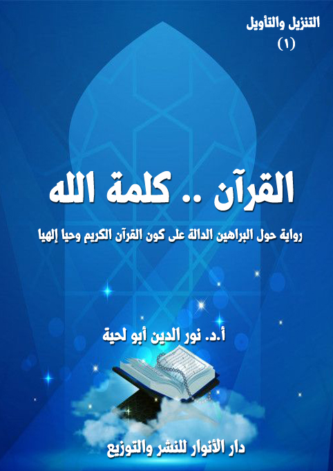

الكتاب: القرآن.. كلمة الله
الوصف: رواية حول البراهين الدالة على كون القرآن الكريم وحيا إلهيا
السلسلة: التنزيل والتأويل
المؤلف: أ. د. نور الدين أبو لحية
الناشر: دار الأنوار للنشر والتوزيع
الطبعة: الأولى، 1442 هـ
عدد الصفحات: 565
ISBN: 978-620-3-85930-0
لمطالعة الكتاب من تطبيق مؤلفاتي المجاني وهو أحسن وأيسر: هنا

التعريف بالكتاب
يتناول هذا الكتاب ما ورد في القرآن الكريم حول البراهين الدالة على كونه وحيا وتنزيلا إلهيا خالصا، وقد استعملنا فيه أنواع التأويل المختلفة، سواء التأويل الأثري أو التدبري أو الواقعي أو العملي.
وقد رأينا أن البراهين القرآنية على كون القرآن الكريم وحيا إليها، يمكن حصرها في في أربعة براهين كبرى:
أولها: ما ورد في القرآن الكريم من شهادة الله تعالى بكونه وحيا إلهيا خالصا، وهو يستند إلى برهانين آخرين، مدعمين بكل أدلة العقل والنقل: برهان العناية، وبرهان الهداية.
ثانيها ـ ما ورد في القرآن الكريم من الإخبار عن شهادات الأنبياء عليهم السلام وبشاراتهم بالرسالة الخاتمة، وبالوحي المرتبط بها، وأن أهل الكتاب يعلمون ذلك، وهو ما يدعمه التأويل الواقعي؛ ولذلك رجعنا إلى ما ورد في الكتاب المقدس مما يدل على ذلك.
ثالثها: ما ورد في القرآن الكريم مما يرتبط برسول الله صلى الله عليه وآله وسلم والذي يدل البحث الواقعي والتدبري فيه إلى استحالة كون القرآن الكريم من تأليفه.
رابعا ـ ما ورد في القرآن الكريم مما يرتبط بشهادة الخبراء، وقد جمعنا فيه أكثر ما ورد في الكتب المتخصصة من الشهادات والوثائق والأدلة المختلفة، والتي تتحدث عما تطلق عليه [وجوه إعجاز القرآن الكريم]، أو مظاهره.
القرآن.. كلمة الله (7)
تحاول هذه السلسلة [التنزيل والتأويل] التعريف بالحقائق والقيم القرآنية من خلال أسلوب خاص يعتمد ما تميل إليه أكثر النفوس من التبسيط والتيسير والتشويق والمتعة.. وما تميل إليه أكثر العقول من الحوار الذي يضم أطرافا كثيرة متباينة لا همّ لها إلا الوصول إلى الحقيقة، وعبر منافذها الصحيحة.. وما تميل إليه أكثر الأرواح المتسامية عن ثقل الأرض من التحليق في المعاني الكريمة النبيلة الراقية.
وهي مع مراعاتها لكل هذه الأمزجة والأذواق، تراعي الاشتمال على أكبر قدر من المعارف التي لا يمكن فهم القرآن الكريم ولا تدبره إلا من خلال توفرها.
وقد دفعني إلى كتابتها بهذا الأسلوب ـ مع أني كنت أنوي كتابتها على الطريقة العادية التي أُلفت بها أكثر التفاسير والدراسات القرآنية ـ هو أني رأيت أنها مع أهميتها تكاد تكون محصورة في فئات محدودة من القراء والباحثين، وأن أكثر الجماهير لا تكاد تقترب منها بسبب المنهج الذي تعتمده، وهو منهج طبيعي لا يُعبر في العادة عن أي علم إلا من خلاله.
ولكني مع ذلك آثرت التوجه لهؤلاء الذين ربما يكونون قد حُرموا من الفوائد الموجودة في تلك الكتب، وذلك من خلال إعادة صياغة معانيها لهم لتتناسب مع طبائعهم وأمزجتهم.
وقدوتي في ذلك كله القرآن الكريم نفسه الذي جعله الله تبيانا لكل شيء، وبطريقة ميسرة سهلة بسيطة يفهمها الخاصة والعامة، كما عبر عن ذلك قوله تعالى: ﴿وَلَقَدْ يَسَّرْنَا الْقُرْآنَ لِلذِّكْرِ فَهَلْ مِنْ مُدَّكِرٍ﴾ [القمر: 17]
وأخبر عن اعتبار صياغته لكل أنواع التأثير الحسن، فقال: ﴿اللَّهُ نَزَّلَ أَحْسَنَ الْحَدِيثِ
القرآن.. كلمة الله (8)
كِتَابًا مُتَشَابِهًا مَثَانِيَ تَقْشَعِرُّ مِنْهُ جُلُودُ الَّذِينَ يَخْشَوْنَ رَبَّهُمْ ثُمَّ تَلِينُ جُلُودُهُمْ وَقُلُوبُهُمْ إِلَى ذِكْرِ اللَّهِ﴾ [الزمر: 23]
ولذلك كان فيه من الأمثال والقصص والمواعظ والحوارات الكثيرة ما يجعل النفس تتجول بين رحابه المقدسة، كما تتجول بين الرياض والحقول، وقد قال الله تعالى يصف قصص القرآن: ﴿نَحْنُ نَقُصُّ عَلَيْكَ أَحْسَنَ الْقَصَصِ بِمَا أَوْحَيْنَا إِلَيْكَ هَذَا الْقُرْآنَ وَإِنْ كُنْتَ مِنْ قَبْلِهِ لَمِنَ الْغَافِلِينَ﴾ [يوسف: 3]
وقال يصف أمثاله: ﴿وَلَقَدْ صَرَّفْنَا فِي هَذَا الْقُرْآنِ لِلنَّاسِ مِنْ كُلِّ مَثَلٍ وَكَانَ الْإِنْسَانُ أَكْثَرَ شَيْءٍ جَدَلًا﴾ [الكهف: 54]، ﴿وَلَقَدْ ضَرَبْنَا لِلنَّاسِ فِي هَذَا الْقُرْآنِ مِنْ كُلِّ مَثَلٍ لَعَلَّهُمْ يَتَذَكَّرُونَ﴾ [الزمر: 27]
لكن القرآن الكريم مع مراعاته لأمزجة الخلق وقدراتهم، لم يسر مع ضعفائهم على حساب عقلائهم.. ولا مع عوامهم على حساب خواصهم.. وإنما كان خطابه للجميع، وفي نفس الوقت.. كل ينال منه بحسب وعائه، كما قال تعالى: ﴿أَنْزَلَ مِنَ السَّمَاءِ مَاءً فَسَالَتْ أَوْدِيَةٌ بِقَدَرِهَا فَاحْتَمَلَ السَّيْلُ زَبَدًا رَابِيًا وَمِمَّا يُوقِدُونَ عَلَيْهِ فِي النَّارِ ابْتِغَاءَ حِلْيَةٍ أَوْ مَتَاعٍ زَبَدٌ مِثْلُهُ كَذَلِكَ يَضْرِبُ اللَّهُ الْحَقَّ وَالْبَاطِلَ فَأَمَّا الزَّبَدُ فَيَذْهَبُ جُفَاءً وَأَمَّا مَا يَنْفَعُ النَّاسَ فَيَمْكُثُ فِي الْأَرْضِ كَذَلِكَ يَضْرِبُ اللَّهُ الْأَمْثَالَ﴾ [الرعد: 17]
وعلى هذا المنهج القرآني نحاول في هذه الدراسات التطرق للمواضيع التي تبحث عادة فيما يسمى [التفسير الموضوعي]، أو [الدراسات القرآنية]، وما يرتبط بها من [علوم القرآن] لتحقيق ثلاثة أغراض:
الأول: طرحها بتلك الطرق المبسطة الميسرة التي تحاول أن تخاطب العقل والعاطفة مثلما فعلنا في سلسلة [حقائق ورقائق]، وغيرها من السلاسل.
القرآن.. كلمة الله (9)
الثاني: محاولة تمييز التأويلات الصحيحة عن المنحرفة، والرد على الشبهات المثارة حول المعاني القرآنية، والتي كان التأويل المنحرف سببا للكثير منها، ولذلك سمينا السلسلة [التنزيل والتأويل]
ذلك أن الهدف الأكبر منها هو البحث عن التأويل المتناسب مع جلال التنزيل، أو التأويل الذي يحاول أن يرتقي بالعقول لحقائق التنزيل، أو التأويل الذي يعمق فهم التنزيل، ويكسب صاحبه القدرة على التدبر والفهم العميق.
ولهذا، اعتمدنا في السلسلة أربعة أنواع من التأويلات:
أولها: التأويل الأثري، وهو الوارد في المصادر الحديثية عن رسول الله صلى الله عليه وآله وسلم وأئمة الهدى، باعتباره البيان الأعظم للقرآن الكريم، وقد قال الله تعالى يذكر وظيفة رسول الله صلى الله عليه وآله وسلم تجاه القرآن: ﴿وَأَنْزَلْنَا إِلَيْكَ الذِّكْرَ لِتُبَيِّنَ لِلنَّاسِ مَا نُزِّلَ إِلَيْهِمْ وَلَعَلَّهُمْ يَتَفَكَّرُونَ﴾ [النحل: 44] ﴿وَمَا أَنْزَلْنَا عَلَيْكَ الْكِتَابَ إِلَّا لِتُبَيِّنَ لَهُمُ الَّذِي اخْتَلَفُوا فِيهِ وَهُدًى وَرَحْمَةً لِقَوْمٍ يُؤْمِنُونَ﴾ [النحل: 64].. وقد حاولنا أن نطهر هذا النوع من التأويل من كل ما نسب إليه زورا وبهتانا، مما يسيء للقرآن الكريم، أو يسيء للنبوة وبيانها.
ثانيها: التأويل التدبري، وأقصد به ما ورد في كتب التفسير وغيرها من الفهوم المرتبطة بالآيات القرآنية.. سواء بذكر ما يُقبل منه، وتأييده ونصرته والاستدلال له.. أو ما يتعارض فيه التدبر مع التنزيل، وحينذاك نرفضه، ونبين سبب رفضه.
وننبه إلى أننا في توثيق تلك الفهوم، لا نطبق في الغالب ما جرت به العادة من وضع النصوص بين قوسين، ثم التوثيق في نهاية النص، لأن ذلك قد يشغل القارئ عن المعاني المطروحة، ولهذا نضع التوثيق في بداية الحوار، ونشير إلى أن تلك الفهوم واردة في الكتاب، وهو يغنينا عن تتبع التفاصيل في كل محل مرتبط بالموضوع.
القرآن.. كلمة الله (10)
وننبه كذلك إلى أننا نتصرف في النصوص المقتبسة كثيرا، إما بتبسيطها، أو اختصارها، أو ربطها بالأحداث الواردة في الرواية، وهو ما يمنعنا من وضعها بين قوسين.
ثالثها: التأويل الواقعي، وأقصد به ما أثبته الواقع من الفهوم المرتبطة بالآيات القرآنية.. كما يشير إلى ذلك قوله تعالى: ﴿هَلْ يَنْظُرُونَ إِلَّا تَأْوِيلَهُ يَوْمَ يَأْتِي تَأْوِيلُهُ يَقُولُ الَّذِينَ نَسُوهُ مِنْ قَبْلُ قَدْ جَاءَتْ رُسُلُ رَبِّنَا بِالْحَقِّ﴾ [الأعراف: 53]، وقوله: ﴿بَلْ كَذَّبُوا بِمَا لَمْ يُحِيطُوا بِعِلْمِهِ وَلَمَّا يَأْتِهِمْ تَأْوِيلُهُ كَذَلِكَ كَذَّبَ الَّذِينَ مِنْ قَبْلِهِمْ فَانْظُرْ كَيْفَ كَانَ عَاقِبَةُ الظَّالِمِينَ﴾ [يونس: 39]، وقوله: ﴿سَنُرِيهِمْ آيَاتِنَا فِي الْآفَاقِ وَفِي أَنْفُسِهِمْ حَتَّى يَتَبَيَّنَ لَهُمْ أَنَّهُ الْحَقُّ أَوَلَمْ يَكْفِ بِرَبِّكَ أَنَّهُ عَلَى كُلِّ شَيْءٍ شَهِيدٌ﴾ [فصلت: 53]
رابعها: التأويل العملي، وأقصد به التطبيقات المرتبطة بالقيم والحقائق القرآنية، وكيفية تنفيذها في الواقع، أو آثارها في النفس.
ولتحقيق كل تلك المعاني صغنا السلسلة على شكل روايات حوارية بين أطراف وجهات متعددة، ذلك أن هذا الأسلوب ييسر توضيح كل قضية ومناقشتها بهدوء ويسر.
بالإضافة إلى ذلك حاولنا أن نراعي جانب التشويق والمتعة؛ فلم نعتمد الحوار المجرد، وإنما صغناها في شكل أحداث أكثرها يعبر بطريقة رمزية عما نريد إيصاله للقارئ من المعاني.
وليعذرنا القارئ عندما نذكر أحيانا بعض التفاصيل العلمية، والتي قد يراها مشوهة لأحداث الرواية، أو تضعها بصورة غير واقعية، لأن الهدف ليس هو الأحداث ولا الرواية، وإنما تلك المعاني التي نحاول أن نتسلل من خلالها لعقل القارئ، ليكتسب مع المتعة والتشويق العلم والمعرفة.
وننبه في الأخير إلى أمرين:
القرآن.. كلمة الله (11)
الأول: أننا حاولنا عند طرح كل قضية من القضايا ذكر ما يرتبط بها من القرآن الكريم، وفي المواضع المختلفة، ذلك أنه الهدف الأكبر الذي يهتم به أصحاب التفسير الموضوعي والدراسات القرآنية.
الثاني: أننا لم نعتن كثيرا بالتفسير التحليلي للآيات الكريمة التي نذكرها إلا إذا اقتضى الأمر ذلك، ذلك أن عبارات القرآن الكريم واضحة في عمومها لا تحتاج إلى شرح أو تفسير.. بالإضافة إلى وجود الكثير من التفاسير التي تيسر لمن صعب عليه المعنى العودة إليها والفهم منها.. بالإضافة إلى أن المعنى القرآني أعظم من أن تحيط به التفاسير، ولذلك نورد الآية الواحدة في المواضع المختلفة بحسب المعنى المرتبط بها في ذلك الموضع.
القرآن.. كلمة الله (12)
يتناول هذا الكتاب ما ورد في القرآن الكريم حول البراهين الدالة على كونه وحيا وتنزيلا إلهيا خالصا، وقد استعملنا فيها أنواع التأويل المختلفة، سواء التأويل الأثري أو التدبري أو الواقعي أو العملي.
وقد رأينا أن البراهين القرآنية على كون القرآن الكريم وحيا إليها، يمكن حصرها في في أربعة براهين كبرى:
أولها: ما ورد في القرآن الكريم من شهادة الله تعالى بكونه وحيا إلهيا خالصا، وهو ما نص عليه قوله تعالى: ﴿لَكِنِ اللَّهُ يَشْهَدُ بِمَا أَنْزَلَ إِلَيْكَ أَنْزَلَهُ بِعِلْمِهِ وَالْمَلَائِكَةُ يَشْهَدُونَ وَكَفَى بِاللَّهِ شَهِيدًا﴾ [النساء: 166]، وغيرها من الآيات الكثيرة، وقد رأينا أن هذا البرهان يستند إلى برهانين آخرين، مدعمين بكل أدلة العقل والنقل: أحدهما برهان العناية: وهو عناية الله تعالى بخلقه، ورحمته بهم، وتحقيقه لكل مطالبهم وحاجاتهم.. وثانيهما: برهان الهداية: وهو نابع من البرهان السابق، ومكمل له، ذلك أنه لا يمكن أن تتحقق العناية من دون الهداية.
ولم نفصل كثيرا في هذين البرهانين باعتبار أننا سنتناول الحديث عنهما بتفصيل في الأجزاء المخصصة لذلك.
ثانيها ـ ما ورد في القرآن الكريم من الإخبار عن شهادات الأنبياء عليهم السلام وبشاراتهم بالرسالة الخاتمة، وبالوحي المرتبط بها، وأن أهل الكتاب يعلمون ذلك، كما قال تعالى: ﴿الَّذِينَ يَتَّبِعُونَ الرَّسُولَ النَّبِيَّ الْأُمِّيَّ الَّذِي يَجِدُونَهُ مَكْتُوبًا عِنْدَهُمْ فِي التَّوْرَاةِ وَالْإِنْجِيلِ يَأْمُرُهُمْ بِالْمَعْرُوفِ وَيَنْهَاهُمْ عَنِ الْمُنْكَرِ وَيُحِلُّ لَهُمُ الطَّيِّبَاتِ وَيُحَرِّمُ عَلَيْهِمُ الْخَبَائِثَ وَيَضَعُ عَنْهُمْ إِصْرَهُمْ وَالْأَغْلَالَ الَّتِي كَانَتْ عَلَيْهِمْ فَالَّذِينَ آمَنُوا بِهِ وَعَزَّرُوهُ وَنَصَرُوهُ وَاتَّبَعُوا
القرآن.. كلمة الله (13)
النُّورَ الَّذِي أُنْزِلَ مَعَهُ أُولَئِكَ هُمُ الْمُفْلِحُونَ﴾ [الأعراف: 157]، وهو ما يدعمه التأويل الواقعي؛ ولذلك رجعنا إلى ما ورد في الكتاب المقدس مما يدل على ذلك.
ثالثها: ما ورد في القرآن الكريم مما يرتبط برسول الله صلى الله عليه وآله وسلم والذي يدل البحث الواقعي والتدبري فيه إلى استحالة كون القرآن الكريم من تأليفه.. وقد اعتمدنا في ذلك عشرة أنواع من الأدلة، يكمل بعضها بعضا:
1. البيئة المخالفة: ونقصد به الواقع الذي تنزل فيه القرآن الكريم، سواء في البيئة العربية القريبة، أو غيرها من البيئات، والتي كانت جميعا تتعطش لتنزل الوحي الإلهي، لإنقاذها وتخليصها.
2. الأخلاق العالية: ونقصد به أخلاق رسول الله صلى الله عليه وآله وسلم العالية، والتي تجعل من المستحيل عليه أن يدعي أي دعوى كاذبة على الخلق؛ فكيف يدعيها على الخالق.
3. الوحي الإلهي: ونقصد به ما يرتبط بظاهرة الوحي نفسها، وكيفية حصولها، واستحالة أن تكون نابعة من أمراض نفسية أو عصبية، أو أن لها علاقة بالجن أو الإنس.
4. اليقين الجازم: ونقصد به يقين رسول الله صلى الله عليه وآله وسلم بنبوته وعلمه بها، وعدم شكه فيها، وأنه ضحى في سبيل ذلك بكل شيء، ولو كان مدعيا لما استطاع ذلك.
5. التأديب والعتاب: ونقصد به ما ورد في القرآن الكريم من الآيات الكريمة التي تعاتب رسول الله صلى الله عليه وآله وسلم أو تؤدبه أو تتحدث عن بعض خصوصياته، وهو ما لا يمكن للمدعي أن يفعله.
6. التجرد والإخلاص: ونقصد به تجرد رسول الله صلى الله عليه وآله وسلم عن طلب أي عوض على دعوته، وإخلاصه في أداء التكاليف المرتبطة بها، وهو ما يتنافى مع الافتراء والدعوى.
7. المواجهة القاسية: ونقصد به تلك المواجهات الشديدة الحسية والمعنوية، والتي
القرآن.. كلمة الله (14)
لا يمكن للمدعي أن يتحملها.
8. الشدة والثقل: ونقصد به تحمل رسول الله صلى الله عليه وآله وسلم لكل الآلام في سبيل دعوته، ومواجهته لكل أصناف الحاقدين والمعتدين.
9. الحفظ التام: ونقصد به تلك المعجزات المرتبطة بحفظ رسول الله صلى الله عليه وآله وسلم أو حفظ القرآن الكريم وفي البيئة التي أجمعت على حربه وتشويهه.
10. التحدي الشامل: ونقصد به ما ورد في القرآن الكريم من تحدي المخالفين له، وعدم استطاعتهم المواجهة على الرغم من توفر كل أسبابها، وفي كل الأجيال.
رابعا ـ ما ورد في القرآن الكريم مما يرتبط بشهادة الخبراء، وهي التي أشار إليها قوله تعالى: ﴿فَاسْأَلْ بِهِ خَبِيرًا﴾ [الفرقان: 59]، وقوله: ﴿وَمَا أَرْسَلْنَا قَبْلَكَ إِلَّا رِجَالًا نُوحِي إِلَيْهِمْ فَاسْأَلُوا أَهْلَ الذِّكْرِ إِنْ كُنْتُمْ لَا تَعْلَمُونَ﴾ [الأنبياء: 7]، وقوله: ﴿وَيَقُولُ الَّذِينَ كَفَرُوا لَسْتَ مُرْسَلًا قُلْ كَفَى بِاللَّهِ شَهِيدًا بَيْنِي وَبَيْنَكُمْ وَمَنْ عِنْدَهُ عِلْمُ الْكِتَابِ﴾ [الرعد: 43]
وقد جمعنا فيه أكثر ما ورد في الكتب المتخصصة من الشهادات والوثائق والأدلة المختلفة، والتي تتحدث عما تطلق عليه [وجوه إعجاز القرآن الكريم]، أو مظاهره، وقد رأينا تقسيمها إلى سبعة وجوه.
1 ـ القرآن.. والأديان السابقة: وقد ذكرنا فيه تصديق القرآن الكريم وهيمنته على ما ورد في كتب الأديان السابقة، وتصحيحه لها، بالإضافة إلى ما ورد من شهادات رجال تلك الأديان على ذلك.
2 ـ القرآن.. والبيان الشافي: وذكرنا فيه بعض الشهادات والأدلة على ما يطلق عليه [الإعجاز البياني للقرآن الكريم]
3 ـ القرآن.. وأكوان الله: وذكرنا فيه بعض الشهادات والأدلة على ما يطلق عليه
القرآن.. كلمة الله (15)
[الإعجاز العلمي للقرآن الكريم]
4 ـ القرآن.. وعلم الغيب: وذكرنا فيه بعض الشهادات والأدلة على ما يطلق عليه [الإعجاز الغيبي للقرآن الكريم]
5 ـ القرآن.. والنفس الإنسانية: وذكرنا فيه بعض الشهادات والأدلة على ما يطلق عليه [الإعجاز النفسي أو الأخلاقي للقرآن الكريم]
6 ـ القرآن.. والمجتمع الإنساني: وذكرنا فيه بعض الشهادات والأدلة على ما يطلق عليه [الإعجاز الاجتماعي للقرآن الكريم]، أو الإعجاز المرتبط بالتأثير في المجتمعات وإصلاحها، والثمار الناتجة عن ذلك.
7 ـ القرآن.. والدين الكامل: وذكرنا فيه ما يدل على شمول القرآن الكريم لكل الحاجات، ولكل الأزمنة والأمكنة.
هذه هي تفاصيل موجزة عما ورد في الكتاب من البراهين، وقد حاولنا فيه أن نمزج بين أنواع التأويل المختلفة، ولذلك لم نقتصر على البرهنة والإثباتات، مثلما يفعل المتكلمون، وإنما أدخلنا ما أطلقنا عليه [التأويل العملي]، أو كيفية الاستفادة من تلك المعاني في واقع الحياة، باعتباره من الأغراض الكبرى لهذه السلسلة.
وننبه في ختام هذه المقدمة إلى أننا سنفصل ـ بإذن الله وعونه الكثير ـ مما ذكرناه في هذا الكتاب بإيجاز في كتب خاصة، لأنه لا يمكن أن نعرض هنا كل التفاصيل.
القرآن.. كلمة الله (16)
لست أدري هل كنت يقظا أم نائما حين سمعته يقول لي بشدة ممزوجة لينا: قم لتتعلم القرآن.
قلت: ألي تقول هذا الكلام.. فأنا لا أعرف القرآن فقط.. بل أتقنه بقراءاته السبع والعشر.. وأؤديه كما يؤديه أكبر القراء.. وعن ظهر قلب.. لا أسقط منه حرفا واحدا.. وبغننه ومدوده ومخارجه.. وبإتقان عظيم.. ولي في كل ذلك إجازات كثيرة، ومن كبار القراء إلى رسول الله صلى الله عليه وآله وسلم.. إلى جبريل عليه السلام.. إلى الله تعالى (1).
لم يلتفت لكلامي، بل راح يردد: قم لتتعلم القرآن.
قلت: ألم تسمع ما ذكرت لك.. أم أنك تقصد التفسير.. فأنا قرأت أكثر ما أُنتج من التفاسير.. ما كان منه بالمأثور.. وما كان بالرأي.. وما كان بالإشارة.. وما جمع بين ذلك جميعا؟
لم يلتفت لكلامي، بل راح يردد من جديد، وبصوت أكثر حدة وشدة: قم لتتعلم القرآن.
رفعت رأسي لأنظر إليه؛ فرأيت فيه صورة كل المعلمين المباركين الذين رزقني الله صحبتهم والجلوس إليهم، والاستفادة منهم.. كان يشبه في سلامه وهدوئه وطمأنينته معلمي معلم السلام.. وكان يشبه في قوته ويقينه وصفائه معلمي معلم الإيمان.. وكان يشبه في سيماه وملامحه وأنواره معلمي معلم البركة..
لم أجد إلا وأنا أقول له: من أنت؟.. فملامحك لا تختلف كثيرا عن معلمي معلم
__________
(1) هكذا جرت العادة في الإجازات المرتبطة بالقرآن الكريم.
القرآن.. كلمة الله (17)
السلام.. ومعلمي معلم الإيمان.. ومعلمي معلم البركة.. ومعلمي معلم..؟
قاطعني، وقال: أنا معلم القرآن.
قلت: ما أكثر المعلمين للقرآن في قريتنا، وأنا تتلمذت على أكثرهم.. وقد بلغت من العمر بحيث لا أحتاج للمزيد من المعلمين؟
قال: فهل منهم من أخبرك أنه نقطة تحت الباء؟
ابتسمت، وقلت: لو ذكرت ذلك لمعلمي قريتي لامتلأوا مني سخرية.
قال: من لم يبلغ أن يكون كذلك، أو لم يسمع به، أو لم يحن إليه.. فلن يفهم القرآن، ولن يتعلمه، ولن يبلغ أسراره.. فهي محجوبة إلا على من امتلأ بالطهارة والصفاء والعبودية.
قلت: لكن القرآن ـ كما علمت ـ مدرسة للطهارة والصفاء والعبودية، وقد يدخل إلى مدرسته من تدنسوا بكل ألوان القذارة؛ فلا يلبثون حتى يتخرجوا، وهم أطهر الناس وأرقهم وأصفاهم.
قال: لأنهم دخلوا مدرسته متواضعين.. لا مستكبرين.. وعبيدا لا سادة.. وطالبي فهم وعلم.. لا من الذين زهوا بعلومهم وفرحوا بها.. ألم تسمع قوله تعالى: ﴿فَلَمَّا جَاءَتْهُمْ رُسُلُهُمْ بِالْبَيِّنَاتِ فَرِحُوا بِمَا عِنْدَهُمْ مِنَ الْعِلْمِ وَحَاقَ بِهِمْ مَا كَانُوا بِهِ يَسْتَهْزِئُونَ﴾ [غافر: 83]، فلهذا يحتاج من يريد أن يتتلمذ عليه أن يوفر لنفسه القابلية لذلك.
قلت: هل تقصد قوله تعالى: ﴿إِنَّهُ لَقُرْآنٌ كَرِيمٌ فِي كِتَابٍ مَكْنُونٍ لَا يَمَسُّهُ إِلَّا الْمُطَهَّرُونَ﴾ [الواقعة: 77 ـ 79]؟
قال: أجل.. فالمستنقع الآسن لن تزيده الأمطار إلا عفونة.
قلت: صحيح ما تقول، وقد ذكره القرآن الكريم.. فالله تعالى يذكر المواقف المختلفة
القرآن.. كلمة الله (18)
للذين كانوا يسمعون القرآن غضا طريا من فم رسول الله صلى الله عليه وآله وسلم، فمنهم من يلين له، ويتأدب بين يديه، كما قال تعالى عن المؤمنين الصالحين: ﴿وَإِذَا سَمِعُوا مَا أُنْزِلَ إِلَى الرَّسُولِ تَرَى أَعْيُنَهُمْ تَفِيضُ مِنَ الدَّمْعِ مِمَّا عَرَفُوا مِنَ الْحَقِّ يَقُولُونَ رَبَّنَا آمَنَّا فَاكْتُبْنَا مَعَ الشَّاهِدِينَ وَمَا لَنَا لَا نُؤْمِنُ بِاللَّهِ وَمَا جَاءَنَا مِنَ الْحَقِّ وَنَطْمَعُ أَنْ يُدْخِلَنَا رَبُّنَا مَعَ الْقَوْمِ الصَّالِحِينَ﴾ [المائدة: 83 ـ 84]
وأخبر أنهم كانوا يسجدون بكل كيانهم عند تلاوتهم له، فقال: ﴿قُلْ آمِنُوا بِهِ أَوْ لَا تُؤْمِنُوا إِنَّ الَّذِينَ أُوتُوا الْعِلْمَ مِنْ قَبْلِهِ إِذَا يُتْلَى عَلَيْهِمْ يَخِرُّونَ لِلْأَذْقَانِ سُجَّدًا وَيَقُولُونَ سُبْحَانَ رَبِّنَا إِنْ كَانَ وَعْدُ رَبِّنَا لَمَفْعُولًا وَيَخِرُّونَ لِلْأَذْقَانِ يَبْكُونَ وَيَزِيدُهُمْ خُشُوعًا﴾ [الإسراء: 107 ـ 109]
ومنهم أولئك الجفاة الغلاظ الذين يحرمون أنفسهم بكبرهم واستعلائهم.. وهم الذين وصفهم الله تعالى بقوله: ﴿وَإِنْ تَدْعُوهُمْ إِلَى الْهُدَى لَا يَسْمَعُوا وَتَرَاهُمْ يَنْظُرُونَ إِلَيْكَ وَهُمْ لَا يُبْصِرُونَ﴾ [الأعراف: 198].. وقال عنهم: ﴿إِنْ تَدْعُوهُمْ لَا يَسْمَعُوا دُعَاءَكُمْ وَلَوْ سَمِعُوا مَا اسْتَجَابُوا لَكُمْ وَيَوْمَ الْقِيَامَةِ يَكْفُرُونَ بِشِرْكِكُمْ وَلَا يُنَبِّئُكَ مِثْلُ خَبِيرٍ﴾ [فاطر: 14]
ولم يكتفوا بذلك، بل راحوا يستعملون كل الوسائل ليصرفوا الخلق عنه، إما باللغو بين يديه، كما قال تعالى: ﴿وَقَالَ الَّذِينَ كَفَرُوا لَا تَسْمَعُوا لِهَذَا الْقُرْآنِ وَالْغَوْا فِيهِ لَعَلَّكُمْ تَغْلِبُونَ﴾ [فصلت: 26].. أو بادعاء كونه سحرا أو شعرا.. أو مجرد أساطير وخرافات لا حقيقة لها، كما قال تعالى: ﴿وَمِنْهُمْ مَنْ يَسْتَمِعُ إِلَيْكَ وَجَعَلْنَا عَلَى قُلُوبِهِمْ أَكِنَّةً أَنْ يَفْقَهُوهُ وَفِي آذَانِهِمْ وَقْرًا وَإِنْ يَرَوْا كُلَّ آيَةٍ لَا يُؤْمِنُوا بِهَا حَتَّى إِذَا جَاءُوكَ يُجَادِلُونَكَ يَقُولُ الَّذِينَ كَفَرُوا إِنْ هَذَا إِلَّا أَسَاطِيرُ الْأَوَّلِينَ﴾ [الأنعام: 25]، وقال: ﴿وَإِذَا تُتْلَى عَلَيْهِمْ آيَاتُنَا قَالُوا قَدْ سَمِعْنَا لَوْ نَشَاءُ لَقُلْنَا مِثْلَ هَذَا إِنْ هَذَا إِلَّا أَسَاطِيرُ الْأَوَّلِينَ﴾ [الأنفال: 31]، وقال: ﴿وَقَالُوا أَسَاطِيرُ الْأَوَّلِينَ اكْتَتَبَهَا فَهِيَ تُمْلَى عَلَيْهِ بُكْرَةً وَأَصِيلًا﴾ [الفرقان: 5]
قال: ولذلك أنت محتاج لتعلم القرآن حتى لا تقع فيما وقع فيه أولئك الذين رموه
القرآن.. كلمة الله (19)
بما رموه به؟
قلت: كيف تقول لي ذلك.. وأنا مسلم غُذيت بالقرآن مذ كنت صبيا صغيرا.. ولا يزال لساني رطبا به.. ولا تزال ذاكرتي واعية مستوعبة له.
قال: ليس الشأن في لسانك ولا في ذاكرتك.. الشأن في عقلك وقلبك وروحك وحياتك.. فالقرآن هو روح الروح.. وحياة الحياة.
قلت: صدقت.. وقد أشار إلى ذلك قوله تعالى: ﴿يَا أَيُّهَا الَّذِينَ آمَنُوا اسْتَجِيبُوا لِلَّهِ وَلِلرَّسُولِ إِذَا دَعَاكُمْ لِمَا يُحْيِيكُمْ﴾ [الأنفال: 24]
وأشار إليه حين سماه روحا، فقال: ﴿وَكَذَلِكَ أَوْحَيْنَا إِلَيْكَ رُوحًا مِنْ أَمْرِنَا مَا كُنْتَ تَدْرِي مَا الْكِتَابُ وَلَا الْإِيمَانُ وَلَكِنْ جَعَلْنَاهُ نُورًا نَهْدِي بِهِ مَنْ نَشَاءُ مِنْ عِبَادِنَا وَإِنَّكَ لَتَهْدِي إِلَى صِرَاطٍ مُسْتَقِيمٍ﴾ [الشورى: 52]
وأشار إليه حين أخبر أن الذي تنزل به روح، فقال: ﴿وَإِنَّهُ لَتَنْزِيلُ رَبِّ الْعَالَمِينَ نَزَلَ بِهِ الرُّوحُ الْأَمِينُ عَلَى قَلْبِكَ لِتَكُونَ مِنَ الْمُنْذِرِينَ﴾ [الشعراء: 192 ـ 194]
قال: فهل تعلم معنى الحياة التي أرادها الله تعالى لعباده، والتي لا تتحقق إلا بتلك الروح؟
قلت: لاشك أنها حياة شاملة.. فالآية الكريمة تدعو إلى الحياة بكل جوانبها.. لا تلك الحياة التي وصف الله تعالى بها النبات، فقال: ﴿وَاللَّهُ أَنْزَلَ مِنَ السَّمَاءِ مَاءً فَأَحْيَا بِهِ الْأَرْضَ بَعْدَ مَوْتِهَا إِنَّ فِي ذَلِكَ لَآيَةً لِقَوْمٍ يَسْمَعُونَ﴾ [النحل: 65]، وقال: ﴿فَانْظُرْ إِلَى آثَارِ رَحْمَتِ اللَّهِ كَيْفَ يُحْيِي الْأَرْضَ بَعْدَ مَوْتِهَا إِنَّ ذَلِكَ لَمُحْيِي الْمَوْتَى وَهُوَ عَلَى كُلِّ شَيْءٍ قَدِيرٌ﴾ [الروم: 50]، وقال ﴿وَاللَّهُ الَّذِي أَرْسَلَ الرِّيَاحَ فَتُثِيرُ سَحَابًا فَسُقْنَاهُ إِلَى بَلَدٍ مَيِّتٍ فَأَحْيَيْنَا بِهِ الْأَرْضَ بَعْدَ مَوْتِهَا كَذَلِكَ النُّشُورُ﴾ [فاطر: 9]
القرآن.. كلمة الله (20)
أو تلك التي وصف الله بها الحيوان، فقال: ﴿إِنَّ الَّذِي أَحْيَاهَا لَمُحْيِي الْمَوْتَى إِنَّهُ عَلَى كُلِّ شَيْءٍ قَدِيرٌ﴾ [فصلت: 39]) (2).
وإنما تلك الحياة الكريمة التي وصفها بقوله: ﴿أَوَمَنْ كَانَ مَيْتًا فَأَحْيَيْنَاهُ وَجَعَلْنَا لَهُ نُورًا يَمْشِي بِهِ فِي النَّاسِ كَمَنْ مَثَلُهُ فِي الظُّلُمَاتِ لَيْسَ بِخَارِجٍ مِنْهَا كَذَلِكَ زُيِّنَ لِلْكَافِرِينَ مَا كَانُوا يَعْمَلُونَ﴾ [الأنعام: 122]
بل ذكر أنها الحياة الحقيقية التي هي غاية الأماني، فقال ـ مخبرا عن الذي فرط في التحضير لها ـ: ﴿وَجِيءَ يَوْمَئِذٍ بِجَهَنَّمَ يَوْمَئِذٍ يَتَذَكَّرُ الْإِنْسَانُ وَأَنَّى لَهُ الذِّكْرَى يَقُولُ يَا لَيْتَنِي قَدَّمْتُ لِحَيَاتِي﴾ [الفجر: 23 ـ 24]
قال: فهل تعلم كيف تحيا بالقرآن.. أو كيف تسري روح القرآن في روحك لتمدها بالحياة؟
لم أدر ما أقول، فقال: لذلك أنت ككل الخلق محتاج لأن تتعلم القرآن حتى تسمعه روحك، لا أذنك، ويردده قلبك لا لسانك..
قلت: فأين أجد هذه المدرسة التي أتعلم منها هذه العلوم؟
قال: اصحبني كما صحبت سائر معلميك.. وتأدب بين يدي الحقائق.. واترك نفسك وهواك.. فلن ينال الحقائق من كان عبدا لنفسه وهواه.
قلت: ها أنذا بين يديك، وطوع أمرك.. فسر بي حيث شئت.. ولقني من الحقائق ما أردت.
قال: ألم يعلمك معلموك بأن الحقائق لا تُلقن.. وأن المعارف أسمى من أن تفرض على العقول؟
قلت: بلى.. هم حدثوني عن ذلك كثيرا.. وأخبروني أنهم مجرد أدلاء وهداة.. وأن
القرآن.. كلمة الله (21)
علي السعي والاجتهاد والتأمل إلى أن أتشرب الحقائق وأراها رأي العين.
قال: وذاك ما أدعوك إليه.. فالله تعالى أعز وأكرم من أن يفرض على عباده ما لم يقتنعوا به، أو يميلوا إليه.. والحقائق أكرم من أن تنال المستكبرين عليها الراغبين عنها.
قلت: أجل.. فقد ذكر الله تعالى ذلك، فقال: ﴿لَا إِكْرَاهَ فِي الدِّينِ قَدْ تَبَيَّنَ الرُّشْدُ مِنَ الْغَيِّ﴾ [البقرة: 256]، وقال: ﴿فَذَكِّرْ إِنَّمَا أَنْتَ مُذَكِّرٌ لَسْتَ عَلَيْهِمْ بِمُصَيْطِرٍ﴾ [الغاشية: 21 ـ 22]
قال: فهلم لتتعلم القرآن.
قلت: هل سنبدأ بالسور مرتبة حسب النزول.. أم حسب ترتيب المصاحف.. أم ترى أن الأسلم والأعلم والأكمل أن ننتقي الآيات حسب مواضيعها؟
قال: الأسلم والأعلم والأكمل أن نبدأ بالتعرف على مصدر القرآن.. فلا يمكن أن تفهم القرآن وأنت تجهل مصدره.. أو تغض طرفك عنه.
قلت: ذاك من البديهيات التي تسلم لها العقول.. فالقرآن كلام الله الذي أوحى به إلى رسوله صلى الله عليه وآله وسلم.
قال: فكيف وصلت إلى هذه المعرفة؟
قلت: لا أذكر ميقاتا لذلك.. فأنا مذ كنت صبيا صغيرا.. وأنا أتعلم القرآن.. وأقر أنه من عند الله.. ولم يعترني أي شك في ذلك.
قال: فقد أخذت يقينك بالقرآن وراثة عن أبيك وجدك.
قلت: وهم أخذوه عن آبائهم وأجدادهم.. ولكن الأيام لم تزدني إلا تعلقا به إلى الدرجة التي أصبح فيها عندي من الحقائق التي لا تحتاج إلى براهين تدل عليها.
قال: ألم تتعلم من معلم الإيمان كيف تخرج عن دين آبائك وأجدادك لتدخل في دين الله؟
القرآن.. كلمة الله (22)
قلت: بلى.. لقد حدثني عن ذلك في أول لقاء لي به.. حذرني من الدين الوراثي، ودعاني إلى الدين الذي أصل إليه بالبحث والتحقيق، لا بالتسليم والتقليد.
قال: وأنا في أول لقاء لي بك أدعوك إلى ذلك.. فأول دروسك أن تتعلم أن القرآن كلام الله.. هل تعرف معنى ذلك؟
قلت: هل تقصد تلك المسألة التي خاض فيها المتكلمون، ودب فيها الصراع بين الأمة في البحث عن حقيقة القرآن.. وهل ألفاظه من الله.. أم مجرد معانيه؟
قال: ذاك جدل فارغ أوحى به الشيطان ليصرف العقول عن ربها وكلماته بترك البحث عن معانيها، والتدبر في أسرارها للبحث عن الكيفيات التي لا طاقة لها بها.
قلت: صدقت في ذلك.. وقد أخبرني كل من تتلمذت عليهم من المعلمين عن ذلك.. فالحقائق تُعقل ولا تُتصور.. وتنزه عن أثواب الجسمية، ولا تكدر بقوالبها الحسية.
قال: فهات قلمك ودواتك وقراطيسك.. لتسجل كل ما تراه في رحلتك إلى إثبات كون القرآن الكريم كلمة الله إلى عباده.
القرآن.. كلمة الله (23)
لم أدر بعد ذلك الحديث مع معلمي الجديد [معلم القرآن] إلا وأنا في صحراء موحشة قاحلة، لا زرع فيها ولا ماء ولا ظلال.. ولم أجد نفسي إلا وأنا أصيح بملء فمي: أين أنت يا معلمي؟.. لقد زججت بي في فم تنين الموت القاتل.. فهلم لتخرجني قبل أن يحرقني لهيبه.
بعد لحظات عسيرة يئست فيها من الحياة، رأيت من بعيد شبحا يقترب مني؛ فرحت أحث خطاي إليه، وقد تعجبت إذ رأيت فيه ملامح وجوه الأوروبيين؛ فشعره أشقر، وعيناه زرقاوان، وبشرته بيضاء شديدة البياض.. وحتى حديثه عندما تحدث إلي باللغة العربية، كان يلكن فيها كما يلكن الأعاجم.
قال لي، وهو يبتسم: مرحبا بك.. أظن أنك الشخص الذي كنت أبحث عنه.. أين قلمك وقراطيسك ودواتك؟
قلت: هي معي لا تفارقني.. ولكن من أنت؟.. وما شأنك بها؟.. ومن حدد لك موعدا معي في هذه الصحراء الجافة القاسية؟
قال: معلمنا جميعا.. معلم القرآن.. هل نسيته بهذه السرعة؟.. ألم يدعك إلى أن ترحل للتعرف على مصدر القرآن؟
قلت: بلى.. ولكني لم أكن أظن أن هذه الرحلة ستكون لهذه الصحراء القاحلة، وهذا الحر الشديد.. وهذا التنين الذي يكاد يلتهمني.
قال: ألم تسمع ما حكاه الله تعالى عن إبراهيم عليه السلام عندما طلب اليقين والطمأنينة؟
القرآن.. كلمة الله (24)
قلت: بلى.. لقد قال الله تعالى يخبر عن قصته في ذلك: ﴿وَإِذْ قَالَ إِبْرَاهِيمُ رَبِّ أَرِنِي كَيْفَ تُحْيِي الْمَوْتَى قَالَ أَوَلَمْ تُؤْمِنْ قَالَ بَلَى وَلَكِنْ لِيَطْمَئِنَّ قَلْبِي قَالَ فَخُذْ أَرْبَعَةً مِنَ الطَّيْرِ فَصُرْهُنَّ إِلَيْكَ ثُمَّ اجْعَلْ عَلَى كُلِّ جَبَلٍ مِنْهُنَّ جُزْءًا ثُمَّ ادْعُهُنَّ يَأْتِينَكَ سَعْيًا وَاعْلَمْ أَنَّ اللَّهَ عَزِيزٌ حَكِيمٌ﴾ [البقرة: 260]
قال: ألا ترى أنه كلف بالسير إلى جبال متفرقة.. وكل ذلك يقتضي منه جهدا وتعبا ومشقة؟
قلت: بلى.. وقد سمعت معها ما ذكره الله تعالى عن رحلة موسى عليه السلام إلى الخضر، لينال من حقائق العلوم ما لم يكن يعلم.. لقد وصف الله تعالى ذلك، فقال: ﴿وَإِذْ قَالَ مُوسَى لِفَتَاهُ لَا أَبْرَحُ حَتَّى أَبْلُغَ مَجْمَعَ الْبَحْرَيْنِ أَوْ أَمْضِيَ حُقُبًا﴾ [الكهف: 60]
قال: أجل.. فالحقائق أعظم من أن تنالها، وأنت على أرائك الاسترخاء.. علامة صدقك جهادك ومجاهدتك.. ألم تسمع قوله تعالى: ﴿وَالَّذِينَ جَاهَدُوا فِينَا لَنَهْدِيَنَّهُمْ سُبُلَنَا وَإِنَّ اللَّهَ لَمَعَ الْمُحْسِنِينَ﴾ [العنكبوت: 69]؟
قلت: بلى.. فقد قرن الله تعالى الهداية بالمجاهدة.. ولكن.. ألم يكن هناك مكان أجدى من هذا المكان.. حتى يتاح لعقولنا أن تفكر وتتأمل ولا يحول هذا الموت الزؤام بينها وبين ذلك؟
قال: العقل الذي تهمه الحقائق لا تهمه المحال التي يكون فيها صاحبه.. فترفّع عن أغلال جسدك لتعيش في ثياب روحك.
شعرت بالحياء من قوله هذا، ولم أجد ما أقول، فقال لي: ألست تريد أن تتيقن بالمصدر الإلهي للقرآن؟
قلت: بلى.. لقد أخبرني معلمي أن هذا أول الدروس.. وأني لن أنجح في سائر
القرآن.. كلمة الله (25)
الدروس ما لم أتقنه وأستوعبه وأعيشه.
قال: صدق معلمنا.. فلا يعرف القرآن من لم يوقن أنه كلام الله.. ولن يوقن أنه كذلك ما لم يتخلص من كل ريب وشك.. فالشك والريب هما الحجاب الأعظم الذي يحول بين العقل والقلب وإدراك الحقائق، أو الاستفادة منها.
قلت: أجل.. لقد ذكر الله تعالى ذلك، فقال في وصف القرآن الكريم: ﴿ذَلِكَ الْكِتَابُ لَا رَيْبَ فِيهِ هُدًى لِلْمُتَّقِينَ﴾ [البقرة: 2]، فقد قرن بين الهداية وعدم الشك.. فلا يمكن لمن يشك في أستاذه أن يستفيد منه.. ولا يمكن لمن يشك في كلمات ربه أن تتمثل في عقله وقلبه.
قال: ولذلك كان الدرس الأول هو البحث عن اليقين الجازم، وإزالة كل ألوان الشكوك.. حتى يتخلص العقل والقلب من دنسها.. فلا يحول بين الإنسان والقرآن إلا وساوسها وآفاتها.
قلت: ولكني بحمد الله مؤمن.. وقد ورثت عن آبائي وأجدادي ذلك الإيمان.. ومثل ذلك كل قومي.. وهم لا يحتاجون لأي جهد، لأن قلوبهم وعقولهم ليس فيها محل للريب والشك.
قال: ولم هم متخلفون عن كل معاني القرآن إذن؟
قلت: السبب لا يعود لشكهم في كلمات ربهم المقدسة.. وإنما للكسل والجهل والغفلة، وأخواتها.
قال: أرأيت لو أن هؤلاء الذين تنعتهم بالكسل والجهل والغفلة وُعدوا ببعض قصور الدنيا وأموالها ومناصبها جراء أعمال بسيطة يقومون بها.. هل تراهم يظلون على كسلهم؟
القرآن.. كلمة الله (26)
قلت: كلا.. بل سيصبحون جبالا من الهمة والعزيمة والإرادة.. وسيصلون الليل بالنهار.. حتى ينالوا بعض ما ذكرت.. بل عشر عشيره.
قال: فهم ليسوا كسالى إذن؟
قلت: هم كسالى في شؤون الآخرة.. أو ما يرتبط بالدين.
قال: ألا تعرف سبب ذلك؟
قلت: لكل منهم عذره الذي يعتذر به.
قال: السبب في ذلك هو الريب والشك.. فلو أن قلوبهم وعقولهم أُشربت الحقائق بيقين وجزم لرأيت كل الحقائق والقيم القرآنية متمثلة في حياتهم.. لا يتخلف منها صغير ولا كبير.
قلت: ولكنهم يعظمون القرآن ويجلونه.. ويبكون عند سماعه.. ويهتزون عند تلاوته.
قال: هم يسمعونه بآذانهم لا بقلوبهم وعقولهم.. ولذلك ينتشون لكلماته المقدسة الجميلة.. لكنهم لا يأذنون لها في الدخول إلى حياتهم.. حتى لا تنغص عليهم ما ألفوه من متع الحياة الدنيا.. لقد قال لي معلمي يوما عندما ذكرت له هذا: ليس الشأن أن يهتز جسدك لقراءة القرآن.. بل الشأن أن تهتز حياتك.
قلت: لكن القرآن ذكر اهتزاز البدن، وتفاعله مع القرآن، ألم تسمع قوله تعالى: ﴿اللَّهُ نَزَّلَ أَحْسَنَ الْحَدِيثِ كِتَابًا مُتَشَابِهًا مَثَانِيَ تَقْشَعِرُّ مِنْهُ جُلُودُ الَّذِينَ يَخْشَوْنَ رَبَّهُمْ ثُمَّ تَلِينُ جُلُودُهُمْ وَقُلُوبُهُمْ إِلَى ذِكْرِ اللَّهِ ذَلِكَ هُدَى اللَّهِ يَهْدِي بِهِ مَنْ يَشَاءُ وَمَنْ يُضْلِلِ اللَّهُ فَمَا لَهُ مِنْ هَادٍ﴾ [الزمر: 23]، وقال: ﴿وَإِذَا سَمِعُوا مَا أُنْزِلَ إِلَى الرَّسُولِ تَرَى أَعْيُنَهُمْ تَفِيضُ مِنَ الدَّمْعِ مِمَّا عَرَفُوا مِنَ الْحَقِّ يَقُولُونَ رَبَّنَا آمَنَّا فَاكْتُبْنَا مَعَ الشَّاهِدِينَ﴾ [المائدة: 83]
القرآن.. كلمة الله (27)
قال: وذكر معه التلاوة الحقة، وهي لا تستحق أن تكون كذلك من دون أن يصحبها العمل، قال تعالى: ﴿الَّذِينَ آتَيْنَاهُمُ الْكِتَابَ يَتْلُونَهُ حَقَّ تِلَاوَتِهِ أُولَئِكَ يُؤْمِنُونَ بِهِ وَمَنْ يَكْفُرْ بِهِ فَأُولَئِكَ هُمُ الْخَاسِرُونَ﴾ [البقرة: 121].. ألا ترى الآية الكريمة كيف تحصر الإيمان فيمن يتلونه حق تلاوته؟
قلت: بلى.. ولكن ألا ترى أن هذا الحكم قد يقع بين أيدي التكفيريين، فيكفروا به الخلق؟
قال: أنا لا أتحدث عن كفر ولا إيمان.. ولكن أتحدث عن اليقين.. فالمريض الذي لا يستعمل دواءه سيظل مريضا حتى لو راح يردد اسم الدواء بكل اللغات، ويخشع عند ذكره بكل أنواع الخشوع.
قلت: فأنت تستدل بوجود المرض على عدم جدوى الدواء.
قال: معاذ الله أن أستدل على ذلك.. الدواء مجد.. وهو من الله تعالى.. وقد قال عنه: ﴿يَا أَيُّهَا النَّاسُ قَدْ جَاءَتْكُمْ مَوْعِظَةٌ مِنْ رَبِّكُمْ وَشِفَاءٌ لِمَا فِي الصُّدُورِ وَهُدًى وَرَحْمَةٌ لِلْمُؤْمِنِينَ﴾ [يونس: 57].. لكن الشأن في الذين يقصرون في استعماله، أو يخطئون فيه.
قلت: أتقصد أولئك الذين أشار إليهم قوله تعالى: ﴿وَنُنَزِّلُ مِنَ الْقُرْآنِ مَا هُوَ شِفَاءٌ وَرَحْمَةٌ لِلْمُؤْمِنِينَ وَلَا يَزِيدُ الظَّالِمِينَ إِلَّا خَسَارًا﴾ [الإسراء: 82]؟
قال: بلى.. فأول الظلم الشك والريب.. لأنه يظلم الحقائق، ويحول بينها وبين الوصول إلى أهدافها.. إنه مثل الدواء الذي يُكتفى بالنظر إليه دون شربه.. فهو لا يجدي صاحبه شيئا.
قلت: لقد ذكرتني بقوله تعالى: ﴿وَلَوْ جَعَلْنَاهُ قُرْآنًا أَعْجَمِيًّا لَقَالُوا لَوْلَا فُصِّلَتْ آيَاتُهُ أَأَعْجَمِيٌّ وَعَرَبِيٌّ قُلْ هُوَ لِلَّذِينَ آمَنُوا هُدًى وَشِفَاءٌ وَالَّذِينَ لَا يُؤْمِنُونَ فِي آذَانِهِمْ وَقْرٌ وَهُوَ
القرآن.. كلمة الله (28)
عَلَيْهِمْ عَمًى أُولَئِكَ يُنَادَوْنَ مِنْ مَكَانٍ بَعِيدٍ﴾ [فصلت: 44]، فقد قرن الله تعالى بين الإيمان والهداية والشفاء.. كما قرن بين عدم الإيمان والعمى.
قال: ولذلك كان البحث عن الإيمان هو أول الدروس للاستفادة من القرآن.
لم أدر إلا وأنا أقول له بعد هذا: اعذرني.. لقد نسيت أن أسألك عنك، تبدو عليك ملامح أوروبية.. فهل أنت من تلك البلاد؟
قال: أجل.. لقد ولدت فيها، ونشأت بين أهلها.. ولا يزال سكني فيها.
قلت: فما الذي جعلك تترك تلك الجنان الوارفة إلى هذه الصحارى القاحلة؟
قال: الإيمان والعشق..
قلت: وما علاقة الإيمان والعشق بالصحراء.. أعرف العشاق يحبون الطبيعة الحية الجميلة، لا الصحارى القاحلة الميتة؟
قال: عندما تعرف قصتي.. ستعرف سبب عشقي لهذه البوادي.
قلت: فهل ستحدثني عنها؟
قال: أجل.. لقد طلب مني معلمي.. معلم القرآن.. أن أفعل ذلك.
قلت: فكلي آذان صاغية.
ما قلت ذلك.. حتى رأيت نخلة من بعيد.. وكأنها تنادينا للجلوس تحت ظلالها.. فقلت له: هلم إلى تلك النخلة التي جاد الله بها علينا.. فما أحلى الأحاديث في ظلال النخيل.
293031
تحت ظلال تلك النخلة.. أخذ صاحبي يحدثني عن نفسه، قال لي: لقد كانت هذه النخلة هي أول ما اهتديت به إلى ربي.
قلت: عجبا.. كيف ذلك.. وأنى لكم بالنخيل وأنتم بين السهول والتلال.. والبحار
القرآن.. كلمة الله (32)
والأنهار؟
قال: لقد شاء الله أن أقوم برحلة في تلك الأيام إلى هذه الصحراء التي تراها.. وفي هذه المحال حصل لي ما حصل لك من العطش والألم.. إلى أن أنقذني الله بهذه النخلة.. عندما جلست في ظلالها.. وأكلت بعض تمرها.. وارتدت إلي روحي.. حينها فقط رأيت الحياة بصورتها الحقيقية.. لا الصورة المزيفة التي كنت أعيشها، والممتلئة بالغفلة والجهل والجحود.. لقد اكتشفت في ظلال هذه النخلة عناية الله بعباده.. ولذلك صرت أزورها كما أزور الأولياء والصالحين.. لأنها كانت رسالة الهداية الأولى التي قرأتها بصدق وإيمان ولهفة.
قلت: عجبا لك.. ألم تكتشف عناية الله في بلادكم الجميلة، ورحت تكتشفها في هذه الصحراء القاحلة؟
قال: الغني لا يعرف قيمة الدرهم والدينار إلا إذا افتقر.. وهكذا كان حالي.. لقد أنستني الغفلة التأمل في فضل الله ونعمه، إلى أن حصل لي ما حصل.. حينها أدركت أن الذي خلق هذه النخلة في الصحراء، رحيم ولطيف بعباده.. وعندما شعرت هذا الشعور، رحت أستغيث به وأطلب عونه، ولأول مرة في حياتي.. وبمجرد أن صرخت طالبا النجدة من ربي.. جاءني الغوث والمدد..
قلت: لقد ذكرتني بما ورد في القرآن الكريم عن المستغيثين بالله، كما قال تعالى: ﴿هُوَ الَّذِي يُسَيِّرُكُمْ فِي الْبَرِّ وَالْبَحْرِ حَتَّى إِذَا كُنْتُمْ فِي الْفُلْكِ وَجَرَيْنَ بِهِمْ بِرِيحٍ طَيِّبَةٍ وَفَرِحُوا بِهَا جَاءَتْهَا رِيحٌ عَاصِفٌ وَجَاءَهُمُ الْمَوْجُ مِنْ كُلِّ مَكَانٍ وَظَنُّوا أَنَّهُمْ أُحِيطَ بِهِمْ دَعَوُا اللَّهَ مُخْلِصِينَ لَهُ الدِّينَ لَئِنْ أَنْجَيْتَنَا مِنْ هَذِهِ لَنَكُونَنَّ مِنَ الشَّاكِرِينَ﴾ [يونس: 22]
قال: أجل.. ولا فارق بيني وبينهم إلا أن الله ثبتني على الهداية، وأذاقني حلاوتها، وجعلني داعية لها..
القرآن.. كلمة الله (33)
قلت: ولكن كيف اهتديت إلى الإسلام والقرآن؟.. لم لم تلجأ للمسيحية أو اليهودية أو البوذية أو غيرها من الأديان؟
قال: لقد لجأت إليها جميعا.. وقرأت كل كتبها المقدسة وبعمق وتدبر.. لكني لم أجد فيها ما يروي ظمئي للحقيقة الصافية الخالصة مثل القرآن.. ولذلك صرت عاشقا له، أرتله صباح مساء.. ولأجل قراءته بلغته الأصلية انتسبت لكل المعاهد والمدارس التي تدرسها.. إلى أن من الله علي بها؛ فصرت أتذوق ألفاظ القرآن وتراكيبه مثلما أتذوق معانيه وأعماقه.
قلت: ولكن.. كيف عرفت أن القرآن ليس مجرد كتاب صيغ بلغة جميلة معبرة كما تصاغ سائر الكتب.. وأن جماله لا يعني قداسته أو ربانيته؟
قال: لقد بحثت في ذلك بحوثا عميقة.. لكنه لم يؤذن لي أن أذكر لك إلا واحدا منها، لأنه كان أولها بالنسبة لي.. وهو الذي فتح لي بعد ذلك آفاقا جديدة للبحث والاجتهاد.. لقد كان أول ما شد انتباهي أثناء قراآتي الأولى للقرآن تلك الآيات الكريمة التي يشهد الله فيها لرسوله صلى الله عليه وآله وسلم بأن الكلمات كلمات الله، والكتاب كتابه.
قلت: لقد وردت تلك الشهادة في مواضع من القرآن الكريم، منها قوله تعالى: ﴿لَكِنِ اللَّهُ يَشْهَدُ بِمَا أَنْزَلَ إِلَيْكَ أَنْزَلَهُ بِعِلْمِهِ وَالْمَلَائِكَةُ يَشْهَدُونَ وَكَفَى بِاللَّهِ شَهِيدًا﴾ [النساء: 166].. وقوله: ﴿هُوَ الَّذِي أَرْسَلَ رَسُولَهُ بِالْهُدَى وَدِينِ الْحَقِّ لِيُظْهِرَهُ عَلَى الدِّينِ كُلِّهِ وَكَفَى بِاللَّهِ شَهِيدًا﴾ [الفتح: 28].. وقوله: ﴿وَيَقُولُ الَّذِينَ كَفَرُوا لَسْتَ مُرْسَلًا قُلْ كَفَى بِاللَّهِ شَهِيدًا بَيْنِي وَبَيْنَكُمْ وَمَنْ عِنْدَهُ عِلْمُ الْكِتَابِ﴾ [الرعد: 43].. وقوله: ﴿قُلْ كَفَى بِاللَّهِ شَهِيدًا بَيْنِي وَبَيْنَكُمْ إِنَّهُ كَانَ بِعِبَادِهِ خَبِيرًا بَصِيرًا﴾ [الإسراء: 96].. وقوله: ﴿قُلْ كَفَى بِاللَّهِ بَيْنِي وَبَيْنَكُمْ شَهِيدًا يَعْلَمُ مَا فِي السَّمَاوَاتِ وَالْأَرْضِ وَالَّذِينَ آمَنُوا بِالْبَاطِلِ وَكَفَرُوا بِاللَّهِ أُولَئِكَ هُمُ الْخَاسِرُونَ﴾ [العنكبوت: 52].. وقوله: ﴿أَمْ يَقُولُونَ افْتَرَاهُ قُلْ إِنِ افْتَرَيْتُهُ فَلَا تَمْلِكُونَ لِي مِنَ اللَّهِ
القرآن.. كلمة الله (34)
شَيْئًا هُوَ أَعْلَمُ بِمَا تُفِيضُونَ فِيهِ كَفَى بِهِ شَهِيدًا بَيْنِي وَبَيْنَكُمْ وَهُوَ الْغَفُورُ الرَّحِيمُ﴾ [الأحقاف: 8].. وقوله: ﴿قُلْ أَيُّ شَيْءٍ أَكْبَرُ شَهَادَةً قُلِ اللَّهُ شَهِيدٌ بَيْنِي وَبَيْنَكُمْ وَأُوحِيَ إِلَيَّ هَذَا الْقُرْآنُ لِأُنْذِرَكُمْ بِهِ وَمَنْ بَلَغَ أَئِنَّكُمْ لَتَشْهَدُونَ أَنَّ مَعَ اللَّهِ آلِهَةً أُخْرَى قُلْ لَا أَشْهَدُ قُلْ إِنَّمَا هُوَ إِلَهٌ وَاحِدٌ وَإِنَّنِي بَرِيءٌ مِمَّا تُشْرِكُونَ﴾ [الأنعام: 19]
قال: لقد كانت هذه الآيات هي أول ما شد انتباهي.. لقد قلت لنفسي: هل يمكن لله الرحمن الرحيم الذي يعتني بعباده كل تلك العناية، أن يدع كاذبا مزورا يتلاعب بهم، ويستعمل شهادته لذلك؟.. ألسنا نحن البشر عندما يُنسب إلينا أي شيء نسارع فننكر ما نسب إلينا؟.. فكيف لم يرد ما يكذب تلك الشهادة، بل ورد كل ما يدعمها ويقويها.
لقد كان هذا الدليل الذي ربما لا يقتنع به الكثير هو الدليل الأعظم الذي انطلقت منه لتحصيل اليقين في كون القرآن كلام الله.
لقد رحت أبحث حينها في كل المصادر المقدسة، لأجد مثل هذه العبارات، أو هذه المعاني؛ فلم أجد إلا السراب.. بل وجدت الكثير من المعاني التي يستحيل أن تُنسب إلى الله.. ولعلك رأيت بعض ذلك في رحلتك إلى الكلمات المقدسة (1).. واستمعت لتلك النصوص المزيفة المنسوبة لله في الكتاب المقدس.
قلت: أجل.. وقد تعجبت كثيرا أن تظل تلك النصوص موجودة في كتاب مقدس مع ما تحمله من فحش وبذاءة وانحراف.. أو ما تحمله من لغو وجهل وخرافة.
قال: وأنا أيضا عندما قرأت تلك النصوص في الفترة التي لجأت فيها إلى الله نفرت نفسي نفورا شديدا.. بل كدت أعود للإلحاد من جديد.. لولا أني تذكرت هذه النخلة.. لقد جئت إليها، وصحت من جديد أمامها طالبا من ربي أن ينقذ روحي كما أنقذ جسدي، وأن
__________
(1) ذكرنا ذلك بتفصيل في كتاب [الكلمات المقدسة]، والذي عقدناه للمقارنة بين القرآن الكريم والكتاب المقدس.
القرآن.. كلمة الله (35)
يدلني على الحقيقية، حتى لا أقع بين أيدي الدجالين..
حينها ألهمني الله بالكثير من الحقائق والبراهين التي جعلتني أواصل البحث بدون كلل ولا ملل.. لقد قال لي بعضها: هل يمكن أن يظل البشر غارقين في الغواية من دون أن تتدخل العناية الإلهية لهدايتهم؟.. وهل يمكن للإله الذي وفر لعباده كل ما يحتاجونه، وبأجمل صورة أن يغفل عن هدايتهم، أو ترك كتاب صحيح ليعرفهم به؟
وبعد تأمل عميق.. وجدت أن ذلك مستحيل؛ فعناية الله بعباده تفوق الوصف، ولعلك رأيت في رحلتك مع معلم الإيمان بعض مظاهر ذلك.
قلت: أجل.. لقد رأيت الكثير من ذلك في رحلتي إلى روضات الهاربين من جحيم الإلحاد (1).
قال: لقد كان ذلك هو دليلي الأكبر إلى القرآن.. فيستحيل أن تتم العناية من دون الهداية.. ويستحيل أن يكون الله رحيما رحمانا لطيفا بعباده، وهو يكتفي بأن يهدي لهم ما يأكلون ويشربون، ثم لا يهدي لهم ما يدلهم على حقائق الوجود، وما يرتبط بهم وبمصيرهم.
لقد قلت في نفسي: الله الذي أجابني عندما طلبت منه إغاثتي هل يتخلف عن إجابة كل تلك التساؤلات التي تمتلئ بها العقول، وهي تبحث عن ربها، وعن حقيقتها، ومصيرها وغاية وجودها.
قلت: لا أزال أسأل عن كيفية اهتدائك للقرآن؟
قال: لقد كان القرآن هو دليلي إلى القرآن.. كما كان الله هو دليلي على الله.
قلت: عجبا لك.. أنت تذكرني بما يطلق عليه الفلاسفة والمتكلمون [برهان
__________
(1) انظر التفاصيل الكثيرة المرتبطة بذلك في كتاب [الهاربون من جحيم الإلحاد].
القرآن.. كلمة الله (36)
الصديقين] لأنه لا يحتاج إلى أي وسائط.. ولذلك اعتبر أشرف البراهين (1).
قال: يمكنك اعتبار الدليل الذي وصلت إليه من هذا النوع.. فكلام الله هو الدليل على كونه كلام الله.. ولذلك لم أحتج إلى أي دليل خارجي.
قلت: ولكن الكثير يعتبر ذلك دورا.. فكيف يكون الشيء دليلا على نفسه؟
قال: وما الحرج في ذلك؟.. ألا ترى أن الكثير من الأدوية التي يتداوى بها الخلق لا يعرفون آليات عملها في الجسد، ولا كيفية قدرتها على قهر الداء؟
قلت: بلى.. وقد قرأت عن ذلك كثيرا.
قال: فكيف اعتبروه دواء من غير دليل؟
قلت: من خلال التجربة.. لقد كان أهم دليل للدواء على كونه دواء قهره للمرض، وتحقيقه للشفاء.
قال: وهكذا كان الأمر مع القرآن.. لقد رحت أرتل تلك الآيات التي يخاطب الله تعالى فيها رسوله صلى الله عليه وآله وسلم ويطمئنه ويخبره أنه ربه الذي أوحى إليه.. فعلمت أن ذلك يستحيل أن يكون مجرد دعوى..
يستحيل أن يوجد كاتب في الدنيا مهما كان مبدعا أو مغرورا أن يقول ـ وهو يتحدث عن نفسه ـ ﴿إِنَّا أَرْسَلْنَاكَ بِالْحَقِّ بَشِيرًا وَنَذِيرًا وَلَا تُسْأَلُ عَنْ أَصْحَابِ الْجَحِيمِ﴾ [البقرة: 119]
أو يقول: ﴿كَذَلِكَ أَرْسَلْنَاكَ فِي أُمَّةٍ قَدْ خَلَتْ مِنْ قَبْلِهَا أُمَمٌ لِتَتْلُوَ عَلَيْهِمُ الَّذِي أَوْحَيْنَا إِلَيْكَ﴾ [الرعد: 30].. أو يقول: ﴿وَمَا أَرْسَلْنَاكَ إِلَّا رَحْمَةً لِلْعَالَمِينَ﴾ [الأنبياء: 107].. أو يقول: ﴿وَمَا أَرْسَلْنَاكَ إِلَّا مُبَشِّرًا وَنَذِيرًا﴾ [الفرقان: 56].. أو يقول: ﴿يَا أَيُّهَا النَّبِيُّ إِنَّا أَرْسَلْنَاكَ شَاهِدًا وَمُبَشِّرًا وَنَذِيرًا﴾ [الأحزاب: 45].. أو يقول: ﴿وَمَا أَرْسَلْنَاكَ إِلَّا كَافَّةً لِلنَّاسِ بَشِيرًا وَنَذِيرًا
__________
(1) شرحناه بتقريراته المختلفة في كتاب [الهاربون من جحيم الإلحاد].
القرآن.. كلمة الله (37)
وَلَكِنَّ أَكْثَرَ النَّاسِ لَا يَعْلَمُونَ﴾ [سبأ: 28].. أو يقول: ﴿إِنَّا أَرْسَلْنَاكَ بِالْحَقِّ بَشِيرًا وَنَذِيرًا وَإِنْ مِنْ أُمَّةٍ إِلَّا خَلَا فِيهَا نَذِيرٌ﴾ [فاطر: 24].. أو يقول: ﴿فَإِنْ أَعْرَضُوا فَمَا أَرْسَلْنَاكَ عَلَيْهِمْ حَفِيظًا إِنْ عَلَيْكَ إِلَّا الْبَلَاغُ وَإِنَّا إِذَا أَذَقْنَا الْإِنْسَانَ مِنَّا رَحْمَةً فَرِحَ بِهَا وَإِنْ تُصِبْهُمْ سَيِّئَةٌ بِمَا قَدَّمَتْ أَيْدِيهِمْ فَإِنَّ الْإِنْسَانَ كَفُورٌ﴾ [الشورى: 48].. وغيرها من الآيات الكريمة التي يتحدث الله فيها مباشرة إلى رسوله يطمئنه بأنه هو الذي أرسله.. وهو الذي أوحى إليه.
بل وجدت أن الله تعالى يدعو رسوله لصرف أي شك قد يرد على قلبه نحو وحي ربه له، كما قال تعالى: ﴿فَإِنْ كُنْتَ فِي شَكٍّ مِمَّا أَنْزَلْنَا إِلَيْكَ فَاسْأَلِ الَّذِينَ يَقْرَءُونَ الْكِتَابَ مِنْ قَبْلِكَ لَقَدْ جَاءَكَ الْحَقُّ مِنْ رَبِّكَ فَلَا تَكُونَنَّ مِنَ الْمُمْتَرِينَ﴾ [يونس: 94]
قلت: أجل.. وهو لا يعني حصول الشك من رسول الله صلى الله عليه وآله وسلم.. بل هو يشبه ما ورد في القرآن الكريم من قول المسيح عليه السلام مجيبا ربه تعالى عن سؤاله إياه ﴿وَإِذْ قَالَ اللَّهُ يَا عِيسَى ابْنَ مَرْيَمَ أَأَنْتَ قُلْتَ لِلنَّاسِ اتَّخِذُونِي وَأُمِّيَ إِلَهَيْنِ مِنْ دُونِ اللَّهِ قَالَ سُبْحَانَكَ مَا يَكُونُ لِي أَنْ أَقُولَ مَا لَيْسَ لِي بِحَقٍّ إِنْ كُنْتُ قُلْتُهُ فَقَدْ عَلِمْتَهُ تَعْلَمُ مَا فِي نَفْسِي وَلَا أَعْلَمُ مَا فِي نَفْسِكَ إِنَّكَ أَنْتَ عَلَّامُ الْغُيُوبِ﴾ [المائدة: 116]، فهو عليه السلام يعلم أنه لم يقله ولكنه يفرضه ليستدل على ذلك بأنه لو قاله لعلمه الله منه.
قال: أجل.. ذلك واضح.. هو كقول أحدنا لابنه: إن كنت ابني حقا؛ فاعمل بما أقول لك.. لكني حينما قرأت تلك الآية الكريمة.. وما بعدها وهو قوله تعالى: ﴿وَلَا تَكُونَنَّ مِنَ الَّذِينَ كَذَّبُوا بِآيَاتِ اللَّهِ فَتَكُونَ مِنَ الْخَاسِرِينَ﴾ [يونس: 95].. أو تلك الآيات التي يهدد الله فيها رسوله صلى الله عليه وآله وسلم إن أضاف إلى القرآن ما ليس منه، كقوله تعالى: ﴿وَلَوْ تَقَوَّلَ عَلَيْنَا بَعْضَ الْأَقَاوِيلِ لَأَخَذْنَا مِنْهُ بِالْيَمِينِ ثُمَّ لَقَطَعْنَا مِنْهُ الْوَتِينَ فَمَا مِنْكُمْ مِنْ أَحَدٍ عَنْهُ حَاجِزِينَ﴾ [الحاقة: 44 ـ 47]
القرآن.. كلمة الله (38)
عندما قرأت كل تلك الآيات الكريمة علمت أنه يستحيل أن يقول الشخص لنفسه عن نفسه هذا.. لقد رحت أبحث في تاريخ المدعين للنبوة والمزورين للحقائق؛ فوجدتهم يشيدون بأنفسهم، ويستعلون، ولم أجد أبدا مثل تلك الآيات الكريمة التي قرأت لك أمثلة عنها.
قلت: فهلا حدثتني عنهم.
قال: أنا لا أحدثك إلا بما أذن لي أن أحدثك فيه.. وقد أخبرتك عن سبب هدايتي إلى القرآن ودليلي عليه.. فسر كما سار الخليل لتنال من اليقين ما ناله.
القرآن.. كلمة الله (39)
ثانيا ـ القرآن.. وشهادة الأنبياء
أردت أن أسأله عنه وعن بلده وعن تلك الصحراء وموقعها من الأرض.. لكني فجأة وجدته اختفى تماما.. واختفت معه تلك النخلة.. بل اختفت كل تلك الصحراء.. ولم أر نفسي إلا وأنا أمام كنيسة عتيقة تحيط بها أشجار التين والزيتون في منظر خلاب مختلف تماما عما كنت فيه.
احترت في سبب وجودي أمامها.. ولست أدري كيف دب إلي الشك والريب وسوء الظن، وقلت لنفسي من حيث لا أشعر: ما الذي حصل؟.. هل أنا في صحبة معلم القرآن.. أم في صحبة معلم الكتاب المقدس؟.. لقد كان الأصل أن يأخذ بيدي إلى المسجد لا إلى الكنيسة.. ما الذي جاء بي إليها؟
فجأة ربّت على كتفي رجل، وقال: لاشك أنك أنت الذي أرسله إلينا معلم القرآن.
قلت: أجل.. ولكن من أنت؟.. وهل يمكن أن يكون لمعلم القرآن وجود بين الكنائس؟.. وما علاقة الكنيسة بالقرآن؟
قال: كيف لا تكون هناك علاقة؟.. أليس الرب واحدا؟.. أليس الذي أرسل إبراهيم وإسماعيل ويعقوب وموسى وداود وسليمان وإشعيا وإرميا وميخا ودانيال وحبقوق وحجي وزكريا وملاخي ويوحنا وصفتيا وحزقيال والمسيح عليهم السلام (1) هو الذي أرسل محمدا صلى الله عليه وآله وسلم؟
قلت: بلى.. ولكن لكل نبي وحيه الخاص به.. ونحن لم نطالب إلا بالوحي الذي
__________
(1) تناولنا البشارات الواردة عن هؤلاء الأنبياء عليهم السلام بتفصيل في كتاب: أنبياء يبشرون بمحمد صلى الله عليه وآله وسلم.
القرآن.. كلمة الله (40)
تنزل على خاتم رسل الله محمد صلى الله عليه وآله وسلم.
قال: بلى.. ولكن رحمة الله تعالى بعباده أبت إلا أن يبشر كل نبي بمن بعده، حتى تظل سلسلة الهداية قائمة لا تتقطع.. وحتى لا يقع المهتدون في شباك المضللين.. لقد بدأ ذلك من لدن آدم عليه السلام.. ألم تسمع وعد ربك له بأن يجعل في ذريته من يحافظ على مشعل الهداية؟
قلت: بلى.. لقد ذكر الله تعالى ذلك، فقال: ﴿فَتَلَقَّى آدَمُ مِنْ رَبِّهِ كَلِمَاتٍ فَتَابَ عَلَيْهِ إِنَّهُ هُوَ التَّوَّابُ الرَّحِيمُ قُلْنَا اهْبِطُوا مِنْهَا جَمِيعًا فَإِمَّا يَأْتِيَنَّكُمْ مِنِّي هُدًى فَمَنْ تَبِعَ هُدَايَ فَلَا خَوْفٌ عَلَيْهِمْ وَلَا هُمْ يَحْزَنُونَ وَالَّذِينَ كَفَرُوا وَكَذَّبُوا بِآيَاتِنَا أُولَئِكَ أَصْحَابُ النَّارِ هُمْ فِيهَا خَالِدُونَ﴾ [البقرة: 37 ـ 39]، وقال في سورة أخرى: ﴿قَالَ اهْبِطَا مِنْهَا جَمِيعًا بَعْضُكُمْ لِبَعْضٍ عَدُوٌّ فَإِمَّا يَأْتِيَنَّكُمْ مِنِّي هُدًى فَمَنِ اتَّبَعَ هُدَايَ فَلَا يَضِلُّ وَلَا يَشْقَى وَمَنْ أَعْرَضَ عَنْ ذِكْرِي فَإِنَّ لَهُ مَعِيشَةً ضَنْكًا وَنَحْشُرُهُ يَوْمَ الْقِيَامَةِ أَعْمَى﴾ [طه: 123 ـ 124]
قال: ألديك شك في معقولية هذا؟
قلت: لا.. أراه معقولا جدا.. فنحن في حياتنا نتعامل بهذه الطريقة دائما عندما نخاف من تسلل المغرضين والانتهازيين والماكرين.
قال: لقد أشار الله تعالى إلى هذه الغاية في قوله على لسان زكريا عليه السلام: ﴿قَالَ رَبِّ إِنِّي وَهَنَ الْعَظْمُ مِنِّي وَاشْتَعَلَ الرَّأْسُ شَيْبًا وَلَمْ أَكُنْ بِدُعَائِكَ رَبِّ شَقِيًّا وَإِنِّي خِفْتُ الْمَوَالِيَ مِنْ وَرَائِي وَكَانَتِ امْرَأَتِي عَاقِرًا فَهَبْ لِي مِنْ لَدُنْكَ وَلِيًّا﴾ [مريم: 4 ـ 5].. فزكريا عليه السلام لم يكن حريصا على الولد بقدر حرصه على استمرار مشعل الهداية بين قومه.
قلت: ولذلك ذكر الله تعالى دعاء إبراهيم عليه السلام بأن يجعل في ذريته من يحافظ على الهداية، كما قال تعالى: ﴿وَإِذِ ابْتَلَى إِبْرَاهِيمَ رَبُّهُ بِكَلِمَاتٍ فَأَتَمَّهُنَّ قَالَ إِنِّي جَاعِلُكَ لِلنَّاسِ
القرآن.. كلمة الله (41)
إِمَامًا قَالَ وَمِنْ ذُرِّيَّتِي قَالَ لَا يَنَالُ عَهْدِي الظَّالِمِينَ﴾ [البقرة: 124]
قال: أجل.. وقد ذكر الله تعالى دعاء إبراهيم عليه السلام بأن يجعل ذريته من المسلمين الثابتين، فقال: ﴿وَإِذْ يَرْفَعُ إِبْرَاهِيمُ الْقَوَاعِدَ مِنَ الْبَيْتِ وَإِسْمَاعِيلُ رَبَّنَا تَقَبَّلْ مِنَّا إِنَّكَ أَنْتَ السَّمِيعُ الْعَلِيمُ رَبَّنَا وَاجْعَلْنَا مُسْلِمَيْنِ لَكَ وَمِنْ ذُرِّيَّتِنَا أُمَّةً مُسْلِمَةً لَكَ وَأَرِنَا مَنَاسِكَنَا وَتُبْ عَلَيْنَا إِنَّكَ أَنْتَ التَّوَّابُ الرَّحِيمُ رَبَّنَا وَابْعَثْ فِيهِمْ رَسُولًا مِنْهُمْ يَتْلُو عَلَيْهِمْ آيَاتِكَ وَيُعَلِّمُهُمُ الْكِتَابَ وَالْحِكْمَةَ وَيُزَكِّيهِمْ إِنَّكَ أَنْتَ الْعَزِيزُ الْحَكِيمُ﴾ [البقرة: 127 ـ 129]
قلت: وقال يذكر حرص أبناء إبراهيم عليه السلام على استمرار الهداية في ذريتهم: ﴿وَمَنْ يَرْغَبُ عَنْ مِلَّةِ إِبْرَاهِيمَ إِلَّا مَنْ سَفِهَ نَفْسَهُ وَلَقَدِ اصْطَفَيْنَاهُ فِي الدُّنْيَا وَإِنَّهُ فِي الْآخِرَةِ لَمِنَ الصَّالِحِينَ إِذْ قَالَ لَهُ رَبُّهُ أَسْلِمْ قَالَ أَسْلَمْتُ لِرَبِّ الْعَالَمِينَ وَوَصَّى بِهَا إِبْرَاهِيمُ بَنِيهِ وَيَعْقُوبُ يَا بَنِيَّ إِنَّ اللَّهَ اصْطَفَى لَكُمُ الدِّينَ فَلَا تَمُوتُنَّ إِلَّا وَأَنْتُمْ مُسْلِمُونَ﴾ [البقرة: 130 ـ 132]، وقال: ﴿أَمْ كُنْتُمْ شُهَدَاءَ إِذْ حَضَرَ يَعْقُوبَ الْمَوْتُ إِذْ قَالَ لِبَنِيهِ مَا تَعْبُدُونَ مِنْ بَعْدِي قَالُوا نَعْبُدُ إِلَهَكَ وَإِلَهَ آبَائِكَ إِبْرَاهِيمَ وَإِسْمَاعِيلَ وَإِسْحَاقَ إِلَهًا وَاحِدًا وَنَحْنُ لَهُ مُسْلِمُونَ﴾ [البقرة: 133]
قال: ولهذا؛ فإن من رحمة الله تعالى بعباده تلك البشارات التي بشر الأنبياء عليهم السلام بها بعضهم ببعض.
قلت: ومنها بشارتهم برسول الله صلى الله عليه وآله وسلم..
قال: أجل.. تلك بشارة خاصة، وقد كانت لها أهميتها الكبرى، لأن محمدا صلى الله عليه وآله وسلم هو خاتم الرسل، ورسالته عامة للبشر جميعا، ولذلك كان الأنبياء يحضرون أقوامهم لدعوته، وتوفير البيئة المناسبة لنجاحها.
قلت: لقد أشار القرآن الكريم إلى ذلك في قوله تعالى: ﴿وَإِذْ أَخَذَ اللَّهُ مِيثَاقَ النَّبِيِّينَ لَمَا آتَيْتُكُمْ مِنْ كِتَابٍ وَحِكْمَةٍ ثُمَّ جَاءَكُمْ رَسُولٌ مُصَدِّقٌ لِمَا مَعَكُمْ لَتُؤْمِنُنَّ بِهِ وَلَتَنْصُرُنَّهُ قَالَ
القرآن.. كلمة الله (42)
أَأَقْرَرْتُمْ وَأَخَذْتُمْ عَلَى ذَلِكُمْ إِصْرِي قَالُوا أَقْرَرْنَا قَالَ فَاشْهَدُوا وَأَنَا مَعَكُمْ مِنَ الشَّاهِدِينَ فَمَنْ تَوَلَّى بَعْدَ ذَلِكَ فَأُولَئِكَ هُمُ الْفَاسِقُونَ﴾ [آل عمران: 81 ـ 82]
قال: بلى.. فالآية الكريمة تنص على أن الأنبياء عليهم السلام قد أبرموا مع الله ميثاقاً بالتسليم للأنبياء الذين يأتون بعدهم، وبالإضافة إلى الإيمان بهم، لا يبخلون عليهم بشيء في مساعدتهم على تحقيق أهدافهم (1).
قلت: ونفس هذا الميثاق أخذ على أتباعهم، كما قال تعالى: ﴿وَإِذْ أَخَذَ اللَّهُ مِيثَاقَ الَّذِينَ أُوتُوا الْكِتَابَ لَتُبَيِّنُنَّهُ لِلنَّاسِ وَلَا تَكْتُمُونَهُ﴾ [آل عمران: 187]
قال: أجل.. فقد أُخذ الميثاق على الجميع بحفظ الرسالة وامتدادها، وحفظ وصايا الأنبياء وبشاراتهم وتحذيراتهم، حتى يظل علم الهداية مرفوعا.
قلت: لكن أتباع الأنبياء عليهم السلام أخلوا بذلك كما قال تعالى تعقيبا على الآية السابقة: ﴿فَنَبَذُوهُ وَرَاءَ ظُهُورِهِمْ وَاشْتَرَوْا بِهِ ثَمَنًا قَلِيلًا فَبِئْسَ مَا يَشْتَرُونَ﴾ [آل عمران: 187]
قال: أجل.. وكان أعظم نبذ هو تحريف تلك البشارات التي ترشد إلى مواضع الهداية، أو تلك الإنذارات التي تحذر من مواضع الضلالة.
قلت: لقد ذكر الله تعالى ذلك، ﴿وَلَمَّا جَاءَهُمْ كِتَابٌ مِنْ عِنْدِ اللَّهِ مُصَدِّقٌ لِمَا مَعَهُمْ وَكَانُوا مِنْ قَبْلُ يَسْتَفْتِحُونَ عَلَى الَّذِينَ كَفَرُوا فَلَمَّا جَاءَهُمْ مَا عَرَفُوا كَفَرُوا بِهِ فَلَعْنَةُ اللَّهِ عَلَى الْكَافِرِينَ﴾ [البقرة: 89]، فهذه الآية الكريمة تنص على أن اليهود كانوا من قبل مجيء الرسول صلى الله عليه وآله وسلم بهذا الكتاب يستنصرون بمجيئه على أعدائهم من المشركين إذا قاتلوهم، وقد نقل لنا المؤرخون ـ بالأسانيد الصحيحة ـ أقوالهم الدالة على ذلك.. فقد كانوا يقولون: إنه سيبعث نبي في آخر الزمان نقتلكم معه قتل عاد وإرم.
__________
(1) تفسير الأمثل، مكارم الشيرازي (2/ 573)
القرآن.. كلمة الله (43)
وقد نقل بعضهم شهادة عنه في ذلك، فقال: فينا والله، وفيهم ـ يعني في الأنصاروفي اليهود الذين كانوا جيرانهم ـ نزلت هذه الآية ـ يقصد الآية السابقة ـ
ثم ذكر شهادته في ذلك، فقال: كنا قد علوناهم (1) دهرًا في الجاهلية، ونحن أهل شرك، وهم أهل كتاب، فكانوا يقولون: (إن نبيًا من الأنبياء يبعث الآن نتبعه، قد أظل زمانه، نقتلكم معه قتل عاد وإرم)، فلما بعث الله رسوله من قريش واتبعناه كفروا به.. فذلك قوله تعالى: ﴿فَلَمَّا جَاءَهُمْ مَا عَرَفُوا كَفَرُوا بِهِ فَلَعْنَةُ اللَّهِ عَلَى الْكَافِرِينَ﴾ [النساء: 155]
وقد ذكر المؤرخون بعض المحاجة التي أقامها أهل المدينة على جيرانهم من اليهود، فذكروا أن معاذ بن جبل، وبشر بن البراء بن مَعْرُور، قالا: (يامعشر يهود، اتقوا الله وأسلموا، فقد كنتم تستفتحون علينا بمحمد صلى الله عليه وآله وسلم ونحن أهل شرك، وتخبروننا بأنه مبعوث، وتصفُونه لنا بصفته)، فقال سَلام بن مِشْكم أخو بني النضير: (ما جاءنا بشيء نعرفه، وما هو بالذي كنا نذكر لكم فأنزل الله في ذلك من قولهم: ﴿وَلَمَّا جَاءَهُمْ كِتَابٌ مِنْ عِنْدِ اللَّهِ مُصَدِّقٌ لِمَا مَعَهُمْ وَكَانُوا مِنْ قَبْلُ يَسْتَفْتِحُونَ عَلَى الَّذِينَ كَفَرُوا فَلَمَّا جَاءَهُمْ مَا عَرَفُوا كَفَرُوا بِهِ فَلَعْنَةُ اللَّهِ عَلَى الْكَافِرِينَ﴾ [البقرة:89] (2)
قال: لقد عقب الله على الآية الكريمة ببيان سبب فعلهم لذلك، وهو الحسد والبغي، فقال: ﴿بِئْسَمَا اشْتَرَوْا بِهِ أَنْفُسَهُمْ أَنْ يَكْفُرُوا بِمَا أَنْزَلَ اللَّهُ بَغْيًا أَنْ يُنَزِّلَ اللَّهُ مِنْ فَضْلِهِ عَلَى مَنْ يَشَاءُ مِنْ عِبَادِهِ فَبَاءُوا بِغَضَبٍ عَلَى غَضَبٍ وَلِلْكَافِرِينَ عَذَابٌ مُهِينٌ﴾ [البقرة: 90]
قلت: أجل.. لقد كانوا يريدون أن يكون النبي من عرقهم وقومهم.. لا من قوم آخرين.. وقد أخبر الله تعالى عن موقفهم ذلك، فقال: ﴿وَإِذَا قِيلَ لَهُمْ آمِنُوا بِمَا أَنْزَلَ اللَّهُ قَالُوا
__________
(1) انتصرنا عليهم.
(2) انظر: السيرة النبوية لابن هشام (1/ 547) وتفسير الطبري (2/ 233)
القرآن.. كلمة الله (44)
نُؤْمِنُ بِمَا أُنْزِلَ عَلَيْنَا وَيَكْفُرُونَ بِمَا وَرَاءَهُ وَهُوَ الْحَقُّ مُصَدِّقًا لِمَا مَعَهُمْ قُلْ فَلِمَ تَقْتُلُونَ أَنْبِيَاءَ اللَّهِ مِنْ قَبْلُ إِنْ كُنْتُمْ مُؤْمِنِينَ﴾ [البقرة: 91]
قال: أجل.. هم كانوا يكذبون في ذلك.. فهم الذين قتلوا أنبياءهم الذين كانوا من قومهم، لأن هدفهم أن يكون النبي على مزاجهم وأهوائهم.. وكل نبي خالف ذلك حاربوه.
قال: ألهذا لا نجد البشارات الصريحة الواضحة القطعية في الكتب المقدسة؟
قال: بلى.. فقد أعمل القائمون على الكتب أيديهم في تحريفها وتبديلها حتى تتناسب مع أمزجتهم.. ألم تسمع في ذلك قوله تعالى: ﴿فَبِمَا نَقْضِهِمْ مِيثَاقَهُمْ لَعَنَّاهُمْ وَجَعَلْنَا قُلُوبَهُمْ قَاسِيَةً يُحَرِّفُونَ الْكَلِمَ عَنْ مَوَاضِعِهِ وَنَسُوا حَظًّا مِمَّا ذُكِّرُوا بِهِ وَلَا تَزَالُ تَطَّلِعُ عَلَى خَائِنَةٍ مِنْهُمْ إِلَّا قَلِيلًا مِنْهُمْ فَاعْفُ عَنْهُمْ وَاصْفَحْ إِنَّ اللَّهَ يُحِبُّ الْمُحْسِنِينَ﴾ [المائدة: 13]
قلت: بلى.. والآية الكريمة واضحة في تحديد المحال التي اهتموا بتحريفها أو الغفلة عنها.. وهي تلك البشارات التي تدعوهم إلى التخلي عن أنفسهم وأهوائهم واتباع النبي الذي يبشرون به.
قال: أجل.. ولذلك كان اهتمامهم الأكبر بالطقوس والشعائر، أكثر من اهتمامهم بتلك الوصايا التي لا يتم حفظ الدين ولا تصحيحه إلا بها.
قلت: ولكن الله تعالى يذكر أنه ـ مع كل التحريفات ـ لا تزال البشارات موجودة في كتب الأنبياء عليهم السلام.
قال: بلى.. فعناية الله تعالى بعباده تأبى أن تنقطع سلسلة الهداية؛ فلذلك ـ مع محاولاتهم الشديدة لطمس معالم الهداية ـ تبقى آثارها، وما يدل عليها.
قلت: لقد أشار الله تعالى إلى ذلك في قوله: ﴿وَإِنَّهُ لَفِي زُبُرِ الْأَوَّلِينَ أَوَلَمْ يَكُنْ لَهُمْ آيَةً
القرآن.. كلمة الله (45)
أَنْ يَعْلَمَهُ عُلَمَاءُ بَنِي إِسْرَائِيلَ﴾ [الشعراء: 196 ـ 197]، وقال: ﴿الَّذِينَ آتَيْنَاهُمُ الْكِتَابَ يَعْرِفُونَهُ كَمَا يَعْرِفُونَ أَبْنَاءَهُمْ وَإِنَّ فَرِيقًا مِنْهُمْ لَيَكْتُمُونَ الْحَقَّ وَهُمْ يَعْلَمُونَ﴾ [البقرة: 146]، وقال: ﴿الَّذِينَ آتَيْنَاهُمُ الْكِتَابَ يَعْرِفُونَهُ كَمَا يَعْرِفُونَ أَبْنَاءَهُمُ الَّذِينَ خَسِرُوا أَنْفُسَهُمْ فَهُمْ لَا يُؤْمِنُونَ﴾ [الأنعام: 20]
قال: أجل.. هناك آيات كثيرة تخبر عن ذلك وتؤكده.. وأعظم توكيد هو إيمان الكثير من علماء أهل الكتاب نتيجة ما رأوه في كتبهم من البشارات.
قلت: أجل.. لقد أخبر الله تعالى عن هؤلاء الصادقين، فقال: ﴿الَّذِينَ يَتَّبِعُونَ الرَّسُولَ النَّبِيَّ الْأُمِّيَّ الَّذِي يَجِدُونَهُ مَكْتُوبًا عِنْدَهُمْ فِي التَّوْرَاةِ وَالْإِنْجِيلِ يَأْمُرُهُمْ بِالْمَعْرُوفِ وَيَنْهَاهُمْ عَنِ الْمُنْكَرِ وَيُحِلُّ لَهُمُ الطَّيِّبَاتِ وَيُحَرِّمُ عَلَيْهِمُ الْخَبَائِثَ وَيَضَعُ عَنْهُمْ إِصْرَهُمْ وَالْأَغْلَالَ الَّتِي كَانَتْ عَلَيْهِمْ فَالَّذِينَ آمَنُوا بِهِ وَعَزَّرُوهُ وَنَصَرُوهُ وَاتَّبَعُوا النُّورَ الَّذِي أُنْزِلَ مَعَهُ أُولَئِكَ هُمُ الْمُفْلِحُونَ﴾ [الأعراف: 157]
قال: أجل.. وسيرزقك الله رؤيتهم والحديث إليهم.. وأنا لم أكلف بذلك، ولم يؤذن لي فيه (1).
فجأة فارقني من غير أن يخبرني عنه وعن شأنه، مثلما فعل صاحبي الأول.. وبمجرد فراقه لي، مر بي شيخ كبير، لا يكاد يستطيع السير، وهو يقول: أدخلني يا بني إلى الكنيسة.. فقد سمعت أن هناك مواعظ مهمة ستلقى اليوم.
لم أجد إلا أن آخذ بيده، وأدخل به الكنيسة، وهناك وجدت نفرا كثيرا جالسين، وكان على المنصة شيخ كبير، يضع الصليب على عنقه، ويرتدي ما يرتديه رجال الدين
__________
(1) سنتحدث عن هؤلاء في الفصل المخصص لشهادة الخبراء.
القرآن.. كلمة الله (46)
المسيحي.
تأمل طويلا في الجالسين، ثم قال يخاطبهم: ما تقولون في فترة تواجدي بينكم.. هل تروني آذيت أحدكم، أو أسأت إليه.. أو استعملت منصبي الديني في قضاء حاجاتي الشخصية؟
قام أحد الحاضرين، وقال: معاذ الله.. لقد كنت دائما قدوة لنا في سلوكك وأخلاقك.. وقد كنت ـ بمواساتك لآلامنا وقيامك لخدمتنا ـ تعطينا أجمل صورة عن المسيح.. لقد تعمق حبنا له، بسبب تلك الصورة الجميلة التي صورته بها، لا بأحاديثك فقط، بل بسلوكك وأخلاقك أيضا.
ثم قام آخرون، وقالوا قريبا من هذا الكلام.. فسكت الشيخ قليلا، ثم قال: أشكركم كثيرا على هذه الكلمات الطيبة النابعة من إخلاصكم وصدقكم وطيبتكم.. لكني مع ذلك أشعر أني لست أهلا لها، وأنكم تثنون على شخص آخر غيري.
قالوا جميعا: أنت أهل لذلك.. ونحن لم نذكر فيك إلا ما هو فيك.. بل ربما قصرنا في ذلك.
قال الشيخ: اسمحوا لي في آخر جلسة لي بينكم.. وأنا على أعتاب سفري من هذه الدنيا التي لم يبق لي منها إلا القليل، أن أبث إليكم ما ظللت طول عمري أكتمه عنكم حرصا عليكم، وعلى نفسي.
لا شك أنكم كنتم تسمعون بما ورد في قرآن المسلمين عن المسيح.. ولاشك أن هذه الآية من القرآن، وهي: ﴿وَإِذْ قَالَ عِيسَى ابْنُ مَرْيَمَ يَا بَنِي إِسْرَائِيلَ إِنِّي رَسُولُ اللَّهِ إِلَيْكُمْ مُصَدِّقًا لِمَا بَيْنَ يَدَيَّ مِنَ التَّوْرَاةِ وَمُبَشِّرًا بِرَسُولٍ يَأْتِي مِنْ بَعْدِي اسْمُهُ أَحْمَدُ فَلَمَّا جَاءَهُمْ
القرآن.. كلمة الله (47)
بِالْبَيِّنَاتِ قَالُوا هَذَا سِحْرٌ مُبِينٌ﴾ [الصف: 6].. قد مرت بكم، وأنكم صممتم آذانكم عنها.. أو أنكم سمعتم لما كنا نذكره من التكذيب لها والسخرية بها.
لكني في هذه اللحظات التي لم يبق لي فيها من الدنيا أي غرض، أريد أن أبث لكم من وصايا المسيح وبشاراته ما لعله يكون تفسيرا لها.. واصبروا علي.. فأنا لا أريد أن أزعزع عقائدكم، لكني أريد أن أحرركم من الأكاذيب التي كنت أكذب بها عليكم.. ولا عليكم بعدها أن تختاروا ما يتناسب معكم.
لقد مر بكم كثيرا، وأنتم تقرؤون إنجيل يوحنا، قول المسيح موصياً تلاميذه: (إن كنتم تحبونني فاحفظوا وصاياي، وأنا أطلب من الآب فيعطيكم معزياً آخر، ليمكث معكم إلى الأبد، روح الحق الذي لا يستطيع العالم أن يقبله، لأنه لا يراه ولا يعرفه، وأما أنتم فتعرفونه لأنه ماكث معكم، ويكون فيكم.. إن أحبني أحد يحفظ كلامي، ويحبه أبي وإليه نأتي، وعنده نصنع منزلاً.. الذي لا يحبني لا يحفظ كلامي، والكلام الذي تسمعونه ليس لي، بل للآب الذي أرسلني، بهذا كلمتكم وأنا عندكم، وأما المعزي الروح القدس الذي سيرسله الآب باسمي فهو يعلمكم كل شيء، ويذكركم بكل ما قلته لكم... قلت لكم الآن قبل أن يكون، حتى متى كان تؤمنون، لا أتكلم أيضاً معكم كثيراً، لأن رئيس هذا العالم يأتي، وليس له فيّ شيء) [يوحنا 14/ 15 ـ 30]
ولا شك أنه مرت بكم أيضا موعظة المسيح في تلاميذه طالباً منهم حفظ وصاياه، ثم قوله بعدها: (متى جاء المعزي الذي سأرسله أنا إليكم من الآب، روح الحق الذي من عند الآب ينبثق، فهو يشهد لي، وتشهدون أنتم أيضاً لأنكم معي في الابتداء.. قد كلمتكم بهذا لكي لا تعثروا، سيخرجونكم من المجامع، بل تأتي ساعة فيها يظن كل من يقتلكم أنه يقدم خدمة لله.. قد ملأ الحزن قلوبكم، لكني أقول لكم الحق: إنه خير لكم أن أنطلق، لأنه
القرآن.. كلمة الله (48)
إن لم أنطلق لا يأتيكم المعزي، ولكن إن ذهبت أرسله إليكم.. ومتى جاء ذاك يبكت العالم على خطية وعلى بر وعلى دينونة، أما على خطية فلأنهم لا يؤمنون بي، وأما على بر فلأني ذاهب إلى أبي ولا ترونني أيضاً، وأما على دينونة فلأن رئيس هذا العالم قد دين.. إن لي أموراً كثيرة أيضاً لأقول لكم، ولكن لا تستطيعون أن تحتملوا الآن، وأما متى جاء ذاك، روح الحق، فهو يرشدكم إلى جميع الحق، لأنه لا يتكلم من نفسه بل كل ما يسمع يتكلم به، ويخبركم بأمور آتية، ذاك يمجدني، لأنه يأخذ مما لي ويخبركم) [يوحنا 15/ 26 ـ 16/ 14]
سكت قليلا، ثم قال: هذه النصوص المقدسة واضحة في كون المسيح يتحدث عمن يأتي بعده.. وعن أهمية اتباعه والاستماع له.. فهو يكرر ذلك كثيرا، وباهتمام شديد.
قام أحد الحاضرين، وقال: أجل.. هو واضح جدا.. وقد فسرتم لنا ذلك بأنه روح القدس الذي نزل على التلاميذ يوم الخمسين ليعزيهم في فقدهم للمسيح، كما ورد في سفر الأعمال: (صار بغتة من السماء صوت كما من هبوب ريح عاصفة، وملأ كل البيت حيث كانوا جالسين، وظهرت لهم ألسنة منقسمة كأنها من نار، واستقرت على كل واحد منهم، وامتلأ الجميع من الروح القدس، وابتدؤوا يتكلمون بألسنة أخرى كما أعطاهم الروح أن ينطقوا) [أعمال 2/ 1 ـ 4]
قال آخر: لقد ذكرتم لنا أن الأنبا أثناسيوس قال في تفسيره لإنجيل يوحنا: (البارقليط هو روح الله القدوس نفسه المعزي، البارقليط: المعزي (الروح القدس الذي يرسله الأب باسمي) [يوحنا 14/ 26]، وهو الذي نزل عليهم يوم الخمسين [أعمال 2/ 1 ـ 4] فامتلأوا به وخرجوا للتبشير، وهو مع الكنيسة وفي المؤمنين، وهو هبة ملازمة للإيمان والعماد) (1)
__________
(1) تفسير إنجيل يوحنا، الأنبا أثناسيوس، ص (118)
القرآن.. كلمة الله (49)
قال الشيخ: أجل.. لقد كنت أقول لكم ذلك، لكني لم أكن صادقا معكم، ولا مع نفسي.. فما قاله الأنبا أثناسيوس، وما قاله غيره من آبائنا وأساتذتنا ليس سوى هروب من الحقيقة والواقع.. ذلك أن التحريف الذي طال تلك البشارة، ثم التأويلات التي تعرضت لها جعلتها بعيدة جدا عن الواقع الذي لا نريد أن نصرح به.
لاشك أنكم تعلمون أن كلمة [المعزي] الواردة في البشارة، ليست هي ما نطق به المسيح.. لأنها كلمة حديثة استبدلتها التراجم الجديدة للعهد الجديد، فيما كانت التراجم العربية القديمة سنوات (1820 م، 1831 م، 1844 م) تضع الكلمة اليونانية (البارقليط) كما هي، وهو ما تصنعه كثير من التراجم العالمية.
وعندما نبحث عن معنى هذه الكلمة [بارقليط] في اليونانية، نجد أن هذا اللفظ اليوناني الأصل، لا يخلو من أحد حالين، الأول أنه (باراكلي توس) فيكون معناه: المعزي والمعين والوكيل.. وهو ما اخترناه في تراجمنا الحديثة.. أو يكون (بيروكلوتوس)، ويكون حينها قريباً من معنى: محمد وأحمد.
لقد قال الأنبا أثناسيوس في تفسيره لإنجيل يوحنا: (إن لفظ بارقليط إذا حرف نطقه قليلاً يصير (بيركليت)، ومعناه: الحمد أو الشكر، وهو قريب من لفظ أحمد) (1)
وعند التأمل في كلا المعنيين للكلمة نجد أن معناها الثاني أقرب لوصية المسيح من المعنى الثاني.. أولا لأن اللفظة اليونانية (بيركلوتس) اسم لا صفة، فقد كان من عادة اليونانيين زيادة السين في آخر الأسماء، وهو ما لا يصنعونه في الصفات.. وثانيا لأن تفسيرنا للبارقليط بأنه (شخص يدعى للمساعدة أو شفيع أو محام أو وسيط) غير صحيح، لأن كلمة بارقليط اليونانية لا تفيد أياً من هذه المعاني، فالمعزي في اليونانية يدعى (باراكالون أو
__________
(1) تفسير إنجيل يوحنا، الأنبا أثناسيوس، ص (117)
القرآن.. كلمة الله (50)
باريجوريتس)، والمحامي تعريب للفظة (سانجرس)، وأما الوسيط أو الشفيع فتستعمل له لفظة (ميديتيا).. وبذلك فإن اختيارنا للمعنى الأول، وعدولنا عن المعنى الثاني، ليس سوى نوع من التحريف.. عن معنى الحمد إلى أي من هذه المعاني إنما هو نوع من التحريف.
هذا ليس موقفي فقط.. بل هو موقف أكثر الباحثين المتحررين.. لقد قال القس الدكتور سمبسون: (الاسم المعزي ليس ترجمة دقيقة جداً) (1).. وقال مؤلفو معجم اللاهوت الكتابي: (ومعنى [المعزي] المشتق على الأرجح من أصل لغوي خاطئ غير وارد في العهد الجديد) (2)
قام بعض الحاضرين، وقال: هل يعني حديثك هذا أن المسيح بشر بأحمد.. وأن هناك تحريفا في الترجمات التي بين أيدينا؟
قال الشيخ: التحريف المرتبط بالترجمات كثير جدا.. وهو مشهور.. ذلك أن المترجم يحاول دائما أن يختار ما يتناسب مع مزاجه ورأيه.. فاسم [بارباس] مثلا في الترجمة البروتستانتية هو في نسخة الكاثوليك [بارابا]، وكذا [المسيا، ماشيح] و[شيلون، شيلوه]
بالإضافة إلى ذلك، فإن كلمة [البارقليط] مترجمة عن السريانية ـ لغة المسيح الأصلية ـ فلا يبعد أن يقع مثل هذا التحوير حين الترجمة..
لقد اعترف الكثير من علمائنا بهذا.. لكنهم بدل أن يسلموا للحقيقة، راحوا يحتالون عليها.. فأدوين جونس يعترف في كتابه [نشأة الديانة المسيحية] بأن معنى [البارقليط] محمد، لكنه بدل التسليم للوصية، راح يذكر أن المسيحيين أدخلوا هذا الاسم في إنجيل يوحنا جهلاً منهم بعد ظهور الإسلام، وتأثرهم بالثقافة الدينية للمسلمين.
__________
(1) الروح القدس أو قوة في الأعالي (2/ 206)
(2) معجم اللاهوت الكتابي (مادة بارقليط)
القرآن.. كلمة الله (51)
أما المستشرق لويس سبرنجر (ت 1893 م)، فقد راح يحتال حيلة أخرى في كتابه عن سيرة محمد، حيث ذكر أن اسمه الحقيقي هو [قثم]، وأنه تسمى باسم محمد بعد هجرته، وأنه التقطه من خلال قراءته لنبوءات الأناجيل عن البارقليط.
وهكذا ذكر غير من المستشرقين كالمستشرق اليهودي هرتويغ درنبرغ (ت 1908 م)، والمستشرق الألماني ثيودور نولدكه (ت 1930 م) صاحب كتاب (تاريخ القرآن)، والمستشرق الإيطالي الأمير ليون كايتاني في كتابه [حوليات الإسلام] (1)
سكت قليلا، ثم قال: لأتحقق من تلك الوصية جيدا.. عرضتها على باقي الوصايا الواردة في الأناجيل.. وقد وجدت أنها لا تنطبق إلا على محمد.. لا شك أنكم قرأتم في الإنجيل حديث الكرامين.
قام بعض الحضور، وقال: أجل.. وكيف لا نقرؤه.. لقد قال المسيح يوما لحوارييه، وهو يشبه لهم الملكوت: (اسمعوا مثلاً آخر، كان إنسان رب بيت، غرس كرماً، وأحاطه بسياج، وحفر فيه معصرة وبنى برجاً، وسلمه إلى كرامين وسافر.. ولما قرب وقت الإثمار أرسل عبيده إلى الكرامين ليأخذ أثماره، فأخذ الكرامون عبيده، وجلدوا بعضاً وقتلوا بعضاً ورجموا بعضاً، ثم أرسل إليهم أيضاً عبيداً آخرين أكثر من الأولين، ففعلوا بهم كذلك.. فأخيراً أرسل إليهم ابنه قائلاً: يهابون ابني، وأما الكرامون فلما رأوا الابن قالوا فيما بينهم: هذا هو الوارث، هلموا نقتله ونأخذ ميراثه، فأخذوه وأخرجوه خارج الكرم، وقتلوه.. فمتى جاء صاحب الكرم ماذا يفعل بأولئك الكرامين؟ قالوا له: أولئك الأردياء يهلكهم هلاكاً ردياً، ويسلم الكرم إلى كرامين آخرين يعطون الأثمار في أوقاتها.. قال لهم يسوع: أما قرأتم قط في الكتب: الحجر الذي رفضه البناؤون هو قد صار رأس الزاوية، من قبل الرب
__________
(1) انظر تاريخ العرب في الإسلام، جواد علي، ص (97، 98)
القرآن.. كلمة الله (52)
كان هذا، وهو عجيب في أعيننا، لذلك أقول لكم: إن ملكوت الله ينزع منكم ويعطى لأمة تعمل أثماره، ومن سقط على هذا الحجر يترضض، ومن سقط هو عليه يسحقه.. ولما سمع رؤساء الكهنة والفريسيون أمثاله عرفوا أنه تكلم عليهم) [متى 21/ 33 ـ 45] (1)
قال الشيخ: لقد وجدت أن هذه البشارة تفسر البشارة السابقة وتؤكدها.. إن هذا المثل العجيب من المسيح (مثل الكرامين) يحكي تنكر اليهود لنعم الله واصطفائه لهم بقتلهم أنبياءه وهجر شريعته.. ثم يحكي المثل انتقال النبوءة إلى أمة أخرى تقوم بأمر الله تعالى وتقوى على أعدائها وتسحقهم.. وقد ذكر المسيح هذا ليقنعهم بأن النبوة لن تبقى في بني إسرائيل بعد ما فعلوا ما فعلوا، ولهذا ترك الجواب لهم، وكأنه يحاول أن يملأهم بهذه القناعة.
قام رجل من الحضور، وقال: لكن ليس في البشارة ما يشير إلى انتقال النبوة إلى العرب؟
قال الشيخ: لكن يمكن معرفة ذلك بسهولة.. فأول صفات هذه الأمة على حسب وصف الكتاب المقدس أنها أمة مرذولة محتقرة.. لقد ورد في النبوءة: (الحجر الذي رفضه البناؤون قد صار رأس الزاوية)، لكن الله ـ الذي تستوي عنده الأجناس ـ اختارها رغم عجب اليهود من تحول الملكوت إلى هذه الأمة المرذولة، لكنه قدر الله العظيم (من قبل الرب كان هذا، وهو عجيب في أعيننا)
وقد ورد في القرآن ما يشير إلى هذا، فهو يذكر ما فعله قوم محمد عند رفضهم له،
__________
(1) وقد ورد في السنة المطهرة مثل قريب من هذا، وهو قوله صلى الله عليه وآله وسلم: (مثلي ومثل الأنبياء من قبلي كمثل رجل ابتنى بيوتاً، فأحسنها وأجملها وأكملها إلا موضع لبنة من زاوية من زواياها، فجعل الناس يطوفون ويعجبهم البنيان فيقولون: ألا وضعت هاهنا لبنة، فيتم بنيانك، فقال صلى الله عليه وآله وسلم: فكنت أنا اللبنة) رواه مسلم (2286)
القرآن.. كلمة الله (53)
لأنهم كانوا يريدون أن يكون اختيار الله موافقا لمزاجهم، وكأن الله عبد لهم، لا هم عبيد له، لقد ورد فيه: ﴿وَلَمَّا جَاءَهُمُ الْحَقُّ قَالُوا هَذَا سِحْرٌ وَإِنَّا بِهِ كَافِرُونَ وَقَالُوا لَوْلَا نُزِّلَ هَذَا الْقُرْآنُ عَلَى رَجُلٍ مِنَ الْقَرْيَتَيْنِ عَظِيمٍ﴾ [الزخرف: 30 ـ 31]
وقد رد عليهم بقوله: ﴿أَهُمْ يَقْسِمُونَ رَحْمَتَ رَبِّكَ نَحْنُ قَسَمْنَا بَيْنَهُمْ مَعِيشَتَهُمْ فِي الْحَيَاةِ الدُّنْيَا وَرَفَعْنَا بَعْضَهُمْ فَوْقَ بَعْضٍ دَرَجَاتٍ لِيَتَّخِذَ بَعْضُهُمْ بَعْضًا سُخْرِيًّا وَرَحْمَتُ رَبِّكَ خَيْرٌ مِمَّا يَجْمَعُونَ﴾ [الزخرف: 32]
وذكر في موضع آخر حصر حق اختيار الأنبياء لله.. ففيه: ﴿وَإِذَا جَاءَتْهُمْ آيَةٌ قَالُوا لَنْ نُؤْمِنَ حَتَّى نُؤْتَى مِثْلَ مَا أُوتِيَ رُسُلُ اللَّهِ اللَّهُ أَعْلَمُ حَيْثُ يَجْعَلُ رِسَالَتَهُ﴾ [الأنعام: 124]
ولذلك؛ فإن كل التحريفات التي أصابت الكتب المقدسة كان سببها المزاج والهوى؛ لأنهم لا يريدون التسليم لله، وإنما يريدون أن يتنازل الله لهم ليتحقق ما يريدون، لا ما يريد الله.
سكت قليلا، ثم قال: لا شك أنكم تعلمون أن العرب كانوا أمة محتقرة عند اليهود؟
قام بعضهم، وقال: أجل.. لقد ورد في الكتاب المقدس ما يشير إلى احتقار أم العرب، فهو يذكر أنهم أبناء الجارية هاجر، والتي يزدريها الكتاب المقدس، فقد قالت سارة: (اطرد هذه الجارية وابنها، لأن ابن الجارية لا يرث مع ابني إسحاق) [التكوين 21/ 10]
قال الشيخ: ليس ذلك في العهد القديم فقط.. بل حتى في العهد الجديد.. نجد بولس يقول مفتخراً على العرب محتقراً لهم: (ماذا يقول الكتاب؟ اطرد الجارية وابنها، لأنه لا يرث ابن الجارية مع ابن الحرة، إذاً أيها الإخوة: لسنا أولاد جارية، بل أولاد الحرة) [غلاطية 4/ 30 ـ 31]
سكت قليلا، ثم قال: عندما نفهم مصاديق تلك البشارات جيدا.. سيتيسر علينا
القرآن.. كلمة الله (54)
فهم كل ما ورد في الإنجيل من النبوءات.. لا شك أنكم قرأتم مثل العرس في الإنجيل الذي حدث به متى؟
قام بعضهم، وقال: أجل.. فقد ورد فيه: (يشبه ملكوت السموات إنساناً ملكاً صنع عرساً لابنه، وأرسل عبيده ليدعوا المدعوين إلى العرس، فلم يريدوا أن يأتوا، فأرسل أيضاً عبيداً آخرين قائلاً: قولوا للمدعوين: هو ذا غذائي أعددته، ثيراني ومسمناتي قد ذبحت، وكل شيء معد، تعالوا إلى العرس.. ولكنهم تهاونوا ومضوا، واحد إلى حقله، وآخر إلى تجارته، والباقون أمسكوا عبيده وشتموهم وقتلوهم.. فلما سمع الملك غضب وأرسل جنوده، وأهلك أولئك القاتلين وأحرق مدينتهم، ثم قال لعبيده: أما العرس فمستعد، وأما المدعوون فلم يكونوا مستحقين، فاذهبوا إلى مفارق الطرق، وكل من وجدتموه فادعوه إلى العرس.. فخرج أولئك العبيد إلى الطرق، وجمعوا كل الذين وجدوهم أشراراً وصالحين، فامتلأ العرس من المتكئين، فلما دخل الملك لينظر المتكئين رأى هناك إنساناً لم يكن لابساً لباس العرس، فقال له: يا صاحب كيف دخلت إلى هنا وليس عليك لباس العرس؟ فسكت، حينئذ قال الملك للخدام: اربطوا رجليه ويديه وخذوه، واطرحوه في الظلمة الخارجية، هناك يكون البكاء وصرير الأسنان، لأن كثيرين يدعون، وقليلين ينتخبون) [متى 22/ 1 ـ 14]
قال الشيخ: هذا المثل الذي ضربه المسيح تأكيد للمثل السابق، حتى يهيء نفوس بني إسرائيل لتقبل النبي الموعود من الأمة التي يحتقرونها.
قام رجل من الحضور، وقال: لقد ورد في الكتاب المقدس مثل آخر قريب من هذا، ذكر فيه المسيح أنواع الناس في قبول الملكوت والإذعان له، ودعاهم لقبوله والإذعان له، فقال: (هوذا الزارع قد خرج ليزرع، وفيما هو يزرع سقط بعض على الطريق، فجاءت
القرآن.. كلمة الله (55)
الطيور وأكلته.. وسقط آخر على الأماكن المحجرة، حيث لم تكن له تربة كثيرة، فنبت حالاً، إذ لم يكن له عمق أرض، ولكن لما أشرقت الشمس احترق، وإذ لم يكن له أصل جف.. وسقط آخر على الشوك فطلع الشوك وخنقه.. وسقط آخر على الأرض الجيدة، فأعطى ثمراً، بعض مائة، وآخر ستين، وآخر ثلاثين، من له أذنان للسمع فليسمع.. فاسمعوا أنتم مثل الزارع، كل من يسمع كلمة الملكوت ولا يفهم، فيأتي الشرير ويخطف ما قد زرع في قلبه، هذا هو المزروع على الطريق.. والمزروع على الأماكن المحجرة هو الذي يسمع الكلمة وحالاً يقبلها بفرح، ولكن ليس له أصل في ذاته بل هو إلى حين، فإذا حدث ضيق أو اضطهاد من أجل الكلمة فحالاً يعثر.. والمزروع بين الشوك هو الذي يسمع الكلمة، وهم هذا العالم وغرور الغنى يخنقان الكلمة، فيصير بلا ثمر.. وأما المزروع على الأرض الجيدة فهو الذي يسمع الكلمة ويفهم، وهو الذي يأتي بثمر فيصنع بعض مائة وآخر ستين وآخر ثلاثين) [متى 13/ 1 ـ 23]
قال الشيخ: بوركت.. إن هذا المثل الوارد في الإنجيل يتطابق تماما مع المثل الذي ضربه محمد لمواقف الناس من دعوته، وأحوالهم معها، حيث قال: (مثل ما بعثني الله به من الهدى والعلم كمثل غيث أصاب أرضاً، فكان منها نقية قبلت الماء فأنبتت الكلأ والعشب الكثير، وكانت منها أجادب أمسكت الماء، فنفع الله بها الناس، فشربوا وسقوا، وزرعوا وأصابت منها طائفة أخرى إنما هي قيعان لا تمسك ماء ولا تنبت كلأ، فذلك مثل من فقه في دين الله ونفعه ما بعثني الله به فعلم وعلم، ومثل من لم يرفع بذلك رأساً، ولم يقبل هدى الله الذي أرسلت به) (1)
قام بعض الحضور، وقال: ما دمت موقنا بهذا.. فلم لم تخبرنا بذلك سابقا؟
__________
(1) رواه البخاري (79)، ومسلم (2282)
القرآن.. كلمة الله (56)
قال: لقد كنت ألتمس لنفسي آلاف الأعذار كل يوم، وأبسطها وأيسرها الخشية عليكم من أن تقتنعوا بالإسلام لتتحولوا بعدها إلى متطرفين وإرهابيين.. مع أن المسلمين ليسوا كلهم متطرفين ولا إرهابيين.. بل مع أن الإسلام نفسه ليس دين تطرف وإرهاب.. وقد رأيتم أن قومنا عاشوا بين المسلمين لمئات السنين، ولم يروا منهم سوى الأخوة وحسن الجوار.
إنهم يطبقون في ذلك ما ورد في القرآن الكريم من الدعوة للبر والمودة حتى مع المخالفين.. ففي القرآن: ﴿لَا يَنْهَاكُمُ اللَّهُ عَنِ الَّذِينَ لَمْ يُقَاتِلُوكُمْ فِي الدِّينِ وَلَمْ يُخْرِجُوكُمْ مِنْ دِيَارِكُمْ أَنْ تَبَرُّوهُمْ وَتُقْسِطُوا إِلَيْهِمْ إِنَّ اللَّهَ يُحِبُّ الْمُقْسِطِينَ﴾ [الممتحنة: 8]
قام بعض الحضور، وقال: لكن تلك القوانين الجائرة التي عاش بها أجدادنا في ظل الحكومات المستبدة كانت أسوأ تمثيل للإسلام.
قال الشيخ: كما أن اليهود لا يمثلون موسى.. والمسيحيين لا يمثلون المسيح.. فالمسلمون لا يمثلوا محمدا.. كل شخص لا يمثل إلا نفسه.. ولو أنكم قرأتم ما ورد في مصادر المسلمين، لرأيتم محمدا نفسه يحذر من ذلك الملك الاستبدادي الجائر الظالم الذي لا يرحم المسلمين ولا غيرهم.
قال ذلك، ثم كتم دمعة تكاد تنهمر من عينيه، وهو يقول: اعذروني لأني لم أكن أتجرأ على قول هذا بينكم.. وأنتم الآن أحرار في أن تتخذوا مني أي موقف.. فلم يعد في عمري ما يسمح لي بمراعاة أي أحد.
ما انتهى الشيخ من حديثه هذا، حتى قام أحد رجال الدين الحاضرين، وكنت أتوهم أنه سيكذبه، أو يرد عليه.. لكني فوجئت أنه يقول لهم: اعذروني أنا أيضا.. أنا الذي كنت
القرآن.. كلمة الله (57)
أسخر دوما مما ورد في القرآن عن إبراهيم ووعود الله له بأن يجعل في ذريته من يحفظ الدين إلى قيام الساعة.
لقد كنت أقول لكل من يسألني عنها: حتى لو قبلناها.. فإن معناها ليس مرتبطا بذرية إسماعيل، بل هو مرتبط بذرية إسحاق.. أقول ذلك جازما، وكأن الله سيد عشيرة، لا رب العالمين.
لقد كنت ـ من حيث لا أشعر ـ ككثير من المسيحيين غيري أحمل نفس العنصرية والعصبية الإسرائيلية التي تجعل النبوة حكرا على عرق دون عرق، أو شعب دون شعب.
لكني رأيت ـ من خلال قراءتي الصادقة للقرآن ـ أن الله أعظم من أن يخص شعبا بالهداية دون غيره.. لقد قرأت فيه أن رسل الله أكثر من أن يُحصروا في هذه الأراضي المباركة التي نعيش فيها.
لقد سمعته وهو يقول: ﴿وَلَقَدْ أَرْسَلْنَا رُسُلًا مِنْ قَبْلِكَ مِنْهُمْ مَنْ قَصَصْنَا عَلَيْكَ وَمِنْهُمْ مَنْ لَمْ نَقْصُصْ عَلَيْكَ وَمَا كَانَ لِرَسُولٍ أَنْ يَأْتِيَ بِآيَةٍ إِلَّا بِإِذْنِ اللَّهِ فَإِذَا جَاءَ أَمْرُ اللَّهِ قُضِيَ بِالْحَقِّ وَخَسِرَ هُنَالِكَ الْمُبْطِلُونَ﴾ [غافر: 78]، وسمعته يقول: ﴿وَإِنْ مِنْ أُمَّةٍ إِلَّا خَلَا فِيهَا نَذِيرٌ﴾ [فاطر: 24]
إن هذه الآيات وأمثالها هي التي أخرجتني من غفلتي.. فأنا كنت أتوهم أن هداية الله لعباده قاصرة على بني إسرائيل، وعلى هذه الأرض، مع أن عنايته بهم شاملة للجميع.. فكيف تكون عنايته شاملة، ثم تكون هدايته قاصرة؟.. وهل الهداية سوى فرع من فروع العناية؟.. وهل يمكن اعتبار الله رحيما ولطيفا بعباده، وهو يحصر الهداية في أعراق خاصة، وأقوام خاصين؟
لقد قرأت في القرآن هذه الآية: ﴿وَمَا أَرْسَلْنَا مِنْ رَسُولٍ إِلَّا بِلِسَانِ قَوْمِهِ لِيُبَيِّنَ لَهُمْ
القرآن.. كلمة الله (58)
فَيُضِلُّ اللَّهُ مَنْ يَشَاءُ وَيَهْدِي مَنْ يَشَاءُ وَهُوَ الْعَزِيزُ الْحَكِيمُ﴾ [إبراهيم: 4]، وعرفت من خلالها أن الله الكريم جعل لكل لسان وعرق من يهديهم سواء السبيل.. وعندما عدت لكتابنا المقدس، وجدته يذكر هذا.. فكل أنبياء بني إسرائيل يذكرون أنهم أرسلوا فقط لبني إسرائيل.. حتى المسيح يروي عنه متى قوله: (لم أرسل إلا إلى خراف بيت إسرائيل الضالة) [متى 15/ 24]
لقد كان هذا العلم الذي استفدته من القرآن هو الذي جعلني أفهم جيدا تلك النبوءات التي نطق بها الأنبياء.. وأولهم إبراهيم.. فقد وردت فيه هذه البشارات المرتبطة بوضع البركة في أبنائه: (نادى ملاك الرب إبراهيم ثانية من السماء، وقال: بذاتي أقسمت، يقول الرب: إني من أجل أنك فعلت هذا الأمر ولم تمسك ابنك وحيدك، أباركك مباركة وأكثر نسلك تكثيراً، كنجوم السماء وكالرمل الذي على شاطئ البحر، ويرث نسلك باب أعدائه) [التكوين 22/ 1 ـ 17].
وورد فيه أن الله استجاب لإبراهيم وبشره بالبركة في ابنه إسماعيل، وفي ابن آخر يهبه الله له، وهو إسحاق، ففيه: (وأباركها وأعطيك أيضاً منها ابناً، أباركها فتكون أمماً، وملوك شعوب منها يكونون.. وتدعو اسمه إسحاق، وأقيم عهدي معه عهداً أبدياً لنسله من بعده.. وأما إسماعيل فقد سمعت لك فيه، ها أنا أباركه وأثمره، وأكثره كثيراً جداً، اثني عشر رئيساً يلد، وأجعله أمة كبيرة) [التكوين 17/ 16 ـ 20]
وهذا نفسه ما ورد ذكره في القرآن، ولكن بصيغة أكثر جمالا وعدالة، ففيه: ﴿وَإِذِ ابْتَلَى إِبْرَاهِيمَ رَبُّهُ بِكَلِمَاتٍ فَأَتَمَّهُنَّ قَالَ إِنِّي جَاعِلُكَ لِلنَّاسِ إِمَامًا قَالَ وَمِنْ ذُرِّيَّتِي قَالَ لَا يَنَالُ عَهْدِي الظَّالِمِينَ﴾ [البقرة: 124]
فهذه الآية تربط عهد الله وبركاته لذرية إبراهيم باستمرارهم على نهج أبيهم، وعدم
القرآن.. كلمة الله (59)
تبديلهم وتغييرهم.. وإلا فإن العهد سيرفع عنهم..
وهكذا يربط القرآن بين البركة والعهد والصلاح.. ففيه هذه الآيات عن إبراهيم وذريته: ﴿سَلَامٌ عَلَى إِبْرَاهِيمَ كَذَلِكَ نَجْزِي الْمُحْسِنِينَ إِنَّهُ مِنْ عِبَادِنَا الْمُؤْمِنِينَ وَبَشَّرْنَاهُ بِإِسْحَاقَ نَبِيًّا مِنَ الصَّالِحِينَ وَبَارَكْنَا عَلَيْهِ وَعَلَى إِسْحَاقَ وَمِنْ ذُرِّيَّتِهِمَا مُحْسِنٌ وَظَالِمٌ لِنَفْسِهِ مُبِينٌ﴾ [الصافات: 109 ـ 113]
ألا ترون الفرق الكبير بين موقف قومنا واليهود من إسحق مقارنة بموقف القرآن منه.. فنحن في سبيل رفع إسحق، نزلنا بإسماعيل، واعتبرناه ابن جارية، ولم نره ولا ولده أهلا لأن يظهر فيهم أي مخلص.. بينما القرآن يمجد إسحق كما يمجد إسماعيل، ويعتبر فضل الله مرتبط بهما، وبذريتهما.. بشرط الصلاح لا الإفساد.. فكل من أفسد حُرم من ذلك الفضل.
سكت قليلا، ثم قال: ألم تقرؤوا ما ورد في الكتاب المقدس من انحراف بني إسرائيل عن العهد الذي أوصاهم الله به؟
قام بعضهم، وقال: أجل.. لقد قرأت فيه قول موسى عنهم: (إنهم أمة عديمة الرأي ولا بصيرة فيهم، لو عقلوا لفطنوا بهذه وتأملوا آخرتهم) [التثنية 32/ 28].. وقال: (جيل أعوج ملتو، ألرب تكافئون بهذا يا شعباً غبياً غير حكيم؟) [التثنية 32/ 5 ـ 6]
قال آخر: وقرأت قول إيليا: (قد غِرت غيرة للرب إله الجنود، لأن بني إسرائيل قد تركوا عهدك ونقضوا مذابحك وقتلوا أنبياءك بالسيف، فبقيت أنا وحدي، وهم يطلبون نفسي ليأخذوها) [الملوك [1] 19/ 10]
قال آخر: وقرأت قول حزقيال: (وقال لي: يا ابن آدم، أنا مرسلك إلى بني إسرائيل، إلى أمة متمردة قد تمردت عليّ، هم وآباؤهم عصوا عليّ إلى ذات هذا اليوم. والبنون القساة
القرآن.. كلمة الله (60)
الوجوه، والصلاب القلوب، أنا مرسلك إليهم، فتقول لهم: هكذا قال السيد الرب، وهم إن سمعوا وإن امتنعوا. لأنهم بيت متمرد. فإنهم يعلمون أن نبياً كان بينهم، أما أنت يا ابن آدم فلا تخف منهم، ومن كلامهم لا تخف.. وأنت ساكن بين العقارب، من كلامهم لا تخف، ومن وجوههم لا ترتعب، لأنهم بيت متمرد، وتتكلم معهم بكلامي، إن سمعوا، وإن امتنعوا، لأنهم متمردون) [حزقيال 2/ 3 ـ 8]
قال آخر: وقرأت قول إشعيا: (اسمعي أيتها السماوات وأصغي أيتها الأرض، لأن الرب يتكلم، ربيت بنين ونشأتهم، أما هم فعصوا عليّ، الثور يعرف قانيه، والحمار معلف صاحبه، أما إسرائيل فلا يعرف، شعبي لا يفهم، ويل للأمّة الخاطئة، الشعب الثقيل الإثم، نسل فاعلي الشر، أولاد مفسدين، تركوا الرب، استهانوا بقدوس إسرائيل، ارتدوا إلى وراء، على أي موضع تضربون بعد. تزدادون زيغاناً، كل الرأس مريض، وكل القلب سقيم. من أسفل القدم إلى الرأس، ليس فيه صحة، بل جرح وإحباط، وضربة طرية لم تعصر، ولم تعصب، ولم تلين بالزيت) [إشعيا 1/ 1 ـ 6]
قال آخر: وقرأت قول ملاخي: (والآن إليكم هذه الوصية أيها الكهنة، إن كنتم لا تسمعون ولا تجعلون في القلب لتعطوا مجداً لاسمي، قال رب الجنود: فإني أرسل عليكم اللعن، وألعن بركاتكم، بل قد لعنتها، لأنكم لستم جاعلين في القلب، ها أنا ذا أنتهر لكم الزرع وأمدّ الفرث على وجوهكم) [ملاخي 2/ 1 ـ 3]
قال آخر: وقرأت قول المسيح، وهو ينادي أورشليم: (يا قاتلة الأنبياء) [متى 13/ 37]، ويقول لهم: (ويل لكم أيها الكتبة والفريسيون المراؤون.. ويل لكم أيها القادة العميان.. أيها الجهال والعميان.. أيها الحيات أولاد الأفاعي كيف تهربون من دينونة جهنم، لذلك ها أنا أرسل إليكم أنبياء وحكماء وكتبة، فمنهم تقتلون وتصلبون، ومنهم تجلدون في مجامعكم..
القرآن.. كلمة الله (61)
يا أورشليم يا أورشليم، يا قاتلة الأنبياء وراجمة المرسلين) [متى 23/ 13 ـ 37]
بعد أن تحدث هؤلاء وغيرهم.. قال الرجل: بورك فيكم.. هذا نفسه ما ورد في القرآن؛ فهو يتحدث عن تبديل بني إسرائيل وتغييرهم، وسنة الله تأبى أن يستمر الفضل فيمن لم يعرف قدره.. لقد ورد في القرآن: ﴿إِلَّا تَنْفِرُوا يُعَذِّبْكُمْ عَذَابًا أَلِيمًا وَيَسْتَبْدِلْ قَوْمًا غَيْرَكُمْ وَلَا تَضُرُّوهُ شَيْئًا وَاللَّهُ عَلَى كُلِّ شَيْءٍ قَدِيرٌ﴾ [التوبة: 39]، وفيه: ﴿هَا أَنْتُمْ هَؤُلَاءِ تُدْعَوْنَ لِتُنْفِقُوا فِي سَبِيلِ اللَّهِ فَمِنْكُمْ مَنْ يَبْخَلُ وَمَنْ يَبْخَلْ فَإِنَّمَا يَبْخَلُ عَنْ نَفْسِهِ وَاللَّهُ الْغَنِيُّ وَأَنْتُمُ الْفُقَرَاءُ وَإِنْ تَتَوَلَّوْا يَسْتَبْدِلْ قَوْمًا غَيْرَكُمْ ثُمَّ لَا يَكُونُوا أَمْثَالَكُمْ﴾ [محمد: 38]
ومع هذه الآيات ورد في القرآن ما يشير إلى الخصوصيات التي أعطيت لبني إسرائيل لكنهم لم يراعوها.. ففيه: ﴿يَا بَنِي إِسْرَائِيلَ اذْكُرُوا نِعْمَتِيَ الَّتِي أَنْعَمْتُ عَلَيْكُمْ وَأَنِّي فَضَّلْتُكُمْ عَلَى الْعَالَمِينَ﴾ [البقرة: 47].. وفيه: ﴿سَلْ بَنِي إِسْرَائِيلَ كَمْ آتَيْنَاهُمْ مِنْ آيَةٍ بَيِّنَةٍ وَمَنْ يُبَدِّلْ نِعْمَةَ اللَّهِ مِنْ بَعْدِ مَا جَاءَتْهُ فَإِنَّ اللَّهَ شَدِيدُ الْعِقَابِ﴾ [البقرة: 211]
والقرآن يذكر أن اللعنة والحرمان الذي حصل لهم كان بسبب مواقفهم من عهد الله، ونقضهم له.. ففيه: ﴿لُعِنَ الَّذِينَ كَفَرُوا مِنْ بَنِي إِسْرَائِيلَ عَلَى لِسَانِ دَاوُودَ وَعِيسَى ابْنِ مَرْيَمَ ذَلِكَ بِمَا عَصَوْا وَكَانُوا يَعْتَدُونَ كَانُوا لَا يَتَنَاهَوْنَ عَنْ مُنْكَرٍ فَعَلُوهُ لَبِئْسَ مَا كَانُوا يَفْعَلُونَ تَرَى كَثِيرًا مِنْهُمْ يَتَوَلَّوْنَ الَّذِينَ كَفَرُوا لَبِئْسَ مَا قَدَّمَتْ لَهُمْ أَنْفُسُهُمْ أَنْ سَخِطَ اللَّهُ عَلَيْهِمْ وَفِي الْعَذَابِ هُمْ خَالِدُونَ وَلَوْ كَانُوا يُؤْمِنُونَ بِاللَّهِ وَالنَّبِيِّ وَمَا أُنْزِلَ إِلَيْهِ مَا اتَّخَذُوهُمْ أَوْلِيَاءَ وَلَكِنَّ كَثِيرًا مِنْهُمْ فَاسِقُونَ﴾ [المائدة: 78 ـ 81]
وغيرها من الآيات التي عرفت من خلالها أن بركة إبراهيم التي وعده الله بها.. لم تستمر في نسل إسحاق ويعقوب.. وإنما انتقلت إلى نسل إسماعيل.
لقد وجدت في الكتاب المقدس ما قد يدل على ذلك.. لأنه يذكر أن البركة مرتبطة
القرآن.. كلمة الله (62)
بالوفاء بالعهد.. لقد وجدت فيه هذه البشارة المرتبطة بإبراهيم: (تتبارك في نسلك جميع أمم الأرض، من أجل أن إبراهيم سمع لقولي، وحفظ ما يحفظ لي أوامري وفرائضي وشرائعي) [التكوين 26/ 4].. وفيه: (سر أمامي وكن كاملاً فأجعل عهدي..) [التكوين 17/ 1 ـ 2].. وفيه: (إبراهيم يكون أمة كبيرة وقوية، ويتبارك به جميع أمم الأرض، لأني عرفته، لكي يوصي بنيه وبيته من بعده أن يحفظوا طريق الرب، ليعملوا براً وعدلاً، لكي يأتي الرب لإبراهيم بما تكلم به) [التكوين 18/ 18 ـ 19].. وفيه قول الله لإبراهيم: (ويتبارك في نسلك جميع أمم الأرض، من أجل أنك سمعت لقولي) [التكوين 22/ 18]
وهكذا وجدت أن البركة المرتبطة بأبناء لاوي كانت مشروطة بالوفاء بالعهود.. ففي الكتاب المقدس: (إني أرسلت إليكم هذه الوصية، لكون عهدي مع لاوي قال رب الجنود، كان عهدي معه للحياة والسلام، وأعطيته إياهما للتقوى، فاتقاني، ومن اسمي ارتاع هو، شريعة الحق كانت في فيه، وإثم لم يوجد في شفتيه، سلك معي في السلام والاستقامة، وأرجع كثيرين عن الإثم) [ملاخي 2/ 4 ـ 7]
بل إن موسى نص على ذلك في وصيته.. ففي الكتاب المقدس: (انظر.. أنا واضع أمامكم اليوم بركة ولعنة، البركة إذا سمعتم لوصايا الرب إلهكم التي أنا أوصيكم بها اليوم، واللعنة إذا لم تسمعوا لوصايا الرب إلهكم وزغتم عن الطريق التي أنا أوصيكم بها اليوم، لتذهبوا وراء آلهة أخرى لم تعرفوها) [التثنية 11/ 26 ـ 28].. وفيه: (فاحفظ الوصايا والفرائض والأحكام التي أنا أوصيك اليوم لتعملها، ومن أجل أنكم تسمعون هذه الأحكام وتحفظون وتعملونها، يحفظ لك الرب إلهك العهد والإحسان اللذين أقسم لآبائك، ويحبك ويباركك ويكثرك، ويبارك ثمرة بطنك وثمرة أرضك) [التثنية 7/ 11 ـ 13]
وفي ملاخي: (والآن إليكم هذه الوصية أيها الكهنة، إن كنتم لا تسمعون ولا تجعلون
القرآن.. كلمة الله (63)
في القلب لتعطوا مجداً لاسمي، قال رب الجنود: فإني أرسل عليكم اللعن، وألعن بركاتكم، بل قد لعنتها لأنكم لستم جاعلين في القلب، ها أنا ذا أنتهر لكم الزرع، وأمدّ الفرث على وجوهكم) [ملاخي 2/ 1 ـ 3]
قام بعض الحضور، وقال: لكن الكتاب المقدس خص البركة والعهد ببني إسحق، ففيه: (لكن عهدي أقيمه مع إسحاق، الذي تلده لك سارة في هذا الوقت، في السنة الآتية) [التكوين 17/ 21]
قال الرجل: ذلك صحيح.. والقرآن يقرّ به.. ففيه: ﴿وَلَقَدْ آتَيْنَا بَنِي إِسْرَائِيلَ الْكِتَابَ وَالْحُكْمَ وَالنُّبُوَّةَ وَرَزَقْنَاهُمْ مِنَ الطَّيِّبَاتِ وَفَضَّلْنَاهُمْ عَلَى الْعَالَمِينَ وَآتَيْنَاهُمْ بَيِّنَاتٍ مِنَ الْأَمْرِ﴾ [الجاثية: 16 ـ 17]
لكنه في نفس الوقت يذكر أنهم لم يحافظوا على العهد.. لقد ورد فيه عقب تلك الآيات: ﴿فَمَا اخْتَلَفُوا إِلَّا مِنْ بَعْدِ مَا جَاءَهُمُ الْعِلْمُ بَغْيًا بَيْنَهُمْ إِنَّ رَبَّكَ يَقْضِي بَيْنَهُمْ يَوْمَ الْقِيَامَةِ فِيمَا كَانُوا فِيهِ يَخْتَلِفُونَ﴾ [الجاثية: 16 ـ 17]
سكت قليلا، ثم قال: لتفهموا كلامي جيدا سأضرب لكم مثالا بسيطا من واقع حياتكم.. تصوروا أن لبعضكم مزرعة أو معملا أو حتى محل البقالة.. وله ولدان.. وبما أنه لا يمكن أن يدير تلك الشؤون شخصان، فقد أوكل لأحدهما مهمة الإدارة، وأخبره أنها باقية له أبدا ما دام يؤدي دوره كما يجب.. لكنه بعد فترة يكتشف أن ابنه لم يدر ما كُلف به جيدا.. بل أساء وأفسد.. ألا ترون من العدل والحكمة أن يوكل ابنه الثاني بذلك.. أم أن الحرمان مرتبط به أبدا، ولغير شيء؟
سكت الجميع، فقال: للأسف قومنا اتبعوا بني إسرائيل في دعاواهم؛ فحصروا النبوة والخلاص في بني إسحق، وألغو غيرهم إلغاء تاما.. وهو خلاف ما يدل عليه العقل.. بل خلاف ما يدل عليه الكتاب المقدس نفسه.
القرآن.. كلمة الله (64)
اسمعوا لهذه البشارة في الكتاب المقدس عن هاجر وابنها إسماعيل، ففيه أنها (مضت وتاهت في برية بئر سبع، ولما فرغ الماء من القربة طرحت الولد تحت إحدى الأشجار.. ونادى ملاك الله هاجر.. قومي احملي الغلام، وشدي يدك به، لأني سأجعله أمة عظيمة، وفتح الله عينيها فأبصرت بئر ماء.. وكان الله مع الغلام فكبر، وسكن في البرية، وكان ينمو رامي قوس، وسكن في برية فاران، وأخذت له أمه زوجة من أرض مصر) [التكوين 21/ 17 ـ 21]
قام بعض الحاضرين، وقال: ربما نصدقك في كل هذا.. لكن ألا ترى الكتاب المقدس ينص على أن البركة في إسحق أبدية.. ففيه: (فقال الله: بل سارة امرأتك تلد لك ابناً، وتدعو اسمه إسحاق.. وأقيم عهدي معه عهداً أبدياً، لنسله من بعده.. ولكن عهدي أقيمه مع إسحق الذي تلده لك سارة في هذا الوقت في السنة الآتية) [التكوين 17/ 19 ـ 21]
قال الرجل: لقد بحثت في الكتاب المقدس عن كلمة (الأبد)؛ فوجدت أنها لا تعني الأبد الذي نعرفه، بل تعني طول الفترة.. ففي سفر الملوك: (فبرص نعمان يلصق بك وبنسلك إلى الأبد) [الملوك [2] 5/ 27]، فالأبدية هنا غير مقصودة، وإلا لزم أن نرى ذريته اليوم أمة كبيرة تتوالد مصابة بالبرص.. وفي سفر الأيام (وقال لي: إن سليمان ابنك، هو يبني بيتي ودياري، لأني اخترته لي ابناً، وأنا أكون له أباً، وأثبت مملكته إلى الأبد) [الأيام [1] 28/ 6]، مع أن مملكتهم زالت منذ أكثر من ألفين وخمسمائة سنة على يد بختنصر البابلي.
سكت قليلا، ثم قال: ليس ذلك فقط ما ورد في بشارات إبراهيم.. لقد ورد في الكتاب المقدس ذكر للمحل الذي كان فيه إسماعيل.. وهو ما عبر عنه بقوله: (مضت وتاهت في برية بئر سبع.. وكان الله مع الغلام فكبر.. وسكن في برية فاران) [التكوين 21/ 17 ـ 21]
إن هذا النص يذكر أن إسماعيل سكن ببرية فاران.. وطبعا لن أتحدث لكم عن مكان
القرآن.. كلمة الله (65)
فاران، وموقعها.. فأنا لست جغرافيّا.. ولا تهمني الجغرافيا.. ولكني اهتم فقط للبشارات.. لقد قرأت في الكتاب المقدس أن هناك نبوءة ستظهر فيها.. ففي سفر التثنية: (هذه البركة التي بارك بها موسى رجل الله بني إسرائيل قبل موته، فقال: جاء الرب من سيناء، وأشرق لهم من سعير، وتلألأ من جبل فاران، وأتى من ربوات القدس، وعن يمينه نار شريعة، فأحب الشعب، جميع قديسيه في يدك، وهم جالسون عند قدمك، يتقبلون من أقوالك) [التثنية 33/ 1 ـ 3]
سكت قليلا، ثم قال: هذه شهادتي أدليها بين أيديكم.. وأنا أعتذر لكم ـ كما اعتذر لكم صاحبي ـ عن كل الأكاذيب التي ضللتكم بها.. والتي كنت ألتمس لها ألف عذر وعذر.. لكن حديث صاحبي وجرأته جعلتني أذكر هذا بين أيديكم، وأنتم أحرار في أن تقبلوا مني أو ترفضوا.. فالدنيا أضيق من أن نلتفت فيها لمن يقبل أو يرفض.
ما انتهى الرجل من حديثه، حتى قام آخر، وقال: اسمحوا لي أنا أيضا أن أدلي بشهادتي، كما أدلى أخواي بها.. لقد كنت مثلهما لا أؤمن إلا بالكتاب المقدس، وأعتقد أن الله لم يكلم عباده إلا من خلاله.. لكني عندما قرأت القرآن تغيرت كل نظرتي للدين والكتب المقدسة.. بل لله نفسه.
وأصدقكم القول أني عندما قرأته لم يكن قصدي سوى ما سمعت من بلاغته وجمال أسلوبه.. لقد دفعني إلى قراءته نفس الدوافع التي دفعتني لقراءة كتب الجاحظ وابن المقفع وأبي العلاء.. وغيرهم من الأدباء..
لقد كنت أتصور أن محمدا في أحسن أحواله أديب من الأدباء الكبار.. لكني بعد أن قرأت القرآن وجدت الأمر مختلفا تماما.. فالقرآن ليس أسلوبا جميلا فقط.. بل هو قاموس
القرآن.. كلمة الله (66)
وموسوعة للحياة جميعا.. بكل معانيها الجميلة.
لن أطيل عليكم.. ولعلكم ستستغربون من الآيات التي شدت انتباهي.. إنها الآيات التي تمجد النبي يعقوب، وتثني عليه.. مع أنه لو كان محمد يحمل عنصريتنا وعنصرية اليهود، لوقف موقفا سلبيا من يعقوب مثلما وقفنا موقفا سلبيا من إسماعيل.. لكنه لم يفعل.. مع أنه كان في إمكانه ـ لو كان كاذبا ـ أن يجد في التوراة ما يدعم موقفه.
اسمعوا لهذه الآيات التي يتحدث بها القرآن عن يعقوب وغيره من الأنبياء باعتبارهم أصحاب هدف واحد، لا في حلبة معاصرة، كل شخص منهم يريد أن يقتنص البركة والعهد، ويحتفظ به لنفسه..
اسمعوا لهذه الآية التي يدعو فيها القرآن إلى عدم التفريق بين الأنبياء: ﴿قُلْ آمَنَّا بِاللَّهِ وَمَا أُنْزِلَ عَلَيْنَا وَمَا أُنْزِلَ عَلَى إِبْرَاهِيمَ وَإِسْمَاعِيلَ وَإِسْحَاقَ وَيَعْقُوبَ وَالْأَسْبَاطِ وَمَا أُوتِيَ مُوسَى وَعِيسَى وَالنَّبِيُّونَ مِنْ رَبِّهِمْ لَا نُفَرِّقُ بَيْنَ أَحَدٍ مِنْهُمْ وَنَحْنُ لَهُ مُسْلِمُونَ﴾ [آل عمران: 84]
واسمعوا لهذه الآية التي تدعو إلى تقبل نبوة محمد مثلما تقبل نبوة سائر الأنبياء: ﴿إِنَّا أَوْحَيْنَا إِلَيْكَ كَمَا أَوْحَيْنَا إِلَى نُوحٍ وَالنَّبِيِّينَ مِنْ بَعْدِهِ وَأَوْحَيْنَا إِلَى إِبْرَاهِيمَ وَإِسْمَاعِيلَ وَإِسْحَاقَ وَيَعْقُوبَ وَالْأَسْبَاطِ وَعِيسَى وَأَيُّوبَ وَيُونُسَ وَهَارُونَ وَسُلَيْمَانَ وَآتَيْنَا دَاوُودَ زَبُورًا﴾ [النساء: 163]
واسمعوا هذا الثناء العطر على يعقوب: ﴿وَاذْكُرْ عِبَادَنَا إِبْرَاهِيمَ وَإِسْحَاقَ وَيَعْقُوبَ أُولِي الْأَيْدِي وَالْأَبْصَارِ﴾ [ص: 45].. ﴿وَوَهَبْنَا لَهُ إِسْحَاقَ وَيَعْقُوبَ وَجَعَلْنَا فِي ذُرِّيَّتِهِ النُّبُوَّةَ وَالْكِتَابَ وَآتَيْنَاهُ أَجْرَهُ فِي الدُّنْيَا وَإِنَّهُ فِي الْآخِرَةِ لَمِنَ الصَّالِحِينَ﴾ [العنكبوت: 27]
واسمعوا لهذا التصحيح لحقيقة دين يعقوب وسائر الأنبياء، وأنه التسليم والاستسلام لله، لا تلك الطائفية المقيتة التي اختارها قومنا: ﴿أَمْ تَقُولُونَ إِنَّ إِبْرَاهِيمَ
القرآن.. كلمة الله (67)
وَإِسْمَاعِيلَ وَإِسْحَاقَ وَيَعْقُوبَ وَالْأَسْبَاطَ كَانُوا هُودًا أَوْ نَصَارَى قُلْ أَأَنْتُمْ أَعْلَمُ أَمِ اللَّهُ وَمَنْ أَظْلَمُ مِمَّنْ كَتَمَ شَهَادَةً عِنْدَهُ مِنَ اللَّهِ وَمَا اللَّهُ بِغَافِلٍ عَمَّا تَعْمَلُونَ﴾ [البقرة: 140]
لقد رفعت عني كل هذه الآيات تلك الغشاوة التي وضعتها على عيني جراء تأثري بالعنصرية اليهودية، والتي لا تفرق بين الأنبياء فقط، بل تفرق بين البشر أيضا.. بل تعتبر الله عنصريا وعرقيا حين يهتم بشعب دون شعب، وعرق دون عرق.
لكن الذي جعلني أراجع نفسي أكثر، وأعود للكتاب المقدس، لأبحث فيه بشكل أعمق هو هذه الآية: ﴿أَمْ كُنْتُمْ شُهَدَاءَ إِذْ حَضَرَ يَعْقُوبَ الْمَوْتُ إِذْ قَالَ لِبَنِيهِ مَا تَعْبُدُونَ مِنْ بَعْدِي قَالُوا نَعْبُدُ إِلَهَكَ وَإِلَهَ آبَائِكَ إِبْرَاهِيمَ وَإِسْمَاعِيلَ وَإِسْحَاقَ إِلَهًا وَاحِدًا وَنَحْنُ لَهُ مُسْلِمُونَ﴾ [البقرة: 133]
لقد ذكرتني هذه الآية بنبوءة ليعقوب.. لا يقرؤها صادق وباحث إلا وعلم المقصود منها.. إنها تلك التي ورد النص عليها في الكتاب المقدس.. تلك التي يوصي فيها يعقوب بنيه قبل وفاته، والتي قال لهم فيها: (اجتمعوا لأنبئكم بما يصيبكم في آخر الأيام، اجتمعوا واسمعوا يا بني يعقوب، وأصغوا إلى إسرائيل أبيكم.. لا يزول قضيب من يهوذا ومشترع من بين رجليه حتى يأتي شيلون، وله يكون خضوع شعوب) [التكوين 49/ 10]
وفي نسخة أخرى من الكتاب المقدس: (لا يزول الصولجان من يهوذا، ولا عصا القيادة من بين قدميه؛ إلا أن يأتي صاحبها وتطيعه الشعوب).. في نسخة أخرى: (لا يتوقف الملوك والحكام من عائلة يهوذا، ولا يتوقف معلمو الشريعة من نسله حتى يجيء الملك المسيا أصغر أبنائه) (1)
فهذه النبوءة تتحدث عن شخص تدعوه [شيلون].. ولا يمكن القول بأن شيلون
__________
(1) برهان يتطلب قراراً، جوش مكدويل، ص (175)
القرآن.. كلمة الله (68)
هو موسى، لأن ملوك يهوذا كانوا بعده بقرون، ولا يمكن القول بأنه سليمان، لأن الملك دام بعده في ذريته ولم ترفع به الشريعة، كما لم ترفع بالمسيح الذي ما جاء لنقض الناموس ولم تخضع له شعوب، بل ولا شعب اليهودية الذين بعث إليهم.. بالإضافة إلى أن المسيح لم يملك على بني إسرائيل يوماً واحداً، بل هرب منهم لما أرادوا تمليكه عليهم، ففي الكتاب المقدس: (لما علم أنهم مزمعون أن يأتوا ويختطفوه ليجعلوه ملكاً، انصرف أيضاً إلى الجبل وحده) [يوحنا 6/ 15].. وكان يقول: (مملكتي ليست من هذا العالم، لو كانت مملكتي من هذا العالم لكان خدامي يجاهدون لكي لا أسلم إلى اليهود) [يوحنا 18/ 36]
بالإضافة إلى كل ذلك لا يمكن أن يكون هذا المتنبأ به من بني إسرائيل، لأن النبوءة تنص على أن مبعثه يقطع صولجان وشريعة إسرائيل..
لقد جعلني كل هذا أبحث عن المعنى الدقيق لكلمة (شيلون).. ووجدت أثناء بحثي خبيرا جيدا في اللغات القديمة.. كان هو الآخر قسا.. لعلكم تعرفونه إنه [دِيفِيد بِنْجَامِينْ]، ذاك الذي أسلم واختار أن يكون اسمه [عبد الأحد داود].. لقد ذكر لي أن كلمة [شيلون] لها معان متعددة (1).. وأن أقربها أن تكون محرفة من كلمة (شيلواح) ومعناها: (رسول الله).. ونفس هذا الرأي مال إليه القديس جيروم، فترجم العبارة (ذلك الذي أرسل) (2)
طبعا.. أنا لم أقتنع في البدء بكلمات ديفيد ولا بكلام القديس جيروم.. لكني عندما رحت أتأمل النبوءة، وأطبقها على ما ورد في الكتاب المقدس.. وجدت أنها لا تنطبق إلا على محمد..
__________
(1) ذكرنا معانيها المتعددة بتفصيل في كتاب: أنبياء يبشرون بمحمد.
(2) انظر: محمد في الكتاب المقدس، عبد الأحد داود، ص (77، 85، 182)، وقاموس الكتاب المقدس، ص (536)
القرآن.. كلمة الله (69)
فصفات المرسل أو الشيلون المتحدث عنه هي نفسها الصفات التي وردت في النبوءات الأخرى.. فهو نفسه الذي بُشرت به هاجر وإبراهيم (يده على كل واحد) [التكوين 16/ 12].. وهو نفسه الذي قال عنه حزقيال: (يأتي الذي له الحكم فأعطيه إياه) [حزقيال 21/ 27].. وهو نفسه الذي قال عنه المسيح مبشراً بالذي ينسخ الشرائع بشريعته: (لا تظنوا أني جئت لأنقض الناموس أو الأنبياء، ما جئت لأنقض بل لأكمل، فإني الحق أقول لكم: إلى أن تزول السماء والأرض لا يزول حرف واحد أو نقطة واحدة من الناموس حتى يكون الكل) [متى 5/ 17 ـ 18].. وهذا (الذي له الكل)، هو (الذي له الحكم)
بل إني وجدت أن هذا الشيلون هو نفسه الذي يسميه بولس بالكامل، ومجيئه فقط يبطل الشريعة وينسخها، فقد قال: (وأما النبوات فستبطل، والألسنة فستنتهي، والعلم فسيبطل، لأننا نعلم بعض العلم، ونتنبأ بعض التنبؤ، ولكن متى جاء الكامل، فحينئذ يبطل ما هو بعض) [كورنثوس [1] 13/ 8 ـ 10]
ما انتهى الرجل من حديثه، حتى قام آخر، وقال: اسمحوا لي أنا أيضا أن أدلي بشهادتي، كما أدلى إخواني بها.. ولئن كان إخواني حدثوكم عن شهاداتهم حول المسيح وإبراهيم ويعقوب.. فإني سأحدثكم عن شهادتي حول موسى.. لأنه كان البوابة التي رفعت بها الغشاوة عن عيني لأرى من الحقائق ما كان يغطيه الجهل والكبر.
وبداية فتح هذه البوابة كانت يوم كُلفت من الجامعة التي أعمل فيها بالقيام ببحث أكاديمي مفصل عن النبي موسى في المصادر التاريخية.. وقد اضطررت حينها إلى الرجوع للقرآن.. لا باعتباره وحيا إلهيا، وإنما باعتباره من المصادر التي ذكرت موسى وأرّخت له..
وفي البداية كنت أظن أن القرآن ـ كما قيل لنا ـ أخذ نفس المعلومات الموجودة في
القرآن.. كلمة الله (70)
الكتاب المقدس، وصور بها النبي موسى.. لكني وجدت الأمر مختلفا تماما.. ووجدت موسى القرآني أعظم وأشرف بكثير من موسى التوراتي..
طبعا لن أحدثكم عن هذا الآن.. لأنه سيحتاج وقتا طويلا (1).. وهو ربما لن يفيدكم كثيرا بقدر ما تفيدكم البشارة التي اكتشفتها، كما اكتشفها الكثير قبلي.. والتي رأيت أنه لا يمكن أن تنطبق إلا على محمد.
لقد قرأت في الكتاب المقدس أن النبي موسى عندما نزل عن جبل الطور بعد ما كلمه ربه، قال مخاطباً بني إسرائيل: (قال لي الرب: قد أحسنوا في ما تكلموا، أقيم لهم نبياً من وسط إخوتهم مثلك، وأجعل كلامي في فمه، فيكلمهم بكل ما أوصيه به، ويكون أن الإنسان الذي لا يسمع لكلامي الذي يتكلم به باسمي أنا أطالبه، وأما النبي الذي يطغى، فيتكلم باسمي كلاماً لم أوصه أن يتكلم به، أو الذي يتكلم باسم آلهة أخرى، فيموت ذلك النبي.. وإن قلت في قلبك: كيف نعرف الكلام الذي لم يتكلم به الرب؟ فما تكلم به النبي باسم الرب ولم يحدث ولم يصِر، فهو الكلام الذي لم يتكلم به الرب، بل بطغيان تكلم به النبي، فلا تخف منه) [التثنية 18/ 17 ـ 22]
لقد لاحظت ـ كما تلاحظون أيضا ـ أن هذه النبوءة تتحدث عن نبي عظيم يأتي بعد موسى، وتذكر صفات هذا النبي.. ومن خلال دراستي العلمية الموضوعية لها اكتشفت نفس ما اكتشفه زملائي.
قام بعض الحضور، وقال: لكنكم ذكرتم لنا أن هذا المبشر به هو المسيح.. وقد نقلتم لنا قول بطرس عند حديثه عن المسيح: (فإن موسى قال للآباء: إن نبياً مثلي سيقيم لكم الرب إلهكم من إخوتكم، له تسمعون في كل ما يكلمكم به، ويكون أن كل نفس لا تسمع
__________
(1) شرحنا هذا بتفصيل في كتاب: القرآن وأنبياء الله.. من هذه السلسلة.
القرآن.. كلمة الله (71)
لذلك النبي تباد من الشعب، وجميع الأنبياء أيضاً من صموئيل فما بعده، جميع الذين تكلموا سبقوا وأنبأوا بهذه الأيام) [أعمال 3/ 22 ـ 26]
قال الرجل: مع احترامنا لبطرس إلا أننا لو حللنا النبوءة جيدا وعلى مشرحة البحث الموضوعي البعيد عن كل ذاتية، سنجد أنها لا تنطبق أبدا على المسيح مع تعظيمنا للمسيح وتقديرنا له.. فعدم انطباقها عليه لا يغض من شأنه وقدره.
تأملوا جيدا في هذه العبارة الواردة في النبوءة (أقيم لهم نبياً).. مع أننا لا نقول بنبوة المسيح، بل نحن ندعي دعاوى أخرى كما تعرفون.
بالإضافة إلى ذلك؛ فإن البشارة تدل على أن المتنبأ به ليس من بني إسرائيل، بل هو من بين إخوتهم، أي أبناء عمومتهم (من وسط إخوتهم)، وعمومة بني إسرائيل هم بنو عيسو بن إسحاق، وبنو إسماعيل بن إبراهيم.
قام بعض الحضور، وقال: كيف ذلك.. الإخوة يختلفون عن بني العمومة؟
قال الرجل: ذلك في كلامنا العادي.. لكن عندما نعود للتوراة نجدها تطلق لفظ (الأخ) على ابن العم.. ففيها مثلا قول موسى لبني إسرائيل: (أنتم مارون بتخم إخوتكم بنو عيسو) [التثنية 2/ 4]، وعيسو هو ابن إسحاق.. أي أنهم أبناء عمومة لبني إسرائيل.
ومثله وصف أدوم، وهو من ذرية عيسو، ففي التوراة: (وأرسل موسى رسلاً من قادش إلى ملك أدوم، هكذا يقول أخوك إسرائيل: قد عرفت كل المشقة التي أصابتنا) [العدد 20/ 14]، وفيها: (لا تكره أدومياً لأنه أخوك) [التثنية 23/ 7].. فسماه أخاً، وأراد أنه من أبناء عمومة إسرائيل.
ونفس الأمر نجده في سفر الأيام، ففيه اعتبر الملك صدقيا أخاً للملك يهوياكين، ففيه: (أرسل الملك نبوخذ ناصّر فأتى به (أي الملك يهوياكين) إلى بابل مع آنية بيت الرب
القرآن.. كلمة الله (72)
الثمينة، وملك صدقيا أخاه على يهوذا وأورشليم) [الأيام [2] 36/ 10]، مع أنه في الحقيقة عمه، كما ورد ذلك في سفر الملوك، ففيه: (ملّك ملك بابل متّنيا عمه عوضاً عنه، وغيّر اسمه إلى صدقيا) [الملوك [2] 24/ 17 ـ 18]، فاستخدم لفظ الأخ، ومراده العم.
قام بعض الحضور، وقال: لا بأس.. ولكن ما المانع في أن يكون المتنبأ به من بني عيسو بكر إسحاق، وليس من نسل إسماعيل.
قال الرجل: يمنع من ذلك سببان، أولهما أنه لم يدع أحد من بني عيسو أنه النبي المنتظر.. وثانيا لأن البركة خص بها إسماعيل وإسحق.. كما عرفتم من أحاديث زملائي.
سكت قليلا، ثم قال: لقد وجدت النبوءة تذكر أمرا مهما جدا.. لعله وحده من ييسر التعرف على المقصود منها.. فمن خصائص هذا النبي ـ كما تذكر النبوءة ـ أنه مثل لموسى الذي لم يقم في بني إسرائيل نبي مثله، كما في سفر التثنية: (ولم يقم بعد نبي في إسرائيل مثل موسى الذي عرفه الرب وجها لوجه) [التثنية: 34/ 10]، وفي النسخة السامرية من التوراة: (ولا يقوم أيضاً نبي في بني إسرائيل كموسى الذي ناجاه الله) [التثنية 34/ 10]
وعندما نبحث فيمن تتحقق فيه المثلية لموسى نجدها لا تنطبق على أحد كما تنطبق على محمد؛ فهو الوحيد الذي ادعى النبوة، وتوفرت فيه الصفات التي وردت في النبوءة.. فميلادهما الطبيعي واحد، ومثل ذلك زواجهما، وكونهما صاحبا شريعة، وكل منهما بعث بالسيف على عدوه، وكلاهما قاد أمته، وملك عليها..
بالإضافة إلى ذلك ورد في النبوءة أن هذا النبي أمي لا يقرأ ولا يكتب، والوحي الذي يأتيه وحي شفاهي، يغاير ما جاء الأنبياء قبله من صحف مكتوبة، ففي النبوءة: (وأجعل كلامي في فمه)، بينما كان المسيح ـ كما تعرفون ـ قارئاً كما في (لوقا 4/ 16 ـ 18)
بالإضافة إلى ذلك ورد في النبوءة أنه يتمكن من بلاغ كامل دينه، ففيها: (يكلمهم
القرآن.. كلمة الله (73)
بكل ما أوصيه به) وهو وصف منطبق تماما على محمد، ففي القرآن نجد هذه الآية التي تخبر عن إكمال دينه: ﴿الْيَوْمَ أَكْمَلْتُ لَكُمْ دِينَكُمْ وَأَتْمَمْتُ عَلَيْكُمْ نِعْمَتِي وَرَضِيتُ لَكُمُ الْإِسْلَامَ دِينًا﴾ [المائدة: 3].. وهي بذلك تنطبق على ما ذكره صاحبنا عن نبوءة المسيح التي يقول فيها: (وأما المعزي الروح القدس الذي سيرسله الآب باسمي، فهو يعلّمكم كل شيء ويذكركم بكل ما قلته لكم) [يوحنا 14/ 26]
وهذا النص في الوصية وحده كاف لإخراج المسيح من النبوءة.. ذلك أن المسيح ـ كما ورد في الكتاب المقدس ـ لم يتح له أن يبلغ كل ما جاء به.. ولذلك بشر بالقادم الذي يفعل ذلك.. لقد روى يوحنا عن المسيح قوله: (إن لي أموراً كثيرة أيضاً لأقول لكم، ولكن لا تستطيعون أن تحتملوا الآن، وأما متى جاء ذاك روح الحق فهو يرشدكم إلى جميع الحق، لأنه لا يتكلم من نفسه، بل كل ما يسمع يتكلم به) [يوحنا 16/ 12 ـ 13]
بالإضافة إلى كل هذا فقد ورد في صفات هذا النبي أنه لا يقتل، أي أنه سيبقى حيا حتى يتم كل ما جاء به.. وقد وجدت نظير هذا في القرآن، ففيه هذه الآية التي يوعد فيها محمد بأن يحفظ من الناس حتى يتمكن من البلاغ: ﴿يَا أَيُّهَا الرَّسُولُ بَلِّغْ مَا أُنْزِلَ إِلَيْكَ مِنْ رَبِّكَ وَإِنْ لَمْ تَفْعَلْ فَمَا بَلَّغْتَ رِسَالَتَهُ وَاللَّهُ يَعْصِمُكَ مِنَ النَّاسِ إِنَّ اللَّهَ لَا يَهْدِي الْقَوْمَ الْكَافِرِينَ﴾ [المائدة: 67]
ووجدت هذه الآية التي تدعوه إلى الصدع بما أُمر به، وأنه سيكفى أمر المستهزئين: ﴿فَاصْدَعْ بِمَا تُؤْمَرُ وَأَعْرِضْ عَنِ الْمُشْرِكِينَ إِنَّا كَفَيْنَاكَ الْمُسْتَهْزِئِينَ الَّذِينَ يَجْعَلُونَ مَعَ اللَّهِ إِلَهًا آخَرَ فَسَوْفَ يَعْلَمُونَ﴾ [الحجر: 94 ـ 96]
بالإضافة إلى كل ذلك وجدت في الكتاب المقدس أن بني إسرائيل كانوا يسألون كل نبي عن كونه ذاك الموعود أم لا.. ففي الكتاب المقدس أنهم سألوا يوحنا: (النبي أنت؟
القرآن.. كلمة الله (74)
فأجابهم: لا) [يوحنا 1/ 21].. وفي الإنجيل أن تلاميذ المسيح (قالوا: إن هذا بالحقيقة النبي الآتي إلى العالم.. وأما يسوع فإذ علم أنهم مزمعون أن يأتوا ويختطفوه ليجعلوه ملكاً، انصرف أيضاً إلى الجبل وحده) [يوحنا 6/ 14 ـ 15]، وهذا النص يدل على أن تلاميذ المسيح أرادوا تنصيبه ملكاً ليحققوا النبوءة، لكن المسيح رفض ذلك، لأنه ليس النبي الموعود.
بالإضافة إلى تلك النبوءة وجدت نبوءة أخرى ذكرها بعض زملائي.. وهي أن النبي موسى قبل وفاته قال لبني إسرائيل: (هذه البركة التي بارك بها موسى رجل الله بني إسرائيل قبل موته، فقال: جاء الرب من سيناء، وأشرق لهم من سعير، وتلألأ من جبل فاران، وأتى من ربوات القدس، وعن يمينه نار شريعة، فأحب الشعب، جميع قديسيه في يدك، وهم جالسون عند قدمك، يتقبلون من أقوالك) [التثنية 33/ 1 ـ 3]
وقد رأيت نفس النبوءة يصرح بها النبي حبقوق، حيث ذكر فيها ما يشير إلى انتقال النبوة بعيداً عن بني إسرائيل، ففي الكتاب المقدس أنه قال: (يا رب قد سمعت خبرك، فجزعت، يا رب عملك في وسط السنين أحْيِه، في وسط السنين عرّف، في الغضب اذكر الرحمة، الله جاء من تيمان، والقدوس من جبل فاران. سلاه. جلاله غطى السماوات، والأرض امتلأت من تسبيحه، وكان لمعان كالنور. له من يده شعاع، وهناك استتار قدرته، قدامه ذهب الوبأ، وعند رجليه خرجت الحمى، وقف وقاس الأرض، نظر فرجف الأمم..) [حبقوق 3/ 3 ـ 6]
فهذه النصوص واضحة في كون الوحي الإلهي تنزل في ثلاثة أماكن تخرج منها البركة، أولها: جبل سيناء حيث كلم الله موسى.. وثانيها: ساعير، وهو جبل يقع في أرض يهوذا.. وثالثها: هو جبل فاران.. والتوراة تذكر أن إسماعيل قد نشأ في برية فاران.. ومن المعلوم تاريخياً أنه نشأ في الحجاز.. تقول التوراة عن إسماعيل: (كان الله مع الغلام فكبر،
القرآن.. كلمة الله (75)
وسكن في البرية، وكان ينمو رامي قوس، وسكن في برية فاران، وأخذت له أمه زوجة من أرض مصر) [التكوين 21/ 20 ـ 21].. وفيها: (هؤلاء هم بنو إسماعيل.. وسكنوا من حويلة إلى شور) [التكوين 25/ 16 ـ 18]، وحويلة كما جاء في قاموس الكتاب المقدس منطقة في شمال أرض اليمن، بينما شور في جنوب فلسطين (1).
قام بعض الحضور، وقال: لكن الذي نعلمه هو أن فاران تقع جنوب سيناء..
قال الرجل: ذلك صحيح.. وهو لا يمنع من وجود فاران أخرى؛ فقد ورد مثلاً إطلاق اسم سعير على المنطقة التي تقع في أرض أدوم والتي هي حالياً في الأردن.. ومع ذلك نجد أن نفس الاسم ينطبق على جبل في وسط فلسطين غربي القدس في أرض سبط يهوذا كما في (يشوع 15/ 10)
بالإضافة إلى هذا؛ فإن الواقع خير ما يدل على النبوءة.. نحن نعلم جميعا أن هناك نبوءة ظهرت في فاران الحجاز.. وهي نبوة محمد.. لكن أين هي تلك النبوة التي ظهرت في فاران سيناء؟.. وأين هو القدوس الذي تلألأ من ذلك الجبل الذي لا يرتبط بأي حدث تاريخي مهم؟
ما انتهى الرجل من حديثه، حتى قام آخر، وقال: اسمحوا لي أن أدلي بشهادتي مثلما فعل إخواني وزملائي.. ولئن كانوا قد حدثوكم عن شهاداتهم حول المسيح وإبراهيم ويعقوب وموسى.. فإني سأحدثكم عن شهادتي حول داود.. لأنه كان البوابة التي عرفت بها حقائق كثيرة كنت أجهلها، أو كنت أحاول تجاهلها.
لا أخفي عليكم أني قبل أن يتاح لي أن أقرأ القرآن كنت أحمل صورة مشوهة جدا
__________
(1) انظر: قاموس الكتاب المقدس، ص (329)
القرآن.. كلمة الله (76)
عن النبي داود.. والذي كنت أعتبره ملكا يمثل المجد الإسرائيلي.. لا نبيا يمثل التقوى والصلاح وكل القيم النبيلة.
لا شك أنكم تعرفون ما ورد في الكتاب المقدس من قصة داود مع أوريا.. ولا شك أنكم قرأتم ما ورد فيه من كلام الرب له، حيث يذكر الكتاب المقدس أن الله قال له: (لماذا احتقرت كلام الرب لتعمل الشر في عينيه.. قد قتلت أوريا الحثّي بالسيف وأخذت امرأته لك امرأة، وإياه قتلت بسيف بني عمون.. والآن لا يفارق السيف بيتك إلى الأبد لأنك احتقرتني، وأخذت امرأة اوريا الحثّي لتكون لك امرأة، هكذا قال الرب هاأنذا أقيم عليك الشر من بيتك وآخذ نساءك أمام عينيك وأعطيهن لقريبك فيضطجع مع نسائك في عين هذه الشمس) [صموئيل الثاني 12/ 9]
لكن القرآن يذكر صورة مختلفة تماما.. اسمعوا لهذه الآية الواردة في حق داود: ﴿فَهَزَمُوهُمْ بِإِذْنِ اللَّهِ وَقَتَلَ دَاوُودُ جَالُوتَ وَآتَاهُ اللَّهُ الْمُلْكَ وَالْحِكْمَةَ وَعَلَّمَهُ مِمَّا يَشَاءُ وَلَوْلا دَفْعُ اللَّهِ النَّاسَ بَعْضَهُمْ بِبَعْضٍ لَفَسَدَتْ الأَرْضُ وَلَكِنَّ اللَّهَ ذُو فَضْلٍ عَلَى الْعَالَمِينَ﴾ [البقرة: 251].. هذا أول موضع في المصحف ذكر فيه داوود.. وقد ذكر معه هذا الوصف الطيب الملك والحكمة والعلم.. وفوق ذلك الثبات.. فلم يثبت مع طالوت إلا القليل.
واسمعوا هذه الآية: ﴿وَرَبُّكَ أَعْلَمُ بِمَنْ فِي السَّمَاوَاتِ وَالْأَرْضِ وَلَقَدْ فَضَّلْنَا بَعْضَ النَّبِيِّينَ عَلَى بَعْضٍ وَآتَيْنَا دَاوُدَ زَبُوراً﴾ [الاسراء:55].. انظروا كيف ذكر الله داود عند ذكر ما فضل الله به أنبياءه.
واسمعوا هذه الآية: ﴿وَدَاوُودَ وَسُلَيْمَانَ إِذْ يَحْكُمَانِ فِي الْحَرْثِ إِذْ نَفَشَتْ فِيهِ غَنَمُ الْقَوْمِ وَكُنَّا لِحُكْمِهِمْ شَاهِدِينَ فَفَهَّمْنَاهَا سُلَيْمَانَ وَكُلاًّ آتَيْنَا حُكْماً وَعِلْماً وَسَخَّرْنَا مَعَ دَاوُودَ الْجِبَالَ يُسَبِّحْنَ وَالطَّيْرَ وَكُنَّا فَاعِلِينَ وَعَلَّمْنَاهُ صَنْعَةَ لَبُوسٍ لَكُمْ لِتُحْصِنَكُمْ مِنْ بَأْسِكُمْ فَهَلْ أَنْتُمْ
القرآن.. كلمة الله (77)
شَاكِرُونَ﴾ [الأنبياء:78 ـ 80].. انظروا الفضل العظيم الذي وهبه الله لداود وابنه سليمان.
واسمعوا هذه الآية: ﴿وَلَقَدْ آتَيْنَا دَاوُودَ وَسُلَيْمَانَ عِلْماً وَقَالا الْحَمْدُ لِلَّهِ الَّذِي فَضَّلَنَا عَلَى كَثِيرٍ مِنْ عِبَادِهِ الْمُؤْمِنِينَ﴾ [النمل:15].. انظروا الشكر الذي امتلأ به قلب داود وابنه.
واسمعوا هذه الآية: ﴿وَلَقَدْ آتَيْنَا دَاوُودَ مِنَّا فَضْلاً يَا جِبَالُ أَوِّبِي مَعَهُ وَالطَّيْرَ وَأَلَنَّا لَهُ الْحَدِيدَ أَنْ اعْمَلْ سَابِغَاتٍ وَقَدِّرْ فِي السَّرْدِ وَاعْمَلُوا صَالِحاً إِنِّي بِمَا تَعْمَلُونَ بَصِيرٌ﴾ [سبأ:11].. انظرو عناية الله بعبده وتعلميه له.
واسمعوا هذه الآية: ﴿اصْبِرْ عَلَى مَا يَقُولُونَ وَاذْكُرْ عَبْدَنَا دَاوُودَ ذَا الْأَيْدِ إِنَّهُ أَوَّابٌ إِنَّا سَخَّرْنَا الْجِبَالَ مَعَهُ يُسَبِّحْنَ بِالْعَشِيِّ وَالْإِشْرَاقِ وَالطَّيْرَ مَحْشُورَةً كُلٌّ لَهُ أَوَّابٌ وَشَدَدْنَا مُلْكَهُ وَآتَيْنَاهُ الْحِكْمَةَ وَفَصْلَ الْخِطَابِ﴾ [ص: 17 ـ 20].. وانظروا لكل هذه الأوصاف النبيلة التي وصف بها هذا النبي الكريم.
قام بعض الحضور، وقال: إن القرآن يصرح بما في كتبنا.. ألم ترجع إلى كتب المفسرين؟
قال: لا.. كتب المفسرين ليست قرآنا.. كما أن شروح الكتاب المقدس ليست كتبا مقدسة.. ثم إن الأساطير التي سربها قومنا إلى كتب المسلمين هي التي ملأتها بذلك اللغو.. أما القرآن فهو لا يذكر إلا الكمال والجمال والطهارة.
سكت قليلا، ثم قال: لم يكن كل ذلك ما جذبني إلى القرآن.. بل الذي جذبني ما ورد في الكتاب المقدس نفسه.. وكأن داود الكتاب المقدس قد دعاني إلى العودة إلى القرآن للتعرف عليه وصرف تلك الصورة السيئة عنه.. تلك الصورة التي وضعها الكتبة الكذبة.
لقد قرأت بعض النبوءات الواردة عنه، ورحت أبحث في حقيقتها بعد أن ألقيت عني كل أثواب الذاتية والعاطفة المجرد، وارتديت كل أثواب الموضوعية والعلمية
القرآن.. كلمة الله (78)
والعقلانية.
لقد كانت أول نبوءة أصادفها قوله في وصف ذلك الموعود، مخاطباً إياه باسم الملك: (فاض قلبي بكلام صالح، متكلم أنا بإنشائي للملك، لساني قلم كاتب ماهر: أنت أبرع جمالاً من بني البشر، انسكبت النعمة على شفتيك، لذلك باركك الله إلى الأبد.. تقلد سيفك على فخذك أيها الجبار جلالك وبهاءك، وبجلالك اقتحم.. اركب من أجل الحق والدعة والبر، فتريك يمينك مخاوف، نُبُلُك المسنونة في قلب أعداء الملك، شعوبٌ تحتك يسقطون.. كرسيك يا الله إلى دهر الدهور، قضيب استقامة قضيب ملكك.. أحببت البر وأبغضت الإثم.. من أجل ذلك مسحك إلهك بدهن الابتهاج أكثر من رفقائك.. عوضاً عن آبائك يكون بنوك، تقيمهم رؤساء في كل الأرض، أذكر اسمك في كل دور فدور.. من أجل ذلك تحمدك الشعوب إلى الدهر والأبد) [المزمور 45/ 1 ـ 17]
أنتم تعلمون أن الجميع يقرّ بأن هذه نبوءة، وليست مجرد كلام عادي.. ولذلك نراهم يحاولون تطبيق هذه النبوءة على من يرغبون..
لقد رأيت في هذه النبوءة مجموعة أوصاف لا يمكن أن تنطبق إلا على محمد.. منها أن النبوة وكلامها يخرج من شفتيه (انسكبت النعمة على شفتيك)، وقد كان محمد أمياً، ووحيه غير مكتوب، فيما كانت لإبراهيم وموسى صحفاً، كما كان عيسى قارئاً، كما في (لوقا 4/ 16).. وتؤكد هذه النبوءات نبوءات أخرى وردت عن أنبياء آخرين.. ففي سفر التثنية (أجعل كلامي في فمه) [التثنية 18/ 18]، وفي إشعيا (أو يدفع الكتاب لمن لا يعرف القراءة، فيقال له: اقرأ، فيقول: لا أعرف الكتابة) [إشعيا 29/ 12].. وفي غير الترجمة العربية المتداولة (لا أعرف القراءة)، وهي تماثل تماما ما روي عن محمد أنه قال في غار حراء: (ما أنا بقارئ)
ومن تلك الأوصاف كونه مباركا إلى الأبد، وصاحب رسالة خالدة (باركك الله إلى
القرآن.. كلمة الله (79)
الأبد.. كرسيك يا الله إلى دهر الدهور).. وهذا ينطبق تماما على رسالة محمد التي لم تزدها الأيام إلا قوة وانتشارا.
ومن تلك الأوصاف كونه صاحب سيف يقهر به أعداءه لإقامة الحق والعدل (تقلد سيفك على فخذك أيها الجبار.. بجلالك اقتحم. من أجل الحق والدعة والبر، فتريك يمينك مخاوف. نُبُلك المسنونة في قلب أعداء الملك، شعوب تحتك يسقطون).. وهو لا ينطبق على مدع للنبوة غير محمد.. فالمسيح لم يحمل سيفاً ولا أسقط أعداءه، ولا صوب نبله في قلوب أعدائه، كما لم يكن ملكاً في قومه ولا حاكما عليهم.
ومن تلك الأوصاف كونه محبا للخير، مبغضا للاثم، وهي أوصاف تنطبق على جميع الأنبياء إلا أنها أكثر انطباقا عليه، كما تقول النبوءة: (مسحك الله إلهك بدهن الابتهاج أكثر من رفقائك)
ومن تلك الأوصاف أنه يكتب له الذكر الحميد سائر الدهر (أذكر اسمك دور فدور، من أجل ذلك تحمدك الشعوب إلى الدهر والأبد)
سكت قليلا، ثم قال: ليس ذلك فقط ما بشر به داود.. ففي المزامير نجد هذه النبوءة المتعلقة بالموعود المنتظر: (قال الرب لربي: اجلس عن يميني حتى أضع أعداءك موطئاً لقدميك، يرسل الرب قضيب عزك من صهيون، تسلط في وسط أعدائك شعبك، فتدب في يوم قوتك في زينة مقدسة.. أقسم الرب ولن يندم: أنت كاهن إلى الأبد على رتبة ملكي صادق.. الرب عن يمينك، يحطم في يوم رجزه ملوكاً يدين بين الأمم، ملأ جثثاً، أرضاً واسعة سحق رؤوسها..) [المزمور 110/ 1 ـ 6]
قام بعض الحضور، وقال: لقد كنا نسمع منكم أن هذه النبوءة خاصة بالمسيح القادم الذي هو من ذرية داود من اليهود.
القرآن.. كلمة الله (80)
قال الرجل: لقد نص الكتاب المقدس على بطلان هذا.. وعلى لسان المسيح نفسه.. ففي إنجيل متى: (كان الفريسيون مجتمعين، سألهم يسوع: ماذا تظنون في المسيح؟ ابن من هو؟ قالوا له: ابن داود.. قال لهم: فكيف يدعوه داود بالروح رباً قائلاً: قال الرب لربي: اجلس عن يميني حتى أضع أعداءك موطئاً لقدميك، فإن كان داود يدعوه رباً فكيف يكون ابنه؟ فلم يستطع أحد أن يجيب بكلمة) [متى 22/ 41 ـ 46].. وفي مرقس (فداود نفسه يدعوه رباً.. فمن أين هو ابنه) [مرقس 12/ 37]
بالإضافة إلى أن لقب المسيح ليس خاصا بالمسيح.. بل هو متعلق بمن يملك ويسحق أعداءه، ولهذا تنكر المسيح لمن سماه بذلك في مواطن عديدة، منها أنه قال لبيلاطس: (مملكتي ليست في هذا العالم) [يوحنا 18/ 36]، أي أنها مملكة روحية.. وبهذا لا ينطبق هذا الوصف على المسيح.. بل هو لا ينطبق إلا على محمد الذي حكم وسحق أعداءه.
القرآن.. كلمة الله (81)
ثالثا ـ القرآن.. وشهادة الرسول
ما انتهى الرجل من حديثه حتى وجدتني خرجت من تلك الكنيسة العتيقة الممتلئة بالصدق والإيمان من غير أن أعرف شيئا عن بقية أحاديثهم (1)، ولا عن مصير المتحدثين، ولا عن أي شأن من شؤونهم.
وفجأة، ومثلما سبق، وجدت نفسي أمام جبل شامخ، قاعدته متسعة، لكنها ما تلبث حتى تضيق رويدا رويدا إلى أن تصبح حادة دقيقة صعبة المنال.. احترت في هذا الجبل العجيب، واحترت أكثر في سر تواجدي أمامه، وأنا أبحث عن مصدر القرآن.
فجأة ظهر أمامي رجل يحمل ملامح هندي، يقول لي: ها قد وصلت أخيرا إلى جبل النور.. هل تريد أن نصعد الآن، أم أنتظرك حتى ترتاح قليلا؟.. الصعود صعب نوعا ما إلا إذا كنت من متسلقي الجبال.
قلت: أنا لم أتسلق في حياتي أي جبل.. ولم أنو ذلك.. فما الذي جاء بي إلى هنا؟
قال: عجبا لك.. أأنت تبحث عن القرآن، ثم لا تعرف هذا الجبل؟
قلت: وما علاقة الجبل بالقرآن.. القرآن كلمة الله.. والله لا يحويه مكان، ولا زمان.. فكيف صار الجبل علامة على القرآن؟
قال: ألم يقسم ربك بالجبل؟
قلت: بلى.. لقد أقسم بطور سينين، وأقسم معه بالتين والزيتون والبلد الأمين، فقال: ﴿وَالتِّينِ وَالزَّيْتُونِ وَطُورِ سِينِينَ وَهَذَا الْبَلَدِ الْأَمِينِ﴾ [التين: 1 ـ 3]
__________
(1) اقتصرنا في هذا الكتاب على الأنبياء الواردين في القرآن، وباختصار شديد، ومن أراد الاطلاع على بشارات غيرهم، أوتفاصيل أكثر يمكنه مطالعة: أنبياء يبشرون بمحمد، من سلسلة: حقائق ورقائق..
القرآن.. كلمة الله (82)
قال: فلم أقسم بتلك المواضع؟
قلت: لشرفها.. فهي المحال التي تنزلت فيها كلمات الله المقدسة لعباده.
قال: ولهذا تعجبت من عدم معرفتك بجبل النور.. وبالغار المبارك الذي تشرف بتنزل أول آيات الوحي الإلهي على محمد رسول الله صلى الله عليه وآله وسلم.
قلت: معذرة.. لقد غاب عن عقلي ذلك.. ويل للنسيان والغفلة.. إنهما يحضران متى أحببت غيابهما، ويغيبان متى أحببت حضورهما.
ثم نظرت إلى الرجل، وقلت: لكن ما الذي جاء بي إلى هنا.. أنا لم أطلب منك إحضاري.. ولم أعرفك إلا هذه اللحظات.
قال: لا يهم من أكون.. المهم ما نشترك فيه.
قلت: وهل نشترك في شيء غير كوننا بشرا ومسلمين؟
قال: نشترك في تلمذتنا على معلم القرآن.
قلت: فهو الذي أرسلك إلي إذن.. مرحبا بك.. أخبرني ما البرهان الذي تريد تقديمه لي؟
قال: عندما سمعت اسم القرآن أول مرة لم أكن مسلما.. ولا أعيش في بيئة إسلامية.. وإنما كنت بوذيا لا أؤمن إلا ببوذا باعتباره المعلم المخلص الهادي إلى كل الحقائق.. ولم يكن لي اهتمام بأي كتاب مقدس، ولا بأي تعاليم إلهية سوى بـ[دارما]، تعاليم بوذا، تلك التي كنا نسميها [التعاليم بالحقيقة].. ولم يكن لي بعدهما اهتمام إلا بالمجتمع البوذي الذي تمثلت فيه تلك التعاليم.
قلت: فكيف اهتديت إلى الإسلام؟.. ثم كيف تتلمذت بعده على القرآن؟
قال: كما اهتديت إلى البوذية ببوذا، فقد اهتديت إلى الإسلام والقرآن بمحمد.. فقد
القرآن.. كلمة الله (83)
كان محمد هو دليلي إلى كونه رسول الله.
قلت: إن ما تقوله دور.. فكيف يكون الشيء دليلا على نفسه؟
قال: ألم تسمع قوله تعالى: ﴿شَهِدَ اللَّهُ أَنَّهُ لَا إِلَهَ إِلَّا هُوَ وَالْمَلَائِكَةُ وَأُولُو الْعِلْمِ قَائِمًا بِالْقِسْطِ لَا إِلَهَ إِلَّا هُوَ الْعَزِيزُ الْحَكِيمُ﴾ [آل عمران: 18]؟
قلت: بلى.. ففي هذه الآية الكريمة يشهد الله لنفسه بالوحدانية وبغيرها من صفات الكمال.
قال: وكفى بالله شهيدا.
قلت: أنت تقصد إذن برهان الصديقين؟
قال: ما دمت قد قبلت شهادة الله وشهادة أنبيائه لرسوله.. فليس لك إلا أن تقبل شهادة رسول الله لنفسه.. فهي لا تقل عن تلك الشهادات.
قلت: أنا أقبل ذلك جميعا.. لكن الشأن ليس في، وإنما في القراطيس التي أحملها؛ فقد أُمرت أن أملأها بالبراهين التي تقنع جميع العقول.. لا عقلي.. ولا عقل من هو مثلي ممن ولدوا في بيئات إسلامية، لا ترى نفسها بحاجة إلى أي برهان.
قال: عجبا لك.. سرعان ما تنسى كلمات معلميك.. ألم يتفقوا على دعوتك إلى خلع إيمانك الوراثي.. فالإيمان لا يورث؟
قلت: صدقت.. فهلم أخبرني عن البراهين التي جعلتك تعتبر شهادة رسول الله صلى الله عليه وآله وسلم لنفسه.
قال: عشرة براهين.. يمكنك اعتبارها متفرقة أو جميعا.
قلت: لم أفهم..
قال: من رحمة الله تعالى بعباده أن هيأ لهم كل أصناف الأدلة التي تهديهم إلى الحق
القرآن.. كلمة الله (84)
ونوّعها، حتى تشملهم جميعا.. فمنهم من يهتدي بكلمة واحدة.. ومنهم من يحتاج إلى عشرات الكلمات حتى تكسر أشعة الهداية كل الحجب التي تحول بين عقله والاستسلام للحقائق.
قلت: لقد ذكرتني بموسى عليه السلام الذي قال الله تعالى عنه: ﴿وَلَقَدْ آتَيْنَا مُوسَى تِسْعَ آيَاتٍ بَيِّنَاتٍ فَاسْأَلْ بَنِي إِسْرَائِيلَ إِذْ جَاءَهُمْ فَقَالَ لَهُ فِرْعَوْنُ إِنِّي لَأَظُنُّكَ يَا مُوسَى مَسْحُورًا﴾ [الإسراء: 101]، وقال: ﴿وَأَدْخِلْ يَدَكَ فِي جَيْبِكَ تَخْرُجْ بَيْضَاءَ مِنْ غَيْرِ سُوءٍ فِي تِسْعِ آيَاتٍ إِلَى فِرْعَوْنَ وَقَوْمِهِ إِنَّهُمْ كَانُوا قَوْمًا فَاسِقِينَ﴾ [النمل: 12]
قال: ومع ذلك لم يؤمن فرعون، ولا المستكبرون من قومه مع مشاهدتهم لكل تلك الآيات.
قلت: أجل.. لقد ذكر الله تعالى ذلك، فقال: ﴿فَلَمَّا جَاءَتْهُمْ آيَاتُنَا مُبْصِرَةً قَالُوا هَذَا سِحْرٌ مُبِينٌ وَجَحَدُوا بِهَا وَاسْتَيْقَنَتْهَا أَنْفُسُهُمْ ظُلْمًا وَعُلُوًّا فَانْظُرْ كَيْفَ كَانَ عَاقِبَةُ الْمُفْسِدِينَ﴾ [النمل: 13 ـ 14]
قال: بينما اكتفى السحرة بآية واحدة.
قلت: أجل.. لقد ذكر الله تعالى أنه بمجرد أن ألقى موسى عليه السلام عصاه، ورأوا آيتها، لم يكتفوا بالنطق بالإيمان، وإنما خروا ساجدين، قال تعالى: ﴿فَلَمَّا جَاءَ السَّحَرَةُ قَالُوا لِفِرْعَوْنَ أَئِنَّ لَنَا لَأَجْرًا إِنْ كُنَّا نَحْنُ الْغَالِبِينَ قَالَ نَعَمْ وَإِنَّكُمْ إِذًا لَمِنَ الْمُقَرَّبِينَ قَالَ لَهُمْ مُوسَى أَلْقُوا مَا أَنْتُمْ مُلْقُونَ فَأَلْقَوْا حِبَالَهُمْ وَعِصِيَّهُمْ وَقَالُوا بِعِزَّةِ فِرْعَوْنَ إِنَّا لَنَحْنُ الْغَالِبُونَ فَأَلْقَى مُوسَى عَصَاهُ فَإِذَا هِيَ تَلْقَفُ مَا يَأْفِكُونَ فَأُلْقِيَ السَّحَرَةُ سَاجِدِينَ قَالُوا آمَنَّا بِرَبِّ الْعَالَمِينَ رَبِّ مُوسَى وَهَارُونَ﴾ [الشعراء: 41 ـ 48]
قال: فلذلك جعل الله تعالى العلامات الكثيرة الدالة على المنبع المقدس لكلماته..
القرآن.. كلمة الله (85)
ومنها رسول الله صلى الله عليه وآله وسلم.. فهو نفسه دليل على وظيفته، وعلى الرسالة العظيمة التي يحملها.
قلت: سلمت لك بهذا.. فما أول تلك الأدلة؟
قال: أولها البيئة المخالفة.. فليس من المستغرب أن يظهر الفيلسوف في أثينا.. ولا المهندس في روما.. ولكن الغريب أن يظهرا في بلد يخلو من كل ذلك.
قلت: أجل.. ورسول الله صلى الله عليه وآله وسلم ولد في بيئة جاهلية بعيدة تماما عن كل ما جاء به من هدي، بل متناقضة تماما معه.
قال: ولهذا قال الله تعالى له: ﴿وَوَجَدَكَ ضَالًّا فَهَدَى﴾ [الضحى: 7]، أي أنك يا رسول الله كنت في بيئة لا تهديك إلا للضلال، لكن الله تولى هدايتك، لما في قلبك من الطهارة، وروحك من الصفاء.
قلت: ما أجمل هذا التفسير.
قال: وما أصحه وأدقه.. فالشخص الذي يكون في متاهة يصعب الخروج منها يُعتبر تائها عن المخرج، وضالا عن الطريق.
قلت: وعيت هذا.. فما الدليل الثاني؟
قال: الأخلاق العالية.. فالكاذب الذي أدمن الكذب، والخائن الذي أدمن الخيانة، يستحيل أن يوثق فيهما.
قلت: والصادق الذي لم يجرب عليه كذب قط.. يستحيل أن يترك الكذب على الخلق، ثم يكذب على ربه، ومن غير حاجة تدعوه لذلك.
قال: والأمين الذي اتفق الكل على أمانته يستحيل أن يترك خيانة الخلق في شؤونهم المادية، ثم يخونهم في أعز شؤونهم وأكرمها.
قلت: لقد أشار الله تعالى إلى هذا الدليل عندما أثنى على رسوله صلى الله عليه وآله وسلم بالأخلاق الحسنة،
القرآن.. كلمة الله (86)
فقال: ﴿وَإِنَّكَ لَعَلَى خُلُقٍ عَظِيمٍ﴾ [القلم: 4]
قال: بل القرآن الكريم كله ثناء عليه في هذا الجانب.. فرسول الله كان قرآنا ناطقا.. وكل أخلاقه مستمدة من بحر القرآن الذي لا ساحل له.
قلت: صدقت.. فما الدليل الثالث؟
قال: الوحي العجيب.
قلت: ما تعني؟
قال: ألا ترى الشاعر يبدأ بالبيت والبيتين والقصيدة والقصيدتين إلى أن يكتمل نبوغه؟
قلت: بلى.. فالشاعر يبدأ شويعرا لا شاعرا.. والكاتب يبدأ كويتبا لا كاتبا.. وهكذا الرياضي والطبيب والمهندس والفيلسوف.. كلهم يبدؤون من الصفر، ثم يصعدون مراقي الكمال درجة درجة، وأمام أنظار الخلق جميعا.
قال: بلى.. إلا النبي.. فإنه يبدأ كاملا، وينتهي كاملا.. لأن كل ما لديه ليس منه وإنما من ربه.. وربك ليس عنده إلا الكمال.
قلت: لقد ذكرتني بقوله تعالى: ﴿وَكَذَلِكَ أَوْحَيْنَا إِلَيْكَ رُوحًا مِنْ أَمْرِنَا مَا كُنْتَ تَدْرِي مَا الْكِتَابُ وَلَا الْإِيمَانُ وَلَكِنْ جَعَلْنَاهُ نُورًا نَهْدِي بِهِ مَنْ نَشَاءُ مِنْ عِبَادِنَا وَإِنَّكَ لَتَهْدِي إِلَى صِرَاطٍ مُسْتَقِيمٍ﴾ [الشورى: 52]
قال: لقد كان هذا من أكبر أدلة تحولي عن بوذا إلى محمد.. لقد رأيت من عجائب الوحي ما جعلني أوقن تماما أنه يستحيل على رسول الله صلى الله عليه وآله وسلم أن يدعيه أو يتكلفه.. فهو خارج كل نطاق العقول.
قلت: كيف؟
القرآن.. كلمة الله (87)
قال: لقد كان في إمكان رسول الله صلى الله عليه وآله وسلم لو كان مدعيا وطالب مال أو جاه، أن يجد ذلك في نسبة الوحي الذي جاء به إلى نفسه، لا إلى ربه.. فقد كان بين قوم يسجدون للكلمات، ويعبدون الشعراء، ويخضعون لمحاسن النظم.. بل يتوجون أصحابها بكل تيجان الرئاسة.. لكنه لم يفعل، بل نسب الكلمات إلى ربه.. وتحمل في ذلك كل ألوان الهوان والذلة والألم والحصار.. وكل ذلك دليل على الصدق.
قلت: صدقت.. فما الدليل الرابع؟
قال: اليقين الجازم
قلت: ما تعني؟
قال: قد نرى بعض الناس يذكرون شيئا أو يفعلونه بحسن نية.. لكن يأتي من يدعي لهم الدعاوى، وينسب أفعالهم إلى جهات لم يقصدوها.
قلت: أتقصد المسيحيين الذين لم يعتبروا ما حصل من المسيح من المعجزات دليلا على كرامته على ربه، وإنما اعتبروها دليلا على كونه إلها، أو أقنوما إلهيا.. ولهذا تبرأ المسيح عليه السلام من جميع دعاواهم، فقال مخاطبا ربه: ﴿سُبْحَانَكَ مَا يَكُونُ لِي أَنْ أَقُولَ مَا لَيْسَ لِي بِحَقٍّ إِنْ كُنْتُ قُلْتُهُ فَقَدْ عَلِمْتَهُ تَعْلَمُ مَا فِي نَفْسِي وَلَا أَعْلَمُ مَا فِي نَفْسِكَ إِنَّكَ أَنْتَ عَلَّامُ الْغُيُوبِ مَا قُلْتُ لَهُمْ إِلَّا مَا أَمَرْتَنِي بِهِ أَنِ اعْبُدُوا اللَّهَ رَبِّي وَرَبَّكُمْ وَكُنْتُ عَلَيْهِمْ شَهِيدًا مَا دُمْتُ فِيهِمْ فَلَمَّا تَوَفَّيْتَنِي كُنْتَ أَنْتَ الرَّقِيبَ عَلَيْهِمْ وَأَنْتَ عَلَى كُلِّ شَيْءٍ شَهِيدٌ﴾ [المائدة: 116 ـ 117]
قال: أجل.. وكذلك فعلنا نحن مع بوذا حين لم نستوعب أسرار كلماته؛ فحملناها على غير محاملها.
قلت: فما وجه الاستدلال في هذا؟
قال: لقد كان رسول الله صلى الله عليه وآله وسلم هو الذي أخبر، وبكل الوسائل والأساليب أن ما جاء
القرآن.. كلمة الله (88)
به ليس منه، وإنما هو من الله.. وتلك الشهادة وحدها كافية ﴿لِمَنْ كَانَ لَهُ قَلْبٌ أَوْ أَلْقَى السَّمْعَ وَهُوَ شَهِيدٌ﴾ [ق: 37]
قلت: ومن لم يكن كذلك؟
قال: من لم يكن كذلك يطفف في الميزان، ويكيل بالمكاييل المزدوجة، لأنه يقبل من الطبيب دعوى كونه طبيبا، ومن المهندس دعوى كونه مهندسا.. ثم لا يقبل من النبي كونه نبيا؟
قلت: فرق كبير بين الأمرين.. ولو كان الأمر كما ذكرت لأصبح نصف أهل الأرض أنبياء، ونصفهم الباقي أتباع أنبياء؟
قال: وأين المعجزات الباهرات.. والآيات المثبتات.. والدلائل الواضحات.. فمحمد صلى الله عليه وآله وسلم لم يدع دعوى دون دليل، بل قدم كل الأدلة على دعواه؟
قلت: وعيت هذا؛ فما الدليل الخامس؟
قال: التأديب والعتاب.
ابتسمت، وقلت: التأديب والعتاب!؟.. لم أسمع في حياتي دليلا بهذا العنوان.
قال: لقد كان هذا من أعظم الأدلة التي اهتديت بها إلى كون محمد صلى الله عليه وآله وسلم رسول الله.. لقد قرأت القرآن؛ فوجدت الله تعالى يعاتب نبيه ويؤدبه في محال مختلفة.. وهو ما يتناقض تماما مع كل الدوافع التي تدفع المدعين لدعاواهم.. فالمدعي يريد أن يرفع نفسه بين قومه لا أن يهينها.. وأن يكون سيدا وأستاذا لا تلميذا.
قلت: لقد ذكرتني بقوله تعالى: ﴿يَا أَيُّهَا النَّبِيُّ لِمَ تُحَرِّمُ مَا أَحَلَّ اللَّهُ لَكَ تَبْتَغِي مَرْضَاتَ أَزْوَاجِكَ وَاللَّهُ غَفُورٌ رَحِيمٌ﴾ [التحريم: 1].. مع أنه في بيئتنا وإلى الآن من أعظم السباب أن يتهم الرجل بكونه ساعيا لمرضاة زوجته.. فكيف بتلك البيئة التي كانت المرأة فيها ممتهنة
القرآن.. كلمة الله (89)
محتقرة لا قيمة لها.
قال: لقد كان أول ما شد انتباهي في القرآن قوله تعالى: ﴿وَإِذْ تَقُولُ لِلَّذِي أَنْعَمَ اللَّهُ عَلَيْهِ وَأَنْعَمْتَ عَلَيْهِ أَمْسِكْ عَلَيْكَ زَوْجَكَ وَاتَّقِ اللَّهَ وَتُخْفِي فِي نَفْسِكَ مَا اللَّهُ مُبْدِيهِ وَتَخْشَى النَّاسَ وَاللَّهُ أَحَقُّ أَنْ تَخْشَاهُ﴾ [الأحزاب: 37].. لقد قلت في نفسي: لقد كان في إمكان محمد لو كان مدعيا ألا يذكر هذا عن نفسه.. خاصة مع تلك الشؤون الكثيرة التي كان يهتم بها.. ومع أولئك الأعداء الكثيرين الذي كانوا حريصين على تتبع أي ثغرة، والتماس أي هفوة.. وهكذا شد انتباهي كل الآيات التي تتحدث عن الشؤون الشخصية لرسول الله صلى الله عليه وآله وسلم، والتي يعلم الله فيها نبيه ويربيه.
قلت: عجبا لك ولإيمانك.. إن ما تذكره من براهين الإيمان كان حجابا لبعضهم.
قال: لأنهم لم يُعملوا عقولهم مع الحقائق، ولو أعملوها، لكان حجابهم هو عين دليلهم.. لكن الكبر والغفلة وترك تفعيل العقول هو الحجاب الأعظم.
قلت: لقد ذكرتني بقوله تعالى: ﴿وَمَا جَعَلْنَا أَصْحَابَ النَّارِ إِلَّا مَلَائِكَةً وَمَا جَعَلْنَا عِدَّتَهُمْ إِلَّا فِتْنَةً لِلَّذِينَ كَفَرُوا لِيَسْتَيْقِنَ الَّذِينَ أُوتُوا الْكِتَابَ وَيَزْدَادَ الَّذِينَ آمَنُوا إِيمَانًا وَلَا يَرْتَابَ الَّذِينَ أُوتُوا الْكِتَابَ وَالْمُؤْمِنُونَ وَلِيَقُولَ الَّذِينَ فِي قُلُوبِهِمْ مَرَضٌ وَالْكَافِرُونَ مَاذَا أَرَادَ اللَّهُ بِهَذَا مَثَلًا كَذَلِكَ يُضِلُّ اللَّهُ مَنْ يَشَاءُ وَيَهْدِي مَنْ يَشَاءُ وَمَا يَعْلَمُ جُنُودَ رَبِّكَ إِلَّا هُوَ وَمَا هِيَ إِلَّا ذِكْرَى لِلْبَشَرِ﴾ [المدثر: 31]
قال: أجل.. وذلك يشبه الأرض الواحدة التي تسقى بماء واحد.. لكن بعضها ينجب الأزهار الجميلة الطيبة، وبعضها ينبت الأشواك الحادة القاتلة.
قلت: وعيت هذا؛ فما الدليل السادس؟
قال: التجرد والإخلاص..
القرآن.. كلمة الله (90)
قلت: كيف تعتبر هذا دليلا؟
قال: بل هو أعظم دليل.. فالمدعي لا يدعي إلا لينال، لا ليعطي.. ورسول الله صلى الله عليه وآله وسلم لم ينل في حياته شيئا من شؤون الدنيا.. بل كان كعامة الناس.. بل كأشدهم حاجة وفقرا.. ولم يطلب ممن يدعوهم أي أجر.
قلت: صدقت.. وقد ذكر الله تعالى ذلك في محاجة المخالفين، فقال: ﴿أَمْ تَسْأَلُهُمْ أَجْرًا فَهُمْ مِنْ مَغْرَمٍ مُثْقَلُونَ﴾ [الطور: 40]، وقال: ﴿أَمْ تَسْأَلُهُمْ خَرْجًا فَخَرَاجُ رَبِّكَ خَيْرٌ وَهُوَ خَيْرُ الرَّازِقِينَ﴾ [المؤمنون: 72]
قلت: لقد جعلني هذا أبحث عن كل التفاصيل المرتبطة بحياة رسول الله صلى الله عليه وآله وسلم الشخصية.. ومنها اكتشفت أنه يستحيل على المدعي أن يعيش تلك الحياة، ويصبر ذلك الصبر، ولغير أي غاية من الغايات التي يحتاجها المدعون الأدعياء.
قلت: وعيت هذا؛ فما الدليل السابع؟
قال: المواجهة القاسية.
قلت: ما تعني؟
قال: المدعي الكاذب لا يحب المعاناة.. بل يفر منها، لأن قصده تحقيق مقاصده، لا مناقضتها.. فلذلك كانت المواجهة دليلا من أدلة الصدق.
قلت: لم أفهم.
قال: أرأيت لو كان لك صديقان.. أحدهما حاباك وجاملك لترضى عنه.. والآخر صارحك وعاتبك وذكر لك الحقيقة كما هي، أيهما المخلص لك والصادق معك؟
قلت: لا شك أنه الثاني.
قال: ولكنك قد تغضب عليه.
القرآن.. كلمة الله (91)
قلت: وهذا علامة صدقه.. فكونه لم يجامل ولم يهادن يعني أنه لم يرد مصلحته، بل مصلحتي.
قال: لقد قلت في نفسي إبان اتباعي لبوذا: عجبا للذين يتهمون محمدا بكونه مدعيا.. فهل يمكن للمدعي ألا تستقر به حياة؟.. فهو منذ ادعى تلك الدعاوى، وهم يسبونه ويهجونه ويحاصرونه ويجوعونه ويقاتلونه.. فهل يمكن للكاذب أن يصبر كل ذلك الصبر، وعلى كل أولئك الأعداء؟
قلت: وعيت هذا؛ فما الدليل الثامن؟
قال: الشدة والثقل.
قلت: ما تعني؟
قال: لقد كان من أوائل ما قرأت من القرآن قوله تعالى: ﴿يَا أَيُّهَا الْمُدَّثِّرُ قُمْ فَأَنْذِرْ وَرَبَّكَ فَكَبِّرْ وَثِيَابَكَ فَطَهِّرْ وَالرُّجْزَ فَاهْجُرْ وَلَا تَمْنُنْ تَسْتَكْثِرُ وَلِرَبِّكَ فَاصْبِرْ﴾ [المدثر: 1 ـ 7].. وقوله: ﴿يَا أَيُّهَا الْمُزَّمِّلُ قُمِ اللَّيْلَ إِلَّا قَلِيلًا نِصْفَهُ أَوِ انْقُصْ مِنْهُ قَلِيلًا أَوْ زِدْ عَلَيْهِ وَرَتِّلِ الْقُرْآنَ تَرْتِيلًا إِنَّا سَنُلْقِي عَلَيْكَ قَوْلًا ثَقِيلًا إِنَّ نَاشِئَةَ اللَّيْلِ هِيَ أَشَدُّ وَطْئًا وَأَقْوَمُ قِيلًا﴾ [المزمل: 1 ـ 6].. وقوله: ﴿فَاصْدَعْ بِمَا تُؤْمَرُ وَأَعْرِضْ عَنِ الْمُشْرِكِينَ﴾ [الحجر: 94].. وقوله: ﴿وَلَا تَمُدَّنَّ عَيْنَيْكَ إِلَى مَا مَتَّعْنَا بِهِ أَزْوَاجًا مِنْهُمْ زَهْرَةَ الْحَيَاةِ الدُّنْيَا لِنَفْتِنَهُمْ فِيهِ وَرِزْقُ رَبِّكَ خَيْرٌ وَأَبْقَى وَأْمُرْ أَهْلَكَ بِالصَّلَاةِ وَاصْطَبِرْ عَلَيْهَا لَا نَسْأَلُكَ رِزْقًا نَحْنُ نَرْزُقُكَ وَالْعَاقِبَةُ لِلتَّقْوَى﴾ [طه: 131 ـ 132].. وغيرها من الآيات الكريمة التي لا يجد طعم الراحة من التزمها.. وقد كان رسول الله صلى الله عليه وآله وسلم من أعظم الملتزمين بها.
قلت: فكيف استدللت بهذا؟
قال: لقد قلت في نفسي: لو كان محمد مدعيا.. لآثر الراحة والسكينة على التعب
القرآن.. كلمة الله (92)
والمشقة.. وحتى المفكرون والفلاسفة الذين تعرضوا لكل أنواع المواجهات إلا أنهم مع أنفسهم كانوا يخلدون للراحة إن جاء الليل، ولا يفعلون مثل محمد الذي يقضي نهاره بين الخلق يدعوهم، ويتعرض لأذاهم، وفي الليل بدل أن يأوي إلى فراشه ليزيل ما علق به من تعب، يترك الراحة، ويفترش قدميه أكثر الليل قائما وراكعا وساجدا.
قلت: وعيت هذا؛ فما الدليل التاسع؟
قال: الحفظ التام.
قلت: ما تعني؟
قال: لقد كان من الآيات التي ملأتني بالهداية قوله تعالى: ﴿يَا أَيُّهَا الرَّسُولُ بَلِّغْ مَا أُنْزِلَ إِلَيْكَ مِنْ رَبِّكَ وَإِنْ لَمْ تَفْعَلْ فَمَا بَلَّغْتَ رِسَالَتَهُ وَاللَّهُ يَعْصِمُكَ مِنَ النَّاسِ إِنَّ اللَّهَ لَا يَهْدِي الْقَوْمَ الْكَافِرِينَ﴾ [المائدة: 67].. لقد قلت في نفسي: مع كثرة أعداء محمد.. ومع كونهم سمعوا بهذه الآية إلا أنه لم يتجرأ أحد أن يكذبها أو يخرقها.. بل استمر محمد يدعو ويرتل آيات الله إلى آخر اللحظات.. بل أخبر أن دينه اكتمل، ونعمة الله على عباده تامة.
قلت: فهذا ما تقصده بالحفظ التام؟
قال: هذا مظهر من مظاهره.. أما المظهر الأكبر، فهو أني بحثت في الكتب المقدسة للأديان جميعا، بما فيها البوذية.. فوجدتها جميعا تعرضت للتحريف والتغيير والتبديل، وملئت بالدجل والأساطير، ما عدا القرآن الذي لا يزال يُقرأ غضا طريا كما أنزل، وبنفس اللغة التي نزل بها.. وبنفس المعاني.. وبنفس القوة.
قلت: فما وجه الدليل في هذا؟
قال: لقد وجدت أن الكتب المقدسة لدى اليهود والمسيحيين تتعرض للتحريف كل حين مع كونها بين أهلها، ولم تتعرض لأي مواجهات خارجية.. ولكن القرآن بقي محفوظا
القرآن.. كلمة الله (93)
مع كثرة أعدائه منذ نزل إلى يومنا هذا.
قلت: وعيت هذا؛ فما الدليل العاشر؟
قال: التحدي الشامل.
قلت: ما تعني؟
قال: لم يكتف رسول الله صلى الله عليه وآله وسلم بدعوة البشر إلى الله، بل كان يتحداهم، ويخاطبهم من موضع قوة لا من موضع ضعف، حتى وهو في أشد الحالات التي مر بها قسوة.. ولا يمكن أن يكون لذلك أحد ما لم يكن مستندا لركن ركين، وقوة عظمى لا يمكن قهرها.
قلت: أجل.. فقد كان رسول الله صلى الله عليه وآله وسلم مع علمه بكثرة الشعراء والأدباء بين العرب إلا أنه كان يتحداهم أن يأتوا بسورة من كتابه.. بل يأمرهم بالاجتماع لفعل ذلك.. بل كان يتحدى الجميع.. العرب وغير العرب.. بل الإنس والجن..
قال: وقد كان ذلك مسلكا من مسالك هدايتي.. فقد رأيت أن التحدي لا يزال مستمرا.. والذين تحداهم لا يزالون عاجزين.. فمع مرور كل تلك القرون الطوال، ومع كثرة أعداء رسول الله صلى الله عليه وآله وسلم إلا أنه لم يظهر إلى الآن قرآن واحد يضاهي قرآنه.. بل لم تظهر سورة واحدة تضاهي أقصر سوره.
قلت: صدقت.. فهل ستحكي لي تفاصيل ما أجملته؟
قال: تمنيت لو أني تمكنت من ذلك.. لكن قلبي الآن مشتاق لذلك الغار المقدس الذي تنزلت فيه أول كلمات القرآن.
قال ذلك.. ثم راح يتركني ويسرع مهرولا يصعد الجبل وبشوق عظيم.
بعد أن انصرف عني صاحبي الهندي.. وجدت نفسي في حي مزدحم بالسكان إلا
القرآن.. كلمة الله (94)
أنه كان مع ذلك في غاية الهدوء والنظافة والجمال، وقد لاحظت في وجوه كل المارة الذين رأيتهم علامات السعادة والطمأنينة.
لست أدري كيف لاح لي حينها أن أدخل محلا لبيع الأزهار؛ فقد أعجبتني الأنواع الكثيرة التي يعرضها..
عند دخولي إلى المحل شد انتباهي شيخان كبيران يتحدثان، قال أحدهما: أنت لا تعرف كيف كان هذا الحي قبل أربعين سنة.. أنا ولدت فيه، وأعرف التغيير الكبير الذي حصل له.. لقد كنا في جاهلية جهلاء منكرة.. لا تختلف عن تلك الجاهلية التي وصفها الله تعالى في كتابه، وفي أربعة مواضع منه.
قال الثاني: أتقصد من الأول قوله تعالى: ﴿وَطَائِفَةٌ قَدْ أَهَمَّتْهُمْ أَنْفُسُهُمْ يَظُنُّونَ بِاللَّهِ غَيْرَ الْحَقِّ ظَنَّ الْجَاهِلِيَّةِ﴾ [آل عمران: 154]
قال الأول: أجل.. فالآية الكريمة تصور بدقة تلك التصورات العقدية المنحرفة التي كانت منتشرة في أهل هذا الحي، وهي التي كانت سببا في كل انحرافاته.. فبعض أهل هذا الحي كان ملحدا لا يؤمن بالله ولا يعرفه.. وبعضهم كان خرافيا جاهلا يتعلق بكل وثنية ودجل.. وهكذا انتشرت الكثير من الفلسفات المادية التي لم تغذ المجتمع إلا بكل ألوان الفساد والجهل.
قال الثاني: ولكن الآية الكريمة لا تتحدث عن ذلك.. إنها ترسم بدقة صورة لمشهد من مشاهد الليلة التي تلت معركة (أحد)، حيث كانت ليلة ممتلئة بالقلق والاضطراب الشديدين، فقد كان المسلمون يتوقعون أن يعود جنود قريش إلى المدينة مرة أخرى لاجتياح البقية الباقية من المسلمين.. بيد أنه كان هناك بين المسلمين ثلة من المجاهدين الصادقين الذين ندموا على الفرار من الميدان في (أحد)، فتابوا إلى الله، واطمأنوا إلى وعود النبي صلى الله عليه وآله وسلم
القرآن.. كلمة الله (95)
حول المستقبل، ولذلك غطوا في نوم عميق مريح، في الوقت الذي كان فيه المنافقون وضعاف الإيمان، والجبناء يعانون من كابوس الأوهام والوساوس طوال الليل، فلم يذوقوا لذة النوم، وكانوا ـ من حيث لا يشعرون ولا يقصدون ـ يحرسون المؤمنين الحقيقين الذين كانوا يستريحون في تلك النومة الطارئة اللذيذة (1).
قال الأول: وما السبب في عدم نومهم؟
قال الثاني: المنافقون والجبناء وضعاف النفوس والإيمان لم يزرهم النوم ولا حتى النعاس في تلك الليلة خوفا على نفوسهم، وعلى أرواحهم، وجريا وراء الوساوس الشيطانية، والمخاوف التي هي من طبيعة ولوازم النفاق وضعف اليقين ووهن الإيمان.
قال الأول: فالآية الكريمة إذن تذكر الآثار الناجمة عن الإيمان والنفاق.
قال الثاني: أجل.. أما المؤمن، فإنه يحظى بالراحة والطمأنينة.. وأما غير المؤمن من الكفار أو المنافقين أو ضعاف الإيمان، فإنهم محرومون من ذلك كله.
قال الأول: والآية الكريمة تسمي كل تلك الوساوس المناقضة للإيمان ظن الجاهلية.
قال الثاني: أجل.. لأنهم كانوا يظنون بالله ما كانوا يظنونه به أيام كانوا يعيشون في الجاهلية، وقبل أن تبزغ عليهم شمس الإسلام، فقد كانوا يتصورون أن الله سيكذبهم وعده، ويظنون أن وعود النبي صلى الله عليه وآله وسلم غير محققة ولا صادقة، وكان يقول بعضهم للآخر: (هل لنا من الأمر من شيء) أي هل سيصيبنا النصر ونحن في هذه الحالة من السقوط والهزيمة، والمحنة والبلية؟ لأنهم كانوا يستبعدون أن ينزل عليهم نصر من الله بعد ما لقوا، أو كانوا يرون ذلك محالا.
قال الأول: أجل.. ما ذكرته عن الآية الكريمة هو الواقع الذي نزلت فيه.. وهو
__________
(1) الأمثل، مكارم الشيرازي (2/ 736)
القرآن.. كلمة الله (96)
ينطبق تماما على كل واقع شبيه له، أو قريب منه.. فالجاهلية في القرآن الكريم ليس المقصود منها فترة زمنية معينة، وإنما حقائق ومعان وقيم كل من توفرت فيه كان من أهل الجاهلية، وأولها الانحرافات الخطيرة المتعلقة بالرؤية الكونية.. ذلك أنها الأساس لكل الرؤى.. ولهذا اعتبر الله تعالى ظنون الجاهلية سببا في ذلك الذي حصل للمنافقين ومرضى النفوس.
قال الثاني: صدقت.. ولهذا يعتبر القرآن الكريم الضلال عن العقيدة الصحيحة هو السبب في كل الانحرافات التي كان عليها أهل الجاهلية.. قال تعالى: ﴿لَقَدْ مَنَّ اللَّهُ عَلَى الْمُؤْمِنِينَ إِذْ بَعَثَ فِيهِمْ رَسُولًا مِنْ أَنْفُسِهِمْ يَتْلُو عَلَيْهِمْ آيَاتِهِ وَيُزَكِّيهِمْ وَيُعَلِّمُهُمُ الْكِتَابَ وَالْحِكْمَةَ وَإِنْ كَانُوا مِنْ قَبْلُ لَفِي ضَلَالٍ مُبِينٍ﴾ [آل عمران: 164].. أي: لقد أنعم الله على المؤمنين من العرب؛ إذ بعث فيهم رسولا من أنفسهم، يتلو عليهم آيات القرآن، ويطهرهم من الشرك والأخلاق الفاسدة، ويعلمهم القرآن والسنة، وإن كانوا من قبل هذا الرسول لفي غيٍّ وجهل ظاهر (1).
وقال في آية أخرى: ﴿هُوَ الَّذِي بَعَثَ فِي الْأُمِّيِّينَ رَسُولًا مِنْهُمْ يَتْلُو عَلَيْهِمْ آيَاتِهِ وَيُزَكِّيهِمْ وَيُعَلِّمُهُمُ الْكِتَابَ وَالْحِكْمَةَ وَإِنْ كَانُوا مِنْ قَبْلُ لَفِي ضَلَالٍ مُبِينٍ﴾ [الجمعة: 2].. أي: أن الله سبحانه هو الذي أرسل في العرب الذين لا يقرؤون، ولا كتاب عندهم ولا أثر رسالة لديهم، رسولا منهم إلى الناس جميعًا، يقرأ عليهم القرآن، ويطهرهم من العقائد الفاسدة والأخلاق السيئة، ويعلِّمهم القرآن والسنة، وإنهم كانوا من قبل بعثته لفي انحراف واضح عن الحق (2)
__________
(1) التفسير الميسر (1/ 71)
(2) المرجع السابق، (1/ 553)
القرآن.. كلمة الله (97)
قال الأول: أجل.. فوصف أهل الجاهلية بكونهم في ضلال مبين بيانٌ واضحٌ لتحكُّم الضلالة والضياع في المجتمع العربي الجاهلي.. ضياع في العقائد حيث كانوا مشركين يعبدون الأصنام التي يصنعونها بأيديهم من الحجر والخشب.. وضياعٌ في الجوانب الاجتماعية إلى الحد الذي كانوا يئدون بناتهم أحياءً وهم يفتخرون بذلك.. وضياع في السلوك والأخلاق كانوا يطوفون رجالاً ونساءً حول الكعبة عُراة، ويعتبرون ذلك من ضمن عبادتهم.. وضلال في العلاقات حيث كان الاعتداء والحروب وإراقة الدماء بالباطل، شيئا عاديا، حتى وصل الأمر بهم إلى أن يَرِثَ الأبناء أحقاد وأضغان الآباء (1).
قال الثاني: لقد صور جعفر بن أبي طالب بعض نواحي الضلال المبين الذي كان يعيشه عرب الجاهلية في خطبتِه التي ألقاها أمام النجاشي ملكِ الحبشة؛ فقال: (أيها الملك، كنَّا قومًا أهل جاهليةٍ نعبدُ الأصنام، ونأكل الميتة، ونأتي الفواحش، ونقطعُ الأرحام، ونسيء الجوار، ويأكلُ القوي منَّا الضعيف، فكنا على ذلك حتى بعثَ الله فينا رسولاً منَّا، نعرِفُ نسبَه وصِدقَه، وأمانته، وعفافه، فدعانا إلى الله لنوحدَه ونعبده، ونخلعَ ما كنا نعبدُ نحن وآباؤنا من دونِه من الأوثان، وأمرَنا بصدقِ الحديث وأداء الأمانة، وصلةِ الرَّحِم، وحسنِ الجوار، والكفِّ عن المحارم والدِّماء، ونهانا عن الفواحشِ، وقولِ الزور، وأكلِ مال اليتيم، وقذفِ المحصنات، وأمرنا بالصلاةِ والزكاة والصيام، فصدَّقناه وآمنَّا به، واتَّبعناه على ما جاء به من عند الله) (2)
قال الأول: وكل ذلك بسبب تلك الانحرافات العقدية التي كانت جاثمة على حياة أهل الجاهلية.. والتي صورتها الكثير من الآيات القرآنية، وحذرت منها بشدة.
__________
(1) نفحات القرآن، ج 8، ص: 31.
(2) سيرة ابن هشام (1/ 359، 360)
القرآن.. كلمة الله (98)
قال الثاني: أجل.. فكل القرآن الكريم تحذير من الضلال العقدي الذي انجر عنه كل أنواع الضلال.. ولذلك نقم كل أصحاب الأديان من رسول الله صلى الله عليه وآله وسلم لأنه لم يترك أحدا منهم إلا وأخبر عن ضلاله وانحرافه.
قال الأول: أجل.. فقد أخبر الله تعالى عن ضلال المشركين، وانحرافهم، والصراع الكبير بينهم وبين رسول الله صلى الله عليه وآله وسلم بسبب ذلك، فقال: ﴿وَمِنَ النَّاسِ مَنْ يَتَّخِذُ مِنْ دُونِ اللَّهِ أَنْدَادًا يُحِبُّونَهُمْ كَحُبِّ اللَّهِ وَالَّذِينَ آمَنُوا أَشَدُّ حُبًّا لِلَّهِ وَلَوْ يَرَى الَّذِينَ ظَلَمُوا إِذْ يَرَوْنَ الْعَذَابَ أَنَّ الْقُوَّةَ لِلَّهِ جَمِيعًا وَأَنَّ اللَّهَ شَدِيدُ الْعَذَابِ﴾ [البقرة: 165].. وقال: ﴿قُلْ أَتَعْبُدُونَ مِنْ دُونِ اللَّهِ مَا لَا يَمْلِكُ لَكُمْ ضَرًّا وَلَا نَفْعًا وَاللَّهُ هُوَ السَّمِيعُ الْعَلِيمُ﴾ [المائدة: 76].. وقال: ﴿قُلْ إِنِّي نُهِيتُ أَنْ أَعْبُدَ الَّذِينَ تَدْعُونَ مِنْ دُونِ اللَّهِ قُلْ لَا أَتَّبِعُ أَهْوَاءَكُمْ قَدْ ضَلَلْتُ إِذًا وَمَا أَنَا مِنَ الْمُهْتَدِينَ قُلْ إِنِّي عَلَى بَيِّنَةٍ مِنْ رَبِّي وَكَذَّبْتُمْ بِهِ مَا عِنْدِي مَا تَسْتَعْجِلُونَ بِهِ إِنِ الْحُكْمُ إِلَّا لِلَّهِ يَقُصُّ الْحَقَّ وَهُوَ خَيْرُ الْفَاصِلِينَ قُلْ لَوْ أَنَّ عِنْدِي مَا تَسْتَعْجِلُونَ بِهِ لَقُضِيَ الْأَمْرُ بَيْنِي وَبَيْنَكُمْ وَاللَّهُ أَعْلَمُ بِالظَّالِمِينَ﴾ [الأنعام: 56 ـ 58].. وقال: ﴿قُلْ أَنَدْعُو مِنْ دُونِ اللَّهِ مَا لَا يَنْفَعُنَا وَلَا يَضُرُّنَا وَنُرَدُّ عَلَى أَعْقَابِنَا بَعْدَ إِذْ هَدَانَا اللَّهُ كَالَّذِي اسْتَهْوَتْهُ الشَّيَاطِينُ فِي الْأَرْضِ حَيْرَانَ لَهُ أَصْحَابٌ يَدْعُونَهُ إِلَى الْهُدَى ائْتِنَا قُلْ إِنَّ هُدَى اللَّهِ هُوَ الْهُدَى وَأُمِرْنَا لِنُسْلِمَ لِرَبِّ الْعَالَمِينَ﴾ [الأنعام: 71].. وقال: ﴿وَيَعْبُدُونَ مِنْ دُونِ اللَّهِ مَا لَا يَضُرُّهُمْ وَلَا يَنْفَعُهُمْ وَيَقُولُونَ هَؤُلَاءِ شُفَعَاؤُنَا عِنْدَ اللَّهِ قُلْ أَتُنَبِّئُونَ اللَّهَ بِمَا لَا يَعْلَمُ فِي السَّمَاوَاتِ وَلَا فِي الْأَرْضِ سُبْحَانَهُ وَتَعَالَى عَمَّا يُشْرِكُونَ﴾ [يونس: 18].. وقال: ﴿وَاللَّهُ جَعَلَ لَكُمْ مِنْ أَنْفُسِكُمْ أَزْوَاجًا وَجَعَلَ لَكُمْ مِنْ أَزْوَاجِكُمْ بَنِينَ وَحَفَدَةً وَرَزَقَكُمْ مِنَ الطَّيِّبَاتِ أَفَبِالْبَاطِلِ يُؤْمِنُونَ وَبِنِعْمَتِ اللَّهِ هُمْ يَكْفُرُونَ وَيَعْبُدُونَ مِنْ دُونِ اللَّهِ مَا لَا يَمْلِكُ لَهُمْ رِزْقًا مِنَ السَّمَاوَاتِ وَالْأَرْضِ شَيْئًا وَلَا يَسْتَطِيعُونَ فَلَا تَضْرِبُوا لِلَّهِ الْأَمْثَالَ إِنَّ اللَّهَ يَعْلَمُ وَأَنْتُمْ لَا تَعْلَمُونَ﴾ [النحل: 72 ـ 74]
القرآن.. كلمة الله (99)
قال الثاني: ولم يكتف بذلك، بل أخبر عن ضلال اليهود والنصارى مع أنه كان في إمكان رسول الله صلى الله عليه وآله وسلم ـ لو كان مدعيا ـ أن يجعل منهم سندا له في مواجهة المشركين، لكنه لم يفعل رعاية للحق وصفاء العقيدة.
قال الأول: أجل.. فتنديد القرآن الكريم بعقائد اليهود والنصارى المخالفة للحق، لا تختلف عن تنديده بعقائد المشركين.. فقد قال الله تعالى: ﴿وَقَالَتِ الْيَهُودُ عُزَيْرٌ ابْنُ اللَّهِ وَقَالَتِ النَّصَارَى الْمَسِيحُ ابْنُ اللَّهِ ذَلِكَ قَوْلُهُمْ بِأَفْوَاهِهِمْ يُضَاهِئُونَ قَوْلَ الَّذِينَ كَفَرُوا مِنْ قَبْلُ قَاتَلَهُمُ اللَّهُ أَنَّى يُؤْفَكُونَ اتَّخَذُوا أَحْبَارَهُمْ وَرُهْبَانَهُمْ أَرْبَابًا مِنْ دُونِ اللَّهِ وَالْمَسِيحَ ابْنَ مَرْيَمَ وَمَا أُمِرُوا إِلَّا لِيَعْبُدُوا إِلَهًا وَاحِدًا لَا إِلَهَ إِلَّا هُوَ سُبْحَانَهُ عَمَّا يُشْرِكُونَ﴾ [التوبة: 30 ـ 31].. وقال: ﴿وَلَنْ تَرْضَى عَنْكَ الْيَهُودُ وَلَا النَّصَارَى حَتَّى تَتَّبِعَ مِلَّتَهُمْ قُلْ إِنَّ هُدَى اللَّهِ هُوَ الْهُدَى وَلَئِنِ اتَّبَعْتَ أَهْوَاءَهُمْ بَعْدَ الَّذِي جَاءَكَ مِنَ الْعِلْمِ مَا لَكَ مِنَ اللَّهِ مِنْ وَلِيٍّ وَلَا نَصِيرٍ﴾ [البقرة: 120].. وقال: ﴿وَقَالَتِ الْيَهُودُ وَالنَّصَارَى نَحْنُ أَبْنَاءُ اللَّهِ وَأَحِبَّاؤُهُ قُلْ فَلِمَ يُعَذِّبُكُمْ بِذُنُوبِكُمْ بَلْ أَنْتُمْ بَشَرٌ مِمَّنْ خَلَقَ يَغْفِرُ لِمَنْ يَشَاءُ وَيُعَذِّبُ مَنْ يَشَاءُ وَلِلَّهِ مُلْكُ السَّمَاوَاتِ وَالْأَرْضِ وَمَا بَيْنَهُمَا وَإِلَيْهِ الْمَصِيرُ﴾ [المائدة: 18]
قال الثاني: لقد تأملت في هذا إبان ضلالي؛ فكان بحمد الله سبب هدايتي.. لقد كان أول ما شد انتباهي من القرآن الكريم قوله تعالى: ﴿أَفَرَأَيْتُمُ اللَّاتَ وَالْعُزَّى وَمَنَاةَ الثَّالِثَةَ الْأُخْرَى أَلَكُمُ الذَّكَرُ وَلَهُ الْأُنْثَى تِلْكَ إِذًا قِسْمَةٌ ضِيزَى إِنْ هِيَ إِلَّا أَسْمَاءٌ سَمَّيْتُمُوهَا أَنْتُمْ وَآبَاؤُكُمْ مَا أَنْزَلَ اللَّهُ بِهَا مِنْ سُلْطَانٍ إِنْ يَتَّبِعُونَ إِلَّا الظَّنَّ وَمَا تَهْوَى الْأَنْفُسُ وَلَقَدْ جَاءَهُمْ مِنْ رَبِّهِمُ الْهُدَى﴾ [النجم: 19 ـ 23].. ورحت أبحث عن الواقع الذي عاش فيه رسول الله صلى الله عليه وآله وسلم فامتلأت بالعجب.. فهو واقع مخالف تماما لكل الطروحات التي جاء بها.. مخالف جملة وتفصيلا.
القرآن.. كلمة الله (100)
قال الأول: تلك الآيات تتحدث عن ثلاثة أصنام كبيرة كانت تحظى بشهرة خاصة عند المشركين، وكانوا لا يتجرؤون على ذكرها بسوء، خوفا من العواقب التي يؤدي إليها ذلك، حيث كانوا يعتقدون أنها بنات الرب.. وأنها وسيلة للتقرب إليه..
أما أولها، فكان (مَناة)، وكان ما بين المدينة ومكة المكرمة بالقرب من ساحل البحر الأحمر، ولهذا الصنم احترامٌ خاص عند كل العرب آنذاك، حيث كانوا يقدمون إليه القرابين، وأكثر القبائل احتراماً وتقديساً له قبيلتا (الأوس) و(الخزرج).. واللتان آمنتا بعد ذلك، وتحولتا إلى أنصار للنبوة.
وأما الثاني، فيُعرف باسم (اللّات)، وكان بالطائف، وكانت (ثقيف) من أكثر القبائل احتراماً له.
وأما الثالث، فيُعرف باسم (العُزى) وقد وضع في الطريق المؤدي إلى العراق قريباً من منطقة (ذات العِرق) ولقريش علاقة خاصة بهذا الصنم.
بالإضافة إلى هذا كانت هناك أصنام أخرى للقبائل والعشائر، بل وللعوائل أيضاً.. فهم مثلا إذا أرادوا السفر يستأذنون من الصنم.. وكانت لهم في أسفارهم أصنام يصحبونها معهم.
قال الثاني: بالإضافة إلى كل ذلك كانوا يعتقدون أنّ الملائكة بناتُ الله، وأن تلك الأصنام تمثل تلك الملائكة، لذلك واجههم القرآن الكريم أثناء محاجته لهم، بالمعايير التي يؤمنون بها، فقال: ﴿وَجَعَلُوا لَهُ مِنْ عِبَادِهِ جُزْءًا إِنَّ الْإِنْسَانَ لَكَفُورٌ مُبِينٌ أَمِ اتَّخَذَ مِمَّا يَخْلُقُ بَنَاتٍ وَأَصْفَاكُمْ بِالْبَنِينَ وَإِذَا بُشِّرَ أَحَدُهُمْ بِمَا ضَرَبَ لِلرَّحْمَنِ مَثَلًا ظَلَّ وَجْهُهُ مُسْوَدًّا وَهُوَ كَظِيمٌ أَوَمَنْ يُنَشَّأُ فِي الْحِلْيَةِ وَهُوَ فِي الْخِصَامِ غَيْرُ مُبِينٍ وَجَعَلُوا الْمَلَائِكَةَ الَّذِينَ هُمْ عِبَادُ الرَّحْمَنِ إِنَاثًا أَشَهِدُوا خَلْقَهُمْ سَتُكْتَبُ شَهَادَتُهُمْ وَيُسْأَلُونَ وَقَالُوا لَوْ شَاءَ الرَّحْمَنُ مَا عَبَدْنَاهُمْ مَا لَهُمْ
القرآن.. كلمة الله (101)
بِذَلِكَ مِنْ عِلْمٍ إِنْ هُمْ إِلَّا يَخْرُصُونَ﴾ [الزخرف: 15 ـ 20]
قال الأول: بل كانوا يخلطون كل حياتهم بالشرك، قال تعالى: ﴿وَجَعَلُوا لِلَّهِ شُرَكَاءَ الْجِنَّ وَخَلَقَهُمْ وَخَرَقُوا لَهُ بَنِينَ وَبَنَاتٍ بِغَيْرِ عِلْمٍ سُبْحَانَهُ وَتَعَالَى عَمَّا يَصِفُونَ﴾ [الأنعام: 100].. وقال: ﴿وَجَعَلُوا لِلَّهِ مِمَّا ذَرَأَ مِنَ الْحَرْثِ وَالْأَنْعَامِ نَصِيبًا فَقَالُوا هَذَا لِلَّهِ بِزَعْمِهِمْ وَهَذَا لِشُرَكَائِنَا فَمَا كَانَ لِشُرَكَائِهِمْ فَلَا يَصِلُ إِلَى اللَّهِ وَمَا كَانَ لِلَّهِ فَهُوَ يَصِلُ إِلَى شُرَكَائِهِمْ سَاءَ مَا يَحْكُمُونَ﴾ [الأنعام: 136]
قال الثاني: لقد واجه رسول الله صلى الله عليه وآله وسلم كل هذه الضلالات، وبقوة وشدة، ولم يخضع لتهديداتهم، ولا لترغيباتهم.. بل كان يخبرهم بالمفاصلة التامة بين دينه ودينهم، كما قال تعالى: ﴿قُلْ يَا أَيُّهَا الْكَافِرُونَ لَا أَعْبُدُ مَا تَعْبُدُونَ وَلَا أَنْتُمْ عَابِدُونَ مَا أَعْبُدُ وَلَا أَنَا عَابِدٌ مَا عَبَدْتُمْ وَلَا أَنْتُمْ عَابِدُونَ مَا أَعْبُدُ لَكُمْ دِينُكُمْ وَلِيَ دِينِ﴾ [الكافرون: 1 ـ 6].. وقال: ﴿قُلْ يَا أَيُّهَا النَّاسُ إِنْ كُنْتُمْ فِي شَكٍّ مِنْ دِينِي فَلَا أَعْبُدُ الَّذِينَ تَعْبُدُونَ مِنْ دُونِ اللَّهِ وَلَكِنْ أَعْبُدُ اللَّهَ الَّذِي يَتَوَفَّاكُمْ وَأُمِرْتُ أَنْ أَكُونَ مِنَ الْمُؤْمِنِينَ وَأَنْ أَقِمْ وَجْهَكَ لِلدِّينِ حَنِيفًا وَلَا تَكُونَنَّ مِنَ الْمُشْرِكِينَ وَلَا تَدْعُ مِنْ دُونِ اللَّهِ مَا لَا يَنْفَعُكَ وَلَا يَضُرُّكَ فَإِنْ فَعَلْتَ فَإِنَّكَ إِذًا مِنَ الظَّالِمِينَ وَإِنْ يَمْسَسْكَ اللَّهُ بِضُرٍّ فَلَا كَاشِفَ لَهُ إِلَّا هُوَ وَإِنْ يُرِدْكَ بِخَيْرٍ فَلَا رَادَّ لِفَضْلِهِ يُصِيبُ بِهِ مَنْ يَشَاءُ مِنْ عِبَادِهِ وَهُوَ الْغَفُورُ الرَّحِيمُ﴾ [يونس: 104 ـ 107].. وقال: ﴿قُلْ يَا أَيُّهَا النَّاسُ قَدْ جَاءَكُمُ الْحَقُّ مِنْ رَبِّكُمْ فَمَنِ اهْتَدَى فَإِنَّمَا يَهْتَدِي لِنَفْسِهِ وَمَنْ ضَلَّ فَإِنَّمَا يَضِلُّ عَلَيْهَا وَمَا أَنَا عَلَيْكُمْ بِوَكِيلٍ وَاتَّبِعْ مَا يُوحَى إِلَيْكَ وَاصْبِرْ حَتَّى يَحْكُمَ اللَّهُ وَهُوَ خَيْرُ الْحَاكِمِينَ﴾ [يونس: 108 ـ 109]
قال الأول: وقد تحمل رسول الله صلى الله عليه وآله وسلم كل أنواع الآلام بسبب ذلك.. ولو كان مدعيا لخضع لأول ترغيب أوترهيب.
قال الثاني: بل نجد في القرآن الكريم تحذيرات لرسول الله صلى الله عليه وآله وسلم من أي خضوع لهم..
القرآن.. كلمة الله (102)
قال تعالى: ﴿قُلْ أَفَغَيْرَ اللَّهِ تَأْمُرُونِّي أَعْبُدُ أَيُّهَا الْجَاهِلُونَ وَلَقَدْ أُوحِيَ إِلَيْكَ وَإِلَى الَّذِينَ مِنْ قَبْلِكَ لَئِنْ أَشْرَكْتَ لَيَحْبَطَنَّ عَمَلُكَ وَلَتَكُونَنَّ مِنَ الْخَاسِرِينَ بَلِ اللَّهَ فَاعْبُدْ وَكُنْ مِنَ الشَّاكِرِينَ﴾ [الزمر: 64 ـ 66]
قال الأول: لقد كان في إمكان رسول الله صلى الله عليه وآله وسلم ـ لو كان مدعيا ـ أن يتنازل لخواص المشركين وفلاسفتهم الذين يحاولون المزج بين التوحيد والشرك، والذين وصفهم الله تعالى في قوله: ﴿أَلَا لِلَّهِ الدِّينُ الْخَالِصُ وَالَّذِينَ اتَّخَذُوا مِنْ دُونِهِ أَوْلِيَاءَ مَا نَعْبُدُهُمْ إِلَّا لِيُقَرِّبُونَا إِلَى اللَّهِ زُلْفَى إِنَّ اللَّهَ يَحْكُمُ بَيْنَهُمْ فِي مَا هُمْ فِيهِ يَخْتَلِفُونَ إِنَّ اللَّهَ لَا يَهْدِي مَنْ هُوَ كَاذِبٌ كَفَّارٌ﴾ [الزمر: 3] فهذه الآية الكريمة تحكي قول المشركين الذين قالوا: إنّ ذاتَ الله أسمى من أن يصلَ إليها العقل والفكر الإنساني، وهو منزه عن أن نعبده بصورة مباشرة، وعلى هذا الأساس فالذين وكّل إليهم أمر خلقهِ وتدبيرهِ هم الواسطةُ إليه، وهؤلاء هم الملائكة والجن وكل الموجودات المقدسة فهؤلاء أربابٌ نعبدهم وهم الذين يقربوننا إلى الله.. وعلى هذا فإنّ أيدينا لا تصل إلى هذه المقدسات فنصنع لها تمثالاً ثم نَعبدُها! وهذه التماثيل هي أصنامهم.. وفي تصورهم أن هناك وحدة واتحاداً بين هذه الأصنام والوجودات المقدسة فهم يخاطبونها بالآلهة والأرباب (1).
قال الثاني: ولم تكن تلك العقائد الجاهلية مجرد أوهام وظنون في مخيلاتهم.. وإنما كان لها تأثيرها الكبير في حياتهم المليئة بالشعائر والطقوس.. وقد ذكر الله تعالى بعض ذلك، فقال: ﴿وَمَا كَانَ صَلَاتُهُمْ عِنْدَ الْبَيْتِ إِلَّا مُكَاءً وَتَصْدِيَةً فَذُوقُوا الْعَذَابَ بِمَا كُنْتُمْ تَكْفُرُونَ﴾ [الأنفال: 35].. فقد كانوا يُسمّون صفيرهم الأحمق وتصفيقهم الأبله صلاةً، وقد شبه الله تعالى ذلك الصوت بالمكاء، وهو صوت الطيور، لأنّه خالٍ من أي مفهوم كصوت الطيور الذي
__________
(1) نفحات القرآن، ج، ص: 33.
القرآن.. كلمة الله (103)
لا محتوى فيه، أو أن كل ماكان يفعلونه ما هو إلّا مجرّد غناء لا علاقة له بالعبودية.
قال الأول: وكان لها تأثيرها في حياتهم ومعاشهم وتعاملهم مع كل الأشياء، كما قال تعالى: ﴿وَجَعَلُوا لِلَّهِ مِمَّا ذَرَأَ مِنَ الْحَرْثِ وَالْأَنْعَامِ نَصِيبًا فَقَالُوا هَذَا لِلَّهِ بِزَعْمِهِمْ وَهَذَا لِشُرَكَائِنَا فَمَا كَانَ لِشُرَكَائِهِمْ فَلَا يَصِلُ إِلَى اللَّهِ وَمَا كَانَ لِلَّهِ فَهُوَ يَصِلُ إِلَى شُرَكَائِهِمْ سَاءَ مَا يَحْكُمُونَ وَكَذَلِكَ زَيَّنَ لِكَثِيرٍ مِنَ الْمُشْرِكِينَ قَتْلَ أَوْلَادِهِمْ شُرَكَاؤُهُمْ لِيُرْدُوهُمْ وَلِيَلْبِسُوا عَلَيْهِمْ دِينَهُمْ وَلَوْ شَاءَ اللَّهُ مَا فَعَلُوهُ فَذَرْهُمْ وَمَا يَفْتَرُونَ وَقَالُوا هَذِهِ أَنْعَامٌ وَحَرْثٌ حِجْرٌ لَا يَطْعَمُهَا إِلَّا مَنْ نَشَاءُ بِزَعْمِهِمْ وَأَنْعَامٌ حُرِّمَتْ ظُهُورُهَا وَأَنْعَامٌ لَا يَذْكُرُونَ اسْمَ اللَّهِ عَلَيْهَا افْتِرَاءً عَلَيْهِ سَيَجْزِيهِمْ بِمَا كَانُوا يَفْتَرُونَ وَقَالُوا مَا فِي بُطُونِ هَذِهِ الْأَنْعَامِ خَالِصَةٌ لِذُكُورِنَا وَمُحَرَّمٌ عَلَى أَزْوَاجِنَا وَإِنْ يَكُنْ مَيْتَةً فَهُمْ فِيهِ شُرَكَاءُ سَيَجْزِيهِمْ وَصْفَهُمْ إِنَّهُ حَكِيمٌ عَلِيمٌ قَدْ خَسِرَ الَّذِينَ قَتَلُوا أَوْلَادَهُمْ سَفَهًا بِغَيْرِ عِلْمٍ وَحَرَّمُوا مَا رَزَقَهُمُ اللَّهُ افْتِرَاءً عَلَى اللَّهِ قَدْ ضَلُّوا وَمَا كَانُوا مُهْتَدِينَ﴾ [الأنعام: 136 ـ 140]
قال الثاني: ولذلك كانت حياتهم مملوءة بالضيق والضنك والجهل والمعاناة.. فقد كانوا يخافون أن ترتد عليهم اللعنات من أي تصرف يقومون به.. ولذلك لم يكونوا ينظرون إلى مدى عقلانية سلوكهم، بقدر نظرهم إلى القوانين التي وضعها الكهنة وتجار الدين..
قال الأول: أجل.. فالكهنة ورجال الدين كانوا هم المتبوعين وأئمة الضلال الذين أخبر القرآن الكريم عن كونهم السبب وراء كل ضلالة.. ومع ذلك لم يعف الأتباع من مسؤولية اتباعهم لهم، قال تعالى: ﴿إِذْ تَبَرَّأَ الَّذِينَ اتُّبِعُوا مِنَ الَّذِينَ اتَّبَعُوا وَرَأَوُا الْعَذَابَ وَتَقَطَّعَتْ بِهِمُ الْأَسْبَابُ وَقَالَ الَّذِينَ اتَّبَعُوا لَوْ أَنَّ لَنَا كَرَّةً فَنَتَبَرَّأَ مِنْهُمْ كَمَا تَبَرَّءُوا مِنَّا كَذَلِكَ يُرِيهِمُ اللَّهُ أَعْمَالَهُمْ حَسَرَاتٍ عَلَيْهِمْ وَمَا هُمْ بِخَارِجِينَ مِنَ النَّارِ﴾ [البقرة: 166 ـ 167]
قال الثاني: وهكذا كانت عبادة أسلافهم وأجدادهم مسيطرة عليهم، يخافون من
القرآن.. كلمة الله (104)
اللعنات التي قد تصيبهم إن هم تمردوا عليها.. كما قال تعالى: ﴿وَإِذَا قِيلَ لَهُمُ اتَّبِعُوا مَا أَنْزَلَ اللَّهُ قَالُوا بَلْ نَتَّبِعُ مَا أَلْفَيْنَا عَلَيْهِ آبَاءَنَا أَوَلَوْ كَانَ آبَاؤُهُمْ لَا يَعْقِلُونَ شَيْئًا وَلَا يَهْتَدُونَ﴾ [البقرة: 170]
قال الأول: لقد أخبر القرآن الكريم عن سيطرة عبادة الأسلاف والأجداد على جميع أجيال الضلالة، فقال: ﴿بَلْ قَالُوا إِنَّا وَجَدْنَا آبَاءَنَا عَلَى أُمَّةٍ وَإِنَّا عَلَى آثَارِهِمْ مُهْتَدُونَ وَكَذَلِكَ مَا أَرْسَلْنَا مِنْ قَبْلِكَ فِي قَرْيَةٍ مِنْ نَذِيرٍ إِلَّا قَالَ مُتْرَفُوهَا إِنَّا وَجَدْنَا آبَاءَنَا عَلَى أُمَّةٍ وَإِنَّا عَلَى آثَارِهِمْ مُقْتَدُونَ﴾ [الزخرف: 22 ـ 23].. وقد رد عليهم بقوله: ﴿قَالَ أَوَلَوْ جِئْتُكُمْ بِأَهْدَى مِمَّا وَجَدْتُمْ عَلَيْهِ آبَاءَكُمْ قَالُوا إِنَّا بِمَا أُرْسِلْتُمْ بِهِ كَافِرُونَ﴾ [الزخرف: 24]
وأخبر عن إبراهيم عليه السلام أن خلافه مع قومه كان بسبب تبعيتهم لأسلافهم لا لعقولهم، فقال: ﴿وَاتْلُ عَلَيْهِمْ نَبَأَ إِبْرَاهِيمَ إِذْ قَالَ لِأَبِيهِ وَقَوْمِهِ مَا تَعْبُدُونَ قَالُوا نَعْبُدُ أَصْنَامًا فَنَظَلُّ لَهَا عَاكِفِينَ قَالَ هَلْ يَسْمَعُونَكُمْ إِذْ تَدْعُونَ أَوْ يَنْفَعُونَكُمْ أَوْ يَضُرُّونَ قَالُوا بَلْ وَجَدْنَا آبَاءَنَا كَذَلِكَ يَفْعَلُونَ قَالَ أَفَرَأَيْتُمْ مَا كُنْتُمْ تَعْبُدُونَ أَنْتُمْ وَآبَاؤُكُمُ الْأَقْدَمُونَ فَإِنَّهُمْ عَدُوٌّ لِي إِلَّا رَبَّ الْعَالَمِينَ﴾ [الشعراء: 69 ـ 77]
وأخبر عن قوم موسى عليه السلام وتبعيتهم لآبائهم بدل إعمال عقولهم، فقال: ﴿ثُمَّ بَعَثْنَا مِنْ بَعْدِهِمْ مُوسَى وَهَارُونَ إِلَى فِرْعَوْنَ وَمَلَئِهِ بِآيَاتِنَا فَاسْتَكْبَرُوا وَكَانُوا قَوْمًا مُجْرِمِينَ فَلَمَّا جَاءَهُمُ الْحَقُّ مِنْ عِنْدِنَا قَالُوا إِنَّ هَذَا لَسِحْرٌ مُبِينٌ قَالَ مُوسَى أَتَقُولُونَ لِلْحَقِّ لَمَّا جَاءَكُمْ أَسِحْرٌ هَذَا وَلَا يُفْلِحُ السَّاحِرُونَ قَالُوا أَجِئْتَنَا لِتَلْفِتَنَا عَمَّا وَجَدْنَا عَلَيْهِ آبَاءَنَا وَتَكُونَ لَكُمَا الْكِبْرِيَاءُ فِي الْأَرْضِ وَمَا نَحْنُ لَكُمَا بِمُؤْمِنِينَ﴾ [يونس: 74 ـ 78]
قال الثاني: وكل ذلك مما رسخ الضلالة والانحراف.. حيث ارتبط الدين عندهم بالجذور والقوميات والأعراق.. فصار كل داعية للتصحيح والإصلاح ليس حربا لتلك
القرآن.. كلمة الله (105)
العقائد الضالة فقط، وإنما حرب على القوميات نفسها.. بل حرب للآباء والأجداد كما يصورون.
قال الأول: لقد كان هذا كله من دواعي هدايتي.. فمن الصعب أن ينفرد المرء بمواجهة كل تلك الانحرافات، وفي مجتمعات بدائية بدوية، ومن دون أن يكون له أي سند من دولة قوية، أو ذوي جاه أو سلطان.
قال الثاني: أرانا قد اكتفينا بمظهر من مظاهر الجاهلية.. ونسينا سائر مظاهرها التي أشار إليها القرآن الكريم.
قال الأول: أجل.. فقد أخبر الله تعالى عن الأنظمة السياسية التي كانت سائدة في ذلك الحين، والتي وصفها بكونها جاهلية، فقال: ﴿أَفَحُكْمَ الْجَاهِلِيَّةِ يَبْغُونَ وَمَنْ أَحْسَنُ مِنَ اللَّهِ حُكْمًا لِقَوْمٍ يُوقِنُونَ﴾ [المائدة: 50].. ووصف النظام الاجتماعي بالجاهلية، فقال مخاطبا النساء: ﴿وَقَرْنَ فِي بُيُوتِكُنَّ وَلَا تَبَرَّجْنَ تَبَرُّجَ الْجَاهِلِيَّةِ الْأُولَى﴾ [الأحزاب: 33].. ووصف العلاقات الاجتماعية والدولية المبنية على العصبية، فقال: ﴿إِذْ جَعَلَ الَّذِينَ كَفَرُوا فِي قُلُوبِهِمُ الْحَمِيَّةَ حَمِيَّةَ الْجَاهِلِيَّةِ﴾ [الفتح: 26]
قال الثاني: أجل.. فقد كان للانحراف العقدي آثاره على كل شيء.. فالمرأة ـ مثلا ـ كانت عرضة لكل غبن وحيف، تؤكل حقوقها وتُبْتز أموالها، وتُحرم إرثها، وتعضل بعد الطلاق أو وفاة الزوج من أن تنكح زوجاً ترضاه، وتورث كما يورث المتاع أو الدابة.
لقد ذكر القرآن كل ذلك مصححا له، قال تعالى: ﴿يَا أَيُّهَا الَّذِينَ آمَنُوا لا يَحِلُّ لَكُمْ أَنْ تَرِثُوا النِّسَاءَ كَرْهاً وَلا تَعْضُلُوهُنَّ لِتَذْهَبُوا بِبَعْضِ مَا آتَيْتُمُوهُنَّ إِلَّا أَنْ يَأْتِينَ بِفَاحِشَةٍ مُبَيِّنَةٍ وَعَاشِرُوهُنَّ بِالْمَعْرُوفِ فَإِنْ كَرِهْتُمُوهُنَّ فَعَسَى أَنْ تَكْرَهُوا شَيْئاً وَيَجْعَلَ اللَّهُ فِيهِ خَيْراً كَثِيراً﴾ [النساء:19]
القرآن.. كلمة الله (106)
قال ابن عباس في تفسيرها: (كانوا إذا مات الرجل كان أولياؤه أحق بامرأته، إن شاء بعضُهم تزوجها، وإن شاءوا زَوَّجُوها، وإن شاؤوا لم يُزَوِّجوها، فهم أحق بها من أهلها، فنزلت هذه الآية في ذلك) (1)
وقد بلغت كراهة البنات إلى حد الوأد، وقد قال الله تعالى يذكر ذلك: ﴿وَإِذَا الْمَوْءُودَةُ سُئِلَتْ بِأَيِّ ذَنْبٍ قُتِلَتْ﴾ [التكوير: 8 ـ 9].. وقال: ﴿وَلَا تَقْتُلُوا أَوْلَادَكُمْ خَشْيَةَ إِمْلَاقٍ نَحْنُ نَرْزُقُهُمْ وَإِيَّاكُمْ إِنَّ قَتْلَهُمْ كَانَ خِطْئًا كَبِيرًا﴾ [الإسراء: 31]
وقد ذكر المؤرخون أن الوأد كان مستعملا في قبائل العرب قاطبة، فكان يستعمله واحد، ويتركه عشرة، فجاء الإسلام، وكانت مذاهب العرب مختلفة في وأد الأولاد، فمنهم من كان يئد البنات لمزيد الغيرة ومخافة لحوق العار بهم من أجلهن، ومنهم من كان يئد من البنات من كانت زرقاء أو شيماء (سوداء) أو برشاء (برصاء) أو كسحاء (عرجاء) تشاؤماً منهم بهذه الصفات، ومنهم من كان يقتل أولاده خشية الإنفاق وخوف الفقر، وهم الفقراء من بعض قبائل العرب فكان يشتريهم من بعض سراة العرب وأشرافهم (2).
قال الأول: وكانت العصبية القبلية والدموية شديدة جامحة، وكان شعارهم في ذلك قولهم (انصر أخاك ظالماً أو مظلوماً) فكانوا يتناصرون ظالمين أو مظلومين.. ولذلك صحح رسول الله صلى الله عليه وآله وسلم ذلك الشعار بقوله: (تأخذ فوق يده) (3)
قال الثاني: وفوق ذلك كان الحرب والغزو مما طبعت عليه طبيعتهم، حتى صارت الحرب مسلاة لهم، قال قائلهم:
__________
(1) البخاري (4579)، وأبو داود (2089)
(2) نقلا عن: ماذا خسر العالم بانحطاط المسلمين (ص 60)
(3) البخاري، (2444) ومسلم (2584)
القرآن.. كلمة الله (107)
وأحياناً على بكر أخينا إذا ما لم نجد إلا أخانا
وقد هانت عليهم الحرب وإراقة الدماء حتى كانت تثيرها حادثة ليست بذات خطر، فقد وقعت الحرب بين بكر وتغلب ابني وائل ومكثت أربعين سنة أريقت فيها دماء غزيرة، وما ذاك إلا لأن كليباً، وهو رئيس معدّ رمى ضلع ناقة البسوس بنت منقذ فاختلط دمها بلبنها، وقتل جساس بن مرة كليباً، واشتبكت الحرب بين بكر وتغلب، وكان كما قال المهلهل أخو كليب: (قد فني الحيان وثكلت الأمهات ويتم الأولاد دموع لا ترقأ وأجساد لا تدفن) (1)
قال الأول: ومثل ذلك حرب داحس والغبراء، فما كان لها من سبب سوى أن داحساً فرس قيس بن زهير كان سابقاً في رهان بين قيس بن زهير وحذيفة بن بدر، فعارضه أسدي بإيعاز من حذيفة، فلطم وجهه وشغله ففاتته الخيل، وتلا ذلك قتل، ثم أخذ بالثأر ونصر القبائل لأبنائها، وأسر ونزح للقبائل، وقتل في ذلك ألوف من الناس.
بينما كنت أستمع إلى حديث الشيخين، وهما يصفان واقع البيئة التي ولد فيها رسول الله صلى الله عليه وآله وسلم.. إذا بصاحب المحل يقول مناديا في زوار محله: هناك زوار قد قدموا من بلاد مختلفة، وهم سيجتمعون الآن مع أهل الحي في حديقة الإيمان.. فمن شاء منكم أن يحضر فليسرع إليها.. وأنا أستأذنكم في غلق المحل لأجل الحضور.
خرج الجميع، بما فيهم ذانك الشيخان.. وتبعتهم أنا، وقد شعرت أن لساني قد أصابه خرس شديد؛ فهو لا يطيق النطق بكلمة واحدة.. لكن بحمد الله لم يكن يخطر على بالي سؤال إلا وجدت جوابه جاهزا من غير أن أتكلف أي صياغة له.
__________
(1) نقلا عن: ماذا خسر العالم بانحطاط المسلمين (ص 62)
القرآن.. كلمة الله (108)
في حديقة الإيمان التي كانت تشبه جنان الدنيا الجميلة اجتمع نفر كثير أمام منصة وجدت فيها مجموعة رجال ذوي سنحات مختلفة..
بمجرد أن وصلنا قام أحدهم، وقال: عجبا لأولئك الجاهلين الذين يكذبون عليكم وعلى الخلق عندما يذكرون لكم أن القرآن نتاج بيئته.. فبأي نتاج البيئة تأثر؟.. هل بتلك الضلالات والانحرافات التي كانت تجثم على كل المجتمعات؟.. أم تراه تأثر بالحضارة الهندية والرومية والفارسية والصينية.. والتي كانت تبعد عنه آلاف الأميال، ولم يكن يعرفها.. ولا يكاد يسمع بها؟
قام آخر، وقال: حتى لو سمع بها.. فما كانت تلك الحضارات إلا مظهرا من مظاهر الجاهلية.. وتجل من تجلياتها العظمى.. ولذلك كان الخلاص الذي أتى به رسول الله صلى الله عليه وآله وسلم شاملا لها جميعا، وليس خاصا ببلاد العرب فقط.
قام آخر، وقال: بحكم البلاد التي جئت منها، وهي روما، عاصمة الرومان التي استطاعت احتلال أكثر بلاد العالم، ولعقود الطويلة.. فقد درست حضارتهم والقيم التي كانوا يؤمنون بها.. وقد وجدت مدى الفرق بين ما كانت عليه الحضارة الرومانية، وما دعا إليه القرآن الكريم.. فلو كان رسول الله صلى الله عليه وآله وسلم متأثرا بها وبقوتها.. لأيدها وانتصر لها ودعا للقيم التي كانت تتبناها.. لكنه لم يفعل، بل إن كل أحاديثه عن المستكبرين والمستبدين والجاهليين تنطبق عليها تماما.. ولذلك كان الرومان من المبادرين لحربه.
قام بعض الحضور، وقال: كيف تقول ذلك.. ونحن نرى آثار الدولة الرومانية وعمرانها في كل مكان مما يشير إلى قوتها؟
قال الرومي: وأنا مع كوني من روما، وأهلي يعتزون بانتسابهم لها.. إلا أني لا أشعر بأي فخر بتلك الدولة.. ولا بحضارتها.. وهل يمكن أن يفخر أحد بالمجرمين والقتلة؟
القرآن.. كلمة الله (109)
قال الرجل: كيف ذلك؟
قال الرومي (1): لقد بلغ الاستبداد غايته في الدولة الرومانية، فعلى كثرة مصائب الرعية ازدادت الإتاوات، وتضاعفت الضرائب، حتى أصبح أهل البلاد يتذمرون من الحكومات، ويبغضونها بغضا شديداً، بل ويفضلون عليها كل حكومة أجنبية، وقد حدثت لذلك اضطرابات عظيمة وثورات.. لقد هلك عام 532 في الاضطراب ثلاثون ألف شخص في العاصمة.
لقد ذابت أسس الفضيلة في المجتمع الروماني، وانهارت دعائم الأخلاق.. وكان العدل يباع مثل السلع، وكانت الرشوة والخيانة تنالان من الأمة كل التشجيع.
وكان المجتمع مليئا بالتناقض والاضطرابات.. فقد رسخت النزعة الدينية في أذهانهم، وعمت الرهبانية، وشاعت في طول البلاد وعرضها، وأصبح الرجل العادي في البلاد يتدخل في الأبحاث الدينية العميقة، والجدل البيزنطي، ويتشاغل بها، كما طبعت الحياة العادية العامة بطابع المذهب الباطني.
وكانوا في الجانب الآخر حريصين أشد الحرص على كل أنواع اللهو واللعب، والطرب والترف، فقد كانت هناك ميادين رياضية واسعة تتسع لجلوس ثمانين ألف شخص، يتفرجون فيها على مصارعات بين الرجال والرجال أحيانًا، وبين الرجال والسباع أحيانًا أخرى.. لقد كانوا يعشقون العنف والهمجية، وكانت ألعابهم دموية ضارية أكثر الأحيان، وكانت عقوبتهم فظيعة تقشعر منها الجلود، وكانت حياة سادتهم وكبرائهم عبارة عن المجون والترف، والمؤامرات والمجاملات الزائدة، والقبائح والعادات السيئة.
__________
(1) رجعنا في وصف الحضارات والديانات المعاصرة لبعثة رسول الله - صلى الله عليه وسلم - إلى كتاب (ماذا خسر العالم بانحطاط المسلمين) لأبي الحسن الندوي، فهو المرجع الذي رجع له الكثير في هذا الباب، وقد رجع هو بدوره إلى مراجع مختلفة عربية وإنجليزية.
القرآن.. كلمة الله (110)
بالإضافة إلى كل هذا، فقد كان الرومان متجبرين غاية التجبر، عنصريين غاية العنصرية، لقد كان المبدأ الأساسي الذي يجتمعون عليه، ويجمعون عليه هو تقديس الوطن الرومي، والشعب الرومي، ولم تكن الأمم والبلاد التي كانت تسيطر عليها الدولة الرومانية (1) إلا خادمة لمصلحتها، وعروقاً يجري منها الدم إلى مركزها.. فلهذا كانت الدولة الرومانية تستهين بكل حق ومبدأ، وتدوس كل شرف وكرامة، وتستحل كل ظلم وشنيعة، لا يمنعها من ذلك الحيف والظلم اشتراك في دين وعقيدة، ولا إخلاص ووفاء للملكة.
قام آخر، وقال: أما أنا.. فقد جئت من بلاد فارس.. تلك البلاد التي خلصها الله تعالى برسول الله صلى الله عليه وآله وسلم وبالإسلام من مستنقعات الجاهلية التي كانت تعيش فيها..
قام رجل من الحضور، وقال: كيف تقول هذا عن بلادك، وهي بلاد الفنون الراقية، والآداب الرفيعة، والفلسفات العميقة؟
قال الفارسي: لقد كان الأكاسرة الذين هم ملوك فارس يدَّعون أنه يجري في عروقهم دم إلهي، وكان الشعب يعتقد بأن في طبيعتهم شيئاً علوياً مقدساً، فلذلك كانوا يقدمون لهم القرابين، وينشدون الأناشيد بألوهيتهم، ويرونهم فوق القانون، وفوق الانتقاد، وفوق البشر، ولا يجري اسمهم على لسانهم، ولا يجلس أحد في مجلسهم، ويعتقدون أن لهم حقاً على كل إنسان، وليس لإنسان حق عليهم، وأن ما يرضخون لأحد من فضول أموالهم وفتات نعيمهم إنما هو صدقة وتكرم من غير استحقاق، وليس للناس قِبلهم إلا السمع والطاعة.
ثم زادوا الطين بلة حين خصصوا بيتاً معيناً، وهو البيت الكياني، فكانوا يعتقدون أن
__________
(1) كانت الإمبراطورية الرومانية الشرقية تعرف بالإمبراطورية البيزنطية، وكانت تحكم دول اليونان والبلقان وآسيا وسوريا وفلسطين وحوض البحر المتوسط بأسره، ومصر وكل إفريقيا الشمالية، وكانت عاصمتها القسطنطينية.
القرآن.. كلمة الله (111)
لأفراده وحدهم الحق أن يلبسوا التاج ويجبوا الخراج، وهذا الحق ينتقل فيهم كابراً عن كابر وأباً عن جد لا ينازعهم ذلك إلا ظالم، ولا ينافسهم إلا دعي، فكانوا يدينون بالملك والوراثة في البيت المالك لا يبغون به بدلاً، ولا يريدون عنه محيصاً، فإذا لم يجدوا من هذه الأسرة كبيراً ملكوا عليهم طفلاً، وإذا لم يجدوا رجلاً ملكوا عليهم امرأة، فقد ملكوا بعد شيرويه ولده أزدشير وهو ابن سبع سنين، وملك فرُّخ زاد خسروا ابن كسرى أبرويز وهو طفل، وملكوا بوران بنت كسرى، وملكت كذلك ابنة كسرى ثانية يقال لها أزرمي دخت (1).
وقد جرهم هذا إلى عنصرية اجتماعية خطيرة.. وقد قال البروفسور أرتهرسين يصف ذلك: (كان المجتمع الإيراني مؤسساً على اعتبار النسب والحِرف، وكان بين طبقات المجتمع هوة واسعة لا يقوم عليها جسر ولا تصل بينها صلة، وكانت الحكومة تحظر على العامة أن يشتري أحد منهم عقاراً لأمير أو كبير، وكان من قواعد السياسة الساسانية أن يقنع كل واحد بمركزه الذي منحه نسبه، ولا يستشرف لما فوقه، ولم يكن لأحد أن يتخذ حرفة غير الحرفة التي خلقه الله لها، وكان ملوك إيران لا يولون وضيعاً وظيفة من وظائفهم، وكان العامة كذلك طبقات متميزة بعضها عن بعض تميزاً واضحاً، وكان لكل واحد مركز محدد في المجتمع) (2)
وكانوا مع كل هذا، مثل الرومان يغالون في تمجيد قوميتهم، ويرون أن لها فضلاً على سائر الأجناس والأمم، وأن الله قد خصها بمواهب ومنح لم يشرك فيها أحداً، وكانوا ينظرون إلى الأمم حولهم نظرة ازدراء وامتهان، ويلقبونها بألقاب فيها الاحتقار والسخرية..
__________
(1) انظر: تاريخ الطبري وتاريخ إيران لمكاريوس..
(2) إيران في عهد الساسانيين، 421.
القرآن.. كلمة الله (112)
هذا عن النظام الاجتماعي أما النظام المالي، فقد كان لا يختلف جوره عن كل أنظمة الدنيا في ذلك الوقت، يقول (أرتهر كرستن سين): (كان الجباة لا يتحرزون من الخيانة واغتصاب الأموال في تقدير الضرائب وجباية الأموال، ولما كانت الضرائب تختلف كل سنة وتزيد وتنقص لم يكن دخل الدولة وخرجها مقدرين مضبوطين، وقد كانت الحرب تنشب في بعض الأحيان وليست عند الدولة أموال تنفقها على الحرب، فكان يلجئها ذلك إلى ضرائب جديدة، وكانت المقاطعات الغربية الغنية ـ وخاصة بابل ـ هدف هذه الضرائب دائماً) (1)
ما انتهى الفارسي من حديثه حتى قام آخر، وقال: أما أنا فقد جئتكم من الهند..
قام بعض الحضور، وقال: تلك البلاد التي كانت معدن الحكمة، وينبوع العدل والسياسة، وأهل الأحلام الراجحة، والآراء الفاضلة.. هكذا وصفها صاعد الأندلسي في طبقات الأمم.
قال الهندي: لكنها كانت في العهد الذي جاء فيه رسول الله صلى الله عليه وآله وسلم على حافة الهاوية، كانت كتلك الشجرة الذابلة التي رزقها الله إكسير الحياة.. لقد اتفقت كلمة المؤرخين على أن أحط أدوار الهند ديانة وخلقاً واجتماعاً ذلك العهد الذي يبتدئ من مستهل القرن السادس الميلادي، أي في العهد الذي تزامن مع مجيء رسول الله صلى الله عليه وآله وسلم.
لقد اشتركت الهند مع جاراتها وشقيقاتها في التدهور الخلقي والاجتماعي، الذي شمل الأرض جميعا في ذلك الزمن.. وأخذت نصيباً غير منقوص من هذا الظلام الذي مد رواقه على المعمورة.
لقد كان النظام الاجتماعي السائد هو نظام الطبقات الجائر المبالغ في جوره.. بل لم
__________
(1) المرجع السابق، 161.
القرآن.. كلمة الله (113)
يعرف في تاريخ أمة من الأمم نظام طبقي أشد قسوة، وأعظم فصلاً بين طبقة وطبقة، وأشد استهانة بشرف الإنسان من النظام الذي اعترفت به الهند دينياً ومدنياً، وخضعت له آلافاً من السنين.
وقد بدت طلائع التفاوت الطبقي في آخر العهد الويدي بتأثير الحرف والصنائع وثوراتها، وبحكم المحافظة عل خصائص السلالة الآرية المحتلة ونجابتها.
وقبل ميلاد المسيح بثلاثة قرون ازدهرت في الهند الحضارة البرهمية، ووضع فيها مرسوم جديد للمجتمع الهندي، وألف فيه قانون مدني وسياسي اتفق عليه البلاد وأصبح قانوناً رسمياً ومرجعاً دينياً في حياة البلاد ومدنيتها وهو المعروف الآن بـ (منوشاستر)
يقسم هذا القانون أهل البلاد إلى أربع طبقات ممتازة وهي البراهمة، وهي طبقة الكهنة ورجال الدين.. وشتري رجال الحرب.. وويش رجال الزراعة والتجارة.. وشودر رجال الخدمة.
يقول (منو) مؤلف هذا القانون: (إن القادر المطلق قد خلق لمصلحة العالم البراهمة من فمه، وشتري من سواعده، وويش من أفخاذه، والشودر من أرجله، ووزع لهم فرائض وواجبات لصلاح العالم، فعلى البراهمة تعليم ويد، أو تقديم النذور للآلهة، وتعاطي الصدقات، وعلى الشتري حاسة الناس والتصدق وتقديم النذور ودراسة (ويد) والعزوف عن الشهوات، وعلى ويش رعي السائمة والقيام بخدمتها وتلاوة ويد والتجارة والزراعة، وليس لشودر إلا خدمة هذه الطبقات الثلاث) (1)
وقد منح هذا القانون طبقة البراهمة امتيازات وحقوقاً ألحقتهم بالآلهة، فقد ذكر أن البراهمة هم صفوة الله، وهم ملوك الخلق، وإن ما في العالم هو ملك لهم، فإنهم أفضل
__________
(1) منوشاستر: الباب الأول، نقلا عن: ماذا خسر العالم بانحطاط المسلمين (ص 51)
القرآن.. كلمة الله (114)
الخلائق وسادة الأرض، ولهم أن يأخذوا من مال عبيدهم شودر من غير جريرة ما شاءوا، لأن العبد لا يملك شيئاً وكل ماله لسيده.
ونص هذا القانون على أن البرهمي الذي يحفظ رك ويد (الكتاب المقدس) هو رجل مغفور له، ولو أباد العوالم الثلاثة بذنوبه وأعماله، ولا يجوز للملك حتى في أشد ساعات الاضطرار والفاقة أن يجبي من البراهمة جباية أو يأخذ منهم إتاوة، ولا يصح لبرهمي في بلاده أن يموت جوعاً، وإن استحق برهمي القتل لم يجز للحاكم إلا أن يحلق رأسه، أما غيره فيقتل.
أما الشتري، فإن كانوا فوق الطبقتين (ويش وشودر)، ولكنهم دون البراهمة بكثير.. يقول (منو): (إن البرهمي الذي هو في العاشرة من عمره يفوق الشتري الذي ناهز مائة كما يفوق الوالد ولده) (1)
أما شودر (المنبوذون)، فكانوا في المجتمع الهندي ـ بنص هذا القانون المدني الديني ـ أحط من البهائم وأذل من الكلاب، فيصرح القانون بأن من سعادة شودر أن يقوموا بخدمة البراهمة وليس لهم أجر وثواب بغير ذلك، وليس لهم أن يقتنوا مالاً أو يدخروا كنزاً فإن ذلك يؤذي البراهمة، وإذا مد أحد من المنبوذين إلى برهمي يداً أو عصاً ليبطش به قطعت يده، وإذا رفسه في غضب فدعت رجله، وإذا هم أحد من المنبوذين أن يجالس برهمياً، فعلى الملك أن يكويه وينفيه من البلاد، وأما إذا مسه بيد أو سبه فيقتلع لسانه، وإذا ادعى أنه يعلمه سقي زيتاً فائراً، وكفارة قتل الكلب والقطة والضفدعة والوزغ والغراب والبومة ورجل من الطبقة المنبوذة سواء.
أما المرأة.. فقد نزلت في هذا المجتمع منزلة الإماء، وكان الرجل قد يخسر امرأته في
__________
(1) منوشاستر الباب الحادي عشر، نقلا عن: ماذا خسر العالم بانحطاط المسلمين (ص 52)
القرآن.. كلمة الله (115)
القمار، وكان في بعض الأحيان للمرأة عدة أزواج، فإذا مات زوجها صارت كالموءودة لا تتزوج، وتكون هدف الإهانات والتجريح، وأمة بيت زوجها المتوفى وخادم الأحماء وقد تحرق نفسها على إثر وفاة زوجها تفادياً من عذاب الحياة وشقاء الدنيا.
ما انتهى الهندي من حديثه، حتى قام آخر، وقال: أما أنا فقد جئتكم من الصين..
قام بعض الحضور، وقال: بلد كونفوشيوس.. أبو الحكمة ومعلمها.
قال الصيني: لكنها كانت في الوقت الذي تنزل فيه القرآن ميدانا للرعية الذليلة والحاكم المستبد كسائر أمم الدنيا.. لقد كانت الرعية تسمي ملكها الإمبراطور ابن السماء، وتعتقد أن السماء ذكر، والأرض أنثى.. وكان الإمبراطور ختا الأول هو بكر هذين الزوجين، وكان يعتبر كالأب الوحيد للأمة، له أن يفعل ما يشاء، وكانوا يقولون له: (أنت أبو الأمة وأمها).. ولما مات الإمبراطور (لي يان) أو (تاي تسونغ) لبست الصين ثوب الحداد، وحزنت عليه حزناً شديداً، فمنها من أثخن وجهه بالإبر، ومن قطع شعره، ومن ضرب أذنيه بجانب النعش.
قام آخر، وقال: أما أنا فقد جئتكم من مصر.. تلك البلاد التي تعرف بكونها (بلد النيل السعيد، والخير الكثير، والحضارة العظيمة).. لكنها في ذلك الحين الذي نزل فيه القرآن كانت تعيش أسوأ أيامها.. لقد كانت في القرن السابع من أشقى بلاد الله بالمسيحية، وبالدولة الرومية معاً، أما الأولى فلم تستفد منها إلا خلافات ومناظرات في طبيعة المسيح، وفي فلسفة ما وراء الطبيعة والفلسفة الألهية، وقد ظهرت في القرن السابع في شر مظاهرها، وأنهكت قوى الأمة العقلية، وأضعفت قواها العملية.. وأما الأخرى فلم تلق منها إلا اضطهاداً دينياً فظيعاً واستبداداً سياسياً شنيعاً تجرعت في سبيلهما من المرائر في عشر سنين ما ذاقته أوربا في عهد التفتيش الديني في عقود من السنين، فألهاها ذلك عن كل وطر من
القرآن.. كلمة الله (116)
أوطار الحياة، وعن كل مهمة شريفة من مهمات الدين والروح، فلا هي تتمتع بالحرية السياسية رغم كونها مستعمرة رومية، ولا هي تتمتع بالحرية الدينية والعقلية، رغم كونها مسيحية (1).
لقد قال الدكتور غوستاف لوبون في كتابه المعروف (حضارة العرب) يصف ذلك: (لقد أكرهت مصر على انتحال المسيحية، ولكنها هبطت بذلك إلى حضيض الانحطاط الذي لم ينتشلها منه سوى الفتح العربي، وكان البؤس والشقاء مما كانت تعانيه مصر التي كانت مسرحاً للاختلافات الدينية الكثيرة في ذلك الزمن، وكان أهل مصر يقتتلون ويتلاعنون بفعل تلك الاختلافات، وكانت مصر التي أكلتها الانقسامات الدينية، وأنهكها استبداد الحكام تحقد أشد الحقد على سادتها الروم، وتنتظر ساعة تحريرها من براثن قياصرة القسطنطينية الظالمين) (2)
وفوق هذا، فقد اتخذها الروم شاة حلوباً يستنزفون مواردها، ويمتصون دماءها، يقول ألفرد: (إن الروم كانوا يجبون من مصر جزية على النفوس وضرائب أخرى كثيرة العدد.. مما لاشك فيه أن ضرائب الروم كانت فوق الطاقة، وكانت تجري بين الناس على غير عدل) (3)
وهكذا اجتمع لمصر من الاضطهاد الديني، والاستبداد السياسي والاستغلال الاقتصادي ما شغلها بنفسها، وكدر عليها صفو حياتها، وألهاها عن كل مكرمة.
قام آخر، وقال: وهكذا كان الحال في كل قارة أوروبا.. تلك التي قدمت لكم من
__________
(1) ماذا خسر العالم بانحطاط المسلمين (ص 35)
(2) حضارة العرب، تعريب عادل زعيتر: 336.
(3) فتح العرب لمصر:47.
القرآن.. كلمة الله (117)
قطر من أقطارها.. فقد كانت ـ في ذلك الحين ـ تتسكع في ظلام الجهل المطبق، والأمية الفاشية، والحروب الدامية، لم ينبثق فيها فجر الحضارة والعلم بعد، ولم تظهر على مسرحها الأندلس لتؤدي رسالتها في العلم والمدنية، ولم تصهرها الحوادث، وكانت بمعزل عن جادة قافلة الحضارة الإنسانية بعيدة عنها، لا تعرف عن العالم ولا يعرف العالم المتمدن عنها إلا قليلاً، ولم تكن ـ مما يجري في الشرق والغرب مما يغير وجه التاريخ ـ في عير ولا نفير، وكانت بين مسيحية وليدة، ووثنية شائبة، ولم تكن بذات رسالة في الدين، ولا بذات راية في السياسة (1).
لقد قال بعض المؤرخين يصف وضعها في زمن تنزل القرآن الكريم: (لقد أطبق على أوربا ليل حالك من القرن الخامس إلى القرن العاشر، وكان هذا الليل يزداد ظلاماً وسواداً، قد كانت همجية ذلك العهد أشد هولاً وأفظع من همجية العهد القديم، لأنها كانت أشبه بجثة حضارة كبيرة قد تعفنت، وقد انطمست معالم هذه الحضارة وقضي عليها بالزوال، وقد كانت الأقطار الكبيرة التي ازدهرت فيها هذه الحضارة وبلغت أوجها في الماضي، كإيطاليا وفرنسا، فريسة الدمار والفوضى والخراب) (2)
قام آخر، وقال: وهكذا كان الحال في آسيا الوسطى.. بلد المغول والترك واليابانيين.. فقد كانت هذه الشعوب ـ في ذلك الوقت ـ بين بوذية فاسدة، ووثنية همجية، لا تملك ثروة علمية، ولا نظاماً سياسياً راقياً.
بعد استماعي لهذه الأحاديث وتسجيلها، وجدت نفسي بعيدا عن تلك الحديقة
__________
(1) ماذا خسر العالم بانحطاط المسلمين (ص 37)
(2) نقلا عن: ماذا خسر العالم بانحطاط المسلمين (ص 37)
القرآن.. كلمة الله (118)
الجميلة، وعن المجلس المقام فيها، والعامر بالإيمان والمؤمنين.. ووجدتني بدل ذلك جالسا في رحاب مدرج كبير يشبه مدرجات الجامعات، وقد وقف على المنصة شخص تبدو عليه ملامح بعض الأساتذة الكبار الذين كنت أعرفهم.
وكان أول ما طرق سمعي في ذلك المجلس الجديد قول بعض الجالسين على كراسي المدرج: سمعنا كل ما ذكرت حول البيئة التي كان يعيش فيها محمد.. ولكنا مع ذلك نصر على ما ذهب إليه أكثر أساتذة جامعتنا.. جامعة السربون العتيقة.. بكون القرآن تأثر ببيئته.. ألا ترى القرآن مثلا يستعمل الكثير من المفردات التي كانت سائدة في تلك البيئة.. بل يقر الكثير من سلوكاتها؟
قام آخر، وقال: ومن الأدلة على تأثر القرآن ببيئته استعماله لنفس التعابير التي تتناسب مع تلك البيئة التي تنزل فيها، فهو يصف نعيم الآخرة والجنات التي تحتها الأنهار.. والحور والقصور بالطريقة التي تتناسب مع عيشة العرب الشديدة القاسية حينذاك (1).
قال آخر: انظروا إلى هذه الآية: ﴿أَفَلَا يَنْظُرُونَ إِلَى الْإِبِلِ كَيْفَ خُلِقَتْ وَإِلَى السَّمَاءِ كَيْفَ رُفِعَتْ وَإِلَى الْجِبَالِ كَيْفَ نُصِبَتْ وَإِلَى الْأَرْضِ كَيْفَ سُطِحَتْ﴾ [الغاشية: 17 ـ 20].. إنه يصف المشاهد التي يراها البدوي في الصحراء.. ابتداء من الناقة وانتهاء بالأرض التي تسير عليها.
بعد أن سكت الجميع، قال الأستاذ: هل تأذنون لي بعد أن ذكرتم ما لديكم أن أجيبكم؟
قام بعضهم، وقال: وهل لك ما تجيبنا به.. إن أساتذتنا ذكروا لنا أن هذا مما يتوقف المسلمون في الإجابة عليه.
__________
(1) رددنا على هذا بتفصيل أكبر في: الكلمات المقدسة (ص 151)
القرآن.. كلمة الله (119)
قال الأستاذ: لا بأس.. يمكنكم الاستماع لي.. وبعدها تستطيعون أن تحددوا موقفكم بدقة بعيدا عن الإملاءات التي أملاها عليكم أساتذتكم.
سكت قليلا، ثم قال: لا شك أنكم قرأتم القرآن جميعا.. فأصل تخصصاتكم العلمية مرتبط به.. حتى لو كنتم تنقدونه؛ فأنتم مضطرون لقراءته؛ فلا يصح أن نحكم على شيء من غير أن نتعرف عليه بدقة.
قالوا: أجل.. لك الحق في ذلك.
قال: ألم تمروا عند قراءتكم للقرآن على نقده الشديد للعقائد والسلوكات والقيم التي كان يتبناها أهل عصره من الوثنيين واليهود والنصارى وغيرهم؟
قالوا: بلى.. والقرآن مليء بذلك.. ولذلك اجتمعوا جميعا على حربه.
قال: فهذا كاف لإجابتكم.
قالوا: نحن لا نسألك عن مخالفاته لبيئته.. بل موافقاته لها.
قال: لقد ورد في القرآن هذه الآية التي تبين غرض تنزله، وهي قوله تعالى: ﴿هُوَ الَّذِي أَرْسَلَ رَسُولَهُ بِالْهُدَى وَدِينِ الْحَقِّ لِيُظْهِرَهُ عَلَى الدِّينِ كُلِّهِ وَكَفَى بِاللَّهِ شَهِيدًا﴾ [الفتح: 28].. وهي تدل على أن مقصده تصحيح كل الأوضاع الخاطئة التي كانت عليها الأديان، ليصبح الحق هو المهيمن.. لا تلك الأهواء التي سيطرت على العقول، وحُرفت بسببها الأديان.
وهذا الهدف لا يستدعي أبدا مخالفة كل شيء.. بل يستدعي أحيانا كثيرة البدء بما هو موجود، ثم الانطلاق بعده للتغيير الشامل.
سأضرب لكم مثالا مما اعترض به بعضكم على القرآن.. وهو قوله تعالى: ﴿أَفَلَا يَنْظُرُونَ إِلَى الْإِبِلِ كَيْفَ خُلِقَتْ وَإِلَى السَّمَاءِ كَيْفَ رُفِعَتْ وَإِلَى الْجِبَالِ كَيْفَ نُصِبَتْ وَإِلَى
القرآن.. كلمة الله (120)
الْأَرْضِ كَيْفَ سُطِحَتْ﴾ [الغاشية: 17 ـ 20]
أجل.. البيئة العربية واضحة في هذه الآيات.. فلم يذكر القرآن الزرافة ولا الغزلان.. بل ذكر الإبل.. ولم يذكر البحار، بل ذكر الجبال.. والذي يعترض على هذا لم يقرأ مقدمة الآية.. إنها تدعوهم إلى النظر.. ونظر العبرة ينصرف إلى أقرب مذكور، أم أنكم تريدون أن ينقلهم إلى حديقة الحيوانات ليتأملوا صنعة الله.. وكأن صنعة الله حكر على مكان دون مكان.
بالإضافة إلى ذلك.. إذا تأملنا لفظ (الإبل)، وننظر إلى غاية ذكرها في القرآن، وقارنا بينها وبين غاية ذكرها في الشعر الجاهلي نجد اختلافا كبيرا.. ففي الشعر الجاهلي نجد الوصف الطويل لها.. باعتباره تقليدا ورثه الشعراء في أشعارهم.. بينما القرآن يأمر بالنظر إلى الإبل للتعرف على الله وعلى قدرات الله وعلى أفضال الله.. والقرآن بذلك ينقلهم من عالم إلى عالم.. نعم هو استعمل عالمهم.. ولا بد أن يستعمل ما عرفوه لينتقل بهم إلى ما لم يعرفوه.
ونفس الشيء ينطبق على القصص التي ذكرها القرآن.. فهو في هذا المجال بين أمرين لا ثالث لهما.. بين أن يأتي بقصص يعرفها الناس، ويعرفون تواريخها، والمحال التي حصلت فيها، ليجعل من ذلك ميدان عبرة يربي على أساسه الناس.. أو أن يأتي بقصص جديدة، سيتيه الناس في البحث عن حقيقتها، وتاريخها، ومحالها، وينشغلون بكل ذلك عن المعاني التي جاء القرآن لتقريرها (1).
قام بعض القوم، وقال: ولكن لم اختار القرآن القصص الواردة في الكتاب المقدس.. لم لم يختر غيرها؟
__________
(1) وقد ورد القرآن بمثل هذا النوع من القصص كقصة أهل الكهف وعاد وثمود وغيرها.
القرآن.. كلمة الله (121)
قال الأستاذ: ولو اختار غيرها من قصص الهنود أو الفرس لقلتم: إن القرآن مقتبس من الهنود أو الفرس.. هو لن ينجو لا محالة من اتهاماتكم.. ولكنه مع ذلك اختار القصص التي في الكتاب المقدس.. لأنه يعترف به كتابا مقدسا من جهة.. ويعترف بما حصل فيه من تحريف، ويذكر أن من أهدافه تقويم تلك التحريفات من جهة أخرى.
وبعد ذلك، فإن تلك القصص حدثت على الأرض التي نزل فيها، أو قريبا منها، ولهذا ترى القرآن يأمر بالاعتبار بتلك القرى التي لا تزال آثار هلاكها.. اسمع ما قال القرآن في لوط وقومه: ﴿وَإِنَّ لُوطًا لَمِنَ الْمُرْسَلِينَ إِذْ نَجَّيْنَاهُ وَأَهْلَهُ أَجْمَعِينَ إِلَّا عَجُوزًا فِي الْغَابِرِينَ ثُمَّ دَمَّرْنَا الْآخَرِينَ وَإِنَّكُمْ لَتَمُرُّونَ عَلَيْهِمْ مُصْبِحِينَ وَبِاللَّيْلِ أَفَلَا تَعْقِلُونَ﴾ [الصافات: 133 ـ 138].. وهو يقول عن غيرهم: ﴿قُلْ سِيرُوا فِي الْأَرْضِ فَانْظُرُوا كَيْفَ كَانَ عَاقِبَةُ الْمُجْرِمِينَ﴾ [النمل: 69]، ويقول: ﴿قُلْ سِيرُوا فِي الْأَرْضِ فَانْظُرُوا كَيْفَ كَانَ عَاقِبَةُ الَّذِينَ مِنْ قَبْلُ كَانَ أَكْثَرُهُمْ مُشْرِكِينَ﴾ [الروم: 42]
إن القرآن كتاب هداية.. ولذلك لا تهمه القصص بقدر ما تهمه العبر التي يستفاد منها، ولذلك هو يخاطب الناس بالقصص التي يعرفونها ليربيهم بها.
قام بعض الجالسين، وقال: لقد ذكرني حديثك هذا بمقولة للشيخ رشيد رضا يقول فيها: (من نظر فى قصص آدم ونوح وإبراهيم ولوط وإسحاق ويعقوب ويوسف من سفر التكوين، وسيرة موسى وداود وسليمان وغيرهم من الأنبياء فى سائر أسفار العهد القديم، ثم قرأ هذه القصص فى القرآن يرى الفرق العظيم فى الاهتداء بسيرة هؤلاء الأنبياء العظام.. ففي أسفار العهد القديم يرى وصف الله تعالى بما لا يليق به من الجهل والندم على خلق البشر والانتقام منهم، ووصف الأنبياء أيضا بما لا يليق بهم من المعاصى مما هو قدوة سوأى، من حيث يجد فى قصص القرآن من حكمة الله تعالى ورحمته وعدله وفضله وسننه فى خلقه،
القرآن.. كلمة الله (122)
ومن وصف أنبيائه ورسله بالكمال، وأحاسن الأعمال، ما هو قدوة صالحة وأسوة حسنة تزيد قارئها إيمانا وهدى، فأخبار الأنبياء فى كتب العهدين تشبه بستانا فيه كثير من الشجر والعشب والشوك، والثمار والأزهار والحشرات، وأخبارهم فى القرآن تشبه العطر المستخرج من تلك الأزهار، والعسل المشتار من جنى الثمار، ويرى فيه رياضا أخرى جمعت جمال الكون كلّه) (1)
قام آخر، وقال: لا بأس.. ربما نسلم لك بهذا.. ولكن ألا ترى أن القرآن قد يخرج أحيانا عن قصص الكتاب المقدس ليؤلف قصصا جديدة.. فكيف نثق في كونها قصصا صادقة؟
ابتسم الأستاذ، وقال: أرأيت.. أنتم تضعون للقرآن فخين إن نجا من أحدهما وقع في الآخر.. إن وافقت قصصه قصص الكتاب المقدس قلتم: سارق، وإن جاء بقصص أخرى لا تعرفونها قلتم: كاذب.
سكت قليلا، ثم قال: نعم في القرآن قصص جديدة لتواريخ لا نعرفها.. والقرآن نبه إلى عدم أهمية البحث فيها..
فلنأخذ قصة أهل الكهف مثلا.. القرآن يقص علينا قصتهم، فيقول: ﴿أَمْ حَسِبْتَ أَنَّ أَصْحَابَ الْكَهْفِ وَالرَّقِيمِ كَانُوا مِنْ آيَاتِنَا عَجَبًا إِذْ أَوَى الْفِتْيَةُ إِلَى الْكَهْفِ فَقَالُوا رَبَّنَا آتِنَا مِنْ لَدُنْكَ رَحْمَةً وَهَيِّئْ لَنَا مِنْ أَمْرِنَا رَشَدًا فَضَرَبْنَا عَلَى آذَانِهِمْ فِي الْكَهْفِ سِنِينَ عَدَدًا ثُمَّ بَعَثْنَاهُمْ لِنَعْلَمَ أَيُّ الْحِزْبَيْنِ أَحْصَى لِمَا لَبِثُوا أَمَدًا نَحْنُ نَقُصُّ عَلَيْكَ نَبَأَهُمْ بِالْحَقِّ إِنَّهُمْ فِتْيَةٌ آمَنُوا بِرَبِّهِمْ وَزِدْنَاهُمْ هُدًى﴾ [الكهف: 9 ـ 13] إلى آخر الآيات التي تقص قصتهم.
بهذا اكتفى القرآن من القصة.. إنهم فتية مؤمنون ضحوا في سبيل إيمانهم بالحياة الهنية
__________
(1) الوحي المحمدي (ص 44)
القرآن.. كلمة الله (123)
التي ينعم بها سائر الناس، وأووا في سبيل إيمانهم إلى كهف جعله الله محل رحمة لهم.. وقد جعلهم الله لذلك آية.. بهذا اكتفى القرآن ليملأ القلب بروعة الإيمان، وبعظمة ارتباط الفتوة بالإيمان، وبعظمة إكرام الله لمن آوى إليه.
قام آخر، وقال: الأمر لا يرتبط بالقصص فقط.. إننا نجد الكثير من العقائد الموجودة في الكتاب المقدس موجودة في القرآن.. فكيف تذكر أن القرآن وحي إلهي، وليس ابنا لتلك المصادر؟
قال الأستاذ: بما أن صاحبك ذكر كلاما للشيخ رشيد رضا حول الموضوع، فسأذكر لك بعض ما قاله في هذا، ويمكنك أن تقارن بين القرآن الكريم والكتاب المقدس لتكتشف هذا، لقد قال: (لا يرتاب العقل المستقل الفكر غير المقلد لدين من الأديان أنّ عقائد الإسلام من توحيد الله وتنزيهه عن كل نقص، ووصفه بصفات الكمال، والاستدلال عليها بالدلائل العقلية والعلمية الكونية، ومن بيان هداية رسله، ومن عباداته وآدابه المزكية للنفس المرقية للعقل، ومن شريعة العدل، وحكمه الشورى المرقى للاجتماع البشرى.. كل ذلك أرقى مما فى التوراة والأناجيل وسائر كتب العهد القديم والجديد، بل هو الإصلاح الذي بلغ به دين الله أعلى الكمال، ويشهد بهذا علماء الإفرنج) (1)
بعد أن استمعت لتلك الأحاديث التي جرت في بعض مدرجات جامعة السربون، والتي اجتمع فيها المرتابون والمشككون، ومن يواجههم من العلماء والصالحين.. وجدت نفسي في مجلس آخر مختلف تماما.. كله علم وصلاح وتقوى وأدب.
كان مجسا نظيفا هادئا ممتلئا بعبق السلام والطمأنينة.. وكان الجميع يصلون بصوت
__________
(1) المرجع السابق، (ص 44)
القرآن.. كلمة الله (124)
واحد على رسول الله صلى الله عليه وآله وسلم بخشوع عظيم، وكأنه بين أيديهم، أو كأنهم بين يديه..
بعد انتهائهم قام شيخ له هيبة ووقار، وجلس في صدر المجلس، وقال: اسمحوا لي أن أحدثكم اليوم عن أمر لم أكن حدثتكم به من قبل، لأنه يتعلق بشخصي الضعيف الفقير.. ولم أر سابقا مناسبة تحتاج لذلك.. لكني أراها اليوم.
قال ذلك، ثم أشار إلي يحييني، وهو يبتسم، ثم توجه للحضور، وقال: أنتم تعلمون أني قدمت لهذه البلاد منذ ما يقارب أربعين سنة.. وقد كنت بينكم كأحدكم يستفيد بعضنا من بعض، ويتعلم بعضنا من بعض، وربما كان الذي استفدته منكم أكثر بكثير من الذي استفدتموه مني.
قام بعض الحضور، وقال: كيف تقول هذا سيدنا.. وأنت الذي أنقذتنا من كل جهالة وضلالة..
قال آخر: بل كنا قبلك موتى فأحييتنا، وضالين فهديتنا..
قال آخر: لقد كانت هذه المدينة التي نسكنها مدينة أشباح ولصوص.. فتحولت بفضل هدايتكم إلى مدينة علم وورع وأخلاق.
قال الشيخ: بورك فيكم، وفي كلماتكم الطيبة.. ولولا نفوسكم الطاهرة، وقلوبكم السليمة، ما استقبلتم مواعظي التي كنت أوجهها لكم.
قال بعض الحضور: بل لولا أخلاقك العالية التي جبرتنا على أن نستمع لك ما استمعنا.. نحن نذكر جيدا كيف كنا نجهل عليك، فتحلم علينا.. وكيف كنا نسيء إليك؛ فترد علينا بالتي هي أحسن.. إلى أن جعلتنا أسارى كرمك ولطفك وتواضعك وصدقك.. وهو ما سمح بعد ذلك لكلماتك المنورة بنور الإيمان أن تكسر كل الجدران القاسية في عقولنا وقلوبنا.
القرآن.. كلمة الله (125)
قال الشيخ: ولأجل هذا أردت أن أحدثكم.. فقد كنت مثلكم قبل أن تتنوروا بنور الإيمان.. إلى أن منّ الله علي بمعرفة الصادق الأمين.. وحينها تحولت حياتي إلى ما رأيتموه وأشدتم به.
لقد كنت قبل أن أعرفه جاهلا ضالا منحرفا عن كل القيم الفاضلة.. ولم تستطع كل كتب الدنيا أن تؤثر في.. لكني عندما عرفته، وأحببته.. حلت مع حبه كل المكارم والفضائل.. فحبه مدرسة للأخلاق والفضائل.
قال رجل من القوم: من تقصد مولانا بقولك؟
قال: ذاك الذي كنا نصلي عليه.. ذاك الذي وصفه الله تعالى فقال: ﴿وَإِنَّكَ لَعَلَى خُلُقٍ عَظِيمٍ﴾ [القلم: 4].. ذاك الذي قال له ربه: ﴿فَبِمَا رَحْمَةٍ مِنَ اللَّهِ لِنْتَ لَهُمْ وَلَوْ كُنْتَ فَظًّا غَلِيظَ الْقَلْبِ لَانْفَضُّوا مِنْ حَوْلِكَ فَاعْفُ عَنْهُمْ وَاسْتَغْفِرْ لَهُمْ وَشَاوِرْهُمْ فِي الْأَمْرِ فَإِذَا عَزَمْتَ فَتَوَكَّلْ عَلَى اللَّهِ إِنَّ اللَّهَ يُحِبُّ الْمُتَوَكِّلِينَ﴾ [آل عمران: 159].. ذاك الذي أجمع كل من رآه على أخلاقه العالية، وصفاته النبيلة.
لقد كانت أخلاق رسول الله صلى الله عليه وآله وسلم هي دليلي إليه.. وكانت هي دليلي إلى الإسلام.. بل كانت هي دليلي قبل ذلك كله إلى الإيمان بالله..
لقد نشأت في بيئة لا تعرف الله.. وليس لها من دين سوى الإلحاد.. وكنت أرى فيها كل ما يفرزه الإلحاد من أنانية وحرص وجشع وصراع..
وفي شبابي بدا لي أن أدرس حياة العظماء والعباقرة الذين كانت لهم آثارهم الواضحة في التاريخ.. وكان أكثر من شدني منهم محمد رسول الله صلى الله عليه وآله وسلم.. لقد رأيت أن آثاره أكبر من آثار كل من عرفتهم.
وعندما درست سر ذلك التأثير، وجدته في الرسالة التي جاء بها، والقرآن الذي هو
القرآن.. كلمة الله (126)
كلمات الله وعهده إلى عباده..
وطبعا.. رحت أبحث في مصدر القرآن.. وفي طريقي تعرفت على الكثير من المرتابين والمشككين.. لكن واحدا من الذين التقيتهم بدد كل شكوكي، وبكلمات قليلة بسيطة.
لقد قال لي، وهو يحاورني: هل يمكن لشخص عُرف، ولأربعين سنة بين قومه بالصادق الأمين أن يتحول، وفي لحظة واحدة إلى الكاذب الخائن.. ولغير مصلحة من المصالح.
قلت: ما تقصد؟
قال: لقد عُرف محمد صلى الله عليه وآله وسلم بين قومه، ومنذ صباه الباكر بالطهارة والصدق والنبل وكل المكارم.. وظل على ذلك السلوك في شبابه وكهولته.. حتى أنه عندما تنزل عليه الوحي قام بينهم، وسألهم عنه وعن مدى صدقه معهم.. فأجابوه جميعا بأنهم لم يعهدوا منه كذبا قط.. حينها أبلغهم بأن وحي الله قد تنزل عليه.. وهنا بدأ تكذيبهم له (1).
قلت: ألا يمكن أن يكون قد تغير.. نحن نرى ذلك في الواقع.. الشخص يكون صادقا أمينا.. ثم لا يلبث حتى يتحول إلى كاذب خائن؟
قال: ولم يتحول؟
قلت: لتحقيق مصالح معينة لا يمكن تحقيقها إلا بالكذب والخيانة.
__________
(1) أشير إلى ما ورد في الحديث أن النبي صلى الله عليه وآله وسلم صعد على الصّفا فجعل ينادي: (يا بني فهر، يا بني عديّ) لبطون قريش حتّى اجتمعوا، فجعل الرّجل إذا لم يستطع أن يخرج أرسل رسولا لينظر ما هو، فجاء أبو لهب وقريش، فقال: (أرأيتكم لو أخبرتكم أنّ خيلا بالوادي تريد أن تغير عليكم أكنتم مصدّقيّ؟) قالوا: نعم، ما جرّبنا عليك إلّا صدقا.. قال: (فإنّي نذير لكم بين يدي عذاب شديد) فقال أبو لهب: تبّا لك سائر اليوم، ألهذا جمعتنا؟ فنزلت ﴿تَبَّتْ يَدَا أَبِي لَهَبٍ وَتَبَّ مَا أَغْنَى عَنْهُ مَالُهُ وَمَا كَسَبَ سَيَصْلَى نَارًا ذَاتَ لَهَبٍ وَامْرَأَتُهُ حَمَّالَةَ الْحَطَبِ فِي جِيدِهَا حَبْلٌ مِنْ مَسَدٍ﴾ [المسد: 1،5]) [البخاري (4770)
القرآن.. كلمة الله (127)
قال: فإن استطاع هذا الشخص بالصدق أن ينال مصالحه.. هل يلجأ إلى الكذب؟
قلت: لا.. الكذب ضرورة.. والكل يحب أن ينال مصالحه بالصدق والأمانة.. لا بالكذب والخيانة.
قال: فقد كان في إمكان محمد صلى الله عليه وآله وسلم أن يحقق ما يشاء من المصالح الدنيوية إن ذكر لهم أن كل تلك الكلمات التي تنزلت عليه كلماته، وليست كلمات الله.. لأنه كان بين قوم يعبدون الفصاحة والبلاغة.. وحينها لم يكن محتاجا لكل التكاليف الشاقة، والآلام الشديدة التي حصلت له.
قلت: فلم لم يفعل ذلك؟
قال: لأنه صادق.. الوحي كان يتنزل عليه من الله.. ولم تكن الكلمات كلماته.. بل كانت كلمات الله.. ولو ادعى أنها كلماته لكان كاذبا وخائنا.
قلت: إن إثبات ذلك صعب.
قال: بل يسير جدا.. فمحمد صلى الله عليه وآله وسلم بعد أن ذكر لهم أن تلك الكلمات كلمات الله.. راحوا يستعملون كل وسائل الترغيب ليثنوه عنها.. فلم ينثن.. بل كان يخبرهم أنه لا طمع له في مال ولا جاه ولا ملك.. بل كل دوره أن يؤدي رسالة الله التي كلف بها.. لقد ورد في القرآن الكريم هذه الآيات: ﴿فَإِنْ حَاجُّوكَ فَقُلْ أَسْلَمْتُ وَجْهِيَ لِلَّهِ وَمَنِ اتَّبَعَنِ وَقُلْ لِلَّذِينَ أُوتُوا الْكِتَابَ وَالْأُمِّيِّينَ أَأَسْلَمْتُمْ فَإِنْ أَسْلَمُوا فَقَدِ اهْتَدَوْا وَإِنْ تَوَلَّوْا فَإِنَّمَا عَلَيْكَ الْبَلَاغُ وَاللَّهُ بَصِيرٌ بِالْعِبَادِ﴾ [آل عمران: 20].. ﴿فَإِنْ تَوَلَّوْا فَإِنَّمَا عَلَيْكَ الْبَلَاغُ الْمُبِينُ﴾ [النحل: 82].. ﴿فَإِنْ أَعْرَضُوا فَمَا أَرْسَلْنَاكَ عَلَيْهِمْ حَفِيظًا إِنْ عَلَيْكَ إِلَّا الْبَلَاغُ وَإِنَّا إِذَا أَذَقْنَا الْإِنْسَانَ مِنَّا رَحْمَةً فَرِحَ بِهَا وَإِنْ تُصِبْهُمْ سَيِّئَةٌ بِمَا قَدَّمَتْ أَيْدِيهِمْ فَإِنَّ الْإِنْسَانَ كَفُورٌ﴾ [الشورى: 48].. ﴿وَأَطِيعُوا اللَّهَ وَأَطِيعُوا الرَّسُولَ فَإِنْ تَوَلَّيْتُمْ فَإِنَّمَا عَلَى رَسُولِنَا الْبَلَاغُ الْمُبِينُ﴾ [التغابن: 12]
القرآن.. كلمة الله (128)
وكان يخبرهم أنه لا يرغب في أي أجر من الأجور التي يدعونه لها في حال تركه لدعوته.. لقد قال الله تعالى يذكر ذلك: ﴿قُلْ لَا أَسْأَلُكُمْ عَلَيْهِ أَجْرًا إِنْ هُوَ إِلَّا ذِكْرَى لِلْعَالَمِينَ﴾ [الأنعام: 90].. ﴿أَمْ تَسْأَلُهُمْ خَرْجًا فَخَرَاجُ رَبِّكَ خَيْرٌ وَهُوَ خَيْرُ الرَّازِقِينَ﴾ [المؤمنون: 72]
بل كان فوق ذلك زاهد، لا يطمع في أي مكسب من تلك المكاسب التي يحلم بها الكذبة والخونة.. بل كان وحي الله الذي يتنزل عليه ـ والذي يزعم أعداؤه أنه اختلقه من عنده ـ يدعوه إلى كل ذلك.. لقد قال الله تعالى: ﴿وَلَا تَمُدَّنَّ عَيْنَيْكَ إِلَى مَا مَتَّعْنَا بِهِ أَزْوَاجًا مِنْهُمْ زَهْرَةَ الْحَيَاةِ الدُّنْيَا لِنَفْتِنَهُمْ فِيهِ وَرِزْقُ رَبِّكَ خَيْرٌ وَأَبْقَى﴾ [طه: 131]
وحينما اشتكى أهله تلك الحال الشديدة التي كانوا يعيشون عليها من الفاقة، وطلبوا منه تحسين وضعية معيشتهم أنزل الله عليه قوله: ﴿﴿يَا أَيُّهَا النَّبِيُّ قُلْ لِأَزْوَاجِكَ إِنْ كُنْتُنَّ تُرِدْنَ الْحَيَاةَ الدُّنْيَا وَزِينَتَهَا فَتَعَالَيْنَ أُمَتِّعْكُنَّ وَأُسَرِّحْكُنَّ سَرَاحًا جَمِيلًا وَإِنْ كُنْتُنَّ تُرِدْنَ اللَّهَ وَرَسُولَهُ وَالدَّارَ الْآخِرَةَ فَإِنَّ اللَّهَ أَعَدَّ لِلْمُحْسِنَاتِ مِنْكُنَّ أَجْرًا عَظِيمًا﴾ [الأحزاب: 28 ـ 29]
أخبرني.. هل يمكن للكاذب أن يذكر هذا، ليحقق مصالحه.. وأي مصالح هذه التي يحققها بالزهد وضيق العيش؟
قلت: إننا نجد بعض الناس يصبرون فترة على ضنك العيش، لينعموا بعدها.. ولسنين طويلة.
قال: ولكن محمدا صلى الله عليه وآله وسلم ظل على تلك الحال طول حياته.. لقد ظل على محبته للفقراء والمساكين.. وكان يعيش بينهم ومعهم، يأكل مثلما يأكلون ويلبس مثلما يلبسون.. في الوقت الذي كان المستكبرون يدعونه فيه إلى حياة الرفاه التي تبدأ من طرد أولئك المساكين.. لقد قال الله تعالى له: ﴿وَلَا تَطْرُدِ الَّذِينَ يَدْعُونَ رَبَّهُمْ بِالْغَدَاةِ وَالْعَشِيِّ يُرِيدُونَ وَجْهَهُ مَا عَلَيْكَ
القرآن.. كلمة الله (129)
مِنْ حِسَابِهِمْ مِنْ شَيْءٍ وَمَا مِنْ حِسَابِكَ عَلَيْهِمْ مِنْ شَيْءٍ فَتَطْرُدَهُمْ فَتَكُونَ مِنَ الظَّالِمِينَ﴾ [الأنعام: 52]، وقال: ﴿وَاصْبِرْ نَفْسَكَ مَعَ الَّذِينَ يَدْعُونَ رَبَّهُمْ بِالْغَدَاةِ وَالْعَشِيِّ يُرِيدُونَ وَجْهَهُ وَلَا تَعْدُ عَيْنَاكَ عَنْهُمْ تُرِيدُ زِينَةَ الْحَيَاةِ الدُّنْيَا وَلَا تُطِعْ مَنْ أَغْفَلْنَا قَلْبَهُ عَنْ ذِكْرِنَا وَاتَّبَعَ هَوَاهُ وَكَانَ أَمْرُهُ فُرُطًا﴾ [الكهف: 28]
لقد حدث بعض أصحابه، فقال: (كانت في رسول الله صلى الله عليه وآله وسلم خصال ليست في الجبّارين، كان لا يدعوه أحمر، ولا أسود، إلا أجابه، وكان ربما وجد تمرة ملقاة فيأخذها، فيرمي بها إلى فيه، وإنه ليخشى أن تكون من الصدقة، وكان يركب الحمار عريا، ليس عليه شيء) (1)
وحدث عنه صاحبه وتلميذه الأكبر الإمام علي، فقال: (كان رسول الله صلى الله عليه وآله وسلم أجود الناس كفا، وأجرأ الناس صدرا، وأصدق الناس لهجة، وأوفاهم ذمة، وألينهم عريكة، وأكرمهم عشرة، ومن رآه بديهة هابه، ومن خالطه فعرفه أحبه، لم أر مثله قبله ولا بعده) (2)
ومع ما أتاح الله في المدينة من التمكين والسلطة إلا أنه كان حليما متسامحا مع الجميع.. قالت زوجته عائشة تحدث عنه: (ما ضرب رسول الله صلى الله عليه وآله وسلم شيئا بيده، ولا ضرب مولى له، إلا أن يجاهد في سبيل الله تعالى، وما نيل منه شيء فينتقم من صاحبه، إلا أن ينتهك شيء من محارم الله، فينتقم لله تعالى) (3)
وكان أكثر الناس رحمة ورقة ولطفا.. ولذلك كان يحزن كثيرا على أولئك الذين
__________
(1) رواه ابن سعد، سبل الهدى (7/ 31)
(2) بحار الأنوار (16/ 231)
(3) مسلم 4/ 1814 (79/ 2328)
القرآن.. كلمة الله (130)
يعرضون عن الإيمان.. وقد ذكر الله تعالى ذلك، ونهاه عنه، فقال: ﴿لَعَلَّكَ بَاخِعٌ نَفْسَكَ (1) أَلَّا يَكُونُوا مُؤْمِنِينَ﴾ [الشعراء: 3]، وقال: ﴿فَلَعَلَّكَ بَاخِعٌ نَفْسَكَ عَلَى آثَارِهِمْ إِنْ لَمْ يُؤْمِنُوا بِهَذَا الْحَدِيثِ أَسَفًا﴾ [الكهف: 6].. بل إنه من حرصه الشديد على إيمان الكفرة الذين كانوا يحاربونه، ود لو يجيبهم لكل آية يطلبونها، كما عبر عن ذلك قوله تعالى: ﴿وَإِنْ كَانَ كَبُرَ عَلَيْكَ إِعْرَاضُهُمْ فَإِنِ اسْتَطَعْتَ أَنْ تَبْتَغِيَ نَفَقًا فِي الْأَرْضِ أَوْ سُلَّمًا فِي السَّمَاءِ فَتَأْتِيَهُمْ بِآيَةٍ وَلَوْ شَاءَ اللَّهُ لَجَمَعَهُمْ عَلَى الْهُدَى فَلَا تَكُونَنَّ مِنَ الْجَاهِلِينَ﴾ [الأنعام: 35] (2)
قلت حينها بكل برودة: طبعا.. كل داعية يحب كثرة الأتباع.. ولاشك أن محمدا منهم.
قال: لو كان قصده المجرد هو كثرة الأتباع، لكان ذلك ممكنا له من غير ادعاء النبوة، ولا تنزل القرآن.. كان يكفية أن يتكلم بسورة واحدة، أو بآية واحدة، مما كان المشركون يطلبونه، ليتحول إلى رئيس لا لأهل بلدته فقط، بل للعرب جميعا.. ولكنه كان يرفض كل المساومات.. ولا يبتغي بالحق بديلا.
لقد قال لسادة قومه عندما أرسلوا إليه يطلبون الكف عن دعوته، مقابل إعطائه كل ما يرغب فيه: (والله لو وضعوا الشمس في يميني والقمر في شمالي على أن أترك هذا الأمر
__________
(1) قال الزمخشري [الكشاف عن حقائق غوامض التنزيل (3/ 298)]: (البخع: أن يبلغ بالذبح البخاع بالباء، وهو عرق مستبطن الفقار، وذلك أقصى حدّ الذبح، ولعل للإشفاق، يعنى: أشفق على نفسك أن تقتلها حسرة على ما فاتك من إسلام قومك أَلَّا يَكُونُوا مُؤْمِنِينَ لئلا يؤمنوا، أو لامتناع إيمانهم، أو خيفة أن لا يؤمنوا)
(2) قال الزمخشري في تفسيرها [الكشاف عن حقائق غوامض التنزيل (2/ 19)]: (والمراد بيان حرصه على إسلام قومه وتهالكه عليه، وأنه لو استطاع أن يأتيهم بآية من تحت الأرض أو من فوق السماء لأتى بها رجاء إيمانهم. وقيل: كانوا يقترحون الآيات فكان يودّ أن يجابوا إليها لتمادى حرصه على إيمانهم. فقيل له: إن استطعت ذلك فافعل، دلالة على أنه بلغ من حرصه أنه لو استطاع ذلك لفعله حتى يأتيهم بما اقترحوا من الآيات لعلهم يؤمنون)
القرآن.. كلمة الله (131)
حتى يظهره الله أو أهلك فيه ما تركته) (1)
وعندما رأى بعض سادة المشركين فيه مخايل النجابة والعبقرية، وعلم أنه سيكون له شأن عظيم، وأن دعوته ستنتصر؛ راح يبتهل الفرصة، ويقول لصاحبه، وهو يحاوره: (والله، لو أني أخذت هذا الفتى من قريش، لأكلت به العرب)، ثم راح يساومه في تلك الأوقات الصعبة، قائلا: (أرأيت إن نحن بايعناك على أمرك، ثم أظهرك الله على من خالفك، أيكون لنا الأمر من بعدك؟)، حينها قال له رسول الله صلى الله عليه وآله وسلم بكل هدوء، في الوقت الذي كان محتاجا فيه لمن ينصره، ويعينه على قومه المناوئين له: (الأمر إلى الله يضعه حيث يشاء)، فقال له المشرك: (أفتهدف نحورنا للعرب دونك، فإذا أظهرك الله كان الأمر لغيرنا! لا حاجة لنا بأمرك) (2)
وهكذا كان يسلم كل أموره لله في عبودية وتواضع شديد.. وإنك لتجد ذلك واضحا في القرآن الكريم.. قال تعالى: ﴿قُلْ مَا كُنْتُ بِدْعًا مِنَ الرُّسُلِ وَمَا أَدْرِي مَا يُفْعَلُ بِي وَلَا بِكُمْ إِنْ أَتَّبِعُ إِلَّا مَا يُوحَى إِلَيَّ وَمَا أَنَا إِلَّا نَذِيرٌ مُبِينٌ﴾ [الأحقاف: 9]
وقد روي في الحديث عن أم العلاء قالت: طار لنا عثمان بن مظعون في السكنى حين اقترعت الأنصار على سكنى المهاجرين؛ فاشتكى فمرضناه حتى توفي، ثم جعلناه في أثوابه، فدخل علينا رسول الله صلى الله عليه وآله وسلم، فقلت: رحمة الله عليك أبا السائب، فشهادتي عليك لقد أكرمك الله، قال: وما يدريك؟ قلت: لا أدري والله، قال: أما هو فقد جاءه اليقين، إني لأرجو له الخير من الله، والله ما أدري وأنا رسول الله مايفعل بي ولا بكم، قالت أم العلاء: فوالله لا
__________
(1) الروض الأنف (3/ 45)
(2) سيرة ابن هشام (1/ 424)
القرآن.. كلمة الله (132)
أزكي احدا بعده (1).
وهكذا ظل صاحبي يحدثني عن أخلاق رسول الله صلى الله عليه وآله وسلم، ويبعد عني كل الوساوس والشكوك التي تحول بيني وبينه، ويرشدني في كل ذلك إلى العودة إلى القرآن الكريم.. إلى أن شعرت في يوم من الأيام بمحبة عظيمة لذلك النبي الكريم الذي عاش زاهدا عابدا متواضعا.. ومع ذلك ترك رسالة لم تزل الأيام تلهج بها وتنادي.
وعند ذاك شعرت بشوق للتواصل مع هذا النبي الكريم.. وعندما سألت صاحبي عن كيفية تحقيق ذلك ابتسم، وقال: هلم معي إلى المجالس التي ينور فيها قلبك، وتسعد فيها بصحبته في الدنيا.. وتكون زادك لصحبته في الآخرة.
ثم أخذ بيدي لمجلس مثل هذا المجلس.. وهناك تعلمت كيف أتواصل مع رسول الله صلى الله عليه وآله وسلم، وكيف أعيش بقربه، متعلما من أخلاقه، ومقتبسا من روحانيته..
وبعد أن امتلأت من مفرق رأسي إلى أخمص قدمي بتلك الروحانية الجميلة، جاءني صاحبي، وقال: ألا تريد أن تقتدي بذلك الذي أحببته؟
قلت: بلى.. فالمحبوب الذي لا يقتدي بمحبوبه كاذب.
قال: إن في أرض الله أرضا قد غزاها القحط، وهي تحتاج إلى أن تتنزل عليها أمطار القداسة، لتهتدي سواء السبيل.. فهل يمكنك أن تصير سحابة ترويها؟
قلت: أنا عبد ضعيف فقير.. وأنا أحوج إلى إصلاح نفسي مني إلى إصلاح غيري.
قال: فسر هناك وأصلح نفسك وهذبها.. وسترى كيف تنتشر الهداية بكل صمت وهدوء..
عندها حزمت أمتعتي وجئت إلى مدينتكم.. لأتأدب على أيديكم، وتتأدبون على
__________
(1) البخاري: 2/ 91 وفي 3/ 238 و9/ 44.
القرآن.. كلمة الله (133)
يدي..
قال ذلك، ثم نظر إلي مبتسما، وهو يقول: لا تنس حرفا واحدا مما حصل.. فمعلم القرآن ائتمنك على ذلك.. ولا يصح لمن جعل الصادق الأمين قدوته أن يفرط في الأمانة.
فجأة، ومن غير مقدمات، وجدتني أفارق ذلك المجلس المنور بنور الإيمان، لأجد نفسي في ساحة حديقة صغيرة مملوءة بألعاب الأطفال.. وقد شعرت حينها بالكثير من الراحة والسعادة، وأنا أنظر إليهم، وأتذكر بنظري صباي وطفولتي.
وبينما أنا كذلك، رأيت صبيا صغيرا يسقط من شجرة أراد الصعود إليها؛ فأسرعت إليه، وأسرع معي الكثير من الصبية.. وبعد أن اطمأننا عليه وعلى سلامته، قال له بعض الصبية: ألم نوحِ إليك سابقا ألا تجرب الصعود ثانية إلى هذه الشجرة؛ فأنت أصغر من أن تصعد إليها؟
تعجبت من ذكره لهذه الكلمة في هذا المحل، فقلت له مصححا: لا تقل هذا يا بني.. قل: أخبرتك.. أو أعلمتك.. أو نصحتك.. أو أنذرتك.. أو أشرت إليك.. أو أي لفظة من الألفاظ التي تعبر عن مقصودك.. أما كلمة [الوحي]؛ فهي مقدسة لا يصح إطلاقها إلا على وحي الله لأنبيائه بكلماته المقدسة.
نظر إلي الصبي، ومثله سائر الصبية متعجبين، وقال: فما تقول في قوله تعالى: ﴿وَأَوْحَى رَبُّكَ إِلَى النَّحْلِ أَنِ اتَّخِذِي مِنَ الْجِبَالِ بُيُوتًا وَمِنَ الشَّجَرِ وَمِمَّا يَعْرِشُونَ﴾ [النحل: 68].. هل تراها تعني أن الله تعالى أوحى إلى النحل كتبا مقدسة، أم أن معناها إلهام الله لها لتفعل ما يتناسب مع طبيعتها، ومصالح الخلق؟.. أو أنها تشير إلى أن النحل تسير وفق فطرتها، وتستوحي من باطن غريزتها، مذللة لما أودع فيها من غريزة العمل المنتظم، ومن ثم
القرآن.. كلمة الله (134)
فهي لا تحيد عن تلك السبيل؟
قال آخر: وما تقول في قوله تعالى عن الأرض يوم الزلزلة الكبرى: ﴿يَوْمَئِذٍ تُحَدِّثُ أَخْبَارَهَا بِأَنَّ رَبَّكَ أَوْحَى لَهَا﴾ [الزلزلة: 4 ـ 5].. والتي اتفق المفسرون على أن معناها أمر الله تعالى لها بذلك.. أي بأن تنشق عنهم، وتزلزل.
قال آخر: وما تقول في قوله تعالى: ﴿وَأَوْحَيْنَا إِلَى أُمِّ مُوسَى أَنْ أَرْضِعِيهِ فَإِذَا خِفْتِ عَلَيْهِ فَأَلْقِيهِ فِي الْيَمِّ وَلَا تَخَافِي وَلَا تَحْزَنِي إِنَّا رَادُّوهُ إِلَيْكِ وَجَاعِلُوهُ مِنَ الْمُرْسَلِينَ﴾ [القصص: 7].. أليس المراد منه إلهامها بذلك؟
قال آخر: وما تقول في قوله تعالى: ﴿وَإِنَّ الشَّيَاطِينَ لَيُوحُونَ إِلَى أَوْلِيَائِهِمْ لِيُجَادِلُوكُمْ وَإِنْ أَطَعْتُمُوهُمْ إِنَّكُمْ لَمُشْرِكُونَ﴾ [الأنعام: 121].. فهل ترى أن وحي الشيطان مقدس، أم أنه ليس سوى تلك الوسوسة التي عبر عنها قوله تعالى: ﴿وَكَذَلِكَ جَعَلْنَا لِكُلِّ نَبِيٍّ عَدُوًّا شَيَاطِينَ الْإِنْسِ وَالْجِنِّ يُوحِي بَعْضُهُمْ إِلَى بَعْضٍ زُخْرُفَ الْقَوْلِ غُرُورًا﴾ [الأنعام: 112]، وقد ذكر المفسرون أن ذلك الوحي هو عبارة عما يوسوس به شياطين الجن إلى شياطين الإنس.. وأنه سمي وحياً؛ لأنه إنما يكون خفية، وليس علانية.
قال آخر: وما تقول في قوله تعالى: ﴿فَقَضَاهُنَّ سَبْعَ سَمَاوَاتٍ فِي يَوْمَيْنِ وَأَوْحَى فِي كُلِّ سَمَاءٍ أَمْرَهَا وَزَيَّنَّا السَّمَاءَ الدُّنْيَا بِمَصَابِيحَ وَحِفْظًا ذَلِكَ تَقْدِيرُ الْعَزِيزِ الْعَلِيمِ﴾ [فصلت: 12].. أليس معناها: قدر.. وهو ما فهمه بعض الشعراء، فقال:
أوحى لها القرار فاستقرت وشدها بالراسيات الثبت (1)
لم أدر ما أقول لهم؛ فقد تعجبت من سرعة بديهتهم، ومن معارفهم التي لا تتناسب مع أعمارهم، لكني أحببت أن أجادلهم، فقلت: لكن أكثر ما ورد في القرآن الكريم من لفظ
__________
(1) لسان العرب: ج 15 ص 380.
القرآن.. كلمة الله (135)
الوحي لا يقصد به إلا الوحي الإلهي المقدس.
قال أحد الصبية: أجل.. كلامك صحيح.. ولكنه لا يعني انفراد لفظ الوحي بالمقدس والقداسة.. وحتى لو لم يرد في القرآن إلا لفظة واحدة لا تعني القداسة؛ فإن ذلك يدل على جواز استخدامها في غيرها.
قال آخر: استخدام القرآن الكريم لهذه اللفظة في المقدس وغيره دليل على أن هذا الوحي يجده كل الناس، ويعرفونه.. وأنه لا فرق بين الوحي الإلهي وغيره إلا في المصدر الذي نبع منه.. فإن كان من الله، فهو وحي إلهي، وإن كان من الشيطان، فهو وحي شيطاني.. وهكذا.
قال آخر: ألم تسمع إلى الله تعالى، وهو يحكي عن زكريا عليه السلام، وما أشار به إلى قومه، قال تعالى: ﴿فَخَرَجَ عَلَى قَوْمِهِ مِنَ الْمِحْرَابِ فَأَوْحَى إِلَيْهِمْ أَنْ سَبِّحُوا بُكْرَةً وَعَشِيًّا﴾ [مريم: 11]
قال آخر: حتى ذلك التلباثي الذي يذكره المهتمون بعلم النفس والروحانيات.. ويطلقون عليه (التخاطر من بعيد) هو نوع من الوحي..
قال آخر: أجل.. وقد بحثت في ذلك كثيرا.. إنه خطور باطني آني لا يُعرف مصدره.. فبعضهم يذكر أنها فكرة تنتقل من ذهن إنسان الى آخر، والمسافة بينهما شاسعة.. وبعضهم يذكر أنه إلقاء روحي من قبل أرواح عالية أو سافلة (1).. وبعضهم يذكر أنها فكرة رحمانية توحيها الملائكة، وتنفثها في روع إنسان يريد الله هدايته، أو وسوسة شيطانية تلقيها أبالسة الجن لغرض غوايته.
قال آخر: أجل.. وقد ورد في القرآن الكريم ما يدل على هذا، وهو قوله تعالى:
__________
(1) مفصل الإنسان روح لا جسد: ج 1 ص 542.
القرآن.. كلمة الله (136)
﴿وَنَفْسٍ وَمَا سَوَّاهَا فَأَلْهَمَهَا فُجُورَهَا وَتَقْوَاهَا قَدْ أَفْلَحَ مَنْ زَكَّاهَا وَقَدْ خَابَ مَنْ دَسَّاهَا﴾ [الشمس: 7 ـ 10]
قال آخر: وقد ورد في الحديث ما يشير إلى كيفية ذلك؛ فقد قال رسول الله صلى الله عليه وآله وسلم: (إن للشيطان لمة بابن آدم، وللملك لمة؛ فأما لمة الشيطان فإيعاد بالشر وتكذيب بالحق، وأما لمة الملك فإيعاد بالخير وتصديق بالحق؛ فمن وجد ذلك فليعلم أنه من الله فليحمد الله ومن وجد الأخرى فليتعوذ بالله من الشيطان) (1)
قال آخر: وبذلك فإن كل الناس يوحي إليهم في كل لحظة.. ذلك أنهم بين أن يكونوا من المتقين؛ فتستقبل قلوبهم وحي الملائكة، أو يكونوا من المنحرفين؛ فتستقبل وحي الشياطين.
قال آخر: ولهذا أمرنا الله تعالى بالاستعاذة من الوسوسة التي ليست سوى وحي شيطاني.. كما قال تعالى: ﴿قُلْ أَعُوذُ بِرَبِّ النَّاسِ مَلِكِ النَّاسِ إِلَهِ النَّاسِ مِنْ شَرِّ الْوَسْوَاسِ الْخَنَّاسِ الَّذِي يُوَسْوِسُ فِي صُدُورِ النَّاسِ مِنَ الْجِنَّةِ وَالنَّاسِ﴾ [الناس: 1 ـ 6]
أردت أن أستفزهم، فقلت: أرى أنكم لا تعرفون من الوحي إلا ما خلا من القداسة، وبرئ منها.
قال أحدهم: كيف تقول هذا؟.. أليس وحي الملائكة ووعظهم للخلق مقدسا؟.. أليس وحي الله للنحل وهدايتها مقدسا؟.. فكل ما هو من الله مقدس.. وكل ما هو من الشياطين مدنس.
قلت: فأين تضعون وحي الله لأنبيائه.. ذلك الذي قال الله تعالى فيه: ﴿إِنَّا أَوْحَيْنَا إِلَيْكَ كَمَا أَوْحَيْنَا إِلَى نُوحٍ وَالنَّبِيِّينَ مِنْ بَعْدِهِ وَأَوْحَيْنَا إِلَى إِبْرَاهِيمَ وَإِسْمَاعِيلَ وَإِسْحَاقَ
__________
(1) الترمذي (2988)، والنسائي في الكبرى (9550)
القرآن.. كلمة الله (137)
وَيَعْقُوبَ وَالْأَسْبَاطِ وَعِيسَى وَأَيُّوبَ وَيُونُسَ وَهَارُونَ وَسُلَيْمَانَ وَآتَيْنَا دَاوُودَ زَبُورًا﴾ [النساء: 163].. وقال: ﴿نَحْنُ نَقُصُّ عَلَيْكَ أَحْسَنَ الْقَصَصِ بِمَا أَوْحَيْنَا إِلَيْكَ هَذَا الْقُرْآنَ وَإِنْ كُنْتَ مِنْ قَبْلِهِ لَمِنَ الْغَافِلِينَ﴾ [يوسف: 3].. وقال: ﴿ثُمَّ أَوْحَيْنَا إِلَيْكَ أَنِ اتَّبِعْ مِلَّةَ إِبْرَاهِيمَ حَنِيفًا وَمَا كَانَ مِنَ الْمُشْرِكِينَ﴾ [النحل: 123]
قال أحدهم: هو لا يختلف عن سائر أنواع الوحي.. الفرق فقط في المستقبل.
قلت: ما هذا الذي تقوله.. إنه خطير وعظيم.. بل لعله الكفر بعينه.
قال: لا تستعجل يا عم.. فالتكفير من شأن المتطرفين الجهلة.. لا من شأن الحكماء وتلامذة القرآن الكريم.. ألم يعلمك معلموك هذا؟
قلت: ولكن ما ذكرته استفزني وأثارني.. فأنت تؤيد من حيث لا تشعر قول الذين يزعمون أن النبوة مكتسبة.
قال: معاذ الله أن أقول ذلك.. فالنبوة اصطفاء إلهي خاص، كما قال تعالى: ﴿إِنَّ اللَّهَ اصْطَفَى آدَمَ وَنُوحًا وَآلَ إِبْرَاهِيمَ وَآلَ عِمْرَانَ عَلَى الْعَالَمِينَ﴾ [آل عمران: 33]، وقال مخاطبا موسى عليه السلام: ﴿يَا مُوسَى إِنِّي اصْطَفَيْتُكَ عَلَى النَّاسِ بِرِسَالَاتِي وَبِكَلَامِي فَخُذْ مَا آتَيْتُكَ وَكُنْ مِنَ الشَّاكِرِينَ﴾ [الأعراف: 144]، وقال عن إبراهيم عليه السلام: ﴿وَمَنْ يَرْغَبُ عَنْ مِلَّةِ إِبْرَاهِيمَ إِلَّا مَنْ سَفِهَ نَفْسَهُ وَلَقَدِ اصْطَفَيْنَاهُ فِي الدُّنْيَا وَإِنَّهُ فِي الْآخِرَةِ لَمِنَ الصَّالِحِينَ﴾ [البقرة: 130]
قلت: فكيف تجمع بين ما قلت وهذا؟
قال: ذلك يسير جدا؛ فالنبوة اصطفاء إلهي لمن تتوفر فيهم القابلية والمؤهلات لذلك.. ألم تسمع قوله تعالى: ﴿وَإِذَا جَاءَتْهُمْ آيَةٌ قَالُوا لَنْ نُؤْمِنَ حَتَّى نُؤْتَى مِثْلَ مَا أُوتِيَ رُسُلُ اللَّهِ اللَّهُ أَعْلَمُ حَيْثُ يَجْعَلُ رِسَالَتَهُ﴾ [الأنعام: 124]؛ فقد طلب هؤلاء المتعنتون المتجبرون أن
القرآن.. كلمة الله (138)
يتحقق لهم ما يتحقق للرسل عليهم السلام من تنزل الوحي إليهم، فأخبرهم الله تعالى أنه لا تتوفر لديهم قابلية ذلك.
قلت: أجل.. وقد ذكرتني بقوله تعالى عن قوم رسول الله صلى الله عليه وآله وسلم، واقتراحهم على الله بأن يجعل النبوة في بعض عظمائهم، قال تعالى: ﴿وَقَالُوا لَوْلَا نُزِّلَ هَذَا الْقُرْآنُ عَلَى رَجُلٍ مِنَ الْقَرْيَتَيْنِ عَظِيمٍ﴾ [الزخرف: 31]
قال: وقد رد الله تعالى عليهم بقوله: ﴿أَهُمْ يَقْسِمُونَ رَحْمَتَ رَبِّكَ نَحْنُ قَسَمْنَا بَيْنَهُمْ مَعِيشَتَهُمْ فِي الْحَيَاةِ الدُّنْيَا وَرَفَعْنَا بَعْضَهُمْ فَوْقَ بَعْضٍ دَرَجَاتٍ لِيَتَّخِذَ بَعْضُهُمْ بَعْضًا سُخْرِيًّا وَرَحْمَتُ رَبِّكَ خَيْرٌ مِمَّا يَجْمَعُونَ﴾ [الزخرف: 32] وهي تعني أن النبوة اصطفاء إلهي، لمن توفرت فيه الشروط التي تؤهله لذلك.
قلت: ألا ترى أن قولك هذا ينفي اصطفاء غير الأنبياء.. وهو ما يتناقض مع قوله تعالى: ﴿ثُمَّ أَوْرَثْنَا الْكِتَابَ الَّذِينَ اصْطَفَيْنَا مِنْ عِبَادِنَا فَمِنْهُمْ ظَالِمٌ لِنَفْسِهِ وَمِنْهُمْ مُقْتَصِدٌ وَمِنْهُمْ سَابِقٌ بِالْخَيْرَاتِ بِإِذْنِ اللَّهِ ذَلِكَ هُوَ الْفَضْلُ الْكَبِيرُ﴾ [فاطر: 32]
قال: معاذ الله أن أكذب حرفا من القرآن الكريم.. هذه الآية تشير إلى ما يطلق عليه معلمنا [معلم القرآن] الإلهام التأويلي.. أو التنزل التأويلي.
قلت: لم أفهم.. ما الذي تقصد؟
قال: للوحي الإلهي تنزلان.. أولهما يطلق عليه [التنزيل]، والثاني يطلق عليه [التأويل].. والأول واضح.. وهو كلمات الله المنزلة على رسله بحروفها.. والثاني هو تلك الفهوم المرتبطة بالوحي.. والتي منها ما يصح، فيعتبر تأويلا صحيحا تابعا للتنزيل ومؤكدا له.. ومنها ما ينحرف، وحينها يسمى وسوسة ووحيا شيطانيا.
قلت: هل تقصد قوله تعالى: ﴿هُوَ الَّذِي أَنْزَلَ عَلَيْكَ الْكِتَابَ مِنْهُ آيَاتٌ مُحْكَمَاتٌ هُنَّ
القرآن.. كلمة الله (139)
أُمُّ الْكِتَابِ وَأُخَرُ مُتَشَابِهَاتٌ فَأَمَّا الَّذِينَ فِي قُلُوبِهِمْ زَيْغٌ فَيَتَّبِعُونَ مَا تَشَابَهَ مِنْهُ ابْتِغَاءَ الْفِتْنَةِ وَابْتِغَاءَ تَأْوِيلِهِ وَمَا يَعْلَمُ تَأْوِيلَهُ إِلَّا اللَّهُ وَالرَّاسِخُونَ فِي الْعِلْمِ يَقُولُونَ آمَنَّا بِهِ كُلٌّ مِنْ عِنْدِ رَبِّنَا وَمَا يَذَّكَّرُ إِلَّا أُولُو الْأَلْبَابِ﴾ [آل عمران: 7]
قال: أجل.. فالآية الكريمة تدل على كلا المعنيين.. التأويل والتنزيل.. ويشير إلى المنحرف من التأويل قوله تعالى: ﴿وَمَا أَرْسَلْنَا مِنْ قَبْلِكَ مِنْ رَسُولٍ وَلَا نَبِيٍّ إِلَّا إِذَا تَمَنَّى أَلْقَى الشَّيْطَانُ فِي أُمْنِيَّتِهِ فَيَنْسَخُ اللَّهُ مَا يُلْقِي الشَّيْطَانُ ثُمَّ يُحْكِمُ اللَّهُ آيَاتِهِ وَاللَّهُ عَلِيمٌ حَكِيمٌ لِيَجْعَلَ مَا يُلْقِي الشَّيْطَانُ فِتْنَةً لِلَّذِينَ فِي قُلُوبِهِمْ مَرَضٌ وَالْقَاسِيَةِ قُلُوبُهُمْ وَإِنَّ الظَّالِمِينَ لَفِي شِقَاقٍ بَعِيدٍ﴾ [الحج: 52 ـ 53]
قلت: فالتنزيل خاص بالرسل عليهم السلام..
قال: أجل.. لا لكمالهم وقابليتهم فقط.. بل لحاجة الخلق إلى ذلك التنزيل.. فالوحي الإلهي نابع من عناية الله تعالى بعباده.. لأنه السبيل الذي يتواصل به الله تعالى معهم، ليعرفهم بحقيقتهم ووظيفتهم.
قلت: فكيف نفرق بين الوحي المرتبط بالتنزيل وغيره؟
قال: لقد ذكر الله تعالى ذلك، فقال: ﴿وَمَا كَانَ لِبَشَرٍ أَنْ يُكَلِّمَهُ اللَّهُ إِلَّا وَحْيًا أَوْ مِنْ وَرَاءِ حِجَابٍ أَوْ يُرْسِلَ رَسُولًا فَيُوحِيَ بِإِذْنِهِ مَا يَشَاءُ إِنَّهُ عَلِيٌّ حَكِيمٌ﴾ [الشورى: 51].. ثم قال بعدها: ﴿وَكَذَلِكَ أَوْحَيْنَا إِلَيْكَ رُوحًا مِنْ أَمْرِنَا مَا كُنْتَ تَدْرِي مَا الْكِتَابُ وَلَا الْإِيمَانُ وَلَكِنْ جَعَلْنَاهُ نُورًا نَهْدِي بِهِ مَنْ نَشَاءُ مِنْ عِبَادِنَا وَإِنَّكَ لَتَهْدِي إِلَى صِرَاطٍ مُسْتَقِيمٍ﴾ [الشورى: 52]
قلت: لم أفهم.. ما يعني هذا؟
قال: الإلهام العادي يجده الإنسان في نفسه من غير معرفة مصدره بدقة بخلاف الوحي الإلهي الذي يعرف الموحى إليه بأنه موحى إليه من الله.. وقد يظهر ذلك الوحي
القرآن.. كلمة الله (140)
بصور متعددة أشارت إليها تلك الآية الكريمة.. والتي ذكرت ثلاثة وسائل لاتصال الله بأنبيائه.. أولها الوحى، وهو إلقاء المعنى فى القلب، والذي يُعبر عنه بالنفث فى الرّوع.. والثاني: الكلام من وراء حجاب: وهو أن يسمع كلام الله من حيث لا يراه كما سمع موسى عليه السلام النداء من وراء الشجرة.. والثالث: ما يلقيه ملك الوحى المرسل من الله إلى رسول الله فيراه متمثلا بصورة رجل، أو غير متمثل، ويسمعه منه أو يعيه بقلبه.
قلت: ألا ترى أن الوحي بهذه الصور التي ذكرتها قد يختلط مع غيره... ألا يمكن أن يدعي الكهان والسحرة والمنجمون.. وكل أولئك الذين يزعمون التواصل مع الغيب أنهم يوحى إليهم؟.. فكيف تتحقق العناية الإلهية أمام كل هذا؟
قال: الوحي المرتبط بالنبوة لا يتحقق إلا للأنبياء.. وهم يحملون ختما من الله تعالى يدل على كونهم كذلك.. ولذلك لا يقبل منهم إلا بعد إثبات ذلك الختم.
قلت: لم أفهم.
قال: ألم تسمع قوله تعالى على لسان المسيح عليه السلام: ﴿وَرَسُولًا إِلَى بَنِي إِسْرَائِيلَ أَنِّي قَدْ جِئْتُكُمْ بِآيَةٍ مِنْ رَبِّكُمْ أَنِّي أَخْلُقُ لَكُمْ مِنَ الطِّينِ كَهَيْئَةِ الطَّيْرِ فَأَنْفُخُ فِيهِ فَيَكُونُ طَيْرًا بِإِذْنِ اللَّهِ وَأُبْرِئُ الْأَكْمَهَ وَالْأَبْرَصَ وَأُحْيِي الْمَوْتَى بِإِذْنِ اللَّهِ وَأُنَبِّئُكُمْ بِمَا تَأْكُلُونَ وَمَا تَدَّخِرُونَ فِي بُيُوتِكُمْ إِنَّ فِي ذَلِكَ لَآيَةً لَكُمْ إِنْ كُنْتُمْ مُؤْمِنِينَ﴾ [آل عمران: 49]
قلت: بلى.. فالمسيح عليه السلام يستدل لنبوته بتلك الآيات البينات.
قال: فذلك هو الختم الإلهي الدال على صدق النبي.. ولهذا أقر الله تعالى من طلبوا الآيات وأجابهم إلى طلبهم.. كما قال تعالى عن قوم هود عليه السلام أنهم قالوا لنبيهم: ﴿مَا أَنْتَ إِلَّا بَشَرٌ مِثْلُنَا فَأْتِ بِآيَةٍ إِنْ كُنْتَ مِنَ الصَّادِقِينَ﴾ [الشعراء: 154]، وقد أخبر الله عن جوابه لهم، فقال: ﴿هَذِهِ نَاقَةٌ لَهَا شِرْبٌ وَلَكُمْ شِرْبُ يَوْمٍ مَعْلُومٍ وَلَا تَمَسُّوهَا بِسُوءٍ فَيَأْخُذَكُمْ عَذَابُ
القرآن.. كلمة الله (141)
يَوْمٍ عَظِيمٍ﴾ [الشعراء: 155 ـ 156]
وهكذا أخبر عن كل الرسل عليهم السلام أنهم جاءوا بالآيات الدالة على كونهم أنبياء، وأن ما يوحى إليهم وحي إلهي، كما قال تعالى: ﴿وَلَقَدْ أَرْسَلْنَا رُسُلًا مِنْ قَبْلِكَ مِنْهُمْ مَنْ قَصَصْنَا عَلَيْكَ وَمِنْهُمْ مَنْ لَمْ نَقْصُصْ عَلَيْكَ وَمَا كَانَ لِرَسُولٍ أَنْ يَأْتِيَ بِآيَةٍ إِلَّا بِإِذْنِ اللَّهِ فَإِذَا جَاءَ أَمْرُ اللَّهِ قُضِيَ بِالْحَقِّ وَخَسِرَ هُنَالِكَ الْمُبْطِلُونَ﴾ [غافر: 78]
قلت: لقد ذكرتني بما ورد في القرآن الكريم من إجابة الله تعالى بطلب بني إسرائيل الآيات الدالة على تمليك طالوت، قال تعالى: ﴿وَقَالَ لَهُمْ نَبِيُّهُمْ إِنَّ آيَةَ مُلْكِهِ أَنْ يَأْتِيَكُمُ التَّابُوتُ فِيهِ سَكِينَةٌ مِنْ رَبِّكُمْ وَبَقِيَّةٌ مِمَّا تَرَكَ آلُ مُوسَى وَآلُ هَارُونَ تَحْمِلُهُ الْمَلَائِكَةُ إِنَّ فِي ذَلِكَ لَآيَةً لَكُمْ إِنْ كُنْتُمْ مُؤْمِنِينَ﴾ [البقرة: 248]
قال: أجل.. ولو لم يكن ذلك طلبا مشروعا لما أجابه.
قلت: ولكني أرى أن الله تعالى ينكر على المعاصرين لرسول الله صلى الله عليه وآله وسلم طلب الآيات.. كما قال تعالى: ﴿وَأَقْسَمُوا بِاللّهِ جَهْدَ أَيْمَانِهِمْ لَئِن جَاءتْهُمْ آيَةٌ لَّيُؤْمِنُنَّ بِهَا قُلْ إِنَّمَا الآيَاتُ عِندَ اللّهِ وَمَا يُشْعِرُكُمْ أَنَّهَا إِذَا جَاءتْ لاَ يُؤْمِنُونَ﴾ [الأنعام:109].. وقال: ﴿وَمَا مَنَعَنَا أَنْ نُرْسِلَ بِالْآَيَاتِ إِلَّا أَنْ كَذَّبَ بِهَا الْأَوَّلُونَ وَآَتَيْنَا ثَمُودَ النَّاقَةَ مُبْصِرَةً فَظَلَمُوا بِهَا وَمَا نُرْسِلُ بِالْآَيَاتِ إِلَّا تَخْوِيفًا﴾ (الإسراء:59).. وقال: ﴿وَقَالُوا لَوْلَا نُزِّلَ عَلَيْهِ آَيَةٌ مِنْ رَبِّهِ قُلْ إِنَّ اللَّهَ قَادِرٌ عَلَى أَنْ يُنَزِّلَ آَيَةً وَلَكِنَّ أَكْثَرَهُمْ لَا يَعْلَمُونَ﴾ (الأنعام:37)
قال: هذه الآيات الكريمة لا تنفي مشروعية طلب الآيات والأدلة.. وإنما تنفي ذلك التعنت والكبرياء في طلبها.. ألم تسمع قوله تعالى الذي يشير إلى بعض اقتراحاتهم: ﴿وَقَالُوا لَنْ نُؤْمِنَ لَكَ حَتَّى تَفْجُرَ لَنَا مِنَ الْأَرْضِ يَنْبُوعًا أَوْ تَكُونَ لَكَ جَنَّةٌ مِنْ نَخِيلٍ وَعِنَبٍ فَتُفَجِّرَ الْأَنْهَارَ خِلَالَهَا تَفْجِيرًا أَوْ تُسْقِطَ السَّمَاءَ كَمَا زَعَمْتَ عَلَيْنَا كِسَفًا أَوْ تَأْتِيَ بِاللَّهِ وَالْمَلَائِكَةِ قَبِيلًا أَوْ
القرآن.. كلمة الله (142)
يَكُونَ لَكَ بَيْتٌ مِنْ زُخْرُفٍ أَوْ تَرْقَى فِي السَّمَاءِ وَلَنْ نُؤْمِنَ لِرُقِيِّكَ حَتَّى تُنَزِّلَ عَلَيْنَا كِتَابًا نَقْرَؤُهُ قُلْ سُبْحَانَ رَبِّي هَلْ كُنْتُ إِلَّا بَشَرًا رَسُولًا﴾ [الإسراء: 90 ـ 93]
قلت: صدقت.. فسنة الله مع النبيين واحدة.. ولهذا كان القرآن كله آيات تدل على كونه وحيا إلهيا.. بالإضافة للمعجزات الكثيرة التي حصلت لرسول الله صلى الله عليه وآله وسلم، والتي لم تزد المستكبرين إلا استكبارا.
قال: أجل.. وقد ذكر الله تعالى ذلك، فقال: ﴿اقْتَرَبَتِ السَّاعَةُ وَانْشَقَّ الْقَمَرُ وَإِنْ يَرَوْا آيَةً يُعْرِضُوا وَيَقُولُوا سِحْرٌ مُسْتَمِرٌّ وَكَذَّبُوا وَاتَّبَعُوا أَهْوَاءَهُمْ وَكُلُّ أَمْرٍ مُسْتَقِرٌّ﴾ [القمر: 1 ـ 3]
لست أدري كيف خطر لي حينها أن أسأله عنه وعن أولئك الصبية الصغار الذين تعجبت من معرفتهم بالقرآن الكريم، لكني وجدت لساني يثقل عن النطق ككل مرة أهم بذلك..
بعد أن سمعت كل تلك الأحاديث عن الوحي الإلهي وأقسامه.. استأذنني الصبية للانصراف، وقال لي أحدهم، وهو يسير مبتعدا عني: لا تنس يا عم أن تسجل كل ما دار بيننا، وإلا فإنك لن تحظى بلقيا معلم القرآن أبدا ما حييت.
بعد أن تركتهم أو تركوني، وجدت نفسي أمام باب مصحة كُتب عليها بالخط العريض [مصحة الأمراض العصبية]، فتعجبت من وجودي أمامها.. وعن علاقتها بالوحي، وبكلمات الله..
وبينما أنا في حيرتي، إذا بشخص يأخذ بيدي، ويقول: هيا معي بسرعة.. لاشك أنك تريد أن ترى الفرق بين الأمراض العصبية والوحي الإلهي.
قلت مستغربا: أنا لست مستشرقا ولا مستغربا ولا ملحدا حتى يخطر على بالي هذا
القرآن.. كلمة الله (143)
الخاطر السيء.. فوحي الله أقدس من أن يختلط بأوهام الأمراض النفسية.
ابتسم، وقال: ما دمت كذلك.. فما حاجتك إلى الأقلام والدواة والقراطيس.. ارمها وسر إلى بيتك.. فلا يحمل هذه الأدوات إلا من يريد أن يؤدي وظائفه في التبليغ والشهادة.
قلت: وما علاقة ذلك بالتبليغ والشهادة؟
قال: التبليغ الحقيقي هو الذي يُجاب به عن كل شبهة، ويُرد به على كل هوى، وباستعمال جميع المناهج.. وهو وحده من يسمح لك بأن تقول: اللهم اشهد بأني بلغت.
قلت: وما علاقتي أنا بذلك؟
قال: ألست تريد أن تكون تلميذا للقرآن؟
قلت: بلى.. ومن لا يريد أن يكون كذلك؟
قال: فقد قال الله تعالى: ﴿سَيَقُولُ الَّذِينَ أَشْرَكُوا لَوْ شَاءَ اللَّهُ مَا أَشْرَكْنَا وَلَا آبَاؤُنَا وَلَا حَرَّمْنَا مِنْ شَيْءٍ كَذَلِكَ كَذَّبَ الَّذِينَ مِنْ قَبْلِهِمْ حَتَّى ذَاقُوا بَأْسَنَا قُلْ هَلْ عِنْدَكُمْ مِنْ عِلْمٍ فَتُخْرِجُوهُ لَنَا إِنْ تَتَّبِعُونَ إِلَّا الظَّنَّ وَإِنْ أَنْتُمْ إِلَّا تَخْرُصُونَ قُلْ فَلِلَّهِ الْحُجَّةُ الْبَالِغَةُ فَلَوْ شَاءَ لَهَدَاكُمْ أَجْمَعِينَ﴾ [الأنعام: 148 ـ 149].. فهل تعرف كيفية تنفيذها.. أم أنك تكتفي بتلاوتها؟
قلت: فهلا دللتني على ذلك؟
قال: هذه الآية الكريمة تدعونا إلى استعمال كل ما يعرفه الخلق من المناهج لإقامة الحجة البالغة عليهم.. فلا يكفي أن نذكر لهم الحق، ثم لا نقنعهم به، أو لا نسعى في إقناعهم.
قلت: هذه مهمة الرسل عليهم السلام.
قال: وهي مهمة كل من يحب أن يكون تلميذا لهم، أو مقتديا بهم.. ألم تسمع قوله تعالى: ﴿قُلْ هَذِهِ سَبِيلِي أَدْعُو إِلَى اللَّهِ عَلَى بَصِيرَةٍ أَنَا وَمَنِ اتَّبَعَنِي وَسُبْحَانَ اللَّهِ وَمَا أَنَا مِنَ
القرآن.. كلمة الله (144)
الْمُشْرِكِينَ﴾ [يوسف: 108]
قلت: بلى.. وهي واضحة في دلالتها.. ومحكمة في معناها.
قال: فهلم معي إذن.. فقد سمعت أن بعض المشككين يحاول أن يستدل بالمرض النفسي على عدم وجود الوحي الإلهي، وقد استنفر كل ما لديه من وسائل الإعلام، ليبث ذلك مباشرة وبين كل الأنام.
لم أجد إلا أن أدخل معه المستشفى، وهناك رأيت كاميرات وميكرفونات ومصابيح إضاءة.. كلها مسلطة على رجل يلبس لباس الأطباء، وبين يديه مريض، وهو يقول: من أراد أن يكتشف حقيقة الوحي الذي يدعيه المسلمون لنبيهم.. أو المسيحيون واليهود لأنبيائهم؛ فهذا الذي رأيتموه صورة واضحة ودقيقة له.. وبذلك يمكنكم أن تكتشفوا أن الوحي ليس سوى مرض نفسي.. وقد تكون له بعض الأسباب العصبية.
تعجبت إذ رأيت الذي دخل بي، يرفع يده بكل أدب، ويقول: هل تسمحون في هذه الحصة التي تعرضونها الآن بالحوار العلمي، أم أنكم تريدون فقط تلقين ما ترونه للمشاهدين من غير أن تسمحوا للرأي الذي يخالفكم بأن يظهر أو يناقش.
قال الطبيب: بكل سرور.. يمكنك أن تناقش كما تشاء.. فنحن لسنا كالمتدينين المنغلقين.. بل نحن لا نصدق إلا العلم والحقيقة.
قال الرجل: كيف عرفت أن الأنبياء الذين يوحى إليهم لا يختلفون عن هذا المريض الذي بين يديك.. هل تراهم زاروك في عيادتك؟
ضحك بصوت عال، وقال: ما تقول يا رجل.. بيني وبينهم مئات أو آلاف السنين؛ فكيف يمكنني معالجتهم.. ألا ترى أنك بهذا تثبت أنك جاهل بعلم التاريخ؟
قال الرجل: فكيف استطعت تشخيص أمراضهم.. مع أنك لم تستطع تشخيص
القرآن.. كلمة الله (145)
المريض الذي بين يديك إلا بعد أن أحضرته أمامك.. بل أمام الناس أجمعين (1).
قال الطبيب: ذلك ليس صعبا لمن هو في مثل اختصاصي، فمن السهل أن تدرس سلوك أي كان لتحكم عليه بعد ذلك بالصحة أو المرض.. بالإضافة إلى أني اعتمدت على أدق الدراسات، وأكثرها موضوعية.. لاشك أنك تعرف ذلك العلامة الباحث المدقق جولد تسيهر.. لقد كانت أبحاثه القيمة أهم مراجعي، لقد قال في كتابه (العقيدة والشريعة فى الإسلام) عن محمد: (وفى خلال النصف الأول من حياته اضطرته مشاغله إلى الاتصال بأوساط استقى منها أفكاراً أخذ يجتريها فى قرارة نفسه، وهو منطو فى تأملاته أثناء عزلته، ولميل إدراكه وشعوره للتأملات المجردة، والتى يلمح فيها أثر حالته المرضية، نراه ينساق ضد العقلية الدينية والأخلاقية لقومه الأقربين والأبعدين) (2)
وقد وجدت بعد البحث والتنقيب في كتب التاريخ والطب أن الوحي الذي يدعيه محمد ليس سوى علامة على قائمة طويلة من الأمراض منها ما سبقت إلى معرفته، ومنها ما كان لي براءة اكتشافه..
أما ما سبقت إليه، فقد سبقني شبرنجر وجوستاف فايل وغيرهم إلى أنه كان مصاباً بحالات من الصرع، يغيب فيها عن الناس وعما حوله، ويظل ملقى على أثرها بين الجبال لمدة طويلة، يسمع له على إثرها غطيط كغطيط النائم، ويتصبب عرقاً، ويثقل جسمه، وتعتريه التشنجات، وتخرج منه الرغوة، فإذا أفاق ذكر أنه أوحى إليه، وتلا على أتباعه ما
__________
(1) أعدنا هنا ـ باختصار ـ ذكر بعض ما ذكرناه في كتاب النبي المعصوم من الرد على هذه الشبه التي يثيرها المستشرقون وغيرهم حول الوحي الإلهي..
(2) العقيدة والشريعة فى الإسلام ص 112.
القرآن.. كلمة الله (146)
يزعم أنه وحي من الله (1).
وسبقني بعضهم إلى اعتبار حالته حالة هستيريا، وتهيج عصبي، يظهر عليه أثرها فى مزاجه العصبي القلق، ونفسه كثيرة العواصف بشكل غامض، حتى كان يصل به الأمر أن لا يفرق بين تعاقب الليل والنهار، وقد هزل على إثرها جسمه، وشحب لونه، وخارت قواه (2).
وسبقني آخرون إلى أن به نوعا من الهوس.. لقد قال بعضهم معبرا عن ذلك: (ونرى محمداً الثاقب النظر من الناحية العلمية من ذوى الهوس، كما هو شأن أكثر مؤسسي الديانات) (3)
قال الرجل: إن ما ذكرته من اختلاف المحللين في وصف المرض يدل على أننا نحتاج إلى البحث الجاد عن حقيقة ذلك..
قال الطبيب: أجل.. المهم أن نعترف بأنه مرض.
قال الرجل: ليس بالضرورة.. فأنتم ـ معاشر الأطباء ـ تختلفون أحيانا في تشخيص بعض الأمراض، وبعضكم قد يحكم بالصحة لمن اعتبره طبيب آخر مريضا.
قال الطبيب: أجل.. كلامك صحيح.. أنا شخصيا هناك من اتهمني بكوني مريضا نفسيا.. لكني استطعت أن أثبت له أني لست كذلك..
ثم مد يده إلى حقيبته، وأخرج بعض الأوراق ووضعها في واجهة بعض الكاميرات، ثم قال: وهذه شهادات كثيرة تثبت ذلك.. طبعا هذا أفضل رد على أولئك المسلمين الذين
__________
(1) الإسلام والمستشرقين لنخبة من العلماء ص 2.2.
(2) مقدمة القرآن لمونتجمرى وات ص 17، 18، ومقدمة القرآن لبل ص 29، 3.
(3) الوحى القرآنى فى المنظور الاستشراقى ونقده للدكتور محمود ماضى ص 123.
القرآن.. كلمة الله (147)
اتهموني بأني مريض نفسي.
قال الرجل: جميل جدا ما ذكرت.. وأنا لا أتهمك بكونك مريضا نفسيا.. ولكني أريد أن أتأكد أيضا من اتهامك لمحمد بكونه مريضا نفسيا.
قال الطبيب: لا.. هو مريض نفسي بلا شك.
قال الرجل: ولكن أطباء النفس في أكثر بلاد العالم، وعلى مدار التاريخ لم يتهموه بذلك.. بل الكثير منهم يتبعه ويؤمن بما جاء به.. بل منهم من يعتبر هديه أحسن هدي لعلاج أكثر الأمراض النفسية والوقاية منها.
قال الطبيب: جاهل من يفعل ذلك.
قال الرجل: ألا ترى أنك تتعنت وتتعسف.. فبينما تنفي عن نفسك تهمة المرض نراك تلصقها بغيرك.. وترفض أي تحقيق أو بحث للتأكد.
قال الطبيب: لا بأس.. فهلم بما عندك من الباطل لتنفي ما لدي من الحق.
قال الرجل: سأستعرض من خلال حياة محمد صلى الله عليه وآله وسلم ما يبين وجه الحق فيما ذكرته.. فنعرف إن كان حقيقة مريضا أم لا.. ولنبدأ بالأمراض العصبية.. فقد ذكرت بأن هناك من اعتبر النبي صلى الله عليه وآله وسلم مصابا بالصرع.
قال الرجل: ذلك صحيح.. ولقوله الدلائل الكثيرة في حياة محمد.
قال الرجل: قبل أن أجيبك بما يقتضيه المنطق أجيبك بما ذكره بعض قومك، اسمع لما يقول المستشرق الطبيب ماكس مايرهوف الذي قال ردا على من نسب هذا المرض لمحمد صلى الله عليه وآله وسلم: (أراد بعضهم أن يرى فى محمد رجلاً مصاباً بمرض عصبى أو بداء الصرع، ولكن تاريخ حياته من أوله إلى آخره، ليس فيه شئ يدل على هذا، كما أن ما قام به فيما بعد من التشريع
القرآن.. كلمة الله (148)
والإدارة يناقض هذا القول) (1)
ومثله قال (بودلي) في كتابه (الرسول حياة محمد) مفندا هذا الزعم: (لا يصاب بالصرع من كان في مثل الصحة التي كان يتمتع بها محمد حتى قبل وفاته بأسبوع واحد (2)، وإن كان ممن تنتابه حالات الصرع كان يعتبر مجنونا، ولو كان هناك من يوصف بالعقل ورجاحته، فهو محمد)
بعد هذا أجبني.. هل كان قوم محمد حريصين على تتبع كل ثغرة يمكنهم من خلالها نشر الفضائح التي تشوه محمدا صلى الله عليه وآله وسلم؟
قال الطبيب: أجل.. ذلك صحيح.. وأنا لا أعتبرها فضائح، بل أعتبرها حقائق.
قال الرجل: فهل سجل التاريخ أنهم رموه بهذا الداء الذي كان معروفا عندهم، كما كان معروفا عند جميع شعوب العالم؟
قال الطبيب: لكنهم رموه بالجنون؟
قال الرجل: الرمي بالجنون مختلف عن الرمي بالصرع.. وأنت وهم وجميع العالم تعلمون أن تصرفات محمد صلى الله عليه وآله وسلم أبعد التصرفات عن تصرفات المجانين.. لعلك سمعت بالوليد بن المغيرة.. ذاك الذي كان من كبار المعارضين لمحمد صلى الله عليه وآله وسلم، والمحاربين له.. لقد ذكر المؤرخون أنه اجتمع ونفر من قريش، وكان ذا سن فيهم وقد حضر الموسم فقال: إن وفود العرب ستقدم عليكم في الموسم وهم يتساءلون عن أمر محمد وقد اختلفتم في الإخبار عنه،
__________
(1) الإسلام والرسول فى نظر منصفى الشرق والغرب، أحمد بوطامى ص 162.
(2) كان النبي صلى الله عليه وآله وسلم أصح الناس بدنا وأقواهم جسما، وأوصافه التي تناقلها الرواة تدل على البطولة الجسمانية. وقد بلغ من قوته أنه صارع ركانة بن عبد يزيد فصرعه، وكان ركانة هذا مصارعا ماهرا، ما قدر أحد أن يأتي بجانبه إلى الأرض، ولما عرض عليه النبي صلى الله عليه وآله وسلم الدعوة قال: صارعني فإن أنت غلبتني آمنت أنك رسول الله، فصارعه الرسول فغلبه، فقيل إنه أسلم عقب ذلك (التاريخ الكبير رقم 1146) والمصاب بالصرع لا يكون على هذه القوة.
القرآن.. كلمة الله (149)
فمن قائل يقول: مجنونٌ، وآخر يقول: كاهنٌ، وآخر يقول: شاعرٌ، وتعلم العرب أن هذا كله لا يجتمع في رجل واحد، فسموا محمدا باسم واحد تجتمعون عليه وتسميه العرب به، فقام رجلٌ منهم فقال: شاعرٌ، فقال الوليد بن المغيرة: سمعت كلام عبيد بن الأبرص وأمية بن أبي الصلت، وعرفت الشعر كله وما يشبه كلام محمد كلام شاعر، فقالوا: كاهنٌ، فقال الوليد: ما هو بزمزمة الكاهن ولا بسجعه، والكاهن يصدق ويكذب وما كذب محمدٌ قط، فقام آخر فقال: مجنونٌ، فقال الوليد: لقد عرفنا الجنون فإن المجنون يخنق فما هو بخنقه ولا تخالجه ولا وسوسته، فقالوا: ساحرٌ، قال الوليد: لقد رأينا السحار وسحرهم فما هو بنفثه ولا عقده، وانصرف الوليد إلى بيته فدخل عليه أبو جهل فقال: ما لك يا أبا عبد شمس أصبأت؟ فقال الوليد: فكرت في أمر محمد وإن أقرب القول فيه أن تقولوا: ساحرٌ جاء بقول هو سحرٌ، يفرق به بين المرء وأبيه وبين المرء وأخيه، وبين المرء وزوجته، وبين المرء وعشيرته (1).
وحينذاك نزلت هذه الآيات الكريمة التي تبين السر وراء ذلك البهتان: ﴿ذَرْنِي وَمَنْ خَلَقْتُ وَحِيدًا وَجَعَلْتُ لَهُ مَالًا مَمْدُودًا وَبَنِينَ شُهُودًا وَمَهَّدْتُ لَهُ تَمْهِيدًا ثُمَّ يَطْمَعُ أَنْ أَزِيدَ كَلَّا إِنَّهُ كَانَ لِآيَاتِنَا عَنِيدًا سَأُرْهِقُهُ صَعُودًا إِنَّهُ فَكَّرَ وَقَدَّرَ فَقُتِلَ كَيْفَ قَدَّرَ ثُمَّ قُتِلَ كَيْفَ قَدَّرَ ثُمَّ نَظَرَ ثُمَّ عَبَسَ وَبَسَرَ ثُمَّ أَدْبَرَ وَاسْتَكْبَرَ فَقَالَ إِنْ هَذَا إِلَّا سِحْرٌ يُؤْثَرُ إِنْ هَذَا إِلَّا قَوْلُ الْبَشَرِ﴾ [المدثر: 11 ـ 25]
التفت إلى الطبيب، وقال: أنت ترى قومه قد احتاروا فيما ينسبوه إليه مما يصرف الناس عنه، فلو علموا أنه كان يصرع، ويصيبه المصروع من تخبط يسكتون عن هذا.. خاصة وأنهم كانوا يعتبرون الصرع من الأمراض الشيطانية المنفرة؟
__________
(1) تفسير الطبري (29/ 98)
القرآن.. كلمة الله (150)
قال الطبيب: لعل قومه لم تكن لديهم معرفة مفصلة بالصرع، فلذلك توقفوا عن رميه به.
قال الرجل: ومن في العالم من لا يعرف هذا المرض، وكل أعراضه وعلاماته واضحة للجميع..
قال الطبيب: أنت تريد مني أن نتحدث حديثا علميا.. ثم أراك تتهرب، وتكتفي بالحديث العام.
قال الرجل: فهات اذكر لي أعراض الصرع بأنواعه المختلفة، لنرى مدى انطباقها على رسول الله صلى الله عليه وآله وسلم.
قال الطبيب: من أنواع الصرع ما يُطلق عليه [الصرع الأصغر]، ومن أعراضه: السرحان.. وفقدان الذاكرة.. وفقدان الكلام، أو الكلام غير المفهوم.. وتوقف الجسم عن أي حركة تليها رمشات في العينين.. وفقدان النشاط العادي.. ومنها [الصرع الأكبر]، ومن أعراضه تصلب في الجسم.. واحتقان في الوجه.. وهزات متكررة في الجسم كله.. ولعاب كثيف في الفم.. وعض للسان.. ومنها [الصرع البؤري]، ويكون المريض فيه في كامل وعيه، وقد يتذكر ما حصل له خلال النوبة، ومن أعراضه تشنجات حركية.. وتشنجات حسية.. وتخيلات مرئية أو سمعية أو شميه (هلاوس).. وإحساس داخلي بالخوف.
قال الرجل: فلنبدأ بـ[الصرع الأصغر]، فقد ذكرت من أعراضه السرحان.. وفقدان الذاكرة.. وفقدان الكلام، أو الكلام غير المفهوم.. وتوقف الجسم عن أي حركة تليها رمشات في العينين.. وفقدان النشاط العادي.. فهل يمكن لرجل يتسم بكل هذا الضعف أن يؤسس أمة لا يزال لها وجود إلى اليوم؟.. وهل يمكن لمن كان عاجزا عن الكلام، أو كان كلامه غير مفهوم أن يترك من التعاليم الممتلئة بالحكمة ما لم تزده الأيام إلا إثباتا؟..
القرآن.. كلمة الله (151)
وهل يمكن لمن كان شارد الذهن أن تحمل حياته.. بل دقائق حياته وثوانيها.. من الأحمال ما تنوء به الجبال؟
إن الذي ذكرت لا ينجح في حياته البسيطة العادية، فكيف بمن حمل كل الأثقال، وتحمل كل المتاعب والمشاق، ولم تكن له في حياته لحظة من السكون والراحة.
لقد قال ربه يأمره بالتفرغ إليه في حال الراحة: ﴿فَإِذَا فَرَغْتَ فَانْصَبْ وَإِلَى رَبِّكَ فَارْغَبْ﴾ [الشرح: 7 ـ 8]
وقال يخبره عن ليله: ﴿إِنَّ رَبَّكَ يَعْلَمُ أَنَّكَ تَقُومُ أَدْنَى مِنْ ثُلُثَيِ اللَّيْلِ وَنِصْفَهُ وَثُلُثَهُ﴾ [المزمل: 20]
وقال يخبر عن عظم الأمانة التي تحملها: ﴿إِنَّا سَنُلْقِي عَلَيْكَ قَوْلًا ثَقِيلًا﴾ [المزمل: 5]
فهل يمكن لمن حمل كل هذه الأثقال، فحملها خير حمل أن يكون بذلك الضعف والقصور؟
أما [الصرع الأكبر].. وهو ما يقصده عادة من ذكرت من المستشرقين..
قال الطبيب: أجل.. وأدل دليل على ذلك ما تسمونه بالوحي.. فما الوحي في نظرنا ـ معشر الأطباء ـ سوى نوبة من نوبات الصرع الأكبر.
قال الرجل: إن هذا يستدعي النظر في هيئة الوحي الذي كان يعرض للنبي صلى الله عليه وآله وسلم، ومقارنة ذلك بما وصفت من أعراض الصرع الأكبر.
قال الطبيب: ذلك صحيح.
قال الرجل: لقد ورد في النصوص ذكر أربعة أنواع من الوحي، وسنرى مدى علاقة هذه الأنواع بما ذكرت من أعراض..
أما أولها.. فالرؤيا الصادقة، فقد روي أنها كانت مبدأ وحيه صلى الله عليه وآله وسلم، ففي الحديث: (أول
القرآن.. كلمة الله (152)
ما بدئ به رسول الله صلى الله عليه وآله وسلم من الوحى الرؤيا الصالحة فى النوم، فكان لا يرى رؤيا إلا جاءت مثل فلق الصبح) (1)
بل قد ورد التصريح بذلك، ففي الحديث: قال رسول الله صلى الله عليه وآله وسلم: (رؤيا الأنبياء وحى) (2)
بل قد نص القرآن على هذا عند ذكره لرؤيا إبراهيم - عليه السلام - فى المنام من ذبح ولده إسماعيل - عليه السلام -، قال تعالى: ﴿فَلَمَّا بَلَغَ مَعَهُ السَّعْيَ قَالَ يَا بُنَيَّ إِنِّي أَرَى فِي الْمَنَامِ أَنِّي أَذْبَحُكَ فَانْظُرْ مَاذَا تَرَى قَالَ يَا أَبَتِ افْعَلْ مَا تُؤْمَرُ سَتَجِدُنِي إِنْ شَاءَ اللَّهُ مِنَ الصَّابِرِينَ﴾ [الصافات: 102]
ومن الرؤى التي رآها رسول الله صلى الله عليه وآله وسلم، وقص علينا القرآن الكريم قصتها ما نص عليه قوله تعالى: ﴿إِذْ يُرِيكَهُمُ اللَّهُ فِي مَنَامِكَ قَلِيلًا وَلَوْ أَرَاكَهُمْ كَثِيرًا لَفَشِلْتُمْ وَلَتَنَازَعْتُمْ فِي الْأَمْرِ وَلَكِنَّ اللَّهَ سَلَّمَ إِنَّهُ عَلِيمٌ بِذَاتِ الصُّدُورِ﴾ [الأنفال: 43]، ففي غزوة بدر واجه المسلمون المشركين فى أول واقعة حربية حاسمة، وكان المشركون ضعف عدد المسلمين، وقد وقعت رؤيا لرسول الله صلى الله عليه وآله وسلم شاهد فيها المشركين قلة قليلة، فأخبر أصحابه يومئذ بذلك، فكان ذلك تثبيتاً لهم.
ومن الرؤى التي قصها القرآن الكريم ما نص عليه قوله تعالى: ﴿لَقَدْ صَدَقَ اللَّهُ رَسُولَهُ الرُّؤْيَا بِالْحَقِّ لَتَدْخُلُنَّ الْمَسْجِدَ الْحَرَامَ إِنْ شَاءَ اللَّهُ آمِنِينَ مُحَلِّقِينَ رُءُوسَكُمْ وَمُقَصِّرِينَ لَا تَخَافُونَ فَعَلِمَ مَا لَمْ تَعْلَمُوا فَجَعَلَ مِنْ دُونِ ذَلِكَ فَتْحًا قَرِيبًا﴾ [الفتح: 27]، فقد أخبر الرسول صلى الله عليه وآله وسلم صحابته فى العام السادس للهجرة بأنه رأى المسلمين داخلين المسجد الحرام فى أمن تام مؤدين المناسك.
__________
(1) البخاري (1/ 3)
(2) الحاكم في مستدركه ج 4/ص 438 ح 8197.
القرآن.. كلمة الله (153)
ولما سار المسلمون، ووصلوا إلى الحديبية لم يشك جماعة منهم أن الرؤيا النبوية تتحقق عامهم ذلك، وحين وقع ما وقع من صلح الحديبية تساءل عمر: أوليس كنت تحدثنا أنا سنأتي البيت فنطوف به؟ قال صلى الله عليه وآله وسلم: بلى، أفأخبرتك أنا نأتيه العام؟ قال: قلت: لا. قال: فإنك آتيه ومطوف به (1).
وقد حصل تحقيق هذه الرؤية فى العام السابع، ففي ذي القعدة أدى الرسول صلى الله عليه وآله وسلم والمسلمون عمرة القضاء، ودخلوا مكة معتمرين.
التفت إلى الطبيب، وقال: هل ترى في هذا النوع من الوحي أي عرض من أعراض الصرع؟
سكت الطبيب، فقال الرجل: لا.. ولا يمكنك إلا أن تقول ذلك، وإلا لكان كل الخلق مصابين بالصرع..
قال رجل من الحاضرين: فحدثنا عن النوع الثاني.
قال الرجل: النوع الثاني من الوحي هو الإلهام والقذف فى القلب من غير رؤية ملك، وذلك بأن يلقى الله أو الملك الموكل بالوحي في قلب النبي صلى الله عليه وآله وسلم ما يريد، مع تيقنه صلى الله عليه وآله وسلم أن ما ألقى إليه وحي من قبل الله تعالى.. وقد أشار إلى هذه الكيفية قوله تعالى: ﴿وَمَا كَانَ لِبَشَرٍ أَنْ يُكَلِّمَهُ اللَّهُ إِلَّا وَحْياً﴾ [الشورى:51].. ومن الوحي المتنزل بهذه الصورة ما نص عليه قوله صلى الله عليه وآله وسلم: (ليس من عمل يقرب إلى الجنة إلا أمرتكم به، ولا عمل يقرب إلى النار إلا قد نهيتكم عنه، ولا يستبطئن أحد منكم رزقه، إن جبريل عليه السلام ألقى فى روعي أن أحداً منكم لن يخرج من الدنيا حتى يستكمل رزقه فاتقوا الله أيها الناس، وأجملوا فى الطلب، فإن استبطأ
__________
(1) البخاري (3/ 11)
القرآن.. كلمة الله (154)
أحد منكم رزقه فلا يطلبه بمعصية الله، فإن الله لا ينال فضله بمعصية) (1)
التفت إلى الطبيب، وقال: هل ترى في هذا النوع من الوحي أي عرض من أعراض الصرع؟.. لا.. ولا يمكنك إلا أن تقول ذلك، فكل إنسان يجد في ذهنه ـ أحيانا كثيرة ـ من الخواطر والأفكار ما لم يكن يخطر له على بال.
قال الطبيب: ولكني لا أسلم أن ذلك وحي من الله.
قال الرجل: لا يهمني أن تسلم أو لا تسلم.. فتلك مسألة أخرى.. وهي تستدعي بحثا آخر.. فنحن الآن نناقش علاقة أنواع الوحي بالصرع الذي تذكره.
قال رجل من الحاضرين: فحدثنا عن النوع الثالث.
قال الرجل: النوع الثالث هو تكليم الله نبيه بما يريد من وراء حجاب، وهو ما نص عليه قوله تعالى: ﴿وَمَا كَانَ لِبَشَرٍ أَنْ يُكَلِّمَهُ اللَّهُ إِلَّا وَحْياً أَوْ مِنْ وَرَاءِ حِجَابٍ﴾ [الشورى:51]، وهو نفس الوحي الذي حصل لموسى صلى الله عليه وآله وسلم كما قال تعالى: ﴿وَكَلَّمَ اللَّهُ مُوسَى تَكْلِيماً﴾ [النساء:164].. وقد حصل هذا النوع من الوحي لنبينا محمد صلى الله عليه وآله وسلم ليلة الإسراء والمعراج، كما قال تعالى: ﴿فَأَوْحَى إِلَى عَبْدِهِ مَا أَوْحَى﴾ [لنجم:10]
قال رجل من الحاضرين: فحدثنا عن النوع الرابع.
قال الرجل: النوع الرابع من أنواع الوحي، وهو نزول الملك وتكلمه مع رسول الله صلى الله عليه وآله وسلم.. وفي هذه الحالة إما أن يتمثل له الملك فى صورة رجل، فيكلمه كما يكلم البشر بعضهم بعضا، كما حصل للأنبياء قبله صلى الله عليه وآله وسلم، فقد ذكر الله تعالى عن إبراهيم عليه السلام أن الملائكة قدموا عليه، فقدم لهم عجلاً حنيذاً، ولم يعرف أنهم ملائكة إلا حين أفصحوا له عن حقيقة أمرهم، قال تعالى: ﴿هَلْ أَتَاكَ حَدِيثُ ضَيْفِ إِبْرَاهِيمَ الْمُكْرَمِينَ إِذْ دَخَلُوا عَلَيْهِ فَقَالُوا سَلَامًا
__________
(1) الحاكم في مستدركه ج 2/ص 5 ح 2136.
القرآن.. كلمة الله (155)
قَالَ سَلَامٌ قَوْمٌ مُنْكَرُونَ فَرَاغَ إِلَى أَهْلِهِ فَجَاءَ بِعِجْلٍ سَمِينٍ فَقَرَّبَهُ إِلَيْهِمْ قَالَ أَلَا تَأْكُلُونَ فَأَوْجَسَ مِنْهُمْ خِيفَةً قَالُوا لَا تَخَفْ وَبَشَّرُوهُ بِغُلَامٍ عَلِيمٍ﴾ [الذاريات: 24 ـ 28]
وأخبر تعالى أن الملائكة عليهم السلام أتوا لوطا عليه السلام فى صورة شباب حسان، قال تعالى: ﴿وَلَمَّا جَاءَتْ رُسُلُنَا لُوطًا سِيءَ بِهِمْ وَضَاقَ بِهِمْ ذَرْعًا وَقَالَ هَذَا يَوْمٌ عَصِيبٌ﴾ [هود: 77]
وأخبر تعالى أن الله أرسل إلى مريم البتول عليها السلام جبريل عليه السلام فى صورة بشر سوي يبشرها باصطفائها واصطفاء وليدها، قال تعالى: ﴿فَاتَّخَذَتْ مِنْ دُونِهِمْ حِجَابًا فَأَرْسَلْنَا إِلَيْهَا رُوحَنَا فَتَمَثَّلَ لَهَا بَشَرًا سَوِيًّا﴾ [مريم: 17]
وعلى هذا الأسلوب من أساليب الوحي كان جبريل عليه السلام يتنزل على محمد صلى الله عليه وآله وسلم متخذا صورة رجل، بحيث يراه النبي صلى الله عليه وآله وسلم وحده ويكلمه بما أراد فيعي عنه ما يقول، ويدل على ذلك قوله صلى الله عليه وآله وسلم، لما سئل كيف يأتيك الوحى؟ قال: (وأحياناً يتمثل لى الملك رجلاً فيكلمني فأعي ما يقول) (1)
وقد يظهر الملك المتشكل فى صورة رجل للعيان، فيراه الناس ويسمعون كلامه للنبي صلى الله عليه وآله وسلم، كما ورد فى الحديث أن جبريل عليه السلام جاء للنبي صلى الله عليه وآله وسلم، وسأله عن الإيمان والإسلام والإحسان والساعة، وفي نهايته قال صلى الله عليه وآله وسلم: (إنه جبريل أتاكم يعلمكم دينكم) (2)
ومن الأحوال النادرة لهذا النوع من الوحي أن يأتي جبريل عليه السلام للنبي صلى الله عليه وآله وسلم فى صورته التي خلقه الله عليها، وقد ورد في النصوص المقدسة ذكر مرتين فقط لهذه الحالة.. والتي رأى فيها النبى صلى الله عليه وآله وسلم جبريل عليه السلام على صورته الملائكية التي خلقه الله عليها، له
__________
(1) مالك (الموطأ) (143) والحميدي (256) وأحمد (6/ 58 و202)
(2) أبو داود [4697].
القرآن.. كلمة الله (156)
ستمائة جناح، كل جناح قد سد الأفق. مرتين:
أما المرة الأولى، فكانت فى الأرض، كما روي في الحديث أن رسول الله صلى الله عليه وآله وسلم قال: (بينما أنا أمشى إذ سمعت صوتاً من السماء، فرفعت بصرى، فإذا الملك الذي جاءني بحراء جالس على كرسى بين السماء والأرض، فرعبت منه، فرجعت، فقلت: دثرونى، وصبوا على ماء بارد، وأنزل الله علي: ﴿يَا أَيُّهَا الْمُدَّثِّرُ قُمْ فَأَنْذِرْ وَرَبَّكَ فَكَبِّرْ وَثِيَابَكَ فَطَهِّرْ وَالرُّجْزَ فَاهْجُرْ وَلَا تَمْنُنْ تَسْتَكْثِرُ وَلِرَبِّكَ فَاصْبِرْ﴾ [المدثر: 1 ـ 7].. وقد أشار إلى هذه الصورة قوله تعالى: ﴿وَلَقَدْ رَآهُ بِالْأُفُقِ الْمُبِينِ﴾ [التكوير: 23].. أما المرة الثانية، فقد حصلت في السماء عند سدرة المنتهى ليلة المعراج، وقد نص عليها قوله تعالى: ﴿وَلَقَدْ رَآهُ نَزْلَةً أُخْرَى عِنْدَ سِدْرَةِ الْمُنْتَهَى عِنْدَهَا جَنَّةُ الْمَأْوَى إِذْ يَغْشَى السِّدْرَةَ مَا يَغْشَى مَا زَاغَ الْبَصَرُ وَمَا طَغَى لَقَدْ رَأَى مِنْ آيَاتِ رَبِّهِ الْكُبْرَى﴾ [النجم: 13 ـ 18]
أما الحالة الثالثة المرتبطة بهذا النوع من الوحي، فهي ما عبر عنه رسول الله صلى الله عليه وآله وسلم بقوله: لما سئل كيف يأتيك الوحى؟ قال: (أحياناً يأتينى مثل صلصلة الجرس، وهو أشده على فيفصم عنى، وقد وعيت عنه ما قال) (1)
ووصف الحاضرون حاله عند نزول الوحي، فقالوا: (ولقد رأيته ينزل عليه الوحى فى اليوم الشديد البرد، فيفصم عنه، وإن جبينه ليتفصد عرقاً) (2)
التفت الرجل إلى الطبيب، وقال: أظن أن هذا هو ما كنت تبحث عنه.
قال الطبيب: أجل.. فهذه الحالة لا أتصور إلا أنها صورة من صور الصرع، أو عرض من أعراضه.
__________
(1) البخاري (1/ 2)
(2) مالك (الموطأ) (143) والحميدي (256)
القرآن.. كلمة الله (157)
قال الرجل: قبل أن أناقشك في هذا اسمح لي أن أقرأ لك قوله تعالى: ﴿إِنَّا أَوْحَيْنَا إِلَيْكَ كَمَا أَوْحَيْنَا إِلَى نُوحٍ وَالنَّبِيِّينَ مِنْ بَعْدِهِ وَأَوْحَيْنَا إِلَى إِبْرَاهِيمَ وَإِسْمَاعِيلَ وَإِسْحَاقَ وَيَعْقُوبَ وَالْأَسْبَاطِ وَعِيسَى وَأَيُّوبَ وَيُونُسَ وَهَارُونَ وَسُلَيْمَانَ وَآتَيْنَا دَاوُودَ زَبُورًا وَرُسُلًا قَدْ قَصَصْنَاهُمْ عَلَيْكَ مِنْ قَبْلُ وَرُسُلًا لَمْ نَقْصُصْهُمْ عَلَيْكَ وَكَلَّمَ اللَّهُ مُوسَى تَكْلِيمًا﴾ [النساء: 163 ـ 164].. فالله تعالى يخبر أن هذه الصور من الوحي حصلت للأنبياء عليهم السلام، وأن محمدا صلى الله عليه وآله وسلم ليس بدعا من الرسل.
وقد ورد في الكتاب المقدس ما يؤكد ذلك، فقد جاء في الإنجيل أن المسيح عليه السلام (انطلق وذهب كعادته إلى جبل الزيتون، وتبعه التلاميذ أيضا.. ولما وصل إلى المكان، قال لهم: صلوا لكي لا تدخلوا في تجربة وابتعد عنهم مسافة تقارب رمية حجر، وركع يصلي قائلا: يا أبي، إن شئت أبعد عني هذه الكأس.. ولكن، لتكن لا مشيئتي بل مشيئتك.. وظهر له ملاك من السماء ليقويه.. وإذ كان في صراع، أخذ يصلي بأشد إلحاح؛ حتى إن عرقه صار كقطرات دم نازلة على الأرض) [لوقا 22: 43]
أنت ترى في هذا النص المسيح عليه السلام ظهر له الملاك، وأن عرقه صار ينزل كقطرات الدم.. ألا ترى أن هذا وصف مقارب للوحي الذي كان ينزل على رسول الله صلى الله عليه وآله وسلم؟
قال الطبيب: أنا لا أؤمن بالجميع.. لا بمحمد ولا بالمسيح.. ولا بكل من يدعون النبوة.. ولا أؤمن بأن هناك تواصل بين السماء والأرض أصلا.
قال الرجل: أجبني إذن.. أليست الحمى عرضا من أعراض التهاب اللوزتين؟
قال الطبيب: بلى.. ما تقوله صحيح.
قال الرجل: أرأيت لو أن طبيبا كسولا راح يقيس حرارة كل من يأتي إليه من المرضى، فإذا وجد حرارة أي مريض مرتفعة اعتبره مريضا بالتهاب اللوزتين.. ووصف له
القرآن.. كلمة الله (158)
دواء ذلك؟
قال الطبيب: هذا طبيب جاهل.. فالحمى عرض لأمراض كثيرة.. ولا يمكن أن يعرف أحد نوع المرض إلا بعد التشخيص الدقيق.
قال الرجل: فأخبر جميع الأطباء الذين نسبوا لرسول الله صلى الله عليه وآله وسلم ما نسبوا من الأمراض عن جهلهم.. فقد استدلوا بالعرض وحده من غير أن يقوموا بأي تشخيص.
قال الطبيب: أنى لهم أن يقوموا بالتشخيص.. ومحمد ليس بينهم.
قال الرجل: فكيف حكموا عليه إذن.. أم أنكم تعالجون في بلادكم المرضى غيابيا؟
سكت الطبيب، فقال الرجل: لا بأس.. فلنعتبر كل ما تذكره صحيحا، ولنحاول أن ننظر فيما يصدر من المصروعين.. وندرسه دراسة متأنية، ونقارنه بما جاء به محمد صلى الله عليه وآله وسلم.. هل ترى هذا المنهج صحيحا؟
قال الطبيب: نعم.. هذا منهج صحيح.. ونحن نمارسه في كل بحوثنا ودراساتنا.
قال الرجل: ألست تعلم أن المريض في حالة الصرع تمر بذهنه ذكريات أو أحلام مرئية أو الاثنان معا.
قال الطبيب: أجل، ونحن نسميها بالهلاوس.
قال الرجل: ألم يثبت الطب أن الذكريات التي تمر بالمريض لابد أن يكون قد عاش فيها المريض نفسه حتما.
قال الطبيب: أجل.. فالنوبة الصرعية ما هي إلا تنبيه لصورة أو صوت مر بالإنسان ثم احتفظ به في ثنايا المخ، وقد أمكن طبيا إجراء عملية التنبيه هذه بوساطة تيار كهربائي صناعي سلط على جزء خاص في المخ، فشعر المريض بنفس الهلاوس التي تنتابه في أثناء نوبة الصرع، وكلما تكررت نوبة الصرع تكررت نفس الذكريات أو الهلاوس فهذا مريض
القرآن.. كلمة الله (159)
يسمع أغنية أو قطعة من شعر، أو حديثا من أي نوع كان في نوبة صرعه، ويتكرر سماعه لها في كل نوبة، ولابد أن يكون ما سمعه في النوبة قد سمعه يوما في طفولته. أو شبابه، أو قبل مرضه، وكذلك إذا كانت النوبة تثير منظرا لابد أن يكون قد مر عليه.
قال الرجل: بتطبيق ما ذكرته مما توصل إليه الطب الحديث في حقائق الصرع على ما يعتري النبي صلى الله عليه وآله وسلم نجده يردد آيات لا يمكن إطلاقا أن يكون قد سمعها من قبل في حياته.. فهل رأيت مصروعا في الدنيا نطق ـ في حال صرع ـ بما نطق به محمد صلى الله عليه وآله وسلم من الكلام الذي لا زالت الدنيا محتارة في أسرار إعجازه؟
سكت الطبيب، فقال الرجل: أنت تعلم أن كل مصروع ينسى ما حدث له أثناء النوبة..
قال الطبيب: وقد يذكره.
قال الرجل: إذا ذكره، فإنه يتألم لذكره.. ويتمنى لو شفي من حالته.. بل يبذل أمواله من أجل ذلك.. أما محمد صلى الله عليه وآله وسلم، فكان أحب الأشياء إليه رؤية ملاك الوحي، وقد روي أنه قال لجبريل عليه السلام: (ما يمنعك أن تزورنا أكثر مما تزورنا؟)، فنزل قوله تعالى: ﴿وَمَا نَتَنَزَّلُ إِلَّا بِأَمْرِ رَبِّكَ لَهُ مَا بَيْنَ أَيْدِينَا وَمَا خَلْفَنَا وَمَا بَيْنَ ذَلِكَ وَمَا كَانَ رَبُّكَ نَسِيًّا﴾ [مريم: 64]
قال رجل من الحاضرين: فحدثنا عن النوع الثالث.. ذلك الذي سميتموه [الصرع البؤري]
قال الرجل: الرد على هذا مثل الرد على ما سبق.. فهذه حالة مرضية، أما ما كان يعرض للنبي صلى الله عليه وآله وسلم، فقد كان من أعلى مظاهر الصحة والكمال.. فقد كان صلى الله عليه وآله وسلم أكمل البشر عقلاً، وأشدهم فطنة، وأصوبهم قولاً، وأحكمهم فعلاً، وقد تحدى الله المشركين الذين عرفوه وعايشوه وخبروا حاله أن يثبتوا عليه جنوناً أو اختلال عقل، فلم يفعلوا، ولو وجدوا ما
القرآن.. كلمة الله (160)
سكتوا قال تعالى: ﴿قُلْ إِنَّمَا أَعِظُكُمْ بِوَاحِدَةٍ أَنْ تَقُومُوا لِلَّهِ مَثْنَى وَفُرَادَى ثُمَّ تَتَفَكَّرُوا مَا بِصَاحِبِكُمْ مِنْ جِنَّةٍ إِنْ هُوَ إِلَّا نَذِيرٌ لَكُمْ بَيْنَ يَدَيْ عَذَابٍ شَدِيدٍ﴾ [سبأ: 46]
فهذه الآية الكريمة تقول لجميع أعداء محمد صلى الله عليه وآله وسلم في جميع فترات التاريخ: (ها هو ذا تاريخ محمد صلى الله عليه وآله وسلم وأحاديثه، وسننه، وآدابه، وأخلاقه، وشريعته، تحت أنظاركم فانظروا وتفكروا من غير هوى ولا عصبية فى جوانب ذلك كله، واستخرجوا منه ـ ولن تستطيعوا ـ ما يقيم عوج دعاواكم، وإفك أباطيلكم، ولكنكم علمتم أن محمداً صلى الله عليه وآله وسلم معصوم بعصمة الله عز وجل، الذي أرسله ليقوض بنيان الكفر والنفاق، ويهدم صرح الإلحاد)
بعد أن انتهى الرجل الحكيم من أحاديثه في الرد على الشبهات المرتبطة بعلاقة الوحي بالأمراض العصبية، وجدت نفسي في شارع آخر، ووجدت الناس يهرولون للدخول إلى باب من الأبواب، وقد أخذ بيدي أحدهم، وهو يقول: لا شك أنك تريد أن تصير عبقريا.. أو فيلسوفا.. أو مخترعا.. أو حتى نبيا.. تعال إلى هذا المركز؛ فهو يحول من الحمار حصانا.. ومن الضبع أسدا.. ومن النملة فيلا.. وهو قادر على أن يخرجك من كل أوهام ضعفك، لتحقق جميع أحلامك حتى تلك التي لم تحلم بها.
سرت معه إلى هذا المحل العجيب، وأنا متعجب من علاقته بالوحي الإلهي.. بمجرد أن دخلت رأيت رجلا على المنصبة، كان نشيطا جدا، ويتحرك بسرعة.. وكان يقول للحاضرين: سأحدثكم اليوم عن فتاة استطاعت أن تحقق كل أحلامها.. لا الشخصية فقط، وإنما الأحلام المتعلقة بوطنها.. لقد استطاعت تحريره بكل سهولة ويسر مع كونها لم تكن سوى راعية غنم..
لعلكم تعرفونها إنها تلك الفتاة الفرنسية التي تُدعى (جان دارك).. والتي كانت
القرآن.. كلمة الله (161)
تعيش بفرنسا فى القرن الخامس عشر الميلادي إبان احتلالها من الإنكليز..
لقد كانت تلك الفتاة من أجمل النساء سيرة وأسلمهن نية، اعتقدت ـ وهى فى بيت أهلها بعيدة عن التكاليف السياسية ـ أنها مرسلة من عند الله لإنقاذ وطنها ودفع العدو عنه.. وقد جعلها ذلك الاعتقاد تسمع صوت الوحى؛ فأخلصت فى الدعوة للقتال، وتوصّلت بصدق إرادتها إلى رئاسة جيش صغير، وغلبت به العدو فعلا، ثم ماتت عقب انتصارها ميتة الأبطال من الرجال بعد أن خذلها قومها، ووقعت فى يد عدوها، فألقوها فى النّار حيّة، فذهبت تاركة فى صحائف التاريخ اسما يعبق نشره وتضوع رياه، وهى الآن موضع إجلال الجميع وإعظامهم.. حتى الكنيسة اعتبرتها من القديسات (1).
سكت قليلا، ثم قال: لاشك أنكم جميعا تعتقدون أن هذه الفتاة لم تكن نبية مرسلة.. ولكن أعمالها لم تكن أقل من أعمال الأنبياء والمرسلين.. وكل ذلك بسبب بسيط، وهو أنها حلمت بأن تنصر قومها، فانتصرت لهم.. وحلمت بأن تكون نبية يوحى لها؛ فتحقق لها ذلك.. وصارت تسمع نفس الوحي الذي كان يسمعه الأنبياء.. وهو يدل على أنهم مروا بنفس حالتها.. وأنهم تألموا لما كان عليه أقوامهم من الجهل.. فتحققت أحلامهم.. وكل ذلك يدل على أنه ليس أمام أحلامنا أي مستحيل.
قام رجل من الحاضرين، وقال: مع احترامي لكم أيها المدرب.. إلا أن استدلالك بما فعلته (جان دارك) على ما فعله الأنبياء بعيد جدا.. فهذه الفتاة لم تدعو إلى أي دين أو مذهب تدعي أن فيه سعادة البشر فى الحياة وبعد الموت كما هو شأن جميع المرسلين.. كما أنها لم تأت بآية كونية ولا علمية لا يعهد مثلها من كسب البشر تتحدى بها الناس ليؤمنوا بها..
__________
(1) النصوص التي تتحدث عن جان دارك.. والشبهة المرتبطة بها والرد عليها منقولة بتصرف من كتاب الوحي المحمدي، ص 60، وما بعدها.
القرآن.. كلمة الله (162)
وإنما كانت فتاة ذات وجدان شريف هاجه شعور الدين، وحركته مزعجات السياسة فتحرك، فنفر، فصادف مساعدة من الحكومة، واستعدادا من الأمة للخروج من الذلّ الذي كانت فيه، وكان التحمس الذي حركته سببا للحملة الصادقة على العدو وخذلانه.. وما أسهل حماسة أهل فرنسا بمثل هذه المؤثرات وبما هو أضعف منها، فإن نابليون الأول كان يسوقهم إلى الموت مختارين بكلمة شعرية يقولها ككلمته المشهورة عند الأهرام (1).
قام آخر، وقال: لقد قال البستاني يذكر سيرتها في دائرة المعارف العربية: (كانت متعودة الشغل خارج البيت كرعى المواشى وركوب الخيل إلى العين ومنها إلى البيت، وكان الناس فى جوار دومرى (أى بلدها) متمسكين بالخرافات ويميلون إلى حزب أورليان فى الانقسامات التي مزقت مملكة فرنسا، وكانت (جان دارك) تشترك فى الهياج السياسى والحماسة الدينية، وكانت كثيرة التخيل والورع، تحب أن تتأمل فى قصص العذراء وعلى الأكثر فى نبوة كانت شائعة فى ذلك الوقت، وهى أن إحدى العذارى ستخلص فرنسا من أعدائها، ولما كان عمرها 13 سنة كانت تعتقد بالظهورات الفائقة الطبيعية وتتكلم عن أصوات كانت تسمعها ورؤى كانت تراها، ثم بعد ذلك ببضع سنين خيل لها أنها قد دعيت لتخلص بلادها وتتوج ملكها، ثم وقع البرغنيور تعديا على القرية التي ولدت فيها، فقوى ذلك اعتقادها بصحة ما خيل لها) (2).. ثم ذكر بعد ذاك توسله إلى الحكام وتعيينها قائدة لجيش ملكها، وهجومها بعشرة آلاف جندي ضباطهم ملكيون على عسكر الإنكليز الذين كانوا يحاصرون أورليان، وأنها دفعتهم عنها حتى رفعوا الحصار فى مدة أسبوع، وذلك سنة 1429، ثم ذكر أنها بعد ذلك زالت أخيلتها الحماسية، ولذلك هوجمت فى السنة التالية
__________
(1) الوحي المحمدي، ص 61.
(2) نقلا عن: الوحي المحمدي، ص 62.
القرآن.. كلمة الله (163)
1430 فانكسرت وجرحت وأسرت (1).
قال آخر: من ملخص القصة، يعلم أن ما كان منها إنما هو حالة نفسية سببها التألم من تلك الحالة السياسية التي كان يتألم منها من نشأت بينهم مع معونة التحمس الدينى والاعتقادات بالخرافات الدينية التي كانت ذائعة فى زمنها، وهذا شيء عادى معروف السبب، وهو من قبيل الذين يقومون باسم المهدى المنتظر كمحمد أحمد السودانى، والباب الإيرانى والبهاء والقاديانى..
قام آخر، وقال: أين هذه النوبة العصبية القصيرة الزمن، والمعروفة السبب، والتى لا دعوة فيها إلى علم ولا إصلاح اجتماعى، إلا المدافعة عن الوطن عند الضيق؟.. أين هى من دعوة الأنبياء التي هي حاجة طبيعية من حاجات الاجتماع البشرى، طلبها هذا النوع بلسان استعداده فوهبها له المدبر الحكيم ﴿الَّذِي أَعْطَى كُلَّ شَيْءٍ خَلْقَهُ ثُمَّ هَدَى﴾ [طه: 50]، فسار الإنسان بذلك إلى كماله، فلم يكن أدنى من سائر المخلوقات الحية النامية، بل أرقى وأعلى؟ وأين دليلها من أدلة النبوّة؟ وأين أثرها من أثر النبوة؟
قال آخر: إن الأمم التي ارتقت بما أرشدها إليه تعليم الوحى إنما ارتقت بطبيعة ذلك التعليم وتأثيره.. وإن فرنسا لم ترتق بإرشاد (جان دارك) وتعليمها، وإنما مثلها مثل قائد انتصر فى واقعة فاصلة بشجاعته، وبأسباب أخرى ليست من صنعه، واستولت أمته بسبب ذلك على بلاد رقتها بعلوم علمائها، وحكمه حكمائها، وصنع صناعها، ولم يكن القائد يعرف من ذلك شيئا ولم يرشد إليه، فلا يقال إن ذلك القائد هو الذي أصلح تلك البلاد، وعمّرها ومدّنها، وإن عدّ سببا بعيدا فهو شبيه بالسبب الطبيعى، كهبوب ريح تهيج البحر فيغرق الأسطول وتنتصر الأمة.
__________
(1) الوحي المحمدي، ص 62.
القرآن.. كلمة الله (164)
قال آخر: أين حال تلك الفتاة التي كانت كصيحة علت ولم تلبث أن خفتت، من حال شمس النبوّة المحمدية التي أشرقت فأنارت الأرجاء، ولا يزال نورها متألق السناء؛ أمى يتيم قضى سن الصبا وشرخ الشباب هادئا ساكنا لا يعرف عنه علم ولا تخيل، ولا وهم دينى ولا شعر ولا خطابة، ثم صاح على رأس الأربعين بالعالم كلّه صيحة: إنكم على ضلال مبين، فاتبعون أهدكم الصّراط المستقيم، فأصلح وهو الأمى أديان البشر، وعقائدها وآدابها وشرائعها، وقلب نظام الأرض فدخلت بتعليمه فى طور جديد؟
قال المدرب: لا بأس.. لقد استمعت لما طرحتموه.. ولن أجيبكم أنا.. لأنكم قد لا تثقون كثيرا فيما أقول.. وإنما سأجيبكم بلسان أكبر متخصص في الدراسات الشرقية.. والذي يعتبر كلامه حجة بحد ذاته..
إنه المستشرق الكبير بروكلمان.. إنه الخبير العارف بالتاريخ.. لقد ذكر علاقة وحي محمد بما كان يحلم به، فقال: (بينما كان بعض معاصرى النبى، كأمية بن أبى الصلت، شاعر الطائف، وهى بلدة بحذاء مكة، يكتفون بوحدانية عامة، كان محمد يأخذ بأسباب التحنث والتنسك، ويسترسل فى تأملاته حول خلاصه الروحى، ليالى بطولها فى غار حراء قرب مكة، لقد تحقق عنده أن عقيدة مواطنيه الوثنية فاسدة فارغة، فكان يضج فى نفسه هذا السؤال: إلى متى يمدهم الله فى ضلالهم، مادام هو عز وجل قد تجلى آخر الأمر، للشعوب الأخرى بواسطة أنبيائه؟ وهكذا نضجت فى نفسه الفكرة أنه مدعو إلى أداء هذه الرسالة، رسالة النبوة، ولكن حياءه الفطرى حال بينه وبين إعلان نبوته فترة غير قصيرة، ولم تتبد شكوكه إلا بعد أن خضع لإحدى الخبرات الخارقة فى غار حراء، ذلك بأن طائفاً تجلى له هنالك يوماً، هو الملك جبريل، على ما تمثله محمد فيما بعد، فأوحى إليه أن الله قد اختاره لهداية الأمة، وآمنت زوجه فى الحال برسالته المقدسة، وتحرر هو نفسه من آخر شكوكه بعد
القرآن.. كلمة الله (165)
أن تكررت الحالات التي ناداه فيها الصوت الإلهى وتكاثرت، ولم تكد هذه الحالات تنقضى حتى أعلن ما ظن أنه قد سمعه كوحى من عند الله) (1)
قال بعض الحضور: إن ما ذكره هذا المؤرخ لا يختلف كثيرا عما رمى به القرشيون محمدا صلى الله عليه وآله وسلم.. فقد اعتبروا النبى صلى الله عليه وآله وسلم رجلاً ذا خيال واسع وإحساس عميق، ولذلك لقبوه بالشاعر.. ثم زادوا فجعلوا وجدانه يطغى كثيراً على حواسه، حتى يخيل إليه أنه يرى ويسمع شخصاً يكلمه؛ وما ذاك الذي يراه ويسمعه إلا صورة أخليته ووجد آناته، ولذلك وصفوه بالجنون أو أضغاث الأحلام.
قال المدرب: إن ما تقوله لا يزيد ما قاله بروكلمان وإخوانه من المستشرقين إلا تأكيدا.
قال الرجل: إن هذا الاعتراض يمكن أن يوجه لأي نبي من الأنبياء عليهم السلام.. فموسى عليه السلام ـ بهذا الاعتبار ـ كان رجلا يحلم بإنقاذ قومه.. فلذلك تخيل ذلك الوحي.. ثم انطلق منه ليدعي النبوة، ويصبح نبيا لبني إسرائيل.. والمسيح عليه السلام كان يسمع في الأحياء اليهودية اسم المسيح يردد صباح مساء.. فحلم بأن يصير مسيحا، فصار مسيحا..
قال المدرب: أنا أؤمن بأن الجميع كانوا يحلمون.. ثم تحقق لهم ما حلموا به.
قال الرجل: هل رأيت في حياتك.. أو في حياة البشر جميعا.. رجلا أميا في بيئة أمية حلم بأن يصير عالما يبز كل العلماء بعلمه، فتحقق له حلمه من غير أي سبب اكتسبه، ولا حيلة احتالها؟
سكت المدرب، فقال الرجل: فقد اشتمل الوحى الإلهى الذي بلغه رسول الله صلى الله عليه وآله وسلم ـ سواء كان قرآناً أو سنة ـ على أسرار فى الكون والأنفس والآفاق، ما كانت تخطر على بال
__________
(1) تاريخ الشعوب الإسلامية ص 36.
القرآن.. كلمة الله (166)
بشر قط ولم يظهر تأويلها إلا بعد تقدم العلوم والمعارف فى العصر الأخير، فكيف تكون هذه الأسرار من داخل نفس النبى صلى الله عليه وآله وسلم، وهى لم تخطر له على بال؟
ثم.. هل كان الدين الذي جاء به محمد صلى الله عليه وآله وسلم بعقائده وتشريعاته مركوزاً فى نفسه صلى الله عليه وآله وسلم كل تلك المدة لم يبح به حتى بلغ تلك السن.. مع العلم أن كل ما جاء به صلى الله عليه وآله وسلم وما بلغه من وحى الله من المعارف يعتبر مناقضاً لكل ما كان سائداً فى العالم حينئذ، من عقائد، كالوثنية، والمجوسية، والتأليه، والتثليث، والصلب، وإنكار البعث، واليوم الآخر.
ثم.. هل يمكن للأحلام النفسية أن تصنع التاريخ.. وهل يمكن لأحد أن يقول: إن التاريخ يمكن وضعه بإعمال الفكر، ودقة الفراسة؟.. أم أنك ترى أن محمداً صلى الله عليه وآله وسلم قد عاصر تلك الأمم الخالية، وتنقل فيها قرناً قرناً، فشهد هذه الوقائع مع أهلها شهادة عيان أو أنه ورث كتب الأولين، فعكف على دراستها حتى أصبح من الراسخين فى علم دقائقها؟
قال آخر: لقد رد القرآن الكريم على هذه الشبهة، فبين أن الوحي ليس نابعاً من نفس النبي صلى الله عليه وآله وسلم، بل هو أمانة حملها جبريل عليه السلام من عند الله إليه، قال تعالى: ﴿وَإِنَّهُ لَتَنْزِيلُ رَبِّ الْعَالَمِينَ نَزَلَ بِهِ الرُّوحُ الْأَمِينُ عَلَى قَلْبِكَ لِتَكُونَ مِنَ الْمُنْذِرِينَ بِلِسَانٍ عَرَبِيٍّ مُبِينٍ﴾ [الشعراء: 192 ـ 195]، وقال: ﴿إِنَّهُ لَقَوْلُ رَسُولٍ كَرِيمٍ ذِي قُوَّةٍ عِنْدَ ذِي الْعَرْشِ مَكِينٍ مُطَاعٍ ثَمَّ أَمِينٍ وَمَا صَاحِبُكُمْ بِمَجْنُونٍ وَلَقَدْ رَآهُ بِالْأُفُقِ الْمُبِينِ وَمَا هُوَ عَلَى الْغَيْبِ بِضَنِينٍ وَمَا هُوَ بِقَوْلِ شَيْطَانٍ رَجِيمٍ فَأَيْنَ تَذْهَبُونَ إِنْ هُوَ إِلَّا ذِكْرٌ لِلْعَالَمِينَ لِمَنْ شَاءَ مِنْكُمْ أَنْ يَسْتَقِيمَ﴾ [التكوير: 19 ـ 28]
قال آخر: إن هذه الآيات الكريمة تخاطب العقول بكل الدلائل، فهي تذكر أن ما رآه محمد صلى الله عليه وآله وسلم ملاك حقيقي أرسله الله إليه ليبلغ وحيه.. حلل تلك النصوص بما شئت من صنوف التحليل، فلن تجد فيها إلا الصدق والحقيقة.
قال المدرب: وما أدرانا.. ونحن لم نر ولم نسمع.
القرآن.. كلمة الله (167)
قال الرجل: إنك بهذا المنطق تقضي على كل المعارف والعلوم.. أليس مبدأ التعامل في كل شيء هو الثقة؟.. أليس الذي ذهب إلى القمر، ووطئت قدماه على القمر ثلة محدودة من الناس.. ولكنا نصدقهم في كل ما ذكروه ابتداء من صعودهم وانتهاء بمشاهداتهم؟
قال المدرب: ولكن الصور التي قدموا بها أكبر دليل على صدقهم.
قال الرجل: أنت ترى أن مصانع الفنون تبدع من الصور ما يحيل الخيال حقيقة.. فهل تصدق كل ما ذكرته تلك المصانع؟
قال المدرب: ولكن تلك المصانع لم تدع أن ما صنعته حقائق.. بل هي تحذر من اعتبارها حقائق.
قال الرجل: فلم اعتبرت ما ذكره رواد الفضاء حقائق، وما ذكره صانعو الأفلام خيالا؟
قال المدرب: لقد صدقت كليهما فيما ذكره عن نفسه.
قال الرجل: فقد رجع الأمر إذن إلى أنك وثقت في الطرفين؟
قال المدرب: ذلك صحيح.
قال الرجل: فاستعمل نفس الأسلوب مع نبينا محمد صلى الله عليه وآله وسلم..
قال المدرب: ولكنه لم يأت بأي صور.
قال الرجل: لقد أتانا بحقائق أعظم بكثير من الصور.. وهي حقائق لا يمكن لأي ذكي في الدنيا أن يجتنيها بذكائه، ولا لأي محتال أن يقتنصها بحيلته.
قال المدرب: لقد نسيت أن أذكر لكم الدليل الذي ينهار أمامه كل ما ذكرتم من أدلة.. لقد ورد في المصادر التاريخية الدقيقة أن محمدا حاول الانتحار مرات عديدة، فهذا دليل على انهياره النفسي بعد أن عجز عن تحقيق أحلامه.. لقد حدث الزهرى بلاغاً عن
القرآن.. كلمة الله (168)
فترة الوحي، فقال: وفتر الوحى فترة حتى حزن النبى صلى الله عليه وآله وسلم ـ فيما بلغنا ـ حزناً غدا منه مراراً، كى يتردى من رؤوس شواهق الجبال، فكلما أوفى بذروة جبل، لكى يلقى منه نفسه، تبدى له جبريل فقال: يا محمد، إنك رسول الله حقاً، فيسكن لذلك جأشه، وتقر نفسه فيرجع، فإذا طالت عليه فترة الوحى غدا لمثل ذلك، فإذا أوفى بذروة جبل تبدى له جبريل فقال له: مثل ذلك (1).
قام بعض الحضور، وقال: ليس كل ما يروى في التاريخ يصح قبوله.
قال المدرب: وليس كل ما يروى في التاريخ يمكن رفضه.
قال الرجل: فلنحتكم إلى أهل التاريخ أنفسهم لنرى مدى صدق هذه الرواية.. إن راوي هذه الرواية يقول: (حزن النبى صلى الله عليه وآله وسلم، فيما بلغنا)، والقائل (فيما بلغنا) هو الزهرى.. ولم يكن من أصحاب النبي صلى الله عليه وآله وسلم.. وإنما كان يتلقى حديثه ممن صحبوه أو من التابعين، وقد قال فيه علماء الحديث: مرسل الزهرى شر من مرسل غيره، لأنه حافظ، وكلما قدر أن يسمى سمى! وإنما يترك من لا يستجيز أن يسميه.. وهذه الزيادة من هذه القبيل، حيث أنها منقطعة قد رواها الزهرى بلاغاً، وهو من صغار التابعين، وجل روايته عن كبار التابعين، وأقلها عن صغار الصحابة، فكيف بالكبار منهم، لاسيما من شهدوا بدء الوحى إلى رسول الله صلى الله عليه وآله وسلم.
قال المدرب: فلنسلم بما ذكرت من حديث الزهري، فهو تابعي قد لا يكون الحديث بلغه بصورة صحيحة.. فما تقول فيما روى عن ابن عباس من قوله: (مكث النبى صلى الله عليه وآله وسلم أياماً بعد مجئ الوحى لا يرى جبريل، فحزن حزناً شديداً حتى كان يغدو إلى ثبير مرة، وإلى حراء أخرى، يريد أن يلقى نفسه)
قال الرجل: هذا الحديث لا يختلف عن الحديث السابق في ضعفه.
__________
(1) رواه عبد الرزاق.
القرآن.. كلمة الله (169)
قال المدرب: أتشكك في كون ابن عباس صحابيا؟
قال الرجل: أنا لا أشكك في صحبة ابن عباس، ولكني أشكك فيمن روى عن ابن عباس.. فالحديث الذي ذكرته من رواية الواقدى (1)، وهو معروف بالضعف، لا يقبل الجهابذة من المحدثين روايته إلا إذا اعتضدت بروايات الثقات.
قال المدرب: فلنسلم بما ذكرت من ضعف الرواية عن ابن عباس، ولكن ما تقول في القرآن.. وما تقول في هذه الآية التي تخبر عن محاولة محمد الانتحار بسبب تكذيب قومه له.. لقد جاء فيها: ﴿لَعَلَّكَ بَاخِعٌ نَفْسَكَ أَلَّا يَكُونُوا مُؤْمِنِينَ﴾ [الشعراء: 3]، وفي آية أخرى: ﴿فَلَعَلَّكَ بَاخِعٌ نَفْسَكَ عَلَى آثَارِهِمْ إِنْ لَمْ يُؤْمِنُوا بِهَذَا الْحَدِيثِ أَسَفًا﴾ [الكهف: 6]؟
قال الرجل: هاتان الآيتان لا تشيران أبداً إلى معنى الانتحار، بل هما تعبير أدبي عن شدة حزن النبي صلى الله عليه وآله وسلم بسبب صدود قومه عن الإسلام، وإعراضهم عن الإيمان؛ وهما تبينان كيف كان اهتمام الرسول الكريم صلى الله عليه وآله وسلم بدعوة الناس إلى الله، وحرصه الشديد على إخراج الكافرين من الظلمات إلى النور.
وهذا خاطر طبيعي للنبي الإنسان البشر الذي يعلن القرآن على لسانه صلى الله عليه وآله وسلم اعترافه بأنه بشر في قوله ـ رداً على ما طلبه منه بعض المشركين ـ: ﴿وَقَالُوا لَنْ نُؤْمِنَ لَكَ حَتَّى تَفْجُرَ لَنَا مِنَ الْأَرْضِ يَنْبُوعًا أَوْ تَكُونَ لَكَ جَنَّةٌ مِنْ نَخِيلٍ وَعِنَبٍ فَتُفَجِّرَ الْأَنْهَارَ خِلَالَهَا تَفْجِيرًا أَوْ تُسْقِطَ السَّمَاءَ كَمَا زَعَمْتَ عَلَيْنَا كِسَفًا أَوْ تَأْتِيَ بِاللَّهِ وَالْمَلَائِكَةِ قَبِيلًا أَوْ يَكُونَ لَكَ بَيْتٌ مِنْ زُخْرُفٍ أَوْ تَرْقَى فِي السَّمَاءِ وَلَنْ نُؤْمِنَ لِرُقِيِّكَ حَتَّى تُنَزِّلَ عَلَيْنَا كِتَابًا نَقْرَؤُهُ قُلْ سُبْحَانَ رَبِّي
__________
(1) هو: محمد بن عمر بن واقد الواقدى، قاضى العراق، رغم دقته فى المغازى وإمامته فيها إلا أنهم ضعفوه فى الحديث، قال الذهبى: الواقدى وإن كان لا نزاع فى ضعفه، فهو صادق اللسان، كبير القدر، وقال: ابن حجر: متروك مع سعة علمه، من أشهر مؤلفاته: المغازى، والردة، مات سنة 207 هـ له ترجمة فى: لسان الميزان 9/ 531.
القرآن.. كلمة الله (170)
هَلْ كُنْتُ إِلَّا بَشَرًا رَسُولًا وَمَا مَنَعَ النَّاسَ أَنْ يُؤْمِنُوا إِذْ جَاءَهُمُ الْهُدَى إِلَّا أَنْ قَالُوا أَبَعَثَ اللَّهُ بَشَرًا رَسُولًا﴾ [الإسراء: 90 ـ 94]
بعد أن استمعت للأحاديث التي ترد على شبهة علاقة الوحي بالأوهام والأحلام والأمراض النفسية.. وجدت نفسي في مكان غريب يشبه المحال التي تُصور فيها أفلام الرعب والشياطين والسحرة.
وهناك رأيت رجلا يلبس ثيابا غريبة، وهو يقول للملتفين حوله: اسمحوا لي.. أنا الخبير بكل علوم السحر بألوانه وأنواعه المختلفة.. وصاحب العلاقات الكثيرة مع جميع شياطين الإنس والجن.. أن أخبركم أن الوحي الذي جاء به محمد ليس سوى وحي شيطاني، كسائر أنواع الوحي.. لقد أخبرني شيطاني بهذا.
بل قد أخبر القرآن نفسه عن ذلك.. ومن شك فيه فليقرأ ما ورد في تفسير هذه الآية: ﴿أَفَرَأَيْتُمُ اللَّاتَ وَالْعُزَّى﴾ [النجم: 19].. فقد ذكر المفسرون بإجماع أن الشيطان ألقى في قلب محمد ـ نتيجة تمنيه ألا ينزل عليه ما يغضب قومه من قريش، لأنه كان يطمع بإسلام بعض وجهائهم ـ بعض الكلمات، فاعتقد أنها من الوحى، فطلب من كتبة الوحى تسجيلها وكتابتها فى نص القرآن، وكانت تلك الكلمات هي: (أفرأيتم اللات والعزى، تلك الغرانيق العلى، وإن شفاعتهن لترتجى) (1)
وقد روى هؤلاء المفسرون أن القرشيين من المشركين سروا بذلك، وسجدوا مع محمد فى الصلاة، ولكن بعد فترة نزل جبريل، وعاتب الرسول، وصحح الآية، ناسخاً ما ألقى الشيطان.
__________
(1) رددنا على هذه الشبهة في محال مختلفة منها (النبي المعصوم)، و(الكلمات المقدسة)
القرآن.. كلمة الله (171)
ومما يدلك على صدق هذه الرواية ما ورد في القرآن من نهي محمد عن الوقوع في الشرك الذي تسلط الشيطان به عليه.. ففي القرآن: ﴿وَلَا يَصُدُّنَّكَ عَنْ آيَاتِ اللَّهِ بَعْدَ إِذْ أُنْزِلَتْ إِلَيْكَ وَادْعُ إِلَى رَبِّكَ وَلَا تَكُونَنَّ مِنَ الْمُشْرِكِينَ﴾ [القصص: 87].. وفيه: ﴿وَلَا تَدْعُ مِنْ دُونِ اللَّهِ مَا لَا يَنْفَعُكَ وَلَا يَضُرُّكَ فَإِنْ فَعَلْتَ فَإِنَّكَ إِذًا مِنَ الظَّالِمِينَ﴾ [يونس: 106]
وهذا ليس خاصا بهذه الحادثة.. فقد ذكر القرآن أن الشيطان يمكن أن يتسلط على الأنبياء.. ففيه: ﴿وَمَا أَرْسَلْنَا مِنْ قَبْلِكَ مِنْ رَسُولٍ وَلَا نَبِيٍّ إِلَّا إِذَا تَمَنَّى أَلْقَى الشَّيْطَانُ فِي أُمْنِيَّتِهِ فَيَنْسَخُ اللَّهُ مَا يُلْقِي الشَّيْطَانُ ثُمَّ يُحْكِمُ اللَّهُ آيَاتِهِ وَاللَّهُ عَلِيمٌ حَكِيمٌ﴾ [الحج: 52]
قام بعض الحضور، وقال: هذه قصة مكذوبة على نبينا صلى الله عليه وآله وسلم.. ولا يصح لباحث عن الحقيقة أن يعتمد على الأكاذيب في التعرف عليها.
قال الساحر: وما يثبت لنا كذبها؟
قال الرجل: أمور كثيرة تثبت كذبها.. وأولها القرآن الكريم نفسه.. فهو أكبر دليل على بطلانها (1).
قال الساحر: ليس من المنهج العلمي أن تبرهن على بطلانها من القرآن.
قال الرجل: بل هو عين المنهج العلمي.. فالمنهج العلمي القديم والحديث يعتمد على تحليل الوثائق المختلفة ليتبين من خلالها المواقف المختلفة.
قال الساحر: ولكن الشخص قد يقول اليوم قولا، ثم يتراجع عنه غدا.
قال الرجل: ولذلك سأكتفي بقراءة السورة التي نزل فيها ما توهمته من آيات.. تلك السورة هي سورة النجم.. وهي تبدأ ببيان عصمة رسول الله صلى الله عليه وآله وسلم من الهوى ومن الغواية،
__________
(1) اعتمدنا في ردودنا على هذه الشبهة على كتاب: السيرة النبوية على ضوء القرآن والسنة، محمد بن محمد بن سويلم أبو شُهبة، (1/ 364)، فما بعدها..
القرآن.. كلمة الله (172)
وأنه لذلك يستحيل أن يصل الشيطان إليه لينطق على لسانه بما يخالف الحقيقة التي كلف بتبليغها.
اسمع معي الآيات التي وردت قبل ما ذكرت من قصة الغرانيق، قال تعالى: ﴿وَالنَّجْمِ إِذَا هَوَى مَا ضَلَّ صَاحِبُكُمْ وَمَا غَوَى وَمَا يَنْطِقُ عَنِ الْهَوَى إِنْ هُوَ إِلَّا وَحْيٌ يُوحَى عَلَّمَهُ شَدِيدُ الْقُوَى ذُو مِرَّةٍ فَاسْتَوَى وَهُوَ بِالْأُفُقِ الْأَعْلَى ثُمَّ دَنَا فَتَدَلَّى فَكَانَ قَابَ قَوْسَيْنِ أَوْ أَدْنَى فَأَوْحَى إِلَى عَبْدِهِ مَا أَوْحَى مَا كَذَبَ الْفُؤَادُ مَا رَأَى أَفَتُمَارُونَهُ عَلَى مَا يَرَى وَلَقَدْ رَآهُ نَزْلَةً أُخْرَى عِنْدَ سِدْرَةِ الْمُنْتَهَى عِنْدَهَا جَنَّةُ الْمَأْوَى إِذْ يَغْشَى السِّدْرَةَ مَا يَغْشَى مَا زَاغَ الْبَصَرُ وَمَا طَغَى لَقَدْ رَأَى مِنْ آيَاتِ رَبِّهِ الْكُبْرَى﴾ [النجم: 1 ـ 18]
إن كل حرف من هذه الآيات يشير إلى عصمة رسول الله صلى الله عليه وآله وسلم، وأنه يستحيل عليه أن يكذب في رؤاه أو في سمعه أو في قوله، فكيف ينتظم هذا مع نطقه في نفس السورة عن الهوى.. بل وترديده ما يلقيه إليه الشيطان، على أنه آيات قرآنية إلهية.
ثم إنه ورد في نفس السورة قوله تعالى ـ بعد الموضع الذي زعموا أنه ذكرت فيه تلك الفرية العظيمة ـ: ﴿أَلَكُمُ الذَّكَرُ وَلَهُ الْأُنْثَى تِلْكَ إِذًا قِسْمَةٌ ضِيزَى إِنْ هِيَ إِلَّا أَسْمَاءٌ سَمَّيْتُمُوهَا أَنْتُمْ وَآبَاؤُكُمْ مَا أَنْزَلَ اللَّهُ بِهَا مِنْ سُلْطَانٍ إِنْ يَتَّبِعُونَ إِلَّا الظَّنَّ وَمَا تَهْوَى الْأَنْفُسُ وَلَقَدْ جَاءَهُمْ مِنْ رَبِّهِمُ الْهُدَى﴾ [النجم: 21 ـ 23]
فلو كانت القصة صحيحة لما كان هناك أي تناسب بينها، وبين ما قبلها وما بعدها، ولكان النظم بذلك مفككاً، والكلام متناقضاً.. وكيف يطمئن إلى هذا التناقض السامعون، وهم أهل اللسان والفصاحة، وأصحاب عقول لا يخفى عليها مثل هذا، ولاسيما أعداؤه الذين يلتمسون له العثرات والزلات.
فلو أن ما روى كان واقعاً لشغب عليه المعادون له، ولارتد الضعفاء من المؤمنين،
القرآن.. كلمة الله (173)
ولثارت ثائرة مكة، ولاتخذ منه اليهود بعد الهجرة متكئاً يستندون إليه فى الطعن على النبى صلى الله عليه وآله وسلم، والتشكيك فى عصمته، ولكن شيئاً من ذلك لم يكن.
بل إن القرآن الكريم ينص على الوعيد الشديد المتعلق بالنبي صلى الله عليه وآله وسلم إذا ما فكر في إضافة حرف واحد لم يتنزل عليه، قال تعالى في سورة الحاقة، وهي سورة نزلت بعد سورة النجم: ﴿وَلَوْ تَقَوَّلَ عَلَيْنَا بَعْضَ الْأَقَاوِيلِ لَأَخَذْنَا مِنْهُ بِالْيَمِينِ ثُمَّ لَقَطَعْنَا مِنْهُ الْوَتِينَ فَمَا مِنْكُمْ مِنْ أَحَدٍ عَنْهُ حَاجِزِينَ﴾ [الحاقة: 44 ـ 47]
قال الساحر: ولكن آية من القرآن تشير إلى أن محمدا قد تعرض لفتنة.. وأنه كاد يقع فيها في حبائل المشركين.
قال الرجل: تقصد قوله تعالى: ﴿وَإِنْ كَادُوا لَيَفْتِنُونَكَ عَنِ الَّذِي أَوْحَيْنَا إِلَيْكَ لِتَفْتَرِيَ عَلَيْنَا غَيْرَهُ وَإِذًا لَاتَّخَذُوكَ خَلِيلًا وَلَوْلَا أَنْ ثَبَّتْنَاكَ لَقَدْ كِدْتَ تَرْكَنُ إِلَيْهِمْ شَيْئًا قَلِيلًا إِذًا لَأَذَقْنَاكَ ضِعْفَ الْحَيَاةِ وَضِعْفَ الْمَمَاتِ ثُمَّ لَا تَجِدُ لَكَ عَلَيْنَا نَصِيرًا﴾ [الإسراء: 73 ـ 75]
قال الساحر: أجل.. ألا ترى أن فيها إشارة واضحة لتلك الحادثة؟
قال الرجل: لا.. بل أرى فيها دليلا من أدلة تفنيد تلك الحادثة.. فالله تعالى في هذه الآيات يخبر عن تأييد رسوله صلى الله عليه وآله وسلم وتثبيته، وعصمته وسلامته من شر الأشرار وكيد الفجار، وأنه تعالى هو المتولي أمره ونصره، وأنه لا يكله إلى أحد من خلقه، بل هو وليه وحافظه وناصره ومؤيده ومظفره، ومظهر دينه على من عاداه وخالفه وناوأه، في مشارق الأرض ومغاربها (1).
ثم إن الله تعالى ذكر أنهم كادوا يفتنونه، ولولا أن ثبته لكاد يركن إليهم، وذلك يدل على أن الفتنة لم تقع، وأن الله عصمه وثبته حتى لم يكن يركن إليهم، فقد انتفى قرب الركون
__________
(1) تفسير ابن كثير: 5/ 100.
القرآن.. كلمة الله (174)
فضلاً عن الركون.. فالأسلوب القرآنى جاء على أبلغ ما يكون فى تنزيه ساحته صلى الله عليه وآله وسلم عن ذلك، فكيف ينسجم هذا مع مدح آلهتهم؟
قال الساحر: إن كل ما ذكرته من استنادك للقرآن مجرد استنتاجات.. والعبرة في التاريخ بالأحداث، لا بالاستنتاجات.
قال الرجل: صدقت.. وسنحتكم للتاريخ.. لا للاستنتاجات.
قال الساحر: فالتاريخ يؤيد ما ذكرت.
قال الرجل: أرأيت لو أن مؤرخا جاء بتاريخ مخالف لجميع المؤرخين.. فذكر ـ مثلا ـ أن دولتنا هذه، والتي لا يجهل أحد منا تاريخها.. وفي سنة من السنوات.. قامت بحرب حقيقية مع جيرانها.. فهل يمكن لأحد أن يقبل هذه الحادثة بحجة أن راويها مؤرخ؟
قال الساحر: لا.. لا يمكن ذلك.. ومثل هذا لا يقبل مؤرخا.. ولن يسمع كلامه أحد من الناس.
قال الرجل: فلماذا تسمعون كلام كل من يتفوه بكلمة ترضيكم إذا تعلق الأمر بمحمد صلى الله عليه وآله وسلم، بل وتعتبرونه مؤرخا، ولو خالف جميع المؤرخين.. بل خالف العقل والنقل.
قال الساحر: ولكن كلامه مؤيد بإسناد.
قال الرجل: من السهل على أي أفاك أن يضع ألف إسناد من أجل نشر أي إفك يريد نشره.. فهل ترى من الحكمة أن نتيح له الفرصة؟
قال الساحر: لا..
قال الرجل: وهذا ما مارسه المؤرخون المسلمون الذين وضعوا منهجا علميا يميز الصادق من الكاذب ليحموا دينهم مما تعرضت له سائر الأديان من ألوان التحريف.
قال الساحر: فما قال هؤلاء في هذه الحادثة؟
القرآن.. كلمة الله (175)
قال الرجل: لقد اتفقوا على تكذيبها.. لا بالأسلوب الذي كذبناها به، وإنما بأسلوب المؤرخين المعتمد على نقد الأسانيد وتمحيصها.
سكت قليلا، ثم قال: سأذكر لك بعض نقدهم للحادثة لتعلم علم اليقين أنه يستحيل على محمد صلى الله عليه وآله وسلم أن يصل إليه الشيطان.. وتعلم قبل ذلك أن الله الرحيم بعباده يستحيل أن يترك الشيطان يعبث بمن جعله شمسا لهداية عباده.
من أكبر ما يبين لك عظم المغالطة التي وقع فيها من وضع هذه القصة هو أن تاريخ السيرة العطرة يؤكد أن المعراج وقع بعد السنة العاشرة من البعثة باتفاق، أما قصة الغرانيق هذه فإن رواياتها تبين أنها كانت فى السنة الخامسة للبعثة، إبان الهجرة الأولى للحبشة، وفى رمضان منها؛ وهذا مما يؤكد بطلان تلك المرويات.
قال الساحر: وما علاقة المعراج بسورة النجم التي نزلت فيها تلك الآيات؟
قال الرجل: لأن سورة النجم تحمل الحديث عن المعراج، وتصف ما حصل ليلة المعراج من أحداث..
قال الساحر: لا يكفي كل هذا لتفنيد الحادثة.
قال الرجل: مع أنك تخالف المنهج العلمي بقولك هذا إلا أني سأذكر لك ما قال المحدثون في نقدهم لهذه الحادثة.
لقد ذهب جماهير العلماء من المحدثين، ومن المحققين إلى إنكار القصة، والجزم بوضعها واختلاقها:
قال القاضي عياض: (إن هذا الحديث لم يخرجه أحد من أهل الصحة، ولا رواه ثقة بسند سليم متصل، وإنما أولع به وبمثله المفسرون والمؤرخون، المولعون بكل غريب، المتلقفون من الصحف كل صحيح وسقيم.. ومن حكيت هذه الحكاية عنه من المفسرين
القرآن.. كلمة الله (176)
التابعين لم يسندها أحد منهم ولا رفعها إلى صاحب، وأكثر الطرق عنهم فيها، ضعيفة واهية، والمرفوع فيه حديث ابن عباس، وضعفه الأئمة أيضاً) (1)
وقال القاضى بكر بن العلاء المالكى: (لقد بلى الناس ببعض أهل الأهواء والتفسير، وتعلق بذلك الملحدون، مع ضعف نقلته واضطراب رواياته، وانقطاع إسناده، واختلاف كلماته: فقائل يقول إنه فى الصلاة، وآخر يقول: قالها فى نادى قومه، حيث أنزلت عليه السورة؛ وآخر يقول: قالها وقد أصابته سنة، وآخر يقول: بل حدث نفسه فسها، وآخر يقول: إن الشيطان قالها على لسانه، وأن النبى صلى الله عليه وآله وسلم لما عرضها على جبريل قال: ما هكذا أقرأتك؛ وآخر يقول: بل أعلمهم الشيطان أن النبى صلى الله عليه وآله وسلم قرأها؛ فلما بلغ النبى صلى الله عليه وآله وسلم ذلك قال: والله ما هكذا نزلت؛ إلى غير ذلك من اختلاف الرواة) (2)
وقال ابن حزم: (وأما الحديث الذي فيه (وإنهن الغرانيق العلا، وإن شفاعتهن لترتجى) فكذب بحت موضوع، لأنه لم يصح قط من طريق النقل، فلا معنى للاشتغال به، إذ وضع الكذب لا يعجز عنه أحد) (3)
وقال الإمام الرازى: (أهل التحقيق قالوا: هذه الرواية باطلة موضوعة، ونقل عن الحافظ ابن خزيمة، أنه سئل عن هذه القصة فقال: هذا وضع من الزنادقة، وصنف فيه كتاباً، كما حكى عن الإمام البيهقى قوله: هذه القصة غير ثابتة من جهة النقل، ثم أخذ يتكلم فى أن رواة هذه القصة مطعون فيهم) (4)
__________
(1) الشفا: 2/ 125، 126.
(2) انظر: الشفا: 1/ 125.
(3) الفصل فى الملل والنحل 2/ 3.8، 3.9، 311.
(4) التفسير الكبير 12/ 51.
القرآن.. كلمة الله (177)
وقال الشوكانى: (ولم يصح شئ من هذا، ولا ثبت بوجه من الوجوه) (1)
ومن المعاصرين قال الشيخ محمد الصادق عرجون بعد أن فند الروايات التي ذكرها السيوطى فى تفسيره: (ليس فى روايات فرية الغرانيق، رواية قط متصلة الإسناد على وجه الصحة، ولم يذكر فى جميع الروايات صحابى قط على وجه موثق، وما ذكر فيه باسم ابن عباس، فكلها ضعيفة واهية خلا رواية سعيد بن جبير على الشك فى إسنادها إلى الحبر ابن عباس، والشك يوهيها) (2)
سكت قليلا، ثم قال: بالإضافة إلى هذا كله كيف يغفل المحدثون الكبار عن رواية هذه القصة مع أهميتها.. إن مثلها يحتاج ـ على الأقل ـ إلى إسناد التواتر، خاصة وأنه ارتبط بها حادث تاريخي هام هو عودة المسلمين من الحبشة.
قال الساحر: ولكن الحديث رواه البخاري.. أم أنك لم تقرأ البخاري؟
قال الرجل: إن راوية البخاري للحادثة تبين وجه الحق فيها.. ففيه عن ابن عباس أن النبى صلى الله عليه وآله وسلم قرأ النجم وهو بمكة، فسجد معه المسلمون والمشركون، والجن، والإنس.. وفى رواية للبخارى عن ابن مسعود قال: (أول سورة أنزلت فيها سجدة (والنجم)، قال: فسجد رسول الله صلى الله عليه وآله وسلم، وسجد من خلفه، إلا رجلاً رأيته أخذ كفاً من تراب فسجد عليه، فرأيته بعد ذلك قتل كافراً، وهو أمية بن خلف) (3)
فأنت ترى أن البخاري اقتصر على هذا الجزء الصحيح من القصة، وليس فيه فرية الغرانيق.
__________
(1) فتح القدير 3/ 461.
(2) محمد رسول الله صلى الله عليه وآله وسلم 2/ 69.
(3) البخاري (6/ 177)
القرآن.. كلمة الله (178)
قال الساحر: فكيف سجد المشركون مع أنهم يرفضون السجود لله؟.. لقد ذكر القرآن مدى نفورهم من السجود، فقال: ﴿وَإِذَا قِيلَ لَهُمُ اسْجُدُوا لِلرَّحْمَنِ قَالُوا وَمَا الرَّحْمَنُ أَنَسْجُدُ لِمَا تَأْمُرُنَا وَزَادَهُمْ نُفُورًا﴾ [الفرقان: 60]
قال الرجل: أحيانا تغفل نفس الإنسان عن نفسها، أو يغفل الشيطان عن النفوس فلا تملك إلا أن تسجد.. ألم تسمع قصة السحرة مع موسى عليه السلام الذين لم يملكوا إلا أن يسجدوا؟
قال الساحر: أولئك لاحظوا العصا.. والمعجزات التي تحملها؟
قال الرجل: وهؤلاء لاحظوا القرآن.. والقرآن كلام الله.. وهو لمن تأمله وعاشه يحمل من المعجزات أضعاف ما تحمله العصا.
قال الساحر: ولكن السحرة ثبتوا على سجودهم إلى أن ماتوا في سبيله؟
قال الرجل: وهؤلاء عادوا إلى عنادهم الذي اعتادوه..
قال الساحر: فقد وقع الفرق بينهما إذن؟
قال الرجل: لا.. ليس هذا فرقا.. فقد يقر المجرم بإجرامه، ثم يتراجع عنه.. ألم تسمع قوله تعالى: ﴿هُوَ الَّذِي يُسَيِّرُكُمْ فِي الْبَرِّ وَالْبَحْرِ حَتَّى إِذَا كُنْتُمْ فِي الْفُلْكِ وَجَرَيْنَ بِهِمْ بِرِيحٍ طَيِّبَةٍ وَفَرِحُوا بِهَا جَاءَتْهَا رِيحٌ عَاصِفٌ وَجَاءَهُمُ الْمَوْجُ مِنْ كُلِّ مَكَانٍ وَظَنُّوا أَنَّهُمْ أُحِيطَ بِهِمْ دَعَوُا اللَّهَ مُخْلِصِينَ لَهُ الدِّينَ لَئِنْ أَنْجَيْتَنَا مِنْ هَذِهِ لَنَكُونَنَّ مِنَ الشَّاكِرِينَ فَلَمَّا أَنْجَاهُمْ إِذَا هُمْ يَبْغُونَ فِي الْأَرْضِ بِغَيْرِ الْحَقِّ يَا أَيُّهَا النَّاسُ إِنَّمَا بَغْيُكُمْ عَلَى أَنْفُسِكُمْ مَتَاعَ الْحَيَاةِ الدُّنْيَا ثُمَّ إِلَيْنَا مَرْجِعُكُمْ فَنُنَبِّئُكُمْ بِمَا كُنْتُمْ تَعْمَلُونَ﴾ [يونس: 22 ـ 23]
قال الساحر: دعنا من هذا.. فلن أصل معك فيه إلى أي نتيجة.. وهلم بنا إلى الأسانيد التي زعمت أنها أسانيد واهية.. فإن كنت استدللت بمن استدللت به على ضعفها،
القرآن.. كلمة الله (179)
فإن معي من يقويها (1).. لقد قال ابن حجر، وهو العالم المتبحر المحقق في الصناعة الحديثية: (لكن كثرة الطرق تدل على أن للقصة أصلاً، مع أن لها طريقين آخرين مرسلين رجالهما على شرط الصحيحين، أحدهما: ما أخرجه الطبرى عن أبى بكر بن عبد الرحمن بن الحارث بن هشام، والثانى: عن أبى العالية)
وقال: (وقد تجرأ أبو بكر بن العربى كعادته فقال: ذكر الطبرى فى ذلك روايات كثيرة باطلة لا أصل لها، وهو إطلاق مردود عليه)
وقال: (وجميع ذلك لا يتمشى على القواعد، فإن الطرق إذا كثرت وتباينت مخارجها دل ذلك على أن لها أصلاً، وقد ذكرت أن ثلاثة أسانيد منها على شرط الصحيح، وهى مراسيل يحتج بمثلها من يحتج بالمرسل، وكذا من لا يحتج به لاعتضاد بعضها ببعض، وإذا تقرر ذلك تعين تأويل ما وقع فيها مما يستنكر، وهو قوله: (ألقى الشيطان على لسانه: تلك الغرانيق العلا، وإن شفاعتهن لترتجى)، فإن ذلك لا يجوز حمله على ظاهره لأنه يستحيل عليه صلى الله عليه وآله وسلم، أن يزيد فى القرآن عمداً ما ليس منه، وكذا سهواً، إذا كان مغايراً لما جاء به من التوحيد لمكان عصمته) (2)
قال الرجل: فقد رجع كلام الحافظ ابن حجر إلى ما ذكرنا، وهو أن القصة في أصلها صحيحة.. ومن أكبر دلائل صحتها أن البخاري رواها..
قاطعه الساحر قائلا: فلم تناقشني كل تلك المناقشات في صحتها؟
__________
(1) للأسف فإن القصة مع الدلائل الكثيرة على وضعها ومنافاتها للنبوة ظهر من العلماء من يؤيدها أو يسكت على الأقل عن ذكر وضعها، ومن هؤلاء: ابن تيمية (فى كتابه الفتاوى 10/ 170 – 172) حيث عمم الكلام فى إثبات القصة دون تحقيق منه.. ومنهم السيوطى فى الدر المنثور 6/ 65، ومناهل الصفا ص 221، والقسطلانى فى المواهب اللدنية، والزرقانى فى شرحه على المواهب 2/ 19 – 26، وذلك فى نهاية كلامهما، بعد أن كانا فى فاتحته مع ما قاله القاضى عياض من رد القصة وإبطالها.
(2) فتح البارى، كتاب التفسير، باب سورة الحج 8/ 293.
القرآن.. كلمة الله (180)
قال الرجل: أنا لا أناقشك في صحة الحادثة.. ولكني أناقشك فيما التصق بها من الإفك والبهتان على رسول الله صلى الله عليه وآله وسلم.. ذلك أن الكاذب لا يكذب من فراغ، وإنما يعتمد على أصل صحيح ليبني عليه كذبه..
بالإضافة إلى هذا.. فإن كلام ابن حجر لا يقبل على علاته.. فقاعدة (الطرق إذا كثرت وتباينت مخارجها دلت على أن موضوع الروايات له أصل) ليست على عمومها، ففى باب العقائد لا يقبل إلا النص الصحيح المقطوع بصحته، وفى غير أبواب العقائد من الأحكام الفرعية، فإن هذه القاعدة مقيدة، كما قال المحدثون، بالضعف الذي يزيله ما يجبره، وذلك إذا كان الضعف ناشئاً عن ضعف حفظ الراوى، أما الضعف الذي لا يزول لقوته، وتقاعد الجابر عن جبره ومقاومته فلا وزن له، ولو جاء من سبعين طريقاً متباينة المخارج، وذلك كالضعف الذي ينشأ من كون الراوى متهماً بالكذب ـ كما فى بعض روايات أقصوصة الغرانيق التي جاءت من طريق الكلبى، وهو كذوب ولا تجوز الرواية عنه ـ ومثل ذلك كون الحديث شاذاً.
أما ذكره للاحتجاج بالمراسيل، فلا يسلم له.. لأن الخلاف فى الاحتجاج بالمرسل إنما هو فى أحكام الفروع، ولا يمكن أن يكون جارياً فى أصول العقائد، لأنها لا تثبت إلا بدليل صحيح، والمرسل ضعيف عند جمهور المحدثين كما قال مسلم: (إن المرسل من الروايات فى أصل قولنا، وقول أهل العلم بالأخبار ليس بحجة) (1)
وقال ابن الصلاح: (ثم اعلم أن حكم المرسل حكم الحديث الضعيف، إلا أن يصح مخرجه من وجه آخر، وما ذكرناه من سقوط الاحتجاج بالمرسل، والحكم بضعفه هو
__________
(1) مقدمة صحيح مسلم، 1/ 163.
القرآن.. كلمة الله (181)
المذهب الذي استقر عليه آراء جماهير حفاظ الحديث، ونقاد الأثر) (1)
قاطع الساحر الرجل قائلا: دعنا من كل هذا.. واذكر لي ما تقول في الآية التي تقول: ﴿وَمَا أَرْسَلْنَا مِنْ قَبْلِكَ مِنْ رَسُولٍ وَلَا نَبِيٍّ إِلَّا إِذَا تَمَنَّى أَلْقَى الشَّيْطَانُ فِي أُمْنِيَّتِهِ فَيَنْسَخُ اللَّهُ مَا يُلْقِي الشَّيْطَانُ ثُمَّ يُحْكِمُ اللَّهُ آيَاتِهِ وَاللَّهُ عَلِيمٌ حَكِيمٌ﴾ [الحج: 52]
قال الرجل: أولا.. هذه الآية الكريمة من سورة الحج.. وسورة الحج مدنية باتفاق العلماء.. ولا يمكنك أن تجادلني في ذلك، فقد ورد فيها الأمر بالأذان فى الناس بالحج، والأمر بالقتال، والأمر بالجهاد، وذكر فيها الصد عن المسجد الحرام، وكل ذلك إنما كان بعد الهجرة، وبعضه أتى بعدها بعدة سنوات، وهذا يعنى أن هذه الآية قد نزلت بعد الغرانيق بسنوات عديدة، لأن قصة الغرانيق ـ كما يذكر من أرخها ـ قد حصلت فى السنة الخامسة من البعثة، فكيف أخر الله تسلية وتهدئة خاطر الرسول صلى الله عليه وآله وسلم هذه السنين الطويلة.
ثم إن هذه الآية بعد ذلك ليس فيها دلالة على شئ من فرية الغرانيق.. فالتمنى هو تشهى حصول أمر محبوب ومرغوب فيه، فالرسول صلى الله عليه وآله وسلم كان يتشهى ويتمنى ما يتناسب مع وظيفته كرسول، وهى ظهور الحق والهدى، وطمس الباطل والضلال، فيلقى الشيطان بغوايته للناس ما يشوش هذه الأمنية، ويكون فتنة للذين فى قلوبهم مرض، كما ألقى فيما بين أمة موسى من الغواية ما ألقى، فينسخ الله بنور الهدى غواية الشيطان، ويظهر الحق للعقول السليمة.
قال الساحر: ولكن العلماء ذكروا أن المراد بالتمنى هو القراءة والتلاوة.
قال الرجل: ذلك معنى غريب، يخالف ظاهر اللفظ، والأصل في الألفاظ دلالتها على ظواهرها.. ومع ذلك، فإن معنى الآية لو فسرنا التمني بالقراءة لا ينسجم مع الفرية
__________
(1) علوم الحديث ص 49.
القرآن.. كلمة الله (182)
التي ذكرتها..
فالآية ـ حينذاك ـ إعلام من الله تعالى لرسوله صلى الله عليه وآله وسلم بأن من أرسل قبله من الرسل كان إذا تلا ما يؤديه إلى قومه، حرفوا عليه، وزادوا فيما يقوله ونقصوا، كما فعلت اليهود فى الكذب على أنبيائهم قال تعالى: ﴿يَا أَيُّهَا الرَّسُولُ لَا يَحْزُنْكَ الَّذِينَ يُسَارِعُونَ فِي الْكُفْرِ مِنَ الَّذِينَ قَالُوا آمَنَّا بِأَفْوَاهِهِمْ وَلَمْ تُؤْمِنْ قُلُوبُهُمْ وَمِنَ الَّذِينَ هَادُوا سَمَّاعُونَ لِلْكَذِبِ سَمَّاعُونَ لِقَوْمٍ آخَرِينَ لَمْ يَأْتُوكَ يُحَرِّفُونَ الْكَلِمَ مِنْ بَعْدِ مَوَاضِعِهِ يَقُولُونَ إِنْ أُوتِيتُمْ هَذَا فَخُذُوهُ وَإِنْ لَمْ تُؤْتَوْهُ فَاحْذَرُوا وَمَنْ يُرِدِ اللَّهُ فِتْنَتَهُ فَلَنْ تَمْلِكَ لَهُ مِنَ اللَّهِ شَيْئًا أُولَئِكَ الَّذِينَ لَمْ يُرِدِ اللَّهُ أَنْ يُطَهِّرَ قُلُوبَهُمْ لَهُمْ فِي الدُّنْيَا خِزْيٌ وَلَهُمْ فِي الْآخِرَةِ عَذَابٌ عَظِيمٌ﴾ [المائدة: 41]
لقد ذكر بعض المفسرين للآية تفسيرا حسنا قال فيه: (ذكر الله تعالى مسلاة لنبيه، باعتبار من مضى من الرسل والأنبياء، وهو أنهم كانوا حريصين على إيمان قومهم، متمنين لذلك، مثابرين عليه، وأنه ما منهم أحد إلا وكان الشيطان يراغمه بتزيين الكفر لقومه، وبث ذلك إليهم، وإلقائه فى نفوسهم، كما أنه صلى الله عليه وآله وسلم كان من أحرص الناس على هدى قومه، وكان فيهم شياطين كالنضر بن الحارث، يلقون لقومه، وللوافدين عليه شبهات يثبطون بها عن الإسلام، ولذلك جاء قبل هذه الآية: ﴿وَالَّذِينَ سَعَوْا فِي آيَاتِنَا مُعَاجِزِينَ أُولَئِكَ أَصْحَابُ الْجَحِيمِ﴾ [الحج: 51]، وسعيهم بإلقاء الشبه فى قلوب من استمالوه، ونسب ذلك إلى الشيطان؛ لأنه هو المغوى والمحرك شياطين الإنس للإغواء لما قال: ﴿قَالَ فَبِعِزَّتِكَ لَأُغْوِيَنَّهُمْ أَجْمَعِينَ﴾ [ص: 82] ومعنى: ﴿فَيَنْسَخُ اللَّهُ مَا يُلْقِي الشَّيْطَانُ﴾ [الحج: 52] يزيل تلك الشبه شيئاً فشيئاً حتى يسلم الناس كما قال: ﴿وَرَأَيْتَ النَّاسَ يَدْخُلُونَ فِي دِينِ اللَّهِ أَفْوَاجًا﴾ [النصر: 2] ﴿ثُمَّ يُحْكِمُ اللَّهُ آيَاتِهِ﴾ [الحج: 52] معجزاته يظهرها محكمة لا لبس فيها ﴿لِيَجْعَلَ مَا يُلْقِي الشَّيْطَانُ فِتْنَةً لِلَّذِينَ فِي قُلُوبِهِمْ مَرَضٌ وَالْقَاسِيَةِ قُلُوبُهُمْ وَإِنَّ الظَّالِمِينَ لَفِي شِقَاقٍ بَعِيدٍ﴾
القرآن.. كلمة الله (183)
[الحج: 53] أي ليجعل من تلك الشبه وزخارف القول فتنة لمريض القلب ولقاسية، وليعلم من أوتى العلم أن ما تمنى الرسول والنبي من هداية قومه، وإيمانهم هو الحق.. وهذه الآية ليس فيها إسناد شئ إلى رسول الله صلى الله عليه وآله وسلم، إنما تضمنت حالة من كان قبله من الرسل والأنبياء إذا تمنوا) (1)
بعد أن استمعت للأحاديث التي ترد على شبهة علاقة الوحي بالشياطين، وجدت نفسي جالسا في مقهى، ومع بعض الجالسين فيها، ويبدو أني لم أكن أظهر لهم فيها، لأنهم لم يسألوني عني، وعن سر جلوسي معهم.. بل كانوا مشغولين تماما بأحاديثهم..
وكان أول ما طرق سمعي فيها صوت لم يكن غريبا علي يقول: سأذكر لكم أيها الأصدقاء الذين عدلوا عن مذهبي بعد أن كانوا أساتذتي فيه.. أدلتي التي وعدتكم بها على كون ما جاء به محمد مجرد نتاج ثقافي نابع من البيئة التي نشأ فيها، ولا علاقة له بالسماء، ولا بالوحي، ولا بالله.. وهي أدلة تاريخية لا يمكن لأحد أن يجادل فيها.
قال أحد الجالسين: نحن في الاستماع.. لكن نرجو ألا تكون أدلتك نفس الأدلة التي كنا نوحي بها إليك.. فقد تبرأنا لله منها، وتبنا، وعلمنا أنا كنا نناطح الجبال بكبريائنا وغرورنا.
قال الحداثي: لا تخافوا.. فأدلتي هذه مدعمة تاريخيا وعلميا.. بل كل شيء يدل عليها.. وهي جديدة عليكم.. ولعلكم لو فطنتم لها ما ارتددتم على أعقابكم، وتحولتم إلى هذا الذي صرتم إليه.
قالوا: فهاتها.. فنحن في الاستماع.
__________
(1) البحر المحيط 6/ 381.
القرآن.. كلمة الله (184)
قال: لقد ثبت لي بالأدلة التاريخية الوافية أن محمدا تلقى علومه التي بثها في قرآنه من الأحبار والرهبان المسيحيين وغيرهم، والذين كانوا يتواجدون بكثرة في الجزيرة العربية.. وفي التاريخ ما يدل على ذلك.. ففيه ما يدل على خروج محمد مع عمه أبي طالب إلى الشام، وهناك التقى بذلك الراهب الكبير المعروف.. لقد كان من كبار من ذكر هذا أستاذنا المستشرق الكبير [نورمان دانيال] الذي ذكر أن محمداً تعلم من راهب نصراني اسمه بحيرا أو جرجيس أو سرجيوس.. فهل من الحضور من يجادل في هذه الحقيقة التاريخية.. وهو ذلك اللقاء التاريخي بين محمد وهذا الراهب؟
قال أحد الجالسين: إن قولك هذا يدخل ضمن ذلك المثل العربي المعروف (تمخض الجبل فولد فأرا).. ذلك أن هذه الشبهة قديمة جدا.. وتافهة جدا.. لأنها لا تمثل إلا غرور المتكبرين والمتعالين على الحقيقة.
أنا لن أجادلك في اللقاء (1).. ولكني أريد أن أذكر لك أن التاريخ الذي تستند إليه لا يعرف عن رسول الله صلى الله عليه وآله وسلم أكثر من أنه سافر إلى الشام في تجارة مرتين، مرة في طفولته ومرة في شبابه، ولم يسافر غير هاتين المرتين، ولم يجاوز سوق بصرى فيهما، ولم يسمع من بحيرا ولا من غيره شيئا من الدين، ولم يكن أمره سرا هناك، بل كان معه شاهد في المرة الأولى، وهو عمه أبو طالب، وشاهد في الثانية وهو ميسرة غلام خديجة التي خرج الرسول صلى الله عليه وآله وسلم بتجارتها أيامئذ.. وكل ما هنالك أن بحيرا الراهب رأى سحابة تظلله من الشمس فذكر لعمه أن سيكون لهذا الغلام شأن، ثم حذره عليه من اليهود، وقد رجع به عمه خوفا عليه ولم يتم رحلته، كذلك روي هذا الحادث من طرق في بعض أسانيدها ضعف ورواية
__________
(1) انظر هذه الردود في مناهل العرفان في علوم القرآن (2/ 421)، وهو اقتبسها من غيره، مثل: الوحي المحمدي، ص 65، وما بعدها وغيره.
القرآن.. كلمة الله (185)
الترمذي ليس فيها اسم بحيرا، وليس في شيء من الروايات أنه سمع من بحيرا أو تلقى منه درسا واحدا أو كلمة واحدة لا في العقائد ولا في العبادات ولا في المعاملات ولا في الأخلاق، فأنى يؤفكون.
قال آخر: بالإضافة على ذلك.. فإن تلك الروايات التاريخية نفسها تحيل أن يقف هذا الراهب موقف المعلم المرشد لمحمد صلى الله عليه وآله وسلم لأنه بشره أو بشر عمه بنبوته، وليس بمعقول أن يؤمن رجل بهذه البشارة التي يزفها ثم ينصب نفسه أستاذا لصاحبها الذي سيأخذ عن الله ويتلقى عن جبريل عليه السلام ويكون هو أستاذ الأستاذين وهادي الهداة والمرشدين، وإلا كان هذا الراهب متناقضا مع نفسه.
قال آخر: بالإضافة على ذلك.. فإنه لو كان بحيرا الراهب هو مصدر هذا الفيض الإسلامي المعجز لكان هو الأحرى بالنبوة والرسالة والانتداب لهذا الأمر العظيم، ولم يكله إلى غيره.
قال آخر: بالإضافة على ذلك.. فإنه يستحيل في مجرى العادة أن يتم إنسان تعليمه وثقافته، ثم ينضج النضج الخارق للمعهود فيما تعلم وتثقف بحيث يصبح أستاذ العالم كله لمجرد أنه لقي مصادفة واتفاقا راهبا من الرهبان مرتين، على حين أن التلميذ كان في كلتا المرتين مشتغلا عن التعليم بالتجارة، وكان صغيرا تابعا لعمه في المرة الأولى، وكان حاملا لأمانة ثقيلة في عنقه لا بد أن يؤديها كاملة في المرة الثانية، وهي أمانة العمل والإخلاص في مال خديجة وتجارتها.
قال آخر: بالإضافة على ذلك.. فإن طبيعة الدين الذي ينتمي إليه الراهب بحيرا تأبى أن تكون مصدرا للقرآن وهداياته، خصوصا بعد أن أصاب ذلك الدين ما أصابه من تغيير وتحريف، وحسبك أدلة على ذلك أن تجري أي مقارنة بين تعاليم القرآن وتعاليم غيره..
القرآن.. كلمة الله (186)
وحسبك أن تنظر كيف تعامل القرآن الكريم مع علوم أهل الكتاب في زمانه، وكيف تصدى لتصحيحها، وصور عقائدهم بأنها الضلالات ثم عمل على تقويمها، وصور أعمالهم بأنها المخازي والمنكرات ثم حض على تركها.
قال آخر: بالإضافة على ذلك.. فإن هذه التهمة لو كان لها نصيب من الصحة لفرح بها قومه وقاموا لها وقعدوا، لأنهم كانوا أعرف الناس برسول الله صلى الله عليه وآله وسلم وكانوا أحرص الناس على تبهيته وتكذيبه وإحباط دعوته بأية وسيلة.
قال الحداثي: لا بأس.. فقد يكون كل ما ذكرتموه صحيحا.. فبحيرا لا يمكن أن يكون هو معلم محمد.. لكن كان هناك من هو من أهل مكة، وقد كان محمد يزوره، ويتحدث إليه، ولا يبعد أن يكون قد تلقى عنه.. إنه غلام لبعض بطون قريش، وكان بياعا يبيع عند الصفا.
قال أحد الجالسين: لكن القرآن أخبر أن هذا الرجل كان أعجمي اللسان، لا يعرف العربية، أو أنه كان يعرف الشيء اليسير منها، بقدر ما يَرُد جواب الخطاب فيما لا بد منه؛ فكيف يمكن أن يتلقى تعاليم دين كامل من مثل هذا؟..
قال آخر: لقد قال الله تعالى في الرد عليهم في افترائهم ذلك: ﴿وَلَقَدْ نَعْلَمُ أَنَّهُمْ يَقُولُونَ إِنَّمَا يُعَلِّمُهُ بَشَرٌ لِسَانُ الَّذِي يُلْحِدُونَ إِلَيْهِ أَعْجَمِيٌّ وَهَذَا لِسَانٌ عَرَبِيٌّ مُبِينٌ﴾ [النحل: 103].. فكيف يتعلم من جاء بهذا القرآن، في فَصَاحته وبلاغته ومعانيه التامة الشاملة، التي هي أكمل من معاني كل كتاب نزل على نبي أرسل، كيف يتعلم من رجل أعجمي؟!
قال آخر: بل إن الرد القرآني لا يقتصر على هذا، فقد جاءت الآيات بعدها تقول: ﴿إِنَّ الَّذِينَ لَا يُؤْمِنُونَ بِآيَاتِ اللَّهِ لَا يَهْدِيهِمُ اللَّهُ وَلَهُمْ عَذَابٌ أَلِيمٌ إِنَّمَا يَفْتَرِي الْكَذِبَ الَّذِينَ لَا يُؤْمِنُونَ بِآيَاتِ اللَّهِ وَأُولَئِكَ هُمُ الْكَاذِبُونَ﴾ [النحل: 104 ـ 105]، فهل يمكن لمن ينقل مثل هذا
القرآن.. كلمة الله (187)
الكلام أن يكون كاذبا على الله؟
قال آخر: لقد كان محمد صلى الله عليه وآله وسلم ـ بشهادة قومه ـ أصدق الناس وأبرهم وأكملهم علما وعملا وإيمانا وإيقانا، معروفًا بالصدق في قومه، لا يشك في ذلك أحد منهم بحيث لا يُدْعى بينهم إلا بالأمين محمد.
قال الحداثي: لا بأس.. لقد ذكرتم أن هذا الرجل لم يكن له من البلاغة ما يكفي لأن يتعلم منه محمد.. وأنا أصدقكم في ذلك.. فلم يكن للعيي أن يعلم البليغ.. ولكن أليس من الممكن أن يكون محمد قد تعلم القرآن من أصحابه.. خاصة وأن فيهم الشعراء والأدباء؟
لقد وجدت الدليل على هذا.. وهو ما ذكره المفسرون في تفسير هذه الآيات: ﴿وَلَقَدْ خَلَقْنَا الْإِنْسَانَ مِنْ سُلَالَةٍ مِنْ طِينٍ ثُمَّ جَعَلْنَاهُ نُطْفَةً فِي قَرَارٍ مَكِينٍ ثُمَّ خَلَقْنَا النُّطْفَةَ عَلَقَةً فَخَلَقْنَا الْعَلَقَةَ مُضْغَةً فَخَلَقْنَا الْمُضْغَةَ عِظَامًا فَكَسَوْنَا الْعِظَامَ لَحْمًا ثُمَّ أَنْشَأْنَاهُ خَلْقًا آخَرَ فَتَبَارَكَ اللَّهُ أَحْسَنُ الْخَالِقِينَ﴾ [المؤمنون: 12 ـ 14]
لقد ذكروا أن زيد بن ثابت الأنصاري قال: أملى عليَّ رسولُ الله صلى الله عليه وآله وسلم هذه الآية ﴿وَلَقَدْ خَلَقْنَا الإنْسَانَ مِنْ سُلالَةٍ مِنْ طِينٍ﴾ إلى قوله: ﴿خَلْقًا آخَرَ﴾، فقال معاذ: ﴿فَتَبَارَكَ اللَّهُ أَحْسَنُ الْخَالِقِينَ﴾، فضحك رسول الله صلى الله عليه وآله وسلم، فقال له معاذ: مم ضحكت يا رسول الله؟ قال: بها ختمت ﴿فَتَبَارَكَ اللَّهُ أَحْسَنُ الْخَالِقِينَ﴾
قال أحد الجالسين: لقد قمت ببحث تفصيلي في هذه الرواية فوجدت أنها مكذوبة.. ذلك أنه من الثابت تاريخيا، وبإجماع، أن زيد بن ثابت إنما كتب الوحي بالمدينة، وكذلك معاذ بن جبل إنما أسلم بالمدينة، لأنه كان من سكانها، بينما هذه السورة نزلت بمكة.. ثم بعد هذا من الثابت أن محمدا صلى الله عليه وآله وسلم كان إذا نزل عليه الوحى يأخذ العرق يتصبب من جسده، ويكون فى غيبة عمن حوله، فإذا انقضى الوحى أخذ فى ذكر وتلاوة ما نزل عليه من القرآن،
القرآن.. كلمة الله (188)
وهذا ما تقرره كل كتب السيرة، وهذا يدل على أن محمدا لا يبدأ فى الإملاء على كاتب وحيه إلا بعد اكتمال نزول الوحى.
قال الحداثي: فما تقولون فيما ذكره النضر بن الحارث (1) وغيره من قوم محمد، من أن ما جاء به محمد ليس بجديد، وإنما أخذ بعضاً من اليهودية، وبعضاً من المسيحية، وبعضاً من قصص الفرس، فكون من هذا الخليط كله القرآن.
قال بعض الجالسين: أنت تردد بهذا الشبهة القديمة التي أثارها من المستشرقين أمثال نورمان دانيال وغيره.. وقد ذكر القرآن الكريم هذه الشبهة.. وهو دليل على أنها شبهة ساقطة، لأن الإنسان في العادة يفر من الأقوال التي يرى فيها خطرا عليه.. اسمع لما ورد في القرآن من تعلق المشركين بهذه الشبهة: ﴿وَمِنْهُمْ مَنْ يَسْتَمِعُ إِلَيْكَ وَجَعَلْنَا عَلَى قُلُوبِهِمْ أَكِنَّةً أَنْ يَفْقَهُوهُ وَفِي آذَانِهِمْ وَقْرًا وَإِنْ يَرَوْا كُلَّ آيَةٍ لَا يُؤْمِنُوا بِهَا حَتَّى إِذَا جَاءُوكَ يُجَادِلُونَكَ يَقُولُ الَّذِينَ كَفَرُوا إِنْ هَذَا إِلَّا أَسَاطِيرُ الْأَوَّلِينَ﴾ [الأنعام: 25].. ﴿وَإِذَا تُتْلَى عَلَيْهِمْ آيَاتُنَا قَالُوا قَدْ سَمِعْنَا لَوْ نَشَاءُ لَقُلْنَا مِثْلَ هَذَا إِنْ هَذَا إِلَّا أَسَاطِيرُ الْأَوَّلِينَ﴾ [الأنفال: 31]
قال آخر: إن الذين يوردون هذه الشبهة يغيبون عن المعاني العميقة التي يحويها القرآن بالجدل في الوسائل التي يستعملها.. ولو أنهم تأملوا غايات القرآن لعرفوا سر اختيار هذا النوع من القصص، والذي سماه القرآن أحسن القصص: ﴿نَحْنُ نَقُصُّ عَلَيْكَ أَحْسَنَ الْقَصَصِ بِمَا أَوْحَيْنَا إِلَيْكَ هَذَا الْقُرْآنَ وَإِنْ كُنْتَ مِنْ قَبْلِهِ لَمِنَ الْغَافِلِينَ﴾ [يوسف: 3]
فأحسن القصص هو ما توفرت فيه الواقعية بالإضافة إلى صلاحيته كنموذج
__________
(1) وقد نص على ذلك سعيد بن جُبَيْر، والسُّدِّيّ، وابن جُرَيج وغيرهم؛ وكان قد ذهب إلى بلاد فارس، وتعلم من أخبار ملوكهم رُسْتم واسفنديار، ولما قدم وجد رسول الله صلى الله عليه وآله وسلم قد بعثه الله، وهو يتلو على الناس القرآن، فكان إذا قام صلى الله عليه وآله وسلم من مجلس، جلس فيه النضر فيحدثهم من أخبار أولئك، ثم يقول: بالله أيهما أحسن قصصا؟ أنا أو محمد؟
القرآن.. كلمة الله (189)
سلوكي رفيع يمكن أن يحتذى.. ولهذا لما ذكر القرآن أسماء الأنبياء الذين وردت مشاهد من حياتهم فيه قال: ﴿أُولَئِكَ الَّذِينَ هَدَى اللَّهُ فَبِهُدَاهُمُ اقْتَدِهْ قُلْ لَا أَسْأَلُكُمْ عَلَيْهِ أَجْرًا إِنْ هُوَ إِلَّا ذِكْرَى لِلْعَالَمِينَ﴾ [الأنعام: 90]
أرأيت لو أن القرآن ذكر لهم اسما غريبا لم يعرفوه.. ثم ذكر لهم من المشاهد الرفيعة ما دعاهم إلى سلوك مثله.. أكانوا يقبلون؟
سيقولون حينها: (افتراه).. لقد ذكر القرآن هذا: ﴿أَمْ يَقُولُونَ افْتَرَاهُ قُلْ فَأْتُوا بِسُورَةٍ مِثْلِهِ وَادْعُوا مَنِ اسْتَطَعْتُمْ مِنْ دُونِ اللَّهِ إِنْ كُنْتُمْ صَادِقِينَ﴾ [يونس: 38].. ﴿أَمْ يَقُولُونَ افْتَرَاهُ قُلْ فَأْتُوا بِعَشْرِ سُوَرٍ مِثْلِهِ مُفْتَرَيَاتٍ وَادْعُوا مَنِ اسْتَطَعْتُمْ مِنْ دُونِ اللَّهِ إِنْ كُنْتُمْ صَادِقِينَ﴾ [هود: 13].. ﴿أَمْ يَقُولُونَ افْتَرَاهُ قُلْ إِنِ افْتَرَيْتُهُ فَعَلَيَّ إِجْرَامِي وَأَنَا بَرِيءٌ مِمَّا تُجْرِمُونَ﴾ [هود: 35].. ﴿أَمْ يَقُولُونَ افْتَرَاهُ قُلْ إِنِ افْتَرَيْتُهُ فَلَا تَمْلِكُونَ لِي مِنَ اللَّهِ شَيْئًا هُوَ أَعْلَمُ بِمَا تُفِيضُونَ فِيهِ كَفَى بِهِ شَهِيدًا بَيْنِي وَبَيْنَكُمْ وَهُوَ الْغَفُورُ الرَّحِيمُ﴾ [الأحقاف: 8].. وغيرها من الآيات، وهي تدل على أن هناك فريقا لا بأس به من أعداء محمد كانوا يتصورونه مفتريا لتلك القصص وغيرها، مختلقا لها.
قال آخر: لقد كان هناك فريقان متناقضان.. لكن بغضهما لمحمد جعلهما يتفقان.. وهذان الفريقان لم يخلو منهما التاريخ.. وإلى يومنا هذا لا زالت الأيام تلد هذين الصنفين من الناس: القائلين بابتداع محمد لدينه، والقائلين بنقله عن غيره.
قال الحداثي: لم يبق إلا أنه من تأليفه الخاص.. ولا تتعجبوا من ذلك.. فقد نرى الرجل العبقري يخرج عنه من عجائب العلوم ما يظل غيره محتارا فيه.
قال أحد الجالسين: وهذه الشبهة أيضا قديمة، وقد ذكرها المشركون في معرض حربهم لمحمد، وقد ذكرها القرآن، فقال: ﴿أَمْ يَقُولُونَ افْتَرَاهُ قُلْ إِنِ افْتَرَيْتُهُ فَعَلَيَّ إِجْرَامِي
القرآن.. كلمة الله (190)
وَأَنَا بَرِيءٌ مِمَّا تُجْرِمُونَ﴾ [هود: 35]، وقال: ﴿أَمْ يَقُولُونَ افْتَرَاهُ بَلْ هُوَ الْحَقُّ مِنْ رَبِّكَ لِتُنْذِرَ قَوْمًا مَا أَتَاهُمْ مِنْ نَذِيرٍ مِنْ قَبْلِكَ لَعَلَّهُمْ يَهْتَدُونَ﴾ [السجدة: 3].. وتلقفها عنهم الكثير من المستشرقين من أمثال بيرسي هورنستاين، ويوليوس فلهاوزن، ود. بروس ود. لوبون.. وغيره.. وهي خدعة من الخدع.. لأنهم وضعوا في أنفسهم هدفا.. ورأوا أنهم لابد أن يحتالوا بكل حيلة للوصول إليه، ولا يهمهم في ذلك استعمال الصدق أو استعمال الكذب، ولا يهمهم في نتائج بحثهم أن يصلوا إلى الحق أم إلى الباطل.
قال آخر: مع أن كل ما في القرآن، وما في حياة محمد صلى الله عليه وآله وسلم، يرد على هذه الشبهة إلا أني أدعوك إلى المقارنة بين أسلوب القرآن وأسلوب محمد صلى الله عليه وآله وسلم.. وارجع في ذلك إلى كتب الأحاديث التي جمعت أقوال محمد صلى الله عليه وآله وسلم، وقارنها بالقرآن.. وكن صادقا في مقارنتك.. فستجد الفرق شاسعا بين الأسلوبين.. فحديث محمد صلى الله عليه وآله وسلم تتجلى فيه لغة المحادثة والتفهيم والتعليم والخطابة في صورها ومعناها المألوف لدى العرب كافة، بخلاف أسلوب القرآن الذي لا يُعرف له شبيه في أساليب العرب.
قال آخر: إنك تشعر عند قراءة الحديث النبوي أنك أمام شخصية بشرية تعتريها الخشية والمهابة والضعف أمام الله، بخلاف القرآن الذي يتراءى للقارئ من خلال آياته أن مصدرها ذاتا جبارة عادلة حكيمة خالقة بارئة مصورة رحيمة لا تضعف حتى في مواضع الرحمة.
قال آخر: لو كان القرآن من كلام محمد صلى الله عليه وآله وسلم لكان أسلوبه وأسلوب الأحاديث سواء..
قال آخر: نحن جميعا لنا علاقة باللغة والتعبير.. ونعلم أنه من المتعذر على الشخص الواحد أن يكون له في بيانه أسلوبان يختلف أحدهما عن الآخر اختلافاً جذرياً.
قال آخر: لنترك هذا.. ونذهب إلى الغاية من نسبة ما ألفه إلى الله.. لقد كان أهل
القرآن.. كلمة الله (191)
البلاغة يتمتعون عند العرب بمكانة رفيعة، ولو أن محمدا صلى الله عليه وآله وسلم نسب القرآن إلى نفسه لنال من الدنيا أكثر مما نالها بنسبة القرآن إلى الله.. بل إنه لو فعل ذلك لُرفَع إلى مرتبة أسمى من مرتبة البشر، فأي مصلحة أو غاية لمحمد صلى الله عليه وآله وسلم في أن يؤلف القرآن ـ وهو عمل جبار معجز ـ ثم يكتفي بنسبته لغيره؟
قال الحداثي: لم يبق إلا أنه كشف كشف له، أو إلهام حصل له مثلما هو الحال عند صوفية المسلمين وغيرهم.. وكلهم متفقون على أنه لا يمكن اعتبار ذلك مقدسا.. بل هي تجربة خاصة بالذين تحصل لهم.
قال أحد الجالسين (1): فرق كبير بين الكشف والإلهام والوحي الإلهي.. فالكشف يكون ثمرة من ثمار الكد والجهد أو أثرا من آثار الرياضة الروحية أو نتيجة للتفكير الطويل، فلا ينشئ في النفس يقينا كاملا ولا شبه كامل، بل يظل أمرا شخصيا ذاتيا لا يتلقى الحقيقة من مصدر أعلى وأسمى.
قال آخر: كشف العارفين كإلهام الواصلين وجدان تعرفه النفس معرفة دون اليقين، وتنساق إليه من غير شعور بمصدره الحقيقي، فيدخل فيه ذوق المتذوقين ووجد المتواجدين، بل تدخل فيه أيضا أسطورة آلهة الشعر عند اليونان، وأسطورة شياطين الشعر عند العرب الجاهليين!
قال آخر: الكشف كالإلهام كلاهما موغل في الإبهام، لاحتلالهما حاشية اللاشعور، وهي حاشية ـ كما يوحي اسمها ـ أبعد ما تكون عن حالات الحس والشعور.. فإذا قيل في إنسان: إنه من أولي الكشف والإلهام لم يسم به ذلك إلى درجة النبوة والوحي، لأن في كل
__________
(1) انظر: مباحث في علوم القرآن، صبحي الصالح، ص 26.. وهو لذلك يخطئ محمد عبده حين جعل الإلهام وجدانا تستيقنه النفس [رسالة التوحيد، ص 108]
القرآن.. كلمة الله (192)
وحي وعيا، وفي كل نبوة شعورا بمعناها وإدراكا لمغزاها، وإنما يرمى باللاوعي من فقد الوعي، ويوصم باللاشعور من حرم الشعور!
قال آخر: طبيعة الحقائق الدينية والأخبار الغيبية في ظاهرة الوحي تأبى الخضوع لهذه الأساليب اللاشعورية التي تستشف حجاب المجهول بالفراسة الذكية الخفية والحدس الباطني السريع، مثلما تأبى الخضوع لمقاييس الحس الظاهرة التي تخترق حرمات المجهول بالأدلة المنطقية والاستنباط المتروي البطيء، وإنما تخضع لتصور حوار علوي بين ذاتين: ذات متكلمة آمرة معطية، وذات مخاطبة مأمورة متلقية.
قال آخر: وعلى هذا النمط رسم النبي الكريم صلى الله عليه وآله وسلم فيما صح من حديثه طريقة نزول الوحي على قلبه، فقال: (أحيانا يأتيني مثل صلصلة الجرس وهو أشده علي، فيفصم عني وقد وعيت ما قال، وأحيانا يتمثل لي الملك رجلا فيكلمني فأعي ما يقول) (1)، فكشف النقاب صراحة عن صورتين من الوحي: إحداهما عن طريق إلقاء القول الثقيل على قلبه، ولديه يسمع صوتا متعاقبا متداركا كصوت الجرس المصلصل المجلجل؛ والثانية عن طريق تمثل جبريل له بصورة إنسان يشاكله في المظهر ولا ينافره، ويطمئنه بالقول ولا يرعبه، وما من شك في أن الصورة الأولى أشد وطأ وأثقل قولا، كما قال الله: ﴿إِنَّا سَنُلْقِي عَلَيْكَ قَوْلًا ثَقِيلًا﴾ [المزمل: 5] حتى كان يصحب الوحي فيها رشح الجبين عرقا، كما قالت السيدة عائشة: (ولقد رأيته ينزل عليه الوحي في اليوم الشديد البرد فيفصم عنه وإن جبينه ليتفصد عرقا) (2)، بل كان وطأة الوحي في هذ الصورة تبلغ أحيانا من الشدة والثقل حدا يجعل (راحلته تبرك به إلى الأرض إذا كان راكبها، ولقد جاءه مرة كذلك وفخذه على فخذ زيد
__________
(1) البخاري، 1/ 6.
(2) صحيح البخاري 1/ 71..
القرآن.. كلمة الله (193)
بن ثابت، فثقلت عليه حتى كادت ترضها)
أما الصورة الثانية فهي أخف وطأ وألطف وقعا، فلا أصوات تجلجل، ولا جبين يرشح، بل تشابه شكلي بين الملقي والمتلقي، ييسر الأمر في الوقت نفسه على ناقل الوحي الأميل وعلى النبي المصطفى الكريم.
قال آخر: في كلتا الصورتين يحرص النبي صلى الله عليه وآله وسلم على وعي ما أوحي إليه، إذ قال في الأولى: (فيفصم عني وقد وعيت ما قال)، وفي الثانية (فيكلمني فأعي ما يقول)، فأثبت لنفسه الوعي الكامل لحالته قبل الوحي، وحالته بعد الوحي، وحالته أثناء الوحي، سواء أخفت أم اشتدت وطأة النازل القرآني عليه.
قال آخر: وبهذا الوعي الكامل لم يخلط صلى الله عليه وآله وسلم مرة واحدة ـ طلية العصر القرآني الذي يضم كل مراحل التنزيل ـ بين شخصيته الإنسانية المأمورة المتلقية وشخصية الوحي الآمرة المتعالية، فهو واع أنه إنسان ضعيف بين يدي الله، يخشى أن يحول الله بينه وبين قلبه، ويبتهل إلى ربه في دعائه المأثور: (اللهم يا مصرف القلوب صرف قلبي على طاعتك، اللهم يا مقلب القلوب ثبت قلبي على دينك)؛ بل كان أول عهده بنزول الوحي ـ مخافة ضياع بعض الآيات من صدره ـ يعجل بالقرآن من قبل أن يقضى إليه وحيه، ويحرك به لسانه وشفتيه ليستذكره ولا ينساه، ويحرص على متابعة جبريل في كل حرف يدارسه إياه (1)، حتى يسر الله عليه حفظه بتفريقه وتنجيمه، وأمره بالاطمئنان إلى وعده فقال: ﴿لَا تُحَرِّكْ بِهِ لِسَانَكَ لِتَعْجَلَ بِهِ إِنَّ عَلَيْنَا جَمْعَهُ وَقُرْآنَهُ فَإِذَا قَرَأْنَاهُ فَاتَّبِعْ قُرْآنَهُ﴾ [القيامة: 16 ـ 18]
خرجت من تلك المقهى من غير أن أعرف مصير تلك الجلسة، ولا مصير ذلك
__________
(1) صحيح البخاري 6/ 163.
القرآن.. كلمة الله (194)
الحداثي، وهل استطاع أصحابه إقناعه بالعدول عن مواقفه، أو عجزوا عن ذلك.. ولو أني كنت ألاحظ من خلال ليونته وحسن استماعه لما يورده أصدقاؤه من أدلة وردود أنه يكاد يميل إليهم، وأنه ـ بطرحه لتلك الشبهات ـ لم يكن يقوم سوى بكسر ما بقي لديه منها ليتحول إلى ما تحولوا إليه.
وجدت نفسي بعدها أمام محكمة، وأمام شخصين يتحدثان، عرفت من خلال حديثهما أن أحدهما قاض، والآخر محام..
قال القاضي: صدقني.. إن ملامح وجهه ونبرة حديثه تدل على أنه صادق في دعواه.. بالإضافة إلى أنه تحمل كل أصناف العناء، وواجه كل ألوان الإغراء التي تحاول صرفه عن دعواه لكنه لم يتبرأ منها، أو يتغير عنها.. ولذلك حكمت له بناء على ما تبين لي.
قال المحامي: أنا معك في هذا، وقد أعجبني حكمك بشأنه.. لكني لا أريد أن أحدثك عنه.. بل أريد أن أحدثك فيما هو أعظم شأنا.
قال القاضي: لم أفهم.. هل هناك قضية أخرى غير تلك القضية تريد أن تطرحها علي في هذا المجلس الخاص.
قال المحامي: أجل.. وأريد طرحها كصديق وناصح.. لا كمحام وزميل.
قال القاضي: فهات ما عندك.. فأنا لا أستطيع أن أحرم نفسي من صداقتك وصحبتك.. لكن إياك أن تطلب مني أن أرحم مجرما، أو أعفو عن ظالم.. فالعدل عندي فوق الصداقة والزمالة.. بل فوق كل شيء.
قال المحامي: لا تخف.. فأنا لن أدعوك إلا إلى العدل الذي عرفتك به.. والذي لم تثنك عنه الهدايا والرشاوى وكل الإغراءات.
قال القاضي: فأخبرني من هو المتهم.. وما جريمته؟
القرآن.. كلمة الله (195)
قال المحامي: المتهم هو أنت سيدي وصديقي وزميلي القاضي.. وجريمتك أنك اتهمت أكرم البشر وأطهرهم وأقدسهم بالكذب والتزوير.
قال القاضي: معاذ الله أن أفعل ذلك.. من يكون هذا المقدس الطاهر الذي اتهمته؟
قال المحامي: محمد رسول الله صلى الله عليه وآله وسلم.. ذاك الذي اتهمته بادعاء النبوة، وكذبته في دعواه بتنزل الوحي الإلهي عليه.
قال القاضي: أنا لم أقل ذلك دعوى.. وإنما ببينات تبينت لي.. وقد حكمت بعدها كما أحكم على خصومي.
قال المحامي: لقد سمعت لكل بيناتك في جلساتنا الكثيرة.. وقد تبين لي فيها أنك لم تكن صادقا مع نفسك.. بل كنت تنتقي ما تشاء لتبرر حكمك.
قال القاضي: كيف ذلك؟
قال المحامي: ألم تكن تكرر علينا في جلساتك ما قال المبشرون والمستشرقون والحداثيون والملاحدة.. بل حتى قوم محمد صلى الله عليه وآله وسلم من المشركين والمنافقين واليهود؟
قال القاضي: بلى.. ولو أن هؤلاء وجدوا ما عند محمد من الحق لنطقوا به، وأقلعوا عن عدائهم له.
قال المحامي: وهذا هو الانتقاء بعينه.. وهذه هي المكاييل المزدوجة.. ذلك أنك استمعت إلى الأعداء، ولم تستمع للأصدقاء.. وكان الأصل أن تستمع للجميع.. ألست تفعل ذلك في جلسات المحاكمة حين تسمع للمدعي والمحامي كليهما؟
قال القاضي: لكني أعلم أن الأصدقاء قد تعميهم صداقتهم عن النطق بالحق.. ولذلك كانت شهادتهم لا تختلف عن شهادة الأب لابنه، والأخ لأخيه.
قال المحامي: وشهادة الأعداء لا تختلف عن شهادة العدو لعدوه.
القرآن.. كلمة الله (196)
ابتسم القاضي، وقال: لا بأس.. فلنطرحهما جميعا.. ولنرح أنفسنا عن عناء سماع الدعوى والحكم فيها.. هل هذا يرضيك؟
قال المحامي: لا.. لن يرضيني.. لأنك طففت في المكيال أيضا.
قال القاضي: كيف ذلك.. وأنا لم أستمع.. لا للمدعي.. ولا للمحامي؟
قال المحامي: ولم تسمع أيضا لصاحب الدعوى.. الذي هو أولى الناس بالتعريف بنفسه ودعواه.. ألم تكن تذكر لي الآن اعتراف المدعي، وأن ملامح وجهه ونبرات حديثه تدل على صدقه؟
قال القاضي: بلى.. وأنا أحكم في الكثير من القضايا بناء على هذا.. فالاعتراف سيد الأدلة.
قال المحامي: فهلا تأملت في اعترافات رسول الله صلى الله عليه وآله وسلم بنبوته، وإصراره وثباته عليها.. وفي كل الظروف والأحوال.. حتى أنه تعرض في سبيلها لكل ألوان العناء والتعب.. ولم يثنه كل ذلك عنها.
سكت القاضي قليلا، ثم قال: لست أدري ما أقول لك.. فأنا كما تعرفني لا أحب الكذب ولا الخداع.. لكن ما ذكرته صحيح.. فأنا كنت أبحث في محمد من خلال ما قيل عنه وفيه.. لا من خلال دراستي لشخصه.
قال المحامي: فأنا أنصحك لذلك أن تدرس قضيته من جديد، ومن هذا الباب، بعيدا عن كل الإملاءات التي تُملى عليك، سواء من أصدقائه المقربين، أو أعدائه الأبعدين.
قال القاضي: لك ذلك.. ويشرفني أن تزورني هذا المساء في بيتي.. لا في مجلس القضاء.. لنتباحث في هذه الشؤون.
قالا ذلك.. ثم سارا إلى المحكمة، ولم أستطع اللحاق بهما.. لكني سمعت في طريقي
القرآن.. كلمة الله (197)
رجلا يقول لصاحبه وهو يحاوره: لقد كان من أكبر الأدلة التي اهتديت بها إلى نبوة رسول الله صلى الله عليه وآله وسلم وصدق ما جاء به هو ذلك اليقين الذي كان يعمر قلبه وعقله بكونه نبيا، وقد كان أول من دلني على ذلك مهندس عمر الله قلبه بالإيمان (1).. لقد قال لي، وهو يحاورني: يبدو أن الكتّاب المحدثين لم يأخذوا في اعتبارهم ـ أثناء تحليلهم للظاهرة القرآنية ـ حقيقة نفسية جوهرية هي: اقتناع النبي الشخصي.. فمن الواضح أن انفراد النبي بكونه الشاهد الوحيد المباشر على الظاهرة، يخلع على هذه الحقيقة قيمة استثنائية خاصة.
قلت له مستغربا: لم أفهم.. ما الذي تقصد؟
قال: لقد رأيت أنه ـ مع كثرة الدراسات التي ألفها المستشرقون والمستغربون عن محمد والقرآن ـ إلا أنهم لم يعيروا اعترافاته وإقراراته أي اهتمام.. بل إننا نجد دراساتهم تعكس تناقضاً مزدوجاً؛ فهي من ناحية تعد الوحي ظاهرة ذاتية.. ومن ناحية أخرى لا تعتبر في دراستها لهذه الظاهرة شهادة الذات المقترنة بها اقتراناً تاماً.
قلت: هل تقصد البحث عن شخصية محمد والتعرف عليها من كل الزوايا للتحقق من مدى صدقه في دعواه؟
قال: ليس ذلك فقط.. بل أقصد أن ننظر في رأي هذه الذات الخاص في نفسها، وفي الظاهرة التي نبحثها، ذلك الرأي الذي ينعكس بكل وضوح في اقتناعها النهائي.. فالأمر على هذا يقتضي أن نتناول هذا الاقتناع ـ الذي ندرسه في نطاق قيمته العقلية ـ بوصفه برهاناً مباشراً على الظاهرة القرآنية، وعلى صفتها العلوية.. وهذه القيمة العقلية مرتبطة بالطريقة التي تنشئ الاقتناع في نفس النبي.
قلت: لم أفهم ما الذي تقصده بالضبط؟
__________
(1) أشير به إلى مالك بن نبي.. وقد ذكر هذا في كتابه الظاهرة القرآنية، ص 147، فما بعدها..
القرآن.. كلمة الله (198)
قال: لقد كان أول ما دلني على القرآن، وأقنعني به قوله تعالى: ﴿وَكَذَلِكَ أَوْحَيْنَا إِلَيْكَ رُوحًا مِنْ أَمْرِنَا مَا كُنْتَ تَدْرِي مَا الْكِتَابُ وَلَا الْإِيمَانُ وَلَكِنْ جَعَلْنَاهُ نُورًا نَهْدِي بِهِ مَنْ نَشَاءُ مِنْ عِبَادِنَا وَإِنَّكَ لَتَهْدِي إِلَى صِرَاطٍ مُسْتَقِيمٍ﴾ [الشورى: 52]
ومثلها الآيات التي تخبر عن رسول الله صلى الله عليه وآله وسلم وكونه لم يكن يعلم بما يوحى إليه حتى يوحى إليه، كما قال تعالى: ﴿وَلَوْلَا فَضْلُ اللَّهِ عَلَيْكَ وَرَحْمَتُهُ لَهَمَّتْ طَائِفَةٌ مِنْهُمْ أَنْ يُضِلُّوكَ وَمَا يُضِلُّونَ إِلَّا أَنْفُسَهُمْ وَمَا يَضُرُّونَكَ مِنْ شَيْءٍ وَأَنْزَلَ اللَّهُ عَلَيْكَ الْكِتَابَ وَالْحِكْمَةَ وَعَلَّمَكَ مَا لَمْ تَكُنْ تَعْلَمُ وَكَانَ فَضْلُ اللَّهِ عَلَيْكَ عَظِيمًا﴾ [النساء: 113]
ومثلها الآيات التي تخبر عن كون رسول الله صلى الله عليه وآله وسلم لم يكن يطمح أو يحلم بأن يصير نبيا.. وأن ذلك محض اصطفاء من الله تعالى، كقوله تعالى: ﴿وَمَا كُنْتَ تَرْجُو أَنْ يُلْقَى إِلَيْكَ الْكِتَابُ إِلَّا رَحْمَةً مِنْ رَبِّكَ فَلَا تَكُونَنَّ ظَهِيرًا لِلْكَافِرِينَ﴾ [القصص: 86]
وغيرها من الآيات الكريمة التي تدل على أن رسول الله صلى الله عليه وآله وسلم لم يخطط للنبوة.. وإنما طرأت عليه.. وأنه لا يعرف متى سيوحى إليه.. وبما سيوحى.
قلت: فما الذي فهمته من كل هذا؟
قال: لقد كنت أتوهم قبل اهتدائي إليه أنه في أحسن أحواله يكون قد تألم لما رأى في قومه من الجهالة؛ فراح يفكر ويقدر ويخطط إلى أن اهتدى إلى هذه الوسيلة لإصلاح حال قومه.. لكني اكتشفت من خلال القرآن الكريم أنه لم يكن كذلك.. وأن كل الذي حصل له طرأ عليه، وفي سن الأربعين وما بعدها.
وقد جعلني كل ذلك أراجع نفسي، وأبحث في أخلاقه وسلوكه وسيرته قبل بعثته.. والبيئة التي عاش فيها، والأدوار التي أداها.. وكل ذلك جعلني أقتنع اقتناعا تاما بنبوته، وكون الوحي الموحى به إليه وحي إلهي.. لا يجادل في ذلك إلا جاحد أو مكابر.
القرآن.. كلمة الله (199)
ما انتهى حديثهما إلى ذلك الموضع، حتى انصرفا عني، ووجدت نفسي بعدهما في حلقة كبيرة في مسجد عتيق.. وقد التف الجميع حول شخص يحدثهم عن نفسه، ويقول: لقد كان أول ما دلني على نبوة رسول الله صلى الله عليه وآله وسلم وصدق الوحي الذي جاء به تلك الآيات التي تقرن اسمه الشريف الطاهر بالنبوة.
قال بعض الحضور: هل تقصد قوله تعالى: ﴿وَمَا مُحَمَّدٌ إِلَّا رَسُولٌ قَدْ خَلَتْ مِنْ قَبْلِهِ الرُّسُلُ أَفَإِنْ مَاتَ أَوْ قُتِلَ انْقَلَبْتُمْ عَلَى أَعْقَابِكُمْ وَمَنْ يَنْقَلِبْ عَلَى عَقِبَيْهِ فَلَنْ يَضُرَّ اللَّهَ شَيْئًا وَسَيَجْزِي اللَّهُ الشَّاكِرِينَ﴾ [آل عمران: 144].. وقوله: ﴿مَا كَانَ مُحَمَّدٌ أَبَا أَحَدٍ مِنْ رِجَالِكُمْ وَلَكِنْ رَسُولَ اللَّهِ وَخَاتَمَ النَّبِيِّينَ وَكَانَ اللَّهُ بِكُلِّ شَيْءٍ عَلِيمًا﴾ [الأحزاب: 40].. وقوله: ﴿وَالَّذِينَ آمَنُوا وَعَمِلُوا الصَّالِحَاتِ وَآمَنُوا بِمَا نُزِّلَ عَلَى مُحَمَّدٍ وَهُوَ الْحَقُّ مِنْ رَبِّهِمْ كَفَّرَ عَنْهُمْ سَيِّئَاتِهِمْ وَأَصْلَحَ بَالَهُمْ﴾ [محمد: 2].. وقوله: ﴿مُحَمَّدٌ رَسُولُ اللَّهِ وَالَّذِينَ مَعَهُ أَشِدَّاءُ عَلَى الْكُفَّارِ رُحَمَاءُ بَيْنَهُمْ﴾ [الفتح: 29].. فهذه الآيات كانت كافية لي للإيمان.. ذلك أني عندما قرأت القرآن الكريم، وعشقت معانيه الجميلة، وبيانه البديع.. لم يكن لي أن آخذ كل ذلك، ثم أترك هذه المعاني النبيلة التي وردت بها هذه الآيات الكريمة.
قال آخر: لقد ذكرتني بنفسي.. فأنا أيضا التفت لما التفت إليه.. لكن كان الذي هز كل كياني تلك الآيات التي يصرح فيها الله تعالى بكونه أرسل محمدا صلى الله عليه وآله وسلم..
أخرج ورقة من جيبه.. وقال: لقد سجلتها.. وأنا كل يوم أقرؤها وأتأملها وأعيش معانيها الجميلة.. وأولها ذلك الشعور الجميل الذي يربطني بالله، وبمحمد صلى الله عليه وآله وسلم.. فقد رأيت نفسي مثل ذلك الغريق الذي يطلب النجدة.. وأن الله قد أغاثه بما أرسل وأنزل.
قال ذلك.. ثم أخذ يرتل بصوت جميل قوله تعالى: ﴿إِنَّا أَرْسَلْنَاكَ بِالْحَقِّ بَشِيرًا وَنَذِيرًا
القرآن.. كلمة الله (200)
وَلَا تُسْأَلُ عَنْ أَصْحَابِ الْجَحِيمِ﴾ [البقرة: 119].. وقوله: ﴿وَأَرْسَلْنَاكَ لِلنَّاسِ رَسُولًا وَكَفَى بِاللَّهِ شَهِيدًا﴾ [النساء: 79].. وقوله: ﴿مَنْ يُطِعِ الرَّسُولَ فَقَدْ أَطَاعَ اللَّهَ وَمَنْ تَوَلَّى فَمَا أَرْسَلْنَاكَ عَلَيْهِمْ حَفِيظًا﴾ [النساء: 80].. وقوله: ﴿كَذَلِكَ أَرْسَلْنَاكَ فِي أُمَّةٍ قَدْ خَلَتْ مِنْ قَبْلِهَا أُمَمٌ لِتَتْلُوَ عَلَيْهِمُ الَّذِي أَوْحَيْنَا إِلَيْكَ﴾ [الرعد: 30].. وقوله: ﴿رَبُّكُمْ أَعْلَمُ بِكُمْ إِنْ يَشَأْ يَرْحَمْكُمْ أَوْ إِنْ يَشَأْ يُعَذِّبْكُمْ وَمَا أَرْسَلْنَاكَ عَلَيْهِمْ وَكِيلًا﴾ [الإسراء: 54].. وقوله: ﴿وَبِالْحَقِّ أَنْزَلْنَاهُ وَبِالْحَقِّ نَزَلَ وَمَا أَرْسَلْنَاكَ إِلَّا مُبَشِّرًا وَنَذِيرًا﴾ [الإسراء: 105].. وقوله: ﴿وَمَا أَرْسَلْنَاكَ إِلَّا رَحْمَةً لِلْعَالَمِينَ﴾ [الأنبياء: 107].. وقوله: ﴿وَمَا أَرْسَلْنَاكَ إِلَّا مُبَشِّرًا وَنَذِيرًا﴾ [الفرقان: 56].. وقوله: ﴿يَا أَيُّهَا النَّبِيُّ إِنَّا أَرْسَلْنَاكَ شَاهِدًا وَمُبَشِّرًا وَنَذِيرًا﴾ [الأحزاب: 45].. وقوله: ﴿وَمَا أَرْسَلْنَاكَ إِلَّا كَافَّةً لِلنَّاسِ بَشِيرًا وَنَذِيرًا وَلَكِنَّ أَكْثَرَ النَّاسِ لَا يَعْلَمُونَ﴾ [سبأ: 28].. وقوله: ﴿إِنَّا أَرْسَلْنَاكَ بِالْحَقِّ بَشِيرًا وَنَذِيرًا وَإِنْ مِنْ أُمَّةٍ إِلَّا خَلَا فِيهَا نَذِيرٌ﴾ [فاطر: 24].. وقوله: ﴿فَإِنْ أَعْرَضُوا فَمَا أَرْسَلْنَاكَ عَلَيْهِمْ حَفِيظًا إِنْ عَلَيْكَ إِلَّا الْبَلَاغُ وَإِنَّا إِذَا أَذَقْنَا الْإِنْسَانَ مِنَّا رَحْمَةً فَرِحَ بِهَا وَإِنْ تُصِبْهُمْ سَيِّئَةٌ بِمَا قَدَّمَتْ أَيْدِيهِمْ فَإِنَّ الْإِنْسَانَ كَفُورٌ﴾ [الشورى: 48].. وقوله: ﴿إِنَّا أَرْسَلْنَاكَ شَاهِدًا وَمُبَشِّرًا وَنَذِيرًا﴾ [الفتح: 8]
بعد أن انتهى من تلاوة الآيات الكريمة قال آخر: ومثلكما أنا.. وقد شد انتباهي تلك الآيات التي يخاطب الله تعالى فيها نبيه بوصف النبوة.. والتي شملت المعاني والأحكام المختلفة.. لكني لم أكتبها كما كتبها صديقي.. وإنما حفظتها عن ظهر قلب.. وأنا أرددها كل يوم.. بل كل حين.. لأني علمت أني لن أتقرب من الله إلا بقدر تقربي من نبيه صلى الله عليه وآله وسلم.
قال ذلك، ثم أخذ يرتل بصوت جميل قوله تعالى: ﴿يَا أَيُّهَا النَّبِيُّ حَسْبُكَ اللَّهُ وَمَنِ اتَّبَعَكَ مِنَ الْمُؤْمِنِينَ﴾ [الأنفال: 64].. وقوله: ﴿يَا أَيُّهَا النَّبِيُّ حَرِّضِ الْمُؤْمِنِينَ عَلَى الْقِتَالِ إِنْ يَكُنْ مِنْكُمْ عِشْرُونَ صَابِرُونَ يَغْلِبُوا مِائَتَيْنِ وَإِنْ يَكُنْ مِنْكُمْ مِائَةٌ يَغْلِبُوا أَلْفًا مِنَ الَّذِينَ كَفَرُوا بِأَنَّهُمْ
القرآن.. كلمة الله (201)
قَوْمٌ لَا يَفْقَهُونَ﴾ [الأنفال: 65].. وقوله: ﴿يَا أَيُّهَا النَّبِيُّ قُلْ لِمَنْ فِي أَيْدِيكُمْ مِنَ الْأَسْرَى إِنْ يَعْلَمِ اللَّهُ فِي قُلُوبِكُمْ خَيْرًا يُؤْتِكُمْ خَيْرًا مِمَّا أُخِذَ مِنْكُمْ وَيَغْفِرْ لَكُمْ وَاللَّهُ غَفُورٌ رَحِيمٌ﴾ [الأنفال: 70].. وقوله: ﴿يَا أَيُّهَا النَّبِيُّ جَاهِدِ الْكُفَّارَ وَالْمُنَافِقِينَ وَاغْلُظْ عَلَيْهِمْ وَمَأْوَاهُمْ جَهَنَّمُ وَبِئْسَ الْمَصِيرُ﴾ [التوبة: 73].. وقوله: ﴿يَا أَيُّهَا النَّبِيُّ اتَّقِ اللَّهَ وَلَا تُطِعِ الْكَافِرِينَ وَالْمُنَافِقِينَ إِنَّ اللَّهَ كَانَ عَلِيمًا حَكِيمًا﴾ [الأحزاب: 1].. وقوله: ﴿يَا أَيُّهَا النَّبِيُّ قُلْ لِأَزْوَاجِكَ إِنْ كُنْتُنَّ تُرِدْنَ الْحَيَاةَ الدُّنْيَا وَزِينَتَهَا فَتَعَالَيْنَ أُمَتِّعْكُنَّ وَأُسَرِّحْكُنَّ سَرَاحًا جَمِيلًا﴾ [الأحزاب: 28].. وقوله: ﴿يَا أَيُّهَا النَّبِيُّ إِنَّا أَرْسَلْنَاكَ شَاهِدًا وَمُبَشِّرًا وَنَذِيرًا﴾ [الأحزاب: 45].. وقوله: ﴿يَا أَيُّهَا النَّبِيُّ قُلْ لِأَزْوَاجِكَ وَبَنَاتِكَ وَنِسَاءِ الْمُؤْمِنِينَ يُدْنِينَ عَلَيْهِنَّ مِنْ جَلَابِيبِهِنَّ ذَلِكَ أَدْنَى أَنْ يُعْرَفْنَ فَلَا يُؤْذَيْنَ وَكَانَ اللَّهُ غَفُورًا رَحِيمًا﴾ [الأحزاب: 59].. وقوله: ﴿يَا أَيُّهَا النَّبِيُّ إِذَا جَاءَكَ الْمُؤْمِنَاتُ يُبَايِعْنَكَ عَلَى أَنْ لَا يُشْرِكْنَ بِاللَّهِ شَيْئًا وَلَا يَسْرِقْنَ وَلَا يَزْنِينَ وَلَا يَقْتُلْنَ أَوْلَادَهُنَّ وَلَا يَأْتِينَ بِبُهْتَانٍ يَفْتَرِينَهُ بَيْنَ أَيْدِيهِنَّ وَأَرْجُلِهِنَّ وَلَا يَعْصِينَكَ فِي مَعْرُوفٍ فَبَايِعْهُنَّ وَاسْتَغْفِرْ لَهُنَّ اللَّهَ إِنَّ اللَّهَ غَفُورٌ رَحِيمٌ﴾ [الممتحنة: 12].. وقوله: ﴿يَا أَيُّهَا النَّبِيُّ إِذَا طَلَّقْتُمُ النِّسَاءَ فَطَلِّقُوهُنَّ لِعِدَّتِهِنَّ وَأَحْصُوا الْعِدَّةَ وَاتَّقُوا اللَّهَ رَبَّكُمْ لَا تُخْرِجُوهُنَّ مِنْ بُيُوتِهِنَّ وَلَا يَخْرُجْنَ إِلَّا أَنْ يَأْتِينَ بِفَاحِشَةٍ مُبَيِّنَةٍ وَتِلْكَ حُدُودُ اللَّهِ وَمَنْ يَتَعَدَّ حُدُودَ اللَّهِ فَقَدْ ظَلَمَ نَفْسَهُ لَا تَدْرِي لَعَلَّ اللَّهَ يُحْدِثُ بَعْدَ ذَلِكَ أَمْرًا﴾ [الطلاق: 1].. وقوله: ﴿يَا أَيُّهَا النَّبِيُّ لِمَ تُحَرِّمُ مَا أَحَلَّ اللَّهُ لَكَ تَبْتَغِي مَرْضَاتَ أَزْوَاجِكَ وَاللَّهُ غَفُورٌ رَحِيمٌ﴾ [التحريم: 1].. وقوله: ﴿يَا أَيُّهَا النَّبِيُّ جَاهِدِ الْكُفَّارَ وَالْمُنَافِقِينَ وَاغْلُظْ عَلَيْهِمْ وَمَأْوَاهُمْ جَهَنَّمُ وَبِئْسَ الْمَصِيرُ﴾ [التحريم: 9]
بعد أن انتهى من تلاوة الآيات الكريمة قال آخر: ومثلكم أنا.. لكن الذي شدني الآيات التي يخاطب الله فيها نبيه صلى الله عليه وآله وسلم بوصف الرسالة.. وهي قوله تعالى: ﴿يَا أَيُّهَا الرَّسُولُ لَا يَحْزُنْكَ الَّذِينَ يُسَارِعُونَ فِي الْكُفْرِ﴾ [المائدة: 41].. وقوله: ﴿يَا أَيُّهَا الرَّسُولُ بَلِّغْ مَا أُنْزِلَ إِلَيْكَ
القرآن.. كلمة الله (202)
مِنْ رَبِّكَ وَإِنْ لَمْ تَفْعَلْ فَمَا بَلَّغْتَ رِسَالَتَهُ وَاللَّهُ يَعْصِمُكَ مِنَ النَّاسِ إِنَّ اللَّهَ لَا يَهْدِي الْقَوْمَ الْكَافِرِينَ﴾ [المائدة: 67]
بعد أن انتهى من تلاوة الآيات الكريمة قال آخر: ومثلكم أنا.. لكن الذي شدني الآيات التي يخبر الله تعالى فيه عن إنزاله القرآن على رسوله صلى الله عليه وآله وسلم، ومنها قوله تعالى: ﴿اللَّهُ لَا إِلَهَ إِلَّا هُوَ الْحَيُّ الْقَيُّومُ نَزَّلَ عَلَيْكَ الْكِتَابَ بِالْحَقِّ مُصَدِّقًا لِمَا بَيْنَ يَدَيْهِ وَأَنْزَلَ التَّوْرَاةَ وَالْإِنْجِيلَ﴾ [آل عمران: 2 ـ 3].. وقوله: ﴿هُوَ الَّذِي أَنْزَلَ عَلَيْكَ الْكِتَابَ مِنْهُ آيَاتٌ مُحْكَمَاتٌ هُنَّ أُمُّ الْكِتَابِ وَأُخَرُ مُتَشَابِهَاتٌ﴾ [آل عمران: 7].. وقوله: ﴿وَلَقَدْ أَنْزَلْنَا إِلَيْكَ آيَاتٍ بَيِّنَاتٍ وَمَا يَكْفُرُ بِهَا إِلَّا الْفَاسِقُونَ﴾ [البقرة: 99].. وقوله: ﴿إِنَّا أَنْزَلْنَا إِلَيْكَ الْكِتَابَ بِالْحَقِّ لِتَحْكُمَ بَيْنَ النَّاسِ بِمَا أَرَاكَ اللَّهُ وَلَا تَكُنْ لِلْخَائِنِينَ خَصِيمًا﴾ [النساء: 105].. وقوله: ﴿وَأَنْزَلْنَا إِلَيْكَ الْكِتَابَ بِالْحَقِّ مُصَدِّقًا لِمَا بَيْنَ يَدَيْهِ مِنَ الْكِتَابِ وَمُهَيْمِنًا عَلَيْهِ فَاحْكُمْ بَيْنَهُمْ بِمَا أَنْزَلَ اللَّهُ وَلَا تَتَّبِعْ أَهْوَاءَهُمْ عَمَّا جَاءَكَ مِنَ الْحَقِّ﴾ [المائدة: 48].. وقوله: ﴿فَإِنْ كُنْتَ فِي شَكٍّ مِمَّا أَنْزَلْنَا إِلَيْكَ فَاسْأَلِ الَّذِينَ يَقْرَءُونَ الْكِتَابَ مِنْ قَبْلِكَ لَقَدْ جَاءَكَ الْحَقُّ مِنْ رَبِّكَ فَلَا تَكُونَنَّ مِنَ الْمُمْتَرِينَ﴾ [يونس: 94].. وقوله: ﴿وَأَنْزَلْنَا إِلَيْكَ الذِّكْرَ لِتُبَيِّنَ لِلنَّاسِ مَا نُزِّلَ إِلَيْهِمْ وَلَعَلَّهُمْ يَتَفَكَّرُونَ﴾ [النحل: 44].. وقوله: ﴿وَكَذَلِكَ أَنْزَلْنَا إِلَيْكَ الْكِتَابَ فَالَّذِينَ آتَيْنَاهُمُ الْكِتَابَ يُؤْمِنُونَ بِهِ وَمِنْ هَؤُلَاءِ مَنْ يُؤْمِنُ بِهِ وَمَا يَجْحَدُ بِآيَاتِنَا إِلَّا الْكَافِرُونَ﴾ [العنكبوت: 47].. وقوله: ﴿إِنَّا أَنْزَلْنَا إِلَيْكَ الْكِتَابَ بِالْحَقِّ فَاعْبُدِ اللَّهَ مُخْلِصًا لَهُ الدِّينَ﴾ [الزمر: 2].. وقوله: ﴿طه مَا أَنْزَلْنَا عَلَيْكَ الْقُرْآنَ لِتَشْقَى إِلَّا تَذْكِرَةً لِمَنْ يَخْشَى تَنْزِيلًا مِمَّنْ خَلَقَ الْأَرْضَ وَالسَّمَاوَاتِ الْعُلَى﴾ [طه: 1 ـ 4].. وقوله: ﴿إِنَّا نَحْنُ نَزَّلْنَا عَلَيْكَ الْقُرْآنَ تَنْزِيلًا﴾ [الإنسان: 23]، وغيرها من الآيات الكريمة.
قال آخر: ومثلكم أنا.. لكن الذي جذبني تلك الآيات التي يدعو الله فيها نبيه صلى الله عليه وآله وسلم
القرآن.. كلمة الله (203)
بتذكير قومه بنبوته ورسالته.. كقوله تعالى: ﴿قُلْ يَا أَيُّهَا النَّاسُ إِنِّي رَسُولُ اللَّهِ إِلَيْكُمْ جَمِيعًا الَّذِي لَهُ مُلْكُ السَّمَاوَاتِ وَالْأَرْضِ لَا إِلَهَ إِلَّا هُوَ يُحْيِي وَيُمِيتُ فَآمِنُوا بِاللَّهِ وَرَسُولِهِ النَّبِيِّ الْأُمِّيِّ الَّذِي يُؤْمِنُ بِاللَّهِ وَكَلِمَاتِهِ وَاتَّبِعُوهُ لَعَلَّكُمْ تَهْتَدُونَ﴾ [الأعراف: 158]
لقد وجدت من خلال قراءتي للقرآن الكريم أن كل الأنبياء ذكروا نفس ما دعي إلى ذكره.. فكلهم بدأ دعوته لقومه بتذكيرهم بكونه رسولا من عند الله.
لقد ذكر الله تعالى ذلك عن نوح عليه السلام، فقال: ﴿وَلَقَدْ أَرْسَلْنَا نُوحًا إِلَى قَوْمِهِ إِنِّي لَكُمْ نَذِيرٌ مُبِينٌ﴾ [هود: 25].. وقال: ﴿لَقَدْ أَرْسَلْنَا نُوحًا إِلَى قَوْمِهِ فَقَالَ يَا قَوْمِ اعْبُدُوا اللَّهَ مَا لَكُمْ مِنْ إِلَهٍ غَيْرُهُ إِنِّي أَخَافُ عَلَيْكُمْ عَذَابَ يَوْمٍ عَظِيمٍ قَالَ الْمَلَأُ مِنْ قَوْمِهِ إِنَّا لَنَرَاكَ فِي ضَلَالٍ مُبِينٍ قَالَ يَا قَوْمِ لَيْسَ بِي ضَلَالَةٌ وَلَكِنِّي رَسُولٌ مِنْ رَبِّ الْعَالَمِينَ أُبَلِّغُكُمْ رِسَالَاتِ رَبِّي وَأَنْصَحُ لَكُمْ وَأَعْلَمُ مِنَ اللَّهِ مَا لَا تَعْلَمُونَ﴾ [الأعراف: 59 ـ 62]
وذكره عن هود عليه السلام، فقال: ﴿وَإِلَى عَادٍ أَخَاهُمْ هُودًا قَالَ يَا قَوْمِ اعْبُدُوا اللَّهَ مَا لَكُمْ مِنْ إِلَهٍ غَيْرُهُ أَفَلَا تَتَّقُونَ قَالَ الْمَلَأُ الَّذِينَ كَفَرُوا مِنْ قَوْمِهِ إِنَّا لَنَرَاكَ فِي سَفَاهَةٍ وَإِنَّا لَنَظُنُّكَ مِنَ الْكَاذِبِينَ قَالَ يَا قَوْمِ لَيْسَ بِي سَفَاهَةٌ وَلَكِنِّي رَسُولٌ مِنْ رَبِّ الْعَالَمِينَ أُبَلِّغُكُمْ رِسَالَاتِ رَبِّي وَأَنَا لَكُمْ نَاصِحٌ أَمِينٌ﴾ [الأعراف: 65 ـ 68]
وذكره عن موسى عليه السلام، فقال: ﴿وَإِذْ قَالَ مُوسَى لِقَوْمِهِ يَا قَوْمِ لِمَ تُؤْذُونَنِي وَقَدْ تَعْلَمُونَ أَنِّي رَسُولُ اللَّهِ إِلَيْكُمْ فَلَمَّا زَاغُوا أَزَاغَ اللَّهُ قُلُوبَهُمْ وَاللَّهُ لَا يَهْدِي الْقَوْمَ الْفَاسِقِينَ﴾ [الصف: 5].. وقال: ﴿ثُمَّ بَعَثْنَا مِنْ بَعْدِهِمْ مُوسَى بِآيَاتِنَا إِلَى فِرْعَوْنَ وَمَلَئِهِ فَظَلَمُوا بِهَا فَانْظُرْ كَيْفَ كَانَ عَاقِبَةُ الْمُفْسِدِينَ وَقَالَ مُوسَى يَا فِرْعَوْنُ إِنِّي رَسُولٌ مِنْ رَبِّ الْعَالَمِينَ حَقِيقٌ عَلَى أَنْ لَا أَقُولَ عَلَى اللَّهِ إِلَّا الْحَقَّ قَدْ جِئْتُكُمْ بِبَيِّنَةٍ مِنْ رَبِّكُمْ فَأَرْسِلْ مَعِيَ بَنِي إِسْرَائِيلَ﴾ [الأعراف: 103 ـ 105]
القرآن.. كلمة الله (204)
وذكره عن عيسى عليه السلام، فقال: ﴿وَإِذْ قَالَ عِيسَى ابْنُ مَرْيَمَ يَا بَنِي إِسْرَائِيلَ إِنِّي رَسُولُ اللَّهِ إِلَيْكُمْ مُصَدِّقًا لِمَا بَيْنَ يَدَيَّ مِنَ التَّوْرَاةِ وَمُبَشِّرًا بِرَسُولٍ يَأْتِي مِنْ بَعْدِي اسْمُهُ أَحْمَدُ فَلَمَّا جَاءَهُمْ بِالْبَيِّنَاتِ قَالُوا هَذَا سِحْرٌ مُبِينٌ﴾ [الصف: 6]
وهكذا وجدت كل الأنبياء عليهم السلام يذكرون ذلك.. ويجعلونه الأساس الأول لدعوتهم.
قال آخر: ذلك مثل الطبيب الذي يحل بين قوم لا يعرفونه.. فهو يحتاج إلى أن يعرفهم بنفسه ووظيفته، حتى يتمكن من تقديم خدماته لهم.
قال آخر: بمناسبة حديثكم هذا أريد أن أذكر لكم حديثا نفرت نفسي منه، لأني رأيته متعارضا مع التحضير الإلهي لنبيه صلى الله عليه وآله وسلم.. فهل تأذنون لي في طرحه، وطرح رأيي حوله؟
قالوا: أجل.. فنحن ما اجتمعنا إلا لذلك.
قال: لقد ورد في حديث مشهور في المصادر السنية عن عائشة أنها قالت:: (أول ما بدئ به رسول الله صلى الله عليه وآله وسلم من الوحي: الرؤيا الصالحة في النوم، وكان لا يرى رؤيا إلا جاءت مثل فلق الصبح، ثم حبب إليه الخلاء، وكان يخلو بغار حراء، فيتحنث فيه ـ وهو التعبد ـ الليالي ذوات العدد قبل أن ينزع إلى أهله، ويتزود لذلك، ثم يرجع إلى خديجة، فيتزود لمثلها، حتى جاءه الحق ـ وفي رواية: حتى فجأه الحق ـ وهو في غار حراء، فجاءه الملك، فقال: اقرأ.. قال: ما أنا بقارئ.. قال رسول الله صلى الله عليه وآله وسلم: فأخذني فغطني، حتى بلغ مني الجهد، ثم أرسلني، فقال: اقرأ، فقلت: ما أنا بقارئ، فأخذني فغطني الثانية، حتى بلغ مني الجهد. ثم أرسلني. فقال: اقرأ، فقلت: ما أنا بقارئ.. فأخذني فغطني الثالثة حتى بلغ مني الجهد، ثم أرسلني فقال: ﴿اقْرَأْ بِاسْمِ رَبِّكَ الَّذِي خَلَقَ خَلَقَ الْإِنْسَانَ مِنْ عَلَقٍ اقْرَأْ وَرَبُّكَ الْأَكْرَمُ الَّذِي عَلَّمَ
القرآن.. كلمة الله (205)
بِالْقَلَمِ عَلَّمَ الْإِنْسَانَ مَا لَمْ يَعْلَمْ﴾ [العلق: 1 ـ 5] (1).. وهذا الجزء من الحديث لا إشكال فيه، وهو متوافق تماما مع القرآن الكريم، ومع الآيات التي كنا نقرؤها.
أما الجزء الثاني منه، والذي هو محل شك وتردد لكونه معارضا للكثير من الحقائق المرتبطة بالنبوة، هو ما روي عن عائشة أنها قالت: فرجع بها رسول الله صلى الله عليه وآله وسلم يرجف فؤاده، فدخل على خديجة بنت خويلد، فقال: زملوني، زملوني، فزملوه حتى ذهب عنه الروع.. فقال لخديجة ـ وأخبرها الخبر ـ: لقد خشيت على نفسي.. فقالت له خديجة: كلا، أبشر، فوالله لا يخزيك الله أبدا، إنك لتصل الرحم، وتصدق الحديث، وتحمل الكل، وتكسب المعدوم. وتقري الضيف، وتعين على نوائب الحق.. فانطلقت به خديجة، حتى أتت به ورقة بن نوفل بن أسد بن عبد العزى بن قصي ـ وهو ابن عم خديجة، أخي أبيها ـ وكان امرؤا تنصر في الجاهلية، وكان يكتب الكتاب العبراني، فكتب من الإنجيل بالعبرانية ما شاء الله أن يكتب، وكان شيخا كبيرا قد عمي، فقالت له خديجة: يا ابن عم، اسمع من ابن أخيك، فقال له ورقة: يا ابن أخي، ماذا ترى؟ فأخبره رسول الله صلى الله عليه وآله وسلم خبر ما رأى؛ فقال له ورقة: هذا الناموس الذي نزل على موسى، يا ليتني فيها جذعا، ليتني أكون حيا إذ يخرجك قومك، فقال له رسول الله صلى الله عليه وآله وسلم: أو مخرجي هم؟ قال: نعم، لم يأت رجل قط بمثل ما جئت به إلا عودي. وإن يدركني يومك حيا أنصرك نصرا مؤزرا، ثم لم ينشب ورقة أن توفي، وفتر الوحي) (2)
وهذا الجزء هو الذي أثار لدي الكثير من التساؤلات.. وقد رأيت معارضته لما ورد في القرآن الكريم من يقين الأنبياء بنبوتهم، وعدم حاجتهم لمصادر خارجية لتثبت لهم ذلك.
__________
(1) البخاري (1/ 3 و6/ 214 و215 و9/ 37) ومسلم (1/ 97 و98)
(2) البخاري (1/ 3 و6/ 214 و215 و9/ 37) ومسلم (1/ 97 و98)
القرآن.. كلمة الله (206)
لقد حكى الله تعالى ذلك عن موسى عليه السلام؛ فهو لما جاءه الوحي أيقن به مباشرة، بل سأل الله تعالى أن يعينه على أداء ما كلف به، كما قال تعالى: ﴿وَهَلْ أَتَاكَ حَدِيثُ مُوسَى إِذْ رَأَى نَارًا فَقَالَ لِأَهْلِهِ امْكُثُوا إِنِّي آنَسْتُ نَارًا لَعَلِّي آتِيكُمْ مِنْهَا بِقَبَسٍ أَوْ أَجِدُ عَلَى النَّارِ هُدًى فَلَمَّا أَتَاهَا نُودِيَ يَا مُوسَى إِنِّي أَنَا رَبُّكَ فَاخْلَعْ نَعْلَيْكَ إِنَّكَ بِالْوَادِ الْمُقَدَّسِ طُوًى وَأَنَا اخْتَرْتُكَ فَاسْتَمِعْ لِمَا يُوحَى﴾ [طه: 9 ـ 13]
ثم ذكر جواب موسى عليه السلام والذي لم يحتج ليتأكد من الوحي للرجوع لأي جهة، قال تعالى: ﴿قَالَ رَبِّ اشْرَحْ لِي صَدْرِي وَيَسِّرْ لِي أَمْرِي وَاحْلُلْ عُقْدَةً مِنْ لِسَانِي يَفْقَهُوا قَوْلِي وَاجْعَلْ لِي وَزِيرًا مِنْ أَهْلِي هَارُونَ أَخِي اشْدُدْ بِهِ أَزْرِي وَأَشْرِكْهُ فِي أَمْرِي كَيْ نُسَبِّحَكَ كَثِيرًا وَنَذْكُرَكَ كَثِيرًا إِنَّكَ كُنْتَ بِنَا بَصِيرًا﴾ [طه: 25 ـ 35]
لقد قلت في نفسي: كيف يكون موسى عليه السلام والذي هو أقل مسؤليات من رسول الله صلى الله عليه وآله وسلم أعرف بالوحي من رسول الله صلى الله عليه وآله وسلم..
قال آخر: لقد ذكرني حديثك هذا بحديث آخر، أكثر منه غرابة ونكارة.. وهو ما روي عن خديجة أنها قالت لرسول الله صلى الله عليه وآله وسلم بعد تنزل الوحي عليه: أي ابن عم، أتستطيع أن تخبرني بصاحبك هذا الذي يأتيك إذا جاءك؟ قال: نعم، قالت: فإذا جاءك فأخبرني به.. فجاءه جبريل عليه السلام كما كان يصنع، فقال رسول الله صلى الله عليه وآله وسلم لخديجة: يا خديجة، هذا جبريل قد جاءني، قالت: قم يا ابن عم فاجلس على فخذي اليسرى، فقام رسول الله صلى الله عليه وآله وسلم فجلس عليها، قالت: هل تراه؟ قال: نعم، قالت: فتحول فاجلس على فخذي اليمنى، قالت: فتحول رسول الله صلى الله عليه وآله وسلم فجلس على فخذها اليمنى، فقالت: هل تراه؟ قال: نعم.. قالت: فتحول فاجلس في حجري، قالت: فتحول رسول الله صلى الله عليه وآله وسلم فجلس في حجرها، قالت: هل تراه؟ قال: نعم، قال: فتحسرت وألقت خمارها ورسول الله صلى الله عليه وآله وسلم جالس في حجرها، ثم قالت
القرآن.. كلمة الله (207)
له: هل تراه؟ قال: لا، قالت: يا ابن عم، اثبت وأبشر، فو الله إنه لملك وما هذا بشيطان (1).
قال آخر: ومثل ذلك ما روي أن خديجة أرسلت رسول الله صلى الله عليه وآله وسلم مع أبي بكر إلى ورقة بن نوفل فأخبره صلى الله عليه وآله وسلم أنه يسمع نداءً خلفه: يا محمد، يا محمد، فينطلق هارباً في الأرض، فأمره ورقة أن يثبت؛ ليسمع ما يقول ثم يخبره، ففعل فناداه: يا محمد، قل: ﴿بِسْمِ الله الرَّحْمَنِ الرَّحِيمِ﴾ حتى بلغ، ﴿وَلاَ الضَّالِّينَ﴾ قل لا إله إلا الله، فأخبر ورقة؛ فبشره بأنه هو الذي بشر به ابن مريم؛ فلما توفي ورقة قال صلى الله عليه وآله وسلم: لقد رأيت القس في الجنة، عليه ثياب الحرير، لأنه آمن بي وصدقني (2).
قال آخر: هذه الأحاديث وغيرها متعارضة مع كل الآيات الدالة على يقين رسول الله صلى الله عليه وآله وسلم بنبوته وجزمه بها، كما قال تعالى: ﴿قُلْ إِنِّي عَلَى بَيِّنَةٍ مِنْ رَبِّي وَكَذَّبْتُمْ بِهِ مَا عِنْدِي مَا تَسْتَعْجِلُونَ بِهِ إِنِ الْحُكْمُ إِلَّا لِلَّهِ يَقُصُّ الْحَقَّ وَهُوَ خَيْرُ الْفَاصِلِينَ﴾ [الأنعام: 57].. وقوله: ﴿قُلْ هَذِهِ سَبِيلِي أَدْعُو إِلَى اللَّهِ عَلَى بَصِيرَةٍ أَنَا وَمَنِ اتَّبَعَنِي وَسُبْحَانَ اللَّهِ وَمَا أَنَا مِنَ الْمُشْرِكِينَ﴾ [يوسف: 108].. فهل بصيرته صلى الله عليه وآله وسلم هي سكون نفسه إلى قول ورقة؟ وبصيرة من اتبعه سكون أنفسهم إلى سكون نفسه إلى ما لا حجة فيه قاطعة؟
قال آخر: ومثل ذلك قوله تعالى: ﴿إِنَّا أَوْحَيْنَا إِلَيْكَ كَمَا أَوْحَيْنَا إِلَى نُوحٍ وَالنَّبِيِّينَ مِنْ بَعْدِهِ﴾ [النساء: 163].. فهل كان اعتمادهم في نبوتهم على مثل ما تقصه هذه القصص؟
قال آخر: بالإضافة إلى ذلك؛ فإن هذه الأحاديث تذكر خوف رسول الله صلى الله عليه وآله وسلم من الوحي، وهو يتعارض مع قوله تعالى: ﴿يَا مُوسَى لَا تَخَفْ إِنِّي لَا يَخَافُ لَدَيَّ الْمُرْسَلُونَ﴾ [النمل: 10]، وقد روي في الحديث أن الإمام الصادق سئل: كيف لم يخف رسول الله صلى الله عليه وآله وسلم فيما
__________
(1) سيرة ابن هشام ت السقا (1/ 239)
(2) البداية والنهاية ج 3 ص 9 ـ 10 والروض الأنف ج 1 ص 274 ـ 275.
القرآن.. كلمة الله (208)
يأتيه من قبل الله أن يكون مما ينزع به الشيطان؟.. فقال: (إن الله إذا اتخذ عبداً رسولاً أنزل عليه السكينة والوقار، فكان الذي يأتيه من قبل الله مثل الذي يراه بعينه) (1)
قال آخر: بمناسبة ذكرك للإمام الصادق.. لقد بحثت عما ورد عن العترة الطاهرة مما يرتبط بهذا المعنى؛ فوجدت عكس ذلك تماما.. فهم يذكرون طمأنينة رسول الله صلى الله عليه وآله وسلم بالوحي، وأنه رجع إلى أهله مستبشراً مسروراً بما أكرمه الله به، مطمئناً إلى المهمة التي أوكلت إليه.. وأن أهله صلى الله عليه وآله وسلم شاركوه في السرور، وأسلموا.
قال آخر: أجل.. فقد روي عن الإمام الصادق أنه سئل: كيف علمت الرسل أنها رسل؟.. فقال: كشف عنهم الغطاء (2).
قال آخر: بالإضافة إلى ذلك؛ فقد ورد في الأحاديث أن النبي صلى الله عليه وآله وسلم لم يختره الله لنبوته، إلا بعد أن أكمل عقله وأدبه فأحسن تأديبه.. وعرفه من أسرار ملكوت السماوات والأرض ما يؤهله للقيام بمهمة السفارة وتبليغ رسالة الله الى العالمين، كما فعل بإبراهيم الخليل عليه السلام (3).. وقد روي في الحديث عن الإمام علي أنه قال: (لقد قرن الله به صلى الله عليه وآله وسلم من لدن أن كان فطيما أعظم ملك من ملائكته، يسلك به طريق المكارم ومحاسن أخلاق العالم ليله ونهاره) (4)، وقال الإمام العسكري: (إن الله وجد قلب محمد صلى الله عليه وآله وسلم أفضل القلوب وأوعاها فاختاره لنبوته) (5)
قال آخر: وفي الحديث عن رسول الله صلى الله عليه وآله وسلم أنه قال: (ما بعث الله نبيا ولا رسولا حتى
__________
(1) تفسير العياشي ج 2 ص 201 والبحار ج 18 ص 262..
(2) التمهيد ج 1 ص 50، والبحار ج 11 ص 56..
(3) التمهيد، ج 1، ص: 77.
(4) نهج البلاغة: الخطبة القاصعة: 192 ص 300.
(5) بحار الأنوار: ج 18 ص 205، 206 ح 36.
القرآن.. كلمة الله (209)
يستكمل العقل ويكون عقله أفضل من جميع عقول أمته) (1)
قال آخر: وقد دلت على ذلك كل دلائل التاريخ؛ فهو صلى الله عليه وآله وسلم منذ صغره الباكر كان مورد لطفه تعالى وعنايته الخاصة، وقد عرف قومه فيه النبوغ، ولمسوا فيه الصدق والأمانة والذكاء والفطنة.. وكان قبيل بعثته تظهر له علائم النبوة، فقد ظهرت آياتها قبل ثلاث سنوات من بعثته وهو في سن السابع والثلاثين.. فكان يرى الرؤيا الصادقة، وكان يختلي بنفسه في غار حراء.. ومثل هذا لا يفزع ولا يفرق ولا يظن بنفسه الجِنة أو عارض السوء.
ما انتهى حديثهم إلى ذلك الموضع، حتى وجدت نفسي في حديقة كبيرة تشبه حديقة الحرية، تلك التي جرت فيها أحداث رواية [النبي المعصوم]، وقد رأيت فيها شخصا لا يختلف في غرابته عن أولئك الذين يثيرون الشبهات، وفيها نعمت برؤية الحكماء الذين يردون عليها.
وكان أول ما طرق سمعي آيات من القرآن الكريم تعودت سماعها من الذين يحاولون تشويه رسول الله صلى الله عليه وآله وسلم الإساءة له، وهي قوله تعالى: ﴿يَا أَيُّهَا النَّبِيُّ إِنَّا أَحْلَلْنَا لَكَ أَزْوَاجَكَ اللَّاتِي آتَيْتَ أُجُورَهُنَّ وَمَا مَلَكَتْ يَمِينُكَ مِمَّا أَفَاءَ اللَّهُ عَلَيْكَ وَبَنَاتِ عَمِّكَ وَبَنَاتِ عَمَّاتِكَ وَبَنَاتِ خَالِكَ وَبَنَاتِ خَالَاتِكَ اللَّاتِي هَاجَرْنَ مَعَكَ وَامْرَأَةً مُؤْمِنَةً إِنْ وَهَبَتْ نَفْسَهَا لِلنَّبِيِّ إِنْ أَرَادَ النَّبِيُّ أَنْ يَسْتَنْكِحَهَا خَالِصَةً لَكَ مِنْ دُونِ الْمُؤْمِنِينَ قَدْ عَلِمْنَا مَا فَرَضْنَا عَلَيْهِمْ فِي أَزْوَاجِهِمْ وَمَا مَلَكَتْ أَيْمَانُهُمْ لِكَيْلَا يَكُونَ عَلَيْكَ حَرَجٌ وَكَانَ اللَّهُ غَفُورًا رَحِيمًا تُرْجِي مَنْ تَشَاءُ مِنْهُنَّ وَتُؤْوِي إِلَيْكَ مَنْ تَشَاءُ وَمَنِ ابْتَغَيْتَ مِمَّنْ عَزَلْتَ فَلَا جُنَاحَ عَلَيْكَ ذَلِكَ أَدْنَى أَنْ تَقَرَّ أَعْيُنُهُنَّ وَلَا يَحْزَنَّ وَيَرْضَيْنَ بِمَا آتَيْتَهُنَّ كُلُّهُنَّ وَاللَّهُ يَعْلَمُ مَا فِي قُلُوبِكُمْ وَكَانَ اللَّهُ عَلِيمًا حَلِيمًا
__________
(1) الكافي ج 1 ص 12، 13.
القرآن.. كلمة الله (210)
لَا يَحِلُّ لَكَ النِّسَاءُ مِنْ بَعْدُ وَلَا أَنْ تَبَدَّلَ بِهِنَّ مِنْ أَزْوَاجٍ وَلَوْ أَعْجَبَكَ حُسْنُهُنَّ إِلَّا مَا مَلَكَتْ يَمِينُكَ وَكَانَ اللَّهُ عَلَى كُلِّ شَيْءٍ رَقِيبًا﴾ [الأحزاب: 50 ـ 52]
وبعد أن انتهى القارئ من قراءة هذه الآيات الكريمة، قام مثير الشبهات، وقال: اسمعوني ـ أنا القبانجي (1) ـ أحدثكم.. لقد ولدت مسلما، وفي أسرة مسلمة.. وارتديت في يوم من الأيام.. بل في أيام كثيرة.. عمامة العلماء.. لكني بعد أن قرأت هذه الآيات طرحتها ورميتها.. فما معنى هذه الآيات؟.. وكيف تتنزل في قرآن يخاطب جميع البشر، وفي جميع الأزمنة؟
قام بعض الحاضرين، وقال: اسمح لي، وأنا الذي ولدت في بيئة غير مسلمة، وعشت ملحدا أكفر بكل الأديان.. أن أذكر لك رأيي فيما قرأت من القرآن.
قال القبانجي: تفضل.. ويسرني كثيرا أن يستمع لي عاقل مثلك.
قال الملحد: مع أني ملحد ـ كما ذكرت لك ـ إلا أني لا أرى فيما قرأت ما ترى أنت.. ذلك أنه كان في إمكان محمد ألا يضع هذه الآيات، ويكتفي بما كان يمليه عليهم من القرآن الذي كان يعجبهم ويؤثر فيهم.. وعدم فعله لذلك، وذكره لخصوصياته في القرآن دليل على أن الأمر خارج من يديه..
قال القبانجي: لم أفهم.. ما الذي تقصد؟
قال الملحد: دعني أسألك.. أنت مثلي ومثل كل الناس.. لك خصوصيات لا تحب أن يقتحمها أحد من الناس.. لأنك تريد أن تظهر أمام الجميع دائما بالصورة التي تريد.. وأهم تلك الخصوصيات ما يتعلق بحياتك الشخصية والأسرية ونحوها.
__________
(1) أشير به هنا إلى أحمد القبانجي، وهو من الحداثيين المثيرين لهذه الشبهة.
القرآن.. كلمة الله (211)
سكت القبانجي، فقال الملحد: هذا بالنسبة لي ولك.. والأمر يصبح أكثر تعقيدا عندما يتعلق بمن ولي مسؤوليات كبرى؛ فهو ينفر من نشر كل ما يتعلق بحياته الشخصية، أليس كذلك؟
سكت القبانجي، فقال الملحد: هذا بالنسبة لمن ولي مسؤوليات سياسية؛ فكيف بمن ولي مسؤوليات دينية.. فرجال الدين عادة ينفرون من كل ما يتعلق بهذا.. ولهذا نجد تكتما كبيرا يرتبط بحياتهم في هذه الجوانب.. أليس كذلك؟
سكت القبانجي، فقال الملحد: لا بأس.. لك ألا تجيبني.. ولكني أسأل جميع الحضور، وخاصة المسلمين منهم: هل كان في إمكان محمد أن يطبق الأحكام الواردة في هذه الآيات من غير أن يزعم أنها تنزلت عليه.
قام بعض الحضور، وقال: هناك أحكام كثيرة ترتبط برسول الله صلى الله عليه وآله وسلم لم يرد ذكرها في القرآن.. ومنها ما يرتبط بالعبادات، كإباحة الوصال في الصيام.. وهو أن يصل اليومين جميعا عند صومه؛ فهو مباح له صلى الله عليه وآله وسلم ومحرم على غيره.
قال الملحد مخاطبا القبانجي: ألا ترى أنه لو كان محمد مدعيا وكاذبا لاختار من الأحكام الخاصة به تلك العبادات والطاعات التي كان يبذل فيها جهده الأكبر.. لا تلك الشؤون المتعلقة بزواجه.
قال القبانجي: ولكن لم وردت هذه الآيات في قرآن يقرؤه كل البشر، وفي جميع الأجيال؟
قال الملحد: أنا ذكرت لك رأيي في المسألة.. وأنا لا أزال على إلحادي.. وفي إمكان المسلمين أن يجيبوك.. لكني أرى أن ما قرأته قد فتح لي نافذة جديدة تدعوني لقراءة جديدة للقرآن.. قد تجعلني أتراجع عن كل مواقفي.
القرآن.. كلمة الله (212)
قام بعض الحضور، وقال: أنا مثلكم كنت ملحدا.. لا أعترف بأي دين.. لكني وبعد تعرفي على القرآن وإعجابي به.. ثم حصول الفتور في ذلك الإعجاب عند قراءتي لأمثال تلك الآيات.. قرأت آية جعلتني أتراجع عن مواقفي، وأبحث بموضوعية أكبر.. لقد كانت تلك الآية هي قوله تعالى: ﴿وَمِنَ النَّاسِ مَنْ يَعْبُدُ اللَّهَ عَلَى حَرْفٍ فَإِنْ أَصَابَهُ خَيْرٌ اطْمَأَنَّ بِهِ وَإِنْ أَصَابَتْهُ فِتْنَةٌ انْقَلَبَ عَلَى وَجْهِهِ خَسِرَ الدُّنْيَا وَالْآخِرَةَ ذَلِكَ هُوَ الْخُسْرَانُ الْمُبِينُ﴾ [الحج: 11]
لقد كانت هذه الآية هي المنقذ الذي أنقذني من غفلتي وكبريائي.. ذلك أني كنت أريد من الله.. ومن رسوله.. ومن القرآن.. ومن الكون أن يكون كما أريد وأرغب.. فلذلك كنت أفرض كل قناعاتي على الجميع.. وإذا ما لم تلب تلك القناعات كنت أنفر وأفر.. وتلك هي العبودية على حرف.
وبعد أن علمت ذلك.. علمت أن الله يبتلي عباده بما يفتنهم ويمحصهم، حتى يتميز الذين يعبدونه حقيقة، وكما يريد، والذين يعبدونه على حرف، وكما يريدون.
ثم قرأت بعدها قوله تعالى: ﴿وَإِذْ قُلْنَا لَكَ إِنَّ رَبَّكَ أَحَاطَ بِالنَّاسِ وَمَا جَعَلْنَا الرُّؤْيَا الَّتِي أَرَيْنَاكَ إِلَّا فِتْنَةً لِلنَّاسِ وَالشَّجَرَةَ الْمَلْعُونَةَ فِي الْقُرْآنِ وَنُخَوِّفُهُمْ فَمَا يَزِيدُهُمْ إِلَّا طُغْيَانًا كَبِيرًا﴾ [الإسراء: 60]، فوجدت أن هذا الإخبار الذي لا يحوي أي غرابة بالنسبة للعقل الذي يعلم قدرة الله التي لا تحدها الحدود إلا أنه كان فتنة كبيرة للعقول البسيطة المحدودة.. وقد روي أنه لما لما نزلت الآيات التي ذكرت شجرة الزقوم (1) قال كفار قريش: (ما نعرف هذه
__________
(1) كقوله تعالى: ﴿أَذَلِكَ خَيْرٌ نُزُلًا أَمْ شَجَرَةُ الزَّقُّومِ إِنَّا جَعَلْنَاهَا فِتْنَةً لِلظَّالِمِينَ إِنَّهَا شَجَرَةٌ تَخْرُجُ فِي أَصْلِ الْجَحِيمِ طَلْعُهَا كَأَنَّهُ رُءُوسُ الشَّيَاطِينِ فَإِنَّهُمْ لَآكِلُونَ مِنْهَا فَمَالِئُونَ مِنْهَا الْبُطُونَ ثُمَّ إِنَّ لَهُمْ عَلَيْهَا لَشَوْبًا مِنْ حَمِيمٍ ثُمَّ إِنَّ مَرْجِعَهُمْ لَإِلَى الْجَحِيمِ﴾ [الصافات: 62،68]
القرآن.. كلمة الله (213)
الشجرة، فقدم عليهم رجل من إفريقية فسألوه)، فقال: (هو عندنا الزُبد والتمر)، فقال ابن الزبعري: (أكثر الله في بيوتنا الزقوم)، فقال أبو جهل لجاريته: (زقمينا)؛ فأتته بزبد وتمر، ثم قال لأصحابه: (تزقموا؛ هذا الذي يخوفنا به محمد؛ يزعم أن النار تنبت الشجر، والنار تحرق الشجر) (1).. ومثل هذا الفتن الكثيرة التي تجعل من الحقائق شبهات عظيمة ينظر إليها الغافلون بأعينهم المحجوبة عن الحق، فلا يرون إلا الظلمات.
قام آخر، وقال: لقد كنت مثلكم غارقا في الشبهات من مفرق رأسي إلى أخمص قدمي.. لكني بعد اللجوء إلى الله، زالت تلك الشبهات، بل تحولت إلى زاد جديد للإيمان.. وقد ازددت فيها محبة لربي ونبيي وقرآني.. وعرفت فيها من المعاني ما لا يمكنني أن أعرفه في غيرها.
وقد بدأ ذلك عندي عندما لجأت إلى الله، وبكيت بين يديه طالبا التخلص مما كدر علي صفو ديني.. وإذا بي أسمع قارئا يقرأ قوله تعالى: ﴿وَإِذَا لَمْ تَأْتِهِمْ بِآيَةٍ قَالُوا لَوْلَا اجْتَبَيْتَهَا قُلْ إِنَّمَا أَتَّبِعُ مَا يُوحَى إِلَيَّ مِنْ رَبِّي هَذَا بَصَائِرُ مِنْ رَبِّكُمْ وَهُدًى وَرَحْمَةٌ لِقَوْمٍ يُؤْمِنُونَ﴾ [الأعراف: 203]
ومثلها تلك الآيات التي يأمر الله تعالى فيها رسوله صلى الله عليه وآله وسلم بأن يجيب كل الذين يقترحون عليه ما يشتهون أنه مجرد تابع وعبد ينفذ بدقة كل ما يؤمر به، وأنه ليس له من الأمر شيء.. لقد سمعت حينها جيدا قوله تعالى: ﴿وَاتَّبِعْ مَا يُوحَى إِلَيْكَ وَاصْبِرْ حَتَّى يَحْكُمَ اللَّهُ وَهُوَ خَيْرُ الْحَاكِمِينَ﴾ [يونس: 109]، وقوله: ﴿وَاتَّبِعْ مَا يُوحَى إِلَيْكَ مِنْ رَبِّكَ إِنَّ اللَّهَ كَانَ بِمَا تَعْمَلُونَ خَبِيرًا﴾ [الأحزاب: 2].. وقوله للذين يطلبون منه أن يغير بعض القرآن ليتناسب معهم: ﴿وَإِذَا تُتْلَى عَلَيْهِمْ آيَاتُنَا بَيِّنَاتٍ قَالَ الَّذِينَ لَا يَرْجُونَ لِقَاءَنَا ائْتِ بِقُرْآنٍ غَيْرِ هَذَا أَوْ بَدِّلْهُ قُلْ مَا يَكُونُ
__________
(1) الثعلبي 3/ 242، البغوي 4/ 29.
القرآن.. كلمة الله (214)
لِي أَنْ أُبَدِّلَهُ مِنْ تِلْقَاءِ نَفْسِي إِنْ أَتَّبِعُ إِلَّا مَا يُوحَى إِلَيَّ إِنِّي أَخَافُ إِنْ عَصَيْتُ رَبِّي عَذَابَ يَوْمٍ عَظِيمٍ﴾ [يونس: 15]
وغيرها من الآيات الكريمة التي تتجلى فيها عبودية رسول الله صلى الله عليه وآله وسلم.. وأنه لا يفعل إلا ما يؤمر به.
وقد كان هذا الشعور هو الذي أزال عني ثقل كل تلك الشبهات.. لقد صرت أشعر أن المتكلم بالقرآن مختلف تماما عن رسول الله صلى الله عليه وآله وسلم.. ذلك أن رسول الله صلى الله عليه وآله وسلم (1) ـ وفي كل القرآن ـ يبدو بصورة العبد المطيع، الذي يخاف عذاب ربه إن عصاه، فيلتزم حدوده، ويرجو رحمته، ويعترف بعجزه المطلق عن تبديل حرف من كتاب الله، كما قال تعالى: ﴿وَإِذَا تُتْلَى عَلَيْهِمْ آيَاتُنَا بَيِّنَاتٍ قَالَ الَّذِينَ لَا يَرْجُونَ لِقَاءَنَا ائْتِ بِقُرْآنٍ غَيْرِ هَذَا أَوْ بَدِّلْهُ قُلْ مَا يَكُونُ لِي أَنْ أُبَدِّلَهُ مِنْ تِلْقَاءِ نَفْسِي إِنْ أَتَّبِعُ إِلَّا مَا يُوحَى إِلَيَّ إِنِّي أَخَافُ إِنْ عَصَيْتُ رَبِّي عَذَابَ يَوْمٍ عَظِيمٍ﴾ [يونس: 15]
لقد صرت أرى في القرآن الكريم الفرق الكبير بين صفات الخالق وصفات المخلوق، فكثيرا ما يتكرر في القرآن التصريح بأن النبي صلى الله عليه وآله وسلم بشر مثل سائر البشر، ليس عليه إلا البلاغ، ولا يملك خزائن الله ولا يعلم الغيب، ولا يزعم لنفسه صفة ملكية تغاير صفة الإنسان وخلقه.
قال آخر: بورك فيك أخي الكريم.. لكأنك تصف بدقة ما حصل لي.. فأنا بعد لجوئي إلى الله، وتضرعي بين يديه.. سمعت قارئا يقرأ قوله تعالى: ﴿قُلْ إِنَّمَا أَنَا بَشَرٌ مِثْلُكُمْ يُوحَى إِلَيَّ أَنَّمَا إِلَهُكُمْ إِلَهٌ وَاحِدٌ فَمَنْ كَانَ يَرْجُو لِقَاءَ رَبِّهِ فَلْيَعْمَلْ عَمَلًا صَالِحًا وَلَا يُشْرِكْ بِعِبَادَةِ رَبِّهِ أَحَدًا﴾ [الكهف: 110].. لقد أزالت هذه الآية الكريمة عني كل شبهة.. لقد قلت لنفسي:
__________
(1) انظر: مباحث في علوم القرآن، صبحي الصالح، ص 29.
القرآن.. كلمة الله (215)
لو كان محمد صلى الله عليه وآله وسلم مدعيا، لأعطى لنفسه من الكرامة ما هو فوق البشرية والعبودية.. وعدم قيامه بذلك دليل على صدقه وأنه إنما يتلقى الوحي من ربه.
قال آخر: بورك فيكم إخوتي الكرام، وأنا مثلكم عرض لي ما عرض لكم.. وقد سمعت حينها، وبوعي تام قوله تعالى: ﴿قُلْ لَا أَمْلِكُ لِنَفْسِي نَفْعًا وَلَا ضَرًّا إِلَّا مَا شَاءَ اللَّهُ وَلَوْ كُنْتُ أَعْلَمُ الْغَيْبَ لَاسْتَكْثَرْتُ مِنَ الْخَيْرِ وَمَا مَسَّنِيَ السُّوءُ إِنْ أَنَا إِلَّا نَذِيرٌ وَبَشِيرٌ لِقَوْمٍ يُؤْمِنُونَ﴾ [الأعراف: 188].. ومثلها كل الآيات التي يؤمر فيها رسول الله صلى الله عليه وآله وسلم بأن يبرأ من كل حول وقوة إلا حول الله وقوته.
قال آخر: بورك فيكم، وأنا مثلكم.. لكني سمعت حينها، وبوعي تام تلك الآيات الكريمة التي يؤمر فيها رسول الله صلى الله عليه وآله وسلم بأن يبرأ من كل علم غير الذي علمه ربه، كما قال تعالى: ﴿يَسْأَلُونَكَ عَنِ السَّاعَةِ أَيَّانَ مُرْسَاهَا قُلْ إِنَّمَا عِلْمُهَا عِنْدَ رَبِّي لَا يُجَلِّيهَا لِوَقْتِهَا إِلَّا هُوَ ثَقُلَتْ فِي السَّمَاوَاتِ وَالْأَرْضِ لَا تَأْتِيكُمْ إِلَّا بَغْتَةً يَسْأَلُونَكَ كَأَنَّكَ حَفِيٌّ عَنْهَا قُلْ إِنَّمَا عِلْمُهَا عِنْدَ اللَّهِ وَلَكِنَّ أَكْثَرَ النَّاسِ لَا يَعْلَمُونَ﴾ [الأعراف: 187].. وقال تعالى ﴿يَسْأَلُكَ النَّاسُ عَنِ السَّاعَةِ قُلْ إِنَّمَا عِلْمُهَا عِنْدَ اللَّهِ وَمَا يُدْرِيكَ لَعَلَّ السَّاعَةَ تَكُونُ قَرِيبًا﴾ [الأحزاب: 63]
قال آخر: بورك فيكم، وأنا مثلكم.. لكني سمعت حينها، وبوعي تام تلك الآيات الكريمة التي يؤمر فيها رسول الله صلى الله عليه وآله وسلم بأن يبرأ من أن يدعي لنفسه أي شيء لم يهبه الله له.. كما قال تعالى: ﴿قُلْ لَا أَقُولُ لَكُمْ عِنْدِي خَزَائِنُ اللَّهِ وَلَا أَعْلَمُ الْغَيْبَ وَلَا أَقُولُ لَكُمْ إِنِّي مَلَكٌ إِنْ أَتَّبِعُ إِلَّا مَا يُوحَى إِلَيَّ قُلْ هَلْ يَسْتَوِي الْأَعْمَى وَالْبَصِيرُ أَفَلَا تَتَفَكَّرُونَ﴾ [الأنعام: 50]
قال آخر: بورك فيكم، وأنا مثلكم.. لكني سمعت حينها، وبوعي تام تلك الآيات الكريمة التي تصدّر بعبارة [قل].. لقد فهمت منها أنها توجه الخطاب للرسول صلى الله عليه وآله وسلم، وتعلمه ما ينبغي أن يقول، فهو لا ينطق عن هواه، بل يتبع ما يوحى إليه.. ولذلك تكررت هذه
القرآن.. كلمة الله (216)
العبارة [قل] أكثر من ثلاثمائة مرة في القرآن الكريم، ليكون القارئ على ذكر من أن محمدًا صلى الله عليه وآله وسلم، لا دخل له في الوحي، فلا يصوغه بلفظه، ولا يلقيه بكلامه، وإنما يلقى إليه الخطاب إلقاء، فهو مخاطب لا متكلم، حاك ما يسمعه، لا معبر عن شي يجول في نفسه.
بعد أن تحدث هؤلاء بما ذكرته لكم، قام القبانجي، وقال: تعسا لكم أيها المغفلون المغيبة عقولهم.. أنتم ترون فقط من القرآن ما يتناسب مع أهوائكم وأمزجتكم.. ألم تسمعوا لتلك الآيات التي تذم محمدا، وتقرعه وتوبخه.. ألم تسمعوا لتلك الآية التي يُذم فيها محمد لكونه يسعى وراء مرضاة زوجاته.. إنها تلك الآية التي تفرون منها.. ﴿يَا أَيُّهَا النَّبِيُّ لِمَ تُحَرِّمُ مَا أَحَلَّ اللَّهُ لَكَ تَبْتَغِي مَرْضَاتَ أَزْوَاجِكَ وَاللَّهُ غَفُورٌ رَحِيمٌ﴾ [التحريم: 1]
قام الملحد، وقال: أرى أنك ـ يا سيادة القبانجي ـ دائما تخطئ أهدافك.. إن كانت هذه الآية موجودة في القرآن؛ فهي من أعظم دلائل صدقه.. فالمدعي لا يعاتب نفسه، ولا يوبخها.. المدعي عادة يرفع نفسه ويكرمها ويلتمس لها أجمل الأوصاف.
بالإضافة إلى أن ما ذكرته ليس ذما ولا إهانة؛ فالذي يسعى لمرضاة زوجاته، وخاصة في تلك البيئة البدوية الجافية؛ لا يكون إلا إنسانا محترما صاحب نفس رحيمة لطيفة.
ثم نظر إليه، وقال: لست أدري كيف أشكرك ـ يا سيادة القبانجي ـ جعلتني أعيد النظر في كل أفكاري، لأبحث من جديد عن الحقائق التي ربما صرفني عنها غروري وكبريائي.
قام بعض الحضور، وقال: بورك فيك أخي الكريم.. لقد مررت بنفس تجربتك.. وكان الذي أخرجني منها، وألبسني لباس الإيمان تلك الآيات التي يعاتب فيها الله نبيه صلى الله عليه وآله وسلم ويؤدبه فيها.
القرآن.. كلمة الله (217)
لقد قلت لنفسي حينها: هل يمكن لرجل أن يفتري على ربه كلاما يعاتب فيه نفسه بمثل هذا العتاب: ﴿عَفَا اللَّهُ عَنْكَ لِمَ أَذِنْتَ لَهُمْ حَتَّى يَتَبَيَّنَ لَكَ الَّذِينَ صَدَقُوا وَتَعْلَمَ الْكَاذِبِينَ﴾ [التوبة: 43].. أو مثل هذا العتاب: ﴿وَمَا كَانَ لِنَبِيٍّ أَنْ يَغُلَّ وَمَنْ يَغْلُلْ يَأْتِ بِمَا غَلَّ يَوْمَ الْقِيَامَةِ ثُمَّ تُوَفَّى كُلُّ نَفْسٍ مَا كَسَبَتْ وَهُمْ لَا يُظْلَمُونَ﴾ [آل عمران: 161].. أو مثل هذا العتاب: ﴿مَا كَانَ لِنَبِيٍّ أَنْ يَكُونَ لَهُ أَسْرَى حَتَّى يُثْخِنَ فِي الْأَرْضِ تُرِيدُونَ عَرَضَ الدُّنْيَا وَاللَّهُ يُرِيدُ الْآخِرَةَ وَاللَّهُ عَزِيزٌ حَكِيمٌ لَوْلَا كِتَابٌ مِنَ اللَّهِ سَبَقَ لَمَسَّكُمْ فِيمَا أَخَذْتُمْ عَذَابٌ عَظِيمٌ﴾ [الأنفال: 67 ـ 68].. أو مثل هذا العتاب: ﴿مَا كَانَ لِلنَّبِيِّ وَالَّذِينَ آمَنُوا أَنْ يَسْتَغْفِرُوا لِلْمُشْرِكِينَ وَلَوْ كَانُوا أُولِي قُرْبَى مِنْ بَعْدِ مَا تَبَيَّنَ لَهُمْ أَنَّهُمْ أَصْحَابُ الْجَحِيمِ﴾ [التوبة: 113]
لقد قلت لنفسي بعد قراءتي لتلك الآيات وغيرها: أرأيت لو كانت هذه التقريعات المؤلمة صادرة عن وجدانه، معبرة عن ندمه ووخز ضميره حين بدا له خلاف ما فرط من رأيه.. أكان يعلنها عن نفسه بهذا التهويل والتشنيع؟ ألم يكن له في السكوت عنها ستر على نفسه، واستبقاء لحرمة آرائه (1)؟
قال آخر: لقد كان مما دعاني إلى مراجعة مواقفي من القرآن تأملي في قوله تعالى: ﴿وَإِذْ تَقُولُ لِلَّذِي أَنْعَمَ اللَّهُ عَلَيْهِ وَأَنْعَمْتَ عَلَيْهِ أَمْسِكْ عَلَيْكَ زَوْجَكَ وَاتَّقِ اللَّهَ وَتُخْفِي فِي نَفْسِكَ مَا اللَّهُ مُبْدِيهِ وَتَخْشَى النَّاسَ وَاللَّهُ أَحَقُّ أَنْ تَخْشَاهُ فَلَمَّا قَضَى زَيْدٌ مِنْهَا وَطَرًا زَوَّجْنَاكَهَا لِكَيْ لَا يَكُونَ عَلَى الْمُؤْمِنِينَ حَرَجٌ فِي أَزْوَاجِ أَدْعِيَائِهِمْ إِذَا قَضَوْا مِنْهُنَّ وَطَرًا وَكَانَ أَمْرُ اللَّهِ مَفْعُولًا﴾ [الأحزاب: 37]
لقد رددت حينها قول السيدة عائشة زوجة رسول الله صلى الله عليه وآله وسلم: (لو كتم محمد صلى الله عليه وآله وسلم شيئًا مما أوحي إليه من كتاب الله شيئًا لكتم ﴿وَتُخْفِي فِي نَفْسِكَ مَا اللَّهُ مُبْدِيهِ وَتَخْشَى النَّاسَ وَاللَّهُ أَحَقُّ
__________
(1) النبأ العظيم (ص 55)
القرآن.. كلمة الله (218)
أَنْ تَخْشَاهُ﴾ [الأحزاب: 37]) (1)
قال آخر: لقد تأملت في كل ذلك التقريع والعتاب (2)، فوجدته في قضايا هينة، وهي جميعا تنحصر في شيء واحد، وهو أنه صلى الله عليه وآله وسلم كان إذا وقع بين أمرين ولم يجد فيهما وحيا، اختار أقربهما إلى رحمة أهله وهداية قومه وتأليف خصمه، وأبعدهما عن الغلظة والجفاء، وعن إثارة الشبه في دين الله.. وهو في ذلك مثل كل مجتهد بذل وسعه في النظر، ورأى نفسه مخيرًا فتخير.. على أن الذي اختاره كان هو خير ما يختاره ذو حكمة بشرية..
قال آخر: بورك فيك.. لقد علمت من تلك الآيات الكريمة أن الله تعالى نبهه ليربيه ويرقيه في معارج التعليم والتأديب؟.. وليكون في ذلك كله تربية للأمة جميعا، حتى تتحقق لها التزكية التي هي الهدف الأكبر من أهداف تنزل الوحي الإلهي.
قال آخر: بورك فيكم.. لقد كان مما ألبسني لباس الإيمان بالقرآن تلك التهديدات الصريحة الشديدة المتوجهة للمفترين على الله مثل قوله تعالى: ﴿فَمَنِ افْتَرَى عَلَى اللَّهِ الْكَذِبَ مِنْ بَعْدِ ذَلِكَ فَأُولَئِكَ هُمُ الظَّالِمُونَ﴾ [آل عمران: 94].. وقوله: ﴿وَمَنْ أَظْلَمُ مِمَّنِ افْتَرَى عَلَى اللَّهِ كَذِبًا أَوْ كَذَّبَ بِآيَاتِهِ إِنَّهُ لَا يُفْلِحُ الظَّالِمُونَ﴾ [الأنعام: 21].. وقوله: ﴿فَمَنْ أَظْلَمُ مِمَّنِ افْتَرَى عَلَى اللَّهِ كَذِبًا أَوْ كَذَّبَ بِآيَاتِهِ أُولَئِكَ يَنَالُهُمْ نَصِيبُهُمْ مِنَ الْكِتَابِ حَتَّى إِذَا جَاءَتْهُمْ رُسُلُنَا يَتَوَفَّوْنَهُمْ قَالُوا أَيْنَ مَا كُنْتُمْ تَدْعُونَ مِنْ دُونِ اللَّهِ قَالُوا ضَلُّوا عَنَّا وَشَهِدُوا عَلَى أَنْفُسِهِمْ أَنَّهُمْ كَانُوا كَافِرِينَ﴾ [الأعراف: 37].. وقوله: ﴿فَمَنْ أَظْلَمُ مِمَّنِ افْتَرَى عَلَى اللَّهِ كَذِبًا أَوْ كَذَّبَ بِآيَاتِهِ إِنَّهُ لَا يُفْلِحُ الْمُجْرِمُونَ﴾ [يونس: 17].. وقوله: ﴿وَمَنْ أَظْلَمُ مِمَّنِ افْتَرَى عَلَى اللَّهِ كَذِبًا أُولَئِكَ يُعْرَضُونَ عَلَى رَبِّهِمْ وَيَقُولُ الْأَشْهَادُ هَؤُلَاءِ الَّذِينَ كَذَبُوا عَلَى رَبِّهِمْ أَلَا لَعْنَةُ اللَّهِ عَلَى الظَّالِمِينَ﴾ [هود:
__________
(1) أحمد (3/ 195)
(2) النبأ العظيم (ص 56)
القرآن.. كلمة الله (219)
18].. وقوله: ﴿وَمَنْ أَظْلَمُ مِمَّنِ افْتَرَى عَلَى اللَّهِ كَذِبًا أَوْ كَذَّبَ بِالْحَقِّ لَمَّا جَاءَهُ أَلَيْسَ فِي جَهَنَّمَ مَثْوًى لِلْكَافِرِينَ﴾ [العنكبوت: 68]
لقد قلت لنفسي حين قرأت هذه الآيات وغيرها: كيف يجسر محمد صلى الله عليه وآله وسلم أن يفتري على الله، وهو يذكر كل هذه العقوبات الشديدة على المفترين عليه؟
قال آخر: بل إن هناك تهديدات تتوجه بصراحة وشدة لكل من يدعي أنه أوحي إليه، ولم يوح إليه شيء.. قال تعالى: ﴿وَمَنْ أَظْلَمُ مِمَّنِ افْتَرَى عَلَى اللَّهِ كَذِبًا أَوْ قَالَ أُوحِيَ إِلَيَّ وَلَمْ يُوحَ إِلَيْهِ شَيْءٌ وَمَنْ قَالَ سَأُنْزِلُ مِثْلَ مَا أَنْزَلَ اللَّهُ وَلَوْ تَرَى إِذِ الظَّالِمُونَ فِي غَمَرَاتِ الْمَوْتِ وَالْمَلَائِكَةُ بَاسِطُو أَيْدِيهِمْ أَخْرِجُوا أَنْفُسَكُمُ الْيَوْمَ تُجْزَوْنَ عَذَابَ الْهُونِ بِمَا كُنْتُمْ تَقُولُونَ عَلَى اللَّهِ غَيْرَ الْحَقِّ وَكُنْتُمْ عَنْ آيَاتِهِ تَسْتَكْبِرُونَ﴾ [الأنعام: 93]
قال آخر: بل إن القرآن فوق ذلك كله لا يكتفي بالتحذيرات العامة من الافتراء.. بل هو يخص محمدا صلى الله عليه وآله وسلم بالتهديد والوعيد إذا ما افترى على الله.. اسمعوا إلى قوله تعالى: ﴿وَلَوْ تَقَوَّلَ عَلَيْنَا بَعْضَ الْأَقَاوِيلِ لَأَخَذْنَا مِنْهُ بِالْيَمِينِ ثُمَّ لَقَطَعْنَا مِنْهُ الْوَتِينَ فَمَا مِنْكُمْ مِنْ أَحَدٍ عَنْهُ حَاجِزِينَ﴾ [الحاقة: 44 ـ 47]
واسمعوا لهذه الآية: ﴿أَمْ يَقُولُونَ افْتَرَاهُ قُلْ إِنِ افْتَرَيْتُهُ فَعَلَيَّ إِجْرَامِي وَأَنَا بَرِيءٌ مِمَّا تُجْرِمُونَ﴾ [هود: 35]
واسمعوا لهذه الآية: ﴿أَمْ يَقُولُونَ افْتَرَاهُ قُلْ إِنِ افْتَرَيْتُهُ فَلَا تَمْلِكُونَ لِي مِنَ اللَّهِ شَيْئًا هُوَ أَعْلَمُ بِمَا تُفِيضُونَ فِيهِ كَفَى بِهِ شَهِيدًا بَيْنِي وَبَيْنَكُمْ وَهُوَ الْغَفُورُ الرَّحِيمُ﴾ [الأحقاف: 8]
واسمعوا لهذا التهديد الخطير: ﴿وَإِنْ كَادُوا لَيَفْتِنُونَكَ عَنِ الَّذِي أَوْحَيْنَا إِلَيْكَ لِتَفْتَرِيَ عَلَيْنَا غَيْرَهُ وَإِذًا لَاتَّخَذُوكَ خَلِيلًا وَلَوْلَا أَنْ ثَبَّتْنَاكَ لَقَدْ كِدْتَ تَرْكَنُ إِلَيْهِمْ شَيْئًا قَلِيلًا إِذًا لَأَذَقْنَاكَ ضِعْفَ الْحَيَاةِ وَضِعْفَ الْمَمَاتِ ثُمَّ لَا تَجِدُ لَكَ عَلَيْنَا نَصِيرًا﴾ [الإسراء: 73 ـ 75]
القرآن.. كلمة الله (220)
فهل يُعقل أن يؤلف محمد صلى الله عليه وآله وسلم مثل هذا الكتاب، ثم يوجه العتاب إلى نفسه بهذه الصورة الشديدة!؟
بعد أن تحدث هؤلاء بما ذكرته لكم، قام القبانجي، وقال: تعسا لعقولكم القاصرة التي ترى الأشياء كما تحب أن تراها.. لا كما هي في الواقع.. ألم تقرؤوا ما أورده المفسرون والمؤرخون من عجز محمد عن الإتيان بالآيات القرآنية في أحوج الأوقات.. لقد كانت تمر به الأزمات والظروف الحالكة التي لا ينقذه منها إلا القرآن.. لكنه لا يجده.
لعلكم قرأتم ما ذكره المؤرخون من أنه سئل في أول الإسلام عن أهل الكهف، فأجاب بأنه سيرد عليهم غداً، لكن الغد وما بعده مضيا.. ومضت بعدهما أيام كثيرة، ولم يجد محمد ما يرد به عليهم.. وعندما خرج لهم بعد كل تلك المدة، وقرأ عليهم ما اخترعه من قصتهم، قرأ لهم بعدها ما يعتذر به عن تأخره.. وهو: ﴿وَلَا تَقُولَنَّ لِشَيْءٍ إِنِّي فَاعِلٌ ذَلِكَ غَدًا إِلَّا أَنْ يَشَاءَ اللَّهُ وَاذْكُرْ رَبَّكَ إِذَا نَسِيتَ وَقُلْ عَسَى أَنْ يَهْدِيَنِ رَبِّي لِأَقْرَبَ مِنْ هَذَا رَشَدًا﴾ [الكهف: 23 ـ 24]
قام الملحد فرحا، وهو يقول: هل حقا حصل هذا؟.. إن كان قد حصل فعلا.. فأنا أشكرك كثيرا ـ سيادة القبانجي ـ على هذه المعلومة القيمة.. إنها تدل على صدق محمد.. إن هذا لا يمكن أن يقوله شخص لنفسه.. إن المفتري لا يحتاج أن يؤجلهم اليوم واليومين.. المفتري والمخادع يضع لهم ما يشاء، وفي الوقت الذي يشاءون.
قام بعض الحضور، وقال: بورك أخي الكريم في عقلك ووعيك.. فنحن قد مررنا بنفس تجربتك.. والحمد لله كان لأمثال القبانجي دور كبير في ذلك.. فشبهاتهم هي التي جعلتنا نبصر الحقيقة كما هي، لما كما ترغب نفوسنا الأمارة.
القرآن.. كلمة الله (221)
أتذكر جيدا حين قرأت سورة الكهف، وقرأت فيها تلك الآية الكريمة.. لقد قلت لنفسي حينها: لو أن القرآن كان كلاما لمحمد صلى الله عليه وآله وسلم.. هل يا ترى سيبقى طول تلك المدة لا يفتري كذبا يستر به نفسه، ويرد به الأراجيف عنه؟
قال آخر: ومثلكما أنا.. لقد كان أول ما طرق سمعي من القرآن قوله تعالى: ﴿وَالضُّحَى وَاللَّيْلِ إِذَا سَجَى مَا وَدَّعَكَ رَبُّكَ وَمَا قَلَى وَلَلْآخِرَةُ خَيْرٌ لَكَ مِنَ الْأُولَى وَلَسَوْفَ يُعْطِيكَ رَبُّكَ فَتَرْضَى﴾ [الضحى: 1 ـ 5]
ورحت أبحث عن سبب ذلك الوعد الإلهي بعدم ترك رسول الله صلى الله عليه وآله وسلم.. وقرأت فيما قرأت أن النبي صلى الله عليه وآله وسلم اشتكى فلم يقم ليلة أو ليلتين لصلاة الليل، فأتاه بعض قومه فقال: يا محمد، ما أرى شيطانك إلا قد تركك؛ فأنزل الله عز وجل تلك الآيات الكريمة (1).
قال آخر: ومثلكم أنا.. لقد شد انتباهي من القرآن قوله تعالى: ﴿قَدْ نَرَى تَقَلُّبَ وَجْهِكَ فِي السَّمَاءِ فَلَنُوَلِّيَنَّكَ قِبْلَةً تَرْضَاهَا فَوَلِّ وَجْهَكَ شَطْرَ الْمَسْجِدِ الْحَرَامِ وَحَيْثُ مَا كُنْتُمْ فَوَلُّوا وُجُوهَكُمْ شَطْرَهُ وَإِنَّ الَّذِينَ أُوتُوا الْكِتَابَ لَيَعْلَمُونَ أَنَّهُ الْحَقُّ مِنْ رَبِّهِمْ وَمَا اللَّهُ بِغَافِلٍ عَمَّا يَعْمَلُونَ﴾ [البقرة: 144]
وقد قرأت أن النبي صلى الله عليه وآله وسلم كان يتحرق شوقا إلى تحويل القبلة إلى الكعبة، وظل يقلب وجهه في السماء ستة عشر شهرًا أو سبعة عشر شهرًا لعل الوحي ينزل عليه بتحويل القبلة قِبل البيت، ولكن ذلك لم يتم إلا بعد تلك المدة الطويلة (2).
لقد قلت لنفسي حينها: لو كان محمد صلى الله عليه وآله وسلم مدعيا لما احتاج إلى قرابة عام ونصف ليجيب نفسه وتلهفه.. لقد كان يمكنه أن يسعفها بوحي عاجل يحقق ما يصبو إليه ويتمناه، وفي
__________
(1) البخاري برقم (1124، 1125، 4983، 4950،4951) ومسلم برقم (1797) الترمذي برقم (3345)
(2) البخاري 6/ 21.
القرآن.. كلمة الله (222)
أقرب الآجال؟.. وقد عرفت بعدها أن الوحي ينزل على محمد صلى الله عليه وآله وسلم حين يشاء ربه، ويفتر إذ شاء له ربه، فما تنفع التعاويذ والأسجاع، ولا تقدم عواطف محمد صلى الله عليه وآله وسلم ولا تؤخر (1).
لم يجد القبانجي بعد كل تلك الأحاديث إلا أن يصيح فرحا: وجدتها.. وجدتها.. ألستم تذكرون أنكم تجدون فرقا واضحا بين شخصية النبي والوحي الذي يزعم أنه يتنزل عليه؟.. الحل سهل وواضح جدا.. وقد اكتشفه علماء النفس القدامى والمحدثين.. إن محمدا مزود بشخصيتين: إحداهما واعية شاعرة، والأخرى لا واعية ولا شاعرة.. أو بعبارة أخرى: يمكن أن يكون في نفس محمد ازداوج الشعور واللاشعور.
قام الملحد، وقال: أرى أنك ـ يا سيادة القبانجي ـ تفر من الحقائق بأي وسيلة.. أنا طبيب نفسي، وأعلم جيدا أصحاب هذه الحالات، وأنهم أضعف من أن يحققوا شيئا في حياتهم لحياتهم.. فكيف تصف شخصا لا يزال العالم يذكره.. بل هو أشهر شخصية في العالم أجمع.. ويتبعه مئات الملايين.. ولهم فيهم تأثير كبير.
قام بعض الحضور، وقال: لقد حصل لكم ـ حضرة القبانجي ـ ما حصل لقوم النبي صلى الله عليه وآله وسلم أنفسهم.. فقد احتاروا (2) ـ بسبب عنادهم ـ في الربط بين الذات الملقية والذات المتلقية، وتخبطوا تخبط شهود الزور، وتبلبلت أذهانهم، وتضاربت آراؤهم، ولم يطمئنوا إلى تفسير يرضي عقولهم السقيمة.. وقد صور الله حيرتهم بهذه الصورة المضحكة الساخرة: ﴿بَلْ قَالُوا أَضْغَاثُ أَحْلَامٍ بَلِ افْتَرَاهُ بَلْ هُوَ شَاعِرٌ فَلْيَأْتِنَا بِآيَةٍ كَمَا أُرْسِلَ الْأَوَّلُونَ﴾ [الأنبياء: 5].. فردوا مصدر القرآن إلى رؤى النائم أو شطحات المجنون، وإلى افتراءات المختلق أو تخرصات الكذوب، وإلى أخيلة الشاعر أو سبحات الأديب.. انظروا إلى توالي حرف
__________
(1) مباحث في علوم القرآن، صبحي الصالح، ص 37.
(2) انظر: مباحث في علوم القرآن، صبحي الصالح، ص 38.
القرآن.. كلمة الله (223)
الإضراب [بل] ثلاث مرات.. إن فيها تهكم لاذع باضطرابهم وتضاربهم.
ما انتهى حديثهم إلى ذلك الموضع، حتى وجدت نفسي في شارع من الشوارع المكتظة بالمارة والسكان، وقد لفت نظري كثرة الصور المعلقة فيها، والتي تدل على أنها مرتبطة بانتخابات مقبلة..
وما أسرع ما صدق ظني، فقد رأيت أحدهم يجذبني، ويقول: تعال.. هناك كلمة سيلقيها مرشح العدالة الأكبر.. وسيوضح فيها مشروعه الذي يخدم الطبقات المستضعفة المظلومة.. وهناك إكراميات لكل من يحضر.
أردت أن أسير معه؛ فجذبني شخص آخر، وقال: تعال معي أنا، ودعك من هذا الأفاك؛ فمرشحهم الذي يزعمون أنه داعية العدالة الأكبر، ليس سوى لص مختلس نهب كل ما استطاع من أموال الشعب والدولة، وهو لا يزال يطمع في المزيد.
قال له صاحبه: وأنتم.. أليس مرشحكم ذلك العميل الخائن.. الذي أعطى لعدونا كل المعلومات المرتبطة بأمننا القومي.. فأيهما أكثر جرما، اختلاس الأموال، أم اختلاس الأمن؟
جذبني ثالث من بينهما بكل ليونة وطلف، وهو يقول: دعك من هذين يا تلميذ القرآن.. وتعال لأدلك على المرشح الذي اختاره الله لهداية عباده، لكن العباد أعرضوا عنه، وراحوا يسلمون أنفسهم للانتهازيين والظلمة من أصحاب الأهواء والملك العضوض.
حين جذبني الثالث من يدي، عرفت سر مجيئي لذلك المحل الذي انشغل فيه الجميع بالانتخابات والمرشحين لها.
قلت له: من أنت.. وأين تريد أن تسير بي؟
القرآن.. كلمة الله (224)
قال: أنا مثلك تلميذ للقرآن.. وقد كنت في يوم من الأيام مثل هؤلاء الذين تراهم جشِعا حريصا، أستخدم كل أساليب الخداع والغش والحيلة لأحقق ما أحلم به من ثروة أو مناصب.
وقد جعلني ذلك أتوهم أن كل العالم مثلي، من رأيت منهم، ومن لم أر، حتى أني كنت أتصور أن النبي العظيم الذي كنت أؤمن به ظاهريا كسائر قومي، مثلي، لم يقم إلا لتحقيق مصالحه الشخصية.
لكني.. وبسبب مرض شديد ألمّ بي، رحت أقرأ القرآن من باب الرقية والاستشفاء والتبرك، لا من باب التدبر والتأثر والانفعال.. وبقراءتي له تخلصت من كل أوهامي التي كادت ترديني.. وعند تخلصي منها تبت من كل ذنوبي، وسلمت كل مال كسبته من حرام إلى أصحابه.. واستقلت من كل منصب لم أكن أهلا له.
قال ذلك، وأنا أسير معه، دون أن أعلم لأي محل يريد أن يأخذني، وفجأة توقف عند باب كبير كتب عليه قوله تعالى: ﴿قُلْ لَا أَسْأَلُكُمْ عَلَيْهِ أَجْرًا إِنْ هُوَ إِلَّا ذِكْرَى لِلْعَالَمِينَ﴾ [الأنعام: 90]
سألته عن سر هذا الباب، وسر الآية التي كُتبت عليه؛ فقال: هذه الآية هي سر توبتي.. والباب هو مدخل المحل الذي صار فيه عملي لتصديق توبتي.
قلت: لم أفهم.. ما الذي تقصده؟
قال: لم تفهم سر كتابة الآية.. أم سر الباب والمحل الذي يُدخل إليه منه.
قلت: كلاهما.. فهلا وضحت لي.
قال: علامة صدقك مع القرآن الكريم تأويلك العملي له.. فلا تكتف بقراءة تنزيله، ولا بتدبره، ولا بمعرفة معانيه.. وإنما سعيك لتحول من كل آية كريمة كيانا ناطقا، يعبر
القرآن.. كلمة الله (225)
عنها، ويسير بها.. وهذا المحل يحاول أن يطبق عمليا ما ورد في تلك الآية الكريمة من معان.
قلت: لقد ذكرتني ببعض من سئل عن خلق رسول الله صلى الله عليه وآله وسلم فقال: خلقه القرآن (1).
قال: لقد كان أول ما أثر في من القرآن الكريم تلك الآيات التي تخبر عن عفاف رسول الله صلى الله عليه وآله وسلم وزهده وعدم رغبته في أي أجر يناله، وكان أول تلك الآيات قوله تعالى: ﴿قُلْ مَا سَأَلْتُكُمْ مِنْ أَجْرٍ فَهُوَ لَكُمْ إِنْ أَجْرِيَ إِلَّا عَلَى اللَّهِ وَهُوَ عَلَى كُلِّ شَيْءٍ شَهِيدٌ قُلْ إِنَّ رَبِّي يَقْذِفُ بِالْحَقِّ عَلَّامُ الْغُيُوبِ قُلْ جَاءَ الْحَقُّ وَمَا يُبْدِئُ الْبَاطِلُ وَمَا يُعِيدُ قُلْ إِنْ ضَلَلْتُ فَإِنَّمَا أَضِلُّ عَلَى نَفْسِي وَإِنِ اهْتَدَيْتُ فَبِمَا يُوحِي إِلَيَّ رَبِّي إِنَّهُ سَمِيعٌ قَرِيبٌ﴾ [سبأ: 47 ـ 50]
قلت: فما الذي استوقفك عندها دون غيرها؟
قال: لقد رأيت أنها سُبقت بقوله تعالى: ﴿قُلْ إِنَّمَا أَعِظُكُمْ بِوَاحِدَةٍ أَنْ تَقُومُوا لِلَّهِ مَثْنَى وَفُرَادَى ثُمَّ تَتَفَكَّرُوا مَا بِصَاحِبِكُمْ مِنْ جِنَّةٍ إِنْ هُوَ إِلَّا نَذِيرٌ لَكُمْ بَيْنَ يَدَيْ عَذَابٍ شَدِيدٍ﴾ [سبأ: 46].. فتوقفت عند قراءتها، ورحت أتأمل معناها بكل صدق وإخلاص..
لقد وجدت أنها افتتحت بكلمة [قل]، وعرفت من خلالها أن رسول الله صلى الله عليه وآله وسلم مبلغ عن الله، وأنه يؤدي كل ما أُمر به بدقة وإخلاص.. ولو كان الكلام كلامه لما احتاج لترديد هذه الكلمة كل حين.
ثم قرأت بعدها [أعظكم]، وقد رأيت أنها توضح هدف الرسول صلى الله عليه وآله وسلم من دعوته ومعاناته في سبيلها، وهو أنه لا يريد لهم إلا الخير والصلاح، وهو راجع لهم لا له.. وذلك علامة الزهد والعفاف الكامل.
__________
(1) النسائي في التفسير برقم: 370، والبخاري في الأدب المفرد برقم: 311، والحاكم في المستدرك (2/ 393) والبيهقي في الدلائل (1/ 309 ـ 310).
القرآن.. كلمة الله (226)
ثم رحت أتأمل في سر التعبير بـ[واحدة] مع تأكيده وحصره بـ[إنما].. وقد وجدت أن في ذلك إشارة معبرة إلى أن أصل جميع الإصلاحات الفردية والجماعية، إنما هي بإعمال الفكر والتأمل للوصول إلى الحقائق.
ثم رحت أتأمل في سر الدعوة للقيام، وقد وجدت أن ذلك لا يعني الوقوف على القدمين، بل يعني الاستعداد التام والجدي لإنجاز كل الأعمال.. ولذلك بدئ رسول الله صلى الله عليه وآله وسلم في أول دعوته بالأمر بالقيام كما قال تعالى: ﴿يَا أَيُّهَا الْمُدَّثِّرُ قُمْ فَأَنْذِرْ﴾ [المدثر: 1 ـ 2]، وقال: ﴿يَا أَيُّهَا الْمُزَّمِّلُ قُمِ اللَّيْلَ إِلَّا قَلِيلًا﴾ [المزمل: 1 ـ 2]
ثم رحت أتأمل في سر تخصيص القيام [لله]، ففهمت منها أن القيام الحقيقي لا يؤدي ثماره حتى يكون باعثه إلهيا خالصا، لا أهواء النفوس.. فالإخلاص في العمل والتفكر هو أساس النجاة والسعادة والبركة.
ثم رحت أتأمل في سر التعبير بـ[مثنى وفرادى]؛ فعلمت أن في ذلك إشارة إلى أن التفكير يجب أن يكون بعيدا عن الغوغائية والفوضى، وأن يقوم الناس آحادا أو جماعات بذلك.. لأن التفكر وسط الضوضاء والغوغائية لا يمكنه أن يكون عميقا، خاصة إذا ما صحبه التعصب والأنانية والذاتية.
قلت: وبعد أن امتلأتَ بكل هذه المعاني رحتَ تقرأ تلك الآيات الكريمة التي تخبر عن عفاف رسول الله صلى الله عليه وآله وسلم وزهده في كل أجر.
قال: أجل.. بعد أن مهدت تلك الآية الكريمة لنفسي سبل التدبر.. رحت أتأمل في تلك الآيات الكريمة كلمة كلمة وحرفا حرفا.. فوجدت أنها كافية لمن تأملها ليصل إلى الهداية من أقرب طرقها.
اسمح لي أن أكررها لك.. لتنعم بمعانيها العظيمة.. لقد قال الله تعالى: ﴿قُلْ مَا
القرآن.. كلمة الله (227)
سَأَلْتُكُمْ مِنْ أَجْرٍ فَهُوَ لَكُمْ إِنْ أَجْرِيَ إِلَّا عَلَى اللَّهِ وَهُوَ عَلَى كُلِّ شَيْءٍ شَهِيدٌ قُلْ إِنَّ رَبِّي يَقْذِفُ بِالْحَقِّ عَلَّامُ الْغُيُوبِ قُلْ جَاءَ الْحَقُّ وَمَا يُبْدِئُ الْبَاطِلُ وَمَا يُعِيدُ قُلْ إِنْ ضَلَلْتُ فَإِنَّمَا أَضِلُّ عَلَى نَفْسِي وَإِنِ اهْتَدَيْتُ فَبِمَا يُوحِي إِلَيَّ رَبِّي إِنَّهُ سَمِيعٌ قَرِيبٌ﴾ [سبأ: 47 ـ 50]
ففي مطلع هذه الآيات (1)، يدعو الله تعالى رسوله صلى الله عليه وآله وسلم لأن يخبر قومه عن زهده في كل ما يطلبه أصحاب الدعوات المختلفة، ذلك أن أجره الوحيد الذي يطلبه هو هدايتهم وفلاحهم.. وكأنه يقول لهم: أنا دعوتكم للتفكر، والآن تأملوا، واسألوا وجدانكم، أي سبب يدعوني لأن أنذركم من العذاب الإلهي الشديد؟.. وأي ربح سوف أجنيه من هذا العمل؟.. وأي فائدة مادية لي فيه؟.. إضافة إلى ذلك فإن كانت حجتكم في هذا الإعراض ومخالفة الحق، هو أنكم ستدفعون لي أجرا عليه، فسيضيع جزافا، لأني أساسا لم أطالبكم بأي أجر أو جزاء.
ثم ختمت الآية الكريمة بقوله تعالى: ﴿وَهُوَ عَلَى كُلِّ شَيْءٍ شَهِيدٌ﴾ [سبأ: 47]، وكأنها تقول لهم: إني إن كنت أريد أجري من الله وحده، فذلك لأنه وحده عالم بكل أعمالي ومطلع على نواياي.. علاوة على أنه هو سبحانه وتعالى شاهد صدقي وحقانية دعوتي، لأنه هو الذي سخر لي كل هذه المعجزات والآيات البينات.
قلت: فما أوحت لك الآية التالية لها، وهي قوله تعالى: ﴿قُلْ إِنَّ رَبِّي يَقْذِفُ بِالْحَقِّ عَلَّامُ الْغُيُوبِ﴾ [سبأ: 48]؟
قال: لقد علمت منها أن القرآن واقع حقيقي.. لا يمكن إنكاره.. لأنه ملقى من الله تعالى على قلب رسول الله صلى الله عليه وآله وسلم.. ويستحيل أن يصدر من الله الباطل.. وعلمت منها أن الله تعالى هو الذي يقذف بالحق ليواجه كل باطل الشياطين.. وفي كل العصور.. فهو الذي أنزل
__________
(1) الأمثل، ناصر مكارم الشيرازي، (13/ 486)
القرآن.. كلمة الله (228)
الكتب المقدسة على قلوب الأنبياء والمرسلين.. ولكونه علام الغيوب، علم القلوب المهيأة لها، فانتخبها، وقذف الوحي فيها حتى نفذ إلى أعماقها.. إن ذلك يشبه تماما ما عبر عنه بعض الصالحين بقوله: (العلم نور يقذفه الله في قلب من يشاء)
قلت: فما أوحت لك الآية التالية لها، وهي قوله تعالى: ﴿قُلْ جَاءَ الْحَقُّ وَمَا يُبْدِئُ الْبَاطِلُ وَمَا يُعِيدُ﴾ [سبأ: 49]؟
قال: لقد علمت منها أنه ما دام الحق من الله.. والله هو القيم على كل شيء، والقادر على كل شيء؛ فإنه لا سلطان للباطل، ولا دوام له.. وأنه مثل الوهم والسراب، كما قال تعالى: ﴿وَالَّذِينَ كَفَرُوا أَعْمَالُهُمْ كَسَرَابٍ بِقِيعَةٍ يَحْسَبُهُ الظَّمْآنُ مَاءً حَتَّى إِذَا جَاءَهُ لَمْ يَجِدْهُ شَيْئًا وَوَجَدَ اللَّهَ عِنْدَهُ فَوَفَّاهُ حِسَابَهُ وَاللَّهُ سَرِيعُ الْحِسَابِ﴾ [النور: 39]
وقد جعلني تأملي لهذه الآية الكريمة أزهد في كل ما كنت أرغب فيه من متاع الدنيا وجاهها.. لأنه لم يكن سوى سراب لا قيمة له.. وقد أكد ذلك في نفسي تلك الآيات الكريمة الكثيرة التي يخبر الله تعالى فيها عن حقارة لذات الدنيا أمام لذات الآخرة.
بالإضافة إلى ذلك علمت أن مصير الباطل إلى الزهوق والزوال، كما قال تعالى: ﴿وَقُلْ جَاءَ الْحَقُّ وَزَهَقَ الْبَاطِلُ إِنَّ الْبَاطِلَ كَانَ زَهُوقًا﴾ [الإسراء: 81].. ولذلك أنفت نفسي من كل ما مصيره الزوال والزهوق والاضمحلال.
قلت: فما أوحت لك الآية التالية لها، وهي قوله تعالى: ﴿قُلْ إِنْ ضَلَلْتُ فَإِنَّمَا أَضِلُّ عَلَى نَفْسِي وَإِنِ اهْتَدَيْتُ فَبِمَا يُوحِي إِلَيَّ رَبِّي إِنَّهُ سَمِيعٌ قَرِيبٌ﴾ [سبأ: 50]؟
قال: لقد علمت منها أنه ـ مع تفكري وتدبري وبذلي لكل الأسباب ـ أحتاج إلى التواصل الدائم مع الله ووحيه المقدس.. ذلك أنه الوحيد الذي يحفظ لي تواجدي مع الحق وأهله..
القرآن.. كلمة الله (229)
وقد كانت هذه الآية الكريمة من الآيات التي تعمق فيها إيماني برسول الله صلى الله عليه وآله وسلم.. وقد تعجبت من كل أولئك المنكرين للوحي الإلهي، وهم يرون براءة رسول الله صلى الله عليه وآله وسلم من كل علم أو حول أو قوة أو هداية.. بل إنه صلى الله عليه وآله وسلم يعتبر كل ذلك من الله وحده.. وهو غاية الزهد والعفاف.. فالزاهد والعفيف لا يكتفي بالزهد والعفاف عن أموال الناس.. وإنما يزهد في نسبة الفضائل إلى نفسه.. لأنه يعلم أنها جميعا من الله.
قلت: فما الذي فعلته بعد هذا؟
قال: لقد كانت تلك الآيات الكريمة هي الباب الذي فتحه الله لهدايتي إلى الحق، والزهد في الباطل.. والعفاف عن كل أموال الناس ومناصبهم.
وبعد أن صدقت مع ربي، رحت أبشر بتلك المعاني بين رفاقي من السياسيين.. والحمد لله استطعت أن أؤثر في الكثير منهم، وقد طرح علينا بعضهم أن نؤسس هذا المركز الذي أسميناه [مركز العفاف والزهد]، وجعلنا شعاره تلك الآية الكريمة.
قلت: أرى أنك لم تصدق في توبتك من السياسة.. فأنت قد عدت إليها بلباس آخر.
قال: لقد تأملت في القرآن الكريم، وقد رأيت أنه كتاب هداية شاملة.. وشمولها يستدعي ألا تتعلق بالحياة الشخصية فقط، وإنما بالحياة بجميع جوانبها، بما فيها الجانب السياسي.. ولذلك رأيت أن تمام توبتي وتوبة إخواني من السياسيين هو القيام بالإصلاح في هذه الجوانب التي لدينا الخبرة الكافية فيها.
قلت: هل تقصد أنكم أسستم حزبا سياسيا جديدا؟
قال: لا.. ومعاذ الله أن نفعل ذلك.. لأننا بذلك سنمارس نفس ما كنا نمارسه قبل توبتنا.. وسيقتحم أبوابنا الانتهازيون والمغرضون والمنافقون ليخلطوا ما نؤمن به من الحق بما يشتهون من الباطل.. ولذلك شرطنا على كل من يعمل في هذا المركز أن يكون زاهدا
القرآن.. كلمة الله (230)
عفيفا من كل مال أو جاه أو مناصب أو انتماءات.
قلت: فما الذي تفعلونه إذن؟
قال: لقد صار دورنا فيه توعية الجماهير والسياسيين بحقائق الدين وقيمه الرفيعة.. لأن ذلك وحده ما يكفل لهم تحقيق مطالبهم بكل يسر وسهولة.
قلت: فمن يموّن مركزكم؟
قال: الله.. الله هو الذي يموّن مركزنا.. فنحن لا نمارس فيه إلا دور الدعوة والهداية.. ولا نحتاج لذلك إلا توفيق الله لنا.
قلت: لكني أرى بناءه ضخما.
قال: هذا بيت تبرع به أحد أصدقائنا من السياسيين بعد توبته.. وقد اضطررنا إلى توسيعه لكثرة الوافدين إليه.. ومن كل الجهات بما فيهم السياسيون والإداريون وغيرهم.
بينما نحن كذلك إذ رأيت جمعا من الناس يدخلون المركز.. فطلب مني صاحبي أن أدخل معه.. وهناك رأيت شخصا يبدو من مظهره أنه لم يكن بعيدا عن عالم السياسة والإدارة، كان يقول ـ وبتأثر كبير ـ: لقد كان أول ما جعلني أتوب من كل تلك الذنوب التي حالت بيني وبين ربي، تلك الآيات الكريمة التي يدعو فيها الله تعالى رسوله صلى الله عليه وآله وسلم إلى الزهد في الدنيا، وأنها لا تساوي شيئا أمام الآخرة..
لقد سمعت بكل ولهٍ قوله تعالى: ﴿وَلَا تَمُدَّنَّ عَيْنَيْكَ إِلَى مَا مَتَّعْنَا بِهِ أَزْوَاجًا مِنْهُمْ زَهْرَةَ الْحَيَاةِ الدُّنْيَا لِنَفْتِنَهُمْ فِيهِ وَرِزْقُ رَبِّكَ خَيْرٌ وَأَبْقَى﴾ [طه: 131]
لقد جعلتني هذه الكلمة ﴿زَهْرَةَ الْحَياةِ الدُّنْيا﴾ أشعر بحقارة الدنيا وهوانها.. فهي مع جمالها مثل الزهرة سريعة الذبول.. ثم علمت أن المقصد منها هو الابتلاء والفتنة والكشف عن الحقائق والمعادن.. وأنه لذلك ﴿رِزْقُ رَبِّكَ خَيْرٌ وَأَبْقى﴾، وهو رزق للنعمة
القرآن.. كلمة الله (231)
لا للفتنة.. ورزق طيب خير باق لا يذبل ولا يخدع ولا يفتن.
وقد علمت من خلال قراءتي للآية الكريمة أنها لا تدعو للزهد في طيبات الحياة المباحة، وإنما تدعو إلى الاعتزاز بالقيم الأصيلة الباقية، وبالصلة باللّه والرضى به، حتى لا تتهاوى النفوس أمام زينة الثراء، ولا تفقد اعتزازها بالقيم العليا، وتبقى دائما تحس حرية الاستعلاء على الزخارف الباطلة التي تبهر الأنظار (1).
قام آخر، وقال: بورك فيك.. لقد كنت قبل توبتي من أولئك الذين ملأ الجشع والحرص نفوسهم، لكني بعد أن قرأت قوله تعالى ـ مخاطبا رسوله صلى الله عليه وآله وسلم ـ: ﴿لَا تَمُدَّنَّ عَيْنَيْكَ إِلَى مَا مَتَّعْنَا بِهِ أَزْوَاجًا مِنْهُمْ وَلَا تَحْزَنْ عَلَيْهِمْ وَاخْفِضْ جَنَاحَكَ لِلْمُؤْمِنِينَ﴾ [الحجر: 88]، ثم قرأت ما ورد في سيرة رسول الله صلى الله عليه وآله وسلم من تحققه بهذه المعاني استحييت من نفسي، ومن ادعائي بأني أنتمي لهذا الرسول الكريم، وأنا في غاية البعد عنه وعن هديه.
لقد كانت النصوص الواردة عن زهد وعفافه صلى الله عليه وآله وسلم من الكثرة بحيث يمكنها أن تكون رادعا لكل أولئك الذين استعملوا مصالح الناس مطايا لتحقيق أغراضهم الشخصية.
لقد كان مما قرأته ما حدثت به زوجته أم سلمة قالت: دخل علي رسول الله صلى الله عليه وآله وسلم، وهو ساهم الوجه، فحسبت ذلك من وجع، فقلت يا رسول الله: ما لك ساهم الوجه؟ قال: (من أجل الدنانير السبعة التي أتتنا أمس أمسينا وهي في خصم الفراش، فأتتنا، ولم ننفقها) (2)
وعنها قالت: نام رسول الله صلى الله عليه وآله وسلم على وسادة حشوها ليف، فقام وقد أثر بجلده، فبكيت فقال: (يا أم سلمة ما يبكيك؟) قلت: ما أرى من أثر هذه، فقال: (لا تبكي، لو
__________
(1) فى ظلال القرآن، (4/ 2357)
(2) رواه أحمد وأبو يعلى، سبل الهدى (7/ 67)
القرآن.. كلمة الله (232)
أردت أن تسير معي هذه الجبال لسارت) (1)
وعن ابن مسعود قال: اضطجع رسول الله صلى الله عليه وآله وسلم على حصير فأثر في جنبه، فلما استيقظ جعلت أمسح عنه، فقلت: يا رسول الله ألا آذنتنا فبسطت شيئا يقيك منه، تنام عليه، فقال: (ما لي وللدنيا، ما أنا والدنيا إلا كراكب سار في يوم صائف، فقال تحت شجرة ثم راح وتركها) (2)
وعنه أن رسول الله صلى الله عليه وآله وسلم قال: (ما أوحى الله إلى أن أجمع المال، وأكون من التاجرين، ولكن أوحي إلي أن ﴿وَلَقَدْ نَعْلَمُ أَنَّكَ يَضِيقُ صَدْرُكَ بِمَا يَقُولُونَ فَسَبِّحْ بِحَمْدِ رَبِّكَ وَكُنْ مِنَ السَّاجِدِينَ وَاعْبُدْ رَبَّكَ حَتَّى يَأْتِيَكَ الْيَقِينُ﴾ [الحجر: 97 ـ 99] (3).
وعن عمر قال: دخلت على رسول الله صلى الله عليه وآله وسلم فإذا هو متكئ على رمال حصير قد أثر في جنبه، فرفعت رأسي في البيت، فو الله ما رأيت فيه شيئا يرد البصر، إلا أهب ثلاثة معلقة، وصبرة من شعير، فهملت عينا عمر، فقال: ما لك؟ فقلت: يا رسول الله أنت صفوة الله من خلقه، وكسرى وقيصر فيما هما فيه؟ فجلس محمرا وجهه، فقال: (أفي شك أنت يا ابن الخطاب؟) ثم قال: (أولئك قوم عجلت لهم طيباتهم في حياتهم الدنيا، أما ترضى أن تكون لهم الدنيا، ولنا الآخرة؟) (4)
وعن عائشة قالت: اتخذت لرسول الله صلى الله عليه وآله وسلم فراشين حشوهما ليف وإذخر فقال: (يا عائشة ما لي وللدنيا، إنما أنا والدنيا بمنزلة رجل نزل تحت شجرة في ظلها، حتى إذا فاء
__________
(1) رواه أبو ذر الهروي، سبل الهدى (7/ 76)
(2) ابن المبارك ص 54 (195) وأحمد 1/ 391 والترمذي 45/ 588 (2377) وابن ماجه 2/ 1376 (4109) والحاكم 4/ 310.
(3) أحمد في الزهد (391) وأبو نعيم في الحلية 2/ 231 والبغوي في التفسير 4/ 78 وابن عدي 5/ 1897، 3/ 939.
(4) رواه البخاري ومسلم (34) وأحمد 1/ 34، سبل الهدى (7/ 77)
القرآن.. كلمة الله (233)
الفيء ارتحل، فلم يرجع إليها أبدا) (1)
وعنها قالت: ظل رسول الله صلى الله عليه وآله وسلم صائما، ثم طوى، ثم ظل صائما، قال: (يا عائشة إن الدنيا لا تنبغي لمحمد، ولا لآل محمد، يا عائشة إن الله تعالى لم يرض من أولي العزم من الرسل إلا بالصبر على مكروهها، والصبر على محبوبها، ثم لم يرض مني إلا أن يكلفني ما كلفهم، فقال: ﴿فَاصْبِرْ كَمَا صَبَرَ أُولُو الْعَزْمِ مِنَ الرُّسُلِ﴾ [الأحقاف: 35] والله لأصبرن جهدي، ولا قوة إلا بالله) (2)
وعن أنس قال: كان رسول الله صلى الله عليه وآله وسلم ليصيب التّمرة فيقول: (لولا أخشى أنها من الصدقة لأكلتها) (3)
وعن ابن عمر أن رسول الله صلى الله عليه وآله وسلم وجد تمرة تحت جنبه من الليل فأكلها، فلم ينم تلك الليلة، فقالت بعض نسائه: يا رسول الله أرقت البارحة، قال: (إني وجدت تمرة فأكلتها، وكان عندي تمر من تمر الصدقة، فخشيت أن تكون منه) (4)
وعن خيثمة قال: قيل يا رسول الله، إن شئت أعطيناك خزائن الدنيا ومفاتيحها لم نعطها أحدا قبلك، ولا نعطيها أحدا بعدك، لا ينقصك ذلك عند الله شيئا، فقال: (اجمعوها لي في الآخرة)، فأنزل الله ﴿تَبَارَكَ الَّذِي إِنْ شَاءَ جَعَلَ لَكَ خَيْرًا مِنْ ذَلِكَ جَنَّاتٍ تَجْرِي مِنْ تَحْتِهَا الْأَنْهَارُ وَيَجْعَلْ لَكَ قُصُورًا﴾ [الفرقان: 10]) (5)
وعن ابن عباس قال: دخل رسول الله صلى الله عليه وآله وسلم يوم فتح مكة على أم هانئ بنت أبي طالب،
__________
(1) رواه ابن حبان، سبل الهدى (7/ 80)
(2) رواه أحمد، والبيهقي في الشعب، وابن أبي حاتم والدّيلمي والبغوي في التفسير 6/ 171، سبل الهدى (7/ 81)
(3) رواه البخاري 4/ 293 (2055) ومسلم 2/ 752 (164/ 1071)
(4) احمد 2/ 183، 193 وابن سعد 1/ 2/ 107 والحاكم 2/ 14.
(5) رواه الحميدي، سبل الهدى (7/ 82)
القرآن.. كلمة الله (234)
وكان جائعا.. فقال رسول الله صلى الله عليه وآله وسلم: (هل عندك طعام آكل) فقالت: إن عندي لكسرة يابسة، وإني أستحي أن أقدمها، قال: (هلمّيها فكسرها في ماء)، فجاءته بملح، فقال: (ما من أدم؟) فقالت: ما عندي يا رسول الله إلا شيء من خل، فقال: (هلمّيه)، فلما جاءت صبّه على طعامه، وأكل، ثم حمد الله تعالى، ثم قال: (نعم الأدم الخل يا أم هانئ، لا يفتقر بيت فيه خل) (1)
وعن السائب بن يزيد عن خالته قالت: دخلنا على رسول الله صلى الله عليه وآله وسلم، وبين يديه طبق خوص، فيه خبز وقديد، فلما فرغ انحرف إلى فخّارة فتوضأ منها، فابتدرنا وضوءه، فمنا من مضمض، ومنّا ما سكب على وجهه (2).
وعن عتبة بن غزوان قال: لقد رأيتني سابع سبعة مع رسول الله صلى الله عليه وآله وسلم، وما لنا طعام إلا أوراق الشجر، حتى تقرّحت أشداقنا (3).
كان الجميع يبكون، وهم يسمعون هذه الأحاديث عن رسول الله صلى الله عليه وآله وسلم وزهد وعفافه عن متاع الحياة الدنيا.. وبعد أن انتهى الرجل من حديثه قام آخر، فقال: اسمحوا لي أن ألقي على مسامعكم رسالة لتلميذ رسول الله صلى الله عليه وآله وسلم الأكبر الإمام علي، ذلك الحكيم الذي آتاه الله الإيمان والبيان؛ فعبر عن الحقائق بأحسن تعبير وأجمله وأكمله..
لقد أرسل إلى بعض عماله يذكره بالعودة إلى هدي نبيه صلى الله عليه وآله وسلم بعد أن خاف عليه أن تسلبه زخارف المناصب وأهوائها، فقال: (لقد كان في رسول الله صلى الله عليه وآله وسلم كاف لك في الأسوة.. ودليل لك على ذم الدنيا وعيبها، وكثرة مخازيها ومساويها، إذ قبضت عنه أطرافها، ووطئت لغيره
__________
(1) رواه ابن المبارك في الزهد، سبل الهدى (7/ 85)
(2) رواه أبو بكر بن أبي خيثمة، سبل الهدى (7/ 86)
(3) رواه أبو الحسن بن الضحاك، سبل الهدى (7/ 86)
القرآن.. كلمة الله (235)
أكنافها، وفطم عن رضاعها، وزوي عن زخارفها.. فتأس بنبيك الأطهر صلى الله عليه وآله وسلم، فإن فيه أسوة لمن تأسى، وعزاء لمن تعزى.. وأحب العباد إلى الله المتأسي بنبيه والمقتص لأثره.. قضم الدنيا قضما، ولم يعرها طرفا، أهضم أهل الدنيا كشحا وأخمصهم من الدنيا بطنا.. عرضت عليه الدنيا فأبى أن يقبلها.. وعلم أن الله سبحانه أبغض شيئا فأبغضه، وحقر شيئا فحقره، وصغر شيئا فصغره.. ولو لم يكن فينا إلا حبنا ما أبغض الله ورسوله وتعظيمنا ما صغر الله ورسوله لكفى به شقاقا لله ومحادة عن أمر الله.. ولقد كان صلى الله عليه وآله وسلم يأكل على الأرض، ويجلس جلسة العبد، ويخصف بيده نعله، ويرقع بيده ثوبه، ويركب الحمار العاري ويردف خلفه.. ويكون الستر على باب بيته فتكون فيه التصاوير فيقول يا فلانة ـ لإحدى أزواجه ـ غيبيه عني فإني إذا نظرت إليه ذكرت الدنيا وزخارفها.. فأعرض عن الدنيا بقلبه، وأمات ذكرها من نفسه، وأحب أن تغيب زينتها عن عينه، لكيلا يتخذ منها رياشا، ولا يعتقدها قرارا ولا يرجو فيها مقاما، فأخرجها من النفس، وأشخصها عن القلب، وغيبها عن البصر.. وكذا من أبغض شيئا أبغض أن ينظر إليه وأن يذكر عنده..
ولقد كان في رسول الله صلى الله عليه وآله وسلم ما يدلك على مساوئ الدنيا وعيوبها.. إذ جاع فيها مع خاصته، وزويت عنه زخارفها مع عظيم زلفته.. فلينظر ناظر بعقله أكرم الله محمدا بذلك أم أهانه؟ فإن قال أهانه فقد كذب والعظيم، وإن قال أكرمه فليعلم أن الله قد أهان غيره حيث بسط الدنيا له وزواها عن أقرب الناس منه.. فتأسى متأس بنبيه، واقتص أثره، وولج مولجه، وإلا فلا يأمن الهلكة فإن الله جعل محمدا صلى الله عليه وآله وسلم علما للساعة، ومبشرا بالجنة، ومنذرا بالعقوبة.. خرج من الدنيا خميصا، وورد الآخرة سليما.. لم يضع حجرا على حجر حتى مضى لسبيله، وأجاب داعي ربه.. فما أعظم منة الله عندنا حين أنعم علينا به سلفا نتبعه، وقائدا نطأ عقبه.. والله لقد رقعت مدرعتي هذه حتى استحييت من راقعها.. ولقد قال لي قائل ألا
القرآن.. كلمة الله (236)
تنبذها؟ فقلت اغرب عني فعند الصباح يحمد القوم السرى) (1)
وقال في حديث آخر: مرت امرأة بدوية برسول الله صلى الله عليه وآله وسلم وهو يأكل وهو جالس على الحضيض، فقالت: يا محمد والله إنك لتأكل أكل العبد، وتجلس جلوسه، فقال لها رسول الله صلى الله عليه وآله وسلم: ويحك أي عبد أعبد مني؟ قالت: فناولني لقمة من طعامك، فناولها، فقالت: لا والله إلا التي في فمك، فأخرج رسول الله صلى الله عليه وآله وسلم اللقمة من فمه فناولها، فأكلتها، فما أصابها داء حتى فارقت الدنيا) (2)
قام آخر، وقال: لا تحسبوا أن رسول الله صلى الله عليه وآله وسلم بدع من الرسل في ذلك.. فكلهم كانوا كذلك.. كلهم كانوا أصحاب عفاف وزهد.. لأنه لا تقام الحجة الكاملة إلا بذلك.. ألم تسمعوا قوله تعالى في محاجة المشركين: ﴿أَمْ تَسْأَلُهُمْ خَرْجًا فَخَرَاجُ رَبِّكَ خَيْرٌ وَهُوَ خَيْرُ الرَّازِقِينَ﴾ [المؤمنون: 72]، وقوله: ﴿أَمْ تَسْأَلُهُمْ أَجْرًا فَهُمْ مِنْ مَغْرَمٍ مُثْقَلُونَ﴾ [الطور: 40]؟
ولهذا أخبر الله تعالى عن عفاف جميع الرسل عليهم السلام وزهدهم في الأجور، فقد قال عن نوح عليه السلام: ﴿كَذَّبَتْ قَوْمُ نُوحٍ الْمُرْسَلِينَ إِذْ قَالَ لَهُمْ أَخُوهُمْ نُوحٌ أَلَا تَتَّقُونَ إِنِّي لَكُمْ رَسُولٌ أَمِينٌ فَاتَّقُوا اللَّهَ وَأَطِيعُونِ وَمَا أَسْأَلُكُمْ عَلَيْهِ مِنْ أَجْرٍ إِنْ أَجْرِيَ إِلَّا عَلَى رَبِّ الْعَالَمِينَ﴾ [الشعراء: 105 ـ 109]
وقال عن هود عليه السلام: ﴿وَإِلَى عَادٍ أَخَاهُمْ هُودًا قَالَ يَا قَوْمِ اعْبُدُوا اللَّهَ مَا لَكُمْ مِنْ إِلَهٍ غَيْرُهُ إِنْ أَنْتُمْ إِلَّا مُفْتَرُونَ يَا قَوْمِ لَا أَسْأَلُكُمْ عَلَيْهِ أَجْرًا إِنْ أَجْرِيَ إِلَّا عَلَى الَّذِي فَطَرَنِي أَفَلَا تَعْقِلُونَ﴾ [هود: 50 ـ 51]
وقال عن صالح عليه السلام: ﴿كَذَّبَتْ ثَمُودُ الْمُرْسَلِينَ إِذْ قَالَ لَهُمْ أَخُوهُمْ صَالِحٌ أَلَا
__________
(1) نهج البلاغة 1: 311 ـ 315.
(2) المحاسن: 457.
القرآن.. كلمة الله (237)
تَتَّقُونَ إِنِّي لَكُمْ رَسُولٌ أَمِينٌ فَاتَّقُوا اللَّهَ وَأَطِيعُونِ وَمَا أَسْأَلُكُمْ عَلَيْهِ مِنْ أَجْرٍ إِنْ أَجْرِيَ إِلَّا عَلَى رَبِّ الْعَالَمِينَ﴾ [الشعراء: 141 ـ 145]
وقال عن شعيب عليه السلام: ﴿كَذَّبَ أَصْحَابُ الْأَيْكَةِ الْمُرْسَلِينَ إِذْ قَالَ لَهُمْ شُعَيْبٌ أَلَا تَتَّقُونَ إِنِّي لَكُمْ رَسُولٌ أَمِينٌ فَاتَّقُوا اللَّهَ وَأَطِيعُونِ وَمَا أَسْأَلُكُمْ عَلَيْهِ مِنْ أَجْرٍ إِنْ أَجْرِيَ إِلَّا عَلَى رَبِّ الْعَالَمِينَ﴾ [الشعراء: 176 ـ 180]
وهكذا كان جميع الرسل عليهم السلام زاهدين في أموال من يدعونهم، حتى لا يكون طلبهم للأجور قادحا في دعوتهم أو مؤثرا فيها..
بينما كنت مستغرقا في هذه الأحاديث إذا بصاحبي الذي جاء بي إلى المجلس يقول لي: هيا بنا.. سأريك محلا آخر.. نحن نبدأ به قبل هذا.
قلت: دعني هنا.. فقد أعجبني المجلس، وأعجبني خطباءه، وقد أنست إلى صدقهم وإخلاصهم أكثر من أنسي إلى فصاحتهم وبلاغتهم.
قال: إن هؤلاء الذين كنت تسمع لهم كانوا من الإداريين أو السياسيين التائبين.. والحمد لله.. لقد صدقت توبتهم؛ ولهذا لم يكتفوا بإصلاح أنفسهم، وإنما راحوا يصلحون الواقع، ولا تكمل التوبة الصادقة إلا بذلك.
قلت: فكيف استطاع مركزكم أن يحولهم إلى هذه الحالة الجديدة التي تتناقض تماما مع حالتهم السابقة؟
قال: الله هو الذي حولهم.. ونحن لم نفعل سوى أن راعينا ما أعطانا من وسائل لتحقيق ذلك.. ألم تسمع قوله تعالى: ﴿وَاسْتَعِينُوا بِالصَّبْرِ وَالصَّلَاةِ وَإِنَّهَا لَكَبِيرَةٌ إِلَّا عَلَى الْخَاشِعِينَ الَّذِينَ يَظُنُّونَ أَنَّهُمْ مُلَاقُو رَبِّهِمْ وَأَنَّهُمْ إِلَيْهِ رَاجِعُونَ﴾ [البقرة: 45 ـ 46]
القرآن.. كلمة الله (238)
قلت: بلى.. فما فيها من العلم؟
قال: إن هذه الآية الكريمة تدعونا إلى الاستعانة بأدوية الصبر والصلاة لإصلاح أنفسنا.. ولذلك بحثنا في كل الأدوية المتفرعة عن هذين الدواءين (1).
قلت: فهل أسستم مدرسة خاصة بذلك؟
قال: أجل.. وتعال معي إليها.. فليس الخبر كالعيان.
سرنا قليلا داخل ذلك المركز إلى أن رأينا قاعة كبيرة كتب على بابها قوله تعالى: ﴿وَأْمُرْ أَهْلَكَ بِالصَّلَاةِ وَاصْطَبِرْ عَلَيْهَا لَا نَسْأَلُكَ رِزْقًا نَحْنُ نَرْزُقُكَ وَالْعَاقِبَةُ لِلتَّقْوَى﴾ [طه: 132]
قلت: إن هذه الآية الكريمة جاءت بعد قوله تعالى: ﴿وَلَا تَمُدَّنَّ عَيْنَيْكَ إِلَى مَا مَتَّعْنَا بِهِ أَزْوَاجًا مِنْهُمْ زَهْرَةَ الْحَيَاةِ الدُّنْيَا لِنَفْتِنَهُمْ فِيهِ وَرِزْقُ رَبِّكَ خَيْرٌ وَأَبْقَى﴾ [طه: 131].. والتي كنا نستمع لمعانيها.
قال: أجل.. عندما قرأت هذه الآية الكريمة.. رحت أسأل ربي أن ييسر لي الطريق الذي يحقق لنفسي معاني الزهد والورع والعفاف، لأن الدنيا تمكنت مني ومن أهل بيتي تمكنا تاما.. وإذا بي ألتفت للمعاني المودعة في الآية التي بعدها.. تلك الآية التي جعلناها شعارا لهذا القسم.. لقد علمنا أنه لا يكمل الزهد والعفاف إلا بالتوجه التام لله تعالى، والرغبة فيه وفيما عنده، وعدم الاكتفاء بالنفس في ذلك، وإنما حض الأهل عليه حتى لا يتخذهم الشيطان وسيلة للدعوة إلى الرغبة في الحياة الدنيا.
قلت: صدقت.. لقد أخبرني بعض من ولوا المناصب أن المشكلة فيما حصل لهم من الغرق في مستنقعاتها لا يرتبط بهم، وإنما بأهليهم الذين زينوا لهم ذلك.
__________
(1) شرحنا ذلك بتفصيل في كتاب: مدارس النفس اللوامة.
القرآن.. كلمة الله (239)
قال: ولذلك قال الله تعالى: ﴿يَا أَيُّهَا الَّذِينَ آمَنُوا إِنَّ مِنْ أَزْوَاجِكُمْ وَأَوْلَادِكُمْ عَدُوًّا لَكُمْ فَاحْذَرُوهُمْ وَإِنْ تَعْفُوا وَتَصْفَحُوا وَتَغْفِرُوا فَإِنَّ اللَّهَ غَفُورٌ رَحِيمٌ إِنَّمَا أَمْوَالُكُمْ وَأَوْلَادُكُمْ فِتْنَةٌ وَاللَّهُ عِنْدَهُ أَجْرٌ عَظِيمٌ فَاتَّقُوا اللَّهَ مَا اسْتَطَعْتُمْ وَاسْمَعُوا وَأَطِيعُوا وَأَنْفِقُوا خَيْرًا لِأَنْفُسِكُمْ وَمَنْ يُوقَ شُحَّ نَفْسِهِ فَأُولَئِكَ هُمُ الْمُفْلِحُونَ﴾ [التغابن: 14 ـ 16]
قلت: فما تراكم تفعلون في هذه القاعة.. هل تعلمون من يأتي إليها الصلاة؟
قال: نعلمهم إقامة الصلاة.. فالله تعالى لم يأمرنا بأداء الصلاة وإنما أمرنا بإقامتها.. ولا يتم ذلك إلا بالخشوع والخضوع التام..
بينما نحن كذلك إذا بنا نسمع بعضهم يقول: إخواني.. لقد سبق أن سألتموني عن سر توبتي.. وأنا الآن أجيبكم، فقد حان الوقت المناسب لذلك.. وأرجو ممن أحضر قلمه ودواته وقراطيسه أن يكتب كل ما أذكره..
عرفت أنه يشير إلي، فرحت أكتب بسرعة كل ما يقوله..
قال الرجل: أنتم تعلمون أني مع كوني كنت مسلما، وولدت في أسرة مسلمة إلا أن إيماني كان مجرد قشرة ظاهرة لا علاقة لها بعقلي وقلبي، والدليل على ذلك أنه لم يكن يؤثر في حياتي أبدا، فقد كنت أمارس كل ما يمارسه السياسيون من انحرافات.. وذلك لأني كنت أرى الكذب والخداع في السياسة من الأمور الضرورية التي لا يمكن للسياسي أن ينجح من دونها.
وفي يوم من الأيام مررت على قارئ، وهو يرتل بصوت جميل قوله تعالى: ﴿يَا أَيُّهَا الْمُزَّمِّلُ قُمِ اللَّيْلَ إِلَّا قَلِيلًا نِصْفَهُ أَوِ انْقُصْ مِنْهُ قَلِيلًا أَوْ زِدْ عَلَيْهِ وَرَتِّلِ الْقُرْآنَ تَرْتِيلًا إِنَّا سَنُلْقِي عَلَيْكَ قَوْلًا ثَقِيلًا إِنَّ نَاشِئَةَ اللَّيْلِ هِيَ أَشَدُّ وَطْئًا وَأَقْوَمُ قِيلًا﴾ [المزمل: 1 ـ 6]
وهناك رحت أتأمل معناها العميق.. وقد علمت من خلالها صدق رسول الله صلى الله عليه وآله وسلم
القرآن.. كلمة الله (240)
وأنه يستحيل أن يكون الذي جاء به دعوى ادعاها.. ذلك أن المدعي يكلف غيره، ولا يكلف نفسه.. ويكلف غيره ما يرتبط به وبمصالحه، لا ما يرتبط بغيره.
وعند عودتي للقرآن الكريم، وقراءته بتدبر، رأيت أنه جميعا تعريف بالله وتحبيب فيه ودعوة للتمسك بحبله.. وأن المؤمن الحقيقي هو ذلك الذي يكون همه التواصل مع الله، وحسن التوجه إليه..
لقد رحت أتأمل قوله تعالى: ﴿يَا أَيُّهَا الْمُدَّثِّرُ قُمْ فَأَنْذِرْ وَرَبَّكَ فَكَبِّرْ﴾ [المدثر: 1 ـ 3].. وهي من أوائل ما نزل في القرآن الكريم؛ فوجدت أنها دعوة لتكبير الله وتعظيمه.. وهو ما جاء به الرسل عليهم السلام جميعا.. وهو دليل صدقهم.. فالداعي لنفسه داع لتكبيرها، لا لتكبير ربه وتعظيمه.
قام آخر، وقال: لقد حصل لي نفس الشيء.. وقد دعتني تلك الآيات الكريمة للعودة للكتب التي أرخت لحياة رسول الله صلى الله عليه وآله وسلم فوجدت أنها كلها اتفقت على كثرة عبادة رسول الله صلى الله عليه وآله وسلم لربه وتوجهه إليه بكل أصناف التوجه والإخلاص.. لقد وجدت أنها تعبر بصدق عن قوله تعالى: ﴿قُلْ إِنَّ صَلَاتِي وَنُسُكِي وَمَحْيَايَ وَمَمَاتِي لِلَّهِ رَبِّ الْعَالَمِينَ لَا شَرِيكَ لَهُ وَبِذَلِكَ أُمِرْتُ وَأَنَا أَوَّلُ الْمُسْلِمِينَ﴾ [الأنعام: 162 ـ 163]
لقد وجدت أن كل قيم العبودية الصادقة تمثلت فيه، ولذلك تشرف بتسمية الله تعالى له عبدا، ولا ينال ذلك الشرف إلا من تخلص من كل الشوائب، وارتقى سلم كل المكارم.. لقد قال الله تعالى في حقه: ﴿سُبْحَانَ الَّذِي أَسْرَى بِعَبْدِهِ لَيْلًا مِنَ الْمَسْجِدِ الْحَرَامِ إِلَى الْمَسْجِدِ الْأَقْصَى الَّذِي بَارَكْنَا حَوْلَهُ لِنُرِيَهُ مِنْ آيَاتِنَا إِنَّهُ هُوَ السَّمِيعُ الْبَصِيرُ﴾ [الإسراء: 1]، وقال: ﴿وَأَنَّهُ لَمَّا قَامَ عَبْدُ اللَّهِ يَدْعُوهُ كَادُوا يَكُونُونَ عَلَيْهِ لِبَدًا﴾ [الجن: 19]
قام آخر، وقال: اسمحوا لي لأؤكد لكم بعض ما قال صديقي وأخي وزميلي السابق
القرآن.. كلمة الله (241)
في السياسة أن أشنف آذانكم ببعض ما ورد في الأحاديث من روحانية رسول الله صلى الله عليه وآله وسلم السامية، والتي هي أكبر دليل على صدقه.. فيستحيل على من عرف الله تلك المعرفة، أو عبده تلك العبادة أن يفتري أو يكذب عليه.
لقد حدث عبد الله بن مسعود وغيره: (أن رسول الله صلى الله عليه وآله وسلم صام وصلى حتى تورمت قدماه وساقاه، فقيل له: يا رسول الله ما هذا الاجتهاد؟ أتفعل هذا بنفسك، وقد غفر لك الله ما تقدم من ذنبك وما تأخر؟) فقال: (أفلا أكون عبدا شكورا) (1)
وعن أم سلمة قالت: (كان رسول الله صلى الله عليه وآله وسلم يصلي ثم ينام قدر ما صلّى، ثم يصلي قدر ما نام، ثم ينام قدر ما صلى حتى يصبح) (2)
وسئلت عن قراءة رسول الله صلى الله عليه وآله وسلم وصلاته فقالت: (ما لكم ولصلاته وقراءته، كان يصلي العتمة ثم يسبّح، ثم يصلي بعدها ما شاء الله من الليل ثم يرقد.. ثم نعتت قراءته، فإذا هي تنعت قراءة مفسرة حرفا حرفا) (3)
وعن جابر قال: (كان رسول الله صلى الله عليه وآله وسلم يتسوك من الليل مرتين، أو ثلاثا، كلما رقد فاستيقظ استاك وتوضأ، وصلى ركعتين أو ركعة (4).
وعن حذيفة، قال: قام النبي صلى الله عليه وآله وسلم ليلة وهو يصلي في المسجد، فقمت أصلي وراءه يخيل إلى أنه لا يعلم، فاستفتح بسورة البقرة، فقلت: إذا جاء مائة آية ركع فجاءها فلم يركع، فقلت: إذا جاء مائتي آية ركع فجاءها فلم يركع، فقلت: إذا ختمها ركع فختمها فلم يركع
__________
(1) رواه أحمد، والبخاري ومسلم، والترمذي، والنسائي، وابن ماجة، سبل الهدى (8/ 273)
(2) أبو داود 2/ 74 (1466) والترمذي 5/ 167 (2923) والنسائي 3/ 174.
(3) أحمد في المسند 6/ 294 وأبو داود 2/ 73، 74 (1466) والترمذي 5/ 167 (2923) والنسائي 2/ 141.
(4) البزار كما في الكشف 1/ 349 (728)
القرآن.. كلمة الله (242)
فلما ختم، قال: (اللهم لك الحمد)، ثم استفتح آل عمران فقلت: إذا ختمها ركع فختمها ولم يركع وقال: (اللهم لك الحمد)، ثم استفتح النساء، فقلت: إذا ختمها ركع، فختمها فلم يركع وقال: (اللهم لك الحمد) ثلاثا ثم استفتح بسورة المائدة) فقلت: إذا ختمها ركع، فختمها فركع فسمعته يقول: (سبحان ربي العظيم)، ويرجع شفتيه فأعلم أنه يقول: غير ذلك فلا أفهم غيره ثم استفتح بسورة الأنعام، فتركته وذهبت) (1)
وعنه، قال: (أتيت رسول الله صلى الله عليه وآله وسلم ذات ليلة لأصلي بصلاته، فاستفتح الصلاة فقرأ قراءة ليست بالرفيعة ولا الخفيفة، قراءة حسنة يرتل فيها يسمعنا، ثم ركع نحوا من سورة قال ثم رفع رأسه فقال: (سمع الله لمن حمده ذو الجبروت والملكوت والكبرياء والعظمة)، ثم قام نحوا من سورة، وسجد نحوا من ذلك حتى فرغ من الطول وعليه سواد من الليل) (2)
وعنه قال: (لقد لقيت رسول الله صلى الله عليه وآله وسلم بعد العتمة، فقلت: يا رسول الله ائذن لي أن أتعبد بعبادتك، فأتى المسجد فاستقبل القبلة، وأقامني عن يمينه، ثم قرأ الفاتحة، ثم استفتح سورة البقرة، ولا يمر بآية رحمة إلا سأل الله، ولا آية تخويف إلا استعاذ، ولا مثل إلا فكر حتى ختمها ثم كبر، فرفع، فسمعته يقول في ركوعه: (سبحان ربي العظيم) ويرد فيه شفتيه حتى أظن أنه يقول: (وبحمده)، فمكث في ركوعه قريبا من قيامه، ثم رفع رأسه ثم كبر فسجد فسمعته يقول في سجوده: (سبحان ربي الأعلى)، ويرد شفتيه، فأظن أنه يقول: (وبحمده)، فمكث في سجوده قريبا من قيامه، ثم نهض حين فرغ من سجدته فقرأ فاتحة الكتاب، ثم استفتح (آل عمران) لا يمر بآية رحمة إلا سأل ولا مثل إلا فكّر، حتى ختمها،
__________
(1) رواه عبد الرزاق، سبل الهدى (8/ 278)
(2) رواه ابن أبي شيبة، سبل الهدى (8/ 278)
القرآن.. كلمة الله (243)
ثم فعل في الركوع والسجود كفعل الأول، ثم سمعت النداء بالفجر، قال حذيفة فما تعبدت عبادة كانت عليّ أشد منها) (1)
قال آخر: شكرا جزيلا أخي الكريم على هذه الأحاديث العظيمة التي تدل على روحانية رسول الله صلى الله عليه وآله وسلم السامية، وتوجهه التام لربه، واسمحوا لي ـ أصدقائي الأعزاء ـ أن أذكر لكم بعض ما كان له الأثر الكبير في نفسي قبل توبتي، وهو ما حملني عليها حملا..
لقد سمعت بعضهم يذكر أدعية رسول الله صلى الله عليه وآله وسلم إذا قام من الليل، وتأملتها فوجدتها مدرسة قائمة بذاتها في الروحانية السامية.. ووجدت أنه يستحيل أن يكون قائلها كاذبا أو مدعيا أو صاحب غرض من الأغراض الدنيوية الخسيسة.
ومن تلك الأدعية ما حدث به ابن عباس قال: كان رسول الله صلى الله عليه وآله وسلم إذا قام إلى الصلاة في جوف الليل قال: (اللهم لك الحمد أنت قيّم السماوات والأرض ومن فيهن، ولك الحمد لك ملك السماوات والأرض ومن فيهن ولك الحمد أنت نور السماوات والأرض ولك الحمد، أنت ملك السماوات والأرض، ولك الحمد أنت الحق، ووعدك الحق، ولقاؤك حق، وقولك حق، والجنة حق، والنار حق، والنبيون حق، ومحمد صلى الله عليه وآله وسلم حق، والساعة حق.. اللهم لك أسلمت وبك آمنت، وعليك توكلت، وإليك أنبت، وبك خاصمت، وإليك حاكمت فاغفر لي ما قدمت، وما أخرت، وما أسررت، وما أعلنت، أنت المقدم وأنت المؤخر، لا إله إلا أنت، أو لا إله غيرك ولا حول ولا قوة إلا بالله) (2)
وفي حديث آخر، هذا الدعاء الرقيق: (اللهم اغفرلي ماقدمت وما أخرت، وما أعلنت وما أسررت، وإسرافي على نفسي، وما أنت أعلم به مني، اللهم أنت المقدم وأنت
__________
(1) رواه الحارث بن أسامة، سبل الهدى (8/ 279)
(2) أحمد 1/ 308 والبخاري 3/ 5 (1120) (6317، 7385، 7442، 7499) ومسلم 1/ 532 (199/ 769)
القرآن.. كلمة الله (244)
المؤخر، لا إله إلا أنت بعلمك الغيب وبقدرتك على الخلق أجمعين، ما علمت الحياة خيرا لي فأحيني، وتوفني إذا علمت الوفاة خيرا لي، اللهم إني أسألك خشيتك في السر والعلانية، وكلمة الحق في الغضب والرضا، والقصد في الفقر والغنا، وأسئلك نعيما لاينفد، وقرة عين لاتنقطع، والرضا بالقضاء، وبرد العيش بعد الموت، ولذة النظر إلى وجهك، وشوقا للقائك، من غير ضراء مضرة ولافتنة مضلة، اللهم زينا بزينة الايمان، واجعلنا هداة مهتدين، اللهم اهدنا فيمن هديت اللهم إني أسئلك عظيمة الرشاد، والثبات في الأمر الرشد، وأسألك شكر نعمتك، وحسن عافيتك، وأداء حقك، وأسألك يارب قلبا سليما، ولسانا صادقا، وأستغفرك لما تعلم، وأسألك خير ما تعلم، وأعوذ بك من شر ما تعلم، فإنك تعلم ولا نعلم، وأنت علام الغيوب) (1)
قال آخر: لقد كان من أكبر ما أثر في، وجعلني أتوب إلى ربي ما رأيته من دعوة الله تعالى لنبيه صلى الله عليه وآله وسلم للاستغفار مع كونه كان أكمل الناس وأطهرهم.. وذلك ما دلني على صدقه؛ فالمدعي والكاذب لا يذكر عن نفسه ذلك أبدا.
لقد كان أول ما طرق سمعي من ذلك قوله تعالى: ﴿إِنَّا أَنْزَلْنَا إِلَيْكَ الْكِتَابَ بِالْحَقِّ لِتَحْكُمَ بَيْنَ النَّاسِ بِمَا أَرَاكَ اللَّهُ وَلَا تَكُنْ لِلْخَائِنِينَ خَصِيمًا وَاسْتَغْفِرِ اللَّهَ إِنَّ اللَّهَ كَانَ غَفُورًا رَحِيمًا﴾ [النساء: 105 ـ 106]، وقوله: ﴿فَاصْبِرْ إِنَّ وَعْدَ اللَّهِ حَقٌّ وَاسْتَغْفِرْ لِذَنْبِكَ وَسَبِّحْ بِحَمْدِ رَبِّكَ بِالْعَشِيِّ وَالْإِبْكَارِ﴾ [غافر: 55]
وقد تعجبت عجبا شديدا إذ رأيت الله تعالى يأمر نبيه صلى الله عليه وآله وسلم بالاستغفار بعد تحقق النصر، كما قال تعالى: ﴿إِذَا جَاءَ نَصْرُ اللَّهِ وَالْفَتْحُ وَرَأَيْتَ النَّاسَ يَدْخُلُونَ فِي دِينِ اللَّهِ أَفْوَاجًا فَسَبِّحْ بِحَمْدِ رَبِّكَ وَاسْتَغْفِرْهُ إِنَّهُ كَانَ تَوَّابًا﴾ [النصر: 1 ـ 3].. وكل ذلك دليل الصدق
__________
(1) بحار الأنوار (86/ 2)، مكارم الاخلاق ص 327..
القرآن.. كلمة الله (245)
والعبودية.
قال آخر: ونفس الشيء حصل لي.. وقد رأيت كتب الحديث ممتلئة بذكر كثرة استغفار رسول الله صلى الله عليه وآله وسلم وتوبته إلى ربه.. وذلك يدل على صدقه وإخلاصه، وإلا فالمدعي والكاذب يستحيل أن يفعل ذلك، ثم يظل مستمرا على كذبه وادعائه.
لقد كان مما قرأته ما حدث به بعض أصحاب رسول الله صلى الله عليه وآله وسلم قال: ما رأيت أحدا أكثر أن يقول: (أستغفر الله وأتوب إليه) من رسول الله صلى الله عليه وآله وسلم (1).
وعن آخر قال: كان عامة دعاء نبي الله صلى الله عليه وآله وسلم: اللهم اغفر لي ما أخطأت وما تعمدت، وما أسررت وما أعلنت، وما جهلت وما علمت (2).
وقال آخر: ما كان رسول الله صلى الله عليه وآله وسلم يقوم من مجلس إلاقال: (سبحانك اللهم ربي وبحمدك، لا إله إلا أنت، أستغفرك وأتوب إليك)، فقيل له: يا رسول الله، ما أكثر ما تقول هؤلاء الكلمات إذا قمت؟ قال: (لا يقولهن من أحد حين يقوم من مجلسه، إلاغفر له ما كان منه في ذلك المجلس) (3)
وقد ذكر رسول الله صلى الله عليه وآله وسلم ذلك عن نفسه، فقال: والله، إني لأستغفر الله وأتوب إليه في اليوم أكثر من سبعين مرة (4).. وقال: إنه ليغان على قلبي، وإني لأستغفر الله في اليوم مئة مرة (5).
قال آخر: لقد تأملت كلمات رسول الله صلى الله عليه وآله وسلم الرقيقة في الاستغفار والتوبة؛ فرأيت أنها
__________
(1) النسائي: 6/ 118 8، صحيح ابن حبان: 3/ 207.
(2) أحمد: 7/ 214 5، المعجم الكبير: 18/ 121.
(3) الحاكم: 1/ 674، النسائي: 6/ 106 1.
(4) البخاري: 5/ 2324.
(5) مسلم: 4/ 2075؛ المجازات النبوية: ص 390.
القرآن.. كلمة الله (246)
تدل على عبوديته المحضة لله، ويستحيل أن يفعل ذلك أي مدع أو كاذب..
لقد كان مما قرأته منها قوله صلى الله عليه وآله وسلم: (رب اغفر لي خطيئتي وجهلي، وإسرافي في أمري كله، وما أنت أعلم به مني، اللهم اغفر لي خطاياي وعمدي وجهلي، وهزلي، وكل ذلك عندي، اللهم اغفر لي ما قدمت وما أخرت، وما أسررت وما أعلنت، أنت المقدم وأنت المؤخر، وأنت على كل شي ء قديرٌ) (1)
ومنها قوله: (اللهم إني أستغفرك لما قدمت وما أخرت، وما أسررت وما أعلنت، إنك أنت المقدم وأنت المؤخر، وأنت على كل شي ء قديرٌ) (2)
بعد أن استمعت لكل تلك الآيات الكريمة والأحاديث الرقيقة، وجدت نفسي خارج ذلك المركز الممتلئ بعبق الإيمان ونوره.. وبدله وجدتني في مغارة مظلمة، لا أكاد أبصر فيها شيئا.. إلا أني كنت أستمع بدقة لكل ما يجري فيها.. وقد ذكرني المتحدثون بأصحاب الكهف الذين فروا بدينهم من أعدائهم.. وهكذا كان هؤلاء الذين آواهم ذلك الغار؛ فقد حصلت لهم نفس الظروف، أو ما هو قريب منها.
قال أحدهم: ما دمنا قد شرفنا الله تعالى بأن نحيي سنة أهل الكهف في الإيواء إلى الغار.. فأرجو أن يحدثنا كل واحد منكم عن حاله، وكيف اهتدى للإيمان.. وكيف استطاع بعده أن يتخلص من كل العوائق؛ فيدعو للإيمان والتقوى في وسط يلج بالإلحاد والانحراف.. ويتحمل في سبيل ذلك كل ألوان الأذى والهوان.
قال آخر: لقد كان أول ما دعاني إلى الإيمان قراءتي لما ورد في القرآن الكريم عن
__________
(1) البخاري: 5/ 2350، مسلم: 4/ 2087، الأدب المفرد: ص 205.
(2) أحمد: 7/ 124 6، الحاكم: 1/ 692، الإقبال: 2/ 221.
القرآن.. كلمة الله (247)
مواجهة رسول الله صلى الله عليه وآله وسلم لقومه، واستعمالهم كل الوسائل لحربه.. لقد قلت لنفسي: لو كان محمد صلى الله عليه وآله وسلم كاذبا ومدعيا لما أطاق الصبر على تلك الحرب الطويلة التي أعلنت عليه.. والتي استمرت كل سنوات عمره المتبقية.. والذي لم يعرف فيه الراحة والهدوء.
قال آخر: بورك فيك أخي الكريم.. لقد حصل لي نفس ما حصل معك.. لقد قلت لنفسي: لو كان محمد صلى الله عليه وآله وسلم مدعيا لما احتاج إلى أن يمضي أكثر من عشرين سنة، وهو في معاناة طويلة مع كل أصناف المحاربين في الوقت الذي عرض عليه قومه أن يعطوه مفاتيح الكعبة، ويملكوه عليهم، بشرط أن يترك دعوته.
لقد كان أول ما طرق سمعي من القرآن قوله تعالى ـ وهو يخبر عن الكيفية التي استقبل بها المشركون رسالة رسول الله صلى الله عليه وآله وسلم ـ: ﴿وَمَا تَأْتِيهِمْ مِنْ آيَةٍ مِنْ آيَاتِ رَبِّهِمْ إِلَّا كَانُوا عَنْهَا مُعْرِضِينَ﴾ [الأنعام: 4]
لقد توقفت عند استماعي للآية الكريمة، لأني شعرت أنها تخاطبني كما تخاطب أولئك المستكبرين العتاة الطغاة من أعداء رسول الله صلى الله عليه وآله وسلم.. لقد رأيت أنها توبخنا بعنف لافتقادنا لأبسط شروط الهداية، وهو الاهتمام والبحث والتقصي.. لا الغفلة والإعراض واللامبالاة.
قررت في تلك اللحظة أن أستمع لكل الآيات.. وبكل كياني.. وحينها سمعت القارئ يردد ما تلاها من الآيات، وهي قوله تعالى: ﴿أَلَمْ يَرَوْا كَمْ أَهْلَكْنَا مِنْ قَبْلِهِمْ مِنْ قَرْنٍ مَكَّنَّاهُمْ فِي الْأَرْضِ مَا لَمْ نُمَكِّنْ لَكُمْ وَأَرْسَلْنَا السَّمَاءَ عَلَيْهِمْ مِدْرَارًا وَجَعَلْنَا الْأَنْهَارَ تَجْرِي مِنْ تَحْتِهِمْ فَأَهْلَكْنَاهُمْ بِذُنُوبِهِمْ وَأَنْشَأْنَا مِنْ بَعْدِهِمْ قَرْنًا آخَرِينَ وَلَوْ نَزَّلْنَا عَلَيْكَ كِتَابًا فِي قِرْطَاسٍ فَلَمَسُوهُ بِأَيْدِيهِمْ لَقَالَ الَّذِينَ كَفَرُوا إِنْ هَذَا إِلَّا سِحْرٌ مُبِينٌ وَقَالُوا لَوْلَا أُنْزِلَ عَلَيْهِ مَلَكٌ وَلَوْ أَنْزَلْنَا مَلَكًا لَقُضِيَ الْأَمْرُ ثُمَّ لَا يُنْظَرُونَ وَلَوْ جَعَلْنَاهُ مَلَكًا لَجَعَلْنَاهُ رَجُلًا وَلَلَبَسْنَا عَلَيْهِمْ مَا
القرآن.. كلمة الله (248)
يَلْبِسُونَ وَلَقَدِ اسْتُهْزِئَ بِرُسُلٍ مِنْ قَبْلِكَ فَحَاقَ بِالَّذِينَ سَخِرُوا مِنْهُمْ مَا كَانُوا بِهِ يَسْتَهْزِئُونَ﴾ [الأنعام: 6 ـ 10]
لقد كانت هذه الآيات الكريمة وحدها كافية لتحققي بالهداية.. لقد رأيت فيها تصحيحا لكل المواقف التي كنت أقفها من الدين، والتي تعلمتها من قومي الذين كانوا يوهمونني أن كل الأديان أفيون للشعوب من دون استثناء.. لكن تلك الآيات كانت تكذبهم؛ فالذين قاموا بمواجهة المستبدين والمستكبرين والظلمة هم أنبياء الله.. والذين قاموا بالسخرية والاستهزاء وكل أساليب التعنت هم أولئك الذين لا يختلفون عن قومنا.
لقد رحت أسمع لتلك الاقتراحات التي كان يقترحها المستهزئون بوعي وبصيرة؛ فعلمت مدى المعاناة التي عانها الرسل عليهم السلام مع أقوامهم.. إنهم يشبهون الأستاذ العبقري الذي كُلف بتدريس صبية مشاغبين.
اسمعوا لهذه الآيات الكريمة التي تصور ذلك الواقع الذي كان يتعامل معه رسول الله صلى الله عليه وآله وسلم، قال تعالى: ﴿فَلَعَلَّكَ تَارِكٌ بَعْضَ مَا يُوحَى إِلَيْكَ وَضَائِقٌ بِهِ صَدْرُكَ أَنْ يَقُولُوا لَوْلَا أُنْزِلَ عَلَيْهِ كَنْزٌ أَوْ جَاءَ مَعَهُ مَلَكٌ إِنَّمَا أَنْتَ نَذِيرٌ وَاللَّهُ عَلَى كُلِّ شَيْءٍ وَكِيلٌ﴾ [هود: 12].. وقال: ﴿وَقَالُوا مَالِ هَذَا الرَّسُولِ يَأْكُلُ الطَّعَامَ وَيَمْشِي فِي الْأَسْوَاقِ لَوْلَا أُنْزِلَ إِلَيْهِ مَلَكٌ فَيَكُونَ مَعَهُ نَذِيرًا أَوْ يُلْقَى إِلَيْهِ كَنْزٌ أَوْ تَكُونُ لَهُ جَنَّةٌ يَأْكُلُ مِنْهَا وَقَالَ الظَّالِمُونَ إِنْ تَتَّبِعُونَ إِلَّا رَجُلًا مَسْحُورًا﴾ [الفرقان: 7 ـ 8]
قال آخر: ولم يقتصر أمرهم على الإساءة إلى رسول الله صلى الله عليه وآله وسلم، بل راحوا يشملون بها كل من اقترب منه، أو صحبه، وخاصة أولئك المستضعفين المحتقرين الذين وصف الله تعالى تعامل المشركين المستبدين معهم، فقال: ﴿إِنَّ الَّذِينَ أَجْرَمُوا كَانُوا مِنَ الَّذِينَ آمَنُوا يَضْحَكُونَ وَإِذَا مَرُّوا بِهِمْ يَتَغَامَزُونَ وَإِذَا انْقَلَبُوا إِلَى أَهْلِهِمُ انْقَلَبُوا فَكِهِينَ وَإِذَا رَأَوْهُمْ قَالُوا
القرآن.. كلمة الله (249)
إِنَّ هَؤُلَاءِ لَضَالُّونَ﴾ [المطففين: 29 ـ 32]
لقد تأملت في هذه الآيات الكريمة؛ فزادتني يقينا بصدق رسول الله صلى الله عليه وآله وسلم لأنه يستحيل لشخص أن يكون كاذبا ومدعيا، وفي نفس الوقت يرى ما يحصل لأتباعه من الأذى بسببه، ثم لا يكف عن دعواه.
قال آخر: وقد تأملت في العزاء الذي كان يعزي به رسول الله صلى الله عليه وآله وسلم من كان يصحبه، حتى يتحملوا الآلام؛ فوجدت أنها جميعا ترتبط بالآخرة، ولا علاقة لها بأي مكاسب دنيوية..
اسمعوا لقوله تعالى، وهو يصف بعض مشاهد الآخرة، وحال العتاة والظلمة والمجرمين، مقارنة بحال المؤمنين المستضعفين: ﴿فَمَنْ ثَقُلَتْ مَوَازِينُهُ فَأُولَئِكَ هُمُ الْمُفْلِحُونَ وَمَنْ خَفَّتْ مَوَازِينُهُ فَأُولَئِكَ الَّذِينَ خَسِرُوا أَنْفُسَهُمْ فِي جَهَنَّمَ خَالِدُونَ تَلْفَحُ وُجُوهَهُمُ النَّارُ وَهُمْ فِيهَا كَالِحُونَ أَلَمْ تَكُنْ آيَاتِي تُتْلَى عَلَيْكُمْ فَكُنْتُمْ بِهَا تُكَذِّبُونَ قَالُوا رَبَّنَا غَلَبَتْ عَلَيْنَا شِقْوَتُنَا وَكُنَّا قَوْمًا ضَالِّينَ رَبَّنَا أَخْرِجْنَا مِنْهَا فَإِنْ عُدْنَا فَإِنَّا ظَالِمُونَ قَالَ اخْسَئُوا فِيهَا وَلَا تُكَلِّمُونِ إِنَّهُ كَانَ فَرِيقٌ مِنْ عِبَادِي يَقُولُونَ رَبَّنَا آمَنَّا فَاغْفِرْ لَنَا وَارْحَمْنَا وَأَنْتَ خَيْرُ الرَّاحِمِينَ فَاتَّخَذْتُمُوهُمْ سِخْرِيًّا حَتَّى أَنْسَوْكُمْ ذِكْرِي وَكُنْتُمْ مِنْهُمْ تَضْحَكُونَ إِنِّي جَزَيْتُهُمُ الْيَوْمَ بِمَا صَبَرُوا أَنَّهُمْ هُمُ الْفَائِزُونَ﴾ [المؤمنون: 102 ـ 111]
قال آخر: ومثلك أنا.. لقد تأملت في العزاء الذي كان يُعزى به رسول الله صلى الله عليه وآله وسلم حتى يواجه كل أولئك المحاربين الذين أجمعوا على حربه وإذيته.. فإذا به جميعا يرجع إلى تذكيره بما حصل للرسل عليهم السلام، كما قال تعالى: ﴿وَكَذَلِكَ جَعَلْنَا لِكُلِّ نَبِيٍّ عَدُوًّا مِنَ الْمُجْرِمِينَ وَكَفَى بِرَبِّكَ هَادِيًا وَنَصِيرًا وَقَالَ الَّذِينَ كَفَرُوا لَوْلَا نُزِّلَ عَلَيْهِ الْقُرْآنُ جُمْلَةً وَاحِدَةً كَذَلِكَ لِنُثَبِّتَ بِهِ فُؤَادَكَ وَرَتَّلْنَاهُ تَرْتِيلًا﴾ [الفرقان: 31 ـ 32].. وقال: ﴿فَاصْبِرْ كَمَا صَبَرَ أُولُو الْعَزْمِ
القرآن.. كلمة الله (250)
مِنَ الرُّسُلِ وَلَا تَسْتَعْجِلْ لَهُمْ كَأَنَّهُمْ يَوْمَ يَرَوْنَ مَا يُوعَدُونَ لَمْ يَلْبَثُوا إِلَّا سَاعَةً مِنْ نَهَارٍ بَلَاغٌ فَهَلْ يُهْلَكُ إِلَّا الْقَوْمُ الْفَاسِقُونَ﴾ [الأحقاف: 35].. وقال: ﴿وَلَقَدِ اسْتُهْزِئَ بِرُسُلٍ مِنْ قَبْلِكَ فَحَاقَ بِالَّذِينَ سَخِرُوا مِنْهُمْ مَا كَانُوا بِهِ يَسْتَهْزِئُونَ﴾ [الأنعام: 10].. وقال: ﴿وَلَقَدِ اسْتُهْزِئَ بِرُسُلٍ مِنْ قَبْلِكَ فَأَمْلَيْتُ لِلَّذِينَ كَفَرُوا ثُمَّ أَخَذْتُهُمْ فَكَيْفَ كَانَ عِقَابِ﴾ [الرعد: 32].. وقال: ﴿وَلَقَدِ اسْتُهْزِئَ بِرُسُلٍ مِنْ قَبْلِكَ فَحَاقَ بِالَّذِينَ سَخِرُوا مِنْهُمْ مَا كَانُوا بِهِ يَسْتَهْزِئُونَ﴾ [الأنبياء: 41]
قال آخر: بل وجدت أن القرآن الكريم لا يدعو إلى معاملة أولئك الظلمة المتكبرين بالمثل.. وإنما يدعو إلى الإحسان والصفح والصبر.. وكل ذلك من دلائل الصدق؛ فالمدعي لا طاقة له بالصبر.
اسمعوا إلى قوله تعالى: ﴿وَلَقَدْ نَعْلَمُ أَنَّكَ يَضِيقُ صَدْرُكَ بِمَا يَقُولُونَ فَسَبِّحْ بِحَمْدِ رَبِّكَ وَكُنْ مِنَ السَّاجِدِينَ وَاعْبُدْ رَبَّكَ حَتَّى يَأْتِيَكَ الْيَقِينُ﴾ [الحجر: 97 ـ 99]
وقال قبلها: ﴿وَمَا خَلَقْنَا السَّمَاوَاتِ وَالْأَرْضَ وَمَا بَيْنَهُمَا إِلَّا بِالْحَقِّ وَإِنَّ السَّاعَةَ لَآتِيَةٌ فَاصْفَحِ الصَّفْحَ الْجَمِيلَ﴾ [الحجر: 85]
وهكذا كان الحال مع أهل الكتاب الذين لم تختلف مواقفهم عن مواقف المشركين، كما قال تعالى: ﴿وَدَّ كَثِيرٌ مِنْ أَهْلِ الْكِتَابِ لَوْ يَرُدُّونَكُمْ مِنْ بَعْدِ إِيمَانِكُمْ كُفَّارًا حَسَدًا مِنْ عِنْدِ أَنْفُسِهِمْ مِنْ بَعْدِ مَا تَبَيَّنَ لَهُمُ الْحَقُّ فَاعْفُوا وَاصْفَحُوا حَتَّى يَأْتِيَ اللَّهُ بِأَمْرِهِ إِنَّ اللَّهَ عَلَى كُلِّ شَيْءٍ قَدِيرٌ﴾ [البقرة: 109]
قال آخر: مما زاد في يقيني بصدق رسول الله صلى الله عليه وآله وسلم بل إعجابي به وتعظيمي له أنه مع كونه أقام بمكة ثلاث عشرة سنة يدعو أهلها إلى التوحيد والعدل، وينهاهم عن الشرك والجور، وكان يستعمل كل أساليب الدعوة الحكمة والموعظة الحسنة، إلا أن أكثرهم امتنع
القرآن.. كلمة الله (251)
من إجابته، ولم يكتفوا بالامتناع، بل تألبوا عليه، وجعلوا يؤذونه بأيديهم تارة، وبألسنتهم أخرى.. ومع ذلك كله كان يصبر على أذاهم، ويحرص على إيمانهم.
بل إنه ـ مع إخبار الله تعالى أن أكثرهم لن يؤمنوا، كما قال تعالى: ﴿وَمَا أَكْثَرُ النَّاسِ وَلَوْ حَرَصْتَ بِمُؤْمِنِينَ﴾ [يوسف: 103].. وقال: ﴿وَإِنْ تُطِعْ أَكْثَرَ مَنْ فِي الْأَرْضِ يُضِلُّوكَ عَنْ سَبِيلِ اللَّهِ إِنْ يَتَّبِعُونَ إِلَّا الظَّنَّ وَإِنْ هُمْ إِلَّا يَخْرُصُونَ﴾ [الأنعام: 116].. وقال: ﴿وَلَوْ أَنَّنَا نَزَّلْنَا إِلَيْهِمُ الْمَلَائِكَةَ وَكَلَّمَهُمُ الْمَوْتَى وَحَشَرْنَا عَلَيْهِمْ كُلَّ شَيْءٍ قُبُلًا مَا كَانُوا لِيُؤْمِنُوا إِلَّا أَنْ يَشَاءَ اللَّهُ وَلَكِنَّ أَكْثَرَهُمْ يَجْهَلُونَ﴾ [الأنعام: 111].. وقال: ﴿وَمَا يَتَّبِعُ أَكْثَرُهُمْ إِلَّا ظَنًّا إِنَّ الظَّنَّ لَا يُغْنِي مِنَ الْحَقِّ شَيْئًا إِنَّ اللَّهَ عَلِيمٌ بِمَا يَفْعَلُونَ﴾ [يونس: 36]
وغيرها من الآيات الكريمة.. إلا أنه صلى الله عليه وآله وسلم بما جبل عليه من رحمة كان متأثرا جدا لحالتهم، حتى أنه يكاد يقتل نفسه حزنا عليهم، كما قال تعالى: ﴿فَلَعَلَّكَ بَاخِعٌ نَفْسَكَ عَلَى آثَارِهِمْ إِنْ لَمْ يُؤْمِنُوا بِهَذَا الْحَدِيثِ أَسَفًا﴾ [الكهف: 6]، وقال: ﴿لَعَلَّكَ بَاخِعٌ نَفْسَكَ أَلَّا يَكُونُوا مُؤْمِنِينَ﴾ [الشعراء: 3]
قال آخر: لقد ذهبت إلى كتب التاريخ والحديث لأتعرف من خلالها على تلك الأجواء التي كان رسول الله صلى الله عليه وآله وسلم يبشر فيها بدينه.. فوجدت كل ما فيها يدل على صدقه.. فالمدعون عادة يريدون استقطاب أصحاب الأموال والمناصب، لا المستضعفين والمنبوذين والمحتقرين.. والذي كان يرضيهم أن يهبهم بعض عطفه وحنانه دون الحاجة إلى أي دعوى أخرى.
لقد حدث عبد الله بن مسعود ـ وهو من المسلمين المستضعفين الأوائل ـ قال: (مر الملأ من قريش على رسول الله صلى الله عليه وآله وسلم، وعنده خبابٌ، وصهيبٌ، وبلالٌ، وعمارٌ، فقالوا: يا محمد، أرضيت بهؤلاء؟ فنزل فيهم القرآن: ﴿وَأَنْذِرْ بِهِ الَّذِينَ يَخَافُونَ أَنْ يُحْشَرُوا إِلَى رَبِّهِمْ لَيْسَ لَهُمْ
القرآن.. كلمة الله (252)
مِنْ دُونِهِ وَلِيٌّ وَلَا شَفِيعٌ لَعَلَّهُمْ يَتَّقُونَ وَلَا تَطْرُدِ الَّذِينَ يَدْعُونَ رَبَّهُمْ بِالْغَدَاةِ وَالْعَشِيِّ يُرِيدُونَ وَجْهَهُ مَا عَلَيْكَ مِنْ حِسَابِهِمْ مِنْ شَيْءٍ وَمَا مِنْ حِسَابِكَ عَلَيْهِمْ مِنْ شَيْءٍ فَتَطْرُدَهُمْ فَتَكُونَ مِنَ الظَّالِمِينَ﴾ [الأنعام: 51 ـ 52]) (1)
وحدث سعد بن أبي وقاص قال: (كنا مع النبي صلى الله عليه وآله وسلم ستة نفر، فقال المشركون للنبي صلى الله عليه وآله وسلم: اطرد هؤلاء لا يجترئون علينا.. وكنت أنا وابن مسعود، ورجلٌ من هذيل، وبلالٌ، ورجلان لست أسميهما، فوقع في نفس رسول الله صلى الله عليه وآله وسلم ما شاء الله أن يقع؛ فأنزل الله عز وجل: ﴿وَلَا تَطْرُدِ الَّذِينَ يَدْعُونَ رَبَّهُمْ بِالْغَدَاةِ وَالْعَشِيِّ يُرِيدُونَ وَجْهَهُ مَا عَلَيْكَ مِنْ حِسَابِهِمْ مِنْ شَيْءٍ وَمَا مِنْ حِسَابِكَ عَلَيْهِمْ مِنْ شَيْءٍ فَتَطْرُدَهُمْ فَتَكُونَ مِنَ الظَّالِمِينَ﴾ [الأنعام: 52]) (2)
وقد بحثت في ذاك الذي وقع في نفس رسول الله صلى الله عليه وآله وسلم في ذلك الموقف؛ فوجدت أنه لا يعدو أن يرضي المتكبرين بمجلس خاص بهم يدعوهم فيه ويعظهم.. حرصا عليهم، وطمعا في إسلامهم.. لأن بإسلامهم تسلم مكة كلها.. لكن الوحي مع ذلك، ومع هذه الغاية النبيلة نهاه عن ذلك حتى يسلم الدين من كل ما يكدر صفوه.
قال آخر: ولم يكتف أعداؤه بذلك.. بل امتد أذاهم إليه وإلى كل أهله وأقاربه.. حتى أنهم كانوا يلقون سلا الجزور على ظهره وهو ساجد بين يدي الله تعالى في البيت الحرام.. وحُوصِر في شعب أبي طالب مع بني هاشم وبني المطلب حتى سُمع صوت صبيانهم ونسائهم يتضاغون جوعاً وطعامهم الأوراق والجلود.. فما صده ذلك عن دينه.
وعندما رأت قريش صلابته مع أنواع الأذى التي كانت تكيلها له جربت أساليب أخرى، فأرسلت عتبة بن ربيعة ـ وهو رجل رزين هادئ ـ فذهب إلى رسول الله صلى الله عليه وآله وسلم يقول:
__________
(1) أحمد (3985)
(2) مسلم (2413)، والنسائي (8237)، وابن ماجه (4128)
القرآن.. كلمة الله (253)
(يا ابن أخي، إنك منا حيث قد علمت من المكان في النسب، وقد أتيت قومك بأمر عظيم فرقت به جماعتهم، فاسمع مني أعرض عليك أموراً لعلك تقبل بعضها: إن كنت إنما تريد بهذا الأمر مالاً جمعنا لك من أموالنا حتى تكون أكثرنا مالاً، وإن كنت تريد شرفاً سوّدناك علينا فلا نقطع أمراً دونك، وإن كنت تريد ملكاً ملكناك علينا، وإن كان هذا الذي يأتيك رئياً تراه لا تستطيع ردَّه عن نفسك، طلبنا لك الطب، وبذلنا فيه أموالنا حتى تبرأ) (1)
فلما فرغ من قوله، اكتفى رسول الله صلى الله عليه وآله وسلم بأن يتلو عليه آيات من القرآن الكريم، من سورة فصِّلت، ابتداء من قوله تعالى: ﴿حم تَنْزِيلٌ مِنَ الرَّحْمَنِ الرَّحِيمِ كِتَابٌ فُصِّلَتْ آيَاتُهُ قُرْآنًا عَرَبِيًّا لِقَوْمٍ يَعْلَمُونَ بَشِيرًا وَنَذِيرًا فَأَعْرَضَ أَكْثَرُهُمْ فَهُمْ لَا يَسْمَعُونَ وَقَالُوا قُلُوبُنَا فِي أَكِنَّةٍ مِمَّا تَدْعُونَا إِلَيْهِ وَفِي آذَانِنَا وَقْرٌ وَمِنْ بَيْنِنَا وَبَيْنِكَ حِجَابٌ فَاعْمَلْ إِنَّنَا عَامِلُونَ قُلْ إِنَّمَا أَنَا بَشَرٌ مِثْلُكُمْ يُوحَى إِلَيَّ أَنَّمَا إِلَهُكُمْ إِلَهٌ وَاحِدٌ فَاسْتَقِيمُوا إِلَيْهِ وَاسْتَغْفِرُوهُ وَوَيْلٌ لِلْمُشْرِكِينَ الَّذِينَ لَا يُؤْتُونَ الزَّكَاةَ وَهُمْ بِالْآخِرَةِ هُمْ كَافِرُونَ﴾ [فصلت: 1 ـ 7] إلى قوله تعالى: ﴿فَإِنْ أَعْرَضُوا فَقُلْ أَنْذَرْتُكُمْ صَاعِقَةً مِثْلَ صَاعِقَةِ عَادٍ وَثَمُودَ﴾ [فصلت: 13]
حينها لم يملك عتبة حتى وضع يده على جنبه، وقام كأن الصواعق ستلاحقه، وعاد إلى قريش يقترح عليها أن تدع محمداً وشأنه.
عندها أرسل الملأ من قريش وفدا إلى أبي طالب عم رسول الله صلى الله عليه وآله وسلم، يقولون له: (يا أبا طالب إن ابن أخيك قد سبَّ آلهتنا، وعاب ديننا، وسفَّه أحلامنا، وضلَّل آباءنا، فإما أن تكفه عنا وإما أن تخلي بيننا وبينه)
وأرسلوا له مرة أخرى يقولون: (يا أبا طالب إن لك فينا سِنّاً وشرفاً، وإنا قد استنهيناك أن تنهي ابن أخيك فلم تفعل، وإنا والله لا نصبر على هذا من شتم آلهتنا وآبائنا
__________
(1) أبو يعلى 3/ 349، 351 (1818)
القرآن.. كلمة الله (254)
وتسفيه أحلامنا حتى تكفه عنا أو ننازله وإياك في ذلك؛ إلى أن يهلك أحد الفريقين، ثم انصرفوا عنه)
لكن كل ذلك لم يثن رسول الله صلى الله عليه وآله وسلم عن دعوته... بل كان يقول لعمه: (والله لو وضعوا الشمس في يميني والقمر في شمالي على أن أترك هذا الأمر حتى يظهره الله أو أهلك فيه ما تركته) (1)
قال آخر: وليت الأمر اقتصر على هذا.. فقد ظل رسول الله صلى الله عليه وآله وسلم يواجه كل الشدائد إلى آخر يوم من حياته.. ففي المدينة اجتمع عليه اليهود والمنافقون مع المشركين وتحزبوا على حربه.. وقد وصف الله تعالى بعض تلك الظروف القاسية التي مر بها، فقال: ﴿يَا أَيُّهَا الَّذِينَ آمَنُوا اذْكُرُوا نِعْمَةَ اللَّهِ عَلَيْكُمْ إِذْ جَاءَتْكُمْ جُنُودٌ فَأَرْسَلْنَا عَلَيْهِمْ رِيحًا وَجُنُودًا لَمْ تَرَوْهَا وَكَانَ اللَّهُ بِمَا تَعْمَلُونَ بَصِيرًا إِذْ جَاءُوكُمْ مِنْ فَوْقِكُمْ وَمِنْ أَسْفَلَ مِنْكُمْ وَإِذْ زَاغَتِ الْأَبْصَارُ وَبَلَغَتِ الْقُلُوبُ الْحَنَاجِرَ وَتَظُنُّونَ بِاللَّهِ الظُّنُونَا هُنَالِكَ ابْتُلِيَ الْمُؤْمِنُونَ وَزُلْزِلُوا زِلْزَالًا شَدِيدًا وَإِذْ يَقُولُ الْمُنَافِقُونَ وَالَّذِينَ فِي قُلُوبِهِمْ مَرَضٌ مَا وَعَدَنَا اللَّهُ وَرَسُولُهُ إِلَّا غُرُورًا وَإِذْ قَالَتْ طَائِفَةٌ مِنْهُمْ يَا أَهْلَ يَثْرِبَ لَا مُقَامَ لَكُمْ فَارْجِعُوا وَيَسْتَأْذِنُ فَرِيقٌ مِنْهُمُ النَّبِيَّ يَقُولُونَ إِنَّ بُيُوتَنَا عَوْرَةٌ وَمَا هِيَ بِعَوْرَةٍ إِنْ يُرِيدُونَ إِلَّا فِرَارًا وَلَوْ دُخِلَتْ عَلَيْهِمْ مِنْ أَقْطَارِهَا ثُمَّ سُئِلُوا الْفِتْنَةَ لَآتَوْهَا وَمَا تَلَبَّثُوا بِهَا إِلَّا يَسِيرًا وَلَقَدْ كَانُوا عَاهَدُوا اللَّهَ مِنْ قَبْلُ لَا يُوَلُّونَ الْأَدْبَارَ وَكَانَ عَهْدُ اللَّهِ مَسْئُولًا قُلْ لَنْ يَنْفَعَكُمُ الْفِرَارُ إِنْ فَرَرْتُمْ مِنَ الْمَوْتِ أَوِ الْقَتْلِ وَإِذًا لَا تُمَتَّعُونَ إِلَّا قَلِيلًا﴾ [الأحزاب: 9 ـ 16]
قال آخر: وفي المدينة بقيت السخرية والاستهزاء برسول الله صلى الله عليه وآله وسلم وبصورة لا تقل عما كان عليه الحال في مكة.. لقد وصف الله تعالى بعض ذلك، فقال: ﴿وَمِنْهُمُ الَّذِينَ يُؤْذُونَ النَّبِيَّ وَيَقُولُونَ هُوَ أُذُنٌ قُلْ أُذُنُ خَيْرٍ لَكُمْ يُؤْمِنُ بِاللَّهِ وَيُؤْمِنُ لِلْمُؤْمِنِينَ وَرَحْمَةٌ لِلَّذِينَ آمَنُوا
__________
(1) انظر هذه الروايات وغيرها في الروض الأنف (3/ 45)
القرآن.. كلمة الله (255)
مِنْكُمْ وَالَّذِينَ يُؤْذُونَ رَسُولَ اللَّهِ لَهُمْ عَذَابٌ أَلِيمٌ﴾ [التوبة: 61].. وقال: ﴿يَحْذَرُ الْمُنَافِقُونَ أَنْ تُنَزَّلَ عَلَيْهِمْ سُورَةٌ تُنَبِّئُهُمْ بِمَا فِي قُلُوبِهِمْ قُلِ اسْتَهْزِئُوا إِنَّ اللَّهَ مُخْرِجٌ مَا تَحْذَرُونَ وَلَئِنْ سَأَلْتَهُمْ لَيَقُولُنَّ إِنَّمَا كُنَّا نَخُوضُ وَنَلْعَبُ قُلْ أَبِاللَّهِ وَآيَاتِهِ وَرَسُولِهِ كُنْتُمْ تَسْتَهْزِئُونَ لَا تَعْتَذِرُوا قَدْ كَفَرْتُمْ بَعْدَ إِيمَانِكُمْ إِنْ نَعْفُ عَنْ طَائِفَةٍ مِنْكُمْ نُعَذِّبْ طَائِفَةً بِأَنَّهُمْ كَانُوا مُجْرِمِينَ﴾ [التوبة: 64 ـ 66]، وغيرها من الآيات الكريمة التي تصور أصناف الناس الذين كان يتعامل رسول الله صلى الله عليه وآله وسلم معهم، والذين لم يكن يصدر منهم إلا الأذى والسخرية والاستهزاء.
قال آخر: حتى بعض أصحابه لم يكونوا يعرفون قدره وعظمة ما جاء به، وقد قال الله تعالى ينبههم إلى ذلك: ﴿لَا تَجْعَلُوا دُعَاءَ الرَّسُولِ بَيْنَكُمْ كَدُعَاءِ بَعْضِكُمْ بَعْضًا قَدْ يَعْلَمُ اللَّهُ الَّذِينَ يَتَسَلَّلُونَ مِنْكُمْ لِوَاذًا فَلْيَحْذَرِ الَّذِينَ يُخَالِفُونَ عَنْ أَمْرِهِ أَنْ تُصِيبَهُمْ فِتْنَةٌ أَوْ يُصِيبَهُمْ عَذَابٌ أَلِيمٌ﴾ [النور: 63]
وقال يصف بعض مواقفهم: ﴿يَا أَيُّهَا الَّذِينَ آمَنُوا لَا تُقَدِّمُوا بَيْنَ يَدَيِ اللَّهِ وَرَسُولِهِ وَاتَّقُوا اللَّهَ إِنَّ اللَّهَ سَمِيعٌ عَلِيمٌ يَا أَيُّهَا الَّذِينَ آمَنُوا لَا تَرْفَعُوا أَصْوَاتَكُمْ فَوْقَ صَوْتِ النَّبِيِّ وَلَا تَجْهَرُوا لَهُ بِالْقَوْلِ كَجَهْرِ بَعْضِكُمْ لِبَعْضٍ أَنْ تَحْبَطَ أَعْمَالُكُمْ وَأَنْتُمْ لَا تَشْعُرُونَ إِنَّ الَّذِينَ يَغُضُّونَ أَصْوَاتَهُمْ عِنْدَ رَسُولِ اللَّهِ أُولَئِكَ الَّذِينَ امْتَحَنَ اللَّهُ قُلُوبَهُمْ لِلتَّقْوَى لَهُمْ مَغْفِرَةٌ وَأَجْرٌ عَظِيمٌ إِنَّ الَّذِينَ يُنَادُونَكَ مِنْ وَرَاءِ الْحُجُرَاتِ أَكْثَرُهُمْ لَا يَعْقِلُونَ وَلَوْ أَنَّهُمْ صَبَرُوا حَتَّى تَخْرُجَ إِلَيْهِمْ لَكَانَ خَيْرًا لَهُمْ وَاللَّهُ غَفُورٌ رَحِيمٌ﴾ [الحجرات: 1 ـ 5].. وقال: ﴿يَا أَيُّهَا الَّذِينَ آمَنُوا لَا تَدْخُلُوا بُيُوتَ النَّبِيِّ إِلَّا أَنْ يُؤْذَنَ لَكُمْ إِلَى طَعَامٍ غَيْرَ نَاظِرِينَ إِنَاهُ وَلَكِنْ إِذَا دُعِيتُمْ فَادْخُلُوا فَإِذَا طَعِمْتُمْ فَانْتَشِرُوا وَلَا مُسْتَأْنِسِينَ لِحَدِيثٍ إِنَّ ذَلِكُمْ كَانَ يُؤْذِي النَّبِيَّ فَيَسْتَحْيِي مِنْكُمْ وَاللَّهُ لَا يَسْتَحْيِي مِنَ الْحَقِّ وَإِذَا سَأَلْتُمُوهُنَّ مَتَاعًا فَاسْأَلُوهُنَّ مِنْ وَرَاءِ حِجَابٍ ذَلِكُمْ أَطْهَرُ لِقُلُوبِكُمْ وَقُلُوبِهِنَّ وَمَا كَانَ لَكُمْ أَنْ تُؤْذُوا رَسُولَ اللَّهِ وَلَا أَنْ تَنْكِحُوا أَزْوَاجَهُ مِنْ بَعْدِهِ أَبَدًا
القرآن.. كلمة الله (256)
إِنَّ ذَلِكُمْ كَانَ عِنْدَ اللَّهِ عَظِيمًا﴾ [الأحزاب: 53].. وقال: ﴿يَا أَيُّهَا الَّذِينَ آمَنُوا إِذَا نُودِيَ لِلصَّلَاةِ مِنْ يَوْمِ الْجُمُعَةِ فَاسْعَوْا إِلَى ذِكْرِ اللَّهِ وَذَرُوا الْبَيْعَ ذَلِكُمْ خَيْرٌ لَكُمْ إِنْ كُنْتُمْ تَعْلَمُونَ فَإِذَا قُضِيَتِ الصَّلَاةُ فَانْتَشِرُوا فِي الْأَرْضِ وَابْتَغُوا مِنْ فَضْلِ اللَّهِ وَاذْكُرُوا اللَّهَ كَثِيرًا لَعَلَّكُمْ تُفْلِحُونَ وَإِذَا رَأَوْا تِجَارَةً أَوْ لَهْوًا انْفَضُّوا إِلَيْهَا وَتَرَكُوكَ قَائِمًا قُلْ مَا عِنْدَ اللَّهِ خَيْرٌ مِنَ اللَّهْوِ وَمِنَ التِّجَارَةِ وَاللَّهُ خَيْرُ الرَّازِقِينَ﴾ [الجمعة: 9 ـ 11]
بعد أن استمعت لكل تلك الأحاديث التي تذكر المواجهات العنيفة التي قوبل بها رسول الله صلى الله عليه وآله وسلم، وجدتني خارج ذلك الكهف، وأمام جامعة كبيرة، قد اجتمع فيها الأساتذة، لا لتدريس الطلبة، وإنما في وقفة احتجاجية طلبا لتحسين أجورهم، وتقليل عدد ساعات عملهم.
وكانوا يرفعون لافتات كثيرة، وبعضهم يصيح كما يصيح الشباب والمراهقون، من غير مراعاة لسنهم، أو مناصبهم، أو حرمة المحل الذي يتواجدون فيه.
فجأة سمعت أحدهم يقول لأصحابه: أظن أن مدير الجامعة قد أرسل إلى بعضهم ليفاوضنا.. فإياكم أن ترضخوا له.. لا نريد أن تكون أجورنا أقل من أجور أساتذة الجامعات العالمية الكبرى.. لابد أن تكون لنا نفس الحقوق ما دامت لنا نفس الواجبات.
قال آخر: وإياكم أن تتنازلوا عن حقنا في الراحة والاستجمام.. لابد أن توفر لنا الدولة وفي كل سنة رحلة إلى دول العالم المختلفة لنستجم فيها، ونزيل عناء تعب سنة كاملة.
قال آخر: ولا تنسوا المحفزات.. نحن لا نستطيع أن نعمل من دونها.. أنتم تعلمون المحفزات المادية والمعنوية التي تعطى لأمثالنا في دول العالم المتقدمة.
بينما كانوا يرددون أمثال هذه الكلمات بكل قوة.. وبعضهم يستخدم ألفاظا لم يسمح
القرآن.. كلمة الله (257)
لي قلمي بكتابتها.. قدم رجل عليه هالة من نور.. لا يختلف كثيرا عن أولئك الحكماء الذين التقيت بهم في رحلاتي السابقة.. وقد كان فرحي برؤيته شديدا، حتى أن الدموع انحدرت من عيني وأنا أراه.
صعد إلى المنصة، وقال: مرحبا أيها الزملاء.. أنا أستاذ مثلكم.. نعم أعمل في جامعة أخرى.. لكني أمارس نفس وظيفتكم، وأنال نفس مرتباتكم، ولي من الحقوق ما لكم، وعلي من الواجبات ما عليكم.. لذلك لا تظنوا أني لا أعرف وضعكم، بل أنا أعيشه، كما تعيشونه.
نعم.. ظروفنا تقل كثيرا عن ظروف أمثالنا من أساتذة الجامعات التي تذكرونها.. ولكن هل وضع بلدنا هو نفس وضع تلك البلاد التي تتواجد فيها تلك الجامعات؟.. وهل عمالنا البسطاء يتقاضون نفس أجور عمال تلك البلاد؟
ألا ترون أننا نتقاضى أضعاف أجور عمال ببلدنا يبذلون من الجهد أضعاف ما نبذله.. ويعملون من الساعات أضعاف ما نعمله.. ومع ذلك يحمدون الله بكل كيانهم، لأنهم وجدوا عملا يقوّتون منه أنفسهم وأسرهم؟
سكت الجميع، فقال: أنا لا أريد أن أحدثكم عن هذا.. فأنتم أدرى به.. وأنا أدرى بالتهديدات التي تطلقونها كل حين.. وهي عزمكم على ترك جامعات بلدكم والذهاب إلى جامعات البلاد الأخرى.. لتتركوا بلدكم للتخلف، وتزيدوا البلاد الأخرى تقدما على تقدمها.
قام بعض الأساتذة، وقال: نحن جادون في طرحنا هذا.. وعشرات الجامعات العالمية مستعدة لاستقبالنا.
قال الحكيم، وهو يخاطب الأستاذ: وهل يرضى لك دينك ذلك؟.. نعم أنت
القرآن.. كلمة الله (258)
ستتحسن معيشتك الدنيوية هناك.. ولكن هل ستتحسن معيشتك الأخروية؟.. أليست هذه البلاد هي التي صرفت على تعليمك لتصلح من شأنها، أم أنها صرفت عليك، لتتركها، وتذهب إلى أعدائها؟
سكت الأستاذ، فقال الحكيم: ما جئت لأحدثكم عن هذا.. فقد كنت في يوم من الأيام مثلكم، وكانت لدي نفس مطالبكم، ووقفت مثل وقفاتكم.. لكني عندما عدت إلى عقلي وديني، وجدتني أشبه ذلك الذي وصفه الله تعالى، فقال: ﴿وَاتْلُ عَلَيْهِمْ نَبَأَ الَّذِي آتَيْنَاهُ آيَاتِنَا فَانْسَلَخَ مِنْهَا فَأَتْبَعَهُ الشَّيْطَانُ فَكَانَ مِنَ الْغَاوِينَ وَلَوْ شِئْنَا لَرَفَعْنَاهُ بِهَا وَلَكِنَّهُ أَخْلَدَ إِلَى الْأَرْضِ وَاتَّبَعَ هَوَاهُ فَمَثَلُهُ كَمَثَلِ الْكَلْبِ إِنْ تَحْمِلْ عَلَيْهِ يَلْهَثْ أَوْ تَتْرُكْهُ يَلْهَثْ ذَلِكَ مَثَلُ الْقَوْمِ الَّذِينَ كَذَّبُوا بِآيَاتِنَا فَاقْصُصِ الْقَصَصَ لَعَلَّهُمْ يَتَفَكَّرُونَ﴾ [الأعراف: 175 ـ 176]
لقد وجدت نفسي أشبه هذا الرجل تماما.. ذلك أني كنت مستعدا لبيع كل شيء من أجل تحصيل المزيد من الرفاه.. وكأنه الغاية التي جئت من أجلها إلى هذه الدنيا.
لقد وجدتني أشبه أولئك الذين وصفهم الله تعالى بقوله ـ وهو يخاطب بني إسرائيل ومن في حكمهم ـ ﴿وَآمِنُوا بِمَا أَنْزَلْتُ مُصَدِّقًا لِمَا مَعَكُمْ وَلَا تَكُونُوا أَوَّلَ كَافِرٍ بِهِ وَلَا تَشْتَرُوا بِآيَاتِي ثَمَنًا قَلِيلًا وَإِيَّايَ فَاتَّقُونِ﴾ [البقرة: 41]، وقوله: ﴿وَلَا تَشْتَرُوا بِعَهْدِ اللَّهِ ثَمَنًا قَلِيلًا إِنَّمَا عِنْدَ اللَّهِ هُوَ خَيْرٌ لَكُمْ إِنْ كُنْتُمْ تَعْلَمُونَ﴾ [النحل: 95]
سكت قليلا، ثم قال: أنا أعلم أنكم مؤمنون وصادقون في إيمانكم.. ولهذا اسمحوا لي أن أحدثكم بمنطق القرآن، لا بالمنطق الذي لقننا إياه أعداؤه.. منطق القرآن يدعونا إلى الترفع والتعالي والبذل والتضحية.. ومنطق أعدائه يدعونا الى التثاقل إلى الأرض والخلود إلى شهوات الدنيا وأهوائها.
ألم تسمعوا قوله تعالى وهو يذكر أولئك الذين خلفوا رسلهم شر خلافة، لقد قال
القرآن.. كلمة الله (259)
عنهم: ﴿فَخَلَفَ مِنْ بَعْدِهِمْ خَلْفٌ وَرِثُوا الْكِتَابَ يَأْخُذُونَ عَرَضَ هَذَا الْأَدْنَى وَيَقُولُونَ سَيُغْفَرُ لَنَا وَإِنْ يَأْتِهِمْ عَرَضٌ مِثْلُهُ يَأْخُذُوهُ أَلَمْ يُؤْخَذْ عَلَيْهِمْ مِيثَاقُ الْكِتَابِ أَنْ لَا يَقُولُوا عَلَى اللَّهِ إِلَّا الْحَقَّ وَدَرَسُوا مَا فِيهِ وَالدَّارُ الْآخِرَةُ خَيْرٌ لِلَّذِينَ يَتَّقُونَ أَفَلَا تَعْقِلُونَ﴾ [الأعراف: 169]
إن السبب في تلك الخلافة السيئة هو السكون إلى الدنيا، والغفلة عن الآخرة.. إنه طلب الأجور العاجلة، والغفلة عن الأجور الآجلة.. وهي الأجور الحقيقية.. لقد قارن الله تعالى بين كلا الأجرين، فقال: ﴿وَلَلْآخِرَةُ خَيْرٌ لَكَ مِنَ الْأُولَى﴾ [الضحى: 4].. وقال بعد ذكره لبعض نعيم الدنيا: ﴿قُلْ أَؤُنَبِّئُكُمْ بِخَيْرٍ مِنْ ذَلِكُمْ لِلَّذِينَ اتَّقَوْا عِنْدَ رَبِّهِمْ جَنَّاتٌ تَجْرِي مِنْ تَحْتِهَا الْأَنْهَارُ خَالِدِينَ فِيهَا وَأَزْوَاجٌ مُطَهَّرَةٌ وَرِضْوَانٌ مِنَ اللَّهِ وَاللَّهُ بَصِيرٌ بِالْعِبَادِ﴾ [آل عمران: 15]
وذكر السحرة الذين تعرضوا لنفس موقفكم، فقال حاكيا على لسانهم في خطابهم لفرعون: ﴿قَالُوا لَنْ نُؤْثِرَكَ عَلَى مَا جَاءَنَا مِنَ الْبَيِّنَاتِ وَالَّذِي فَطَرَنَا فَاقْضِ مَا أَنْتَ قَاضٍ إِنَّمَا تَقْضِي هَذِهِ الْحَيَاةَ الدُّنْيَا إِنَّا آمَنَّا بِرَبِّنَا لِيَغْفِرَ لَنَا خَطَايَانَا وَمَا أَكْرَهْتَنَا عَلَيْهِ مِنَ السِّحْرِ وَاللَّهُ خَيْرٌ وَأَبْقَى إِنَّهُ مَنْ يَأْتِ رَبَّهُ مُجْرِمًا فَإِنَّ لَهُ جَهَنَّمَ لَا يَمُوتُ فِيهَا وَلَا يَحْيَى وَمَنْ يَأْتِهِ مُؤْمِنًا قَدْ عَمِلَ الصَّالِحَاتِ فَأُولَئِكَ لَهُمُ الدَّرَجَاتُ الْعُلَى جَنَّاتُ عَدْنٍ تَجْرِي مِنْ تَحْتِهَا الْأَنْهَارُ خَالِدِينَ فِيهَا وَذَلِكَ جَزَاءُ مَنْ تَزَكَّى﴾ [طه: 72 ـ 76]
تدبروا هذه الآيات الكريمة.. إنها تحكي نفس موقفكم.. لقد كان السحرة مخيرين بين الركون لمتاع الحياة الدنيا الذي وفره لهم فرعون، كما وفرته لكم الجامعات التي تريدون الذهاب إليها.. أو بين البقاء مع المستضعفين المؤمنين، والتعرض معهم لكل أنواع الحاجة والعذاب.. لكنهم اختاروا الله والدار الآخرة.
قام بعض الأساتذة، وقال: كيف تقارن بيننا وبين السحرة.. ألسنا مؤمنين؟
القرآن.. كلمة الله (260)
قال الحكيم: وقد كان السحرة أيضا مؤمنين.. بل من كبار المؤمنين.. وقد رزقهم الله تعالى الشهادة في سبيله، وأثنى عليهم في كتابه.. الفرق بينكم وبينهم أن الذي كان يريد أن يجذبهم إلى صفه فرعون الطاغية المستبد، ليستعمل علومهم في تسخير المستضعفين له.. وأنتم كذلك يريد فراعنة الدول العظمى استخدامكم لتظل بلادكم دائما ضعيفة فقيرة متخلفة.. وتظل تلك البلاد تتطور في كل المجالات لتنهب ثروات المستضعفين، وتستغل خيراتهم.
قام بعض الأساتذة، وقال متهكما: أرى أنك أيها الحكيم قد أخطأت طريقك.. فنحن في الجامعة.. ولسنا في الجامع.. وأنت جئت لتفاوضنا، لا لتعظنا.. فاذكر لنا ما عندك لأولانا، ودع عنك أخرانا.. فنحن أولى بها منك.
قال الحكيم: نعم أنا مرسل من مدير الجامعة لأفاوضكم.. بل لدي تفويض من الوزير نفسه.. وقد أعطوني كامل الحرية في أن أجيبكم إلى كل مطالبكم حرصا على بقائكم في هذا البلد.. لقد قال لي الوزير: أنا مستعد ـ لأجل عدم انهيار الجامعات، وبقاء الأساتذة فيها ـ أن أجوع، ويجوع معي الكثير.. وأن نتنازل عن مرتباتنا في سبيل أن نزيد في مرتباتهم.
قال الأستاذ: لقد حُلت المشكلة إذن.. فهلم اقبل كل ما نطرحه عليك.
قال الحكيم: لا.. لدي شرط لذلك..
قال الأستاذ: ما هو؟
قال: أن تسمعوا كل ما أحدثكم به.. وتفكروا فيه.. وبعدها سنمضي العقد الذي تشاءون.. والذي ستكتبونه أنتم بأنفسكم.
قال الأستاذ: تحدث كما يحلو لك.. نحن مستعدون لنستمع لك شهرا كاملا.. المهم أن نأخذ حقوقنا كاملة غير منقوصة.
القرآن.. كلمة الله (261)
قال الحكيم: أنتم قارنتم أنفسكم بأساتذة جامعات الدول الكبرى.. تلك التي تملك ثرواتها وثروات الشعوب المستضعفة.. ولم تقارنوا أنفسكم بمن هو أفضل منهم في العلم والعطاء.. وكان الأولى بكم أن تفعلوا ذلك، لترفعوا هممكم.. وتكون حاجاتكم متوافقة مع وظائفكم.
قال بعض الأساتذة: ما الذي تقصد؟
قال الحكيم: لاشك أنكم تعرفون أشرف معلم وأستاذ على هذه الأرض.. ذلك الذي قال عن نفسه: (إنما بعثت معلما) (1).. وقال: (إن الله لم يبعثني معنتاً ولا متعنتاً، ولكن بعثني معلماً وميسراً) (2)
وقال عنه بعض أصحابه: (ما رأيت معلماً قبله ولا بعده أحسن تعليماً منه) (3).. وقال: (ما رأيت معلماً قط أرفق من رسول الله صلى الله عليه وآله وسلم) (4)
وقبل ذلك كله قال عنه ربه: ﴿كَمَا أَرْسَلْنَا فِيكُمْ رَسُولًا مِنْكُمْ يَتْلُو عَلَيْكُمْ آيَاتِنَا وَيُزَكِّيكُمْ وَيُعَلِّمُكُمُ الْكِتَابَ وَالْحِكْمَةَ وَيُعَلِّمُكُمْ مَا لَمْ تَكُونُوا تَعْلَمُونَ﴾ [البقرة: 151].. وقال: ﴿هُوَ الَّذِي بَعَثَ فِي الْأُمِّيِّينَ رَسُولًا مِنْهُمْ يَتْلُو عَلَيْهِمْ آيَاتِهِ وَيُزَكِّيهِمْ وَيُعَلِّمُهُمُ الْكِتَابَ وَالْحِكْمَةَ وَإِنْ كَانُوا مِنْ قَبْلُ لَفِي ضَلَالٍ مُبِينٍ﴾ [الجمعة: 2]
سكت قليلا، ثم قال: أنتم مسلمون ومتدينون.. ولاشك أنكم تقرون معي بهذا.
__________
(1) ابن ماجة برقم 229.
(2) رواه مسلم برقم 1478.
(3) رواه مسلم برقم 537.
(4) أبو داود برقم 931.
القرآن.. كلمة الله (262)
قام بعض الأساتذة، وقال: طبعا نحن نقر بذلك.. فرسول الله صلى الله عليه وآله وسلم هو أعظم معلم وأستاذ في العالم.. وكل من تتلمذ على يديه نجح في الدنيا والآخرة.. ولكن أين نحن وأين رسول الله؟
قال الحكيم: صدقت.. إن قولك (أين نحن وأين رسول الله؟)، لا يختلف كثيرا عن قولكم (أين نحن وأين أساتذة جامعات الدول المتقدمة؟).. ولذلك أول ما أرجوه منكم أن تستبدلوا مقارنة أنفسكم بأساتذة تلك الدول، بمقارنتها برسول الله صلى الله عليه وآله وسلم فهو الأشرف والأكمل والأعظم؟
قال بعض الأساتذة: ولكنه رسول الله.. ومؤيد بالوحي؟
قال الحكيم: أنسيتم بأن الله أمرنا بالاقتداء به، فقال: ﴿لَقَدْ كَانَ لَكُمْ فِي رَسُولِ اللَّهِ أُسْوَةٌ حَسَنَةٌ لِمَنْ كَانَ يَرْجُو اللَّهَ وَالْيَوْمَ الْآخِرَ وَذَكَرَ اللَّهَ كَثِيرًا﴾ [الأحزاب: 21]
وعندما طلب المشركون أن يتنزل عليهم ملك بدل البشر، قال الله تعالى ردا عليهم: ﴿وَقَالُوا لَوْلَا أُنْزِلَ عَلَيْهِ مَلَكٌ وَلَوْ أَنْزَلْنَا مَلَكًا لَقُضِيَ الْأَمْرُ ثُمَّ لَا يُنْظَرُونَ وَلَوْ جَعَلْنَاهُ مَلَكًا لَجَعَلْنَاهُ رَجُلًا وَلَلَبَسْنَا عَلَيْهِمْ مَا يَلْبِسُونَ﴾ [الأنعام: 8 ـ 9].. وقال: ﴿قُلْ لَوْ كَانَ فِي الْأَرْضِ مَلَائِكَةٌ يَمْشُونَ مُطْمَئِنِّينَ لَنَزَّلْنَا عَلَيْهِمْ مِنَ السَّمَاءِ مَلَكًا رَسُولًا﴾ [الإسراء: 95]
وكل ذلك يدل على أن الله تعالى ما اختار رسوله بشرا إلا ليتمكن البشر من الاقتداء به والاهتداء بهديه.. وإلا كيف يؤدي دوره في تربيتنا وتزكيتنا، ونحن نتعلل بتلك العلل التي هي في الظاهر تقديس له، وفي الباطن فرار عنه، وعن مستلزمات اتباعه.
قال بعض الأساتذة: لقد أقمت علينا الحجة.. فهلم حدثنا عن رسول الله صلى الله عليه وآله وسلم.. ولا بأس.. فلنعتبرها مجلس وعظ، ما دمت قد ضمنت لنا أنك ستوافق على كل مطالبنا بعد انتهاء حديثك.
القرآن.. كلمة الله (263)
ضحك الأساتذة، فقال الحكيم: وأنا عند وعدي؛ فاطمئنوا.. تعالوا لنبدأ البحث في سيرته وسنته عن عدد ساعات عمله.. فأنتم طالبتم بتقليص عدد ساعات عملكم..
سكت قليلا، ثم قال: أناشد بالله كل من لديه منكم معرفة بذلك أن يقوم ليخبرنا.
قام بعض الأساتذة، وقال: ما دمت قد ناشدتنا بالله.. فأنا قد قمت ببحث عن هذا، ونشرته في بعض المجلات المحكمة.. لقد وجدت أنه يشمل طول يومه إلا بعض الساعات القليلة المحدودة التي ينام فيها.
وقد رأيت أنه يمكن تقسيم تلك الجهود إلى قسمين: أولها تلك الساعات الكثيرة التي يخلو فيها مع ربه يعبده ويتهجد له.. وهي من أوائل ما أمر به، فقد كان أول ما نزل من القرآن الكريم قوله تعالى: ﴿يَا أَيُّهَا الْمُزَّمِّلُ قُمِ اللَّيْلَ إِلَّا قَلِيلًا نِصْفَهُ أَوِ انْقُصْ مِنْهُ قَلِيلًا أَوْ زِدْ عَلَيْهِ وَرَتِّلِ الْقُرْآنَ تَرْتِيلًا إِنَّا سَنُلْقِي عَلَيْكَ قَوْلًا ثَقِيلًا إِنَّ نَاشِئَةَ اللَّيْلِ هِيَ أَشَدُّ وَطْئًا وَأَقْوَمُ قِيلًا﴾ [المزمل: 1 ـ 6]
وظل ذلك الأمر إلى آخر حياته، فقد قال الله تعالى له: ﴿أَقِمِ الصَّلَاةَ لِدُلُوكِ الشَّمْسِ إِلَى غَسَقِ اللَّيْلِ وَقُرْآنَ الْفَجْرِ إِنَّ قُرْآنَ الْفَجْرِ كَانَ مَشْهُودًا وَمِنَ اللَّيْلِ فَتَهَجَّدْ بِهِ نَافِلَةً لَكَ عَسَى أَنْ يَبْعَثَكَ رَبُّكَ مَقَامًا مَحْمُودًا﴾ [الإسراء: 78 ـ 79]
وقد أخبر الله تعالى عن تطبيق رسول الله صلى الله عليه وآله وسلم لهذه الأوامر، فقال: ﴿إِنَّ رَبَّكَ يَعْلَمُ أَنَّكَ تَقُومُ أَدْنَى مِنْ ثُلُثَيِ اللَّيْلِ وَنِصْفَهُ وَثُلُثَهُ وَطَائِفَةٌ مِنَ الَّذِينَ مَعَكَ﴾ [المزمل: 20]
لقد كان رسول الله صلى الله عليه وآله وسلم وبعد العناء الشديد طيلة يومه في دعوة الناس إلى الحق، لا ينام من الليل إلا قليلا، بل كان يقضي معظمه ساجدا وراكعا لربه، لأن ذلك هو التكليف الذي كُلف به.
وكان بالإضافة إلى ذلك يصوم ويعتكف ويلهج نفسه في كل لحظة بذكر الله.. طاعة
القرآن.. كلمة الله (264)
لأمر ربه، الذي كلفه بكل ذلك..
وكان يمارس كل هذه التكاليف بحب ورغبة، ويقول لبلال عند طلبه إقامة الصلاة: أرحنا بها يا بلال.. ويذكر أنها قرة عينه.
وأما الثاني؛ فتلك الجهود التي أمر بها لإنقاذ البشر وتخليصهم، وقد كان من أول ما نزل عليه في تلك الفترة قوله تعالى: ﴿يَا أَيُّهَا الْمُدَّثِّرُ قُمْ فَأَنْذِرْ وَرَبَّكَ فَكَبِّرْ وَثِيَابَكَ فَطَهِّرْ وَالرُّجْزَ فَاهْجُرْ وَلَا تَمْنُنْ تَسْتَكْثِرُ وَلِرَبِّكَ فَاصْبِرْ﴾ [المدثر: 1 ـ 7]، وقوله: ﴿وَأَنْذِرْ عَشِيرَتَكَ الْأَقْرَبِينَ﴾ [الشعراء: 214]، وقوله: ﴿فَاصْدَعْ بِمَا تُؤْمَرُ وَأَعْرِضْ عَنِ الْمُشْرِكِينَ﴾ [الحجر: 94]
وقد كان رسول الله صلى الله عليه وآله وسلم لأجل تحقيق هذا الغرض يسافر المسافات الطويلة، ويتحمل العناء الشديد، وكان يشمل هذا العمل طيلة يومه.. وأحيانا يشمل نهاره وليله.
قال الحكيم: بوركت أستاذنا الكريم.. والآن ننتقل إلى مسألة أخرى هي ضمن تبريرات مطالبكم.. لقد ذكرتم أنكم تعانون أحيانا من سلوكات بعض الطلبة وشغبهم.. واعتبرتم ذلك سببا لزيادة أجوركم.
قال بعض الأساتذة: أجل.. وهل تحسب ذلك هينا؟
قال الحكيم: لقد ذكرت لكم أني أستاذ مثلكم، وأعاني ما تعانون.. لكني في نفس الوقت أعلم أنكم تستطيعون أن تتعاملوا معهم بكل حزم، وتعقدون لهم مجالس التأديب، وتعاقبوهم بالعلامات التي ترونها مناسبة لهم.. هل ذلك صحيح؟
قال الأستاذ: أجل.. نحن نفعل ذلك.. ولذلك نجبر طلبتنا على احترامنا.. ولولاه لما فعلوا ذلك.
قال الحكيم: أنا لا ألومكم على ذلك.. فقسوتكم عليهم قد تكون رحمة وإصلاحا لهم.. لكني أريد أن تقارنوا وضعكم بوضع رسول الله صلى الله عليه وآله وسلم.. فأنتم كُلفتم بتدريس طلبة ذوي
القرآن.. كلمة الله (265)
مستويات معينة.. وهم مكلفون باحترامكم.. لكن رسول الله صلى الله عليه وآله وسلم كُلف بتربية أمة بدوية ممتلئة بالمتعصبين.. وكُلف مع ذلك كله بالصبر عليهم، والصفح الجميل عنهم.
أنتم تتعاملون مع طلبة ذوي مستويات عقلية وعلمية واحدة أو متقاربة.. لكن رسول الله صلى الله عليه وآله وسلم كُلف بتربية أناس مختلفين.. فيهم الأعرابي الجلف الغليظ.. وفيهم المنافق المخادع المراوغ.. وفيهم اليهودي الحاقد الحاسد.. وفيهم القرشي المتكبر المتغطرس.. وفيهم العوام البسطاء.. وفيهم العبيد والمستضعفون.. وفيهم مرضى القلوب.
وفوق ذلك لم يُكلف كما كلفتم بتلقينهم بعض المعلومات والمعارف.. وإنما كلف بتربيتهم وتزكيتهم وإصلاحهم، كما قال تعالى: ﴿لَقَدْ مَنَّ اللَّهُ عَلَى الْمُؤْمِنِينَ إِذْ بَعَثَ فِيهِمْ رَسُولًا مِنْ أَنْفُسِهِمْ يَتْلُو عَلَيْهِمْ آيَاتِهِ وَيُزَكِّيهِمْ وَيُعَلِّمُهُمُ الْكِتَابَ وَالْحِكْمَةَ وَإِنْ كَانُوا مِنْ قَبْلُ لَفِي ضَلَالٍ مُبِينٍ﴾ [آل عمران: 164]
ولأجل ذلك كلف باستعمال كل الوسائل التي تحقق تلك الأغراض، كما قال تعالى: ﴿ادْعُ إِلَى سَبِيلِ رَبِّكَ بِالْحِكْمَةِ وَالْمَوْعِظَةِ الْحَسَنَةِ وَجَادِلْهُمْ بِالَّتِي هِيَ أَحْسَنُ إِنَّ رَبَّكَ هُوَ أَعْلَمُ بِمَنْ ضَلَّ عَنْ سَبِيلِهِ وَهُوَ أَعْلَمُ بِالْمُهْتَدِينَ﴾ [النحل: 125].. وقال: ﴿فَبِمَا رَحْمَةٍ مِنَ اللَّهِ لِنْتَ لَهُمْ وَلَوْ كُنْتَ فَظًّا غَلِيظَ الْقَلْبِ لَانْفَضُّوا مِنْ حَوْلِكَ فَاعْفُ عَنْهُمْ وَاسْتَغْفِرْ لَهُمْ وَشَاوِرْهُمْ فِي الْأَمْرِ فَإِذَا عَزَمْتَ فَتَوَكَّلْ عَلَى اللَّهِ إِنَّ اللَّهَ يُحِبُّ الْمُتَوَكِّلِينَ﴾ [آل عمران: 159]
سكت قليلا، ثم قال: أجيبوني.. ألستم عندما تذهبون إلى الأقسام والمدرجات، تجدون الطلبة في انتظاركم.. فإن لم تجدوهم انصرفتم إلى بيوتكم من غير أن ينقص من مرتبكم شيئا.
قام بعض الأساتذة، وقال: وهل تريدنا أن نبحث عن الطلبة لندرسهم؟
قال الحكيم: لقد كان رسول الله صلى الله عليه وآله وسلم يفعل ذلك.. لقد كان يسعى إلى الأسواق
القرآن.. كلمة الله (266)
والمنتديات، ويسير المسافات الطويلة ليؤدي وظيفته.. ثم بعد كل تلك الجهود لا يسمع من الذين يسعى إليهم إلا السباب والشتائم.
قام بعض الأساتذة، وقال: صدقت في هذا.. وقد قمت بنشر مقال في مجلة محكمة عنه.. فوجدت رسول الله صلى الله عليه وآله وسلم قد سار مئات، بل آلاف الأميال، ليبلغ دين الله.. وكثيرا ما كان يعود من دون أن يهتدي لدعوته شخص واحد.
اسمحوا لي أن نعطر مجلسنا ببعض ما روي في ذلك..
لقد حدث ابن عباس قال: لما أنزل الله تعالى: ﴿وَأَنْذِرْ عَشِيرَتَكَ الْأَقْرَبِينَ﴾ [الشعراء: 214] أتى النبي صلى الله عليه وآله وسلم الصفا فصعد عليه، ثم نادى: (يا صباحاه)، فاجتمع الناس إليه بين رجل يجيء إليه وبين رجل يبعث رسوله، فقال رسول الله صلى الله عليه وآله وسلم: (يا بني عبد المطلب، يا بني فهر، يا بني كعب، أرأيتم لو أخبرتكم أن خيلا بسفح هذا الجبل تريد أن تغير عليكم صدقتموني؟) قالوا: نعم، قال: (فإني ﴿نَذِيرٌ لَكُمْ بَيْنَ يَدَيْ عَذَابٍ شَدِيدٍ﴾ [سبأ: 46]، فقال أبو لهب: تبا لك سائر اليوم أما دعوتنا إلا لهذا؟ وأنزل الله عز وجل: ﴿تَبَّتْ يَدَا أَبِي لَهَبٍ وَتَبَّ مَا أَغْنَى عَنْهُ مَالُهُ وَمَا كَسَبَ سَيَصْلَى نَارًا ذَاتَ لَهَبٍ وَامْرَأَتُهُ حَمَّالَةَ الْحَطَبِ فِي جِيدِهَا حَبْلٌ مِنْ مَسَدٍ﴾ [المسد: 1 ـ 5] (1)
التفت الأستاذ إلى زملائه، وقال ـ والدموع تنحدر من عينيه ـ: لقد كانت هذه هي الحصة الأولى التي ألقاها رسول الله صلى الله عليه وآله وسلم على تلاميذه المشاغبين.. تصوروا زملائي الأساتذة لو أن هذا حصل لنا ماذا كنا سنفعل؟
لم يملك الأستاذ نفسه، فقام أستاذ آخر، وقال: اسمحوا لي أن أكمل ما ذكره زميلي.. لقد كان رسول الله صلى الله عليه وآله وسلم يتحين كل الفرص لعرض دعوته على القبائل المختلفة، والتي لم تكن
__________
(1) أحمد: ج 1/ص 307 ح 2802.
القرآن.. كلمة الله (267)
تعامله إلا بما ألفته من جفاء وغلظة..
لقد حدث بعض أصحاب رسول الله صلى الله عليه وآله وسلم قال: أقام رسول الله صلى الله عليه وآله وسلم ثلاث سنين من نبوته مستخفيا، ثم أعلن في الرابعة، فدعا عشر سنين يوافي الموسم، يتبع الحاج في منازلهم: بعكاظ ومجنة، وذي المجاز، يدعوهم إلى أن يمنعوه حتى يبلغ رسالة ربه عز وجل ولهم الجنة، فلا يجد أحدا ينصره، حتى إنه يسأل عن القبائل ومنازلهم قبيلة قبيلة، حتى انتهى إلى بني عامر بن صعصعة فلم يلق من أحد من الأذى قط ما لقي منهم، حتى خرج من عنده وإنهم ليرمونه من ورائه، حتى انتهى إلى بني محارب بن خصفة، فوجد فيهم شيخا ابن مائة سنة وعشرين سنة، فكلمه رسول الله صلى الله عليه وآله وسلم ودعاه إلى الإسلام، وأن يمنعه حتى يبلغ رسالة ربه، فقال الشيخ: أيها الرجل، قومك أعلم بنبئك، والله لا يؤوب بك رجل إلى أهله إلا آب بشر ما يؤوب به أهل الموسم، فأغن عنا نفسك، وإن أبا لهب لقائم يسمع كلام المحاربي.. ثم وقف أبو لهب على المحاربي فقال: لو كان أهل الموسم كلهم مثلك لترك هذا الدين الذي هو عليه، إنه صابيء كذاب.. قال المحاربي: أنت والله أعرف به، هو ابن أخيك ولحمتك ثم قال المحاربي: لعل به يا أبا عتبة لمما؟ فإن معنا رجلا من الحي يهتدي لعلاجه.. فلم يرجع أبو لهب بشيء، غير أنه إذا رآه وقف على حي من أحياء العرب صاحبه أبو لهب إنه صابئ كذاب (1).
وحدث صحابي آخر، قال: جاءنا رسول الله صلى الله عليه وآله وسلم في منازلنا بمنى ـ ونحن نازلون بالجمرة الأولى التي تلي مسجد الخيف وهو على راحلته مردفا خلفه زيد بن حارثة ـ فدعانا، فوالله ما استجبنا له ولا خير لنا، وقد كنا سمعنا به وبدعائه في الموسم، فوقف علينا يدعونا فلم نستجب له.. وكان معنا ميسرة بن مسروق العبسي، فقال: أحلف بالله لو صدقنا هذا
__________
(1) أبو نعيم في دلائل النبوة (ص 101)
القرآن.. كلمة الله (268)
الرجل وحلمناه حتى نحل به وسط رحالنا لكان الرأي، فأحلف بالله ليظهرن أمره حتى يبلغ كل مبلغ، فقال له القوم: دعنا عنك لا تعرضنا لما لا قبل لنا به، فطمع رسول الله صلى الله عليه وآله وسلم في ميسرة فكلمه؛ فقال ميسرة: ما أحسن كلامك وأنوره ولكن قومي يخالفونني، وإنما الرجل بقومه فإن لم يعضدوه فالعداء أبعد (1).
وحدث آخر، قال: جاء رسول الله صلى الله عليه وآله وسلم كندة في منازلهم بعكاظ، فلم يأت حيا من العرب كان ألين منهم، فلما رأى لينهم وقوة جبههم له جعل يكلمهم ويقول: (أدعوكم إلى الله وحده لا شريك له، وأن تمنعوني مما تمنعون منه أنفسكم، فإن أظهر فأنتم بالخيار)، فقال عامتهم: ما أحسن هذا القول، ولكنا نعبد ما كان يعبد آباؤنا.. فقال أصغر القوم: يا قوم، اسبقوا إلى هذا الرجل قبل أن تسبقوا إليه، فوالله إن أهل الكتاب ليحدثون أن نبيا يخرج من الحرم قد أظل زمانه، وكان في القوم إنسان أعور فقال: أمسكوا علي، أخرجته عشيرته وتؤونه؟.. أنتم تحملون حرب العرب قاطبة؟.. لا، ثم لا.. فانصرف عنهم رسول الله صلى الله عليه وآله وسلم حزينا (2).
وحدث آخر، قال: أتانا رسول الله صلى الله عليه وآله وسلم ونحن بسوق عكاظ، فقال: (ممن القوم؟) قلنا من بني عامر بن صعصعة. قال: (من أي بني عامر؟) قلنا: بنو كعب بن ربيعة. قال: (كيف المنعة فيكم؟) قلنا: لا يرام ما قبلنا، ولا يصطلى بنارنا، فقال لهم: (إني رسول الله، فإن أتيتكم تمنعوني حتى أبلغ رسالة ربي؟ ولم أكره أحدا منكم على شيء) قالوا: ومن أي قريش أنت؟ قال: (من بني عبد المطلب) قالوا: فأين أنت من بني عبد مناف؟ قال: (هم أول من كذبني وطردني)، قالوا: ولكنا لا نطردك ولا نؤمن بك، ونمنعك حتى تبلغ رسالة ربك، فنزل
__________
(1) أبو نعيم (ص 102)
(2) أبو نعيم في الدلائل (ص 103)
القرآن.. كلمة الله (269)
إليهم والقوم يتسوقون إذ أتاهم بجرة بن قيس القشيري فقال: من هذا الذي أراه عندكم؟.. قالوا: محمد بن عبد الله القرشي، قال: مالكم وله؟ قالوا: زعم لنا أنه رسول الله، يطلب إلينا أن نمنعه حتى يبلغ رسالة ربه، قال: فماذا رددتم عليه؟ قالوا: قلنا في الرحب والسعة، نخرجكم إلى بلادنا ونمنعك مما نمنع به أنفسنا، قال بجرة: ما أعلم أحدا من أهل هذه السوق يرجع بشيء أشر من شيء ترجعون به، بدأتم لتنابذ الناس، وترميكم العرب عن قوس واحدة، قومه أعلم به، لو آنسوا منه خيرا لكانوا أسعد الناس به، تعمدون إلى رهيق قوم قد طرده قومه وكذبوه فتؤوونه وتنصرونه، فبئس الرأي رأيتم ثم أقبل على رسول الله صلى الله عليه وآله وسلم فقال: الحق بقومك، فوالله لولا أنك عند قومي لضربت عنقك، فقام رسول الله صلى الله عليه وآله وسلم إلى ناقته فركبها، فغمز الخبيث بجرة شكلتها، فقمصت برسول الله صلى الله عليه وآله وسلم فألقته.. وعند بني عامر يومئذ ضباعة بنت عامر بن قرط ـ كانت من النسوة اللاتي أسلمن مع رسول الله صلى الله عليه وآله وسلم بمكة ـ جاءت زائرة إلى بني عمها، فقالت: يا آل عامر.. ولا عامر لي.. أيصنع هذا برسول الله صلى الله عليه وآله وسلم بين أظهركم لا يمنعه أحد منكم؟ فقام ثلاثة نفر من بني عمها إلى بجرة واثنين أعاناه، فأخذ كل رجل منهم رجلا فجلد به الأرض، ثم جلس على صدره ثم علوا وجوههم لطما، فقال رسول الله صلى الله عليه وآله وسلم: (اللهم بارك على هؤلاء، والعن هؤلاء)؛ فأسلم الثلاثة الذين نصروه فقتلوا شهداء؛ وهلك الآخرون لعنا (1).
وحدث العباس عم رسول الله صلى الله عليه وآله وسلم، قال: قال لي رسول الله صلى الله عليه وآله وسلم (هل أنت مخرجي إلى السوق غدا حتى نقر في منازل قبائل الناس)، وكانت مجمع العرب، فقلت: هذه كندة ولفها وهي أفضل من يحج البيت من اليمن، وهذه منازل بكر بن وائل، وهذه منازل بني عامر بن صعصعة، فاختر لنفسك؟.. فبدأ بكندة فأتاهم فقال: (هل لكم إلى خير؟) قالوا: وما هو؟
__________
(1) أبو نعيم في دلائل النبوة (ص 100)
القرآن.. كلمة الله (270)
قال: (تشهدون أن لا إله إلا الله، وتقيمون الصلاة، وتؤمنون بما جاء من عند الله).. فقالوا له: إن ظفرت تجعل لنا الملك من بعدك؟ فقال رسول الله صلى الله عليه وآله وسلم: (إن الملك لله يجعله حيث يشاء)، فقالوا: أجئتنا لتصدنا عن آلهتنا وننابذ العرب، إلحق بقومك فلا حاجة لنا بك.. وكان عمه أبو لهب يتبعه فيقول للناس: لا تقبلوا قوله، ثم مر أبو لهب فقالوا: هل تعرف هذا الرجل؟ قال: نعم هذا في الذروة منا، فعن أي شأنه تسألون؟ فأخبروه بما دعاهم إليه، وقالوا: زعم أنه (رسول الله)، قال: ألا لا ترفعوا برأسه قولا، فإنه مجنون يهذي من أم رأسه (1).
وحدث آخر، قال: حججت مع أبي، فلما نزلنا منى إذا نحن بجماعة فقلت لأبي: ما هذه الجماعة؟ قال: هذا الصابئ.. فإذا رسول الله صلى الله عليه وآله وسلم يقول: (يا أيها الناس، قولوا: لا إله إلا الله تفلحوا) (2)
وحدث آخر، قال: قلت لأبي ونحن بمنى: ما هذه الجماعة؟ قال: هؤلاء اجتمعوا على صابئ لهم، فتشرفت، فإذا برسول الله صلى الله عليه وآله وسلم يدعو الناس إلى توحيد الله، وهم يردون عليه الحديث (3).
بعد أن انتهى الأستاذ من سرده لهذه الأحاديث قال الحكيم: بورك فيك أيها الأستاذ الفاضل.. والآن بعد أن سمعتم ما سمعتم أجيبوني.. هل تعرضتم لأي تهديد في حياتكم العملية.. أي تهديد يرتبط بحياتكم وأرزاقكم؟
قام أحد الأساتذة، وقال: لا.. وأنت ترى أننا قمنا بالإضراب بكل حرية.. ولنا فوق
__________
(1) أبو نعيم، حياة الصحابة (1/ 113)
(2) أبو نعيم، حياة الصحابة (1/ 113)
(3) الطبراني، حياة الصحابة (1/ 115)
القرآن.. كلمة الله (271)
ذلك كل أنواع التأمينات مثلما هو الحال في كل دول العالم.
قال الحكيم: لكن رسول الله صلى الله عليه وآله وسلم كان مع كل تلك الجهود يعيش في ظل التهديد كل حين.. ألم تسمعوا قوله تعالى: ﴿وَإِذْ يَمْكُرُ بِكَ الَّذِينَ كَفَرُوا لِيُثْبِتُوكَ أَوْ يَقْتُلُوكَ أَوْ يُخْرِجُوكَ وَيَمْكُرُونَ وَيَمْكُرُ اللَّهُ وَاللَّهُ خَيْرُ الْمَاكِرِينَ﴾ [الأنفال: 30]، وقال: ﴿وَإِنْ كَادُوا لَيَسْتَفِزُّونَكَ مِنَ الْأَرْضِ لِيُخْرِجُوكَ مِنْهَا وَإِذًا لَا يَلْبَثُونَ خِلَافَكَ إِلَّا قَلِيلًا﴾ [الإسراء: 76]، وقال: ﴿أَمْ يَقُولُونَ شَاعِرٌ نَتَرَبَّصُ بِهِ رَيْبَ الْمَنُونِ﴾ [الطور: 30]
قام بعض الأساتذة، وقال: اسمح لي أن أذكر لكم بعض ما ذكره المؤرخون في ذلك.. لقد حدث بعضهم، فقال: أقام رسول الله صلى الله عليه وآله وسلم ينتظر أمر الله، حتى إذا اجتمعت قريش فمكرت به، وأرادوا به ما أرادوا، أتاه جبريل عليه السلام، فأمره ألا يبيت في مكانه الذي كان يبيت فيه، فدعا رسول الله صلى الله عليه وآله وسلم علي بن أبي طالب، فأمره أن يبيت على فراشه وأن يتسجى ببرد له أخضر، ففعل، ثم خرج رسول الله صلى الله عليه وآله وسلم على القوم وهم على بابه، وخرج معه بحفنة من تراب، فجعل يذرها على رؤوسهم، وأخذ الله بأبصارهم عن نبيه محمد صلى الله عليه وآله وسلم وهو يقرأ: ﴿يس وَالْقُرْآنِ الْحَكِيمِ إِنَّكَ لَمِنَ الْمُرْسَلِينَ عَلَى صِرَاطٍ مُسْتَقِيمٍ تَنْزِيلَ الْعَزِيزِ الرَّحِيمِ لِتُنْذِرَ قَوْمًا مَا أُنْذِرَ آبَاؤُهُمْ فَهُمْ غَافِلُونَ لَقَدْ حَقَّ الْقَوْلُ عَلَى أَكْثَرِهِمْ فَهُمْ لَا يُؤْمِنُونَ إِنَّا جَعَلْنَا فِي أَعْنَاقِهِمْ أَغْلَالًا فَهِيَ إِلَى الْأَذْقَانِ فَهُمْ مُقْمَحُونَ وَجَعَلْنَا مِنْ بَيْنِ أَيْدِيهِمْ سَدًّا وَمِنْ خَلْفِهِمْ سَدًّا فَأَغْشَيْنَاهُمْ فَهُمْ لَا يُبْصِرُونَ﴾ [يس: 1 ـ 9] (1)
وحدث آخر، قال: دخلت فاطمة على رسول الله صلى الله عليه وآله وسلم وهي تبكي، فقال: (ما يبكيك يا بنية؟)، قالت: يا أبت، وما لي لا أبكي، وهؤلاء الملأ من قريش في الحجر يتعاقدون باللات والعزى ومناة الثالثة الأخرى، لو قد رأوك لقاموا إليك فيقتلونك، وليس منهم إلا
__________
(1) دلائل النبوة للبيهقي (2/ 469، 470)
القرآن.. كلمة الله (272)
من قد عرف نصيبه من دمك، فقال: (يا بنية، ائتني بوضوء)، فتوضأ رسول الله صلى الله عليه وآله وسلم، ثم خرج إلى المسجد، فلما رأوه قالوا: إنما هو ذا فطأطؤوا رؤوسهم، وسقطت أذقانهم بين أيديهم، فلم يرفعوا أبصارهم؛ فتناول رسول الله صلى الله عليه وآله وسلم قبضة من تراب فحصبهم بها، وقال: (شاهت الوجوه) فما أصاب رجلا منهم حصاة من حصياته إلا قتل يوم بدر كافرا (1).
وحدث آخر، قال: تشاورت قريش ليلة بمكة، فقال بعضهم: إذا أصبح فأثبتوه بالوثاق ـ يريدون النبي صلى الله عليه وآله وسلم ـ وقال بعضهم: بل اقتلوه، وقال بعضهم: بل أخرجوه؛ فأطلع الله نبيه صلى الله عليه وآله وسلم على ذلك، فبات علي رضي الله عنه على فراش رسول الله صلى الله عليه وآله وسلم، وخرج رسول الله صلى الله عليه وآله وسلم حتى لحق بالغار، وبات المشركون يحرسون عليا يحسبونه النبي صلى الله عليه وآله وسلم، فلما أصبحوا ثاروا إليه، فلما رأوا عليا رد الله تعالى مكرهم، فقالوا: أين صاحبك هذا؟ قال: لا أدري؛ فاقتصا أثره، فلما بلغوا الجبل اختلط عليهم، فصعدوا في الجبل فمروا بالغار، فرأوا على بابه نسج العنكبوت، فقالوا: لو دخل هاهنا لم يكن نسج العنكبوت على بابه، فمكث فيه ثلاث ليال (2).
قال الحكيم: بورك فيك أستاذنا الكريم.. أخبروني.. ألستم تتقاضون أجورا على أعمالكم؟
قالوا جميعا: أجل.. ومن أين لنا أن نعيش من دونها؟
قال الحكيم: فهل تكفيكم لتحصيل قوتكم؟
قام بعض الأساتذة، وقال: إن شئت الصراحة، هي لا تكفينا لتحصيل قوتنا فقط، بل تكفينا لتحصيل الكثير من الإدام.. ولشراء كل ما نحتاجه من ضروريات وكماليات.
__________
(1) صحيح ابن حبان برقم (1691) والمستدرك (3/ 157)
(2) أحمد (1/ 348)
القرآن.. كلمة الله (273)
قال آخر: ولكنها أقل بكثير مما يتقاضاه غيرنا من أساتذة الجامعات العالمية.
قال الحكيم: هل تعرفون الأجر الذي كان يتقاضاه رسول الله صلى الله عليه وآله وسلم جراء كل تلك الجهود؟.. لقد ذكره الله تعالى، فقال: ﴿وَإِنَّ لَكَ لَأَجْرًا غَيْرَ مَمْنُونٍ﴾ [القلم: 3].. أي أنه أجر غير مقطوع، لا يرتبط بالدنيا فقط، وإنما يرتبط بالآخرة.. وبالحياة الأبدية.. نعم أنتم أقل أجورا من أساتذة الدول التي تذكرونها، ولكنه في إمكانكم أن تصبحوا أكثر أجورا منهم في تلك الحياة الحقيقية التي تنتظرنا جميعا.. بل التي نقترب منها كل يوم.
سكت الحكيم قليلا، ثم قال: اعذروني.. لقد أخذت من وقتكم الكثير، والآن أرجو أن يقترب مني ممثلكم لنوقع على الاتفاق الذي اتفقنا عليه.
قام بعض الأساتذة، وقال: وما الاتفاق الذي اتفقنا عليه؟
قال الحكيم: ألم نتفق على أن تسمعوا لي، ثم بعدها أوقع لكم على تحقيق جميع مطالبكم.
قال الأستاذ: أما أنا.. فاعذرني.. لقد أثّر في ما ذكرته عن رسول الله صلى الله عليه وآله وسلم وأنا أرغب في أن أنال ذلك الأجر الحقيقي.. وأن أخدم أهل بلدي الذين يحتاجون إلي.
ثم التفت إلى زملائه من الأساتذة، وقال: اعذروني.. سأعود إلى عملي.. ولا تحسبوني قد خربت ما قصدتم إليه.. ولكني لا أريد أن أكون أقل نبلا من أولئك السحرة الذين لم يستجيبوا لفرعون زمانهم.
قام آخر، وقال: اسمح لي أن انضم إليك أيضا.. لقد علمت من مصادر موثوقة أن الذين دعونا إلى الإضراب هم أولئك المستكبرون الذين احتلوا أرضنا، ونهبوا ثرواتنا، وهم اليوم يريدون أن ينهبوا عقولنا لنخدم تلك البلاد التي لم نر منها إلا الشر.
قام آخر، وقال: أما أنا.. فإني لن أكتفي بما اكتفى به زملائي.. بل إني أضع جزءا من
القرآن.. كلمة الله (274)
مرتبي في خدمة الطلبة.. لقد رأيت أكثرهم لا يملك الحواسيب التي تعينه على الدراسة، ولذلك سأشتري لهم بما زاد عن حاجتي من مرتبي ما يحتاجونه منها.
قام آخر، وقال: أنا معك في هذا..
قام آخر، وقال: وأنا سأجعل جزءا من مرتبي في خدمة حاجات الطلبة الفقراء..
قام آخر، وقال: وأنا مستعد لأن أعمل قدر ثلاثة أساتذة من الذين يريدون أن يتركوا بلادهم.. من دون أن أطلب أي أجر زائد.
وهكذا تحدث الكثير منهم، يعرض خدماته المختلفة للجامعة والطلبة..
في تلك الأجواء المفعمة بالإيمان والحماسة، أشار إلي الحكيم أن أقترب منه، وقال: هل سجلت كل ما دار هنا؟
قلت: أجل.. وما كان لي إلا ذاك.. فهذه وظيفتي التي كُلفت بها.. ولا تخف.. فأنا لا أحتاج أي أجر.. ولذلك لا أحتاج منك أي نصيحة.
قال: أعلم ذلك.. لكني أريد أن أذكر لك نوعا من أنواع الشدة والثقل، لم أذكره لزملائك.. فالمحل لا يسمح بذلك.
قلت: ما تقصد؟
قال: ذلك الجهد الذي أشار إليه قوله تعالى: ﴿إِنَّا سَنُلْقِي عَلَيْكَ قَوْلًا ثَقِيلًا﴾ [المزمل: 5]
قلت: لقد تحدثتم عنه في المجلس.
قال: ذاك مظهر من مظاهره.. وهناك مظاهر أخرى كثيرة، منها ما يطيقه كل الناس، ومنها ما لا يطيقه إلا بعضهم.. وقد أمرنا أن نحدث الناس على قدر عقولهم.
القرآن.. كلمة الله (275)
قلت: لم أفهم.
قال: من مظاهر ذلك الثقل تلك الشدة التي يجدها رسول الله صلى الله عليه وآله وسلم عند تواصله مع الوحي الإلهي.
قلت: لكنه أعطي الطاقة على ذلك.
قال: أجل.. وبها تحققت نبوته.. فأول طاقة ينالها أنبياء الله، طاقة تلقي الوحي.. إن هذه الطاقة عظيمة لا يمكن تصورها.. إنها اتصال الإنسان الضعيف القاصر بالعالم الآخر.. ولذلك من الصعب جدا تصويرها لعامة الناس.
قلت: لقد وصف المعايشون لرسول الله صلى الله عليه وآله وسلم كيف كان يأيته الوحي.
قال: أجل.. وهو بحد ذاته دليل على أنه حقيقة ملموسة لا علاقة لها بأي مرض كما يشيع المرجفون.
اسمع ما ذكره المصاحبون لرسول الله صلى الله عليه وآله وسلم مما رأوه بأعينهم.. لقد حدث بعضهم، قال: أنزل على رسول الله صلى الله عليه وآله وسلم وفخذه على فخذي، فكادت فخذه ترض فخذي (1).
وقال آخر: رأيت الوحي ينزل على رسول الله صلى الله عليه وآله وسلم، وإنه على راحلته، فترغو وتفتل يديها حتى أظن أن ذراعها تنقصم، فربما بركت وربما قامت موتدة يديها حتى يسرى عنه عن ثقل الوحي، وإنه ليتحدر منه مثل الجمان (2).
وقال آخر: كان رسول الله صلى الله عليه وآله وسلم إذا أنزل على الوحي تربد لذلك جسده ووجهه وأمسك عن أصحابه ولم يكلمه أحد منهم (3).
__________
(1) البخاري 1/ 166.
(2) رواه ابن سعد، سبل الهدى والرشاد في سيرة خير العباد (2/ 257)
(3) رواه أبو داود الطيالسي، سبل الهدى والرشاد في سيرة خير العباد (2/ 259)
القرآن.. كلمة الله (276)
وقالت بعض النساء: كنت آخذة بزمام ناقة رسول الله صلى الله عليه وآله وسلم حين أنزلت عليه سورة المائدة فكاد ينكسر عضدها من ثقل السورة (1).
قلت: لقد سجلت كل ما ذكرته.. وأنا مقتنع به كل الاقتناع.. لكن معلم القرآن طلب مني أن أسجل بقلمي ما يقنع العالم، لا عقلي المسلم المطمئن.. وأنت تعلم أن هناك الكثير من العقول تجادل في هذا.
قال: من المؤمنين بالأديان أم من غيرهم؟
قلت: لقد التقيت في بعض رحلاتي مسيحيا، قال لي ـ عندما ذكرت له الوحي ـ ألا تكف عن هذه الخرافات.. كيف يمكن لعقل أن يقبل باتصال محمد ذلك البدوي الأمي بالسماء؟.. وكيف يمكن أن يحصل منه هذا الاتصال بالعالم الآخر؟
قال الحكيم: فأخبره عما ورد في الكتاب المقدس من اتصال الله بكثير من أنبيائه.. فليس هناك نبي إلا واتصل بالله، ونزل عليه وحي من الله.. بل لا يمكن أن يكون نبيا إلا بتوفر ذلك.. وفي الكتاب المقدس ما يدل على ذلك.
قلت: لقد ذكرت له ذلك.. فذكر لي أن ذلك خاص ببني إسرائيل.
قال: فاذكر له بأن اعتقاده هذا لا يختلف عن اعتقاد الشيطان، الذي قال لآدم عليه السلام: ﴿أَنَا خَيْرٌ مِنْهُ خَلَقْتَنِي مِنْ نَارٍ وَخَلَقْتَهُ مِنْ طِينٍ﴾ [الأعراف: 12].. فالشيطان هو الذي أراد أن يحجر على الله فضله على عباده، وعلى دربه سار أولئك الذين جعلوا فضل الله محصورا في نسل معين من بني إسرائيل أو غيرهم.
واذكر له أننا نحن المسلمين، نعتقد أن هذا الفضل يمن الله به على من يشاء من عباده، ونعتقد فوق ذلك ما قاله القرآن الكريم من أنه لم تخل أمة من الأمم من وحي الله، كما قال
__________
(1) رواه أحمد والطبراني، سبل الهدى والرشاد في سيرة خير العباد (2/ 257)
القرآن.. كلمة الله (277)
تعالى: ﴿إِنَّا أَرْسَلْنَاكَ بِالْحَقِّ بَشِيرًا وَنَذِيرًا وَإِنْ مِنْ أُمَّةٍ إِلَّا خَلَا فِيهَا نَذِيرٌ﴾ [فاطر: 24]
قلت: لا بأس.. فلنفرض أن الذي التقيت به لا يؤمن بالأديان جميعا.. فما عساي أقول له؟
قال: يمكنك ـ لتقيم عليه الحجة ـ أن تقرب له المسألة بما يعرفه من علوم ومعارف.. ألم نؤمر بخطاب الناس على قدر عقولهم؟
قلت: فما أقول له؟
قال (1): اذكر له أن هناك وقائع كثيرة جدا تجري من حولنا في كل لحظة، ونحن نعجز عن إدراكها، أو سماعها، أو الإحساس بها بوساطة أجهزتنا العصبية، وقد استطاع العلم الحديث أن ييسر لنا إدراكها بفضل الأجهزة العلمية التي اخترعناها.. وهذه الأجهزة تستطيع أن تدل على صوت ذباب طائر على بعد بضعة أميال، وكأنه يطير عند أذنك.
قلت: صدقت.. وقد عرفت أن هناك من الأجهزة العلمية ما وصل التقدم فيه إلى حد أنها تسجل صدام الأشعة الكونية في الفضاء.. وقد اخترع العلماء آلات كثيرة أثبتت أنها تستطيع إدراك كثير من الأحداث التي لا يمكننا سماعها بالطرق السمعية التقليدية.
قال: هذه الطاقة غير العادية للسماع لا تخص الآلات العلمية الحديثة، وإنما وهبها الله لبعض الحيوانات أيضا.
قلت: أجل.. فمن الحقائق العلمية أن جهاز سماع الإنسان محدود جدا، ولكن أجهزة بعض الحيوانات تختلف كل الاختلاف؛ فالكلب، مثلا، يستطيع أن يشم ريح الحيوان الذي مر من الطريق، ومن ثم استغلت الكلاب في البحث عن الجرائم والمجرمين.
وهناك حيوانات كثيرة تسمع أصواتا تخرج عن نطاق أسماعنا، وقد أثبتت البحوث
__________
(1) انظر: الإسلام يتحدى، لوحيد الدين خان (ص 131)، وما بعدها.
القرآن.. كلمة الله (278)
في هذا الميدان أن بعض الحيوانات يتمتع بقوة (الإشراق) فلو أنك وضعت حشرة مما يطلق عليه (العثة) ـ وهي حشرة مجنحة ـ على نافذة مفتوحة، فستحدث صوتا يسمعه زوجها على مسافة بعيدة جدا، ولسوف يجيبها هذا الزوج أيضا بطريقته.
وهناك نوع خاص من هذه الحشرات يدعى (الجندب)، يحك رجليه وجناحيه ويصوت بطريق غير عادية، ويسمع على مبعدة نصف ميل وهو يحرك في هذه العملية ستمائة طن من الهواء، ليدعو زوجه وهذه الزوج ترسل أيضا وهي ساكنة بلا حراك جوابا لا نعرفه، إنما يعرفه الجندب الذكر ثم يلحق بها أينما كانت.
وهناك أمثلة أخرى كثيرة، تؤكد إمكان وجود وسائل غير مرئية لدى ذوي الحواس الخاصة.
قال: وقل لهم بعد هذا وغيره: إذا كان الأمر كذلك فما وجه الغرابة في ادعاء إنسان أنه يسمع صوتا من لدن ربه، لا يدركه عامة الناس ما دام من الممكن أن توجد في هذا العالم حركات وأصوات لا تسمعها آذان الإنسان، ولكن تسجلها الآلات؟ وما دامت هناك رسائل تدركها حيوانات دون أخرى؟
وقل لهم: إن الله تعالى ـ لحكمة يعلمها ـ يرسل رسائله بوسائل خافتة خفية إلى الإنسان المختار للرسالة بعد أن يودع فيه صلاحية التقاطها وفهمها، فليس هناك من تصادم في الحقيقة، بين مشاهداتنا وتجاربنا العلمية، فهو واقع من الوقائع الكثيرة التي نشاهدها ونجربها في أمكنة وطرق مختلفة، فالوحي إمكان وجدناه في شكل الواقع بعد التجربة.
قلت: صدقت.. وقد تبين لنا في العصر الحديث أن تجارب الإشراق أو الانكشاف ومعرفة الغيب لا تخص الحيوانات، وإنما توجد في الإنسان (بالقوة)، لقد قال الدكتور ألكسيس كريل يذكر ذلك: (إن حدود الفرد في إطار الزمان والمكان هي مجرد افتراض،
القرآن.. كلمة الله (279)
فيستطيع عامل الإشراق أن يجعلك تنام، وتضحك أو تبكي، كما يستطيع أن ينقل إليك كلمات أو خواطر، لست على علم بها.. إنها عملية لا تستعمل فيها أية وسائل ولا يشعر بها غير عامل الإشراق وصاحبه)
فجأة وجدت نفسي بعيدا عن تلك الجامعة والأساتذة المجتمعين فيها والحكيم الذي كان يحاورني ويحاورهم.. وقد وجدتني بدلها في غابة موحشة، لا أسمع فيها إلا الأصوات المرعبة.. وقد امتلأت خوفا لذلك، ولم أدر ما أفعل.
حينها خطر على بالي رسول الله صلى الله عليه وآله وسلم، وكل تلك المحن التي مر بها، وكل أولئك الأعداء الذين تكالبوا عليه، والذين لا تساوي تلك الغابة والرعب المبثوث فيها شيئا أمامهم.
حينها اطمأننت واستقرت نفسي، وقلت: إن الحفيظ الذي حفظ رسول الله صلى الله عليه وآله وسلم من كل أولئك المتربصين، وحفظ القرآن من كل أولئك العابثين واللاغين.. سيحفظني ببركتهم وبركة ما كتبت عنهم في تلك الدفاتر التي كنت أحملها.
ما قلت هذا حتى سمعت صوتا يقترب مني، ثم يربت على كتفي، ويقول: الحمد لله أنك اكتشفت سر مجيئك لهذه الغابة، ولم تحتج لمن يشرح لك.
قلت: هل تقصد ما كان يدور بخاطري؟
قال: كل ما يدور بالخاطر يظهر على قسمات الوجوه.. ألم تسمع قوله تعالى: ﴿لِلْفُقَرَاءِ الَّذِينَ أُحْصِرُوا فِي سَبِيلِ اللَّهِ لَا يَسْتَطِيعُونَ ضَرْبًا فِي الْأَرْضِ يَحْسَبُهُمُ الْجَاهِلُ أَغْنِيَاءَ مِنَ التَّعَفُّفِ تَعْرِفُهُمْ بِسِيمَاهُمْ لَا يَسْأَلُونَ النَّاسَ إِلْحَافًا وَمَا تُنْفِقُوا مِنْ خَيْرٍ فَإِنَّ اللَّهَ بِهِ عَلِيمٌ﴾ [البقرة: 273].. وقال: ﴿وَلَوْ نَشَاءُ لَأَرَيْنَاكَهُمْ فَلَعَرَفْتَهُمْ بِسِيمَاهُمْ وَلَتَعْرِفَنَّهُمْ فِي لَحْنِ الْقَوْلِ وَاللَّهُ يَعْلَمُ أَعْمَالَكُمْ﴾ [محمد: 30]؟
القرآن.. كلمة الله (280)
قلت: لاشك أنك من المتوسمين الذين تشرفت بلقائهم في رحلاتي السابقة.. أولئك الذين قال الله تعالى عنهم: ﴿إِنَّ فِي ذَلِكَ لَآيَاتٍ لِلْمُتَوَسِّمِينَ﴾ [الحجر: 75]، وقال رسول الله صلى الله عليه وآله وسلم عنهم: (اتقوا فراسة المؤمن؛ فإنه ينظر بنور الله) (1)
قال: دعك مني.. فأنا أدنى من أن تضيع مداد قلمك من أجلي.. هلم بنا إلى بعض المستضعفين الذين أرهقهم الضعف.. لنزودهم بالقوة التي تخرجهم من ضعفهم.
قلت: ولكني لا أراك تحمل شيئا.. فأي قوة هذه التي تريد أن تزودهم بها؟
قال: قوة الإيمان والإرادة.. وهي لا تحتاج إلى عدد ولا عدة.. يكفي فيها الكلمات الصادقة التي تحيي العقول والقلوب.. ألم تسمع قوله تعالى: ﴿أَلَمْ تَرَ كَيْفَ ضَرَبَ اللَّهُ مَثَلًا كَلِمَةً طَيِّبَةً كَشَجَرَةٍ طَيِّبَةٍ أَصْلُهَا ثَابِتٌ وَفَرْعُهَا فِي السَّمَاءِ تُؤْتِي أُكُلَهَا كُلَّ حِينٍ بِإِذْنِ رَبِّهَا وَيَضْرِبُ اللَّهُ الْأَمْثَالَ لِلنَّاسِ لَعَلَّهُمْ يَتَذَكَّرُونَ﴾ [إبراهيم: 24 - 25]؟
قلت: بلى.. وقد سمعت بعدها قوله تعالى: ﴿وَمَثَلُ كَلِمَةٍ خَبِيثَةٍ كَشَجَرَةٍ خَبِيثَةٍ اجْتُثَّتْ مِنْ فَوْقِ الْأَرْضِ مَا لَهَا مِنْ قَرَارٍ﴾ [إبراهيم: 26]
قال: واسمع معهما قوله تعالى: ﴿يَا أَيُّهَا الَّذِينَ آمَنُوا اسْتَجِيبُوا لِلَّهِ وَلِلرَّسُولِ إِذَا دَعَاكُمْ لِمَا يُحْيِيكُمْ وَاعْلَمُوا أَنَّ اللَّهَ يَحُولُ بَيْنَ الْمَرْءِ وَقَلْبِهِ وَأَنَّهُ إِلَيْهِ تُحْشَرُونَ﴾ [الأنفال: 24].. فكلمات الله المقدسة هي وحدها من يخلص البشر من كل ضعف وضعة، ويزودهم بكل قوة ومكرمة.. ولذلك تكفل الله بحفظها حتى لا يفتقد البشر ما يحفظ حياتهم الحقيقية من أن تصبح حياة وهمية لا معنى لها.
قلت: لا شك أنك تريد أن تحدثني عن حفظ الله تعالى للقرآن الكريم، والذي وعد به في قوله: ﴿إِنَّا نَحْنُ نَزَّلْنَا الذِّكْرَ وَإِنَّا لَهُ لَحَافِظُونَ﴾ [الحجر: 9]
__________
(1) رواه الترمذي (3127)
القرآن.. كلمة الله (281)
قال: وقبلها حفظ الله تعالى رسوله الذي أوحى له به.. فلولا حفظ الرسول ما تم الوحي، ولا حفظ.. ألم تسمع قوله تعالى: ﴿يَا أَيُّهَا الرَّسُولُ بَلِّغْ مَا أُنْزِلَ إِلَيْكَ مِنْ رَبِّكَ وَإِنْ لَمْ تَفْعَلْ فَمَا بَلَّغْتَ رِسَالَتَهُ وَاللَّهُ يَعْصِمُكَ مِنَ النَّاسِ إِنَّ اللَّهَ لَا يَهْدِي الْقَوْمَ الْكَافِرِينَ﴾ [المائدة: 67]؟
قلت: بلى.. وقد سمعت معها قوله تعالى: ﴿فَاصْدَعْ بِمَا تُؤْمَرُ وَأَعْرِضْ عَنِ الْمُشْرِكِينَ إِنَّا كَفَيْنَاكَ الْمُسْتَهْزِئِينَ الَّذِينَ يَجْعَلُونَ مَعَ اللَّهِ إِلَهًا آخَرَ فَسَوْفَ يَعْلَمُونَ﴾ [الحجر: 94 - 96].. لكن لم خصصت أنت بالحديث معي في هذا الجانب؟
قال: لأنه كان سبب هدايتي.. لقد من الله علي بفتحه المبين من هذا الطريق.. في بداية حياتي كنت مهتما بالتاريخ.. وكنت أحمل مع ذلك الاهتمام رؤية كونية مادية لا علاقة لها بالغيب.. وكنت أتوهم أن الدولة القوية بأجهزتها الأمنية هي وحدها من يمكنها أن تقوم بحفظ من تشاء، أو إهماله وتركه عرضة لتسلط أعدائه.. لكني عندما بحثت في الحفظ الذي حصل لرسول الله صلى الله عليه وآله وسلم مع كثرة أعدائه.. ثم حفظ كل ما جاء به بعد ذلك.. جعلني أتخلى عن تلك الرؤية، وأعتقد أن هناك ما هو أرقى وأكمل وأعظم من كل تلك التصورات التي أحملها.. والحمد لله كان ذلك مقدمة للبحث في حقائق الإيمان والدين.
لقد قلت لنفسي حينها: كيف استطاع محمد في تلك البيئة الموبوءة بالعداء له أن يحمي نفسه، ويحمي رسالته؟
وقلت لها: إن نجاته من كل تلك الأهوال برسالته كنجاة رجل غرق في عرض المحيط، وغرقت معه كنوز كثيرة يحملها، لكنه فجأة قطع عشرات الآلاف من الأميال ليخرج منها، لا وحده فقط، بل تخرج معه كل كنوزه، لا يضيع منها كنز واحد.
وقد شاء الله بعدها أن يكون تنوري بنور الإيمان من خلال اسمه الحافظ.. ولذلك
القرآن.. كلمة الله (282)
اخترت بعد إيماني اسم [عبد الحفيظ].. فقد رأيت الحفظ الإلهي شاملا لكل الحاجات.. ابتداء من حفظ حياة البشر من أن تتسلط عليها المهلكات الكثيرة.
قلت: لا شك أنك تقصد قوله تعالى: ﴿وَجَعَلْنَا السَّمَاءَ سَقْفًا مَحْفُوظًا وَهُمْ عَنْ آيَاتِهَا مُعْرِضُونَ﴾ [الأنبياء: 32].. وقد رأيت في بعض رحلاتي الكثير من الأسرار المرتبطة بهذه الآية الكريمة.
قال: أجل.. ذلك تجل من تجليات الحفظ الإلهي لحياة البشر.. وقد ذكر الله تعالى تجليات أخرى..
قاطعته، وقلت: أجل.. منها ما عبر عنه قوله تعالى: ﴿لَهُ مُعَقِّبَاتٌ مِنْ بَيْنِ يَدَيْهِ وَمِنْ خَلْفِهِ يَحْفَظُونَهُ مِنْ أَمْرِ اللَّهِ إِنَّ اللَّهَ لَا يُغَيِّرُ مَا بِقَوْمٍ حَتَّى يُغَيِّرُوا مَا بِأَنْفُسِهِمْ وَإِذَا أَرَادَ اللَّهُ بِقَوْمٍ سُوءًا فَلَا مَرَدَّ لَهُ وَمَا لَهُمْ مِنْ دُونِهِ مِنْ وَالٍ﴾ [الرعد: 11]
قال: ومنها.. وهو أعظمها حفظ الهداية.. فالله تعالى برحمته ولطفه وعنايته بعباده يوفر لهم كل حين ما يضمن لهم استمرار الهداية صافية نقية.
قلت: لقد أشار الله تعالى إلى ذلك، فقال ـ عند ذكره لحفظ أنبيائه من أعدائهم ـ: ﴿ثُمَّ نُنَجِّي رُسُلَنَا وَالَّذِينَ آمَنُوا كَذَلِكَ حَقًّا عَلَيْنَا نُنْجِ الْمُؤْمِنِينَ﴾ [يونس: 103]، وقال ذاكرا نبيه يونس ﴿فَاسْتَجَبْنَا لَهُ وَنَجَّيْنَاهُ مِنَ الْغَمِّ وَكَذَلِكَ نُنْجِي الْمُؤْمِنِينَ﴾ [الأنبياء: 88]
قال: بل إن من عناية الله تعالى بعباده حفظ أتباع أولئك الأنبياء الصادقين حتى لا ينقطع وجود الصالحين في الأرض.
قلت: لا شك أنك تقصد قوله تعالى: ﴿يُثَبِّتُ اللَّهُ الَّذِينَ آمَنُوا بِالْقَوْلِ الثَّابِتِ فِي الْحَيَاةِ الدُّنْيَا وَفِي الْآخِرَةِ وَيُضِلُّ اللَّهُ الظَّالِمِينَ وَيَفْعَلُ اللَّهُ مَا يَشَاءُ﴾ [إبراهيم: 27]، وقوله: ﴿إِنَّ اللَّهَ يُدَافِعُ عَنِ الَّذِينَ آمَنُوا إِنَّ اللَّهَ لَا يُحِبُّ كُلَّ خَوَّانٍ كَفُورٍ﴾ [الحج: 38]
القرآن.. كلمة الله (283)
قال: أجل.. وقد ذكر الله تعالى سببا من أسباب ذلك الحفظ، فقال: ﴿أُذِنَ لِلَّذِينَ يُقَاتَلُونَ بِأَنَّهُمْ ظُلِمُوا وَإِنَّ اللَّهَ عَلَى نَصْرِهِمْ لَقَدِيرٌ الَّذِينَ أُخْرِجُوا مِنْ دِيَارِهِمْ بِغَيْرِ حَقٍّ إِلَّا أَنْ يَقُولُوا رَبُّنَا اللَّهُ وَلَوْلَا دَفْعُ اللَّهِ النَّاسَ بَعْضَهُمْ بِبَعْضٍ لَهُدِّمَتْ صَوَامِعُ وَبِيَعٌ وَصَلَوَاتٌ وَمَسَاجِدُ يُذْكَرُ فِيهَا اسْمُ اللَّهِ كَثِيرًا وَلَيَنْصُرَنَّ اللَّهُ مَنْ يَنْصُرُهُ إِنَّ اللَّهَ لَقَوِيٌّ عَزِيزٌ﴾ [الحج: 39 - 40]
قلت: لكنك تعلم أن هناك من الأنبياء من حُرموا من إكمال ما كلفوا به لتسلط قومهم عليهم.. كما قال تعالى: ﴿وَلَقَدْ آتَيْنَا مُوسَى الْكِتَابَ وَقَفَّيْنَا مِنْ بَعْدِهِ بِالرُّسُلِ وَآتَيْنَا عِيسَى ابْنَ مَرْيَمَ الْبَيِّنَاتِ وَأَيَّدْنَاهُ بِرُوحِ الْقُدُسِ أَفَكُلَّمَا جَاءَكُمْ رَسُولٌ بِمَا لَا تَهْوَى أَنْفُسُكُمُ اسْتَكْبَرْتُمْ فَفَرِيقًا كَذَّبْتُمْ وَفَرِيقًا تَقْتُلُونَ﴾ [البقرة: 87]
قال: لا.. لم يحرموا.. لقد كان التكليف الإلهي المرتبط بهم مرتبط بشهادتهم.. ألم تعلم ما حصل للإمام الحسين، وكيف كان ذلك سببا في الحفاظ على الدين من التشويه؟
قلت: بلى.. فقد كان لاستشهاده واستشهاد أهل بيته وأصحابه الأثر الكبير في حفظ معاني الدين وقيمه.
قال: فكذلك كان لشهادة الأنبياء عليهم السلام تأثيرها في حفظ الهدي الإلهي بصورته الصحيحة الجميلة.
قلت: هل تقصد أن الله تعالى هو الذي سمح لأولئك المعتدين بقتل أنبيائهم؟
قال: سماح تكوين، لا سماح تشريع.. فالقتلة مؤاخذون مذنبون.. والأنبياء المقتولون شهداء مكرمون.. وقد كان في قدرة الله تعالى أن ينجيهم كما أنجى غيرهم، لكن حكمته كانت تقتضي ذلك.
قلت: وحكمته هي التي اقتضت حفظ رسوله صلى الله عليه وآله وسلم.. لأنه خاتم رسله.. ولو قتل لحرم
القرآن.. كلمة الله (284)
الخلق من الهداية.
قال: أجل.. ولهذا حُفظ القرآن الكريم حتى لا يفتقد البشر آخر منبع من منابع الهداية الصافية.
قلت: لقد ذكرت أن سبب هدايتك هو ما رأيته من حفظ الله تعالى لرسوله صلى الله عليه وآله وسلم..
قال: أجل.. لقد كنت أتوهم أن الجنود الذين يتولون الأمن هم وحدهم من يقومون بحفظ من شاءوا.. لكني علمت بعد ذلك أن الجند الحقيقيين هم جند الله، والذين لا نرى أكثرهم.
قلت: لعلك تقصد قوله تعالى: ﴿وَمَا يَعْلَمُ جُنُودَ رَبِّكَ إِلَّا هُوَ﴾ [المدثر: 31].. وقوله: ﴿وَلِلَّهِ جُنُودُ السَّمَاوَاتِ وَالْأَرْضِ وَكَانَ اللَّهُ عَزِيزًا حَكِيمًا﴾ [الفتح: 7]
قال: أجل.. لقد رأيت من خلال دراستي للسيرة المطهرة، من خلال القرآن الكريم، وكتب التاريخ أن الله تعالى حمى ببعض تلك الجنود الظاهرة والخفية رسول الله صلى الله عليه وآله وسلم كما حمى الفئة المؤمنة معه.
قلت: فهل ستحدثني عن ذلك؟
قال: لا.. لم أُكلف أنا بتحديثك بذلك.. بل سيتحدث به إليك وإلي وإلى أنفسهم أولئك المستضعفون الذين كُلفت بالسير إليهم.
قلت: لقد أخبرتني بأنك أنت الذي تريد أن تزودهم بما يخرجهم من ضعفهم.
قال: ولم أكذب في ذلك.
قلت: لكنك قلت الآن بأنهم هم الذين سيحدثونا، لا نحن الذين سنحدثهم.
قال: يمكنك بدل أن تقول الكلمة لغيرك، أن تجعله يقولها.. ليقتنع بنفسه بدل أن
القرآن.. كلمة الله (285)
تقنعه أنت.
قلت: لم أفهم.. ما الذي تقصد؟
قال: هلم معي.. وستفهم.
ما سرنا إلا قليلا حتى وجدنا نفرا كثيرا من الناس مجتمعين.. وكأنهم مع صاحبي الذي جئت معه على ميعاد..
بمجرد أن وصلنا، قام أحدهم، وقال: لقد فعلنا كل ما طلبته منا.. وقد تقدم بحمد الله للمسابقة التي أجريتها بيننا الكثير.. كلهم جاءوا بأحاديث ونصوص كثيرة، وهم يريدون الآن أن يسمعوك إياها.. لتحكم لها، وتحكم بعدها للفائز منهم.
قال عبد الحفيظ: أنا طوع أمركم، ويسرني كثيرا الاستماع لكم والاستفادة منكم.. فلتتقدموا واحدا واحدا..
قام الأول، وقال: لقد وجدت من أعظم مظاهر نصر الله لرسوله صلى الله عليه وآله وسلم وحفظه له ما حصل يوم الأحزاب.. ذلك اليوم الشديد الذي وصفه الله بقوله: ﴿إِذْ جَاءُوكُمْ مِنْ فَوْقِكُمْ وَمِنْ أَسْفَلَ مِنْكُمْ وَإِذْ زَاغَتِ الْأَبْصَارُ وَبَلَغَتِ الْقُلُوبُ الْحَنَاجِرَ وَتَظُنُّونَ بِاللَّهِ الظُّنُونَا هُنَالِكَ ابْتُلِيَ الْمُؤْمِنُونَ وَزُلْزِلُوا زِلْزَالًا شَدِيدًا﴾ [الأحزاب: 10 - 11]
لقد كان ذلك اليوم كافيا لاستئصال المسلمين من جذورهم، واستئصال القرآن بعد ذلك ليصبح مجرد حدث تاريخي عابر لا قيمة له.. لكن الله شاء وببعض جنوده أن ينصر المؤمنين.. لقد قال الله تعالى يذكر ذلك: ﴿يَا أَيُّهَا الَّذِينَ آمَنُوا اذْكُرُوا نِعْمَةَ اللَّهِ عَلَيْكُمْ إِذْ جَاءَتْكُمْ جُنُودٌ فَأَرْسَلْنَا عَلَيْهِمْ رِيحًا وَجُنُودًا لَمْ تَرَوْهَا وَكَانَ اللَّهُ بِمَا تَعْمَلُونَ بَصِيرًا﴾ [الأحزاب: 9]
وقد بدأت المؤامرة بخروج عشرين رجلاً من زعماء اليهود وسادات بني النضير إلى
القرآن.. كلمة الله (286)
قريش بمكة، يحرضونهم على غزو الرسول صلى الله عليه وآله وسلم، ويوالونهم عليه، ووعدوهم من أنفسهم بالنصر لهم، فأجابتهم قريش.. ثم خرج هذا الوفد إلى غَطَفَان، فدعاهم إلى ما دعا إليه قريشاً فاستجابوا لذلك، ثم طاف الوفد في قبائل العرب يدعوهم إلى ذلك فاستجاب له من استجاب، وهكذا نجح ساسة اليهود وقادتهم في تأليب أحزاب الكفر على النبي صلى الله عليه وآله وسلم والمسلمين.
وقد حدث أنه لما دعت اليهود قريشاً لمحاربة النبي صلى الله عليه وآله وسلم وقالوا لهم: سنكون معكم حتى نستأصله، ارتابوا في أمرهم، لأن دين اليهود قريب من الإسلام وبعيد عن عبادة الأصنام كل البعد وقريش عباد أصنام، ولذلك قالوا لهم: يا معشر يهود إنكم أهل الكتاب الأول والعلم بما أصبحنا نختلف فيه نحن ومحمد، أفديننا خير أم دينه؟.. قالوا: بل دينكم خير من دينه، وأنتم أولى بالحق منه، فلما قالوا ذلك لقريش سرهم ما قالوا واستعدوا للحرب.
وقد نزل في ذلك قوله تعالى: ﴿أَلَمْ تَرَ إِلَى الَّذِينَ أُوتُوا نَصِيبًا مِنَ الْكِتَابِ يُؤْمِنُونَ بِالْجِبْتِ وَالطَّاغُوتِ وَيَقُولُونَ لِلَّذِينَ كَفَرُوا هَؤُلَاءِ أَهْدَى مِنَ الَّذِينَ آمَنُوا سَبِيلًا﴾ [النساء: 51]
قام آخر، وقال: بورك فيك أخي الكريم.. مع احترامي الشديد لما ذكرته إلا أني وجدت من أعظم مظاهر حفظ الله لرسوله صلى الله عليه وآله وسلم عصمته الشاملة التي وعده بها، والتي تشمل كل المواقف، بما فيها ما حصل يوم الأحزاب.. لقد نص على ذلك الوعد الإلهي قوله تعالى: ﴿يَا أَيُّهَا الرَّسُولُ بَلِّغْ مَا أُنْزِلَ إِلَيْكَ مِنْ رَبِّكَ وَإِنْ لَمْ تَفْعَلْ فَمَا بَلَّغْتَ رِسَالَتَهُ وَاللَّهُ يَعْصِمُكَ مِنَ النَّاسِ إِنَّ اللَّهَ لَا يَهْدِي الْقَوْمَ الْكَافِرِينَ﴾ [المائدة: 67]
أي: بلغ أنت رسالتي، وأنا حافظك وناصرك ومؤيدك على أعدائك ومظفرك بهم،
القرآن.. كلمة الله (287)
فلا تخف ولا تحزن، فلن يصل أحد منهم إليك بسوء يؤذيك (1).
وقد روي أن النبي صلى الله عليه وآله وسلم كان قبل نزول هذه الآية يُحرس، لكنها بعد نزولها أمرهم بعدم حراسته.. فعن عائشة قالت: كان النبي صلى الله عليه وآله وسلم يحرس حتى نزلت هذه الآية: ﴿وَاللَّهُ يَعْصِمُكَ مِنَ النَّاسِ﴾ [المائدة: 67]، فأخرج النبي صلى الله عليه وآله وسلم رأسه من القبة، وقال: (يا أيها الناس، انصرفوا فقد عصمني الله عز وجل) (2)
لقد تأملت في هذا الحديث؛ فعلمت أنه يستحيل على مدع أن يكذب الكذبة ثم يصدقها، ويستحيل عليه أن يدع نفسه عرضة للمتربصين الكثيرين به لوعد وعد به نفسه.
وقد قرأت الكثير من الروايات التاريخية الدالة على الحفظ الخاص لرسول الله صلى الله عليه وآله وسلم ومنها ما حدث به جابر بن عبد الله، قال: كنا مع رسول الله صلى الله عليه وآله وسلم بذات الرقاع فإذا أتينا على شجرة ظليلة، تركناها لرسول الله صلى الله عليه وآله وسلم وأن رجلا من بني محارب يقال له غورث قال لقومه من غطفان: لأقتلن لكم محمدا، فنزل رسول الله صلى الله عليه وآله وسلم تحت ظل شجرة، فعلق سيفه، فنمنا نومة، فإذا رسول الله صلى الله عليه وآله وسلم يدعونا، فجئناه فإذا عنده أعرابي جالس فقال: (إن هذا اخترط سيفي وأنا نائم، فاستيقظت وهو في يده صلتا فقال لي: من يمنعك مني؟ قلت: الله) (3)
وفي رواية: فسقط السيف من يده، وأخذه راجفا، وأخذ رسول الله صلى الله عليه وآله وسلم السيف، وقال: (من يمنعك مني؟) قال: كن خيرا آخذ، فخلى سبيله فأتى أصحابه، فقال: جئتكم من عند خير الناس.
قام آخر، وقال: أما أنا، فقد وجدت من مظاهر حفظ الله لرسوله صلى الله عليه وآله وسلم حفظه من
__________
(1) تفسير ابن كثير (3/ 151)
(2) سنن الترمذي برقم (5037) وتفسير الطبري (10/ 469) والمستدرك (2/ 313)
(3) رواه البخاري ومسلم وابن إسحاق وأبو نعيم والحاكم والبيهقي، سبل الهدى: 10/ 258.
القرآن.. كلمة الله (288)
الساخرين المستهزئين، بل كفايته شأنهم، وتنكيله بهم ليكونوا عبرة لغيرهم.. لقد ذكر الله تعالى ذلك، فقال: ﴿إِنَّا كَفَيْنَاكَ الْمُسْتَهْزِئينَ﴾ [الحجر:95].. وقال: ﴿فَإِنْ آمَنُوا بِمِثْلِ مَا آمَنْتُمْ بِهِ فَقَدِ اهْتَدَوْا وَإِنْ تَوَلَّوْا فَإِنَّمَا هُمْ فِي شِقَاقٍ فَسَيَكْفِيكَهُمُ اللَّهُ وَهُوَ السَّمِيعُ الْعَلِيمُ﴾ [البقرة:137]
وقد روي في الحديث عن ابن عباس قال: المستهزؤون هم الوليد بن المغيرة والأسود بن عبد يغوث والأسود بن المطلب، والحارث بن عيطلة السهمي، فلما أكثروا برسول الله صلى الله عليه وآله وسلم الاستهزاء أتاه جبريل فشكا إليه فأراه الوليد، فأومأ جبريل إلى أكحله، قال: (ما صنعت؟) قال: كفيته ثم أراه الأسود بن المطلب فأومأ إلى عينيه، فقال: (ما صنعت؟) قال: كفيته، ثم أراه الأسود بن عبد يغوث، فأومأ إلى رأسه، فقال: (ما صنعت؟) قال: كفيته، فأما الوليد فمر به رجل من خزاعة، وهو يريش نبلا له، فأصاب أكحله، فقطعها، وأما الأسود بن المطلب فنزل تحت سمرة، فجعل يقول: يا بني ألا تدفعون عني فجعلوا يقولون: ما نرى شيئا، وهو يقول: قد هلكت ها هو ذا أطعن بالشوك في عيني فلم يزل كذلك حتى عميت عيناه، وأما الأسود بن عبد يغوث فخرج في رأسه قروح فمات منها وأما الحارث فأخذه الماء الأصفر في بطنه حتى خرج من فيه فمات منها، أما العاص فركب إلى الطائف على حمار فربض على شبرقة، فدخل في أخمص قدمه شوكة فقتلته (1).
وفي حديث آخر عن عبد الرحمن بن أبي بكر قال: كان رجل يجلس إلى النبي صلى الله عليه وآله وسلم فإذا تكلم النبي صلى الله عليه وآله وسلم بشيء اختلج بوجهه، فقال له النبي صلى الله عليه وآله وسلم: (كن كذلك) فلم يزل يختلج حتى مات (2).
وفي حديث آخر عن ابن عباس قال: مر النبي صلى الله عليه وآله وسلم على ناس بمكة فجعلوا يغمزون في
__________
(1) رواه أبو نعيم والبيهقي وصححه الضياء في المختارة، سبل الهدى: 10/ 254.
(2) رواه أبو الشيخ وابن مردويه والبيهقي، سبل الهدى: 10/ 254.
القرآن.. كلمة الله (289)
قفاه، ويقولون: هذا الذي يزعم أنه نبي، ومعه جبريل، فغمز جبريل، فوقع مثل الظفر في أجسادهم فصارت قروحا حتى نتنوا فلم يستطع أحد أن يدنو منهم فأنزل الله تعالى: ﴿إِنَّا كَفَيْنَاكَ الْمُسْتَهْزِئِينَ﴾ [الحجر: 95] (1)
قام آخر، وقال: أما أنا، فقد وجدت من مظاهر حفظ الله لرسوله صلى الله عليه وآله وسلم بث الرعب في قلوب أعدائه الذين يريدون الاعتداء عليه.. لقد ذكر الله تعالى ذلك، فقال: ﴿سَنُلْقِي فِي قُلُوبِ الَّذِينَ كَفَرُوا الرُّعْبَ بِمَا أَشْرَكُوا بِاللَّهِ مَا لَمْ يُنَزِّلْ بِهِ سُلْطَانًا وَمَأْوَاهُمُ النَّارُ وَبِئْسَ مَثْوَى الظَّالِمِينَ﴾ [آل عمران: 151]، وقال: ﴿إِذْ يُوحِي رَبُّكَ إِلَى الْمَلَائِكَةِ أَنِّي مَعَكُمْ فَثَبِّتُوا الَّذِينَ آمَنُوا سَأُلْقِي فِي قُلُوبِ الَّذِينَ كَفَرُوا الرُّعْبَ فَاضْرِبُوا فَوْقَ الْأَعْنَاقِ وَاضْرِبُوا مِنْهُمْ كُلَّ بَنَانٍ﴾ [الأنفال: 12]، وقال: ﴿وَأَنْزَلَ الَّذِينَ ظَاهَرُوهُمْ مِنْ أَهْلِ الْكِتَابِ مِنْ صَيَاصِيهِمْ وَقَذَفَ فِي قُلُوبِهِمُ الرُّعْبَ فَرِيقًا تَقْتُلُونَ وَتَأْسِرُونَ فَرِيقًا﴾ [الأحزاب: 26]، وقال: ﴿هُوَ الَّذِي أَخْرَجَ الَّذِينَ كَفَرُوا مِنْ أَهْلِ الْكِتَابِ مِنْ دِيَارِهِمْ لِأَوَّلِ الْحَشْرِ مَا ظَنَنْتُمْ أَنْ يَخْرُجُوا وَظَنُّوا أَنَّهُمْ مَانِعَتُهُمْ حُصُونُهُمْ مِنَ اللَّهِ فَأَتَاهُمُ اللَّهُ مِنْ حَيْثُ لَمْ يَحْتَسِبُوا وَقَذَفَ فِي قُلُوبِهِمُ الرُّعْبَ يُخْرِبُونَ بُيُوتَهُمْ بِأَيْدِيهِمْ وَأَيْدِي الْمُؤْمِنِينَ فَاعْتَبِرُوا يَا أُولِي الْأَبْصَارِ﴾ [الحشر: 2]
ومما ورد في كتب الحديث والتاريخ مما يؤكد هذا ما روي أن أبا جهل قال: هل يعفر محمد وجهه بين أظهركم (2)؟.. قيل: نعم فقال: واللات والعزى لئن رأيته يفعل ذلك لأطأن على رقبته، أو لأعفرن وجهه في التراب.. فأتى رسول الله صلى الله عليه وآله وسلم وهو يصلي ليطأ على رقبته، فما فجأهم منه إلا وهو ينكص على عقبيه، ويتقي بيديه، فقيل له: مالك؟ فقال: إن بيني وبينه لخندقًا من نار، وهولاً وأجنحة.. وقد قال رسول الله صلى الله عليه وآله وسلم يبين كيف حماه الله تعالى:
__________
(1) رواه البزار والطبراني، سبل الهدى: 10/ 255.
(2) أي يسجد ويلصق وجهه بالعفر وهو التراب.
القرآن.. كلمة الله (290)
(لو دنا مني لاختطفته الملائكة عضوًا عضوًا)، فأنزل الله تعالى: ﴿كَلَّا إِنَّ الْإِنْسَانَ لَيَطْغَى أَنْ رَآهُ اسْتَغْنَى إِنَّ إِلَى رَبِّكَ الرُّجْعَى أَرَأَيْتَ الَّذِي يَنْهَى عَبْدًا إِذَا صَلَّى أَرَأَيْتَ إِنْ كَانَ عَلَى الْهُدَى أَوْ أَمَرَ بِالتَّقْوَى أَرَأَيْتَ إِنْ كَذَّبَ وَتَوَلَّى أَلَمْ يَعْلَمْ بِأَنَّ اللَّهَ يَرَى كَلَّا لَئِنْ لَمْ يَنْتَهِ لَنَسْفَعًا بِالنَّاصِيَةِ نَاصِيَةٍ كَاذِبَةٍ خَاطِئَةٍ فَلْيَدْعُ نَادِيَهُ سَنَدْعُ الزَّبَانِيَةَ كَلَّا لَا تُطِعْهُ وَاسْجُدْ وَاقْتَرِبْ﴾ [العلق: 6 - 19]) (1)
وفي حديث آخر عن ابن عباس قال: قال أبو جهل: يا معشر قريش، إن محمدا قد أبى الا ما ترون من عيب ديننا، وشتم آبائنا، وتسفيه أحلامنا، وسب آلهتنا، وإني لأعاهد الله لأجلسن له غدا بحجر فإذا سجد في صلاته فضحت به رأسه، فليصنع بعد ذلك بنو عبد مناف ما بدا لهم، فلما أصبح أبو جهل أخذ حجرا وقام رسول الله صلى الله عليه وآله وسلم يصلي، وقد غدت قريش، فجلسوا في أنديتهم ينظرون، فلما سجد رسول الله صلى الله عليه وآله وسلم احتمل أبو جهل الحجر، ثم أقبل نحوه حتى إذا دنا منه ثم رجع، منتقعا لونه، قد يبست يداه على حجره، حتى قذف الحجر من يده، فأتى قريشا، فقالوا له: مالك؟ قال: لما قمت إليه عرض لي فحل من الإبل، فوالله ما رأيت مثل هامته ولا قصرته، ولا أنيابه لفحل قط، فهم أن يأكلني، فقال رسول الله صلى الله عليه وآله وسلم: (ذاك جبريل، لو دنا مني لأخذه) (2)
وفي حديث آخر عن عروة أن النضر بن الحارث كان يؤذي رسول الله صلى الله عليه وآله وسلم ويتعرض له، فخرج رسول الله صلى الله عليه وآله وسلم يوما يريد حاجته في نصف النهار في حر شديد، فبلغ أسفل من ثنية الحجون، فرآه النضر بن الحارث، فقال: لا أجده أبدا أخلى منه الساعة، فأغتاله، فدنا الى رسول الله صلى الله عليه وآله وسلم ثم انصرف راجعا مرعوبا إلى منزله، فلقي أبا جهل، فقال: من أين؟ قال النضر: اتبعت محمدا رجاء أن أغتاله وهو وحده، فإذا أسود تضرب بأنيابها على رأسي فاتحة أفواهها فذعرت منها ووليت
__________
(1) رواه البخاري ومسلم، سبل الهدى والرشاد (10/ 255)
(2) رواه ابن اسحاق وأبو نعيم والبيهقي، سبل الهدى والرشاد (10/ 255)
القرآن.. كلمة الله (291)
راجعا، فقال أبو جهل ـ الذي أصابه من قبل ما أصابه ـ: هذا بعض سحره (1).
قام آخر، وقال: أما أنا، فقد وجدت من مظاهر حفظ الله لرسوله صلى الله عليه وآله وسلم تغييبه عن رؤية من يريدون به السوء.. لقد ذكر الله تعالى ذلك، فقال: ﴿وَجَعَلْنَا مِنْ بَيْنِ أَيْدِيهِمْ سَدًّا وَمِنْ خَلْفِهِمْ سَدًّا فَأَغْشَيْنَاهُمْ فَهُمْ لَا يُبْصِرُونَ﴾ [يس: 9]
وقد وجدت الكثير من الشواهد التاريخية على هذا، ومنها ما حدث به ابن عباس أن ناسا من بني مخزوم تواصوا بالنبي صلى الله عليه وآله وسلم ليقتلوه، منهم أبو جهل والوليد بن المغيرة ونفر من بني مخزوم، فبينما النبي صلى الله عليه وآله وسلم قائما يصلي فلما سمعوا قراءته فأرسلوا إليه الوليد ليقتله، فانطلق حتى انتهى الى المكان الذي يصلي فيه، فجعل يسمع قراءته ولا يراه، فرجع إليهم فأعلمهم بذلك، فأتاه من بعده أبو جهل والوليد ونفر منهم، فلما انتهوا الى الصوت، فإذا الصوت من خلفهم، فينتهون إليه فيسمعونه أيضا من خلفهم، ثم انصرفوا ولم يجدوا إليه سبيلا (2).
ومنها ما روي أن عامر بن الطفيل قدم على رسول الله صلى الله عليه وآله وسلم وهو يريد أن يغدر به، فقال لأربد: إنا قدمنا على الرجل، فإني شاغل عنك وجهه، فإذا فعلت ذلك، فاعله بالسيف، قال: أفعل فلما قدمنا على رسول الله صلى الله عليه وآله وسلم فقال: أريدك يا محمد قم معي أكلمك، فقام معه فخليا إلى جدار، ووقف عامر يكلمه، فقال: يا محمد خالني قال: (لا، حتى تؤمن بالله وحده)، فلما أتى على رسول الله صلى الله عليه وآله وسلم فقال: أما والله، لأملأنها عليك خيلا حمرا ورجالا. فلما ولى قال رسول الله صلى الله عليه وآله وسلم: (اللهم، اكفني عامر بن الطفيل) فلما خرجوا من عند رسول الله صلى الله عليه وآله وسلم قال عامر لإربد: ويحك يا إربد، أين ما كنت أمرتك به؟ قال: والله، ما كان على ظهر الأرض رجل أخوف عندي على نفسي منك، وأيم الله، لا أخاف بعد اليوم أبدا، قال: لا أبا لك، لا
__________
(1) رواه أبو نعيم، سبل الهدى والرشاد (10/ 255)
(2) رواه البيهقي، سبل الهدى: 10/ 257.
القرآن.. كلمة الله (292)
تعجل علي، فو الله، ما هممت بالذي أمرتني به من مرة إلا دخلت بيني وبين الرجل حتى ما أرى غيرك، أفأضربك بالسيف؟ (1).
ومنها ما روي عن ابن عباس وغيره أنه لما نزلت: ﴿تَبَّتْ يَدَا أَبِي لَهَبٍ وَتَبَّ﴾ [المسد: 1] أقبلت العوراء أم جميل، ولها ولولة، وفي يديها فهر، وهي تقول: مذمما أبينا ودينه قلينا وأمره عصينا، والنبي صلى الله عليه وآله وسلم جالس في المسجد ومعه أبو بكر إلى جنبه فقال أبو بكر: لقد أقبلت هذه، وأنا أخاف أن تراك، فقال: (إنها لن تراني)، وقرأ قرآنا فاعتصم به، كما قال تعالى: ﴿وَإِذَا قَرَأْتَ الْقُرْآنَ جَعَلْنَا بَيْنَكَ وَبَيْنَ الَّذِينَ لَا يُؤْمِنُونَ بِالْآخِرَةِ حِجَابًا مَسْتُورًا﴾ [الإسراء: 45] فجاءت حتى أقامت على أبي بكر فلم تر النبي صلى الله عليه وآله وسلم فقالت: أين الذي هجاني وهجا زوجي، فقال: لا ورب هذا البيت ما هجاك، فولت، وهي تقول: قد علمت قريش أني بنت سيدها وفي لفظ: يا أبا بكر، ما شأن صاحبك ينشد في الشعر، بلغني أن صاحبك هجاني فقال أبو بكر: والله ما صاحبي بشاعر ولا هجاك، فقالت: أليس قد قال: ﴿فِي جِيدِهَا حَبْلٌ مِنْ مَسَدٍ﴾ [المسد: 5]، فما يدريه ما في جيدي، قال النبي صلى الله عليه وآله وسلم: (قل لها: هل ترين عندي أحدا، فإنها لن تراني، جعل الله بيني وبينها حجابا)، فسألها أبو بكر، فقالت: أتهزأ بي والله، ما أرى عندك أحدا، فانصرفت وهي تقول: قد علمت قريش أني بنت سيدها، فقال أبو بكر: يا رسول الله، إنها لم ترك، فقال: (حال بيني وبينها جبريل، يسترني بجناحيه حتى ذهبت) (2)
ومنها ما روي من إخفائه حين هم المشركون بقتله قبل هجرته، فقد حدث محمد بن كعب عن ذلك، فقال: قال أبو جهل وهم جلوس: إن محمدًا يزعم أنكم إن تابعتموه كنتم ملوكا، فإذا متم بعثتم بعد موتكم، وكانت لكم جِنَانٌ خير من جنان الأرْدُن وأنكم إن
__________
(1) رواه الطبراني وابن المنذر وأبو نعيم، سبل الهدى: 10/ 260.
(2) رواه أبو يعلى وابن حبان والحاكم، سبل الهدى: 10/ 255.
القرآن.. كلمة الله (293)
خالفتموه، ثم بعثتم بعد موتكم وكانت لكم نار تُعَذَّبون بها.. وخرج عليهم رسول الله صلى الله عليه وآله وسلم عند ذلك، وفي يده حفنة من تراب، وقد أخذ الله على أعينهم دونه، فجعل يَذُرّها على رؤوسهم، ويقرأ أول سورة يس حتى انتهى إلى قوله تعالى: ﴿وَجَعَلْنَا مِنْ بَيْنِ أَيْدِيهِمْ سَدًّا وَمِنْ خَلْفِهِمْ سَدًّا فَأَغْشَيْنَاهُمْ فَهُمْ لَا يُبْصِرُونَ﴾ [يس: 9]، وانطلق رسول الله صلى الله عليه وآله وسلم لحاجته، وباتوا رُصَدَاء على بابه، حتى خرج عليهم بعد ذلك خارج من الدار، فقال: ما لكم؟ قالوا: ننتظر محمدًا، قال: قد خرج عليكم، فما بقي منكم من رجل إلا قد وضع على رأسه ترابا، ثم ذهب لحاجته، فجعل كل رجل منهم ينفض ما على رأسه من التراب (1).
قام آخر، وقال: أما أنا فقد وجدت من أعظم مظاهر حفظ الله لرسوله صلى الله عليه وآله وسلم حفظه من المجرمين الذين حاولوا اغتياله، وبعد إعدادهم كل العدة لذلك، لكن الله أخبره عنهم، ومن الأمثلة عنها ما روي أنه خرج رسول الله صلى الله عليه وآله وسلم إلى بني النضير لبعض الحاجات، فقالوا: اجلس يا أبا القاسم، حتى تطعم وترجع بحاجتك، فجلس ومن معه في ظل جدار ينتظرون أن يصلحوا أمرهم، فلما خلوا والشيطان معهم ائتمروا بقتل رسول الله صلى الله عليه وآله وسلم فقالوا: لن تجدوه من الآن، فقال رجل منهم: إن شئتم ظهرت فوق البيت الذي هو تحته فدليت عليه حجرا فقتلته، فجاؤوا إلى رحى عظيمة ليطرحوها عليه فأمسك الله عنها أيديهم، وأخبره بما ائتمروا به من شأنه، فقام ورجع أصحابه، ونزل حينها قوله تعالى: ﴿يَاأَيُّهَا الَّذِينَ آمَنُوا اذْكُرُوا نِعْمَتَ اللَّهِ عَلَيْكُمْ إِذْ هَمَّ قَوْمٌ أَنْ يَبْسُطُوا إِلَيْكُمْ أيديهُمْ فَكَفَّ أيديهُمْ عَنْكُمْ وَاتَّقُوا اللَّهَ وَعَلَى اللَّهِ فَلْيَتَوَكَّلِ الْمُؤْمِنُونَ﴾ [المائدة: 11] (2)
وقد ورد في أسباب نزول قوله تعالى: ﴿يَحْلِفُونَ بِاللَّهِ مَا قَالُوا وَلَقَدْ قَالُوا كَلِمَةَ الْكُفْرِ
__________
(1) رواه ابن إسحاق، سبل الهدى والرشاد (3/ 241)
(2) رواه ابن جرير وأبو نعيم والبيهقي، سبل الهدى: 10/ 260.
القرآن.. كلمة الله (294)
وَكَفَرُوا بَعْدَ إِسْلَامِهِمْ وَهَمُّوا بِمَا لَمْ يَنَالُوا وَمَا نَقَمُوا إِلَّا أَنْ أَغْنَاهُمُ اللَّهُ وَرَسُولُهُ مِنْ فَضْلِهِ فَإِنْ يَتُوبُوا يَكُ خَيْرًا لَهُمْ وَإِنْ يَتَوَلَّوْا يُعَذِّبْهُمُ اللَّهُ عَذَابًا أَلِيمًا فِي الدُّنْيَا وَالْآخِرَةِ وَمَا لَهُمْ فِي الْأَرْضِ مِنْ وَلِيٍّ وَلَا نَصِيرٍ﴾ [التوبة: 74] عن حذيفة: أن رسول الله صلى الله عليه وآله وسلم رجع قافلا من تبوك إلى المدينة، حتى إذا كان ببعض الطريق مكر برسول الله صلى الله عليه وآله وسلم ناس من أصحابه فتآمروا عليه أن يقتلوه، فلما هموا وبلغوا العقبة أرادوا أن يسلكوها معه، فلما غشيهم رسول الله صلى الله عليه وآله وسلم أخبر خبرهم، فقال: (من شاء منكم أن يأخذ ببطن الوادي فإنه أوسع لكم)، وأخذ رسول الله صلى الله عليه وآله وسلم العقبة، وأخذ الناس ببطن الوادي إلا النفر الذين مكروا برسول الله صلى الله عليه وآله وسلم لما سمعوا ذلك استعدوا وتلثموا وقد هموا بأمر عظيم وأمر رسول الله صلى الله عليه وآله وسلم حذيفة بن اليمان، وعمار بن ياسر فمشيا معه مشيا وأمر عمارا أن يأخذ بزمام الناقة وأمر حذيفة أن يسوقها، فبينما هم يسيرون إذ سمعوا بالقوم من ورائهم، قد غشوهم، فغضب رسول الله صلى الله عليه وآله وسلم وأمر حذيفة أن يردهم وأبصر حذيفة غضب رسول الله صلى الله عليه وآله وسلم فرجع ومعه محجن فاستقبل وجوه رواحلهم، فضربها بالمجن وأبصر القوم وهم متلثمون لا يشعر إنما ذلك فعل المسافر، فرعبهم الله حين أبصروا حذيفة وظنوا أن مكرهم قد ظهر عليه فأسرعوا حتى خالطوا الناس، وأقبل حذيفة حتى أدرك رسول الله صلى الله عليه وآله وسلم، فلما أدركه قال: (اضرب الراحلة يا حذيفة، وامش أنت يا عمار)، فأسرعوا حتى استوى بأعلاها فخرجوا من العقبة ينتظرون الناس، فقال رسول الله صلى الله عليه وآله وسلم: (يا حذيفة، هل عرفت من هؤلاء الرهط، أو الركب أو أحدا منهم؟) قال: عرفت راحلة فلان وفلان، وقال: كانت ظلمة الليل وغشيتهم وهم متلثمون فقال رسول الله صلى الله عليه وآله وسلم: (هل علمتم شأنهم وما أرادوا؟) قالوا: لا، والله يا رسول الله، قال: (فإنهم مكروا ليسيروا معي حتى إذا أظلمت في العقبة طرحوني منها، وإن الله تعالى قد أخبرني بأسمائهم)، قيل: يا رسول الله، أفلا تأمر بهم فتضرب أعناقهم، قال: أكره أن يتحدث الناس، ويقولوا: (إن محمدا وضع
القرآن.. كلمة الله (295)
يده في أصحابه)، فلما أصبح أرسل إليهم كلهم، فقال: (أردتم كذا وكذا) فحلفوا بالله ما قالوا، ولا أرادوا الذي سألهم عنه فذلك قوله تعالى: ﴿يَحْلِفُونَ بِاللَّهِ مَا قَالُوا وَلَقَدْ قَالُوا كَلِمَةَ الْكُفْرِ وَكَفَرُوا بَعْدَ إِسْلَامِهِمْ وَهَمُّوا بِمَا لَمْ يَنَالُوا﴾ [التوبة: 74] فهم اثنا عشر رجلا، حاربوا الله ورسوله، وكان أبو عامر رأسهم، وله بنوا مسجد الضرار (1).
قال آخر: لقد ذكرني حديثك هذا بما حصل لرسول الله صلى الله عليه وآله وسلم عند الهجرة.. سأقصه علكيم بطوله، فقد كان إخفاؤه صلى الله عليه وآله وسلم في ذلك المحل آية بينة لا شك فيها.. فعن أ بي مصعب المكي قال: أدركت أنس بن مالك، وزيد بن أرقم، والمغيرة بن شعبة يتحدثون أن النبي صلى الله عليه وآله وسلم ليلة الغار أمر شجرة، فنبتت في وجه رسول الله صلى الله عليه وآله وسلم، فسترته، وبعث الله العنكبوت، فنسجت ما بينهما، فسترت وجه رسول الله صلى الله عليه وآله وسلم، وأمر الله حمامتين وحشيتين فوقفتا في فم الغار.. وأقبل فتيان قريش من كل بطن بعصيهم وهراويهم وسيوفهم، حتى إذا كانوا من النبي صلى الله عليه وآله وسلم على أربعين ذراعا، جعل بعضهم ينظر في الغارـ فلم ير إلا حمامتين وحشيتين بفم الغار، فرجع إلى أصحابه، فقالوا له: ما لك؟ قال: رأيت حمامتين وحشيتين فعرفت أنه ليس فيه أحد، فسمع النبي صلى الله عليه وآله وسلم ما قال، فعرف أن الله قد درأ عنه بهما، فبارك عليهما النبي صلى الله عليه وآله وسلم وفرض جزاءهن وانحدرتا في الحرم فأفرخ ذلك الزوج كل شيء في الحرم. (2)
وفي حديث آخر عن ابن عباس أن المشركين قصوا أثر رسول الله صلى الله عليه وآله وسلم، فلما بلغوا الجبل اختلط عليهم، فصعدوا الجبل فمروا بالغار فرأوا على بابه نسيج العنكبوت، فمكث فيه ثلاثة أيام (3).
__________
(1) رواه ابن أبي حاتم وأبو الشيخ عن الضحاك والبيهقي، سبل الهدى: 10/ 262.
(2) رواه ابن سعد وأبو نعيم والبيهقي وابن عساكر، سبل الهدى والرشاد (3/ 240)
(3) رواه أحمد، سبل الهدى والرشاد (3/ 241)
القرآن.. كلمة الله (296)
لقد ذكر الله تعالى هذا الموقف الشديد الذي وقفه رسول الله صلى الله عليه وآله وسلم في الغار، فقال: ﴿إِلَّا تَنْصُرُوهُ فَقَدْ نَصَرَهُ اللَّهُ إِذْ أَخْرَجَهُ الَّذِينَ كَفَرُوا ثَانِيَ اثْنَيْنِ إِذْ هُمَا فِي الْغَارِ إِذْ يَقُولُ لِصَاحِبِهِ لَا تَحْزَنْ إِنَّ اللَّهَ مَعَنَا فَأَنْزَلَ اللَّهُ سَكِينَتَهُ عَلَيْهِ وَأَيَّدَهُ بِجُنُودٍ لَمْ تَرَوْهَا وَجَعَلَ كَلِمَةَ الَّذِينَ كَفَرُوا السُّفْلَى وَكَلِمَةُ اللَّهِ هِيَ الْعُلْيَا وَاللَّهُ عَزِيزٌ حَكِيمٌ﴾ [التوبة: 40]
لقد كان هذا الموقف شديدا جدا؛ فلم يكن يحول بين النبي صلى الله عليه وآله وسلم وذلك الكيد العظيم المدبر له إلا تلك الخيوط الواهية من نسيج العنكبوت..
قال آخر: ومما يروى في هذا أن المشركين استأجروا رجلا يقال له علقمة بن كرز بن هلال الخزاعي، فقفا لهم الأثر حتى انتهى إلى غار ثور وهو بأسفل مكة فقال: ههنا انقطع أثره ولا أدري أخذ يمينا أم شمالا أم صعد الجبل.. فلما انتهوا إلى فم الغار قال أمية بن خلف: ما أربكم في الغار، إن عليه لعنكبوتا كان قبل ميلاد محمد (1).
بعد أن تحدث هؤلاء وغيرهم بما وجدوه من الأحاديث الدالة على حفظ الله تعالى لرسوله صلى الله عليه وآله وسلم قام عبد الحفيظ، وقال: أحسنتم جميعا.. وأرى أنكم جميعا، وبدون استثناء تستحقون مني ما شئتم من الجوائز.. وقد رأيت تقديرا لجهودكم أن أسمح لكم باقتراح ما تشاءون منها، وأنا طوع أمركم.
قام بعضهم، وقال: لو أنك قلت لنا هذا الكلام قبل قيامنا ببحوثنا لكنا اقترحنا عليك الكثير من الجوائز المادية التي قد ينوء بها ظهرك.. أما الآن، وبعد معرفتنا برسول الله صلى الله عليه وآله وسلم وحبنا له، وهيامنا به.. فإنا لا نريد منك إلا شيئا واحدا، وهو أن تقيم بيننا تعرفنا به، وتهدينا إليه؛ فإنا نريد أن نصحبه في الآخرة، بعد أن فاتتنا صحبته في الدنيا.
ثم قام آخرون، وقالوا نفس ما ذكره الأول، فقال عبد الحفيظ: لقد ذكرتني هممكم
__________
(1) رواه البلاذري في تاريخه وأبو سعيد في الشرف، سبل الهدى والرشاد (3/ 241)
القرآن.. كلمة الله (297)
العالية ببعض أصحاب رسول الله صلى الله عليه وآله وسلم المنتجبين، فقد قال: كنت أخدم رسول الله صلى الله عليه وآله وسلم وأقوم له في حوائجه نهاري أجمع حتّى يصلّي رسول الله صلى الله عليه وآله وسلم العشاء الآخرة، فأجلس ببابه إذا دخل بيته أقول لعلّها أن تحدث لرسول الله صلى الله عليه وآله وسلم حاجة فما أزال أسمعه يقول: (سبحان الله، سبحان الله، سبحان الله وبحمده) حتّى أملّ فأرجع أو تغلبني عيني فأرقد، فقال لي يوما لما يرى من خفّتي له وخدمتي إيّاه: سلني يا ربيعة أعطك، فقلت: أنظر في أمري يا رسول الله، ثمّ أعلمك ذلك؛ ففكّرت في نفسي، فعرفت أنّ الدّنيا منقطعة زائلة وأنّ لي فيها رزقا سيكفيني ويأتيني، فقلت: أسأل رسول الله صلى الله عليه وآله وسلم لآخرتي فإنّه من الله ـ عزّ وجلّ ـ بالمنزل الّذي هو به، فجئت، فقال: ما فعلت يا ربيع؟ فقلت: نعم يا رسول الله، أسألك أن تشفع لي إلى ربّك فيعتقني من النّار، فقال: من أمرك بهذا يا ربيعة؟ فقلت: لا والله الذي بعثك بالحقّ، ما أمرني به أحد، ولكنّك لمّا قلت: سلني أعطك وكنت من الله بالمنزل الّذي أنت به نظرت في أمري وعرفت أنّ الدّنيا منقطعة وزائلة، وأنّ لي فيها رزقا سيأتيني، فقلت: أسأل رسول الله صلى الله عليه وآله وسلم لآخرتي، قال: فصمت رسول الله صلى الله عليه وآله وسلم طويلا ثمّ قال لي: (إنّي فاعل فأعنّي على نفسك بكثرة السّجود) (1)
وفي حديث آخر أن بعض أصحاب رسول الله صلى الله عليه وآله وسلم قال: كنت أبيت مع رسول الله صلى الله عليه وآله وسلم فآتيه بوضوئه وحاجته فقال لي: (سل) فقلت: أسألك مرافقتك في الجنّة فقال: (أو غير ذلك)؟ فقلت ذلك مرارا فقال: (فأعنّي على نفسك بكثرة السجود والزهد في الدنيا) (2)
ما انتهى عبد الحفيظ من حديثه هذا حتى وجدت نفسي بعيدا عن تلك الغابة، وعن
__________
(1) أحمد (4/ 59)، ومسلم مختصرا (489)
(2) تنبيه الخواطر 2/ 236..
القرآن.. كلمة الله (298)
المجتمعين فيها.. وبدل ذلك وجدتني أحضر مسابقة لحفظة القرآن الكريم.. وكلهم كانوا من الصبية الصغار الذين لا تزيد أعمارهم على العشر سنوات..
وقد حسبت في البداية أنهم حفظوه بناء على ترغيبات وتحفيزات مادية، لكني عندما استمعت لأحاديثهم، شعرت بمعنى قوله تعالى: ﴿يَا يَحْيَى خُذِ الْكِتَابَ بِقُوَّةٍ وَآتَيْنَاهُ الْحُكْمَ صَبِيًّا﴾ [مريم: 12] وكأنه متجسد أمامي تجسدا تاما.
بعد أن استطاع الصبية إثبات حفظهم المتقن للقرآن الكريم.. قام بعض الحاضرين، وقال: ليسمح لي منظمو هذه المسابقة أن أدلي بوجهة نظري حولها، وحول هؤلاء الصبية الحافظين.. وأرجو ألا تسوءكم؛ فأنا مجرد ناصح.. وقبل أن أذكر نصيحتي أخبركم أني مسيحي، وأعشق الكتاب المقدس.. ولكني مع عشقي له لم أفكر أبدا، لا أنا ولا أولادي في حفظه.. بل كل المسيحيين يعتقدون أن ذلك مجرد تكلف لا معنى له.. فقيمة الكلمات المقدسة أن تتمثل في حياتنا، لا أن نحبسها في زوايا ذاكراتنا.
ارتبك الجميع، لأنهم كانوا يتصورون أن الجلسة خاصة بالمسلمين.. لكن المذيع حاول أن يتدارك الموقف، وقال: مع احترامنا لأخينا المسيحي إلا أني أرى الموقف لا يسمح بأمثال هذه السجالات؛ فهذه مسابقة، وهؤلاء صبية صغار، ولا يصح أن نشوش أذهانهم بما يفكر فيه الكبار..
تقدم صبي صغير، وقال: إن سمحت لي؛ فأنا أريد أن أجيبه.
تعجب الجميع من جرأة الصبي.. ولم يجد المذيع إلا أن يسمح له، ويسلمه الميكروفون.. قال الصبي: أولا.. أُخبر العزيز المسيحي الذي تحدث بأنني كنت مثله مسيحيا أنتمي لأسرة مسيحية.. وكان اسمي يوحنا.. لكني بعد إسلامي وإسلام أسرتنا جميعا طلبت من والدي أن يسميني [يحي]، لأني تأثرت كثيرا بقوله تعالى عن يحي عليه
القرآن.. كلمة الله (299)
السلام: ﴿يَا يَحْيَى خُذِ الْكِتَابَ بِقُوَّةٍ وَآتَيْنَاهُ الْحُكْمَ صَبِيًّا﴾ [مريم: 12].. لقد رأيت فيها أكبر تكريم للطفولة، وأكبر تصحيح للطاقات التي تملكها.
وبخصوص ما ذكره عن الكتاب المقدس.. فأسرتنا أيضا كانت تعشقه بنسخه وترجماته المختلفة.. لكنا عندما أردنا أن نجمع بين الحب القلبي والقناعة العقلية لم نستطع.. فقد وجدنا أنهما مفترقان لا يكادان يلتقيان.. والعزيز المسيحي يعرف ذلك جيدا.. فليس في نسخ الكتاب المقدس نسخة واحدة بقيت محافظة على حروفها وكلماتها كما أنزلها الله.. ذلك أن الكتبة الكذبة أضافوا الكثير، وحذفوا الكثير.
ولو كان المقام يسمح بذلك لسردت له من كلام آباء المسيحية من يقرر هذا.. بل لو شئت لأحضرت الكتاب المقدس، ودللته على المواضع التي يعلم الجميع أنها من المستحيل أن تكون كلمات إله.
وبناء على هذا لم يجد والدي سببا لدعوتي لحفظه.. بالإضافة إلى أن أسلوبه ومعانيه مختلفة تماما عن القرآن الكريم.. فالقرآن سلس سهل لا يجد أي إنسان عسرا في حفظه.. ولذلك تمكن من حفظه الجميع حتى من غير العرب.
أما زعم العزيز المسيحي بأن ما نقوم به تكلف وعنت.. فمعاذ الله.. فأنا كنت أشعر بأجمل المشاعر وأنا أحفظ القرآن.. وكيف لا أشعر بها، وأنا أردد كلمات ربي المقدسة.
وكيف لا أشعر بتلك الحلاوة، وقد أخبرني أبي أن رسول الله صلى الله عليه وآله وسلم قال: (يجيء القرآن يوم القيامة فيقول: يا رب حله فيلبس تاج الكرامة، ثم يقول: يا رب زده، فيلبسه حلة الكرامة، ثم يقول: يا رب ارض عنه فيرضى عنه، فيقال: اقرأ وارق ويزداد بكل آية حسنة) (1)
__________
(1) الترمذي (2915)، والدارمي (3311)
القرآن.. كلمة الله (300)
وفي حديث آخر أخبر رسول الله صلى الله عليه وآله وسلم عن الأجور العظيمة التي ينالها حفظة القرآن الكريم والمهتمين بتعلمه، فقال: (الماهر بالقرآن مع السفرة الكرام البررة، والذي يقرأ القرآن، ويتتعتع فيه وهو عليه شاقٌ له أجران) (1)
وفي حديث اعتبر رسول الله صلى الله عليه وآله وسلم أفضل المؤمنين ذلك الحريص على تعلم القرآن تلاوة وفهما، وتعليمه، فقد قال صلى الله عليه وآله وسلم: (خيركم من تعلم القرآن وعلمه) (2)
وفي حديث آخر اعتبر رسول الله صلى الله عليه وآله وسلم معيار الاهتمام بالقرآن الكريم معيارا للتفاضل بين المؤمنين، فقال: (إن الله يرفع بهذا الكتاب أقواما ويضع به آخرين) (3)، وقال: (خيركم من تعلم القرآن وعلمه) (4)
وفي حديث آخر حذر رسول الله صلى الله عليه وآله وسلم من عدم قراءة القرآن الكريم أو حفظه، وشبه من يفعل ذلك بالبيت الخرب الذي لا شيء فيه، فقد قال رسول الله صلى الله عليه وآله وسلم: (إن الذي ليس في جوفه شيءٌ من القرآن كالبيت الخرب) (5)
وغيرها من الأحاديث الكثيرة التي كانت هي الدافع الأكبر لي ولزملائي للاهتمام بالقرآن الكريم وحفظه.. وقد كان حفظه بفضل الله سببا لتقوية ذاكرتنا، وتزويدنا بالكثير من الهمة والطاقة التي أعانتنا على دراستنا؛ فصرنا بحمد الله من المتفوقين فيها.. وقد كان ذلك كله من بركات القرآن الكريم علينا.
قام المسيحي، وقال: لا بأس.. فلأسلم لك بأنك آمنت بتلك الترغيبات والحوافز
__________
(1) البخاري (4937)، ومسلم (798)
(2) البخاري (5027)
(3) مسلم (817)
(4) البخاري (5027)
(5) الترمذي (2913)، والدارمي (3306)
القرآن.. كلمة الله (301)
التي ذكرت أن نبيك أخبر عنها، لكن ألم تسأل عقلك عن جدوى ذلك الحفظ.. ألست ترى بأنك وزملاءك لم تزيدوا سوى مصاحف جديدة بالإضافة إلى المصاحف الكثيرة المتوفرة؟
قام صبي آخر، وقال: اسمح لي أخي يحي أن أجيبه، ومن الزاوية التي يفهمها.. ولكن أرجو أن يتسع صدره لأسئلتي.. فالقناعة العقلية تستدعي الحوار، لا التلقين.
قال المسيحي: يسرني ذلك.. فهات ما عندك، وسل ما بدا لك.
قال الصبي: أجبني وبصدق.. أرأيت لو أن لك بعض المعلومات المهمة التي تتوقف عليها جميع مصالحك، وأردت الحفاظ عليها.. هل تكتفي بوضعها في قرص صلب واحد؟
قال المسيحي: مع أني لم أفهم غرض السؤال إلا أني أجيبك بأني لا أفعل ذلك.. ولو فعلت ذلك لوضعت جميع مصالحي على شفا جرف هار يمكنه أن ينهار في أي لحظة.
قال الصبي: لم؟
قال المسيحي: القرص له عمر افتراضي.. ومعرض للتلف.. وقد تصيبه فيروسات تمحو كل ما فيه من بيانات.. بالإضافة إلى أخطار كثيرة تعترضه في أي لحظة.
قال الصبي: فماذا تفعل لتحافظ على تلك المعلومات؟
قال المسيحي: بالإضافة إلى وضعها في أقراص متعددة حتى إذا ضاع أحدها، استبدلته بغيرها.. أحفظ بياني في أرشيفات ورقية.. وفي محال متعددة.
قال الصبي: فإن كانت تلك البيانات من اليسير عليك حفظها.
قال المسيحي: حينها لن أكتفي بكل تلك الوسائل، بل أجعل اعتمادي الأساسي على الحفظ.. والترديد في كل حين.. بل لا أكتفي بذلك، وإنما أطلب من جميع من أثق فيهم بأن يحفظ معي ذلك.
قال الصبي: أظن أنك اقتنعت عقليا بما سألت عنه.
القرآن.. كلمة الله (302)
ضحك المسيحي، وقال: أنا لم أفعل سوى أن أجاريك فيما تسألني.. وأنا إلى الآن محتار في غرض تلك الأسئلة.
قال الصبي: ألا تعلم أن أعظم البيانات هي تلك الحقائق العظمى التي يرتبط بها مصير الإنسان والمجتمعات والعالم؟
قال المسيحي: بلى.. لكن ما علاقة ذلك بما نحن فيه.
قال الصبي: لقد استعمل رسل الله عليهم السلام في عصورهم كل الوسائل التي تضمن حفظ كتبهم المقدسة.. لكنه بسبب الاقتصار على الكتابة ووضع الكتب بين أيدي من لا يوثق فيهم حصل التحريف والتزوير والتبديل.. وكل ذلك مما يؤكده الواقع والتاريخ.. وهو ليس محل حديثنا الآن.
في المقابل قام رسول الله صلى الله عليه وآله وسلم لحفظ التعاليم المقدسة الخاتمة ـ وبناء على الأمر الإلهي ـ بعدم الاكتفاء بالكتابة الورقية.. أو بإسناد المكتوب إلى جهات معينة.. بل دعا الجميع إلى حفظ القرآن، والمساهمة في نقله لجميع الأجيال.. وقد تلقت الأمة تلك المعاني بالقبول نتيجة الحوافز العظيمة التي أخبر عنها رسول الله صلى الله عليه وآله وسلم.. ولهذا لا تجد فترة في التاريخ ابتداء من عصر رسول الله صلى الله عليه وآله وسلم إلى عصرنا إلا وفيها مئات وآلاف وعشرات آلاف الحفاظ.. وكلهم يلقن ما حفظه لمن بعده لا يزيد فيه حرفا واحدا ولا ينقص.
قال المسيحي: والمصاحف المكتوبة.. والتي يذكر المؤرخون وقوع الخلاف في بعضها.
قال الصبي: القرآن حفظ بالصدور، ودعم بالسطور.. وعند اختلاف السطور والصدور العبرة بالصدور.. ولذلك لم يحصل له التحريف الذي حصل في سائر الكتب المقدسة.
القرآن.. كلمة الله (303)
قال المسيحي: أنت تريد بهذا أن تقطع علي الحديث عن كل تلك الأدلة التي ذكرها إخواني من المبشرين والمستشرقين.
قال الصبي: أجل.. لأني أعلم جيدا ما يطرحونه.. وهو لا يعدو كونه شبهات لا قيمة لها.. ذلك أنهم لو كلفوا أنفسهم، وساروا في الأرض، كما أمر الله تعالى، لوجدوا سورة الفاتحة تقرأ في جميع العالم الإسلامي، وعلى مدار التاريخ، وبنفس حروفها وكلماتها، لا تغيير فيها ولا تبديل.. وهكذا كل سور القرآن الكريم.
قال المسيحي: وما تقول في تلك الأحاديث الكثيرة التي تذكر أن من القرآن ما نُسي وأكلته الدواجن، أو مثلها التي تذكر التحريف والتبديل.
قال الصبي: عندما عجز المنحرفون عن تحريف القرآن عمدوا إلى وضع تلك الأحاديث.. ولذلك كانت العبرة بالصدور لا بالسطور.. فالقرآن نقل لنا بالتواتر اللفظي.. ولم ينقل لنا بالآحاد، مثلما حصل للكتب المقدسة.. والتي خلا بها بعض الكتبة؛ فتلاعبوا كما تشاء لهم أهواؤهم.. أما في الإسلام، فقد ورد الأمر بحفظ القرآن لجميع الأمة فقيرهم وغنيهم.. عبدهم وحرهم.. متعلمهم وجاهلهم.. حتى أن العجم كانوا يتنافسون على حفظه على الرغم من عدم معرفتهم باللغة العربية.
قال المسيحي: فأنت تتهم الأنبياء السابقين لنبيك بتهمة التقصير في حفظ الكتب المقدسة.
قال الصبي: معاذ الله أن أفعل ذلك.. ولكن أولئك الأنبياء لم يفعلوا إلا ما كلفوا به، وقد نصحوا أقوامهم وأتباعهم غاية النصح.. لكن مراد الله كان في أن تبقى الوثيقة الإلهية المقدسة الوحيدة التي لم يعرض لها التبديل والتغيير هي القرآن الكريم.
قال المسيحي: لم كان الأمر كذلك؟
القرآن.. كلمة الله (304)
قال الصبي: لقد علمت من خلال أسئلتي لك أنك مهتم بعالم التقانة، وخاصة ما يرتبط بالإعلام الآلي.
قال المسيحي: أجل.. وأنا مهندس في هذا التخصص الذي ذكرته.
قال الصبي: ما رأيك في شخص لديه نظام ويندوز جديد، يتيح له العمل بحرية، ومع كل البرامج.. لكنه يؤثر إصدارا قديما، ربما لا يُفتح له به أي برنامج من البرامج الحديثة.. هل ترى هذا الشخص واعيا لما يفعل؟
قال المسيحي: بل أراه مجنونا.. فكل إصدار جديد يلغي صلاحية الإصدار القديم.
قال الصبي: فهل يلغي أهميته مطلقا وفي كل الأزمنة؟
قال المسيحي: لو قلنا ذلك لكانت كل الإصدارات غير مهمة، لأن كل إصدار جديد سيصبح قديما بعد استحداث الجديد.
قال الصبي: فاعبر من هذا المثال إلى عالم الإيمان بالأنبياء جميعا.. فكل نبي أرسل برسالة تتناسب مع الظروف والأحوال والطبائع التي كان عليها قومه.. لكن رسول الله صلى الله عليه وآله وسلم أرسل برسالة تشمل جميع العالمين، وجميع الأزمنة.. لذلك كان حفظ تلك الرسالة ضروريا حتى يستفيد منها الجميع، وفي جميع الأوقات.
قال المسيحي: فلم لا يحدث إصدار جديد لعالم النبوة، مثلما هو الحال في عالم الحواسيب؟
قال الصبي: لقد تضمنت رسالة رسول الله صلى الله عليه وآله وسلم كل الحاجات التي تفيد البشرية في كل أزمنتها.. وهي في ذلك مثلما يحصل لبعض الدول عندما تمر بقوانين مختلفة إلى أن تستقر على قانون واحد.. الاستقرار ضروري لكل نظام.. والاستقرار لا يمنع التطور.
لم يجد المسيحي إلا أن يقول: اعذروني.. ربما شوشت عليكم حفلكم.. لكن
القرآن.. كلمة الله (305)
صدقوني.. كلمات هؤلاء الصبية فتحت لي آفاقا جديدة.. ربما ستجعل أولادي في يوم من الأيام مثل هؤلاء الصبية.
بعد أن انتهى حديثه وحديثهم.. انشغلوا بالسماع لبعض الأناشيد الداعية إلى حفظ القرآن الكريم.. وبينما كنت أستمع إليها بلهفة وشوق إذا بالصبي يحي يربت على كتفي، ويقول: معلم القرآن يسلم عليك.. ويطلب منك ألا تضيع حرفا واحدا مما حصل في هذا المجلس.
فجأة، وجدت نفسي في قاعة مصارعة كبيرة، وقد التف حول الحلبة جماهير كثيرة يصيحون مشجعين اثنين من المصارعين.. وما هي إلا لحظات قليلة حتى رأيت أحد المصارعين يتغلب على مصارعه بالضربة القاضية.
وقد كان عجبي شديدا لذلك المصارع الضخم صاحب العضلات المفتولة عندما استمعت إلى تصريحاته في برنامج أقيم مباشرة بعد انتصاره، وفي نفس القاعة التي كنا فيها، وأمام تلك الجماهير العريضة.
لقد كان لتصريحاته أثرها العظيم في نفسي، وفي تغيير مواقفي من أمثال هؤلاء الذين يمارسون هذه الرياضة؛ فقد كنت أتوهم أنهم من أولئك الذين لا يهتمون إلا بأجسامهم، وكنت أردد بينهم كل حين:
يا خادِمَ الجِسم كمْ تشقى بخِدْمَتهِ... لِتطلُبَ الرَّبحَ في ما فيه خُسْرانُ
أقبِلْ على النَّفسِ فاستكمِلْ فضائلَها... فأنتَ بالنَّفسِ لا بالجِسمِ إنسانُ
لكني بعد أن رأيت ذلك المصارع، علمت أن الاهتمام بالجسد وقوته، لن يحول بين الاهتمام بالروح وغذائها.
القرآن.. كلمة الله (306)
كان أول سؤال سئل عنه ذلك المصارع، والذي لم أحفظ من اسمه إلا [عبد القوي] قول الصحفي الذي أجرى معه المقابلة: يا عبد القوي.. لمن تهدي انتصارك العظيم هذا.. فأنت الآن بطل العالم في المصارعة، وكل الذين تحديتهم جثوا بين يديك مستسلمين.
قال عبد القوي: أهديه إلى ذلك الذي تحدى الناس أجمعين، ولمئات السنين، وكلهم لا يزال مستسلما لتحديه.. وأكثرهم لا يزال جاحدا له رغم فشله في التحدي.
قال الصحفي: من تقصد؟.. هذا غريب جدا لم نسمع به.
قال عبد القوي: أقصد القرآن الكريم.. ذلك الذي تحدى العلماء والأدباء وكل فئات الناس، وفي كل الأزمنة أن يأتوا بمثله أو ببعض سور من مثله.. لكنهم عجزوا جميعا.. ألم تسمع بقوله تعالى: ﴿قُلْ لَئِنِ اجْتَمَعَتِ الْإِنْسُ وَالْجِنُّ عَلَى أَنْ يَأْتُوا بِمِثْلِ هَذَا الْقُرْآنِ لَا يَأْتُونَ بِمِثْلِهِ وَلَوْ كَانَ بَعْضُهُمْ لِبَعْضٍ ظَهِيرًا﴾ [الإسراء: 88]، وقوله: ﴿أَمْ يَقُولُونَ افْتَرَاهُ قُلْ فَأْتُوا بِعَشْرِ سُوَرٍ مِثْلِهِ مُفْتَرَيَاتٍ وَادْعُوا مَنِ اسْتَطَعْتُمْ مِنْ دُونِ اللَّهِ إِنْ كُنْتُمْ صَادِقِينَ﴾ [هود: 13]، وقوله: ﴿وَإِنْ كُنْتُمْ فِي رَيْبٍ مِمَّا نَزَّلْنَا عَلَى عَبْدِنَا فَأْتُوا بِسُورَةٍ مِنْ مِثْلِهِ وَادْعُوا شُهَدَاءَكُمْ مِنْ دُونِ اللَّهِ إِنْ كُنْتُمْ صَادِقِينَ﴾ [البقرة: 23]
ابتسم الصحفي، وقال: بلى.. ولكن لم بدا لك أن تهدي له انتصارك؟
قال عبد القوي: حتى لا يصيبني الكبر والعجب والغفلة.. لقد رأيت الذين حصل لهم من الفوز ما حصل لي قد اغتروا بما وصلوا إليه.. لكنهم سرعان ما خارت قواهم، وانهزموا أمام أضعف الخلق.. ولذلك رأيت أن هذا الانتصار في عالم الحقيقة لا معنى له.. فهو مرتبط فقط بالأجسام، لا بالأرواح، وببعض ما في الأجسام من طاقات، لا بكل ما فيها من طاقات.. وهو فوق ذلك فريسة لأنياب الزمن الذي قد يفترسه في أي لحظة.. ولذلك كان الفرح به والركون إليه غرورا وغفلة.
القرآن.. كلمة الله (307)
قال الصحفي: إلى الآن لم تجبني عن سؤالي.
قال عبد القوي: لقد تحدى الله تعالى الجميع بالقرآن الكريم.. وفي كل الأزمنة.. ومع توفر كل الظروف، إلا أنه لم يجرؤ أحد على المواجهة.. أتعلم السبب؟
قال الصحفي: لا.. لم أفهم.
قال عبد القوي: لتفهم ذلك.. سأشرح لك سر انتصاري على من أتحداهم.. أنا من خلال مصارعتي لهم، وتتبعي لحركاتهم، أكتشف نقاط الضعف فيهم؛ فأقوم بالاهتمام بها والتركيز عليها، وسرعان ما يتحقق لي ما أريد.
قال الصحفي: فهمت سر انتصارك.. ولم أفهم سر انتصار القرآن الكريم.
قال عبد القوي: لقد عبر الله تعالى عن ذلك في قوله: ﴿إِنَّ الَّذِينَ كَفَرُوا بِالذِّكْرِ لَمَّا جَاءَهُمْ وَإِنَّهُ لَكِتَابٌ عَزِيزٌ لَا يَأْتِيهِ الْبَاطِلُ مِنْ بَيْنِ يَدَيْهِ وَلَا مِنْ خَلْفِهِ تَنْزِيلٌ مِنْ حَكِيمٍ حَمِيدٍ﴾ [فصلت: 41 - 42]، وقال في آية أخرى: ﴿أَفَلَا يَتَدَبَّرُونَ الْقُرْآنَ وَلَوْ كَانَ مِنْ عِنْدِ غَيْرِ اللَّهِ لَوَجَدُوا فِيهِ اخْتِلَافًا كَثِيرًا﴾ [النساء: 82]، ففي الآيتين الكريمتين إشارة إلى عدم وجود أي ثغرة في القرآن الكريم تتيح للذين يريدون أن يتحدوه الطاقة للقيام بالمواجهة والتحدي.
قال الصحفي: ولكني سمعت أن هناك الكثير قد أجابوا للتحدي.
قال عبد القوي: أجل.. وقد أخبر الله تعالى عن ذلك، فقال: ﴿وَإِذَا تُتْلَى عَلَيْهِمْ آيَاتُنَا قَالُوا قَدْ سَمِعْنَا لَوْ نَشَاءُ لَقُلْنَا مِثْلَ هَذَا إِنْ هَذَا إِلَّا أَسَاطِيرُ الْأَوَّلِينَ﴾ [الأنفال: 31]
قال الصحفي: فها أنت نفسك تقر بذلك.. بل القرآن نفسه يقر به.
قال عبد القوي: أجل.. وقبول التحدي لا يعني ضعف المتحدي، بل قد يكون قوة وانتصارا له.. لقد ذكر الله تعالى ذلك عندما حكى قصة موسى عليه السلام مع السحرة؛ فعندما عرض موسى عليه السلام معجزاته على فرعون توهم أنها من جنس السحر الذي
القرآن.. كلمة الله (308)
يعرفه.. لكنه عندما واجهه بالسحرة ظهرت الحقيقة، وأن الأمر أكبر من أن يكون مجرد سحر..
قال الصحفي: فهل ترى في عجز القابلين للتحدي عن الإتيان بمثله دليلا على كونه وحيا إلهيا؟
قال عبد القوي: أجل.. فعجز البشر جميعا عن الإتيان بمثله، أو بعشر سور من مثله، أو بسورة من مثله دليل على أنه من كلمات الله المقدسة، وأنها تحمل توقيعه.. لقد أشار الله تعالى إلى ذلك عقب آيات التحدي، فقد عقب قوله: ﴿أَمْ يَقُولُونَ افْتَرَاهُ قُلْ فَأْتُوا بِعَشْرِ سُوَرٍ مِثْلِهِ مُفْتَرَيَاتٍ وَادْعُوا مَنِ اسْتَطَعْتُمْ مِنْ دُونِ اللَّهِ إِنْ كُنْتُمْ صَادِقِينَ﴾ [هود: 13] بقوله: ﴿فَإِلَّمْ يَسْتَجِيبُوا لَكُمْ فَاعْلَمُوا أَنَّمَا أُنْزِلَ بِعِلْمِ اللَّهِ وَأَنْ لَا إِلَهَ إِلَّا هُوَ فَهَلْ أَنْتُمْ مُسْلِمُونَ﴾ [هود: 14]
وعقب قوله: ﴿وَإِنْ كُنْتُمْ فِي رَيْبٍ مِمَّا نَزَّلْنَا عَلَى عَبْدِنَا فَأْتُوا بِسُورَةٍ مِنْ مِثْلِهِ وَادْعُوا شُهَدَاءَكُمْ مِنْ دُونِ اللَّهِ إِنْ كُنْتُمْ صَادِقِينَ﴾ [البقرة: 23] بقوله: ﴿فَإِنْ لَمْ تَفْعَلُوا وَلَنْ تَفْعَلُوا فَاتَّقُوا النَّارَ الَّتِي وَقُودُهَا النَّاسُ وَالْحِجَارَةُ أُعِدَّتْ لِلْكَافِرِينَ﴾ [البقرة: 24]
قال الصحفي: لقد فهمت هذا.. لكن عقلي لا يزال عاجزا عن فهم وجه الاستدلال.
قال عبد القوي: وجه الاستدلال بسيط جدا، ونحن نستعمله في كل مجالات حياتنا.. فنحن نطالب دائما كل جهة نشك في صدقها بالدليل أو الوثيقة أو الختم المبين لذلك، وهكذا ولله المثل الأعلى جعل الله تعالى لكل رسول آيات تدل عليه، حتى لا يدعي النبوة وتنزّل الوحي كل أحد.
قال الصحفي: لكن الذي أعلمه، وهو ما ورد في الكتب المقدسة جميعا، أن الآيات والمعجزات هي خوارق للعادات يشاهدها الناس جميعا، وينبهرون بها، ومن خلالها
القرآن.. كلمة الله (309)
يؤمنون بالنبي.. ألم يذكر القرآن هذا؟
قال عبد القوي: بلى.. لقد ذكره الله تعالى عن كل الأنبياء عليهم السلام، فقد قال عن المسيح عليه السلام: ﴿وَرَسُولًا إِلَى بَنِي إِسْرَائِيلَ أَنِّي قَدْ جِئْتُكُمْ بِآيَةٍ مِنْ رَبِّكُمْ أَنِّي أَخْلُقُ لَكُمْ مِنَ الطِّينِ كَهَيْئَةِ الطَّيْرِ فَأَنْفُخُ فِيهِ فَيَكُونُ طَيْرًا بِإِذْنِ اللَّهِ وَأُبْرِئُ الْأَكْمَهَ وَالْأَبْرَصَ وَأُحْيِي الْمَوْتَى بِإِذْنِ اللَّهِ وَأُنَبِّئُكُمْ بِمَا تَأْكُلُونَ وَمَا تَدَّخِرُونَ فِي بُيُوتِكُمْ إِنَّ فِي ذَلِكَ لَآيَةً لَكُمْ إِنْ كُنْتُمْ مُؤْمِنِينَ﴾ [آل عمران: 49]، وهكذا ذكر عن سائر الرسل عليهم السلام وما خصوا به من الآيات.
قال الصحفي: ومحمد.. كيف تذكر أنه خص من بينهم بكون الوحي الذي تنزل عليه هو نفسه الآية؟
قال عبد القوي: لقد أجاب رسول الله صلى الله عليه وآله وسلم عن ذلك، فقال: (ما من الأنبياء نبي إلا أعطي من الآيات ما مثله آمن عليه البشر، وإنما كان الذي أوتيته وحيا أوحاه الله إلي فأرجو أن أكون أكثرهم تابعا يوم القيامة) (1)
بل أشار إليه القرآن الكريم، فقد قال الله تعالى: ﴿وَقَالُوا لَوْلَا أُنْزِلَ عَلَيْهِ آيَاتٌ مِنْ رَبِّهِ قُلْ إِنَّمَا الْآيَاتُ عِنْدَ اللَّهِ وَإِنَّمَا أَنَا نَذِيرٌ مُبِينٌ أَوَلَمْ يَكْفِهِمْ أَنَّا أَنْزَلْنَا عَلَيْكَ الْكِتَابَ يُتْلَى عَلَيْهِمْ إِنَّ فِي ذَلِكَ لَرَحْمَةً وَذِكْرَى لِقَوْمٍ يُؤْمِنُونَ﴾ [العنكبوت: 50 - 51]
قال الصحفي: ألا ترى من الغرابة أن يكون الوحي المنزل هو نفسه المعجزة؟
قال عبد القوي: لا غرابة في ذلك.. ما دام التحدي موجودا وساريا.. وما دام العالم أجمع قد خضع لذلك التحدي وسلم له؛ فإن كل ذلك دليل الصدق.
قال الصحفي: ما تعني بهذا؟
__________
(1) مسلم (152)، البخاري (4981)
القرآن.. كلمة الله (310)
قال عبد القوي: أنت تعلم أن الزمن هو أعظم كاشف للحقائق.. فكم من اختراعات عظيمة كان لها أثرها الكبير في عصرها، تحولت بعد ذلك إلى مجرد لعب أطفال، أو خردة لا قيمة لها.. وكم من اكتشافات انبهر لها الناس، ثم تبين بعد ذلك خطؤها وكذبها.. إلا القرآن؛ فإن الأيام لم تزده في الواقع إلا قوة ومتانة.. ولم تزد المهتمين به إلا تعظيما وانبهارا.
بعد انتهاء ذلك اللقاء، وانصراف الجماهير، ناداني عبد القوي باسمي، فتعجبت من ذلك كثيرا، وقلت له عند اقترابي منه: هل تراك تعرفني.. لم أكن أعرف أني مشهور لهذه الدرجة، وخاصة بين الأبطال مثلك؟
قال: كل من ارتبط بالقرآن نال حظه من الذكر.. ألم تسمع قوله تعالى: ﴿لَقَدْ أَنْزَلْنَا إِلَيْكُمْ كِتَابًا فِيهِ ذِكْرُكُمْ أَفَلَا تَعْقِلُونَ﴾ [الأنبياء: 10].. وكل من ارتبط بالقرآن نال حظه من القوة والبطولة والبركة في كل مناحي الحياة.. ألم تسمع قوله تعالى: ﴿وَهَذَا كِتَابٌ أَنْزَلْنَاهُ مُبَارَكٌ فَاتَّبِعُوهُ وَاتَّقُوا لَعَلَّكُمْ تُرْحَمُونَ﴾ [الأنعام: 155]
قلت: بلى.. لكني لم أكن أفهم منها هذا المعنى.
قال: معاني القرآن أكبر من أن نحصرها في فهومنا الضيقة المحدودة.. إعجاز القرآن كامن في عدم فهم سر إعجازه..
قلت: لقد ذكرتني بالخلاف الكبير الذي وقع فيه العلماء عند البحث في كنه الإعجاز.
قال: هم لم يختلفوا.. ولكن كل منهم عبر عن رؤيته، أو الزاوية التي يرى من خلالها عظمة القرآن.. فالأديب ينبهر بأسرار جمال بيانه.. والعالم ينبهر بالحقائق التي يذكرها.. والفيلسوف ينبهر بالكمال والانسجام الذي يتجلى في كل القضايا التي يطرحها.. وهكذا
القرآن.. كلمة الله (311)
كل جهة تعبر عن فهمها.
قلت: هلا وضحت لي ذلك أكثر.
قال: تعال معي.. فأنا مكلف بالسير معك إلى أحد المراكز المهمة التي يبحث فيها الخبراء في هذه الجوانب.
ما سرنا إلا قليلا حتى وجدنا قصرا فاخرا، زُين بخطوط جميلة لآيات كثيرة من القرآن الكريم، وكانت كلها تحيط بقوله تعالى: ﴿بَلْ كَذَّبُوا بِمَا لَمْ يُحِيطُوا بِعِلْمِهِ وَلَمَّا يَأْتِهِمْ تَأْوِيلُهُ كَذَلِكَ كَذَّبَ الَّذِينَ مِنْ قَبْلِهِمْ فَانْظُرْ كَيْفَ كَانَ عَاقِبَةُ الظَّالِمِينَ﴾ [يونس: 39]، فسألته عن سر وضع هذه الآية الكريمة في هذا ا لمحل، فقال: هذه الآية الكريمة تبين سر إعجاز القرآن الكريم، فهو يكمن في أمرين: أولهما عدم الإحاطة بعلمه، وعدم الإدراك لحقيقته، وعدم القدرة على حصر معانيه.. وثانيهما: ارتباطه بالزمن.. فهو يعطي لكل زمن من الحقائق ما يحتاجه أهلها، ومن القيم ما يمكن أن يحقق لهم الهداية، ومن البراهين ما يقطع عنهم كل شبهة، ويقمع منهم كل معارضة.
وكلا الأمرين يجعلان المعارضة وقبول التحدي مستحيلا.. ولهذا عقب الله تعالى تلك الآية الكريمة بقوله: ﴿وَمَا كَانَ هَذَا الْقُرْآنُ أَنْ يُفْتَرَى مِنْ دُونِ اللَّهِ وَلَكِنْ تَصْدِيقَ الَّذِي بَيْنَ يَدَيْهِ وَتَفْصِيلَ الْكِتَابِ لَا رَيْبَ فِيهِ مِنْ رَبِّ الْعَالَمِينَ أَمْ يَقُولُونَ افْتَرَاهُ قُلْ فَأْتُوا بِسُورَةٍ مِثْلِهِ وَادْعُوا مَنِ اسْتَطَعْتُمْ مِنْ دُونِ اللَّهِ إِنْ كُنْتُمْ صَادِقِينَ﴾ [يونس: 37 - 38]
قلت: وما تقول في الذين قبلوا التحدي؟
قال: ألا تعرف المثل القائل: (ليس كل ما يلمع ذهبا)؟
قلت: بلى.. نحن نردده كثيرا.. والمهتمون بالأمثال يذكرون أنه مثل إنجليزي ذكره الكاتب الشهير ويليام شكسبير في مسرحيته الشهيرة [تاجر البندقية]، التي نشرها عام
القرآن.. كلمة الله (312)
1605 م.. والبعض يضيف إليه لتأكيده قوله (ليس كل من هو بقربك.. مخلصاً).. و(ليس كل من كلمنا أصبح.. صاحباً).. و(ليس كل من مدحك.. صادقاً)
قال: لم كان الأمر كذلك؟
قلت: لأن نفاسة الذهب ليست محصورة في اللمعان، ولا في الصفرة.. بل في حقيقته وجوهره الغريب، والذي يحوي الكثير من الخصائص التي لا تتوفر في غيره من المعادن، ولذلك كان أنفس منها جميعا.. فهو يتميز بالنعومة.. واللمعان.. وقلّة التآكل.. والكثافة العالية.. ويعدّ موصلاً جيداً للكهرباء.. وموصلاً جيداً للحرارة.. وله قابليّة السحب والطرق والتشكيل.. ولا يتفاعل مع الهواء، أو الماء، أو الحرارة، أو الرطوبة.. ولا يذوب في الماء الملكي.. وغيرها من الخصائص.
قال: وهكذا القرآن الكريم.. فهو من لدن حكيم عليم.. وما دام كذلك؛ فهو تجل لحكمته وعلمه.. وكما أن الله ﴿لَيْسَ كَمِثْلِهِ شَيْءٌ وَهُوَ السَّمِيعُ الْبَصِيرُ﴾ [الشورى: 11].. فكذلك كلامه ليس كمثله كلام.
قلت: هل تقصد أن سر إعجاز القرآن الكريم في كونه كلام الله؟
قال: أجل.. ولذلك كان قبول التحدي مستحيلا.. لأنه ليس هناك إلا إله واحد.
قلت: لكن قد يقبل التحدي بعضهم، ثم ينسبه لله.
قال: حينذاك ينطبق عليه المثل الذي ذكرته.. فكل الذين قبلوا التحدي اكتفوا بظاهر ألفاظ القرآن الكريم وتركيبها وصياغتها، ثم حاولوا أن يصيغوا مثلها.. فعجزوا، لأن جمال كلام الله وإعجازه ليس في تلك الصورة التركيبية فقط، وإنما في المتكلم الذي تكلم بها، وفي الحقائق التي تحويها.. والتي لا يمكن الإحاطة بعلمها، ولا إدراك سر تأويلها.
القرآن.. كلمة الله (313)
رابعا ـ القرآن.. وشهادة الخبراء
فجأة غاب عني صاحبي عبد القوي، بعد أن تركني أمام باب ذلك القصر الجميل، اقتربت من أحدهم، وسألته عن مدخل هذا القصر، فقال: هذا قصر الخبراء؛ فإن كنت منهم أُذن لك في الدخول، وإلا فستكتفي فقط بالتفرج من بعيد.
قلت: ولم خُص الخبراء بما حُرم منه غيرهم؟
قال: إذا مرضت لمن تذهب؟
قلت: للطبيب طبعا.
قال: فلم خصصت الطبيب دون غيره؟
قلت: لأن هذا المجال مجاله.
قال: فهكذا هذا القصر.. هو محل خُصّ به الخبراء الذين اكتشفوا من معاني القرآن الكريم وأسراره ما أتاح لهم أن يقدموا شهاداتهم بشأنه.. أما غيرهم فيمكنهم الاكتفاء بتلك الشهادات، ويمكنهم البحث عن شهادات أخرى.. فلله طرائق بعدد الخلائق.. ومن لم يؤمن بدليل، يمكنه أن يؤمن بغيره.. فحجة الله قائمة على خلقه، ومن كل السبل.
قلت: ما دام الأمر كذلك؛ فلا حاجة بي للدخول لهذا القصر.. ولا لمشاهدة خبرائه.. فصاحب همة دنية ذلك الذي يترك السند العالي إلى السند النازل.. لقد استغنيت بشهادة الله ورسله عليهم السلام عن كل شهادة.
قال: إذن ضع قلمك وقراطيسك وانصرف.. فالجبان لا يصح أن يحمل سيفا.. والذي يتخلى عن وظائفه لا يجدر به أن يحمل أدواتها.
قلت: ولكني مكلف من معلم القرآن بأن أحمله.
القرآن.. كلمة الله (314)
قال: تحمله لتكتب به.. لا لتتفرج عليه.
قلت: لكني كُلفت بأن أكتب به ما يتوافق مع القرآن.. أو ما يكون التأويل فيه متوافقا مع التنزيل.. فالمقدس لا ينبغي أن يُخلط مع المدنس.. ولهذا اكتفيت بشهادة الله وشهادة الرسل عليهم السلام لعصمتهم، وما كان لي أن أكتب شهادة بشر يعتريه النسيان والقصور، والخطأ والغفلة.
قال: فارفع بصرك إلى ما كُتب من القرآن الكريم على أعلى باب القصر.
رفعت بصري، فقرأت قوله تعالى: ﴿فَاسْأَلْ بِهِ خَبِيرًا﴾ [الفرقان: 59]، وقوله: ﴿وَمَا أَرْسَلْنَا قَبْلَكَ إِلَّا رِجَالًا نُوحِي إِلَيْهِمْ فَاسْأَلُوا أَهْلَ الذِّكْرِ إِنْ كُنْتُمْ لَا تَعْلَمُونَ﴾ [الأنبياء: 7]
قلت: سمعا وطاعة لربي، وأستغفره مما قلته وأتوب إليه.. لقد غابت عني هذه الآيات الكريمة، وكأني أسمعها الآن لأول مرة.
قال: ما دمت قد قلت ذلك.. فاقرأ ما كُتب تحتها.
رفعت بصري، فقرأت قوله تعالى: ﴿وَيَقُولُ الَّذِينَ كَفَرُوا لَسْتَ مُرْسَلًا قُلْ كَفَى بِاللَّهِ شَهِيدًا بَيْنِي وَبَيْنَكُمْ وَمَنْ عِنْدَهُ عِلْمُ الْكِتَابِ﴾ [الرعد: 43]
قلت: قد قرأتها.. فما فيها من العلم؟
قال: هذه الآية الكريمة هي الآية التي أُسس عليها هذا القصر؛ فهو يبحث في شهادات من عنده علم الكتاب.
قلت: الذي أعرفه أن المقصود منها هم أهل الكتاب من اليهود والنصارى.. فهذا المصطلح خاص بهم، لا يعدو غيرهم.
قال: فما تقول في قوله تعالى: ﴿قَالَ الَّذِي عِنْدَهُ عِلْمٌ مِنَ الْكِتَابِ أَنَا آتِيكَ بِهِ قَبْلَ أَنْ يَرْتَدَّ إِلَيْكَ طَرْفُكَ﴾ [النمل: 40].. فهل ترى صاحب هذا القول يهوديا أو نصرانيا؟
القرآن.. كلمة الله (315)
قلت: لا.. هذا صاحب سليمان عليه السلام، وهو من أصحابه المقربين، وهو مسلم لله.. فلا هو من اليهود ولا من النصارى.
قال: فكذلك تلك الآية الكريمة لا تقصد اليهود والنصارى، وإنما تقصد كل من لديه علم وخبرة في أي مجال؛ فهو من الشهداء.
قلت: لقد ذكرتني بما ورد في بعض الروايات أن المقصود منها هو الإمام علي (1).
قال: أجل.. هو مصداق من مصاديقها.. وكيف لا يكون كذلك، وقد تمثلت معاني القرآن في سلوكه وأخلاقه وكلماته حتى صار قرآنا ناطقا يشاهده الجميع.
قلت: لكني سمعت أن هناك من يخصص به الآية.
قال: ذلك مدع.. فالآية الكريمة أعظم من أن تُحصر..
قلت: أجل.. لقد ذكرتني بقول عَلم كبير من أعلام المفسرين المعاصرين، فقد قال ـ تعقيبا على الحديث ـ: (إن واحدا من أفضل طرق حقانية أي مذهب هو مطالعة شخصية أتباعه والمدافعين عنه وحماته؛ فحين نلاحظ جماعة أتقياء، أذكياء، مؤمنين مخلصين اجتمعوا حول أحد القادة، أو مذهب معين فسيتضح جيدا أن هذا القائد وهذا المذهب على درجة عالية من الحق والصدق.. ولكن حين نرى جماعة انتهازيين محتالين غير مؤمنين ولا متقين تجمعوا حول مذهب ما أو قائد ما، فقل أن نصدق أن ذلك المذهب أو القائد على حق) (2)
ثم قال: (وينبغي الإشارة إلى هذا الأمر، وهو أنه لا منافاة بين تفسير كلمة الشاهد بالإمام على، وبين شمولها لجميع المؤمنين من أمثال أبي ذر وسلمان وعمار وأضرابهم، لأن
__________
(1) نقل هذا الحديث جماعة من المفسرين بالعبارة ذاتها أو ما يقرب منها، انظر: الأمثل، ناصر مكارم الشيرازي، (12/ 74)
(2) الأمثل، ناصر مكارم الشيرازي، (6/ 496)
القرآن.. كلمة الله (316)
هذه التفاسير تشير إلى الشخص البارز والشاخص في هؤلاء المؤمنين، أي إن المقصود هو جماعة المؤمنين الذين في طليعتهم الإمام علي) (1)
قال: صدق الرجل.. فكل من تحقق بمعاني القرآن الكريم صار شاهدا له، ودليلا عليه، ولذلك كُلفت الأمة بالشهادة على الأمم بعد أن تتحلى بحلية القرآن.. أما قبل ذلك فلن يقبل شهادتها أحد.
قلت: لم أفهم.. ما الذي تقصد؟
قال: أرأيت إن جاءك شخص وذكر لك أنه طبيب درس الطب في جامعة معينة.. ثم اكتشفت بعد ذلك جهله بالطب، وهكذا اكتشفت أن كل من درس في تلك الجامعة جاهل ودجال.. بم تحكم على تلك الجامعة؟
قلت: بإغلاق أبوابها.. واعتقال مديرها وأساتذتها.. واعتبار شهادتها شهادة زور يعاقَب كل من يحملها.
قال: فهذا ما حصل للأمة مع غيرها.. هي تدعي أنها تحمل كتابا مقدسا.. لكنها تسير سيرا مدنسا.. فلذلك كانت حجابا بين الأمم وبين كتابها.
قلت: لقد ذكرتني بما ورد في الآثار: (رب تال للقرآن والقرآن يلعنه) (2)
قال: أجل.. فالذي يزعم أنه تلميذ القرآن أو معلم القرآن أو قارئ القرآن.. ثم يسلك خلاف سبيله يكون عبئا على القرآن لا زينا له.
317318319
ما قلت هذا حتى رأيت جمعا من أصحاب الطيالسة والعمائم، وكأنهم من عصور
__________
(1) المرجع السابق، (6/ 496)
(2) ابن أبي حاتم في تفسيره ج 6 ص 2017.
القرآن.. كلمة الله (320)
سابقة، يحولون بين بعض الرجال، ودخول القصر؛ فسألت صاحبي عنه وعنهم، فقال: هؤلاء علماء من عصور مختلفة يمنعون رجلا من القدماء يقال له النظّام من دخول قصر الخبراء.
قلت: لم؟
قال: لأنه ادعى أن الإعجاز في القرآن ليس في ذاته، وإنما في صرف همم المعارضين عن معارضته.
قلت: أنا أعرف النظّام المعتزلي جيدا.. ولكن هل جاء بجسده إلى هنا؟.. كيف ذلك؟.. إن هذا لعجيب.
ابتسم، وقال: ألم يعلمك معلموك ألا تبحث عما لا يطيقه عقلك؟
قلت: بلى.. هم يذكرون لي ذلك كثيرا.
قال: فاسمع للحقائق، ودع عنك أوانيها.. فقدرة الله لا يعجزها شيء في الأرض ولا في السماء.
قلت: لكن ما تقوله غريب.
قال: ألا يمكنك أن ترى النظّام في أحلامك ورؤاك؟
قلت: بلى.. وكل الناس يمكن أن يحصل لهم هذا.
قال: فاعتبر نفسك في عالم الرؤى والأحلام.
قلت: ولكني مستيقظ.
قال: الذي قدر على أن يريك النظّام في المنام، قادر على أن يريك إياه في اليقظة.
قلت: لكني أبغضه بغضا شديدا لقوله هذا، حتى أني لا أطيق أن أراه في المنام، فكيف تريد أن أراه في اليقظة؟
القرآن.. كلمة الله (321)
قال: ألم يعلمك أساتذتك أن تنظر إلى الجانب المملوء من الكأس؟
قلت: بلى..
قال: فلم تخلفت نظرتك هنا؟
قلت: لأن كأسه، وكؤوس من تبعه فارغة تماما، وأنا لم أر فيه ما يستدعي التبجيل والاحترام.. ولو أن الأمة استمعت له لما كتب أحد حرفا واحدا في إثبات إعجاز القرآن.
قال: بل إن الأمة استمعت له، وكتبت في الرد عليه، وكان ذلك من بركات قوله، وإن كان خاطئا.
قلت: صدقت.. فكل من كتبوا في إعجاز القرآن الكريم من الأوائل يذكرون هذا.
قال: فالنظّام إذن خدم الإعجاز القرآني من هذا الجانب خير خدمة.
فجأة، انقطع صوت صاحبي، ثم طرق سمعي أصوات أولئك المجتمعين..
قال أحدهم، وهو يخاطب النظام بشدة: أنت تتهمني بأني لا أعرف حقيقة مذهبكم، وهذا غير صحيح.. فمذهبكم قائم على ذكر تدخل القدرة الإلهية في الأمر؛ وأنه لولا تدخلها في منع المعارضين، لتمكنوا من المعارضة..
قال آخر: وقد علل بعضكم ذلك بكونه منصرفا إلى صرف الدواعي والهمم عن القيام بالمعارضة.
قال آخر: وعلل بعضكم ذلك بكونه منصرفا إلى سلبهم العلوم والأدوات التي تيسر لهم المعارضة.
قال آخر: وعلل بعضكم ذلك بكونه منصرفا إلى الإلجاء الإلهي الذي جعلهم ينهزمون في حلبة المعارضة لغلبة القوة الإلهية على قواهم.
القرآن.. كلمة الله (322)
قال آخر (1): إنَّ هذا الطرح يؤدي إلى أمرين: أولهما: أنَّ القرآن الكريم ليس في درجة من البلاغة والفصاحة تمنع محاكاته، وتعجز القدرة البشرية عن أن تأتي بمثله، فالعجز ليس من صفات القرآن الذاتية.. وثانيهما: الحكم بأنه ككلام الناس لا يزيد عليه في شيء، سواء في بلاغته، أو في معانيه.. وهذا وحده كاف في الرد على هذه الفرية الشنيعة.
قال آخر: إننا لو قلنا: إنَّ الذي منع العرب من الإتيان بمثله هو الصرفة ما كان القرآن هو المعجز، وإنما يكون العجز منهم، ولم يكونوا عاجزين، وإنما يكونون قد أعجزهم الله، ولم يعجزهم القرآن ذاته، وقد كان القرآن هو معجزة النبي صلى الله عليه وآله وسلم، والقول بالصرفة ينفي عنه خواص الإعجاز.
قال آخر: إنَّ معجزات النبيين السابقين ما كان في طاقة الناس أن يأتوا بمثلها في ذاتها، ولم يكن بصرف الناس أن يأتوا بمثلها، فمعجزة العصا، وتسع الآيات التي لموسى عليه السلام ما كان العجز من الناس بالصرف، ولكن بالعجز الحقيقي، فلماذا لا تكون معجزة النبي صلى الله عليه وآله وسلم كسائر المعجزات، وهي أجَلّ وأعظم؟
قال آخر: إنَّ الله تعالى وصف القرآن بأوصاف ذاتية تجعله في منزلة لا تصل إليها معجزات أخرى، وبذلك يكون إعجازه ذاتيًّا، لقد قال الله تعالى يصف كلماته: ﴿اللَّهُ نَزَّلَ أَحْسَنَ الْحَدِيثِ كِتَابًا مُتَشَابِهًا مَثَانِيَ تَقْشَعِرُّ مِنْهُ جُلُودُ الَّذِينَ يَخْشَوْنَ رَبَّهُمْ ثُمَّ تَلِينُ جُلُودُهُمْ وَقُلُوبُهُمْ إِلَى ذِكْرِ اللَّهِ ذَلِكَ هُدَى اللَّهِ يَهْدِي بِهِ مَنْ يَشَاءُ وَمَنْ يُضْلِلِ اللَّهُ فَمَا لَهُ مِنْ هَادٍ﴾ [الزمر: 23].. فإذا كان القرآن بهذه الأوصاف التي وصفه بها منزله سبحانه وتعالى، أفيقال بعد ذلك أنَّ الناس يستطيعون أن يأتوا بمثله؟ اللهمَّ إن ذلك بهتان عظيم.
__________
(1) انظر هذه الردود مفصلة في الكتب المختصة بالموضوع، وخاصة: المعجزة الكبرى القرآن، أبو زهرة، ص 61، فما بعدها..
القرآن.. كلمة الله (323)
قال آخر: إن مثل الذين يقولون: إنَّ إعجاز القرآن بالصرفة، كمثل الذين قالوا: إن القرآن سحر يؤثر.. وهذا زعم رده الله تعالى على أهله، وكذبهم فيه، وجعل القول فيه ضربًا من العمى، فقال: ﴿أَفَسِحْرٌ هَذَا أَمْ أَنْتُمْ لَا تُبْصِرُونَ﴾ [الطور: 15]
بعد أن سمعت هذا، وجدت الجمع قد انفض، من دون أن أعلم: هل أذنوا للنظام بالدخول إلى قصر الخبراء، أم لم يأذنوا.. فجأة ربت على كتفي رجل يلبس لباس رجال الدين المسيحيين، وقال: هلم بنا.. الجميع في انتظارنا.
تأملت ثيابه، وقلت: مخطئ أنت سيدي.. فهذا قصر الخبراء بالقرآن.. وليس قصر الخبراء بالكتاب المقدس.
قال: ولأجل ذلك أنا هنا.. ألم تسمع قوله تعالى: ﴿فَإِنْ كُنْتَ فِي شَكٍّ مِمَّا أَنْزَلْنَا إِلَيْكَ فَاسْأَلِ الَّذِينَ يَقْرَءُونَ الْكِتَابَ مِنْ قَبْلِكَ لَقَدْ جَاءَكَ الْحَقُّ مِنْ رَبِّكَ فَلَا تَكُونَنَّ مِنَ الْمُمْتَرِينَ﴾ [يونس: 94]؟
قلت: بلى.. وقد سمعت معها قوله تعالى عن علماء أهل الكتاب: ﴿الَّذِينَ آتَيْنَاهُمُ الْكِتَابَ يَعْرِفُونَهُ كَمَا يَعْرِفُونَ أَبْنَاءَهُمْ وَإِنَّ فَرِيقًا مِنْهُمْ لَيَكْتُمُونَ الْحَقَّ وَهُمْ يَعْلَمُونَ﴾ [البقرة: 146]، وقوله: ﴿الَّذِينَ آتَيْنَاهُمُ الْكِتَابَ يَعْرِفُونَهُ كَمَا يَعْرِفُونَ أَبْنَاءَهُمُ الَّذِينَ خَسِرُوا أَنْفُسَهُمْ فَهُمْ لَا يُؤْمِنُونَ﴾ [الأنعام: 20]
قال: فأنا بحمد الله من أهل الكتاب.. لكني لست من الذين يكتمون، ولا الذين يخسرون.. بل أنا من أهل قوله تعالى: ﴿إِنَّ الَّذِينَ أُوتُوا الْعِلْمَ مِنْ قَبْلِهِ إِذَا يُتْلَى عَلَيْهِمْ يَخِرُّونَ لِلْأَذْقَانِ سُجَّدًا وَيَقُولُونَ سُبْحَانَ رَبِّنَا إِنْ كَانَ وَعْدُ رَبِّنَا لَمَفْعُولًا وَيَخِرُّونَ لِلْأَذْقَانِ يَبْكُونَ وَيَزِيدُهُمْ خُشُوعًا﴾ [الإسراء: 107 - 109]، وقوله: ﴿وَإِذَا يُتْلَى عَلَيْهِمْ قَالُوا آمَنَّا بِهِ إِنَّهُ الْحَقُّ مِنْ
القرآن.. كلمة الله (324)
رَبِّنَا إِنَّا كُنَّا مِنْ قَبْلِهِ مُسْلِمِينَ أُولَئِكَ يُؤْتَوْنَ أَجْرَهُمْ مَرَّتَيْنِ بِمَا صَبَرُوا وَيَدْرَءُونَ بِالْحَسَنَةِ السَّيِّئَةَ وَمِمَّا رَزَقْنَاهُمْ يُنْفِقُونَ﴾ [القصص: 53 - 54]
قلت: أجل.. لقد ذكر الله تعالى إخوانك وأمثالك، وأثنى عليهم ثناء حسنا، فقال: ﴿لَتَجِدَنَّ أَشَدَّ النَّاسِ عَدَاوَةً لِلَّذِينَ آمَنُوا الْيَهُودَ وَالَّذِينَ أَشْرَكُوا وَلَتَجِدَنَّ أَقْرَبَهُمْ مَوَدَّةً لِلَّذِينَ آمَنُوا الَّذِينَ قَالُوا إِنَّا نَصَارَى ذَلِكَ بِأَنَّ مِنْهُمْ قِسِّيسِينَ وَرُهْبَانًا وَأَنَّهُمْ لَا يَسْتَكْبِرُونَ وَإِذَا سَمِعُوا مَا أُنْزِلَ إِلَى الرَّسُولِ تَرَى أَعْيُنَهُمْ تَفِيضُ مِنَ الدَّمْعِ مِمَّا عَرَفُوا مِنَ الْحَقِّ يَقُولُونَ رَبَّنَا آمَنَّا فَاكْتُبْنَا مَعَ الشَّاهِدِينَ وَمَا لَنَا لَا نُؤْمِنُ بِاللَّهِ وَمَا جَاءَنَا مِنَ الْحَقِّ وَنَطْمَعُ أَنْ يُدْخِلَنَا رَبُّنَا مَعَ الْقَوْمِ الصَّالِحِينَ فَأَثَابَهُمُ اللَّهُ بِمَا قَالُوا جَنَّاتٍ تَجْرِي مِنْ تَحْتِهَا الْأَنْهَارُ خَالِدِينَ فِيهَا وَذَلِكَ جَزَاءُ الْمُحْسِنِينَ﴾ [المائدة: 82 - 85]
وقال فيهم: ﴿وَإِنَّ مِنْ أَهْلِ الْكِتَابِ لَمَنْ يُؤْمِنُ بِاللَّهِ وَمَا أُنْزِلَ إِلَيْكُمْ وَمَا أُنْزِلَ إِلَيْهِمْ خَاشِعِينَ لِلَّهِ لَا يَشْتَرُونَ بِآيَاتِ اللَّهِ ثَمَنًا قَلِيلًا أُولَئِكَ لَهُمْ أَجْرُهُمْ عِنْدَ رَبِّهِمْ إِنَّ اللَّهَ سَرِيعُ الْحِسَابِ﴾ [آل عمران: 199]
ولكني أراك لا تزال تلبس لباس قومك ودينك.. هل أنت من الذين وصفهم الله تعالى بكونهم: ﴿مُذَبْذَبِينَ بَيْنَ ذَلِكَ لَا إِلَى هَؤُلَاءِ وَلَا إِلَى هَؤُلَاءِ وَمَنْ يُضْلِلِ اللَّهُ فَلَنْ تَجِدَ لَهُ سَبِيلًا﴾ [النساء: 143]
قال: معاذ الله أن أكون كذلك.. وهل يمكن لمن عرف ربه، وسمع كلماته المقدسة أن يكون كذلك؟
قلت: ولباسك؟
قال: الدين أعظم من أن يكون لباسا.
قلت: لكنك تموه بذلك على غيرك.
القرآن.. كلمة الله (325)
قال: لا.. بل أنا بهذا اللباس سفير الحق إلى قومي.. فلو أني ذهبت إليهم بقمصان المسلمين وعمائهم ما قبلوا مني..
قلت: فمن أنت من قومك.. فأنا قد قرأت عن كثير من الأحبار والرهبان الذين أسلموا، ثم كتبوا في نصرة القرآن والإسلام؟
قال: أنا أقل شأنا من أن أحدثك عن نفسي.. أنا مجرد مرشد يرشدك في هذا القصر.. فهلم معي إلى المحل الذي تعرف فيه شهادة أهل الكتاب.
سرت معه في جوانب القصر الجميلة، وفجأة لاحت لنا قباب كثيرة، ذات أشكال مختلفة، ترمز للملل والنحل المتعددة؛ فقلت: لاشك أن هذه القباب هي المحل الذي يجتمع فيه خبراء أهل الكتاب ليدلوا بشهاداتهم.
قال: أجل.. وأشكال المعابد تدلك على ذلك.
قلت: لكنها ليست معابد اليهود والمسيحيين فقط.
قال: أجل.. فالبشارة برسول الله صلى الله عليه وآله وسلم وبالقرآن والإسلام أعظم من أن تختص بكتب محدودة.. فكل البشر كانوا محتاجين لتلك البشارة.
ما قال ذلك حتى بدا لي مجموعة كبيرة من الرجال يتحدثون، وكلهم كانوا يلبسون الثياب التي يرتديها أهل الأديان المختلفة.
قال أحدهم: اسمحوا لي أن أبدأ أنا الحديث.. فأنا حفيد لذلك الذي تشرف بلقاء رسول الله صلى الله عليه وآله وسلم ونصرته والشهادة له.. أنا حفيد عبد الله بن سلام.. وهذا اللباس الذي ترونه علي من الإرث الذي ورثته عنه..
لقد حدثني آبائي عنه أنه قال: لما سمعت برسول الله صلى الله عليه وآله وسلم عرفت صفته واسمه وزمانه
القرآن.. كلمة الله (326)
الذي كنا نتوكف له، فكنت مسراً لذلك صامتاً عليه حتى قدم رسول الله صلى الله عليه وآله وسلم المدينة فلما نزل بقباء في بني عمرو بن عوف أقبل رجل حتى أخبر بقدومه، وأنا في رأس نخلة لي أعمل فيها، وعمتي خالدة ابنة الحارث جالسة، فلما سمعت الخبر بقدوم رسول الله صلى الله عليه وآله وسلم كبرت فقالت لي عمتي حين سمعت تكبيري: (خيبك الله.. والله لو كنت سمعت بموسى بن عمران قادما ما زدت) قال: فقلت لها: (أي عمة، هو والله أخو موسى بن عمران، وعلى دينه، بعث بما بعث به) فقالت: (أي بن أخي.. أهو النبي الذي كنا نخبر أنه يبعث مع نفس الساعة) قال: فقلت لها: (نعم) قال فقالت: (فذاك إذا) قال: ثم خرجت إلى رسول الله صلى الله عليه وآله وسلم، فأسلمت ثم رجعت إلى أهل بيتي فأمرتهم فأسلموا (1).
ثم تحدث جدي عبد الله بن سلام عن حيلته التي قام بها ليسمع شهادته لليهود، فقال: وكتمت إسلامي من يهود، ثم جئت رسول الله صلى الله عليه وآله وسلم فقلت له: يا رسول الله إن يهود قوم بهت، وإني أحب أن تدخلني في بعض بيوتك، وتغيبني عنهم، ثم تسألهم عني حتى يخبروك كيف أنا فيهم، قبل أن يعلموا بإسلامي، فإنهم إن علموا به بهتوني وعابوني، قال: فأدخلني رسول الله صلى الله عليه وآله وسلم في بعض بيوته، ودخلوا عليه، فكلموه وساءلوه، ثم قال لهم: (أي رجل الحصين بن سلام فيكم؟) قالوا: (سيدنا وابن سيدنا وحبرنا وعالمنا) قال: فلما فرغوا من قولهم، خرجت عليهم، فقلت لهم: (يا معشر يهود.. اتقوا الله، واقبلوا ما جاءكم به، فوالله إنكم لتعلمون إنه لرسول الله، تجدونه مكتوبا عندكم في التوراة باسمه وصفته، فإني أشهد أنه رسول الله صلى الله عليه وآله وسلم، وأومن به وأصدقه وأعرفه)، فقالوا: كذبت، ثم واقعوا بي، قال: فقلت لرسول الله صلى الله عليه وآله وسلم: (ألم أخبرك يا رسول الله أنهم قوم بهت، أهل غدر وكذب وفجور)، قال: فأظهرت إسلامي وإسلام أهل بيتي، وأسلمت عمتي خالدة بنت الحارث، فحسن
__________
(1) الترمذي 4/ 286 (1854)
القرآن.. كلمة الله (327)
إسلامها (1).
قال آخر: أما أنا فحفيد مخيريق.. ذلك الذي كان حبراً من أحبار اليهود، وعالما من علمائهم.. لقد كان رجلاً غنيا كثير الأموال، وكان يعرف رسول الله صلى الله عليه وآله وسلم بصفته وما يجد في علمه، وغلب عليه إلف دينه، فلم يزل على ذلك حتى إذا كان يوم أحد، وكان يوم أحد يوم السبت، قال: (يا معشر يهود.. والله إنكم لتعلمون أن نصر محمد عليكم لحق)، قالوا: (إن اليوم يوم السبت)، قال: (لا سبت لكم)، ثم أخذ سلاحه، فخرج حتى أتى رسول الله صلى الله عليه وآله وسلم بأحد، وعهد إليه من وراءه من قومه، إن قتلت هذا اليوم فأموالي لمحمد صلى الله عليه وآله وسلم يصنع فيها ما أراه الله، فلما اقتتل الناس قاتل حتى قتل، فكان رسول الله صلى الله عليه وآله وسلم يقول: (مخيريق خير يهود)، وقبض رسول الله صلى الله عليه وآله وسلم أمواله، فعامة صدقات رسول الله صلى الله عليه وآله وسلم بالمدينة منها (2).
قال آخر: أما أنا فابن بلدة سلمان الفارسي.. أو سلمان المحمدي.. ذلك الذي أمضى شطرا من عمره ليس له من هم غير البحث عن الحقيقة.. فلذلك صار رمزا للباحث عن الحقيقة.. اسمحوا لي أن أقص عليكم قصته كاملة كما قصة؛ فإن فيها عبرا كثيرة.
لقد حدث عن نفسه، قال: كنت رجلا من أهل فارس من أصبهان، من جي، ابن رجل من دهاقينها، وكان أبي دهقان أرضه، وكنت أحب الخلق إليه، فأجلسني في البيت كالجواري، فاجتهدت في المجوسية ـ فكنت في النار التي توقد فلا تخبو، وكان أبي صاحب ضيعة، وكان له بناء يعالجه في داره،، فقال لي يوما: يا بني، قد شغلني ما ترى فانطلق الى الضيعة، ولا تحتبس فتشغلني عن كل ضيعة بهمي بك، فخرجت لذلك، فمررت بكنيسة النصارى وهم يصلون، فملت إليهم وأعجبني أمرهم، وقلت: هذا والله خير من ديننا،
__________
(1) انظر: سبل الهدى والرشاد في سيرة خير العباد (12/ 54)
(2) ابن سعد في الطبقات 1/ 2/ 183 وأبو نعيم في الدلائل 1/ 18.
القرآن.. كلمة الله (328)
فأقمت عندهم حتى غابت الشمس، لا أنا أتيت الضيعة، ولا رجعت إليه، فاستبطأني وبعث رسلا في طلبي، وقد قلت للنصارى حين أعجبني أمرهم: أين أصل هذا الدين؟ قالوا: بالشام.
فرجعت الى والدي، فقال: يا بني، قد بعثت اليك رسلا، فقلت: مررت بقوم يصلون في كنيسة، فأعجبني ما رأيت من أمرهم، وعلمت أن دينهم خير من ديننا.. فقال: يا بني، دينك ودين آبائك خير من دينهم، فقلت: كلا والله.. فخافني وقيدني.. فبعثت الى النصارى وأعلمتهم ما وافقني من أمرهم، وسألتهم إعلامي من يريد الشام، ففعلوا فألقيت الحديد من رجلي، وخرجت معهم، حتى أتيت الشام، فسألتهم عن عالمهم، فقالوا: الأسقف، فأتيته، فأخبرته، وقلت، أكون معك أخدمك وأصلي معك؟ قال: أقم.
فمكثت مع رجل سوء في دينه، كان يأمرهم بالصدقة، فإذا أعطوه شيئا أمسكه لنفسه، حتى جمع سبع قلال مملوءة ذهبا وورقا، فتوفي، فأخبرتهم بخبره، فزبروني، فدللتهم على ماله فصلبوه، ولم يغيبوه ورجموه، وأحلوا مكانه رجلا فاضلا في دينه زهد ورغبة في الآخرة وصلاحا، فألقى الله حبه في قلبي، حتى حضرته الوفاة، فقلت: أوص، فذكر رجلا بالموصل، وكنا على أمر واحد حتى هلك.
فأتيت الموصل، فلقيت الرجل، فأخبرته بخبري، وأن فلانا أمرني باتيانك، فقال: أقم، فوجدته على سبيله وأمره حتى حضرته الوفاة، فقلت له: أوصي، قال: ما أعرف أحدا على ما نحن عليه الا رجلا بعمورية.. فأتيته بعمورية، فأخبرته بخبري، فأمرني بالمقام وثاب لي شيئا، واتخذت غنيمة وبقيرات، فحضرته الوفاة، فقلت: إلى من توصي بي؟ فقال: لا أعلم أحدا اليوم على مثل ما كنا عليه، ولكن قد أظلك نبي يبعث بدين إبراهيم الحنيفية، مهاجره بأرض ذات نخل، وبه آيات وعلامات لا تخفى، بين منكبيه خاتم النبوة، يأكل الهدية ولا
القرآن.. كلمة الله (329)
يأكل الصدقة، فإن استطعت فتخلص إليه، فتوفي.
فمر بي ركب من العرب، من كلب، فقلت: أصحبكم وأعطيكم بقراتي وغنمي هذه، وتحملوني الى بلادكم؟ فحملوني الى وادي القري، فباعوني من رجل من اليهود، فرأيت النخل، فعلمت أنه البلد الذي وصف لي، فأقمت عند الذي اشتراني، وقدم عليه رجل من بني قريظة فاشتراني منه، وقدم بي المدينة، فعرفتها بصفتها، فأقمت معه أعمل في نخله، وبعث الله نبيه صلى الله عليه وآله وسلم، وغفلت عن ذلك حتى قدم المدينة، فنزل في بني عمرو بن عوف، فإني لفي رأس نخلة إذ أقبل ابن عمر لصاحبي، فقال: أي فلان، قاتل الله بني قيلة، مررت بهم آنفا وهم مجتمعون على رجل قدم عليهم من مكة، يزعم أنه نبي، فوالذي ما هو الا أن سمعتها، فأخذني القر ورجفت بي النخلة، حتى كدت أن أسقط، ونزلت سريعا، فقلت: ما هذا الخبر؟ فلكمني صاحبي لكمة، وقال: وما أنت وذاك؟ أقبل على شأنك، فأقبلت على عملي حتى أمسيت، فجمعت شيئا فأتيته به، وهو بقباء عند أصحابه، فقلت: اجتمع عندي، أردت أن أتصدق به، فبلغني أنك رجل صالح، ومعك رجال من أصحابك ذوو حاجة، فرأيتكم أحق به، فوضعته بين يديه، فكف يديه، وقال لأصحابه: كلوا، فأكلوا، فقلت: هذه واحدة، ورجعت.
وتحول الى المدينة، فجمعت شيئا فأتيته به، فقلت: أحببت كرامتك فأهديت لك هدية، وليست بصدقة، فمد يده فأكل، وأكل اصحابه، فقلت: هاتان اثنتان، ورجعت.
فأتيته، وقد تبع جنازة في بقيع الغرقد، وحوله أصحابه، فسلمت، وتحولت أنظر الى الخاتم في ظهره، فعلم ما أردت، فألقى رداءه، فرأيت الخاتم، فقبلته، وبكيت، فأجلسني بين يديه، فحدثته بشأني كله، فأعجبه ذلك، وأحب أن يسمعه أصحابه، ففاتني معه بدر وأحد بالرق، فقال لي: كاتب يا سلمان عن نفسك، فلم أزل بصاحبي حتى كاتبته، على أن
القرآن.. كلمة الله (330)
أغرس له ثلثمائة ودية وعلى أربعين أوقية من ذهب، فقال النبي صلى الله عليه وآله وسلم: (أعينوا أخاكم بالنخل)، فأعانوني بالخمس والعشر، حتى اجتمع لي، فقال لي: (فقر لها ولا تضع منها شيئا حتى أضعه بيدي)، ففعلت، فأعانني أصحابي حتى فرغت، فأتيته، فكنت آتيه بالنخلة فيضعها، ويسوي عليها ترابا، فانصرف، والذي بعثه بالحق فما ماتت منها واحدة، وبقي الذهب، فبينما هو قاعد إذ أتاه رجل من اصحابه بمثل البيضة، من ذهب أصابه من بعض المعادن، فقال: (ادع سلمان المسكين الفارسي المكاتب)، فقال: (أد هذه) فقلت: يا رسول الله، واين تقع هذه مما علي؟ وروى أبو الطفيل، عن سلمان، قال: أعانني رسول الله صلى الله عليه وآله وسلم ببيضة من ذهب، فلو وزنت بأحد لكانت أثقل منه (1).
قال آخر: بورك فيكم إخواني الكرام.. أما أنا فأدعى الدكتور جاري ميلر (2).. كندي الأصل.. كنت قسيساً نشيطا أدعو للمسيحية، بالإضافة إلى اهتمامي بالرياضيات.. لقد جذبني للإسلام وضوح العقيدة، ذلك الوضوح الذي لا أجده في عقيدة سواها.. لقد كنت أحب الرياضيات حبا شديدا.. وقد كان سر حبي لها هو حب المنطق أو التسلسل المنطقي للأمور.. وفي يوم من الأيام أردت أن أطبق المنهج المنطقي مع القرآن.. لقد قرأته بحثا عن بعض الأخطاء التي تعزز موقفي عند دعوتي للمسلمين للمسيحية... وكنت أتوقع أن أجد القرآن كأي كتاب بشري تلوح عليه آثار المؤلف، وآثار البيئة التي أبدع فيها؛ فوجدت ما بهرني.. لقد وجدت أن القرآن ذلك الكتاب القديم الذي كتب منذ 14 قرنا لا يتكلم عن
__________
(1) رواه ابن إسحق وغيره، سبل الهدى والرشاد في سيرة خير العباد (10/ 247)
(2) هو الدكتور جاري ميلر (عبد الأحد عمر) عالمٌ في الرياضيات واللاهوت المسيحيِّ ومُبشِّرٌ سابق، وهو مؤلِّفٌ للعديد من المقالات والنشرات الإسلاميَّة، نذكر منها: ردٌّ موجَزٌ على المسيحيَّة، وجهة نظر المسلم، والقرآن العظيم، وخواطر حول براهين أُلوهيَّة المسيح، وأُسُسُ عقيدة المسلم، والفرق بين الإنجيل والقرآن، والمسيحيَّة التبشيريَّة، انظر: رحلة إيمانية مع رجال ونساء أسلموا (ص 64)
القرآن.. كلمة الله (331)
الصحراء ولا عن البيئة العربية.. بل ولا عن محمد وحياة محمد كشأن الكتاب المقدس عندنا.. بل هو كتاب يحتوي على أشياء لا توجد في أي كتاب آخر في هذا العالم.
كنت أتوقع أن أجد بعض الأحداث العصيبة التي مرت على النبي محمد صلى الله عليه وآله وسلم مثل وفاة زوجته خديجة أو وفاة بناته وأولاده.. لكني لم أجد شيئا من ذلك.. بل وجدت فوق ذلك.. وهو ما أوقعني في حيرة عظيمة.. أن هناك سورة كاملة في القرآن تسمى سورة مريم، وفيها تشريف لمريم عليها السلام ولا يوجد مثيل لها في كتب المسيحيين ولا في أناجيلهم.. وفي نفس الوقت لم أجد سورة باسم عائشة أو فاطمة.. ومثل ذلك وجدت أن عيسى عليه السلام ذكر بالاسم 25 مرة في القرآن في حين أن النبي محمد صلى الله عليه وآله وسلم لم يذكر إلا أربع مرات فقط.
ثم أخذت أقرأ القرآن بتمعن أكثر لعلي أجد مأخذا عليه.. لكني لم أجد إلا ما يبهرني:
لقد قرأت مرة قوله تعالى: ﴿أَفَلَا يَتَدَبَّرُونَ الْقُرْآنَ وَلَوْ كَانَ مِنْ عِنْدِ غَيْرِ اللَّهِ لَوَجَدُوا فِيهِ اخْتِلَافًا كَثِيرًا﴾ [النساء: 82]، فملأتني بالحيرة.. فمن المبادئ العلمية المعروفة في الوقت الحاضر مبدأ إيجاد الأخطاء أو تقصي الأخطاء في النظريات إلى أن تثبت صحتها Falsification test.. والعجيب أن القرآن الكريم يدعوا المسلمين وغير المسلمين إلى إيجاد الأخطاء فيه ولن يجدوا.
ومع كثرة بحوثي ومطالعاتي لم أجد مؤلفا في العالم يمتلك الجرأة، ليؤلف كتابا، ثم يقول عنه (هذا الكتاب خالي من الأخطاء).. ولكن القرآن على العكس تماما لا يقول لك (لا يوجد أخطاء) فقط، بل يعرض عليك أن تجد فيه أخطاء، ولن تجد.
ومن الآيات التي استوقفتني، وبهرتني: ﴿أَوَلَمْ يَرَ الَّذِينَ كَفَرُوا أَنَّ السَّمَاوَاتِ وَالْأَرْضَ كَانَتَا رَتْقًا فَفَتَقْنَاهُمَا وَجَعَلْنَا مِنَ الْمَاءِ كُلَّ شَيْءٍ حَيٍّ أَفَلَا يُؤْمِنُونَ﴾ [الأنبياء: 30]
لقد وجدت أن هذه الآية هي بالضبط موضوع البحث العلمي الذي حصل على
القرآن.. كلمة الله (332)
جائزة نوبل في عام 1973، وكان عن نظرية الانفجار الكبير، وهي تنص أن الكون الموجود هو نتيجة انفجار ضخم حدث منه الكون بما فيه من سماوات وكواكب.. فالرتق هو الشيء المتماسك في حين أن الفتق هو الشيء المتفكك (1)..
ومن الآيات التي استوقفتني قوله تعالى: ﴿وَمَا تَنَزَّلَتْ بِهِ الشَّيَاطِينُ وَمَا يَنْبَغِي لَهُمْ وَمَا يَسْتَطِيعُونَ﴾ [الشعراء: 210 - 211]، وقوله تعالى: ﴿فَإِذَا قَرَأْتَ الْقُرْآنَ فَاسْتَعِذْ بِاللَّهِ مِنَ الشَّيْطَانِ الرَّجِيمِ﴾ [النحل: 98].. لقد قلت في نفسي: هل هذه طريقة الشيطان في كتابة أي كتاب.. يؤلف كتابا، ثم يقول قبل أن تقرأ هذا الكتاب يجب عليك أن تتعوذ مني.. إن هذه الآيات من الأمور الإعجازية في هذا الكتاب المعجز.. وفيها رد منطقي لكل من قال بهذه الشبهة.
ومن السور التي استوقفتني سورة المسد: ﴿تَبَّتْ يَدَا أَبِي لَهَبٍ وَتَبَّ مَا أَغْنَى عَنْهُ مَالُهُ وَمَا كَسَبَ سَيَصْلَى نَارًا ذَاتَ لَهَبٍ وَامْرَأَتُهُ حَمَّالَةَ الْحَطَبِ فِي جِيدِهَا حَبْلٌ مِنْ مَسَدٍ﴾ [المسد: 1 - 5].. لقد علمت أن هذا الرجل أبا لهب كان يكره الإسلام كرها شديدا، لدرجة أنه كان يتبع محمدا صلى الله عليه وآله وسلم أينما ذهب ليقلل من قيمة ما يقوله الرسول صلى الله عليه وآله وسلم.. فإذا رأى الرسول صلى الله عليه وآله وسلم يتكلم إلى أناس غرباء، فإنه ينتظر حتى ينتهي الرسول من كلامه ليذهب إليهم ثم يسألهم ماذا قال لكم محمد؟.. لو قال لكم أبيض، فهو أسود، ولو قال لكم ليل فهو نهار.. وقبل عشر سنوات من وفاة أبي لهب نزلت هذه السورة، وهي تقرر أن أبا لهب سوف يذهب إلى النار، أي بمعنى آخر أنه لن يدخل الإسلام.
وخلال عشر سنوات كاملة كل ما كان على أبي لهب أن يفعله هو أن يأتي أمام الناس ويقول: (محمد يقول أني لن أسلم وسوف أدخل النار، ولكني أعلن الآن أني أريد أن أدخل
__________
(1) انظر التفاصيل العلمية المرتبطة بهذه الآية في (معجزات علمية) من سلسلة حقائق ورقائق.
القرآن.. كلمة الله (333)
في الإسلام وأصبح مسلما.. الآن مارأيكم هل محمد صادق فيما يقول أم لا؟ هل الوحي الذي يأتيه وحي إلهي؟).. لكن أبا لهب لم يفعل ذلك، مع أن كل أفعاله كانت هي مخالفة الرسول صلى الله عليه وآله وسلم لكنه لم يخالفه في هذا الأمر.. لقد كانت لديه عشر سنوات ليهدم الإسلام بدقيقة واحدة، ولكن لأن هذا الكلام ليس كلام محمد صلى الله عليه وآله وسلم ولكنه وحي ممن يعلم الغيب ويعلم أن أبا لهب لن يسلم فإن أبا لهب لم يسلم.
كيف لمحمد صلى الله عليه وآله وسلم أن يعلم أن أبا لهب سوف يثبت ما في السورة إن لم يكن هذا وحيا من الله؟.. بل كيف يكون واثقا خلال عشر سنوات كاملة أن ما لديه حق لو لم يكن يعلم أنه وحيا من الله؟.. لكي يضع شخص هذا التحدي الخطير ليس له إلا معنى واحد هذا وحي من الله.
المعجزات الغيبيبة التي استوقفتني ليست قاصرة على هذا، فالتحدي القرآني للمستقبل بأشياء لايمكن أن يتنبأ بها الإنسان وهي خاضعة لنفس الاختبار السابق ألا وهو Falsification tests أو مبدأ إيجاد الأخطاء حتى تتبين صحة الشيء المراد اختباره.
فالقرآن ـ مثلا ـ يذكر أن اليهود هم أشد الناس عداوة للمسلمين، وهذا مستمر الى وقتنا الحاضر، فأشد الناس عداوة للمسلمين هم اليهود.
وهذا يعتبر تحديا عظيما، ذلك أن اليهود لديهم الفرصة لهدم الإسلام بأمر بسيط ألا وهو أن يعاملوا المسلمين معاملة طيبة لبضع سنين، ويقولون عندها: (ها نحن نعاملكم معاملة طيبة، والقرآن يقول إننا أشد الناس عداوة لكم، إذن القرآن خطأ!، ولكن هذا لم يحدث خلال 1400 سنة!! ولن يحدث، لأن هذا الكلام نزل من الذي يعلم الغيب وليس كلام إنسان)
ولذلك كان من الآيات التي أثرت في كثيرا، تلك التي تتكلم عن عداوة اليهود
القرآن.. كلمة الله (334)
للمسلمين، فهي تعتبر تحديا لكل الأجيال، فالله تعالى يقول: ﴿لَتَجِدَنَّ أَشَدَّ النَّاسِ عَدَاوَةً لِلَّذِينَ آمَنُوا الْيَهُودَ وَالَّذِينَ أَشْرَكُوا وَلَتَجِدَنَّ أَقْرَبَهُمْ مَوَدَّةً لِلَّذِينَ آمَنُوا الَّذِينَ قَالُوا إِنَّا نَصَارَى ذَلِكَ بِأَنَّ مِنْهُمْ قِسِّيسِينَ وَرُهْبَانًا وَأَنَّهُمْ لَا يَسْتَكْبِرُونَ﴾ [المائدة: 82]
ومن الآيات التي أثرت في تلك التي تنبئ عن وحي الله لرسول الله صلى الله عليه وآله وسلم بما في القرآن من الغيوب.. فالله تعالى يقول: ﴿ذَلِكَ مِنْ أَنْبَاءِ الْغَيْبِ نُوحِيهِ إِلَيْكَ وَمَا كُنْتَ لَدَيْهِمْ إِذْ يُلْقُونَ أَقْلَامَهُمْ أَيُّهُمْ يَكْفُلُ مَرْيَمَ وَمَا كُنْتَ لَدَيْهِمْ إِذْ يَخْتَصِمُونَ﴾ [آل عمران: 44]، ويقول: ﴿تِلْكَ مِنْ أَنْبَاءِ الْغَيْبِ نُوحِيهَا إِلَيْكَ مَا كُنْتَ تَعْلَمُهَا أَنْتَ وَلَا قَوْمُكَ مِنْ قَبْلِ هَذَا فَاصْبِرْ إِنَّ الْعَاقِبَةَ لِلْمُتَّقِينَ﴾ [هود: 49]، ويقول: ﴿ذَلِكَ مِنْ أَنْبَاءِ الْغَيْبِ نُوحِيهِ إِلَيْكَ وَمَا كُنْتَ لَدَيْهِمْ إِذْ أَجْمَعُوا أَمْرَهُمْ وَهُمْ يَمْكُرُونَ﴾ [يوسف: 102]
لقد قلت لنفسي حينها: لا يوجد كتاب مما يسمى بالكتب الدينية المقدسة يتكلم بهذا الأسلوب، كل الكتب الأخرى عبارة عن مجموعة من المعلومات التي تخبرك من أين أتت هذه المعلومات، على سبيل المثال.. الكتاب المقدس عندما يناقش قصص القدماء فهو يقول لك الملك فلان عاش هنا وهذا القائد قاتل هنا معركة معينة وشخص آخر كان له عدد كذا من الأبناء وأسماءهم فلان وفلان..
والكتاب المقدس دائما يخبرك إذا كنت تريد المزيد من المعلومات يمكنك أن تقرأ الكتاب الفلاني أوالكتاب الفلاني لأن هذه المعلومات أتت منه.
وهذا كله بعكس القرآن الذي يمد القارئ بالمعلومة، ثم يقول: هذه معلومة جديدة.. بل ويطلب منك أن تتأكد منها إن كنت مترددا في صحة القرآن بطريقة لا يمكن أن تكون من عقل بشر.. والمذهل في الأمر هو أهل مكة في ذلك الوقت ـ أي وقت نزول هذه الآيات ـ ومرة بعد مرة كانوا يسمعونها ويسمعون التحدي بأن هذه معلومات جديدة
القرآن.. كلمة الله (335)
لم يكن يعلمها محمد صلى الله عليه وآله وسلم ولا قومه، بالرغم من ذلك لم يقولوا: هذا ليس جديدا بل نحن نعرفه، أبدا لم يحدث أن قالوا مثل ذلك ولم يقولوا: نحن نعلم من أين جاء محمد بهذه المعلومات، أيضا لم يحدث مثل هذا، ولكن الذي حدث أن أحدا لم يجرؤ على تكذيبه أو الرد عليه لأنها فعلا معلومات جديدة كليا، وليست من عقل بشر، ولكنها من الله الذي يعلم الغيب في الماضي والحاضر والمستقبل)
ليس ذلك فقط ما بهرني من القرآن.. بل كل القرآن بهرني.. كل آية من آياته، بل كل كلمة من كلماته.. أذكر أنه قبل بضع سنوات، وصلتنا قصَّةٌ إلى تورونتو بكندا عن رجلٍ كان بحَّاراً في الأسطول التجاريّ، ويكسب رزقه من عمله في البحر، وقد أعطاه أحد المسلمين ترجمةً لمعاني القرآن الكريم ليقرأها، ولم يكن هذا البحَّار يعرف شيئاً عن تاريخ الإسلام، لكنَّه كان مهتمّاً بقراءة القرآن الكريم. وعندما أنهى قراءته، حمله وعاد به الى المسلم الَّذي أعطاه إياه، وسأله: (مُحمَّدٌ هذا.. أكان بحَّاراً؟)، فقد كان الرجل مندهشاً من تلك الدِّقَّة الَّتي يصف بها القرآن العاصفة على سطح البحر. وعندما جاءه الردُّ: (لا، في الحقيقة لم يكن؛ فمحمَّدٌ عاش في الصَّحراء).. لقد كان هذا كافياً له ليُعلن إسلامه على الفور، لقد كان مُتأثِّراً جدّاً بالوصف القرآنيِّ للعاصفة البحريَّة، لأنَّه بنفسه كان مرَّةً في خِضَمِّها، وكان لذلك يعلم أنَّه أيّاً من كان الَّذي كتب هذا الوصف، فإنَّه لا بُدَّ وقد عاش هذه العاصفة بنفسه، فالوصف الَّذي جاء في القرآن عن العاصفة لم يكن شيئاً يستطيع أن يكتبه أيُّ كاتبٍ من محض خياله، والموج الَّذي من فوقه موجٌ من فوقه سحاب لم يكن شيئاً يمكن لأحدهم تخيُّله والكتابة عنه، بل إنَّه وصفٌ كتبه من يعرف حقاًّ كيف تبدو العاصفة البحريَّة.
هذا مثلٌ واحدٌ على أنَّ القرآن ليس مرتبطاً بزمان أو مكان، ومن المؤكد أنَّ الإشارات العلميَّة الَّتي يُعبِّر عنها لا يمكن أن يكون أصلها من الصَّحراء قبل أربعة عشر قرناً مضت.
القرآن.. كلمة الله (336)
لقرونٍ عدَّةٍ قبل ظهور رسالة محمَّدٍ صلى الله عليه وآله وسلم، كانت هناك نظريَّةٌ معروفةٌ عن الذرَّة وضعها الفيلسوف اليوناني ديموقريتوس، فهذا الفيلسوف والَّذين جاءوا من بعده افترضوا أنَّ المادَّة تتكوَّن من دقائق صغيرةٍ غير مرئيَّةٍ وغير قابلةٍ للانقسام تسمى الذرَّات.. وكان العرب أيضاً قد أَلِفُوا هذا المفهوم، فكانت في الواقع كلمة (ذرَّة) في العربيَّة تعني أصغر جزءٍ كان معروفاً للإنسان.
أمَّا الآن فإنَّ العلم الحديث قد اكتشف بأنَّ هذه الوحدة الأصغر للمادَّة ـ وهي الذرَّة الَّتي تحمل نفس خصائص المادة الَّتي تنتمي إليها ـ يمكن تقسيمها إلى مُكوِّناتها.
وهذه حقيقةٌ جديدةٌ تُعدُّ نتاجاً للتطوُّر في القرن الماضي، فمن المثير جدّاً للاهتمام أنَّ هذه المعلومة كانت قد وُثِّقت فعلاً في القرآن الكريم قبل ذلك بأربعة عشر قرناً، والَّذي يقول الله تعالى فيه: ﴿وَمَا تَكُونُ فِي شَأْنٍ وَمَا تَتْلُو مِنْهُ مِنْ قُرْآنٍ وَلَا تَعْمَلُونَ مِنْ عَمَلٍ إِلَّا كُنَّا عَلَيْكُمْ شُهُودًا إِذْ تُفِيضُونَ فِيهِ وَمَا يَعْزُبُ عَنْ رَبِّكَ مِنْ مِثْقَالِ ذَرَّةٍ فِي الْأَرْضِ وَلَا فِي السَّمَاءِ وَلَا أَصْغَرَ مِنْ ذَلِكَ وَلَا أَكْبَرَ إِلَّا فِي كِتَابٍ مُبِينٍ﴾ [يونس: 61]
فبلا أدنى شك أنَّ مثل هذا التصريح لم يكن شيئاً مألوفاً حتَّى للعربيِّ في ذلك الوقت، فبالنسبة له كانت الذرَّة هي أصغر شيءٍ موجود، وهذا دليلٌ على أنَّ القرآن لم يعف عليه الزَّمن.
قيل له: نرى لك اهتماما بالإعجاز العلمي للقرآن؟
قال: أجل.. إنَّ فهم القرآن الكريم بطريقةٍ علميَّةٍ حقيقيَّةٍ ممكنٌ للغاية، وذلك لأنَّ القرآن الكريم يقدِّم شيئاً لا تقدِّمه الكتب السماويَّة الأخرى خاصَّة أو الأديان الأخرى عامَّة. إنَّ في القرآن ما يطلبه العلماء.. هناك الكثير في هذه الأيَّام ممَّن لديهم نظريَّاتٍ عن طريقة عمل الكون، إنَّهم في كلِّ مكان من حولنا، لكنَّ مجتمع أهل العلم لا يكلِّف نفسه
القرآن.. كلمة الله (337)
حتَّى بالاستماع إليهم.. وذلك لأنَّ المجتمع العلميَّ وخلال القرن الماضي وضع شرطاً لقبول مناقشة النظريَّات الجديدة، وهو ما يُسمَّى (اختبار الزَّيف) فهم يقولون: (إن كانت لديك نظريَّة، فلا تزعجنا بها حتى تحضر لنا مع هذه النظريَّة طريقةً ما تُثبت إن كنت على صوابٍ أم على خطأ)
مثل هذا الاختبار كان بالتأكيد هو السَّبب الَّذي جعل العلماء يستمعون لإينشتاين في مطلع هذا القرن.. لقد جاء بنظريَّةٍ جديدةٍ، وقال: (أنا أعتقد بأنَّ الكون يعمل بهذه الطَّريقة، وها هي ثلاث طُرُقٍ لتُثبت إنْ كنت مخطئاً!) بعدئذٍ وضع العلماء نظريَّته تحت الاختبار لمدَّة ستِّ سنوات، فنَجَحَتْ في اجتياز الاختبارات، وبالطُّرق الثَّلاث كلِّها.
طبعاً، هذا لم يثبت أنَّه كان عظيماً، بل أثبت فقط أنَّه يستحقُّ أنْ يُستمع له، لأنَّه قال: (هذه هي نظريَّتي، وإنْ أردتم إثبات أنِّي مخطئٌ فافعلوا هذا أو جرِّبوا ذاك)
وهذا هو بالضَّبط ما يقدِّمه القرآن الكريم.. بعض هذه الاختبارات أصبحت مفروغاً منها حيث إنَّها أثبتت صحَّتها، والبعض الآخر ما زال قائماً إلى يومنا هذا.. إنَّ القرآن يشير أساساً إلى أنَّه إذا لم يكن هذا الكتاب هو ما يدَّعيه، فما عليكم إلَّا أن تفعلوا هذا أو ذاك لتثبتوا أنَّه مُزيَّف، وخلال ألفٍ وأربعمائة سنة مرَّت لم يستطع أحد بالطبع أن يفعل هذا أو ذاك فيثبت ذلك، لذلك ما زال يعتبر صحيحاً وأصيلاً.
ولهذا أنا أقترح على من يريد أن يدخل في مناظرةٍ حول الإسلام مع أحد من غير المسلمين ـ الَّذين يدَّعون أنَّ لديهم الحقيقة وأنَّ المسلمين على الباطل ـ أن يضع بدايةً كلَّ الحُجَجِ الأخرى جانباً وأن يسأله ما يلي: (هل يوجد أيُّ اختبارٍ للزَّيف في دينك؟ هل يوجد في دينك ما يمكن أن يُبيِّن أنَّكم على خطأ إن استطعت أنا أن أُثبت ذلك؛ هل يوجد أيُّ شيء؟!)
القرآن.. كلمة الله (338)
سكت قليلا، ثم قال: أستطيع أن أعدكم منذ الآن أنَّه لن يكون لدى أيٍّ منهم أيُّ اختبار أو إثبات؛ لا شيء! وذلك لأنَّهم ليس لديهم أدنى فكرةٍ أنَّه يتوجَّب عليهم حين عرضهم ما يؤمنون به على النَّاس أن يقدِّموا لهم الفرصة لإثبات أنهَّم مخطئون إن استطاعوا.
ومع هذا، فإنَّ الإسلام يقدِّم لهم ذلك. ومثالٌ رائعٌ على كيفيَّة تزويد القرآن الكريم الإنسان بفرصةٍ ليتثبَّت من أصالته، وأن (يثبت زيفه) جاء في السُّورة الرابعة. وأقول بصدق أنِّي كنت مندهشاً حين اكتشفت هذا التحدِّي لأوَّل مرَّة: ﴿أَفَلَا يَتَدَبَّرُونَ الْقُرْآنَ وَلَوْ كَانَ مِنْ عِنْدِ غَيْرِ اللَّهِ لَوَجَدُوا فِيهِ اخْتِلَافًا كَثِيرًا﴾ [النساء: 82]
فهذا يمثِّل تحدِّياً واضحاً لغير المسلمين، لأنَّه وبطريقةٍ غير مباشرة، يدعوهم لإيجاد أيِّ خطأ.. وحقَّاً ـ إن وضعنا الجديَّة أو الصُّعوبة في هذا التحدِّي جانباً ـ فإنَّ تقديم مثل هذا التحدِّي في المقام الأوَّل ليس حتَّى من طبيعة البشر، فهو يتعارض مع تكوين الشخصيَّة البشريَّة؛ فالإنسان لا يتقدَّم لاختبارٍ في المدرسة، ثمَّ بعد إنهاء الاختبار يكتب ملحوظةً للمُصَحِّحِ يقول فيها: (هذه الإجابات مثاليَّة، ولا يوجد فيها أيُّ خطأ.. فجد خطأً واحداً إن استطعت!) فالإنسان ببساطةٍ لا يفعل ذلك.. فذاك المعلِّم ما كان ليذوق طعم النَّوم حتى يجد خطأً ما! ومع ذلك فإنَّ هذه هي الطَّريقة الَّتي يصل بها القرآن إلى النَّاس.
سكت قليلا، ثم قال: موقفٌ آخرٌ مثيرٌ للدَّهشة يتكرَّر في القرآن كثيراً، ويتعامل مع نُصح القارئ، فالقرآن يُعْلِمُ القارئ عن حقائق مختلفةٍ ثمَّ يُعطيه النَّصيحة بأنَّه إن كان يريد أن يعرف أكثر عن هذا أو ذاك، أو إن كان يشكُّ فيما قيل، فما عليه عندئذٍ إلَّا أن يسأل أولئك الَّذين يملكون العلم والمعرفة.. وهذا موقفٌ مدهش، فمن غير المعتاد أن يُؤلَّف كتابٌ من قِبَلِ إنسانٍ لا يملك أيَّ خلفيَّةٍ جغرافيَّة، أو نباتيَّة، أو أحيائيَّة، ويبحث فيه مثل هذه الموضوعات، وبعدئذٍ ينصح القارئ بأن يسأل أهل العلم إن كان في رَيْبٍ من شيء.. يقول
القرآن.. كلمة الله (339)
الله تعالى في القرآن العظيم: ﴿وَمَا أَرْسَلْنَا قَبْلَكَ إِلَّا رِجَالًا نُوحِي إِلَيْهِمْ فَاسْأَلُوا أَهْلَ الذِّكْرِ إِنْ كُنْتُمْ لَا تَعْلَمُونَ﴾ [الأنبياء: 7]
في كلِّ عصرٍ من العصور السابقة ـ وحتَّى الآن ـ كان هناك علماء مسلمون يتتبَّعون إرشادات القرآن، وقد توصَّلوا إلى اكتشافاتٍ مذهلة، فإذا نظر أحدنا إلى أعمال العلماء المسلمين لعصورٍ عديدةٍ مضت، فسيجد أنَّهم كانوا ممتلئين بالاستشهادات القرآنيَّة، فأعمالهم تُبيِّن أنَّهم قاموا بالبحث في مكانٍ ما عن شيءٍ ما، وقد أكَّدوا أنَّ سبب بحثهم في مثل هذا المكان أو ذاك بالذَّات لأنَّ القرآن أرشدهم في ذلك الاتجاه.
فمثلاً يشير القرآن إلى خلق الإنسان، ثمَّ يحثُّ القارئ على البحث في ذلك، فهو يعطي القارئ لمحةً أين يبحث، ويخبره بأنَّه سيجد معلوماتٍ أكثر عن ذلك، وهذه هي نوعيَّة الأشياء الَّتي يبدو أنَّ المسلمين اليوم يبحثونها بتوسُّع.
سأضرب لكم مثلا على ذلك.. قبل عدَّة سنوات، قام بعض المسلمين بجمع كلِّ الآيات القرآنيَّة الَّتي تتحدَّث عن علم الأَجِنَّة، وهو العلم الَّذي يدرس مراحل نموِّ الجنين في الرَّحم؛ ثمَّ قالوا: (هذا ما يقوله القرآن الكريم.. فهل هو حقّ؟).. في الحقيقة، لقد أخذوا في هذا بنصيحة القرآن الكريم: ﴿فَاسْأَلُوا أَهْلَ الذِّكْرِ إِنْ كُنْتُمْ لَا تَعْلَمُونَ﴾ [النحل: 43].. وحصل أن اختاروا أستاذاً جامعيّاً في علم الأجنَّة من جامعة تورونتو في كندا، ولم يكن مسلماً.. هذا الأستاذ يُدعى (كيث موور)، وهو مؤلِّفٌ للعديد من الكتب في علم الأجنَّة، ويُعدُّ من الخبراء العالميِّين المُبرِّزين في هذا المجال، وجَّهوا له الدَّعوة، ثمَّ قالوا له: (هذا ما يقوله القرآن الكريم فيما يخصُّ تخصُّصَكم. فهل هو صحيح؟.. ماذا تستطيع أن تخبرنا عن ذلك؟).. وأثناء إقامته في بلاد المسلمين، قدَّموا له كلَّ المساعدة الَّتي احتاجها في الترجمة وكلَّ العون الَّذي كان يطلبه.
القرآن.. كلمة الله (340)
لقد كان مذهولاً جدّاً بما وجد بحيث أنَّه غيَّر بعض النُّصوص في كتبه، فقد قام في الطبعة الثانية من (تاريخ علم الأجنَّة) بإضافة بعض المواد الَّتي لم تكن موجودة في الطبعة الأولى، وذلك لما وجده في القرآن الكريم، وحقّاً فإنَّ هذا يُصوِّر بوضوحٍ أن القرآن الكريم سابقٌ لزمانه، وأنَّ أولئك الَّذين يؤمنون به يعرفون ما لا يعرفه الآخرون.
ومع أنَّ هذا المثل عن بحث الإنسان عن معلوماتٍ مُحتواةٍ في القرآن الكريم قام به عالمٌ غير مسلم، إلَّا أنَّه يعتبر صحيحاً، وذلك لأنَّ هذا الرَّجل واحدٌ من أهل الذِّكر في هذا المجال، فلو ادَّعى شخصٌ عاديٌّ بأنَّ ما يقوله القرآن حول علم الأجنَّة صحيح، لما كان لزاماً علينا قبول كلامه.
وهذا ما دفع أحد زملاء الدكتور موور ـ يُدْعى مارشال جونسون، ويعمل بشكلٍ مُكثَّفٍ في مجال علم الجيولوجيا (علم طبقات الأرض) في جامعة تورونتو ـ لكي يصبح مُهتمّاً جدّاً بالقرآن الكريم، لأنَّ الحقائق الَّتي ذكرها عن علم الأجنَّة كانت دقيقة، ولذلك سأل المسلمين أن يجمعوا له كلَّ شيءٍ في القرآن الكريم ممَّا له علاقة بتخصُّصه، ومرَّةً أخرى كان النَّاس مندهشين جدّاً من النتائج.
سكت قليلا، ثم قال: هناك أمرٌ في القرآن الكريم لا نجده في أيِّ كتابٍ آخر.. إنه حين يزوِّد القارئ بالمعلومات، فإنَّه كثيراً ما يخبره بأنَّه لم يكن يعلم ذلك من قبل.. اسمع قوله تعالى: ﴿وَلَوْلَا فَضْلُ اللَّهِ عَلَيْكَ وَرَحْمَتُهُ لَهَمَّتْ طَائِفَةٌ مِنْهُمْ أَنْ يُضِلُّوكَ وَمَا يُضِلُّونَ إِلَّا أَنْفُسَهُمْ وَمَا يَضُرُّونَكَ مِنْ شَيْءٍ وَأَنْزَلَ اللَّهُ عَلَيْكَ الْكِتَابَ وَالْحِكْمَةَ وَعَلَّمَكَ مَا لَمْ تَكُنْ تَعْلَمُ وَكَانَ فَضْلُ اللَّهِ عَلَيْكَ عَظِيمًا﴾ [النساء: 113].. واسمع قوله تعالى: ﴿كَمَا أَرْسَلْنَا فِيكُمْ رَسُولًا مِنْكُمْ يَتْلُو عَلَيْكُمْ آيَاتِنَا وَيُزَكِّيكُمْ وَيُعَلِّمُكُمُ الْكِتَابَ وَالْحِكْمَةَ وَيُعَلِّمُكُمْ مَا لَمْ تَكُونُوا تَعْلَمُونَ﴾ [البقرة: 151]
القرآن.. كلمة الله (341)
وطبعاً لا يوجد أيُّ كتابٍ مقدَّسٍ يقوم بتقديم مثل هذا الزَّعم، فكلُّ الكتب المقدَّسة والمخطوطات القديمة الَّتي يملكها النَّاس تحوي بالفعل معلوماتٍ كثيرة، ولكنَّها تذكر دوماً من أين جاءت تلك المعلومات.
فمثلاً، عندما يناقش الإنجيل التاريخ القديم، فإنَّه يذكر بأنَّ هذا الملك عاش في المنطقة الفلانيَّة، وأنَّ ذاك خاض المعركة الفلانيَّة، وأنَّ الآخر كان له أبناء كثيرون.
وهو دائماً ينصُّ على أنَّك إنْ أردت الحصول على المزيد من المعلومات، فما عليك إلَّا أن تقرأ الكتاب الفلاني أو العلَّاني، لأنَّه من هناك جاءت المعلومات.. وباختلافٍ كبيرٍ عن هذا الأسلوب، فإنَّ القرآن الكريم يزوِّد القارئ بالمعلومات، ثمَّ يقول له إنَّ هذه المعلومات شيءٌ جديدٌ لم يكن يعرفه أحدٌ حين نزوله.. وطبعاً كان هناك دائماً دعوةٌ للبحث في هذه المعلومات، للتأكُّد من صحَّتها وأصالتها وأنَّها وحيٌ من الله تعالى.
ومن المثير للدَّهشة أنَّ مثل هذا الطَّرْح لم يستطع أبداً أنْ يتحدَّاه أحدٌ من غير المسلمين قبل أربعة عشر قرناً مضت، فالواقع أنَّ أهل مكَّة الَّذين كانوا يكرهون المسلمين كرهاً شديداً، وكانوا يستمعون لهذا الوحي المرَّة تلو المرَّة وهو يدَّعي بأنَّ ما يسمعونه شيءٌ جديدٌ لم يعرفوه من قبل، لم يستطع أحدٌ منهم أن يرفع صوته قائلاً: (لا، ليس هذا بجديد.. فنحن نعلم من أين جاء محمَّدٌ بهذه المعلومات، فقد تعلَّمناها في المدرسة).. إنَّهم لم يستطيعوا أبداً تحدِّي أصالة القرآن الكريم، لأنَّه فِعْلاً كان شيئاً جديداً.
قال آخر: بورك فيك سيدنا على هذه التفاصيل المهمة.. أما أنا.. فقد كنت في يوم من الأيام قسا مسيحيا.. لعلكم سمعتم به.. أنا القس إسحق هلال مسيحه (1).. بدأت علاقتي
__________
(1) هو القس المصري السابق اسحق هلال مسيحه، رئيس لجان التنصير بأفريقيا، وهو راعي كنيسة المثال المسيحي، ورئيس فخري لجمعيات خلاص النفوس المصرية بإفريقيا وغرب آسيا، انظر: رحلة إيمانية مع رجال ونساء أسلموا (ص 4)
القرآن.. كلمة الله (342)
مع بعض المسلمين سراً، حيث بدأت أدرس وأقرأ عن الإسلام، وقد طُلب منّي إعداد رسالة الماجستير حول مقارنة الأديان، وأشرف على الرسالة أسقف البحث العلمي في مصر سنة 1975، واستغرقت في إعدادها أربع سنوات، وكان المشرف يعترض على ما جاء في الرسالة حول صدق نبوة الرسول محمد صلى الله عليه وآله وسلم وأميته وتبشير المسيح بمجيئه.
وأخيراً تمّت مناقشة الرّسالة في الكنيسة الإنكليكيّة بالقاهرة، واستغرقت المناقشة تسع ساعات وتركزت حول قضيّة النّبوّة والنّبي صلى الله عليه وآله وسلم علماً بأن الآيات صريحة في الإشارة إلى نبوّته وختم النّبوّة به.
بعدها أخذت أفكر في الإسلام تفكيراً عميقاً حتّى تكون هدايتي عن يقين تام.. وقد يسر الله تعالى لي حينها مصحفا خاصا بـ (جزء عم)، وفتحته، فوقع بصري على سورة الإخلاص، فأيقظت عقلي وهزت كياني.. لقد بدأت أرددها حتى حفظتها، وكنت أجد في قراءتها راحة نفسية واطمئناناً قلبياً وسعادة روحية عظيمة.. وقد كانت تلك السورة الكريمة هي بوابتي للإسلام.
قال آخر: بورك فيك أخي إسحق.. أما أنا فقد كنت في يوم الأيام من قساوسة الكنيسة.. اسمي (إبراهيم خليل فلوبوس) (1).. كنت أستاذا بكلية اللاهوت الإنجيلية.. وقد نشأت في الكنيسة.. وترقيت في مدارس اللاهوت.. وتبوأت مكانة مرموقة في سلم
__________
(1) إبراهيم خليل أحمد قس مبشر من مواليد الإسكندرية عام 1919، يحمل شهادات عالية في علم اللاهوت من كلية اللاهوت المصرية، ومن جامعة برنستون الأمريكية. عمل أستاذًا بكلية اللاهوت بأسيوط. كما أرسل عام 1954 إلى أسوان سكرتيرًا عامًا للإرسالية الألمانية السويسرية.. أشهر إسلامه رسميًا عام 1959. كتب العديد من المؤلفات، أبرزها ولا ريب (محمد في التوراة والإنجيل والقرآن)، (المستشرقون والمبشرون في العالم العربي والإسلامي)، و(تاريخ بني إسرائيل)، و(المسيح إنسان لا إله) و(الإسلام في الكتب السماوية) و(اعرف عدوك اسرائيل) و(الاستشراق والتبشير وصلتهما بالإمبريالية العالمية) و(الغفران بين المسيحية والإسلام)، انظر: رحلة إيمانية مع رجال ونساء أسلموا (ص 13)
القرآن.. كلمة الله (343)
التنصير.. وكان من المقررات علينا في الدراسة ـ بناء على الوظيفة التي كلفنا بها ـ دارسة القرآن الكريم.. لقد كانوا يهيئوننا للحوار المستقبلي مع المسلمين، لنستخدم معرفتنا لنحارب القرآن بالقرآن، والإسلام بالنقاط السوداء في تاريخ المسلمين.. لقد كنا نحاور الأزهريين وأبناء الإسلام بالقرآن لنفتنهم، فنستخدم الآيات مبتورة عن سياقها، لنخدم أهدافنا.. لقد كان لدينا في هذا كتب ننهل منها.. هي كثيرة.. لكن أهمها كتاب (الهداية) وهو في أربعة أجزاء، و(مصدر الإسلام).. إضافة إلى استعانتنا واستفادنا من كتابات المسلمين المشككين أمثال طه حسين الذي استفادت الكنيسة من كتابه (الشعر الجاهلي)، وكان طلاب كلية اللاهوت يعتبرونه من الكتب الأساسية لتدريس مادة الإسلام.
قيل له: فكيف أشرقت عليك أنوار الهداية.
قال: في مؤتمر تبشيري دعيت للكلام، فأطلت الكلام في ترديد كل المطاعن المحفوظة ضد الإسلام، وبعد أن انتهيت من حديثي بدأت أسأل نفسي: لماذا أقول هذا وأنا أعلم أنني كاذب؟! واستأذنت قبل انتهاء المؤتمر، خرجت وحدي متجهاً إلى بيتي، كنت مهزوزاً من أعماقي، متأزماً للغاية، وفي البيت قضيت الليل كله وحدي في المكتبة أقرأ القرآن، ووقفت طويلاً عند الآية الكريمة: ﴿لَوْ أَنْزَلْنَا هَذَا الْقُرْآنَ عَلَى جَبَلٍ لَرَأَيْتَهُ خَاشِعًا مُتَصَدِّعًا مِنْ خَشْيَةِ اللَّهِ وَتِلْكَ الْأَمْثَالُ نَضْرِبُهَا لِلنَّاسِ لَعَلَّهُمْ يَتَفَكَّرُونَ﴾ [الحشر: 21]
في تلك الليلة اتخذت قرار حياتي فأسلمت، ثم انضم إلي جميع أولادي..
لم تكن تلك أول مرة أتأثر فيها بالقرآن.. لقد تأثرت قبلها بقوله تعالى: ﴿قُلْ أُوحِيَ إِلَيَّ أَنَّهُ اسْتَمَعَ نَفَرٌ مِنَ الْجِنِّ فَقَالُوا إِنَّا سَمِعْنَا قُرْآنًا عَجَبًا يَهْدِي إِلَى الرُّشْدِ فَآمَنَّا بِهِ وَلَنْ نُشْرِكَ بِرَبِّنَا أَحَدًا وَأَنَّهُ تَعَالَى جَدُّ رَبِّنَا مَا اتَّخَذَ صَاحِبَةً وَلَا وَلَدًا﴾ [الجن: 1 - 3]
قيل له: لقد كنت تقرأ القرآن من قبل، بل تستخدمه لحرب القرآن والإسلام، فكيف
القرآن.. كلمة الله (344)
أثرت فيك هذه الآيات خصوصا؟
قال: لست أدري.. ربما كنت حينها في لحظة من لحظات الصدق.. أو ربما أشرقت علي حينها شمس الهداية.. في ذلك الحين تحولت إلى إنسان آخر.. لقد عدت لأقرأ القرآن بغير النية التي كنت أقرؤه بها.. فاستوقفني قوله تعالى: ﴿الَّذِينَ يَتَّبِعُونَ الرَّسُولَ النَّبِيَّ الْأُمِّيَّ الَّذِي يَجِدُونَهُ مَكْتُوبًا عِنْدَهُمْ فِي التَّوْرَاةِ وَالْإِنْجِيلِ يَأْمُرُهُمْ بِالْمَعْرُوفِ وَيَنْهَاهُمْ عَنِ الْمُنْكَرِ وَيُحِلُّ لَهُمُ الطَّيِّبَاتِ وَيُحَرِّمُ عَلَيْهِمُ الْخَبَائِثَ وَيَضَعُ عَنْهُمْ إِصْرَهُمْ وَالْأَغْلَالَ الَّتِي كَانَتْ عَلَيْهِمْ فَالَّذِينَ آمَنُوا بِهِ وَعَزَّرُوهُ وَنَصَرُوهُ وَاتَّبَعُوا النُّورَ الَّذِي أُنْزِلَ مَعَهُ أُولَئِكَ هُمُ الْمُفْلِحُونَ﴾ [الأعراف: 157].. وقوله: ﴿وَإِذْ قَالَ عِيسَى ابْنُ مَرْيَمَ يَا بَنِي إِسْرَائِيلَ إِنِّي رَسُولُ اللَّهِ إِلَيْكُمْ مُصَدِّقًا لِمَا بَيْنَ يَدَيَّ مِنَ التَّوْرَاةِ وَمُبَشِّرًا بِرَسُولٍ يَأْتِي مِنْ بَعْدِي اسْمُهُ أَحْمَدُ فَلَمَّا جَاءَهُمْ بِالْبَيِّنَاتِ قَالُوا هَذَا سِحْرٌ مُبِينٌ﴾ [الصف: 6]
لقد ظللت لعدة سنوات أدرس هذه التنبؤات إلى أن وجدتها حقيقة لم يمسها التبديل والتغيير، لأن بني إسرائيل ظنوا أن النبوة لن تخرج عن دائرتهم..
لن أطيل عليكم بذكر ما وجدت من النصوص المبشرة بمحمد صلى الله عليه وآله وسلم في الكتاب المقدس؛ فأنتم جميعا تعرفونها.. لكن أخبركم فقط بأن أكبر ما أثر في منها ما ورد في نبوءة في سفر أشعيا إصحاح 79.. تلك التي تقول: (أو يرفع الكتاب لمن لا يعرف القراءة ولا الكتابة ويقول له اقرأ، يقول ما أنا بقاريء..)، لقد وجدتها تطابق تماما تلك الحادثة التي نزل فيها قوله تعالى: ﴿اقْرَأْ بِاسْمِ رَبِّكَ الَّذِي خَلَقَ خَلَقَ الْإِنْسَانَ مِنْ عَلَقٍ اقْرَأْ وَرَبُّكَ الْأَكْرَمُ الَّذِي عَلَّمَ بِالْقَلَمِ عَلَّمَ الْإِنْسَانَ مَا لَمْ يَعْلَمْ﴾ [العلق: 1 - 5]
قيل له: فقد كانت البشارات التي وردت في الكتاب المقدس هي دليلك إلى الإسلام.
قال: لقد كانت بعض أدلتي.. فأنا أعتبرها منبهي الأول الذي جعلني أبحث عن
القرآن.. كلمة الله (345)
الحقيقة.. فقد انطلقت منها إلى مقارنات جادة بين الإسلام والمسيحية.. وقد كانت تلك المقارنات هي الأساس الذي بني عليه إسلامي.
من الأمثلة على تلك المقارنات.. أني قارنت بين قوله تعالى: ﴿قُلْ يَا عِبَادِيَ الَّذِينَ أَسْرَفُوا عَلَى أَنْفُسِهِمْ لَا تَقْنَطُوا مِنْ رَحْمَةِ اللَّهِ إِنَّ اللَّهَ يَغْفِرُ الذُّنُوبَ جَمِيعًا إِنَّهُ هُوَ الْغَفُورُ الرَّحِيمُ﴾ [الزمر: 53] وما ورد في الإنجيل عن الغفران: (بدون سفك دم لا تحصل مغفرة) وبالقول: (هكذا أحب الله العالم حتى بذل ابنه الحبيب لكي لا يهلك كل من يؤمن به بل تكون له الحياة الأبدية).. قارنت بين العقيدتين.. فعرفت أن المغفرة في عقيدتنا مقيدة بقيود: من جانب الله ببذل ابنه الحبيب، ومن جانب المرء بضرورة الإيمان بهذا الابن.
ومن هذه العقيدة نشأت فريضة كنيسية تعرف بسرّ الشكر، وفيها يؤمن المسيحي باستحالة الخبز إلى جسد المسيح واستحالة الخمر إلى دم المسيح حقيقة، وبتناولهما تصير فيه حياة أبدية، ومن هذه العقيدة نشأت صكوك الغفران.. إنها بدعة وخروج عن الحق الإلهي الذي ندّد به زعماء الإصلاح في القرن الخامس عشر.. فحمدت الله على رحمته الواسعة ومغفرته اليقينية بدون قيد ولا شرط مادي، بل بتوبة صادقة وعزم على الحياة الطاهرة (1).
قيل: فهل هل هناك مقارنات غيرها جعلتك تؤثر الإسلام؟
قال: كثيرة هي مقارناتي.. منها أني قرأت قول الله تعالى: ﴿يَا أَيُّهَا النَّاسُ إِنَّا خَلَقْنَاكُمْ مِنْ ذَكَرٍ وَأُنْثَى وَجَعَلْنَاكُمْ شُعُوبًا وَقَبَائِلَ لِتَعَارَفُوا إِنَّ أَكْرَمَكُمْ عِنْدَ اللَّهِ أَتْقَاكُمْ إِنَّ اللَّهَ عَلِيمٌ خَبِيرٌ﴾ [الحجرات: 13]، ثم قارنته بما جاء بالإنجيل: (إذن لسنا أولاد جارية، بل أولاد حرة).. لقد زال عني بتلك المقارنة العجب عن التفرقة العنصرية عند الأمريكيين في أيامنا هذه بين البيض والسود، وزاد إعجابي وإجلالي للمسلمين.. فسيد القوم عندهم يقف بجانب
__________
(1) انظر: محمد في التوراة، ص 10، بتصرف.
القرآن.. كلمة الله (346)
المواطن العامل والمزارع والتاجر والموظف كالبنيان المرصوص يشد بعضه بعضًا، راكعين ساجدين، يخشون ربهم ويرجونه الرضا والعفو، فأيقنت أن مجد الإسلام والمسلمين في هذا التساند الجميل والتآخي الحبيب (1).
بالإضافة إلى هذا، فقد استوقفني كثيرًا نظام التوحيد في الإسلام، وهو من أبرز معالم الإسلام.. إن التوحيد يجعلني عبدًا لله وحده لست عبدًا لأي إنسان، التوحيد في الإسلام يجرّد الإنسان ويجعله غير خاضع لأي إنسان، وتلك هي الحرية الحقيقية، فلا عبودية إلا لله وحده.
بالإضافة إلى هذا، فإن الإسلام دين المنطق والعقل، لم يجعل وساطة بين الله والإنسان، ولم يترك مقادير الناس تحت رحمة نفر منهم يلوحون لهم بسلطان الكنيسة.
قال آخر: بورك فيك أخي الكريم.. أما أنا فأدعى الدكتور وديع أحمد (2).. لقد مررت برحلة طويلة قاربت أربعين عاما الى أن هدانى الله للإسلام.. لن أقصها عليكم جميعا.. بل سأكتفي منها بلحظات الهداية الجميلة، تلك التي بدأت بشراء مصحف، وحين اشتريته تذكرت أن بعض أصدقائي من المسلمين ذكر أن القرآن: ﴿لَا يَمَسُّهُ إِلَّا الْمُطَهَّرُونَ﴾ [الواقعة: 79]، فاغتسلت، ولم أجد غير ماء بارد وقتها، ثم قرأت القرآن، وكنت أخشى أن أجد فيه اختلافات بعد ما ضاعت ثقتى فى التوراة والانجيل.. وقرأت القرآن فى يومين ولكنى لم أجد ما كانوا يعلمونا إياه فى الكنيسة عن القرآن.. بل رأيت أن من يكلم محمدا صلى الله عليه وآله وسلم يخبره أنه سوف يموت.. ولا يجرؤ أن يتكلم هكذا الا الله.. بعد كل هذا دعوت الله أن يهديني ويرشدني.. وذات يوم غلبني النوم، فوضعت المصحف بجوارى.. وقرب الفجر رأيت
__________
(1) محمد في التوراة، ص 11.
(2) انظر: رحلة إيمانية مع رجال ونساء أسلموا (ص 40)
القرآن.. كلمة الله (347)
نورا فى جدار الحجرة، وظهر رجل وجهه مضئ اقترب منى، وأشار الى المصحف، فمددت يدى لأسلم عليه لكنه اختفى.. وقد وقع فى قلبى أن هذا الرجل هو النبى محمد صلى الله عليه وآله وسلم يشير الى أن القرآن هو طريق النور والهداية، وقد كان ذلك من الأسباب الكبرى لإسلامي.
قال آخر: بورك فيك أخي الكريم.. أما أنا فأدعى (آرثر ميلاستنوس) (1).. في أثناء عملي بالتنصير عام 1983 خطر على بالي خاطر يقول لي: أي ضير في قراءة القرآن من أجل الرد على المسلمين؟
وتلبية لهذا الخاطر توجهت إلى أحد المسلمين سائلاً إياه أن يعيرني كتابهم المقدس، فوافق المسلم مشترطاً علي أن أتوضأ قبل كل قراءة (2).
وعندما قرأت القرآن أول مرة، شعرت بصراع عنيف في أعماقي، فثمة صوت يناديني ويحثني على اعتناق هذا الدين، الذي يجعل علاقة الإنسان بربه علاقة مباشرة، لا تحتاج إلى وساطات القسس، ولا تباع فيها صكوك الغفران.
وفي يوم توضأت، ثم أمسكت بالقرآن فقرأت: ﴿أَفَلَا يَتَدَبَّرُونَ الْقُرْآنَ أَمْ عَلَى قُلُوبٍ أَقْفَالُهَا﴾ [محمد: 24]، فأحسستُ بقشعريرة، ثم قرأت: ﴿الْيَوْمَ أَكْمَلْتُ لَكُمْ دِينَكُمْ وَأَتْمَمْتُ عَلَيْكُمْ نِعْمَتِي وَرَضِيتُ لَكُمُ الْأِسْلامَ دِيناً﴾ [المائدة:3]، فحلّت السكينة في روحي الحيرى، وشعرت أني قد خُلقت من جديد.
في تلك الليلة لم أصبر حتى تطلع الشمس، بل اتجهت حالاً إلى منزل صديقي المسلم لأسأله عن كيفية الدخول في الإسلام، وبين حيرة الصديق ودهشته نطقت بالشهادتين.
__________
(1) انظر: ربحت محمداً ولم أخسر المسيح، د. عبدالمعطي الدالاتي، ورحلة إيمانية مع رجال ونساء أسلموا (ص 166)
(2) ذكرنا في المباحث الفقهية المرتبطة بهذا أنه لا ينبغي التشدد مع غير المسلمين في مثل هذا إلا إذا رأينا ذلك في مصلحة الدعوة الإسلامية كتعريفهم بحرص الإسلام على الطهارة.
القرآن.. كلمة الله (348)
قال آخر: بورك فيك أخي الكريم.. أما أنا فأدعى (عبدالأحد داود)، كنت أسمى قبل إسلامي (دافيد بنجامين الكلداني) (1).. وكنت أستاذا في علم اللاهوت، وقسيس الروم الكاثوليك لطائفة الكلدانيين الموحدة.. وبالنسبة لاهتدائي للإسلام لا يمكن أن يعزى لأي سبب سوى عناية الله عز وجل بي، وبدون هداية الله فإن كل القراءات والأبحاث، ومختلف الجهود التي تبذل للوصول إلى الحقيقة لن تكون مجدية، واللحظة التي آمنت بها بوحدانية الله، وبنبيه الكريم صلى الله عليه وآله وسلم، أصبحت نقطة تحولي نحو السلوك النموذجي المؤمن.
قبل إسلامي قمت بالكثير من المقارنات بين القرآن الكريم والكتاب المقدس، وقد دلتني جميعا على أنه يستحيل أن يكون القرآن قد تأثر بالكتاب المقدس، أو اقتبس منه، كما يقول أصحابنا.. وكان من أبحاثي في هذا البحث في عقيدة الصلب، حيث وجدت أن القرآن ينكرها، والإنجيل المتداول يثبتها، وكلاهما في الأصل من مصدر واحد، فمن الطبيعي ألا يكون بينهما اختلاف، ولكن وقع بينهماالاختلاف والتضاد، فلا بد من الحكم على أحدهما بالتحريف.. وقد كانت نتيجة تتبعاتي وتحقيقي أن اقتنعت وأيقنت أن قصة قتل المسيح عليه السلام وصلبه ثم قيامه من بين الأموات قصة خرافية.
بعد تلك الأبحاث وغيرها اعتزلت في منزلي شهراً كاملاً، أعيد قراءة الكتب المقدسة بلغاتها القديمة وبنصوصها الأصلية مرة بعد مرة، وأدرسها دراسة متعمقة مقارنة.. وقد أدت تلك العزلة الباحثة إلى اعتناق الإسلام في مدينة استانبول.. وفي اللحظة التي آمنت فيها بوحدانية الله، وبنبيه الكريم صلوات الله عليه، بدأت نقطة تحولي نحو السلوك النموذجي المؤمن.. فـ (لا إله إلا الله محمد رسول الله) هذه العقيدة سوف تظل عقيدة كل
__________
(1) انظر: (محمد في الكتاب المقدس) عبد الأحد داود ص (162)، و(عظماء ومفكرون يعتنقون الإسلام) محمد طماشي.
القرآن.. كلمة الله (349)
مؤمن حقيقي بالله حتى يوم الدين... وأنا مقتنع بأن السبيل الوحيد لفهم معنى الكتاب المقدس وروحه، هو دراسته من وجهة النظر الإسلامية.
قال آخر (1): بورك فيك أخي الكريم.. أما أنا فأدعى محمد فؤاد الهاشمي، صاحب كتاب (الأديان في كفة الميزان).. لقد كان قصدي من البحث في الإسلام استخراج العيوب التي أوحى إلي بها أساتذتي، لكن وجدت أن ما زعموه في الإسلام عيوباً هو في الحقيقة مزايا، فأخذ الإسلام بلبي، فانقدت إليه، وآمنت به عن تفكّر ودراسة وتمحيص، وبها كلها رجحت كفة الإسلام، وشالت كفة سواه.
قال آخر (2): بورك فيك أخي الكريم.. أما أنا فأدعى الكاردينال أشوك كولن يانج.. كنت أمين عام مجلس الكنائس العالمي لوسط وشرق إفريقيا.. لم أغير اسمي بعد إسلامي لأن الفقهاء ذكروا لي أنه لا حرج في احتفاظي به ما دام لا يحوي على الشرك ونحوه.. ولأني أيضا كنت أريد أن أجعل المسيحيين يثقون في، ويقبلون قولي.
قصة إسلامي تبدأ من الأناجيل.. فمن صدق في قراءة الإنجيل.. فسيهديه لا محالة إلى القرآن.. فمن خلال أقوال المسيح التي وردت في الأناجيل، جاء في إنجيل يوحنا في الإصحاح الثامن فقرة 40 عندما همَّ اليهود بقتله: (ولكنكم الآن تطلبون أن تقتلوني وأنا إنسان قد كلمكم بالحق الذي سمعه من الله).. لقد لاحظت أن المسيح عليه السلام في هذا النص يخبر أنه إنسان اختاره الله وحمّله رسالة وجعله نبياً، ولذلك يقول ـ كما جاء في الإصحاح الثامن فقرة 42 ـ: (لو كان الله أباكم لكنتم تحبونني، لأني خرجت من قبل الله وأتيت، لأني لم آت من نفسي بل ذلك أرسلني، لماذا لا تفهمون كلامي؟)
__________
(1) عن (الإسلام) الدكتور أحمد شلبي ص (288)
(2) انظر: مجلة المجتمع العدد 1644.
القرآن.. كلمة الله (350)
بل صرحت بعض الأناجيل بنبوة عيسى كما جاء في لوقا ـ الإصحاح السابع فقرة 16 ـ: (فأخذ الجميع خوف ومجدوا الله قائلين: قد قام فينا نبي عظيم)، وجاء في متى ـ الإصحاح الحادي والعشرين فقرة (9، 10، 11) ـ: (ولما دخل أورشليم ارتجت المدينة كلها قائلة: من هذا؟ فقالت الجموع: هذا النبي الذي من ناصرة الجليل)
وهذه النصوص تتفق مع قوله تعالى في القرآن الكريم: ﴿مَا الْمَسِيحُ ابْنُ مَرْيَمَ إِلَّا رَسُولٌ قَدْ خَلَتْ مِنْ قَبْلِهِ الرُّسُلُ وَأُمُّهُ صِدِّيقَةٌ كَانَا يَأْكُلَانِ الطَّعَامَ انْظُرْ كَيْفَ نُبَيِّنُ لَهُمُ الْآيَاتِ ثُمَّ انْظُرْ أَنَّى يُؤْفَكُونَ﴾ [المائدة: 75]
لقد رأيت بعد البحث الطويل أن المسيح عليه السلام جاء لأمرين مهمين.. كلاهما غفل عنه إخواننا المسيحيون.. قال: أما أولهما، فهو تعلم الأمة التي بعث إليها كيف تتقرب إلى الله وتعبده، أما معرفة الله فيذكر المسيح عليه السلام أن الله واحد لا شريك له ولا نظير له ولا شبيه له، فقد جاء في إنجيل (مرقص:12/ 30) لما سأله الكتبة: أي وصية هي أول الكل؟ فأجابه يسوع: (إن أول كل الوصايا هي: اسمع يا إسرائيل.. الرب إلهنا رب واحد، وتحب الرب إلهك من كل قلبك ومن كل نفسك ومن كل فكرك ومن كل قدرتك هذه هي الوصية الأولى، وثانية مثلها هي أن تحب قريبك كنفسك، ليس وصية أخرى أعظم من هاتين فقال له الكاتب: صحيح يا معلم حسب الحق تكلمت فإن الله واحد لا آخر سواه)، وتتأكد هذه الحقيقة عن ذات الله بما جاء في إنجيل (متى: 23/ 8) حيث يقول المسيح عليه السلام: (وأما أنتم فلا تدعوا لكم أباً على الأرض لأن أباكم واحد الذي في السماء).. وجاء في يوحنا في (20/ 18) قال المسيح: (إني أصعد إلى أبي وأبيكم وإلهي وإلهكم)، وكلمة الأب (أبي وأبيكم) تعني في لغة الإنجيل الرب أي ربي وربكم.
ولهذا تجدونني أخاطب دائما محبي المسيح قائلا لهم: ألم تتضمن وصايا المسيح عليه
القرآن.. كلمة الله (351)
السلام تعريفاً واضحاً لذات الله العلي الكبير المتفرد، وهو يوافق تماما ما جاء في القرآن، فالله تعالى يقول: ﴿قُلْ هُوَ اللَّهُ أَحَدٌ اللَّهُ الصَّمَدُ لَمْ يَلِدْ وَلَمْ يُولَدْ وَلَمْ يَكُنْ لَهُ كُفُوًا أَحَدٌ﴾ [الإخلاص: 1 - 4]، كما جاء في القرآن الكريم أيضاً: ﴿وَمَا أَرْسَلْنَا مِنْ قَبْلِكَ مِنْ رَسُولٍ إِلَّا نُوحِي إِلَيْهِ أَنَّهُ لَا إِلَهَ إِلَّا أَنَا فَاعْبُدُونِ﴾ [الأنبياء: 25]
أما المهمة الثانية للمسيح عيسى عليه السلام، فهي أن يهدي الأمة التي بعث إليها إلى عبادة الله، وهي أمة بني إسرائيل، أما غيرهم من الأمم فلا تعنيهم شريعته، وهذا ما تقرره الأناجيل المسيحية، فقد جاء في إنجيل متى (15/ 5) قول يسوع: (لم أُرسل إلا لخراف بني إسرائيل الضالة)، وجاء في متى (10/ 5): (هؤلاء الاثنا عشر أرسلهم يسوع وأوصاهم قائلاً: (إلى طرق أمم لا تمضوا، وإلى مدينة السامريين لا تدخلوا، بل اذهبوا بالحرى إلى خراف بنى إسرائيل الضالة)
وهذه المعرفة تجعل كل مسيحي يبحث عن الرسول الخاتم الذي أرسل للبشر جميعا.. وكل من بحث عن هذا الرسول.. فلن يجد غير محمد صلى الله عليه وآله وسلم، فهو الوحيد الذي جاء في كتابه المقدس: ﴿وَمَا أَرْسَلْنَاكَ إِلَّا كَافَّةً لِلنَّاسِ بَشِيرًا وَنَذِيرًا وَلَكِنَّ أَكْثَرَ النَّاسِ لَا يَعْلَمُونَ﴾ [سبأ: 28]، وجاء فيه: ﴿وَمَا أَرْسَلْنَاكَ إِلَّا رَحْمَةً لِلْعَالَمِينَ﴾ [الأنبياء: 107]
بعد أن استمعت لهذه الأحاديث، وسجلتها، طلب مني صاحبي المرشد أن نسير إلى محل آخر، فسرت معه؛ فوجدنا رجلا يقف في وسط جمع يبدو من خلال ملابسهم وهيئاتهم أنهم من أديان مختلفة، فسألت صاحبي المرشد عنه وعنهم، فقال: هذا مبلغ، كان على غير الإسلام، وبعد أن هداه الله، لم يكتف بنفسه، وإنما راح يبشر بدين الله بين قومه وغيرهم.
بعد أن قال هذا سمعت المبلغ يقول ـ مخاطبا الجالسين بين يديه ـ: لا تخافوا.. فلن
القرآن.. كلمة الله (352)
تخسروا شيئا مما كنتم عليكم بعد إيمانكم برسول الله صلى الله عليه وآله وسلم؛ فهو لم يأت ليلغي غيره من الرسل، وإنما جاء يدعو إلى الإيمان بهم وتصديقهم.. وكتابه لم يتنزل ليمحو ما في الكتب المقدسة من التعاليم.. وإنما جاء ليقرر ما فيها من الصالحات، ويصحح ما زاده الكتبة الكذبة فيها من الانحرافات.. وبذلك فإن من آمن برسول الله صلى الله عليه وآله وسلم فقد آمن بجميع رسل الله.. ومن آمن بالقرآن الكريم فقد آمن بجميع الكتب المقدسة.. وبذلك فإنكم إذا ربحتم محمدا صلى الله عليه وآله وسلم لم تخسروا أي رسول.. وإذا ربحتم القرآن الكريم لن تخسروا أي حكمة تجدونها في الكتب المقدسة.
قام رجل من الحاضرين، وقال: أهذا كلام تقوله من عندك لتؤثر في عواطفنا.. أم هو من ذلك المنبع المقدس الذي حدثتنا عنه، والذي لا نرى أننا بحاجة لغيره؟
قال المبلغ: معاذ الله أن أكذب على ربي أو نبيي لأرضيكم.. فدين الله أعظم من أن يحتاج إلى أن ننصره أو ندل عليه بالكذب..
أما ما ذكرته لكم من تصديق رسول الله صلى الله عليه وآله وسلم لكل الأنبياء السابقين ودعوته إلى تصديقهم؛ فالأدلة عليه أكثر من أن تحصر، ولهذا يُعتير الإيمان بالرسل عليهم السلام ركنا من أركان الإيمان، ومن كذب رسولا واحدا فهو كافر بجميع الرسل.
اسمعوا في هذا لقوله تعالى، وهو يدعو المسلمين إلى الإيمان بجميع الرسل، وعدم التفريق بينهم: ﴿قُولُوا آمَنَّا بِاللَّهِ وَمَا أُنْزِلَ إِلَيْنَا وَمَا أُنْزِلَ إِلَى إِبْرَاهِيمَ وَإِسْمَاعِيلَ وَإِسْحَاقَ وَيَعْقُوبَ وَالْأَسْبَاطِ وَمَا أُوتِيَ مُوسَى وَعِيسَى وَمَا أُوتِيَ النَّبِيُّونَ مِنْ رَبِّهِمْ لَا نُفَرِّقُ بَيْنَ أَحَدٍ مِنْهُمْ وَنَحْنُ لَهُ مُسْلِمُونَ فَإِنْ آمَنُوا بِمِثْلِ مَا آمَنْتُمْ بِهِ فَقَدِ اهْتَدَوْا وَإِنْ تَوَلَّوْا فَإِنَّمَا هُمْ فِي شِقَاقٍ فَسَيَكْفِيكَهُمُ اللَّهُ وَهُوَ السَّمِيعُ الْعَلِيمُ﴾ [البقرة: 136 - 137]، وقال تعالى: ﴿آمَنَ الرَّسُولُ بِمَا أُنْزِلَ إِلَيْهِ مِنْ رَبِّهِ وَالْمُؤْمِنُونَ كُلٌّ آمَنَ بِاللَّهِ وَمَلَائِكَتِهِ وَكُتُبِهِ وَرُسُلِهِ لَا نُفَرِّقُ بَيْنَ أَحَدٍ مِنْ رُسُلِهِ
القرآن.. كلمة الله (353)
وَقَالُوا سَمِعْنَا وَأَطَعْنَا غُفْرَانَكَ رَبَّنَا وَإِلَيْكَ الْمَصِيرُ﴾ [البقرة: 285]، وقال: ﴿قُلْ آمَنَّا بِاللَّهِ وَمَا أُنْزِلَ عَلَيْنَا وَمَا أُنْزِلَ عَلَى إِبْرَاهِيمَ وَإِسْمَاعِيلَ وَإِسْحَاقَ وَيَعْقُوبَ وَالْأَسْبَاطِ وَمَا أُوتِيَ مُوسَى وَعِيسَى وَالنَّبِيُّونَ مِنْ رَبِّهِمْ لَا نُفَرِّقُ بَيْنَ أَحَدٍ مِنْهُمْ وَنَحْنُ لَهُ مُسْلِمُونَ﴾ [آل عمران: 84]
بل إن الله تعالى يخبر أن المفرقين بين الرسل عليهم السلام أو الذين يكفرون ببعضهم هم في الحقيقة كفرة بالجميع، قال تعالى: ﴿إِنَّ الَّذِينَ يَكْفُرُونَ بِاللَّهِ وَرُسُلِهِ وَيُرِيدُونَ أَنْ يُفَرِّقُوا بَيْنَ اللَّهِ وَرُسُلِهِ وَيَقُولُونَ نُؤْمِنُ بِبَعْضٍ وَنَكْفُرُ بِبَعْضٍ وَيُرِيدُونَ أَنْ يَتَّخِذُوا بَيْنَ ذَلِكَ سَبِيلًا أُولَئِكَ هُمُ الْكَافِرُونَ حَقًّا وَأَعْتَدْنَا لِلْكَافِرِينَ عَذَابًا مُهِينًا﴾ [النساء: 150 - 151]، وفي المقابل يصف المؤمنين بقوله: ﴿وَالَّذِينَ آمَنُوا بِاللَّهِ وَرُسُلِهِ وَلَمْ يُفَرِّقُوا بَيْنَ أَحَدٍ مِنْهُمْ أُولَئِكَ سَوْفَ يُؤْتِيهِمْ أُجُورَهُمْ وَكَانَ اللَّهُ غَفُورًا رَحِيمًا﴾ [النساء: 152]
بل إن الله تعالى يأمرنا بأن نؤمن بجميع الرسل إجمالا حتى أولئك الذين لم ترد أسماءهم في القرآن الكريم والكتاب المقدس.. ذلك أن أولئك المذكورين مجرد نماذج عن رسل الله، قال تعالى: ﴿إِنَّا أَوْحَيْنَا إِلَيْكَ كَمَا أَوْحَيْنَا إِلَى نُوحٍ وَالنَّبِيِّينَ مِنْ بَعْدِهِ وَأَوْحَيْنَا إِلَى إِبْرَاهِيمَ وَإِسْمَاعِيلَ وَإِسْحَاقَ وَيَعْقُوبَ وَالْأَسْبَاطِ وَعِيسَى وَأَيُّوبَ وَيُونُسَ وَهَارُونَ وَسُلَيْمَانَ وَآتَيْنَا دَاوُودَ زَبُورًا وَرُسُلًا قَدْ قَصَصْنَاهُمْ عَلَيْكَ مِنْ قَبْلُ وَرُسُلًا لَمْ نَقْصُصْهُمْ عَلَيْكَ وَكَلَّمَ اللَّهُ مُوسَى تَكْلِيمًا رُسُلًا مُبَشِّرِينَ وَمُنْذِرِينَ لِئَلَّا يَكُونَ لِلنَّاسِ عَلَى اللَّهِ حُجَّةٌ بَعْدَ الرُّسُلِ وَكَانَ اللَّهُ عَزِيزًا حَكِيمًا﴾ [النساء: 163 - 165]، وقال: ﴿وَلَقَدْ أَرْسَلْنَا رُسُلًا مِنْ قَبْلِكَ مِنْهُمْ مَنْ قَصَصْنَا عَلَيْكَ وَمِنْهُمْ مَنْ لَمْ نَقْصُصْ عَلَيْكَ وَمَا كَانَ لِرَسُولٍ أَنْ يَأْتِيَ بِآيَةٍ إِلَّا بِإِذْنِ اللَّهِ فَإِذَا جَاءَ أَمْرُ اللَّهِ قُضِيَ بِالْحَقِّ وَخَسِرَ هُنَالِكَ الْمُبْطِلُونَ﴾ [غافر: 78]
ولذلك يرى ورثة القرآن الكريم عدم جواز إهانة أي شخص عُرف بين قومه قبل الإسلام بالحكمة؛ لأنه قد يكون من الأنبياء الذين لم يقص علينا القرآن الكريم أخبارهم..
القرآن.. كلمة الله (354)
ولذلك لا حرج على من يعتبر زرادشت، أو بوذا، أو كونفشيوس، أو حتى سقراط (1).. أو غيرهم رسلا من الله لعباده، حتى لو كان في التعاليم الواصلة إلينا بعض التحريفات، ذلك أنها قد لا تكون منهم، وإنما من أقوامهم.
سكت قليلا، ثم قال: وهكذا يذكر الله الكتب السابقة على القرآن الكريم بكل احترام وتقدير.. فقد ذكر التوراة (18) مرة، ووصفها بأنها هدًى ونور وفرقان، وضياءٌ وذكرٌ، وهكذا وصف الإنجيل وغيره من الكتب المقدسة، قال تعالى: ﴿نَزَّلَ عَلَيْكَ الْكِتَابَ بِالْحَقِّ مُصَدِّقًا لِمَا بَيْنَ يَدَيْهِ وَأَنْزَلَ التَّوْرَاةَ وَالْإِنْجِيلَ مِنْ قَبْلُ هُدًى لِلنَّاسِ وَأَنْزَلَ الْفُرْقَانَ إِنَّ الَّذِينَ كَفَرُوا بِآيَاتِ اللَّهِ لَهُمْ عَذَابٌ شَدِيدٌ وَاللَّهُ عَزِيزٌ ذُو انْتِقَامٍ﴾ [آل عمران: 3 - 4]، وقال: ﴿وَكَيْفَ يُحَكِّمُونَكَ وَعِنْدَهُمُ التَّوْرَاةُ فِيهَا حُكْمُ اللَّهِ ثُمَّ يَتَوَلَّوْنَ مِنْ بَعْدِ ذَلِكَ وَمَا أُولَئِكَ بِالْمُؤْمِنِينَ إِنَّا أَنْزَلْنَا التَّوْرَاةَ فِيهَا هُدًى وَنُورٌ يَحْكُمُ بِهَا النَّبِيُّونَ الَّذِينَ أَسْلَمُوا لِلَّذِينَ هَادُوا وَالرَّبَّانِيُّونَ وَالْأَحْبَارُ بِمَا اسْتُحْفِظُوا مِنْ كِتَابِ اللَّهِ وَكَانُوا عَلَيْهِ شُهَدَاءَ فَلَا تَخْشَوُا النَّاسَ وَاخْشَوْنِ وَلَا تَشْتَرُوا بِآيَاتِي ثَمَنًا قَلِيلًا وَمَنْ لَمْ يَحْكُمْ بِمَا أَنْزَلَ اللَّهُ فَأُولَئِكَ هُمُ الْكَافِرُونَ﴾ [المائدة: 43 - 44]، وقال: ﴿وَلَوْ أَنَّهُمْ أَقَامُوا التَّوْرَاةَ وَالْإِنْجِيلَ وَمَا أُنْزِلَ إِلَيْهِمْ مِنْ رَبِّهِمْ لَأَكَلُوا مِنْ فَوْقِهِمْ وَمِنْ تَحْتِ أَرْجُلِهِمْ مِنْهُمْ أُمَّةٌ مُقْتَصِدَةٌ وَكَثِيرٌ مِنْهُمْ سَاءَ مَا يَعْمَلُونَ﴾ [المائدة: 66]، وقال: ﴿قُلْ يَا أَهْلَ الْكِتَابِ لَسْتُمْ عَلَى شَيْءٍ حَتَّى تُقِيمُوا التَّوْرَاةَ وَالْإِنْجِيلَ وَمَا أُنْزِلَ إِلَيْكُمْ مِنْ رَبِّكُمْ وَلَيَزِيدَنَّ كَثِيرًا مِنْهُمْ مَا أُنْزِلَ إِلَيْكَ مِنْ رَبِّكَ طُغْيَانًا وَكُفْرًا فَلَا تَأْسَ عَلَى الْقَوْمِ الْكَافِرِينَ﴾ [المائدة: 68]
سكت قليلا، ثم قال: وهكذا يذكر الله ما ورد في كتب الأنبياء السابقين من الوصايا والتعاليم والقيم.. ويقررها جميعا، ويعتبرها، ويدعو إلى تنفيذها، ولذلك فإن الذي يطبق
__________
(1) كل هؤلاء وجد في علماء المسلمين من يقول بنبوتهم.
القرآن.. كلمة الله (355)
تعاليم القرآن الكريم إنما يطبق جميع التعاليم الإلهية، وفي جميع الكتب المقدسة.. قال تعالى: ﴿وَأَنْزَلْنَا إِلَيْكَ الْكِتَابَ بِالْحَقِّ مُصَدِّقًا لِمَا بَيْنَ يَدَيْهِ مِنَ الْكِتَابِ وَمُهَيْمِناً عَلَيْهِ﴾ [المائدة: 48]
وذكر بعض التعاليم التي جاء بها الأنبياء عليهم السلام فقال: ﴿قَدْ أَفْلَحَ مَنْ تَزَكَّى وَذَكَرَ اسْمَ رَبِّهِ فَصَلَّى بَلْ تُؤْثِرُونَ الْحَيَاةَ الدُّنْيَا وَالْآخِرَةُ خَيْرٌ وَأَبْقَى إِنَّ هَذَا لَفِي الصُّحُفِ الْأُولَى صُحُفِ إِبْرَاهِيمَ وَمُوسَى﴾ [الأعلى: 14 - 19]، وقال: ﴿أَمْ لَمْ يُنَبَّأْ بِمَا فِي صُحُفِ مُوسَى وَإِبْرَاهِيمَ الَّذِي وَفَّى أَلَّا تَزِرُ وَازِرَةٌ وِزْرَ أُخْرَى وَأَنْ لَيْسَ لِلْإِنْسَانِ إِلَّا مَا سَعَى وَأَنَّ سَعْيَهُ سَوْفَ يُرَى ثُمَّ يُجْزَاهُ الْجَزَاءَ الْأَوْفَى﴾ [النجم: 36 - 41]
ويخبر الله تعالى أن كل الوصايا الواردة في الكتب السابقة موجودة في القرآن الكريم، قال تعالى: ﴿شَرَعَ لَكُمْ مِنَ الدِّينِ مَا وَصَّى بِهِ نُوحًا وَالَّذِي أَوْحَيْنَا إِلَيْكَ وَمَا وَصَّيْنَا بِهِ إِبْرَاهِيمَ وَمُوسَى وَعِيسَى أَنْ أَقِيمُوا الدِّينَ وَلاَ تَتَفَرَّقُوا فِيهِ كَبُرَ عَلَى الْمُشْرِكِينَ مَا تَدْعُوهُمْ إِلَيْهِ اللَّهُ يَجْتَبِي إِلَيْهِ مَنْ يَشَاءُ وَيَهْدِي إِلَيْهِ مَنْ يُنِيبُ﴾ [الشورى: 13]
قام بعض الحضور، وقال: ما دمت ذكرت هذا؛ فأخبرنا أين نجد في القرآن الكريم ما يطابق (لا يكن لك آلهة أخرى أمامي)، الواردة في التوراة.
قال المبلغ: كل القرآن الكريم دعوة للتوحيد.. قال تعالى: ﴿وَقَضَى رَبُّكَ أَلَّا تَعْبُدُوا إِلَّا إِيَّاهُ﴾ [الإسراء: 23].. وقال: ﴿قُلْ تَعَالَوْا أَتْلُ مَا حَرَّمَ رَبُّكُمْ عَلَيْكُمْ أَلَّا تُشْرِكُوا بِهِ شَيْئًا﴾ [الأنعام: 151].. وقال: ﴿قُلْ يَا أَهْلَ الْكِتَابِ تَعَالَوْا إِلَى كَلِمَةٍ سَوَاءٍ بَيْنَنَا وَبَيْنَكُمْ أَلَّا نَعْبُدَ إِلَّا اللَّهَ وَلَا نُشْرِكَ بِهِ شَيْئًا وَلَا يَتَّخِذَ بَعْضُنَا بَعْضًا أَرْبَابًا مِنْ دُونِ اللَّهِ فَإِنْ تَوَلَّوْا فَقُولُوا اشْهَدُوا بِأَنَّا مُسْلِمُونَ﴾ [آل عمران: 64]
قال آخر: فأين أجد (لا تصنع لنفسك آلهة مسبوكة)؟
قال المبلغ: كل القرآن الكريم تحذير من الشرك والوثنية.. قال تعالى: ﴿فَاجْتَنِبُوا
القرآن.. كلمة الله (356)
الرِّجْسَ مِنَ الْأَوْثَانِ وَاجْتَنِبُوا قَوْلَ الزُّورِ حُنَفَاءَ لِلَّهِ غَيْرَ مُشْرِكِينَ بِهِ وَمَنْ يُشْرِكْ بِاللَّهِ فَكَأَنَّمَا خَرَّ مِنَ السَّمَاءِ فَتَخْطَفُهُ الطَّيْرُ أَوْ تَهْوِي بِهِ الرِّيحُ فِي مَكَانٍ سَحِيقٍ﴾ [الحج: 30 - 31]
قال آخر: فأين أجد (لا تنطق باسم الرب إلهك باطلًا)؟
قال المبلغ: كل القرآن الكريم دعوة لتعظيم الله وتقديسه وتنزيهه.. قال تعالى: ﴿وَلَا تَجْعَلُوا اللَّهَ عُرْضَةً لِأَيْمَانِكُمْ﴾ [البقرة: 224].. وقال: ﴿مَا لَكُمْ لَا تَرْجُونَ لِلَّهِ وَقَارًا وَقَدْ خَلَقَكُمْ أَطْوَارًا﴾ [نوح: 13 - 14].. وقال: ﴿مَا قَدَرُوا اللَّهَ حَقَّ قَدْرِهِ إِنَّ اللَّهَ لَقَوِيٌّ عَزِيزٌ﴾ [الحج: 74].. وقال: ﴿وَمَا قَدَرُوا اللَّهَ حَقَّ قَدْرِهِ وَالْأَرْضُ جَمِيعًا قَبْضَتُهُ يَوْمَ الْقِيَامَةِ وَالسَّمَاوَاتُ مَطْوِيَّاتٌ بِيَمِينِهِ سُبْحَانَهُ وَتَعَالَى عَمَّا يُشْرِكُونَ﴾ [الزمر: 67]
قال آخر: فأين أجد (أكرم أباك وأمك)؟
قال المبلغ: كل القرآن الكريم دعوة لاحترام كل العلاقات الاجتماعية، وخصوصا العلاقة مع الوالدين.. قال تعالى: ﴿وَاعْبُدُوا اللَّهَ وَلَا تُشْرِكُوا بِهِ شَيْئًا وَبِالْوَالِدَيْنِ إِحْسَانًا وَبِذِي الْقُرْبَى وَالْيَتَامَى وَالْمَسَاكِينِ وَالْجَارِ ذِي الْقُرْبَى وَالْجَارِ الْجُنُبِ وَالصَّاحِبِ بِالْجَنْبِ وَابْنِ السَّبِيلِ وَمَا مَلَكَتْ أَيْمَانُكُمْ إِنَّ اللَّهَ لَا يُحِبُّ مَنْ كَانَ مُخْتَالًا فَخُورًا﴾ [النساء: 36]، وقال: ﴿قُلْ تَعَالَوْا أَتْلُ مَا حَرَّمَ رَبُّكُمْ عَلَيْكُمْ أَلَّا تُشْرِكُوا بِهِ شَيْئًا وَبِالْوَالِدَيْنِ إِحْسَانًا وَلَا تَقْتُلُوا أَوْلَادَكُمْ مِنْ إِمْلَاقٍ نَحْنُ نَرْزُقُكُمْ وَإِيَّاهُمْ﴾ [الأنعام: 151]، وقال: ﴿وَقَضَى رَبُّكَ أَلَّا تَعْبُدُوا إِلَّا إِيَّاهُ وَبِالْوَالِدَيْنِ إِحْسَانًا إِمَّا يَبْلُغَنَّ عِنْدَكَ الْكِبَرَ أَحَدُهُمَا أَوْ كِلَاهُمَا فَلَا تَقُلْ لَهُمَا أُفٍّ وَلَا تَنْهَرْهُمَا وَقُلْ لَهُمَا قَوْلًا كَرِيمًا وَاخْفِضْ لَهُمَا جَنَاحَ الذُّلِّ مِنَ الرَّحْمَةِ وَقُلْ رَبِّ ارْحَمْهُمَا كَمَا رَبَّيَانِي صَغِيرًا﴾ [الإسراء: 23 - 24]، وقال: ﴿قُلْ لِلْمُؤْمِنِينَ يَغُضُّوا مِنْ أَبْصَارِهِمْ وَيَحْفَظُوا فُرُوجَهُمْ ذَلِكَ أَزْكَى لَهُمْ إِنَّ اللَّهَ خَبِيرٌ بِمَا يَصْنَعُونَ وَقُلْ لِلْمُؤْمِنَاتِ يَغْضُضْنَ مِنْ أَبْصَارِهِنَّ وَيَحْفَظْنَ فُرُوجَهُنَّ وَلَا يُبْدِينَ زِينَتَهُنَّ إِلَّا مَا ظَهَرَ مِنْهَا﴾ [النور: 30 - 31]
القرآن.. كلمة الله (357)
قال آخر: فأين أجد (لا تقتل)؟
قال المبلغ: كل القرآن الكريم تحذير من القتل وسفك الدماء.. قال تعالى: ﴿يَا أَيُّهَا الَّذِينَ آمَنُوا لَا تَأْكُلُوا أَمْوَالَكُمْ بَيْنَكُمْ بِالْبَاطِلِ إِلَّا أَنْ تَكُونَ تِجَارَةً عَنْ تَرَاضٍ مِنْكُمْ وَلَا تَقْتُلُوا أَنْفُسَكُمْ إِنَّ اللَّهَ كَانَ بِكُمْ رَحِيمًا﴾ [النساء: 29].. وقال: ﴿وَلَا تَقْتُلُوا النَّفْسَ الَّتِي حَرَّمَ اللَّهُ إِلَّا بِالْحَقِّ وَمَنْ قُتِلَ مَظْلُومًا فَقَدْ جَعَلْنَا لِوَلِيِّهِ سُلْطَانًا فَلَا يُسْرِفْ فِي الْقَتْلِ إِنَّهُ كَانَ مَنْصُورًا﴾ [الإسراء: 33]
قال آخر: فأين أجد (لا تزن)؟
قال المبلغ: كل القرآن الكريم تحذير من الفواحش ما ظهر منها وما بطن.. قال تعالى: ﴿قُلْ إِنَّمَا حَرَّمَ رَبِّيَ الْفَوَاحِشَ مَا ظَهَرَ مِنْهَا وَمَا بَطَنَ وَالْإِثْمَ وَالْبَغْيَ بِغَيْرِ الْحَقِّ وَأَنْ تُشْرِكُوا بِاللَّهِ مَا لَمْ يُنَزِّلْ بِهِ سُلْطَانًا وَأَنْ تَقُولُوا عَلَى اللَّهِ مَا لَا تَعْلَمُونَ﴾ [الأعراف: 33]، وقال: ﴿وَلَا تَقْرَبُوا الزِّنَا إِنَّهُ كَانَ فَاحِشَةً وَسَاءَ سَبِيلًا﴾ [الإسراء: 32]
قال آخر: فأين أجد (لا تسرق)؟
قال المبلغ: كل القرآن الكريم تحذير من السرقة وأكل أموال الناس بالباطل.. قال تعالى: ﴿وَالسَّارِقُ وَالسَّارِقَةُ فَاقْطَعُوا أَيْدِيَهُمَا جَزَاءً بِمَا كَسَبَا نَكَالًا مِنَ اللَّهِ وَاللَّهُ عَزِيزٌ حَكِيمٌ﴾ [المائدة: 38]، وقال: ﴿وَلَا تَأْكُلُوا أَمْوَالَكُمْ بَيْنَكُمْ بِالْبَاطِلِ وَتُدْلُوا بِهَا إِلَى الْحُكَّامِ لِتَأْكُلُوا فَرِيقًا مِنْ أَمْوَالِ النَّاسِ بِالْإِثْمِ وَأَنْتُمْ تَعْلَمُونَ﴾ [البقرة: 188]، وقال: ﴿وَآتُوا الْيَتَامَى أَمْوَالَهُمْ وَلَا تَتَبَدَّلُوا الْخَبِيثَ بِالطَّيِّبِ وَلَا تَأْكُلُوا أَمْوَالَهُمْ إِلَى أَمْوَالِكُمْ إِنَّهُ كَانَ حُوبًا كَبِيرًا﴾ [النساء: 2]
قال آخر: فأين أجد (لا تشهد على قريبك شهادة الزور)؟
قال المبلغ: كل القرآن الكريم تحذير من الكذب وشهادة الزور.. قال تعالى: ﴿ذَلِكَ وَمَنْ يُعَظِّمْ حُرُمَاتِ اللَّهِ فَهُوَ خَيْرٌ لَهُ عِنْدَ رَبِّهِ وَأُحِلَّتْ لَكُمُ الْأَنْعَامُ إِلَّا مَا يُتْلَى عَلَيْكُمْ فَاجْتَنِبُوا
القرآن.. كلمة الله (358)
الرِّجْسَ مِنَ الْأَوْثَانِ وَاجْتَنِبُوا قَوْلَ الزُّورِ﴾ [الحج: 30]، وقال: ﴿وَالَّذِينَ لَا يَشْهَدُونَ الزُّورَ وَإِذَا مَرُّوا بِاللَّغْوِ مَرُّوا كِرَامًا﴾ [الفرقان: 72]
قال آخر: فأين أجد (لاتشته بيت قريبك ولا شيئًا مما لقريبك)؟
قال المبلغ: كل القرآن الكريم تحذير من الطمع والاستشراف، ودعوة للقناعة والرضى.. قال تعالى: ﴿وَلَا تَتَمَنَّوْا مَا فَضَّلَ اللَّهُ بِهِ بَعْضَكُمْ عَلَى بَعْضٍ﴾ [النساء: 32]
قال آخر: فأين أجد (طوبى للودعاء لأنهم يرثون الأرض) (متى 5:5)؟
قال المبلغ: قال تعالى: ﴿وَلَقَدْ كَتَبْنَا فِي الزَّبُورِ مِنْ بَعْدِ الذِّكْرِ أَنَّ الْأَرْضَ يَرِثُهَا عِبَادِيَ الصَّالِحُونَ إِنَّ فِي هَذَا لَبَلَاغًا لِقَوْمٍ عَابِدِينَ﴾ [الأنبياء: 105 - 106]، وقال: ﴿هُوَ الَّذِي أَرْسَلَ رَسُولَهُ بِالْهُدَى وَدِينِ الْحَقِّ لِيُظْهِرَهُ عَلَى الدِّينِ كُلِّهِ وَلَوْ كَرِهَ الْمُشْرِكُونَ﴾ [التوبة: 33]، وقال: ﴿وَعَدَ اللَّهُ الَّذِينَ آمَنُوا مِنْكُمْ وَعَمِلُوا الصَّالِحَاتِ لَيَسْتَخْلِفَنَّهُمْ فِي الْأَرْضِ كَمَا اسْتَخْلَفَ الَّذِينَ مِنْ قَبْلِهِمْ وَلَيُمَكِّنَنَّ لَهُمْ دِينَهُمُ الَّذِي ارْتَضَى لَهُمْ وَلَيُبَدِّلَنَّهُمْ مِنْ بَعْدِ خَوْفِهِمْ أَمْنًا يَعْبُدُونَنِي لَا يُشْرِكُونَ بِي شَيْئًا وَمَنْ كَفَرَ بَعْدَ ذَلِكَ فَأُولَئِكَ هُمُ الْفَاسِقُونَ﴾ [النور: 55]
قال آخر: فأين أجد (طوبى للأتقياء القلب) (متى 5: 8)؟
قال المبلغ: قال تعالى: ﴿يَوْمَ لَا يَنْفَعُ مَالٌ وَلَا بَنُونَ إِلَّا مَنْ أَتَى اللَّهَ بِقَلْبٍ سَلِيمٍ﴾ [الشعراء: 88 - 89].. وقال: ﴿وَإِنَّ مِنْ شِيعَتِهِ لَإِبْرَاهِيمَ إِذْ جَاءَ رَبَّهُ بِقَلْبٍ سَلِيمٍ﴾ [الصافات: 83 - 84].. وقال: ﴿وَأُزْلِفَتِ الْجَنَّةُ لِلْمُتَّقِينَ غَيْرَ بَعِيدٍ هَذَا مَا تُوعَدُونَ لِكُلِّ أَوَّابٍ حَفِيظٍ مَنْ خَشِيَ الرَّحْمَنَ بِالْغَيْبِ وَجَاءَ بِقَلْبٍ مُنِيبٍ﴾ [ق: 31 - 33]
قال آخر: فأين أجد (طوبى لصانعي السلام) (متى 5: 9)؟
قال المبلغ: قال تعالى: ﴿لَا خَيْرَ فِي كَثِيرٍ مِنْ نَجْوَاهُمْ إِلَّا مَنْ أَمَرَ بِصَدَقَةٍ أَوْ مَعْرُوفٍ أَوْ إِصْلَاحٍ بَيْنَ النَّاسِ﴾ [النساء: 114]، وقال: ﴿يَا أَيُّهَا الَّذِينَ آمَنُوا ادْخُلُوا فِي السِّلْمِ كَافَّةً وَلَا
القرآن.. كلمة الله (359)
تَتَّبِعُوا خُطُوَاتِ الشَّيْطَانِ إِنَّهُ لَكُمْ عَدُوٌّ مُبِينٌ﴾ [البقرة: 208]، وقال: ﴿يَهْدِي بِهِ اللَّهُ مَنِ اتَّبَعَ رِضْوَانَهُ سُبُلَ السَّلَامِ وَيُخْرِجُهُمْ مِنَ الظُّلُمَاتِ إِلَى النُّورِ بِإِذْنِهِ وَيَهْدِيهِمْ إِلَى صِرَاطٍ مُسْتَقِيمٍ﴾ [المائدة: 16]، وقال: ﴿وَاللَّهُ يَدْعُو إِلَى دَارِ السَّلَامِ وَيَهْدِي مَنْ يَشَاءُ إِلَى صِرَاطٍ مُسْتَقِيمٍ﴾ [يونس: 25]، وقال: ﴿وَإِنْ جَنَحُوا لِلسَّلْمِ فَاجْنَحْ لَهَا وَتَوَكَّلْ عَلَى اللَّهِ إِنَّهُ هُوَ السَّمِيعُ الْعَلِيمُ﴾ [الأنفال: 61]
قال آخر: فأين أجد (قد سمعتم أنه قيل للقدماء لاتزن وأما أنا فأقول لكم إن كل من ينظر إلى امرأة ليشتهيها فقد زنى بها في زنى بها في قلبه) (متى 27 - 29)؟
قال المبلغ: قال تعالى: ﴿قُلْ لِلْمُؤْمِنِينَ يَغُضُّوا مِنْ أَبْصَارِهِمْ وَيَحْفَظُوا فُرُوجَهُمْ ذَلِكَ أَزْكَى لَهُمْ إِنَّ اللَّهَ خَبِيرٌ بِمَا يَصْنَعُونَ وَقُلْ لِلْمُؤْمِنَاتِ يَغْضُضْنَ مِنْ أَبْصَارِهِنَّ وَيَحْفَظْنَ فُرُوجَهُنَّ وَلَا يُبْدِينَ زِينَتَهُنَّ إِلَّا مَا ظَهَرَ مِنْهَا﴾ [النور: 30 - 31]
قال آخر: فأين أجد (اسألوا تعطوا) (متى 7:7)؟
قال المبلغ: قال تعالى: ﴿وَإِذَا سَأَلَكَ عِبَادِي عَنِّي فَإِنِّي قَرِيبٌ أُجِيبُ دَعْوَةَ الدَّاعِ إِذَا دَعَانِ﴾ [البقرة: 186]، وقال: ﴿وَقَالَ رَبُّكُمُ ادْعُونِي أَسْتَجِبْ لَكُمْ﴾ [غافر: 60]
قال آخر: فأين أجد (احترزوا من الأنبياء الكذبة الذين يأتوكم بثياب الحملان ولكنهم من داخل ذئاب خاطفة) (متى 7: 15)؟
قال المبلغ: قال تعالى: ﴿وَمِنَ النَّاسِ مَنْ يُعْجِبُكَ قَوْلُهُ فِي الْحَيَاةِ الدُّنْيَا وَيُشْهِدُ اللَّهَ عَلَى مَا فِي قَلْبِهِ وَهُوَ أَلَدُّ الْخِصَامِ وَإِذَا تَوَلَّى سَعَى فِي الْأَرْضِ لِيُفْسِدَ فِيهَا وَيُهْلِكَ الْحَرْثَ وَالنَّسْلَ وَاللَّهُ لَا يُحِبُّ الْفَسَادَ وَإِذَا قِيلَ لَهُ اتَّقِ اللَّهَ أَخَذَتْهُ الْعِزَّةُ بِالْإِثْمِ فَحَسْبُهُ جَهَنَّمُ وَلَبِئْسَ الْمِهَادُ﴾ [البقرة: 204 - 206]
بعد أن استمعت لهذه الأحاديث، وسجلتها، التفت إلى صاحبي، فلم أجده، بل
القرآن.. كلمة الله (360)
وجدت بدله صاحبي عبد القوي بطل المصارعة العالمي، فقلت له: مرحبا بك.. أين كنت.. هل ضللت عني، أم ضللت عنك؟.. لكن لا تخف ففي الوقت الذي غادرتني فيه سمعت الكثير من أحاديث علماء أهل الكتاب، وقد سجلتها جميعا.. فكلها شهادات صادقة تُقام بها الحجة على أقوامهم؟
قال: وعلى غير أقوامهم.
قلت: كيف ذلك.. أولئك الذين يتحدثون أهل كتاب، وهم حجة على طائفتهم؟
قال: حجج الله للعقول، وليست للطوائف.. فالعاقل هو الذي يستفيد منها، لا ذلك الذي حبسته الطوائف في سجونها.
ما سرنا قليلا، حيث رأيت قوما مجتمعين، يتحدثون بألسنة فصيحة.. سألت عبد القوي عنهم، فقال: هؤلاء قوم من الأدباء الذين انبهروا بالبيان القرآني؛ فحصل لهم ما حصل للسحرة حين رأوا عصا موسى عليه السلام، لقد علموا أنه لا طاقة لبشر أن يعبر عن الحقائق بمثل تلك الألفاظ، ولا تلك الأساليب التي عبر بها القرآن الكريم.
قلت: فثبوت إعجاز القرآن الكريم خاص بهم، لا بغيرهم.
قال: لا.. بل هو عام لغيرهم.. فإقرار الفصحاء والبلغاء وأرباب البيان بذلك حجة على غيرهم.. ألم تسمع قوله تعالى: ﴿أَوَلَمْ يَكُنْ لَهُمْ آيَةً أَنْ يَعْلَمَهُ عُلَمَاءُ بَنِي إِسْرَائِيلَ﴾ [الشعراء: 197].. فقد اعتبر اعتراف علماء بني إسرائيل حجة على غيرهم.
قلت: فهمت الآية.. لكني أخشى ألا يفهمها بعض قومي.. أولئك الذين يبالغون في تقديس عقولهم.
قال: أجبني.. هل كان ذلك الصحفي الذي شهد لي في حواره معي بأني بطل العالم في المصارعة كاذبا أم صادقا؟.. ذلك أني في الحقيقة لم أصارع إلا أفرادا محدودين.
القرآن.. كلمة الله (361)
قلت: هو صادق.. ذلك أنك بصرعك لهم قد صرعت من هو دونهم.. لأن من صارعتهم هم خلاصة أقوامهم.
قال: فهكذا الأدباء هم خلاصة البشر في البيان والتعبير.. فعجزهم عن المعارضة، وإقرارهم بالإعجاز القرآني، دليل قوي، وحجة بالغة، لهم ولغيرهم.
ما انتهى من حديثه هذا حتى سمعت أحد المجتمعين يقول: لا أحد ممن له حظ من اللغة العربية يشك في أن البيان والبلاغة والنظم القرآني هو أكبر مظاهر الإعجاز وضوحا، وخاصة للعرب الذين نزل بينهم القرآن الكريم، وتحداهم كما تحدى غيرهم.
قال آخر (1): أجل.. فهذا النوع من الإعجاز هو الذي شده به العرب عند أول نزوله فحيَّرهم، وهم المدركون لأساليبه العارفون لمنهاجه، الذين يذوقون القول بأسماعهم ويدركونه بعقولهم، ويعرفون مواضع الكمال، ومواضع النقص في كل ما يسمعون من شعر، حتى إنَّهم يتجهون إلى مواضع الحسن، والمآخذ التي تؤخذ بلقانة فطروا عليها، ولباقة عرفوا بها.
قال آخر: صدقت.. ومما أذكره من هذا أنه عُرض بيتان من الشعر لحسان بن ثابت في سوق عكاظ على الخنساء، وهما:
لنا الجفنات الغير يلمعن بالضحى... وأسيافنا يقطرن من نجدة دما
ولدنا بني العنقاء وابني محرق... فأكرم بنا خالًا، وأكرم بنا ابنما
فقالت الخنساء: ضعَّفت افتخارك، وأنزرته في ثمانية مواضع، قلت: لنا الجفنات، والجفنات ما دون العشر، ولو قلت الجفان لكان أكثر، وقلت: الغر، والغرة البياض في
__________
(1) انظر الكتب المختصة بهذا، ومنها: المعجزة الكبرى القرآن، أبو زهرة، ص 70، وما بعدها.
القرآن.. كلمة الله (362)
الجبهة، ولو قلت البيض لكان أكثر اتساعًا.. وقلت: يلمعن، واللمعان شيء يأتي بعد الشيء، ولو قلت: يشرقن لكان أكثر؛ لأنَّ الإشراق أدوم من اللمعان.. وقلت: بالضحى، ولو قلت بالدجى لكان أبلغ في المديح؛ لأن الضيف أكثر طروقًا بالليل.. وقلت: أسيافنا، والأسياف دون العشرة، ولو قلت سيوفنا لكان أكثر.. وقلت: يقطرن، فدلَّلت على قلة القتل، ولو قلت: يجرين لكان أكثر لأنصباب الدم.. وقلت دمًا، والدماء أكثر من الدم.. وفخرت بمن ولدت ولم تفتخر بمن ولدوك (1).
قال آخر: أجل.. ومثل ذلك رأيت نقَّاد العرب يستنكرون بيت امرئ القيس الذي يقول فيه في معلقته:
أغرك مني أن حبك قاتلي وأنك مهما تأمري القلب يفعل
فقد قالوا: إنَّ البيت لا يصدر من عاشق برح به الحب، وأحس بلطف العشق، وقالوا: إن الغانية إذا لم تعتز بالحب ففيم تعتز، كأنه يقول لها: إن كنت مغرورة بحبي فإني تاركك، وهكذا، وما ذلك شأن المحب اللهج.
قال آخر: لقد رأيت أن هؤلاء الذواقين للبيان الذين مرنت أسماعهم وألسنتهم على القول البليغ وإدراك مراميه، منتشرون في كل البيئة التي كان فيها رسول الله صلى الله عليه وآله وسلم، والتي وقع فيها التحدي.. يستوي في ذلك أهل المدر وأهل الوبر.. ومع ذلك لم يتقدم أحدهم لنقد القرآن مثلما فعلوا مع الشعراء والبلغاء.
قال آخر: بل إنهم لم يملكوا إلا أن ينجذبوا إليه، ويقروا بتأثيره.. ولم يستطيعوا أن يماروا فيه، بل خروا صاغرين أمام بلاغته، معترفين بأنه يسمو على قدرهم، ويعلو على طاقتهم، مع أنهم كفروا بما يدعوهم إليه.
__________
(1) هامش إعجاز القرآن للرافعي ص 255..
القرآن.. كلمة الله (363)
قال آخر: أجل.. ولهذا قالوا: إنه سحر يؤثر، وهي شهادة منهم تتضمَّن الإقرار باستيلائه على نفوسهم، وعلوه على كلامهم، وإن كان من نوعه، وسموا معانيه، وإن كانت حروفه في صياغة من حروفهم وكلماتهم.
قال آخر: إن كل شيء في القرآن معجز من حيث قوة الموسيقى في حروفه، وتآخيها في كلماته، وتلاقي الكلمات في عباراته، ونظمه المحكم في رنينه، وما وصل إليه من تأليف بين الكلمات، وكون كل كلمة لفقًا مع أختها، وكأنما نسيج كل واحدة قطعة منه تكمل صورته، وتوحد غايته، ومعانيه تجدها مؤتلفة مع ألفاظه، وكأن المعاني جاءت مؤاخية للألفاظ، وكأن الألفاظ قطعت لها، وسويت على حجمها.
قال آخر: إن كل كلمة من كلمات القرآن تعطي صورة بيانية، وكل عبارة تجتمع من كلمات لها صورة بيانية رائعة تصوّر المعاني كالصورة الكاملة في تصويرها، التي تتكون أجزاؤها من صور، وتتجمَّع من الصور صورة متناسقة.. ولأجل هذا يصعب على الكاتب أن يأتي بكل وجوه الإعجاز البياني.
قال آخر: لقد لاحظت أن معاني القرآن تُخاطب الناس جميعاً على اختلاف أزمانهم ومداركهم؛ فيفهم كل واحد منها ما يتناسب مع طاقته.. اسمعوا مثلا إلى قوله تعالى: ﴿تَبَارَكَ الَّذِي جَعَلَ فِي السَّمَاءِ بُرُوجًا وَجَعَلَ فِيهَا سِرَاجًا وَقَمَرًا مُنِيرًا﴾ [الفرقان: 61].. فالعامّي البسيط سيعلم أنّ هذه الآيات تتحدّث عن وصف الشمس والقمر، وأنّ كليهما مصادرٌ لإضاءة الأرض.. أمّا العالم باللغة العربية، فسيدرك عند تأويل هذه الآية أنّ الشمس تجمع بين الضوء والحرارة؛ لذلك سمّيت سراجاً، والقمر نورٌ من غير حرارةٍ فهو ضوءٌ.. أمّا عالم الفلك، فسيدرك أنّ إضاءة الشمس ذاتيّةٌ وإضاءة القمر ناتجةٌ من انعكاس الشمس.
القرآن.. كلمة الله (364)
قال آخر: لقد ذكرتني أحاديثكم بما روي عن الأصمعي أنه سمع كلام جارية فقال لها: قاتلك الله ما أفصحك! فقالت: (أو يعد هذا فصاحة بعد قوله تعالى: ﴿وَأَوْحَيْنَا إِلَى أُمِّ مُوسَى أَنْ أَرْضِعِيهِ فَإِذَا خِفْتِ عَلَيْهِ فَأَلْقِيهِ فِي الْيَمِّ وَلَا تَخَافِي وَلَا تَحْزَنِي إِنَّا رَادُّوهُ إِلَيْكِ وَجَاعِلُوهُ مِنَ الْمُرْسَلِينَ﴾ [القصص: 7]، فجمع في آية واحدة بين أمرين، ونهيين، وخبرين، وبشارتين) (1)
قال آخر: ومثل ذلك روي أن أعرابيا سمع قول الله تعالى: ﴿فَلَمَّا اسْتَيْأَسُوا مِنْهُ خَلَصُوا نَجِيًّا﴾ [يوسف: 80]، قال: (أشهد أن مخلوقا لا يقدر على مثل هذا الكلام)
قال آخر: اسمعوا إلى قوله تعالى: ﴿حَتَّى إِذَا أَتَوْا عَلَى وَادِ النَّمْلِ قَالَتْ نَمْلَةٌ يَا أَيُّهَا النَّمْلُ ادْخُلُوا مَسَاكِنَكُمْ لَا يَحْطِمَنَّكُمْ سُلَيْمَانُ وَجُنُودُهُ وَهُمْ لَا يَشْعُرُونَ﴾ [النمل: 18].. انظروا إلى اشتمالها على النداء في قولها أيها، والتنبيه، والأمر، والنهي، والتخصيص، والعموم، والإعذار، من غير ركاكة في الألفاظ ولا تنافر، فلا يشعر القارئ للآيات بالعسر، ولا يشعر السامع بالثقل.
قال آخر: اسمعوا إلى قوله تعالى في قصة يوسف: ﴿فَأَكَلَهُ الذِّئْبُ وَمَا أَنْتَ بِمُؤْمِنٍ لَنَا وَلَوْ كُنَّا صَادِقِينَ﴾ [يوسف: 17] ولم يقل افترسه؛ لأنه لو قيل افترسه لطالب يعقوب عليه السلام أبناءه بما تبقى من جسد يوسف، أما الأكل فيفهم منه عدم بقاء شيء من أثره.. وفي قصة موسى عليه السلام مع المرأتين، قال تعالى: ﴿فَجَاءَتْهُ إِحْدَاهُمَا تَمْشِي عَلَى اسْتِحْيَاءٍ قَالَتْ إِنَّ أَبِي يَدْعُوكَ لِيَجْزِيَكَ أَجْرَ مَا سَقَيْتَ لَنَا فَلَمَّا جَاءَهُ وَقَصَّ عَلَيْهِ الْقَصَصَ قَالَ لَا تَخَفْ نَجَوْتَ مِنَ الْقَوْمِ الظَّالِمِينَ﴾ [القصص: 25]، فوصف القرآن الكريم حال المرأة بأنها تمشي ولم يقل تسعى؛ فالسعي يستلزم العجلة التي توقظ الغرائز، أما المشي فهو الوصف الدقيق لحال
__________
(1) الشفاء للقاضي عياض ص 169..
القرآن.. كلمة الله (365)
المرأة المسلمة، وما عليها التزامه من الوقار في مشيتها.
بعد أن اندمجت اندماجا كليا في تلك الأحاديث الجميلة عن البيان القرآني، طلب مني صاحبي عبد القوي أن نسير في ذلك الجناح، لرؤية محال أخرى، فقلت له: أنا لا أرتاح لشيء كما أرتاح لمثل هذه المجالس.. فدعني فيها، وسر حيث شئت.
قال: قلمك الآن مكلف بالبراهين لا بالتفاصيل.. فإن نجحت في مهمتك هذه؛ فسيرسل لك معلمُ القرآن معلمَ البيان، ليطوف بك في أمثال هذه المجالس.
قلت: هل تعدني بذلك؟
قال: أنت الذي تعد نفسك بذلك.. بقدر جدك واجتهادك وصدقك، تتحقق أمنياتك.. فالله أكرم من أن يحرم صادقا مخلصا.
قلت: ما دام الأمر كذلك.. فأنا طوع أمرك.. سر بي حيث شئت.
ما سرنا إلا قليلا في ذلك الجناح الخاص بعلماء البيان، حتى وجدنا رجلا يرتدي لباس علماء الأزهر يحادث رجلا يلبس لباس الفرنجة.. فسألت صاحبي عبد القوي عنهما، فأشار للأزهري، وقال: هذا أستاذ من أساتذة البيان من أهل هذا العصر.. وذاك الذي معه رجل ممن امتلأ عقله بالشبهات، وقد قصد هذا الأستاذ بصدق ليكف عنه شرها.
دققت النظر في الأزهري، وصحت: صدقت.. قد عرفته.. إنه محمد عبد الله دراز.. صاحب كتاب [النبأ العظيم].. الكتاب الذي اهتم بإبراز وجوه جديدة من الإعجاز القرآني البياني واللغوي والعقلي.. وقد أجاد فيه وأفاد.. والكل منه استفاد.
قال: فاسمع إليه، وهو يتحدث إلى مثير الشبهات.. فليس الخبر كالعيان.
بعد أن قال هذا، سمعت مثير الشبهات يقول: مع احترامي لكل إجاباتك على
القرآن.. كلمة الله (366)
الشبهات التي طرحتها.. إلا أن هناك شبهة لا تزال عالقة في ذهني.. ولا أظن أنه يوجد من يجيب عنها غيرك.
قال دراز: أعلم ما هي.. فأنا أيضا قد مررت بها.. والحمد لله فك الله عني إشكالها.. أنت تريد أن تقول (1): قد تبينتُ أن سكوت الناس عن معارضة القرآن كان عجزًا، وأنهم وجدوا في طبيعة القرآن سرًّا من أسرار الإعجاز يسمو به عن قدرتهم.. لكني لست أفهم أن ناحيته اللغوية يمكن أن تكون من مظان هذ السر؛ لأني أقرأ القرآن فلا أجده يخرج عن معهود العرب في لغتهم العربية: فمن حروفهم رُكِّبَتْ كلماتُه.. ومن كلماتهم أُلفت جمله وآياته، وعلى مناهجهم في التأليف جاء تأليفه، فأي جديد في مفردات القرآن لم يعرفه العرب من موادها وأبنيتها؟ وأي جديد في تركيب القرآن لم تعرفه العرب من طرائقها ولم تأخذ به في مذاهبها، حتى نقول: إنه قد جاءهم بما فوق طاقتهم اللغوية؟.. هل هذا ما كنت تريد السؤال عنه؟
قال الرجل: أجل.. وعجبا لك كيف عرفت ما دار بخلدي، ولم تغادر منه حرفا واحدا.
قال دراز: المتكلم الحقيقي هو الذي يقتحم مجاهيل العقول ليعرف كيف تفكر، فيخاطبها بما تعرف لا بما تنكر.
قال الرجل: فأجبني على الشبهة.
قال دراز: أما اعتبار القرآن الكريم لا يخرج في لغته عن سنن العرب في كلامهم إفرادًا وتركيبًا فذلك حق لا ريب فيه، وبذلك كان أدخل في الإعجاز، وأوضح في قطع الأعذار.. لقد ذكر الله تعالى ذلك، فقال: ﴿وَلَوْ جَعَلْنَاهُ قُرْآنًا أَعْجَمِيًّا لَقَالُوا لَوْلَا فُصِّلَتْ
__________
(1) النبأ العظيم (ص 118)
القرآن.. كلمة الله (367)
آيَاتُهُ أَأَعْجَمِيٌّ وَعَرَبِيٌّ قُلْ هُوَ لِلَّذِينَ آمَنُوا هُدًى وَشِفَاءٌ وَالَّذِينَ لَا يُؤْمِنُونَ فِي آذَانِهِمْ وَقْرٌ وَهُوَ عَلَيْهِمْ عَمًى أُولَئِكَ يُنَادَوْنَ مِنْ مَكَانٍ بَعِيدٍ﴾ [فصلت: 44]
وإن أردت تشبيها ييسر لك فهم هذا؛ فإن صنعة البيان لا تختلف كثيرا عن صنعة البنيان، فالمهندسون البناءون لا يخلقون مادة بناء لم تكن في الأرض، ولا يخرجون في صنعتهم عن قواعدها العامة، ولا يعدو ما يصنعونه أن يكون جدرانًا مرفوعة، وسقفًا موضوعة، وأبوابًا مشرعة، ولكنهم تتفاضل صناعاتهم وراء ذلك في اختيار أمتن المواد وأبقاها على الدهر، وأكنها للناس من الحر والقر، وفي تعميق الأساس وتطويل البنيان، وتخفيف المحمول منها على حامله، والانتفاع بالمساحة اليسيرة في المرافق الكثيرة، وترتيب الحجرات والأبهاء، بحيث يتخللها الضوء والهواء، فمنهم من يفي بذلك كله أو جله، ومنهم من يخل بشيء منه أو أشياء.. إلى فنون من الزينة والزخرف يتفاوت الذوق الهندسي فيها تفاوتًا بعيدًا.
ومثل ذلك ترى أهل اللغة الواحدة يؤدون الغرض الواحد على طرائق شتى يتفاوت حظها في الحسن والقبول، وما من كلمة من كلامهم ولا وضع من أوضاعهم بخارج عن مواد اللغة وقواعدها في الجملة، ولكنه حسن الاختيار في تلك المواد والأوضاع قد يعلو بالكلام حتى يسترعي سمعك، ويثلج صدرك، ويملك قلبك، وسوء الاختيار في شيء من ذلك قد ينزل به حتى تمجه أذنك، وتغشى منه نفسك، وينفر منه طبعك.. فاللغة ـ كما تعلمون ـ فيها العام والخاص، والمطلق والمقيد، والمجمل والمبين، وفيها العبارة والإشارة والفحوى والإيماء، وفيها الخبر والإنشاء، وفيها الجمل الاسمية والفعلية، وفيها النفي والإثبات، وفيها الحقيقة والمجاز، وفيها الإطناب والإيجاز، وفيها الذكر والحذف، وفيها الابتداء والعطف، وفيها التعريف والتنكير، وفيها التقديم والتأخير، وهلم جرا.. ومن كل
القرآن.. كلمة الله (368)
هذه المسالك ينفذ الناس إلى أغراضهم، غير ناكبين بوضع منها عن أوضاع اللغة جملة، بل في شعابها يتفرقون، وعند حدودها يلتقون.
قال الرجل: وعيت هذا.. لكن ما ذكرته أثار لدي شبهة أخرى.. لا تقل عن السابقة.
قال دراز: أفهم قصدك.. أنت تريد أن تذكر بأن هذه المسالك ما دامت معروفة واضحة؛ فلم تعسرت معارضة القرآن؟
قال الرجل: أجل.. لأن ما ذكرته يجعل أسرار إعجاز القرآن واضحة للعيان، وما وضح وزال عنه الإشكال سهل تقليده ومعارضته.
قال دراز: إن ما ذكرته من المسالك ليس بالذي يجمل في كل موطن، وليس شيء منها بالذي يقبح في كل موطن، لأنه لو كان الأمر كذلك لهان الأمر على طالبه، ولأصبحت البلاغة في لسان الناس طعمًا واحدًا، وفي سمعهم نغمة واحدة.. كلا، فإن الطريق الواحد قد يبلغك مأمنك حينًا، ويقصر بك عن غايتك حينًا آخر، ورب كلمة تراها في موضع كالخرزة الضائعة ثم تراها بعينها في موضع آخر، كالدرة اللامعة؛ فالشأن إذًا في اختيار هذه الطرق أيها أحق بأن يسلك في غرض غرض، وأيها أقرب توصيلًا إلى مقصد مقصد؛ ففي الجدال أيها أقوم بالحجة، وأدحض للشبهة، وفي الوصف أيها أدق مثيلًا للواقع، وفي موطن اللين أيها أخف على الأسماع وأرفق بالطباع، وفي موطن الشدة أيها أشد اطلاعًا على الأفئدة بتلك النار الموقدة، وعلى الجملة أيها أوفى بحاجات البيان وأبقى بطراوته على الزمان.
والأمر في هذا الاختيار عسير غير يسير؛ لأن مجال الاختيار كثير الشعب، مختلف الألوان في صور المفردات والتراكيب، والناس ليسوا سواء في استعراض هذه الألوان، فضلًا عن الموازنة بينها، فضلًا عن حسن الاختيار فيها، فرب رجلين يهتدي أحدهما إلى ما
القرآن.. كلمة الله (369)
غَفَل عنه صاحبه، ويغفل كل منهما عما هدي إليه الآخر، ورب وجه واحد يفوتك ها هنا يعدل وجهين تحصلهما هناك، أو بالعكس.
وعن جملة الملاحظات التي يلاحظها القائل في قوله، تتولد صورة خاصة مثلها في هذه المركبات المعنوية مثل المزاج في تلك المركبات العنصرية المادية، وهذا المزاج هو الذي نسميه بالأسلوب أو الطريقة، وعلى حسبه يقع التفاوت في درجات الكلام وفي حظه من الحسن والقبول.
قال الرجل: فما الجديد في لغة القرآن؟
قال دراز: الجديد في لغة القرآن أنه في كل شأن يتناوله من شؤون القول يتخير له أشرف المواد، وأمسها رحمًا بالمعنى المراد، وأجمعها للشوارد، وأقبلها للامتزاج، ويضع كل مثقال ذرة في موضعها الذي هو أحق بها وهي أحق به، بحيث لا يجد المعنى في لفظه إلا مرآته الناصعة، وصورته الكاملة، ولا يجد اللفظ في معناه إلا وطنه الأمين، وقراره المكين.. لا يومًا أو بعض يوم، بل على أن تذهب العصور وتجيء العصور، فلا المكان يريد بساكنه بدلًا، ولا الساكن يبغي عن منزله حِوَلًا.. وعلى الجملة يجيئك من هذا الأسلوب بما هو المثل الأعلى في صناعة البيان.
قال الرجل: فما السبيل لتذوق هذا وإدراكه؟
قال دراز: إن أحببت أن تعرف للقرآن الكريم سبقه وبلوغه الغاية في هذا المضمار وأنت بعدُ لم تُرزق قوة الفصل بين درجات الكلام فاعلم أنه لا سبيل لك إلى القضاء في هذا الشأن عن حس وخبرة، وإنما سبيلك أن تأخذ حكمه مسلمًا عن أهله وتقنع فيه بشهادة العارفين به.
قال الرجل: فهلا ضربت لي مثالا على ذلك.
القرآن.. كلمة الله (370)
قال دراز: أقرب الأمثلة لعصر النبوة شهادة البلغاء من أعداء رسول الله صلى الله عليه وآله وسلم.. وأولهم الوليد بن المغيرة الذي جاء إلى رسول الله صلى الله عليه وآله وسلم فلما قرأ عليه القرآن كأنه رقَّ له، فبلغ ذلك أبا جهل، فأتاه فقال له: يا عم، إن قومك يرون أن يجمعوا لك مالًا ليعطوكه، فإنك أتيت محمدًا لتتعرض لما قبله، قال الوليد: لقد علمت قريش أني من أكثرها مالًا، قال: فقل فيه قولًا يبلغ قومك أنك منكر له وكاره، قال: وماذا أقول؟ فوالله ما فيكم رجل أعلم مني بالشعر لا برَجَزِه ولا بقصيده ولا بأشعار الجن، والله ما يشبه الذي يقوله شيئًا من هذا، ووالله إن لقوله لحلاوة، وإن عليه لطلاوة، وإنه لمنير أعلاه، مشرق أسفله، وإنه ليعلو ولا يعلى، وإنه ليحطم ما تحته.
قال الرجل: أحسنت.. والشواهد على ذلك كثيرة.. وأظن أنها كافية لكل عاقل، لأنها شهادة أهل اللغة أنفسهم، بل شهادة الأعداء لعدوهم، وقد قالوا قديما:
وإذا لم تر الهلال فسلم لأناس رأوه بالأبصار
لكن.. فلنفرض أني أوتيت حظي من معرفة فروق الكلام والمَيْز بين أساليبه، كيف أميز بين جمال لغة القرآن عن غيرها؟
قال دراز: ذلك سهل يسير.. اقرأ ما شئت من خطب العرب وأشعارها، وحكمها وأمثالها، ورسائلها ومحاوراتها، متتبعًا في ذلك عصور الجاهلية والإسلام على اختلاف طبقاتها، ثم افتح صفحة من هذا الكتاب العزيز؛ فسترى أسلوبا عجب، ومنهجا من الحديث فذ مبتكر، كأن ما سواه من أوضاع الكلام منقول، وكأنه بينها على حد قول بعض الأدباء: (وضع مرتجل) لا ترى سابقًا جاء بمثاله، ولا لاحقًا طبع على غِراره، فلو أن آية منه جاءتك في جمهرة من أقوال البلغاء لدلت على مكانها، واستمازت من بينها، كما يستميز اللحن الحساس بين ضروب الألحان، أو الفاكهة الجديدة بين ألوان الطعام.
القرآن.. كلمة الله (371)
قال الرجل: وعيت ما ذكرت.. وانصرفت عني به الكثير من الشبه.. لكن شبهة أخرى لا تزال تراود عقلي.
قال دراز: لعلك تقصد تلك الشبهة التي يثيرها بعض ممن يزعم أن عدم قدرة الناس على مجاراة أسلوب القرآن ليس خصوصية للقرآن؛ لأن أسلوب كل قائل صورة نفسه ومزاجه فلا يستطيع غيره أن يحل محله.
قال الرجل: لم تعدو ما في ذهني.. وهو ناشئ مما ذكرتم من أن الصناعة البيانية ليست في الناس بدرجة واحدة، وأن القوى تذهب فيه متفاوتة على مراتب شتى، فما نرى إذًا من حرج أن نعد الإعجاز أمرًا مشاعًا يجري في أساليب الناس كما يجري في القرآن.. ذلك أن كل قائل أو كاتب إنما يضع في بيانه قطعة من عقله ووجدانه على الصورة التي تهديه إليها فطرته ومواهبه، واختلاف الناس في هذه الوسائل يتبعه البتة اختلاف طرائقهم في التعبير عن أغراضهم، ولهذا نستطيع أن نحصي في اللغة العربية صورًا كلامية بعدة الناطقين بها، بحيث لا نجد كاتبًا يكتب كما يكتب كاتب آخر على السواء، ولا قائلًا كذلك.. فليس البدوي كالحضري، ولا الذكي كالغبي.. وليس الطائش كالحليم، ولا المريض كالسليم.. وليس الأدنى في هذا الباب يستطيع الصعود إلى الأعلى، ولا الأعلى يستطيع النزول إلى الأدنى.. بل المتشابهان فطرة ومزاجًا، المتساويان تربية وتعليمًا قد يشربان من كأس واحدة ثم لا يتناطقان بالكلام على صورة واحدة؛ فكيف يؤمر الناس أن يجيئوا بمثل القرآن وهم لا يقدرون أن يجيء بعضهم بمثل كلام بعض؟
قال دراز: ما ذكرته من أن كلام المتكلم إنما هو صورة تمليها عليه فطرته ومواهبه.. نسلمه ولا ننكره، لكنه لا يضرنا ولا يوهن شيئًا من حجتنا؛ ذلك أننا حين نتحدى الناس بالقرآن لا نطالبهم أن يجيئونا بنفس صورته الكلامية، كلا، ذلك ما لا نطمع فيه، ولا ندعو
القرآن.. كلمة الله (372)
المعارضين إليه، وإنما نطلب كلامًا أيًّا كان نمطه ومنهاجه، على النحو الذي يحسنه المتكلم أيًّا كانت فطرته ومزاجه، بحيث إذا قيس مع القرآن بمقياس الفضيلة البيانية حاذاه أو قاربه في ذلك المقياس وإن كان على غير صورته الخاصة، فالأمر الذي ندعوهم إلى التماثل أو المقاربة فيه هو هذا القدر الذي فيه يتنافس البلغاء، وفيه يتماثلون أو يتقاربون. وذلك غير المعارض والصور المعينة التي لا بد من الاختلاف فيها بين متكلم ومتكلم.
قال الرجل: هلا وضحت هذا لي بمثال.
قال دراز: هل لك أن تصف لي المتسابقين في حلبات السباق؟
قال الرجل: أجل.. أراهم يتخذون لذلك مجالًا واسعًا لا يزاحم بعضهم فيه بعضًا، ولايضع أحدهم قدمه على موضع قدم صاحبه، بل كل منهم يذهب في طريقه الخاص به موازيًا لقِرنه في المبدأ والوجهة، ثم يكون منهم المجلي والمصلي، والمقفي والتالي، ويكون منهم من لا حظَّ له في الرهان، ويكون منهم المتكافئون المتعادلون.
قال دراز: فأنت تراهم وهم مختلفو المنازل يقع بينهم التماثل كما يقع بينهم التفاضل بنسبة ما قطعه كل منهم من طريقه إلى الغاية المشتركة؟
قال الرجل: أجل..
قال دراز: فكذلك المتنافسون في حلبة البيان يعمد كل منهم إلى الغرض من الطريق التي يرضاها، وعلى الوجه الذي يستمليه من نفسه، ثم يقع بينهم التماثل أو التفاضل على قدر ما يوفون من حاجة البيان أو ينقصون منها، وإن اختلفت المذاهب التي انتحاها كل منهم.
قال الرجل: وعيت هذا.. لكن شبهة أخرى لا تزال تراود عقلي.. ألا ترى أن العرب على اختلاف مراتبهم في البيان لم يرتفعوا إلى طبقة البلاغة المحمدية.. ألا يمكن اعتبار هذا
القرآن.. كلمة الله (373)
القصور الذاتي الذي قعد بهم عن مجاراته في عامة كلامه هو الذي قعد بهم عن معارضة قرآنه.. وبذلك لا يكون هذا العجز حجة على قدسية الأسلوب القرآني كما لم يكن حجة على قدسية الأسلوب النبوي؟
قال دراز: أما أن محمدًا صلى الله عليه وآله وسلم كان هو أفصح العرب، وكان له في هذه الفضيلة البيانية المقام الأول بينهم غير مزاحم، فذلك ما لا نماري ولا نمتري فيه نحن ولا أحد ممن يعرف العربية، غير أننا نسأل ما مبلغ هذا التفاوت الذي كان بينهم وبينه؟ أكان مما يتفق مثله في مجاري العادات بين بعض الناس وبعض في حدود القوة البشرية، أم كان أمرًا شاذًّا خارقًا للعادة بالكلية؟
فأما إن كان كما نعهد شبيهًا بما يكون في العادة بين البليغ والأبلغ، وبين الحسن والأحسن، فلا شك أن هذا النحو من العلو إن حال بينهم وبين المجيء بمثل كلامه كله لم يكن ليحول بينهم وبين قطعة واحدة منه، ولئن أعجزهم هذا القدر اليسير أن يحتذوه على التمام لم يكن ليعجزهم أن ينزلوا منه بمكان قريب.
قال الرجل: فإن قيل، بأن التفاوت بينه صلى الله عليه وآله وسلم وبين سائر البلغاء كان إلى حد انقطاع صلتهم به جملة؛ لاختصاصه من بين العرب ومن بين الناس بفطرة شاذة لا تنتسب إلى سائر الفطر في قليل ولا كثير إلا كما تنتسب القدرة إلى العجز، أو الإمكان إلى الاستحالة.
قال دراز: إن هذا القول يشبه القول بأن الإنسان ليس بإنسان، أو هو التسليم بأن ما يجيء به هذا الإنسان لا يكون من عمل الإنسان؛ ذلك أن الطبيعة الإنسانية العامة واحدة، والطبائع الشخصية تقع فيها الأشباه والأمثال في الشيء بعد الشيء وفي الواحد بعد الواحد؛ إن لم يكن ذلك في عصر ففي عصور متطاولة، وإن لم يكن في كل فنون الكلام ففي بعض فنونه.. وكم رأينا من أناس كثيرة تتشابه قلوبهم وعقولهم وألسنتهم فتتوافق خواطرها
القرآن.. كلمة الله (374)
وعباراتهم حينًا، وتتقارب أحيانًا، حتى لقد يخيل إليك أن الروح الساري في القولين روح واحد، وأن النفس ها هنا هو النفس هناك.. وكذلك رأينا من الأدباء المتأخرين من يكتب بأسلوب ابن المقفع وعبد الحميد، ومن يكتب بأسلوب الهمذاني والخوارزمي، وهلم جرا؛ فلو كان أسلوب القرآن من عمل صاحبه الإنسان لكان خليقًا أن يجيء بشيء من مثله من كان أشبه بهذا الإنسان مزاجًا، وأقرب إليه هديًا وسمتًا، وألصق به رحمًا، وأكثر عنه أخذًا وتعلمًا، أو لكان جديرًا بأصحابه الذين نزل القرآن بين أظهرهم فقرأوه واستظهروه؛ وتذوقوا معناه وتمثلوه، وترسموا خطواته واغترفوا من مناهله أن يدنوا أسلوبهم شيئًا من أسلوبه على ما تقضي به غريزة التأسي، وشيمة نقل الطباع من الطباع، ولكن شيئًا من ذلك كله لم يكن، وإنما كان قصارى فضل البليغ فيهم كما هو جهد البليغ فينا أن يظفر بشيء يقتبسه منه في تضاعيف مقالته ليزيدها به علوًّا ونباهة شأن.
بل نقول: لو كان الأسلوب القرآني صورة لتلك الفطرة المحمدية لوجب على قياس ما أصلته من المقدمات أن ينطبع من هذه الصورة على سائر الكلام المحمدي ما انطبع منها على أسلوب القرآن؛ لأن الفطرة الواحدة لا تكون فطرتين، والنفس الواحدة لا تكون نفسين، ونحن نرى الأسلوب القرآني فنراه ضربًا وحده، ونرى الأسلوب النبوي، فنراه ضربًا وحده لا يجري مع القرآن في ميدان إلا كما تجري محلقات الطير في جو السماء لا تستطيع إليها صعودًا، ثم نرى أساليب الناس فنراها على اختلافها ضربًا واحدًا لا تعلو عن سطح الأرض، فمنها ما يحبو حبوًا، ومنها ما يشتد عدوًا، ونسبة أقواها إلى القرآن كنسبة هذه السيارات الأرضية إلى تلك السيارات السماوية!
نعم، لقد تقرأ القطعة من الكلام النبوي فتطمع في اقتناصها ومجاراتها كما تطمع في اقتناص الطائر أو مجاراته؛ ولقد تقرأ الكلمة من الحكمة فيشتبه عليك أمرها: أمن كلمات
القرآن.. كلمة الله (375)
النبوة هي أم من كلمات الصحابة أو التابعين؟ ذلك على ما عملت من امتياز الأسلوب النبوي بمزيد الفصاحة ونقاء الديباجة وإحكام السرد، ولكنه امتياز قد يدق على غير المنتهين في هذا الفن، وقد يقصر الذوق وحده عن إدراكه، فيلجأ إلى النقل يستعينه في تمييز بعض الحديث المرفوع من الحديث الموقوف أو المقطوع.
أما الأسلوب القرآني فإنه يحمل طابعًا لا يلتبس معه بغيره، ولا يجعل طامعًا يطمع أن يحوم حول حماه؛ بل يدع الأعناق، تشرئب إليه ثم يردها ناكسة الأذقان على الصدور.
كل من يرى بعينين أو يسمع بأذنين إذا وضع القرآن بإزاء غير القرآن في كفتي ميزان، ثم نظر بإحدى عينيه أو استمع بإحدى أذنيه إلى أسلوب القرآن، وبالأخرى إلى أسلوب الحديث النبوي وأساليب سائر الناس، وكان قد رزق حظ ما من الحاسة البيانية والذوق اللغوي فإنه لا محالة سيؤمن معنا بهذه الحقيقة الجلية، وهي أن أسلوب القرآن لا يدانيه شيء من هذه الأساليب كلها، ونحسب أنه بعد الإيمان بهذه الحقيقة لن يسعه إلا الإيمان بتاليتها.. استدلالًا بصنعة ليس كمثلها شيء على صانع ﴿لَيْسَ كَمِثْلِهِ شَيْءٌ وَهُوَ السَّمِيعُ الْبَصِيرُ﴾ [الشورى: 11]
قال الرجل: بورك فيك.. فقد أجبتني عن كل ما كان يشوش بالي من الشبهات.. لكني لا أزال ألتمس منك أن تذكر لي من الخصائص والمزايا التي استأثر القرآن بها عن سائر الكلام، وكان فيها سر إعجازه اللغوي.. فهل من سبيل إلى عرض شيء من ذلك ليطمئن به قلبي؟
قال دراز: لقد والله طلبت مني جسيمًا، وكلفتني مرامًا بعيدًا لمثله انتدب العلماء والأدباء من قبلنا وفي عصرنا، فحفيت من دونه أقلامهم، ولم يزيدوا إلا أن ضربوا له الأمثال، واعترفوا بأن ما خفي عليهم منه أكثر مما فطنوا له، وأن الذي وصفوه مما أدركوه
القرآن.. كلمة الله (376)
أقل مما ضاقت به عباراتهم، ولم تقف به إشاراتهم.
لكنا مع ذلك لا نستطيع أن نرفض طلبك.. فلذلك أكتفي بأن أصور لك بعض تلك الخصائص التي تلاقينا من كتاب الله كلما سمعناه أو تلوناه وتدبرناه..
فأول ما يلاقيك ويستدعي انتباهك من أسلوب القرآن الكريم خاصية تأليفه الصوتي في شكله وجوهره.. دع القارئ المجود يقرأ القرآن يرتله حق ترتيله نازلًا بنفسه على هوى القرآن، وليس نازلًا بالقرآن على هوى نفسه، ثم انتبذ منه مكانًا قصيًّا لا تسمع فيه جرس حروفه، ولكن تسمع حركاتها وسكناتها، ومداتها وغناتها، واتصالاتها وسكتاتها، ثم ألق سمعك إلى هذه المجموعة الصوتية، وقد جردت تجريدًا وأرسلت ساذجة في الهواء؛ فستجد نفسك منها بإزاء لحن غريب عجيب لا تجده في كلام آخر لو جرد هذا التجريد، وجود هذا التجويد.
ستجد اتساقًا وائتلافًا يسترعي من سمعك ما تسترعيه الموسيقى والشعر، على أنه ليس بأنعام الموسيقى ولا بأوزان الشعر، وستجد شيئًا آخر لا تجده في الموسيقى ولا في الشعر، ذلك أنك تسمع القصيدة من الشعر فإذا هي تتحد الأوزان فيها بيتًا بيتًا، وشطرًا شطرًا، وتسمع القطعة من الموسيقى فإذا هي تتشابه أهواؤها وتذهب مذهبًا متقاربًا، فلا يلبث سمعك أن يمجها، وطبعك أن يملها، إذا أعيدت وكررت عليك بتوقيع واحد، بينما أنت من القرآن أبدًا في لحن متنوع متجدد، تنتقل فيه بين أسباب وأوتاد وفواصل على أوضاع مختلفة، يأخذ منها كل وتر من أوتار قلبك بنصيب سواء، فلا يعروك منه على كثرة ترداده ملالة ولا سأم. بل لا تفتأ تطلب منه المزيد.. هذا الجمال التوقيعي في لغة القرآن لا يخفى على أحد ممن يسمع القرآن، حتى الذين لا يعرفون لغة العرب.. فكيف يخفى على العرب أنفسهم؟
القرآن.. كلمة الله (377)
قال الرجل: ألهذا السبب كانت العرب إذا اختصمت في القرآن قارنت بينه وبين الشعر نفيًا وإثباتًا، ولم تعرض لسائر كلامها من الخطابة وغيرها؟
قال دراز: أجل.. إن أول شيء أحسته تلك الأذن العربية في نظم القرآن هو ذلك النظام الصوتي البديع الذي قسمت فيه الحركة والسكون تقسيمًا منوعًا يجدد نشاط السامع لسماعه، ووزعت في تضاعيفه حروف المد والغنة توزيعًا بالقسط الذي يساعد على ترجيع الصوت به وتهادي النفس به آنًا بعد آن، إلى أن يصل إلى الفاصلة الأخرى فيجد عندها راحته العظمى، وهذا النحو من التنظيم الصوتي إن كانت العرب قد عمدت إلى شيء منه في أشعارها فذهبت فيها إلى حد الإسراف في الاستهواء، ثم إلى حد الإملال في التكرير؛ فإنها ما كانت تعهده قط ولا كان يتهيأ لها بتلك السهولة في منثور كلامها سواء منه المرسل والمسجوع؛ بل كان يقع لها في أجود نثرها عيوب تغض من سلاسة تركيبه، ولا يمكن معها إجادة ترتيله إلا بإدخال شيء عليه أو حذف شيء منه.
ولذلك لا عجب إذًا أن يكون أدنى الألقاب إلى القرآن في خيال العرب أنه شعر؛ لأنها وجدت في توقيعه هزة لا تجد شيئًا منها إلا في الشعر، ولا عجب أن ترجع إلى أنفسها، فتقول: ما هو بشعر؛ لأنه ـ كما قال الوليد ـ ليس على أعاريض الشعر في رجزه ولا في قصيده.. ثم لا عجب أن تجعل مرد هذه الحيرة أخيرًا إلى أنه ضرب من السحر؛ لأنه جمع بين طرفي الإطلاق والتقييد في حد وسط، فكان له من النثر جلاله وروعته، ومن الشعر جماله ومتعته.
قال الرجل: وعيت هذا، وسلمت لك به.. فهلا أتحفتني بمثال آخر تزيد به طمأنينة قلبي.
قال دراز: أجل.. بعد أن تجاوز ذلك الظاهر.. وتقترب بأذنك قليلًا قليلًا، فسيطرق
القرآن.. كلمة الله (378)
سمعك جواهر حروفه خارجة من مخارجها الصحيحة، وحينها ستجد لذة أخرى في نظم تلك الحروف ورصفها وترتيب أوضاعها فيما بينها؛ هذا ينقر وذاك يصفر، وثالث يخمس ورابع يجهر، وآخر ينزلق عليه النفَس، وآخر يحتبس عنده النفس.. وهلم جرا، فترى الجمال اللغوي ماثلًا أمامك في مجموعة مختلفة مؤتلفة لا كركرة ولا ثرثرة، ولا رخاوة ولا معاظلة، ولا تناكر ولا تنافر.. وهكذا ترى كلامًا ليس بالحضري الفاتر، ولا بالبدوي الخشن، بل تراه وقد امتزجت فيه جزالة البادية وفخامتها برقة الحاضرة وسلاستها، وقدر فيها الأمر تقديرًا لا يبغي بعضهما على بعض؛ فإذا مزيج منهما كأنما هو عصارة اللغتين وسلالتهما، أو كأنما هو نقطة الاتصال بين القبائل، عندها تلتقي أذواقهم، وعليها تأتلف قلوبهم.
قال الرجل: أكل هذه الخصائص في القشرة السطحية للجمال القرآني؟
قال دراز: أجل.. وليس الشأن في هذا الغلاف إلا كشأن الأصداف مما تحويه من اللآلئ النفيسة، فإنه جلت قدرته قد أجرى سنته في نظام هذا العالم أن يغشي جلائل أسراره بأستار لا تخلو من متعة وجمال، ليكون ذلك من عوامل حفظها وبقائها بتنافس المتنافسين فيها وحرصهم عليها.. انظر كيف جعل باعثة الغذاء ورابطة المحبة قوامًا لبقاء الإنسان فردًا وجماعة.. فكذلك لما سبقت كلمته أن يصون علينا نفائس العلوم التي أودعها هذا الكتاب الكريم قضت حكمته أن يختار لها صوانًا يحببها إلى الناس بعذوبته، ويغريهم عليها بطلاوته، ويكون بمنزلة الحداء يستحث النفوس على السير إليها، ويهون عليها وعثاء السفر في طلب كمالها.. هل عرفت أن نظم القرآن الكريم يجمع إلى الجمال عزة وغرابة؟ وهل عرفت أن هذا الجمال كان قوة إلهية حفظ بها القرآن من الفقد والضياع؟
فجأة غاب دراز وصاحبه المثير للشبهات، وحل بدله شخص آخر كنت أعرفه جيدا، هو السيد محمد باقر الحكيم، وكان يحاور شخصا، كان هو الآخر يثير الشبهات..
القرآن.. كلمة الله (379)
قال الرجل (1): سلمت لك بكل ما ذكرت.. لكن مع ذلك لا تزال هناك شبهة خطيرة تتردد في ذهني، بل في أذهان الكثيرين.. وهي أن العرب قد وضعوا قواعد وأُسساً للفصاحة والبلاغة والإعراب، تُعتبر هي المقياس الرئيس في تمييز الكلام البليغ من غيره، وبالرّغم من ذلك نجد في القرآن الكريم بعض الآيات التي لا تنسجم مع هذه القواعد بل تخالفها، الأمر الذي يدعونا إلى القول بأنّ القرآن الكريم ليس معجِزاً؛ لأنّه لم يسر على نهج القواعد العربية وأُصولها.
قال الحكيم: اطلعت على هذه الشبهة، وعلى الأمثلة التي تسردها.. وكلها مغالطات لا قيمة علمية لها.. ذلك أن تأسيس قواعد اللُّغة العربية كان في وقتٍ متأخِّرٍ عن نزول القرآن الكريم وفي العصور الأُولى للدول الإسلامية، بعد أن ظهرت الحاجة إليها بسبب التوسُّع الإسلامي الذي أدّى إلى اختلاط العرب بغيرهم من الشعوب، وقد كان الهدف الرئيس لوضع هذه القواعد، هو الحفاظ على النصِّ القرآني ولغته، وقد اتُبعت في استكشاف هذه القواعد طريقة ملاحظة النصوص العربية الواردة قبل هذا الاختلاط أو التي لم تتأثّر به.
فلم تكن عمليّة وضع القواعد عمليّة تأسيسٍ واختراع من قِبَل واضعي اللُّغة العربية، وإنّما هي عمليّة استكشاف لما كان العرب يتبعونه من أساليب في البيان، والنطق خلال كلامهم، ولذا كان الكلام العربي الأصيل هو الذي يتحكّم في صياغة القاعدة وتفصيلاتها.
ولا شكّ أنّ القرآن الكريم كان أهم تلك المصادر على الإطلاق، التي اعتمد عليها واضعوا هذه القواعد في صياغتها وتأسيسها؛ لأنّه أوثق المصادر العربية والكلام البليغ
__________
(1) انظر هذه الشبهات والردود عليها في: علوم القرآن، السيد محمد باقر الحكيم، ص 136، وما بعدها.
القرآن.. كلمة الله (380)
الذي بلغ القمّة، ولذلك نجد علماء العربية عندما يريدون الاستدلال على صحّة أيّ قاعدةٍ، يستدلّون على ذلك بالآيات القرآنية، أو بالنصوص التي تثبت نسبتها إلى العرب الأوائل.
وعلى هذا الأساس التاريخي لوجود قواعد اللُّغة العربية، يجب أن يكون الموقف تجاهها أن نجعل القرآن هو المقياس الذي يتحكّم في صحتها وخطئها، لا أن نجعل القواعد مقياساً نحكم به على القرآن؛ لأنّ القاعدة العربية وُضعت على ضوء الأُسلوب القرآني، فإذا ظهر أنّها خلاف هذا الأُسلوب يكشف ذلك عن وقوع الخطأ في عمليّة استكشاف القاعدة نفسها.
بالإضافة إلى ذلك؛ فإننا إذا لاحظنا موقف العرب المعاصرين للقرآن الكريم ـ وهم ذوو الخبرة والمعرفة الفائقة باللُّغة العربية ـ وجدناهم قد أذعنوا واستسلموا للبلاغة القرآنية، وتأثّروا بها إيماناً منهم بأنّه يسير على أدق القواعد والأساليب العربية في البيان والتعبير، ولو كان في القرآن الكريم ما يتنافى مع قواعد اللُّغة العربية وأُصولها، لكان من الجدير بهؤلاء الأعداء أن يتّخذوا ذلك وسيلةً لنقد القرآن ومَنْفذاً للطعن به.
قال الرجل: هناك شبهة أخرى.. أرجو أن يتسع صدرك لإيرادها.
قال الحكيم: صدري متسع لكل ما تذكره.. وما تذكره من شبه لا يزيد الحق إلا جلاء ووضوحا، فاطرح ما بدا لك.
قال الرجل: ألا ترى أن أُسلوب القرآن في تناول الأفكار والمفاهيم وعَرْضها، لا ينسجم مع أساليب البلاغة العربية، ولا يسير على الطريقة العلمية في المنهج والعَرْض؛ وذلك لأنّه يجعل الموضوعات المتعدِّدة متشابكة بعضها مع بعض، فبينما يتحدّث القرآن في التاريخ ينتقل إلى موضوع آخر من الوعد والوعيد والحِكَم والأمثال والأحكام وغير ذلك من الجهات، فلا يجعل القارئ قادراً على الإلمام بالأفكار القرآنية، مع أنّ الموضوعات
القرآن.. كلمة الله (381)
القرآنية لو كانت معروضةً على شكل فصول وموضوعات مستقلّة؛ لكانت الفائدة المترتبة عليها أعظم والاستفادة منها أسهل، وكان العرض منسجماً مع الأُسلوب العلمي المنهجي الصحيح.
قال الحكيم: إن ما ذكرته في الحقيقة من كمالات القرآن ودلائل تميزه وإعجازه، ذلك أنه ليس كتاباً مدرسيّاً.. ولا كتاب فقه أو تاريخ أو أخلاق، وإنّما هو كتاب هدايةٍ وتربية، وهدفه الأساس هو إحداث التغيير بكل جوانبه.. والأُسلوب القرآني خضع لهذا الهدف في طريقة العرض وفي التدرّج في النزول وفي غير ذلك من الظواهر القرآنية.. وهذه الطريقة في العَرْض من الخصائص البارزة في القرآن الكريم التي خضعت لهذا الهدف للتمكُّن من إحداث التأثير المطلوب في نفسيّة الإنسان المعاصر لنزول القرآن، بل ولكلِّ إنسانٍ يستمع للقرآن الكريم أو يقرأه.
بالإضافة إلى ذلك، فإنّ هذه الطريقة في العَرْض يمكن أن تعتبر إحدى الميزات التي يتجلّى فيها الإعجاز القرآني بصورةٍ أوضح، فإنّه بالرغم من هذا التشابك في الموضوعات تمكّن القرآن الكريم من الاحتفاظ بجمال الأُسلوب وقوّة التأثير وحسن الوقع على الأسماع والنفوس، الأمر الذي يدلِّل على براعةٍ متناهية، وقدرة عظيمة على عَرْض الموضوعات وطرح الأفكار.
قال الرجل: ألا ترى أن ذوي القدرة والمعرفة باللُّغة العربية يتمكنون من الإتيان أحيانا بمثل بعض الكلمات القرآنية.. وحين تتوفّر هذه القدرة في بعض الكلمات، فمن المعقول أن تتوفّر أيضاً في كلماتٍ أُخرى، وهذا ينتهي بنا إلى أن نجزم بوجود القدرة على الإتيان بسورة أو أكثر من القرآن الكريم لدى أمثال هؤلاء؛ لأنّ من يقدر على بعض القرآن يمكن أن نتصوّر فيه القدرة على الباقي بشكلٍ معقول، وبذلك لا يكون التحدِّي من قِبَل
القرآن.. كلمة الله (382)
القرآن بالإتيان بسورةٍ أو عشر سِوَرٍ وارداً وصحيحاً.
قال الحكيم: من يطرح هذه الشبهة يغيب عليه أن الإعجاز القرآني يتمثّل في جانبين رئيسين: جانب الأُسلوب والتركيب البياني، وجانب المضمون والمحتوى والأفكار.. وفي كلا الجانبين لا مجال لهذا الوهم والخيال:
أمّا في جانب المضمون، فمن الواضح أنّ القدرة على إعطاء فكرةٍ أو فكرتين لا يعني القدرة على إعطاء هذا المقدار الكبير المنسجم من الأفكار والمفاهيم، وفي نفس الظروف الموضوعيّة والذاتية التي جاء فيها القرآن الكريم.
وأمّا في جانب الأُسلوب، فإنّ القدرة على جملةٍ أو مقدارٍ من الكلمات، لا يعني القدرة على تمام التركيب بعناصره المتعدّدة التي لا يمكن أن تُوجد أو تتوفّر إلاّ ضمن التركيب بكامله، وهذا شيءٌ واضح لا يحتاج إلى برهان، فإنّنا ندرك أنّ كثيراً من الناس يملكون قدرة النطق ببعض الكلمات العربية، ولكنّ ذلك لا يعني أنّهم قادرون على أن يكونوا خطباء أو أدباء أو شعراء، ويتمتّعون بالبلاغة والفصاحة، أو حتّى الإتيان بقطعة كلامية بليغة، كما أنّ كثيراً من الناس يتمكّنون من القيام ببعض الأعمال البسيطة، ولكنّهم غير قادرين على القيام بالمشاريع الضخمة التي تتركّب من تلك الأعمال البسيطة كمشاريع البناء والصناعة والفن.
بعد أن استمعت لأحاديث ذلك العلامة الفهامة، ورده الحكيم على كل الشبهات التي طرحت عليه، طلب مني صاحبي عبد القوي أن أسير معه إلى محل آخر؛ فسرنا، وقد فوجئنا بمجموعة من الشباب يضحكون بأصوات عالية، وكأنهم يتبادلون النكت بينهم.
قلت: كيف سمح حراس هذا القصر بدخول هؤلاء المشاغبين إلى هنا؟.. هذا تقصير
القرآن.. كلمة الله (383)
كبير منهم ينبغي أن يحاسبوا عليه.
قال: معاذ الله أن يُسمح لمشاغب بدخول هذه المحال المباركة..
قلت: وهؤلاء.. ما تسميهم؟
قال: أصغ لما يقولون.. ثم احكم عليهم بما شئت.. فالضحك لا يدل على الشغب.. والبكاء لا يدل على الخشوع.. ألم تسمع قوله تعالى: ﴿وَأَنَّهُ هُوَ أَضْحَكَ وَأَبْكَى﴾ [النجم: 43]؟
قلت: بلى.. ولكن عهدي بالصالحين يبكون، ولا يضحكون.
قال: فسيد الصالحين رسول الله صلى الله عليه وآله وسلم كان يضحك ويبكي.. ولا حرج على من يبكي أن يضحك.. الحرج على من يقضي حياته في الضحك فقط.
ما قال هذا حتى سمعت أحد أولئك الشباب يقول لأصحابه: اسمعوا لهذه القصة عن مسيلمة الكذاب، والوحي الذي زعم أنه نزل عليه فيها.. لقد روي أنه اتّخذ باليمامة حرماً، وكانت قُرى لبني أُسيد صارت في الحرم، وكانوا يَغيرون على ثِمار أهل اليمامة واتّخذوا الحرم دغلاً، فقيل لمسيلمة في ذلك، فقال: أنتظر الذي يأتي من السماء، ثمّ أتاه فقال: والليل الأطحم، والذئب الأدلم، والجذع الأزلم، ما انتهكت أُسيد مِن مُحرم.
ضحكوا جميعا، قال شاب آخر: ثمّ عادوا للغارة وللعدوى واستعدى عليهم، فقال مسيلمة: أنتظر الذي يأتني، فقال: واللّيل الدامس، والذئب الهامس، ما قطعت أُسيد من رطب ولا يابس.. فقالوا له: أمّا النخيل مُرطبة فقد جدّوها، وأمّا الجدران يابسة فقد هدموها، فقال: اذهبوا وارجعوا فلا حقّ لكم.
قال آخر: وقد سمعت أنه كان يقرأ لهم: إنّ بني تميم قوم طهر لقاح، لا مكروه عليهم ولا إتاوة، نجاورهم ما حيينا بإحسان، نمنعهم من كلّ إنسان، فإذا متنا فأمرهم إلى الرحمن.
قال آخر: وكان يقرأ لهم مما يزعم أنه يوحى إليه: والشاء وألوانها، وأعجبها السود
القرآن.. كلمة الله (384)
وألبانها، والشاة السوداء واللبن الأبيض، إنّه لعجب محض، وقد حرم المذق، فما لكم لا تمجعون.
قال آخر: وكان يقرأ لهم: الفيل ما الفيل، وما أدراك ما الفيل، له ذنب وبيل، وخرطوم طويل.
قال آخر: وكان يقرأ: والمبذّرات زرعاً، والحاصدات حصداً، والذاريات قمحاً، والطاحنات طحناً، والخابزات خبزاً، والثاردات ثرداً، واللاقمات لقماً، إهالة وسمناً، لقد فُضلتم على أهل الوبر، وما سبقكم أهل المدر، ريفكم فامنعوه، والمعترّ فآووه، والباغي فناوؤه.
قال آخر: وكان يقرأ: يا ضفدع ابنة ضفدع، نقّي ما تنقِّين، أعلاك في الماء وأسفلك في الطين، لا الشارب تمنعين ولا الماء تكدّرين.
قال آخر: لقد قال الجاحظ عند إيراده لهذه السخافات عن الضفدع: ولا أدري ما هيّج مسيلمة على ذِكرها، ولِمَ ساء رأيه فيها حتّى جعل بزعمه فيما نزل عليه من قرآنه؟
قال آخر: وقال الرافعي: وكلّ كلامه على هذا النمط واهٍ سخيف لا ينهض ولا يتماسك، بل هو مضطرب النسج مبتذل المعنى مستهلك من جهتيه، وما كان الرجل من السخف بحيث ترى، ولا من الجهل بمعاني الكلام وسوء البصر بمواضعه.
قال آخر: لقد قال العلامة درّاز ـ بشأن سخافة عقله ـ: لقد زعم أنّه يُوحى إليه بكلام مثل القرآن، وما صنع شيئاً إلاّ أنّه كان يَعمد إلى آي القرآن فيسرق أكثر ألفاظها ويُبدّل بعضاً، كقوله: (إنّا أعطيناك الجماهر، فصل لربك وجاهر)، أو يجيء على موازين الكلمات القرآنية بألفاظ سوقية ومعانٍ سوقية، كقوله: (والطاحنات طحناً، والعاجنات عجناً، والخابزات خبزاً)، وهكذا لم يستطع وهو عربيّ قحّ أن يحتفظ بأُسلوب نفسه، بل نزل إلى حدّ
القرآن.. كلمة الله (385)
الإسفاف، وأتى العبث الذي يأتيه الصبيان في مداعبتهم وتفكّههم بقلب الأشعار والأغاني عن وجهها، ولا يخفى أنّ هذا كلّه ليس من المعارضة في شيء، بل هو المُحاكاة والإفساد، وما مَثَله إلاّ كمثل مَن يستبدل بالإنسان تمثالاً لا روح فيه، وهو على ذلك تمثال ليس في شيء من جمال الفنّ.
قال آخر: ومثله سجاح بنت الحارث التميمية.. لقد كانت في بني تغلب، وكانت تعلّمت منهم بعضاً من شؤون الدين، فتنبّأت فيهم بعد وفاة رسول الله صلى الله عليه وآله وسلم فاستجاب لها الهذيل، ومالأها جماعة من رؤساء القبائل، وكانت تقول لهم: إنّما أنا امرأة من بني يربوع، وإن كان مُلك فالمُلك ملككم، فخرجت بهم تريد غزو المسلمين.. وكانت عندما تريد الخروج تقول: أعدّوا الركاب، واستعدّوا للنهاب، ثم أغيروا على الرباب، فليس دونهم حجاب.. وكان قصدها الإغارة على قبيلة رباب، وكانت من أضعف القبائل، لكنّها فشلت ورجعت مقهورة.
قال آخر: ثمّ خرجت في جنود الجزيرة حتّى بلغت النباج، فأغار عليهم أوس بن خزيمة وهَزمهم وقتل منهم وأَسِر مَن أسر، فردّت على أعقابها، فاجتمع إليها رؤساء الجزيرة، وقالوا لها: ماذا تأمرين؟ قالت: اليمامة! فقالوا: إنّ شوكة أهل اليمامة شديدة وقد غلظ أمر مسيلمة، فقالت: عليكم باليمامة، ودفّوا دفيف الحمامة، فإنّها غزوة صرّامة، لا يلحقكم بعدها ملامة.
فبلغ ذلك مُسيلمة، فهابها واحتال في استمالتها، فأرسل إليها بهديّة، وطلب منها يستأمنها على نفسه حتّى يأتها، فأمرت بنزول الجند على الأمواه، وأذنت له وآمنته، فجاءها وافداً في أربعين رجلاً من الأحناف، فأوّل ما بدأها أن قال لها: لنا نصف الأرض وكان لقريش نصفها لو عدلت، وقد ردّ الله عليك النصف الذي ردّت قريش، فحباك به، وكان
القرآن.. كلمة الله (386)
لها لو قبلت.. فقالت: لا يردّ النصف إلاّ مَن حنف، فاحمل النصف إلى خيل تراها كالسهف.. فقال مسيلمة: سمع الله لمَن سمع، وأطعمه بالخير إذا طمع، ولا زال أمره في كلّ ما سرّ نفسه يجتمع، رآكم ربّكم فحيّاكم، ومن وحشةٍ خلاكم، ويوم دينه أنجاكم، فأحياكم علينا من صلوات معشر أبرار، لا أشياء ولا فجّار، يقومون الليل ويصومون النهار، لربّكم الكُبار، ربّ الغيوم والأمطار.. وقال: لمّا رأيت وجوههم حسنت، وأبشارهم صفّت، وأيديهم طفلت، قلت لهم: لا النساء تأتون، ولا الخمر تشربون، ولكنّكم معشر أبرار، تصومون يوماً وتُكلّفون يوماً، فسبحان الله، إذا جاءت الحياة كيف تحيون، والى ملك السماء ترقون، فلو أنّها حبّة خردلة لقام عليها شهيد، يعلم ما في الصدور، ولأكثر الناس فيها الثبور.
قال آخر: ليت الأمر اقتصر على أولئك الحمقى.. بل قد ظهر في كل العصور من يهتدي بهدي مسيلمة وسجاح، ويضع من المعارضات ما يضحك الخلق عليه.
قال آخر: أجل.. لقد ذكرتني ببعضهم، لقد حاول أن يعارض سورة الكوثر، فقال في معارضته: (إنا أعطيناك اللحاح.. فصل لربك وارتاح.. إن شانئك هو العجل النطاح).. وهو قول ساقط يبدو عليه أثر السرقة والتقليد.. لأن العارِض عمد إلى النص القرآني نفسه، وجاء به رافعاً منه ثلاث كلمات، واضعاً موضعها أربع كلمات تميل إلى السقوط والابتذال والغثاثة.. رفع (الكوثر)، ووضع موضعها (اللحاح)، ورفع (وانحر)، ووضع موضعها (وارتاح)، وفيها خطأ ظاهر، ورفع (الأبتر)، ووضع موضعها (العجل النُطاح).. فما الذي أتى به من عنده سوى السيئ والقبيح (1).
قال آخر: وفي عصرنا من لا يقل عنهم حمقا.. ألم تسمعوا بذلك الكتاب المزور المدعو
__________
(1) خصائص التعبير القرآني وسماته البلاغية (126)
القرآن.. كلمة الله (387)
[الفرقان الحق]؟
قال آخر: بلى.. لقد اطلعت عليه، وهو منتشر بكثرة، وهو يتكون من ثلاثمائة وست وستين صفحة، ويشتمل على سبع وسبعين سورة لا تختلف عن تلك السور التي كان يصيغها مسيلمة
قال آخر: لقد رأيت لقاء أجري مع كاتبه، ذاك الذي يرمز لاسمه بـ[الصفي والمهدي]، وهو الدكتور أنيس سورس، ذكر فيه بفخر واستعلاء، أو بحمق وغباء أن (المسلمين يزعمون أن القرآن جاء متحديا للعالم كله منذ (1400 سنة)، لذلك لم يستطع أحد تأليف كتاب مشابه له يناسب العصر ويجمع ما بين التوراة والإنجيل، ويقدم تفسيرا معاصرا لكل الأديان الثلاثة، إلا أن الفرقان الحق جاء ليدحض هذه المقولة)، وقال فيه: (جاء كتاب الفرقان الحق ليكون نقطة الضعف الجديدة للعرب والمسلمين التي يمكن اختراقهم من خلالها بعد أن نفينا أسطورة قرآنهم وتحديه للعالم منذ (1400 سنة)، وليكون هذا الكتاب هو القرآن الحقيقي الذي يشرح معاني التوراة والإنجيل ورسالة المسيح في الأرض أيضا)، وقال: (إن قرآن محمد نبي المسلمين استغرق (23) سنة من الوحي، أما أنا فلم استغرق أكثر من (7) سنوات لإصدار القرآن الجديد، ومكتوب باللغتين الإنجليزية والعربية، وليس العربية فقط حيث بدأت العمل به فعليا في (عام 1999 م).. وقال: (القرآن احتوى علي أكثر من (100) خطأ لغوي في قواعد النحو، أما الفرقان الجديد فليس به أخطاء، كما أن كتابي يحتوي علي الحقائق وليس علي مجرد نكات مثل القرآن)
قال آخر: لقد قرأت بعض سوره.. ومنها ما يسمونه سورة المحبة، وسورة الثالوث، وسورة الصلب، وسورة الزنا، وسورة الطهر، وسورة السلام، وسورة الموعظة، وسورة الصلاح، وسورة الغرانيق، وسورة المنافقين، وسورة المحبة، وسورة الأضحى، وسورة
القرآن.. كلمة الله (388)
الكافرون، وسورة التنزيل، وسورة العبث، وسورة الشهيد.. وغيرها، وكلها تلفيقات مركبة، يستعير فيها الكثير من ألفاظ القرآن الكريم وتراكيبه.
قال آخر: أجل.. ومن الأمثلة على ذلك قوله فيما يسميه (سورة الثالوث): (ومثل الذين كفروا وكذبوا بالإنجيل الحق أعمالهم كرماد اشتدت به الريح في يوم عاصف لا يقدرون مما كسبوا على شيء ذلك هو الضلال الأكيد)، وهو اقتباس ركيك من قوله تعالى: ﴿مَثَلُ الَّذِينَ كَفَرُوا بِرَبِّهِمْ أَعْمَالُهُمْ كَرَمَادٍ اشْتَدَّتْ بِهِ الرِّيحُ فِي يَوْمٍ عَاصِفٍ لَا يَقْدِرُونَ مِمَّا كَسَبُوا عَلَى شَيْءٍ ذَلِكَ هُوَ الضَّلَالُ الْبَعِيدُ﴾ [إبراهيم: 18]
قال آخر: ومن الأمثلة عنها قوله فيما يسميه (سورة الخاتم): (يا أيها الذين آمنوا من عبادنا ها أنتم أولاء تحبون الذين يعادونكم، وهم لا يحبونكم، وإذا لقوكم قالوا: آمنا بما آمنتم وإذا خلوا عضوا عليكم الأنامل من الغيظ، وإن تمسسكم حسنة تسؤهم وإن تصبكم سيئة يفرحوا بها، وإن تصبروا وتتقوا لا يضركم كيدهم شيئا ً، ولا يضرون إلا أنفسهم وما يشعرون)، وهو اقتباس ركيك من قوله تعالى: ﴿هَا أَنْتُمْ أُولَاءِ تُحِبُّونَهُمْ وَلَا يُحِبُّونَكُمْ وَتُؤْمِنُونَ بِالْكِتَابِ كُلِّهِ وَإِذَا لَقُوكُمْ قَالُوا آمَنَّا وَإِذَا خَلَوْا عَضُّوا عَلَيْكُمُ الْأَنَامِلَ مِنَ الْغَيْظِ قُلْ مُوتُوا بِغَيْظِكُمْ إِنَّ اللَّهَ عَلِيمٌ بِذَاتِ الصُّدُورِ إِنْ تَمْسَسْكُمْ حَسَنَةٌ تَسُؤْهُمْ وَإِنْ تُصِبْكُمْ سَيِّئَةٌ يَفْرَحُوا بِهَا وَإِنْ تَصْبِرُوا وَتَتَّقُوا لَا يَضُرُّكُمْ كَيْدُهُمْ شَيْئًا إِنَّ اللَّهَ بِمَا يَعْمَلُونَ مُحِيطٌ﴾ [آل عمران: 119 - 120]
قال آخر: ومن السخافات التي وردت فيه، بل في أوله، تلك السورة التي تسمى [البسملة]، والتي يقول فيها: (باسم الآب الكلمة الروح الإله الواحد الأوحد (2) مثلث التوحيد موحد التثليث ما تعدد (3) فهو آب لم يلد (4) كلمة لم يولد (5) روح لم يفرد (6) خلاق لم يخلق (7) فسبحان مالك الملك والقوة والمجد، من أزل الأزل إلى أبد الآبد)
القرآن.. كلمة الله (389)
قال آخر: وبعدها ورد فيما يسميه [سورة الفاتحة]: (هو ذا الفرقان الحق نوحيه فبلغه للضالين من عبادنا وللناس كافة ولا تخش القوم المعتدين (2) مهيمن يحطم سيف الظلم بكف العدل ويهدي الظالمين (3) ويهدم صرح الكفر بيد الإيمان ويشيد موئلا للتائبين (4) وينزع غل الصدر بشذى المحبة ويشفي نفوس الحاقدين (5) ويطهر نجس الزنى بماء العفة ويبرئ المسافحين (6) ويفضح قول الإفك بصوت الحق ويكشف مكر المفترين (7) فيا أيها الذين ضلوا من عبادنا توبوا وآمنو فابواب الجنة مفتوحة للتائبين)
ضحك الجميع ساخرين.. وضحكت معهم كثيرا.. والتفت أمامي إلى صاحبي عبد القوي لأرى موقفه من تلك السخافات، فإذا بي لا أراه، بل أرى شخصا آخر بدله، يقول لي: أنا عبد العليم.. وأنا مكلف بالسير بك إلى حيث يجتمع الشهود من أهل العلوم الكونية.. تلك العلوم التي أشار إليها قوله تعالى: ﴿يَعْلَمُونَ ظَاهِرًا مِنَ الْحَيَاةِ الدُّنْيَا﴾ [الروم: 7]
قلت: تقصد العلوم المرتبطة بالحياة الدنيا وقوانينها وأسرارها.. تلك التي وصف الله تعالى أهلها بالغفلة، فقال تعقيبا على ما قرأت: ﴿وَهُمْ عَنِ الْآخِرَةِ هُمْ غَافِلُونَ﴾ [الروم: 7]
قال: وجود الغافلين لا يعني عدم وجود العاقلين المفكرين.. ألم تسمع قوله تعالى في وصف أولي الألباب: ﴿إِنَّ فِي خَلْقِ السَّمَاوَاتِ وَالْأَرْضِ وَاخْتِلَافِ اللَّيْلِ وَالنَّهَارِ لَآيَاتٍ لِأُولِي الْأَلْبَابِ الَّذِينَ يَذْكُرُونَ اللَّهَ قِيَامًا وَقُعُودًا وَعَلَى جُنُوبِهِمْ وَيَتَفَكَّرُونَ فِي خَلْقِ السَّمَاوَاتِ وَالْأَرْضِ رَبَّنَا مَا خَلَقْتَ هَذَا بَاطِلًا سُبْحَانَكَ فَقِنَا عَذَابَ النَّارِ﴾ [آل عمران: 190 - 191]؟
قلت: بلى.. فعلوم الكون مفاتيح لمعرفة حقائق الوجود.. ومن وعاها فستكون وسيلة له ومعراجا لكل العلوم الأخرى..
القرآن.. كلمة الله (390)
قال: أجل.. لقد قال تعالى يذكر ذلك: ﴿وَمِنَ النَّاسِ وَالدَّوَابِّ وَالْأَنْعَامِ مُخْتَلِفٌ أَلْوَانُهُ كَذَلِكَ إِنَّمَا يَخْشَى اللَّهَ مِنْ عِبَادِهِ الْعُلَمَاءُ إِنَّ اللَّهَ عَزِيزٌ غَفُورٌ﴾ [فاطر: 28].. فالثناء على العلماء ورد في المحل الذي ذكرت فيه بعض مظاهر الحياة الدنيا.
ما قال ذلك حتى رأيت جمعا من العلماء مجتمعين.. وقد رأيت من خلال ملابسهم أنهم من عصور مختلفة.. سألت صاحبي عبد العليم عنهم، فقال: هؤلاء علماء مسلمون، يدعون إلى القرآن الكريم، والاستفادة منه في كل مجالات العلم، لا في مجال العلوم الشرعية فقط.
ما قال هذا حتى سمعت أحدهم يقول: عجبا للذين ينكرون الخوض فيما جاء في القرآن الكريم من حقائق علمية.. أهم أعلم أو أورع من أولئك الذين قضوا حياتهم يدعون إلى العودة إلى القرآن الكريم في هذه الشؤون، وغيرها؟.. فهل حجبهم ذلك عن هداية القرآن؟
اسمعوا لي أنا ـ أبا حامد الغزالي ـ صاحب الإحياء وجواهر القرآن ودرره وغيرها.. لأقرأ لكم بعض ما كتبته قبل ما يقارب الألف سنة، وفي الوقت الذي لم تكن العلوم فيه نشيطة وقوية مثل هذا العصر.
لقد قلت في كتابي [إحياء علوم الدين]، وفي الفصل الذي خصصته لـ[فهم القرآن وتفسيره بالرأي من غير نقل] ردا على أولئك الذين يتوهمون انحصار فهم القرآن في محدثي السلف: (العلوم كلها داخلة في أفعال الله عز وجل وصفاته، وفي القرآن شرح ذاته وأفعاله وصفاته.. وهذه العلوم لا نهاية لها.. وفي القرآن إشارة الى مجامعها، والمقامات في التعمق في
القرآن.. كلمة الله (391)
تفصيله راجع الى فهم القرآن.. ومجرد ظاهر التفسير لا يشير الى ذلك، بل كل ما أشكل فيه على النظار واختلف فيه الخلائق في النظريات والمعقولات ففي القرآن إليه رموز ودلالات عليه، يختص أهل الفهم بدركها) (1)
ولم يكن ذلك مجرد رأي لا يستند لدليل، بل استندت لذلك بالأدلة الكثيرة، ومنها ما روي في الحديث من قوله صلى الله عليه وآله وسلم: (اقرؤوا القرآن والتمسوا غرائبه) (2)، وما روي عن الإمام علي وقوله: (من فهم القرآن فسر به جمل العلم)
ثم عقبت عليها جميعا بقولي: (فهذه الأمور تدل على أن في فهم معاني القرآن مجالا رحبا ومتسعا بالغا، وأن المنقول من ظاهر التفسير ليس منتهى الإدراك فيه) (3)
ولم أكتف بذلك، بل إني وضعت كتابي [جواهر القرآن] لأجل بيان اشتمال القرآن الكريم على كل العلوم والمعارف، وأنه الأساس لها، وقد دعاني إليه ما رأيته من الاهتمام بمخارج الحروف وغيرها عن حقائق القرآن.. ولهذا قلت في مقدمته: (إني أنبهك على رقدتك أيها المسترسل في تلاوتك المتخذ دراسة القرآن عملا، المتلقف من معانيه ظواهر وجملا، إلى كم تطوف على ساحل البحر مغمضا عينيك عن غرائبها، أوما كان لك أن تركب متن لجتها لتبصر عجائبها، وتسافر إلى جزائرها لاجتناء أطايبها، وتغوص في عمقها فتستغني بنيل جواهرها، أوما تعير نفسك في الحرمان عن دررها وجواهرها بإدمان النظر الى سواحلها وظواهرها.. أوما بلغك أن القرآن هو البحر المحيط، ومنه يتشعب علم
__________
(1) إحياء علوم الدين 1/ 296.
(2) ابن أبي شيبة في المصنف وأبو يعلى الموصلي والبيهقي في الشعب، المغني عن حمل الأسفار (ص 342)
(3) إحياء علوم الدين، 1/ 296.
القرآن.. كلمة الله (392)
الأولين والآخرين كما يتشعب عن سواحل البحر المحيط أنهارها وجداولها؟) (1)
وفي الفصل الرابع من الكتاب والذي خصصته لكيفية انشعاب العلوم الدينية كلها عن الأقسام العشرة المذكورة، قسّمت علوم القرآن إلى قسمين: أولها: علم الصّدف، وهي أول ما يظهر من علومه.. وقد اعتبرت منها علوم اللغة والنحو والقراءات، وعلم مخارج الحروف، وعلم التفسير الظاهر.. ثم رتّبتها على أساس القريب والبعيد من القشر واللب.
أما القسم الثاني، وهو أهمها؛ فأطلقت عليها لقب [علم اللباب]، وهو علم يتضمّن معرفة قصص القرآن، وما يتعلق بالأنبياء، وما يتعلق بالجاحدين والأعداء، وعلم الكلام، وعلم الفقه وأصوله، والعلم بالله واليوم الآخر، والعلم بالصراط المستقيم.
وفي هذا القسم عقدت فصلا خاصا لكيفية انشعاب علوم الطبيعة والرياضة والطب وغيرها من القرآن، حيث ذكرت علم الطب والنجوم وهيئة العالم، وهيئة بدن الحيوان وتشريح أعضائه، وغيرها، ثم قلت: (ووراء ما عددته علوم أخرى، يعلم تراجمها، ولا يخلو العالم عمن يعرفها.. وظهر لنا بالبصيرة الواضحة التي لا يتمارى فيها أن في الإمكان والقوة أصنافا من العلوم بعد لم تخرج الى الوجود.. ثم هذه العلوم ليست أوائلها خارجة من القرآن، فإن جميعها مغترفة من بحر واحد من بحار معرفة الله، وهو بحر الأفعال الذي لا ينفد، فمن أفعال الله تعالى مثلا الشفاء والمرض، كما قال حكاية عن إبراهيم عليه السلام: ﴿وَإِذَا مَرِضْتُ فَهُوَ يَشْفِينِ﴾ [الشعراء: 80] وهذا الفعل الواحد لا يعرفه إلا من عرف الطب بكماله، إذ لا معنى للطب إلا معرفة المرض بكماله وعلاماته، ومعرفة الشفاء وأسبابه.. ومن أفعاله تعالى تقدير معرفة الشمس والقمر ومنازلهما بحسبان، كما قال تعالى: ﴿الشَّمْسُ وَالْقَمَرُ بِحُسْبَانٍ﴾ [الرحمن: 5] وقال: ﴿هُوَ الَّذِي جَعَلَ الشَّمْسَ ضِيَاءً وَالْقَمَرَ نُورًا وَقَدَّرَهُ
__________
(1) جواهر القرآن (ص 21)
القرآن.. كلمة الله (393)
مَنَازِلَ لِتَعْلَمُوا عَدَدَ السِّنِينَ وَالْحِسَابَ مَا خَلَقَ اللَّهُ ذَلِكَ إِلَّا بِالْحَقِّ يُفَصِّلُ الْآيَاتِ لِقَوْمٍ يَعْلَمُونَ﴾ [يونس: 5].. ولا يعرف حقيقة سير الشمس والقمر بحسبان، وخسوفهما، وولوج الليل في النهار وكيفية تكور أحدهما على الآخر، إلا من عرف هيئات تركيب السماوات والأرض، وهو علم برأسه.. ولا يعرف كمال معنى قوله: ﴿يَا أَيُّهَا الْإِنْسَانُ مَا غَرَّكَ بِرَبِّكَ الْكَرِيمِ الَّذِي خَلَقَكَ فَسَوَّاكَ فَعَدَلَكَ فِي أَيِّ صُورَةٍ مَا شَاءَ رَكَّبَكَ﴾ [الانفطار: 6 - 8] إلا من عرف تشريح الأعضاء من الإنسان ظاهرا وباطنا، وعددها وأنواعها، وحكمها ومنافعها.. وقد أشار في القرآن في مواضع إليها، وهي من علوم الأولين والآخرين، وفي القرآن مجامع علم الأولين والآخرين.. ولو ذهبت أفصل ما تدل عليه آيات القرآن من تفاصيل الأفعال لطال، ولا يمكن الإشارة إلا الى مجامعها.. فتفكر في القرآن، والتمس غرائبه، لتصادف فيه مجامع علم الأولين والآخرين) (1)
بل إني وضعت في هذه المعاني كتابا سميته [الحكمة من مخلوقات الله] ذكرت فيه ما كان متاحا لأهل عصري من معارف، حتى لا يتوهم أحد انفصال الدين عن العلم.. لقد ذكرت في الكتاب حكم تلك المخلوقات، بأسلوب يمتزج فيه العلم بالتذكير، وهو أسلوب القرآن الكريم في عد نعم الله على خلقه.
وهكذا كنت في جميع كتبي أنبه إلى دور العلم بحقائق الكون في تعميق الإيمان، ذلك أن تلك الحقائق تدخل في إطار معرفة أفعال الله تعالى، ومن عرف أفعال الله عرف صفاته وأسماءه الحسنى، لقد قلت في بعض كتبي أذكر ذلك: (ليس من يعلم أنه تعالى عالم قادر على الجملة كمن شاهد عجائب آياته في ملكوت السماوات والأرض وخلق الأرواح والأجساد، واطلع على بدائع مملكته وغرائب الصنعة، ممعنا في التفصيل، ومستقصيا دقائق
__________
(1) المرجع السابق، ص 26..
القرآن.. كلمة الله (394)
الحكمة، ومستوفيا لطائف التدبير) (1)
ما انتهى الغزالي من حديثه، حتى قام آخر، وقال: أما أنا؛ فذلك الذي يطلق عليه خطيب الري، أو الفخر الرازي.. صاحب التفسير الكبير، والكتب الكثيرة..
لقد رأيت من خلال تدبري في القرآن الكريم الكثير من الحقائق العلمية، والتي لم يكن لي أن أكتمها، أو أترك تدوينها.. مع عدم الجزم بأنها حقائق مطلقة.. ذلك أننا لم نكلف إلا بقدر طاقتنا.
لكن مع ذلك ظهر في كل العصور من ينكر علي، ويريد مني أن أكتفي في التفسير بما ينقل عن كعب الأحبار ووهبه بن منبه أو مجاهد أو قتادة.. وقد رددت عليهم ردا شديدا في كتابي، ومما قلته لهم: (وربما جاء بعض الجهال والحمقى وقال إنك أكثرت في تفسير كتاب الله من علم الهيئة والنجوم، وذلك على خلاف المعتاد! فيقال لهذا المسكين: إنك لو تأملت في كتاب الله حق التأمل لعرفت فساد ما ذكرته) (2)
ثم ذكرت وجوها لذلك، منها (أن الله تعالى ملأ كتابه من الاستدلال على العلم والقدرة والحكمة بأحوال السموات والأرض، وتعاقب الليل والنهار، وكيفية أحوال الضياء والظلام، وأحوال الشمس والقمر والنجوم، وذكر هذه الأمور في أكثر السور وكررها وأعادها مرة بعد أخرى، فلو لم يكن البحث عنها، والتأمل في أحوالها جائزا لما ملأ الله كتابه منها)
ومنها (أنه تعالى قال: ﴿أَفَلَمْ يَنْظُرُوا إِلَى السَّمَاءِ فَوْقَهُمْ كَيْفَ بَنَيْنَاهَا وَزَيَّنَّاهَا وَمَا لَهَا
__________
(1) المقصد الأسنى ص 43،42..
(2) مفاتيح الغيب أو التفسير الكبير (14/ 274)
القرآن.. كلمة الله (395)
مِنْ فُرُوجٍ﴾ [ق: 6] فهو تعالى حث على التأمل في أنه كيف بناها ولا معنى لعلم الهيئة إلا التأمل في أنه كيف بناها وكيف خلق كل واحد منها)
ومنها (أنه تعالى قال: ﴿لَخَلْقُ السَّمَاوَاتِ وَالْأَرْضِ أَكْبَرُ مِنْ خَلْقِ النَّاسِ وَلَكِنَّ أَكْثَرَ النَّاسِ لَا يَعْلَمُونَ﴾ [غافر: 57] فبين أن عجائب الخلقة وبدائع الفطرة في أجرام السموات أكثر وأعظم وأكمل مما في أبدان الناس، ثم إنه تعالى رغب في التأمل في أبدان الناس بقوله: ﴿وَفِي أَنْفُسِكُمْ أَفَلَا تُبْصِرُونَ﴾ [الذاريات: 21])
ومنها (أنه تعالى مدح المتفكرين في خلق السموات والأرض فقال: ﴿وَيَتَفَكَّرُونَ فِي خَلْقِ السَّمَاوَاتِ وَالْأَرْضِ رَبَّنَا مَا خَلَقْتَ هَذَا بَاطِلًا سُبْحَانَكَ﴾ [آل عمران: 191] ولو كان ذلك ممنوعا منه لما فعل)
ومنها (أن من صنف كتابا شريفا مشتملا على دقائق العلوم العقلية والنقلية بحيث لا يساويه كتاب في تلك الدقائق، فالمعتقدون في شرفه وفضيلته فريقان: منهم من يعتقد كونه كذلك على سبيل الجملة من غير أن يقف على ما فيه من الدقائق واللطائف على سبيل التفصيل والتعيين، ومنهم من وقف على تلك الدقائق على سبيل التفصيل والتعيين، واعتقاد الطائفة الأولى وإن بلغ إلى أقصى الدرجات في القوة والكمال إلا أن اعتقاد الطائفة الثانية يكون أكمل وأقوى وأوفى.. وأيضا فكل من كان وقوفه على دقائق ذلك الكتاب ولطائفه أكثر كان اعتقاده في عظمة ذلك المصنف وجلالته أكمل)
ما انتهى الرازي من حديثه، حتى قام آخر، وقال: أما أنا فأدعى محمد بن عبد الله بن بهادر الزركشي الموصلي الشافعي، صاحب كتاب [البرهان في علوم القرآن]، وهو من الكتب التي ظلت تُدرس عقودا طويلة، وفي جميع البلاد الإسلامية.
القرآن.. كلمة الله (396)
والحمد لله الذي هداني فيه إلى تبني ما ذكره الغزالي والرازي وغيرهما حول إمكانية الاستفادة من القرآن الكريم في كل حقول العلم..
وقد قلت في كتابي [البرهان]: (كتاب الله بحره عميق وفهمه دقيق، لا يصل إلى فهمه إلا من تبحر في العلوم، وعامل الله بتقواه في السر والعلانية، وأجله عند مواقف الشبهات، واللطائف والحقائق لا يفهمها إلا من ألقى السمع وهو شهيد، فالعبارات للعموم وهي للسمع، والإشارات للخصوص وهي للعقل، واللطائف للأولياء وهي المشاهد، والحقائق للأنبياء وهي الاستسلام، وللكل وصف ظاهر وباطن، وحد ومطلع فالظاهر التلاوة، والباطن الفهم، والحد أحكام الحلال والحرام، والمطلع أي الإشراق من الوعد والوعيد، فمن فهم هذه الملاحظة بان له بسط الموازنة وظهر له حال المعاينة) (1)
ثم قلت فيه: (وبالجملة فالعلوم كلها داخلة في أفعال الله تعالى وصفاته، وفي القرآن شرح ذاته وصفاته وأفعاله، فهذه الأمور تدل على أن فهم معاني القرآن مجالا رحبا ومتسعا بالغا، وأن المنقول من ظاهر التفسير ليس ينتهي الإدراك فيه بالنقل والسماع، لا بد منه في ظاهر التفسير ليتقي به مواضع الغلط ثم بعد ذلك يتسع الفهم والاستنباط، والغرائب التي لا تفهم إلا باستماع فنون كثيرة، ولا بد من الإشارة إلى جمل منها ليستدل بها على أمثالها ويعلم أنه لا يجوز التهاون بحفظ التفسير الظاهر أولا، ولا مطمع في الوصول إلى الباطن قبل إحكام الظاهر، ومن ادعى فهم أسرار القرآن ولم يحكم التفسير الظاهر فهو كمن ادعى البلوغ إلى صدر البيت قبل تجاوز الباب، فظاهر التفسير يجري مجرى تعلم اللغة التي لا بد منها للفهم، وما لا بد فيها من استماع كثير) (2)
__________
(1) البرهان في علوم القرآن، للزركشي، 2/ 153..
(2) المرجع السابق، 2/ 153..
القرآن.. كلمة الله (397)
ما انتهى الزركشي من حديثه، حتى قام آخر، وقال: أما أنا فأدعى جلال الدين السيوطي، وقد قررت في كتابي (الإتقان في علوم القرآن) و(معترك الأقران) ما ذهب إليه من الغزالي والرازي وغيرهما، واستدللت لذلك بطائفة من الآيات والأحاديث والآثار وأقوال العلماء..
ومنها قوله تعالى: ﴿وَمَا مِنْ دَابَّةٍ فِي الْأَرْضِ وَلَا طَائِرٍ يَطِيرُ بِجَنَاحَيْهِ إِلَّا أُمَمٌ أَمْثَالُكُمْ مَا فَرَّطْنَا فِي الْكِتَابِ مِنْ شَيْءٍ ثُمَّ إِلَى رَبِّهِمْ يُحْشَرُونَ﴾ [الأنعام: 38] وقوله: ﴿وَنَزَّلْنَا عَلَيْكَ الْكِتَابَ تِبْيَانًا لِكُلِّ شَيْءٍ وَهُدًى وَرَحْمَةً وَبُشْرَى لِلْمُسْلِمِينَ﴾ [النحل: 89]
ومن الأحاديث استدللت بما روي عن الإمام علي أنه قال: سمعت رسول الله صلى الله عليه وآله وسلم يقول: (إنها ستكون فتنة)، فقلت: ما المخرج منها يا رسول الله؟ قال: (كتاب الله فيه نبأ ما قبلكم، وخبر ما بعدكم وحكم ما بينكم، وهو الفصل ليس بالهزل، من تركه من جبار قصمه الله، ومن ابتغى الهدي في غيره أضله الله، وهو حبل الله المتين، وهو الذكر الحكيم، وهو الصراط المستقيم، هو الذي لا تزيغ به الأهواء ولا تلتبس به الألسنة، ولا يشبع منه العلماء، ولا يخلق عن كثرة الرد، ولا تنقضي عجائبه، هو الذي لم تنته الجن إذ سمعته حتى قالوا: إنا سمعنا قرآنا عجبا يهدي إلى الرشد فآمنا به، من قال به صدق، ومن عمل به أجر، ومن حكم به عدل، ومن دعا إليه هدي إلى صراط مستقيم) (1)
أما الآثار التي استدللت بها، فكثيرة، ومنها ما روي عن ابن مسعود أنه قال: (من أراد العلم فعليه بالقرآن، فإن فيه خبر الأولين والآخرين)
ومثلها أقوال العلماء، ومنها ما ذكره ابن سراقة في كتاب الإعجاز عن أبي بكر بن
__________
(1) رواه الترمذي، 5/ 172، رقم: (2906)
القرآن.. كلمة الله (398)
مجاهد أنه قال: ما شيء في العالم إلا وهو في كتاب الله فقيل له: فأين ذكر الخانات فيه، فقال: في قوله تعالى: ﴿لَيْسَ عَلَيْكُمْ جُنَاحٌ أَنْ تَدْخُلُوا بُيُوتًا غَيْرَ مَسْكُونَةٍ فِيهَا مَتَاعٌ لَكُمْ وَاللَّهُ يَعْلَمُ مَا تُبْدُونَ وَمَا تَكْتُمُونَ﴾ [النور: 29].. فهي الخانات).. ورويت عن ابن الفضل المرسي أنه قال في تفسيره: (جمع القرآن علوم الأولين والآخرين بحيث لم يحط بها علما حقيقة إلا المتكلم بها، ثم رسول الله صلى الله عليه وآله وسلم خلا ما استأثر به سبحانه وتعالى، ثم ورث ذلك عنه معظم سادات الصحابة وأعلامهم.. حتى قال بعضهم: لو ضاع لي عقال بعير لوجدته في كتاب الله تعالى.. ثم ورث عنهم التابعون بإحسان.. ومن بعض وجوه إعجاز القرآن ما ذكر الله فيه من أعداد الحساب والجمع والقسمة والضرب والموافقة والتأليف والمناسبة والتنصيف والمضاعفة، ليعلم بذلك أهل العلم بالحساب أنه صادق في قوله، وأن القرآن ليس من عنده، إذ لم يكن ممن خالط الفلاسفة، ولا تلقى الحساب وأهل الهندسة)
ثم عقبت على هذا وغيره بقولي: (وأنا أقول قد اشتمل كتاب الله العزيز على كل شيء أما أنواع العلوم فليس منها باب ولا مسألة هي أصل إلا وفي القرآن ما يدل عليها وفيه عجائب المخلوقات وملكوت السموات والأرض وما في الأفق الأعلى وتحت الثرى وبدء الخلق وأسماء مشاهير الرسل والملائكة وعيون أخبار الأمم السالفة) (1)
ما انتهى السيوطي من حديثه، حتى قام آخر، وقال: أما أنا فأدعى [محمد عبده]، وقد ورثت عمن سبقني من العلماء الاهتمام بربط القرآن الكريم بكل العلوم، بل قد أصدرت فتوى بجواز تفسير آيات القرآن الكريم بمستجدات العصر وما يتمخض عنه من اكتشافات وابتكارات.
__________
(1) الإتقان في علوم القرآن، للسيوطي، 2/ 230 ـ 231..
القرآن.. كلمة الله (399)
ولم أكتف بذلك، بل طبقته في كتبي المتعلقة بالقرآن الكريم، وفي حدود العلم الذي أتيح لي.. ومن الأمثلة على ذلك ما ذكرته في تفسير قوله تعالى: ﴿وَإِذَا الْبِحَارُ سُجِّرَتْ﴾ [التكوير: 6]، فقد قلت: (أما تسجير البحار فهو أن يفجر الزلزال ما بينها حتى تختلط وتعود بحرا واحدا، وهو بمعنى الملء فإن كل واحد منها يمتلئ حتى يفيض ويختلط بالآخر، وتسجير البحار على هذا المعنى لازم لما سبقه من تقطع أوصال الأرض، وانفصال الجبال ويدل على رجحان هذا التأويل ظاهر قوله تعالى في سورة الانفطار: ﴿وَإِذَا الْبِحَارُ فُجِّرَتْ﴾ [الانفطار: 3]، وقد يكون تسجيرها إضرامها، فإن ما في بطن الأرض من النار إذ ذاك يظهر بتشققها وتمزق طبقاتها العليا، أما الماء فيذهب عند ذلك بخارا، ولا يبقى في البحار إلا النار) (1)
وقلت في تفسير قوله تعالى: ﴿إِذَا السَّمَاءُ انْشَقَّتْ﴾ [الانشقاق: 1]: (انشقاق السماء.. هو فساد تركيبها واختلال نظامها عندما يريد الله خراب هذا العالم الذي نحن فيه، وهو يكون بحادثة من الحوادث التي قد ينجر إليها سير العلم، كأن يمر كوكب في سيره بالقرب من الآخر فيتجاذبا فيتصادما، فيضطرب نظام الشمس بأسره، ويحدث من ذلك غمام وأي غمام! يظهر في مواضع متفرقة من الجوّ والفضاء الواسع، فتكون السماء قد تشققت بالغمام واختل نظامها حال ظهوره) (2)
لا أخفيكم أني مثل سائر العلماء، قد نقع في بعض الأخطاء أثناء ذكرنا لما فهمناه من القرآن، ولكن ذلك لا يحول بيننا وبين ذكره، لأننا عند ذكره لم نقل إلا بما علمنا، وما كنا للغيب حافظين.. ولأن نخطئ في تدبرنا للقرآن، خير من أن نقعد عن التدبر.
__________
(1) تفسير جزء عمّ، محمد عبده، ص 30.
(2) المرجع السابق، ص 35.
القرآن.. كلمة الله (400)
سأذكر لكم مثالا عن ذلك.. ربما تعرفونه.. لأن المنكرين تركوا لب القضية التي دعوت إليها، وهي الاهتمام بالعلم وتدبر القرآن الكريم، وراحوا إلى ذلك المثال يقضون به على كل ما دعوت إليه.
لقد قلت في تفسير سورة الفيل: (وفي اليوم الثاني فشا في جند الحبش داء الجدري والحصبة، قال عكرمة: هو أول جدري ظهر في بلاد العرب، وقال يعقوب بن عتبة: أول ما رؤيت الحصبة والجدري ببلاد العرب ذلك العام، ثم يقول: وهذا ما اتفقت عليه الروايات ويصح الاعتقاد به، وقد بيّنت لنا هذه السورة أن ذلك الجدري أو تلك الحصبة نشأت من حجارة يابسة سقطت على أفراد الجيش بواسطة فرق عظيمة من الطير مما يرسله الله مع الريح، فيجوز لك أن تعتقد أن هذا الطير من جنس البعوض أو الذباب الذي يحمل جراثيم بعض الأمراض.. وأن هذا الحيوان الصغير الذي يسمونه بالميكروب لا يخرج عنها، هذا ما يصح الاعتماد عليه في تفسير السورة، وما عدا ذلك فهو مما لا يصح قبوله إلا بتأويل إن صحت روايته) (1)
ما انتهى محمد عبده من حديثه، حتى قام آخر، وقال: أما أنا فأدعى الشيخ محمد رشيد رضا، وقد اعتبرت هذا النوع من وجوه إعجاز القرآن، حيث ذكرت في وجوه الإعجاز: (اشتمال القرآن على تحقيق كثير من المسائل العلمية والتاريخية التي لم تكن معروفة في عصر نزوله، ثم عرفت بعد ذلك بما انكشف للباحثين والمحققين من طبيعة الكون وتاريخ البشر وسنن الله في الخلق، وهذه مرتبة فوق ما ذكره في الوجه السادس من عدم
__________
(1) المرجع السابق، ص 162.
القرآن.. كلمة الله (401)
نقض العلوم لشيء مما فيه، ولا تدخل في المراد من أخبار الغيب المبينة في الوجه الخامس) (1)
ومن الأمثلة على ذلك ما أوردته في تفسير قوله تعالى: ﴿وَأَرْسَلْنَا الرِّيَاحَ لَوَاقِحَ فَأَنْزَلْنَا مِنَ السَّمَاءِ مَاءً فَأَسْقَيْنَاكُمُوهُ وَمَا أَنْتُمْ لَهُ بِخَازِنِينَ﴾ [الحجر: 22]، حيث قلت: (كانوا يقولون فيه: إنه تشبيه لتأثير الرياح الباردة في السحاب بما يكون سببا لنزول المطر بتلقيح ذكور الحيوان لإناثه، ولما اهتدى علماء أوروبا إلى هذا وزعموا أنه مما لم يسبقوا إليه من العلم صرح بعض المطلعين على القرآن منهم بسبق العرب إليه.. قال مستر (أجنيري) المستشرق الذي كان أستاذا للغة العربية في مدرسة أكسفورد في القرن الماضي: (إن أصحاب الإبل قد عرفوا أن الريح تلقح الأشجار والثمار قبل أن يعلمها أهل أوربة بثلاثة عشر قرنا).. نعم إن أهل النخيل من العرب كانوا يعرفون التلقيح إذ كانوا ينقلون بأيديهم اللقاح من طلع ذكور النخل إلى إناثها، ولكنهم لم يكونوا يعلمون أن الرياح تفعل ذلك، ولم يفهم المفسرون هذا من الآية بل حملوها على المجاز) (2)
ومنها ما أوردته في تفسير قوله تعالى: ﴿أَوَلَمْ يَرَ الَّذِينَ كَفَرُوا أَنَّ السَّمَاوَاتِ وَالْأَرْضَ كَانَتَا رَتْقًا فَفَتَقْنَاهُمَا وَجَعَلْنَا مِنَ الْمَاءِ كُلَّ شَيْءٍ حَيٍّ أَفَلَا يُؤْمِنُونَ﴾ [الأنبياء: 30]، حيث قلت: (أي أكذب الذين كفروا بآياتنا ولم يعلموا أن السماوات والأرض كانتا مادة واحدة ففتقناهما وخلقنا منها هذه الأجرام السماوية التي تظلهم، وهذه الأرض التي تقلهم، وهذه المادة هي المبينة في قوله تعالى: ﴿ثُمَّ اسْتَوَى إِلَى السَّمَاءِ وَهِيَ دُخَانٌ فَقَالَ لَهَا وَلِلْأَرْضِ ائْتِيَا طَوْعًا أَوْ كَرْهًا قَالَتَا أَتَيْنَا طَائِعِينَ﴾ [فصلت: 11].. وهذا شيء لم يكن يعرفه العرب ولا غيرهم من أهل
__________
(1) تفسير المنار (1/ 175)
(2) المرجع السابق، (1/ 176)
القرآن.. كلمة الله (402)
الأرض، وكذلك خلق كل الأشياء من الماء وهو أصرح في الآية مما قبله) (1)
ومنها ما أوردته في تفسير قوله تعالى: ﴿وَمِنْ كُلِّ شَيْءٍ خَلَقْنَا زَوْجَيْنِ لَعَلَّكُمْ تَذَكَّرُونَ﴾ [الذاريات: 49]، وقوله: ﴿وَمِنْ كُلِّ الثَّمَرَاتِ جَعَلَ فِيهَا زَوْجَيْنِ اثْنَيْنِ﴾ [الرعد: 3]، حيث قلت: (وهذه السنة الإلهية في النبات أصل لسنة التلقيح المذكورة آنفا فإن المراد بها أن الريح تنقل مادة اللقاح من الذكر إلى الأنثى كما تقدم، وفي هذا المعنى عدة آيات، أعمها وأغربها وأعجبها قوله تعالى: ﴿سُبْحَانَ الَّذِي خَلَقَ الْأَزْوَاجَ كُلَّهَا مِمَّا تُنْبِتُ الْأَرْضُ وَمِنْ أَنْفُسِهِمْ وَمِمَّا لَا يَعْلَمُونَ﴾ [يس: 36]) (2)
ومنها ما أوردته في تفسير قوله تعالى: ﴿وَالْأَرْضَ مَدَدْنَاهَا وَأَلْقَيْنَا فِيهَا رَوَاسِيَ وَأَنْبَتْنَا فِيهَا مِنْ كُلِّ شَيْءٍ مَوْزُونٍ﴾ [الحجر: 19]، حيث قلت: (إن هذه الآية هي أكبر مثال للعجب بهذا التعبير (موزون) فإن علماء الكون الأخصائيين في علوم الكيمياء والنبات قد أثبتوا أن العناصر التي يتكون منها النبات مؤلفة من مقادير معينة في كل نوع من أنواعه بدقة غريبة لا يمكن ضبطها إلا بأدق الموازين المقدرة من أعشار الغرام والمليغرام، وكذلك نسبة بعضها إلى بعض في كل نبات.. أعني أن هذا التعبير بلفظ (كل) المضاف إلى لفظ (شيء) الذي هو أعم الألفاظ العربية الموصوف بالموزون، تحقيق لمسائل علمية فنية لم يكن شيء منها يخطر ببال بشر قبل هذا العصر، ولا يمكن بيان معناها بالتفصيل إلا بتصنيف كتاب مستقل) (3)
ومنها ما أوردته في تفسير قوله تعالى: ﴿يُكَوِّرُ اللَّيْلَ عَلَى النَّهَارِ وَيُكَوِّرُ النَّهَارَ عَلَى اللَّيْلِ﴾ [الزمر: 5]، حيث قلت: (تقول العرب: كار العمامة على رأسه إذا أدارها ولفها،
__________
(1) المرجع السابق، (1/ 176)
(2) المرجع السابق، (1/ 176)
(3) المرجع السابق، (1/ 177)
القرآن.. كلمة الله (403)
وكورها بالتشديد صيغة مبالغة وتكثير، فالتكوير في اللغة: إدارة الشيء على الجسم المستدير كالرأس، فتكوير الليل على النهار نص صريح في كروية الأرض، وفي بيان حقيقة الليل والنهار على الوجه المعروف في الجغرافية الطبيعية عند أهلها، ومثله قوله تعالى: ﴿يُغْشِي اللَّيْلَ النَّهَارَ يَطْلُبُهُ حَثِيثًا﴾ [الأعراف: 54]) (1)
ومنها ما أوردته في تفسير قوله تعالى: ﴿وَالشَّمْسُ تَجْرِي لِمُسْتَقَرٍّ لَهَا ذَلِكَ تَقْدِيرُ الْعَزِيزِ الْعَلِيمِ وَالْقَمَرَ قَدَّرْنَاهُ مَنَازِلَ حَتَّى عَادَ كَالْعُرْجُونِ الْقَدِيمِ لَا الشَّمْسُ يَنْبَغِي لَهَا أَنْ تُدْرِكَ الْقَمَرَ وَلَا اللَّيْلُ سَابِقُ النَّهَارِ وَكُلٌّ فِي فَلَكٍ يَسْبَحُونَ﴾ [يس: 38 - 40]، حيث ذكرت أنه (موافق لما ثبت في الهيئة الفلكية، مخالف لما كان يقوله المتقدمون)
ومثل ذلك (الآيات المتعددة الواردة في خراب العالم عند قيام الساعة، وكون ذلك يحصل بقارعة تقرع الأرض قرعا، وتصخها فترجها رجا، وتبس جبالها بسا فتكون هباء منبثا، وحينئذ تتناثر الكواكب لبطلان ما بينها من سنة التجاذب والآيات في هذا ـ وفيما قبله ـ تدل دلالة صريحة على بطلان ما كان يقوله علماء اليونان ومقلدتهم من علماء العرب في الأفلاك والكواكب والنجوم، وعلى إثبات ما تقرر في الهيئة الفلكية العصرية في ذلك، وفي نظام الجاذبية العامة) (2)
وقد علقت على هذا وغيره بقولي: (فهذا النوع من المعارف التي جاءت في سياق بيان آيات الله وحكمه كانت مجهولة للعرب أو لجميع البشر في الغالب، حتى إن المسلمين أنفسهم كانوا يتأولونها ويخرجونها عن ظواهرها، لتوافق المعروف عندهم في كل عصر من ظواهر وتقاليد أو من نظريات العلوم والفنون الباطلة، فإظهار ترقي العلم لحقيقتها المبينة
__________
(1) المرجع السابق، (1/ 177)
(2) المرجع السابق، (1/ 177)
القرآن.. كلمة الله (404)
فيه مما يدل على أنها موحى بها من الله تعالى) (1)
وبعد أن ضممت إلى هذه الأمثلة ما ورد في القرآن الكريم من الحقائق التاريخية والغيبية، قلت: (فمن أين جاءت هذه الحقائق لمحمد بن عبد الله الأمي بعد ثلاث وأربعين سنة عاش معظمها في عزلة عن العالم وعلومه، رعى في أوائلها الغنم في جبال مكة وشعابها، واتجر في أثنائها سنين قليلة قلما كان يعاشر فيها أحدا؟ وهي التي ظل المسلمون يجهلون مراد القرآن منها بالتحقيق والتفصيل حتى بعد فتحهم للعالم واطلاعهم على علومه وتواريخه، إلى أن وصل علم التاريخ وغيره إلى الدرجة المعروفة!) (2)
ما انتهى الشيخ محمد رشيد رضا من حديثه، حتى قام آخر، وقال: أما أنا فأدعى عبد الرحمن الكواكبي الكاتب الأديب المصلح.. صاحب جريدة الشهباء وجريدة الاعتدال.. وصاحب كتابي أم القرى، وطبائع الاستبداد.. لقد آلمني التخلف والاستبداد الذي يعاني منه المسلمون، والذين عطلوا دعوات القرآن الكريم للعلم والحرية والعدالة وكل القيم الفاضلة.
ولذلك كنت أدعو إلى تفعيل القرآن الكريم في كل هذه الجوانب، ومما قلته في الإنكار على منكري التفسير العلمي للقرآن الكريم: (كانوا يخافون مخالفة رأي بعض السلف القاصرين في العلم، فيكفرون فيقتلون، وهذه مسألة إعجاز القرآن وهي أهم مسألة في الدين، لم يقدروا أن يوفوها حقها من البحث، واقتصروا على ما قاله بعض السلف قولا مجملا من أنها قصور الطاقة عن الإتيان بمثله في فصاحته وبلاغته، وأخباره عن أن الروم
__________
(1) المرجع السابق، (1/ 177)
(2) المرجع السابق، (1/ 179)
القرآن.. كلمة الله (405)
من بعد غلبهم سيغلبون، مع أنه لو أطلق للعلماء عنان التدقيق وحرية الرأي والتأليف كما أطلق لأهل التأويل والخرافات، لرأوا في ألوف من آيات القرآن ألوف آيات من الإعجاز لرأوا فيه كل يوم آية تتجدد مع الزمان والحدثان تبرهن إعجازه بصدق قوله سبحانه وتعالى: ﴿وَلَا رَطْبٍ وَلَا يَابِسٍ إِلَّا فِي كِتَابٍ مُبِينٍ﴾ [الأنعام: 59] برهان عيان لا مجرد تسليم وإيمان) (1)
ثم ذكرت نماذج عن ذلك، ومنها ما عبرت عنه بقولي: (ومثال ذلك أن العلم كشف في هذه القرون الأخيرة حقائق وطبائع كثيرة، تعزى لكاشفيها ومخترعيها من علماء أوروبا وأمريكا، والمدقق في القرآن يجد أكثرها ورد التصريح أو التلميح به في القرآن منذ ثلاثة عشر قرنا، وما بقيت مستورة تحت غشاء من الخفاء إلا لتكون عند ظهورها معجزة للقرآن، شاهدة بأنه كلام رب لا يعلم الغيب سواه، وذلك أنهم قد كشفوا أن مادة الكون هي الأثير، وقد وصف القرآن بدء التكوين فقال: ﴿ثُمَّ اسْتَوَى إِلَى السَّمَاءِ وَهِيَ دُخَانٌ﴾ [فصلت: 11]، وكشفوا أن الكائنات في حركة دائمة دائبة والقرآن يقول: ﴿وَكُلٌّ فِي فَلَكٍ يَسْبَحُونَ﴾ [يس: 40]، وحققوا أن الأرض منفتقة في النظام الشمسي والقرآن يقول: ﴿أَوَلَمْ يَرَ الَّذِينَ كَفَرُوا أَنَّ السَّمَاوَاتِ وَالْأَرْضَ كَانَتَا رَتْقًا فَفَتَقْنَاهُمَا﴾ [الأنبياء: 30].. وحقّقوا أن القمر منشق من الأرض، والقرآن يقول: ﴿اقْتَرَبَتِ السَّاعَةُ وَانْشَقَّ الْقَمَرُ﴾ [القمر: 1]، وحققوا أن طبقات الأرض سبع والقرآن يقول: ﴿اللَّهُ الَّذِي خَلَقَ سَبْعَ سَمَاوَاتٍ وَمِنَ الْأَرْضِ مِثْلَهُنَّ﴾ [الطلاق: 12].. إلى غير ذلك من الآيات الكثيرة المحققة لبعض مكتشفات علم الهيئة والنواميس الطبيعية، وبالقياس على ما تقدم ذكره يقتضى أن كثيرا من آياته سينكشف سرها في المستقبل
__________
(1) طبائع الاستبداد ومصارع الاستعباد، ص 47..
القرآن.. كلمة الله (406)
في وقتها المرهون، تجديدا لإعجازه ما دام الزمان) (1)
ما انتهى الكواكبي من حديثه، حتى قام آخر، وقال: أما أنا فأدعى الشيخ جمال الدين القاسمي، صاحب التفسير المعروف، وقد عقدت في مقدمته فصلًا في [بيان دقائق المسائل العلمية الفلكية الواردة في القرآن الكريم]، وقد ذكرت فيه الأمثلة الكثيرة على تطابق الاكتشافات العلمية التي حصلت في عصري مع ما ورد في القرآن الكريم.
وقد قلت في مقدمتها: (قال بعض علماء الفلك ما مثاله: إنّ القرآن الكريم قد أتى في هذا الباب بمسائل علمية دقيقة لم تكن معروفة في زمن النبي صلى الله عليه وآله وسلم وهذه المسائل تعتبر من معجزات القرآن العلمية الخالدة) (2)
ومن المسائل التي ذكرتها أن (الأرض كوكب كباقي الكواكب السيارة ﴿اللَّهُ الَّذِي خَلَقَ سَبْعَ سَمَاوَاتٍ وَمِنَ الْأَرْضِ مِثْلَهُنَّ﴾ [الطلاق: 12]، وهما من مادة واحدة ﴿أَوَلَمْ يَرَ الَّذِينَ كَفَرُوا أَنَّ السَّمَاوَاتِ وَالْأَرْضَ كَانَتَا رَتْقًا فَفَتَقْنَاهُمَا﴾ [الأنبياء: 30]، وهي تدور حول الشمس ﴿وَتَرَى الْجِبَالَ تَحْسَبُهَا جَامِدَةً وَهِيَ تَمُرُّ مَرَّ السَّحَابِ صُنْعَ اللَّهِ الَّذِي أَتْقَنَ كُلَّ شَيْءٍ إِنَّهُ خَبِيرٌ بِمَا تَفْعَلُونَ﴾ [النمل: 88]) (3)
ومنها أن (الأجرام السماوية مسكونة بالكائنات الحية ﴿وَمِنْ آيَاتِهِ خَلْقُ السَّمَاوَاتِ وَالْأَرْضِ وَمَا بَثَّ فِيهِمَا مِنْ دَابَّةٍ وَهُوَ عَلَى جَمْعِهِمْ إِذَا يَشَاءُ قَدِيرٌ﴾ [الشورى: 29].. ﴿تُسَبِّحُ لَهُ السَّمَاوَاتُ السَّبْعُ وَالْأَرْضُ وَمَنْ فِيهِنَّ﴾ [الإسراء: 44].. ﴿يَسْأَلُهُ مَنْ فِي السَّمَاوَاتِ وَالْأَرْضِ
__________
(1) طبائع الاستبداد، للكواكبي، ص 48 ـ 49..
(2) تفسير القاسمي، محاسن التأويل (1/ 210)
(3) المرجع السابق، (1/ 210)
القرآن.. كلمة الله (407)
كُلَّ يَوْمٍ هُوَ فِي شَأْنٍ﴾ [الرحمن: 29].. ومجموع هذه الآيات يدلّ على أنّ في السموات كائنات حية عاقلة كالإنسان، لا كما كان يزعم القدماء: أنّ الكواكب كلها أجرام فارغة خلقت ليتلذذ بمنظرها الإنسان) (1)
ومنها أن (القمر ليس خاصا بالأرض، بل للسيارات الأخرى أقمار ﴿وَجَعَلَ الْقَمَرَ فِيهِنَّ نُورًا﴾ [نوح: 16] فالألف واللام في الْقَمَرَ للجنس لا للعهد، كما في قوله تعالى: ﴿لَقَدْ خَلَقْنَا الْإِنْسَانَ فِي أَحْسَنِ تَقْوِيمٍ﴾ [التين: 4]) (2)
ومنها أن (السيارات ليست مضيئة بذاتها، بل إن الشمس هي مصباحها جميعا ﴿وَجَعَلَ الشَّمْسَ سِرَاجًا﴾ [نوح: 16] أي لهن، كما يدلّ عليه السياق، فالنور الذي نشاهده فيها منعكس عليها من الشمس) (3)
ومنها أن (العوالم متعدّدة.. ولذلك يقول القرآن في كثير من المواضع: ﴿الْحَمْدُ لِلَّهِ رَبِّ الْعَالَمِينَ﴾ [الفاتحة: 2]، والعوالم هي منظومات من الكواكب المتجاذبة ﴿وَالسَّمَاءِ ذَاتِ الْحُبُكِ﴾ [الذاريات: 7] لا كما كان يتوهم القدماء: أن العالم واحد وأنّ الإنسان أشرف الموجودات) (4)
ومنها أنه (ليست جميع العوالم مخلوقة لأجل هذا الإنسان: ﴿لَخَلْقُ السَّمَاوَاتِ وَالْأَرْضِ أَكْبَرُ مِنْ خَلْقِ النَّاسِ وَلَكِنَّ أَكْثَرَ النَّاسِ لَا يَعْلَمُونَ﴾ [غافر: 57].. أي الناس المعهودين على وجه الأرض.. والإنسان الأرضيّ أفضل من بعض المخلوقات لا كلّها
__________
(1) المرجع السابق، (1/ 210)
(2) المرجع السابق، (1/ 211)
(3) المرجع السابق، (1/ 211)
(4) المرجع السابق، (1/ 211)
القرآن.. كلمة الله (408)
﴿وَلَقَدْ كَرَّمْنَا بَنِي آدَمَ وَحَمَلْنَاهُمْ فِي الْبَرِّ وَالْبَحْرِ وَرَزَقْنَاهُمْ مِنَ الطَّيِّبَاتِ وَفَضَّلْنَاهُمْ عَلَى كَثِيرٍ مِمَّنْ خَلَقْنَا تَفْضِيلًا﴾ [الإسراء: 70].. ولا ينافي ذلك قوله تعالى: ﴿وَسَخَّرَ لَكُمْ مَا فِي السَّمَاوَاتِ وَمَا فِي الْأَرْضِ جَمِيعًا مِنْهُ إِنَّ فِي ذَلِكَ لَآيَاتٍ لِقَوْمٍ يَتَفَكَّرُونَ﴾ [الجاثية: 13]، إذ لا يلزم من هذا القول أنها غير مسخرة لغيرنا من الأحياء، فالبحر مثلا، قال الله تعالى فيه: ﴿اللَّهُ الَّذِي سَخَّرَ لَكُمُ الْبَحْرَ لِتَجْرِيَ الْفُلْكُ فِيهِ بِأَمْرِهِ وَلِتَبْتَغُوا مِنْ فَضْلِهِ وَلَعَلَّكُمْ تَشْكُرُونَ﴾ [الجاثية: 12] مع أنه مسخّر لغيرنا من الحيوانات البحرية تسخيرا أتمّ وأعمّ، فمنه تأكل وتشرب وتتنفس، وفيه تسكن وتحيى وتموت.. فما هو مسخّر لبعض الحيوانات تسخيرا جزئيا قد يكون مسخرا لغيرها تسخيرا كلّيا.. فكذلك النجوم مسخرة لنا لنهتدي بها في ظلمات البر والبحر مع أنها لغيرنا شموس عليها قوام حياتهم، كما أن شمسنا عليها قوام حياتنا وهي ـ بالنسبة لهم ـ نجم من نجوم الثوابت.. وبالجملة: فإن جميع العوالم ـ بما بينها من الارتباط العام والتجاذب الذي بينها ـ مسخرة بعضها لبعض بالنفع الكلّي أو الجزئيّ) (1)
ومنها أن (القدماء كانوا يعتقدون أن جميع الثوابت مركوزة في كرة مجوّفة يسمونها كرة الثوابت ـ أو فلك الثوابت ـ وبحركة هذه الكرة تتحرك الكواكب.. ومعنى ذلك: أن الكواكب لا حركة لها بذاتها، وأن فلك جميع الثوابت واحد وأنه جسم صلب.. والحقيقة خلاف ذلك؛ فإن لكل كوكب فلكا يجري فيه وحده، وكل كوكب يتحرك بذاته لا بحركة غيره، والكواكب جميعا سابحة في الفضاء، أو بعبارة أصحّ في الأثير ـ مادّة العالم الأصلية ـ غير مركوزة في شيء مما يتوهمون.. وبهذه الحقائق جاء الكتاب الحكيم والناس في الظلمات والأوهام يتخبطون.. قال الله تعالى: ﴿لَا الشَّمْسُ يَنْبَغِي لَهَا أَنْ تُدْرِكَ الْقَمَرَ وَلَا اللَّيْلُ سَابِقُ النَّهَارِ وَكُلٌّ فِي فَلَكٍ يَسْبَحُونَ﴾ [يس: 40]، والتنوين في لفظ (كلّ) عوض عن الإضافة..
__________
(1) المرجع السابق، (1/ 211)
القرآن.. كلمة الله (409)
والمعنى: كل واحد من الكواكب في فلك خاصّ به يسبح بذاته.. وفي قوله ﴿يَسْبَحُونَ﴾ إشارة إلى مادة العالم الأصلية ـ الأثير ـ التي تسبح فيها الكواكب كما تسبح الأسماك في الماء؛ فليست الأفلاك أجساما صلبة تدور بالكواكب كما كانوا يزعمون) (1)
ومنها أن (الكتاب العزيز نص على جود الجذب العام للكواكب كافّة من جميع جهاتها، فقال: ﴿وَالسَّمَاءِ ذَاتِ الْحُبُكِ﴾ [الذاريات: 7]، ﴿أَأَنْتُمْ أَشَدُّ خَلْقًا أَمِ السَّمَاءُ بَنَاهَا﴾ [النازعات: 27] [النازعات: 27]، ﴿الَّذِي خَلَقَ سَبْعَ سَمَاوَاتٍ طِبَاقًا مَا تَرَى فِي خَلْقِ الرَّحْمَنِ مِنْ تَفَاوُتٍ فَارْجِعِ الْبَصَرَ هَلْ تَرَى مِنْ فُطُورٍ﴾ [الملك: 3]، فالكون كله: كالجسم الواحد الكبير، محكم البناء، لا خلل فيه، كما قال: ﴿أَفَلَمْ يَنْظُرُوا إِلَى السَّمَاءِ فَوْقَهُمْ كَيْفَ بَنَيْنَاهَا وَزَيَّنَّاهَا وَمَا لَهَا مِنْ فُرُوجٍ﴾ [ق: 6] ويتخلّله الأثير كما يتخلل ذرات الجسم الصغير ﴿فَتَبَارَكَ اللَّهُ أَحْسَنُ الْخَالِقِينَ﴾ [المؤمنون: 14]) (2)
ومنها أن (الناس كانوا في سالف الأزمان لا يدرون من أين يأتي ماء المطر، ولهم في السحاب أوهام عجيبة، كما كانت لهم في كل شيء سخافات وخرافات.. ولكن القرآن الشريف تنزّه عن الجهل والخطأ فقال: ﴿أَلَمْ تَرَ أَنَّ اللَّهَ يُزْجِي سَحَابًا ثُمَّ يُؤَلِّفُ بَيْنَهُ ثُمَّ يَجْعَلُهُ رُكَامًا فَتَرَى الْوَدْقَ يَخْرُجُ مِنْ خِلَالِهِ وَيُنَزِّلُ مِنَ السَّمَاءِ مِنْ جِبَالٍ فِيهَا مِنْ بَرَدٍ فَيُصِيبُ بِهِ مَنْ يَشَاءُ وَيَصْرِفُهُ عَنْ مَنْ يَشَاءُ يَكَادُ سَنَا بَرْقِهِ يَذْهَبُ بِالْأَبْصَارِ﴾ [النور: 43]، وقال: ﴿أَلَمْ تَرَ أَنَّ اللَّهَ أَنْزَلَ مِنَ السَّمَاءِ مَاءً فَسَلَكَهُ يَنَابِيعَ فِي الْأَرْضِ ثُمَّ يُخْرِجُ بِهِ زَرْعًا مُخْتَلِفًا أَلْوَانُهُ ثُمَّ يَهِيجُ فَتَرَاهُ مُصْفَرًّا ثُمَّ يَجْعَلُهُ حُطَامًا إِنَّ فِي ذَلِكَ لَذِكْرَى لِأُولِي الْأَلْبَابِ﴾ [الزمر: 21] ومقتضى الآيتين: أنّ الماء العذب الذي نشربه ونسقي به الأرض ـ سواء كان من الينابيع أو من الأنهار ـ هو من
__________
(1) المرجع السابق، (1/ 212)
(2) المرجع السابق، (1/ 212)
القرآن.. كلمة الله (410)
الأمطار الناشئة من السحاب، ومن أين يأتي السحاب؟ هو بخار من بحار هذه الأرض! أي: أنّ السحاب هو من الأرض، وهو عين قوله تعالى: ﴿أَخْرَجَ مِنْهَا مَاءَهَا وَمَرْعَاهَا﴾ [النازعات: 31]، أي: أن الماء جميعه أصله من الأرض وإن شوهد أنه ينزل من السحاب) (1)
ثم نقلت تعقيبه على هذا وغيره بقوله: (فهذه كلها آيات بيّنات، ومعجزات باهرات، دالّة على صدق النبي صلى الله عليه وآله وسلم، وصحة القرآن)
وقوله: (من عجيب أمر هذا القرآن أن يذكر أمثال هذه الدقائق العلمية العالية، التي كانت جميع الأمم تجهلها، بطريقة لا تقف عثرة في سبيل إيمان أحد به، في أيّ زمن كان، مهما كانت معلوماته.. فالناس قديما فهموا أمثال هذه الآية بما يوافق علومهم، حتى إذا كشف العلم الصحيح عن حقائق الأشياء، علمنا أنهم كانوا واهمين، وفهمنا معناها الصحيح؛ فكأنّ هذه الآيات جعلت في القرآن معجزات للمتأخرين، تظهر لهم كلما تقدّمت علومهم.. وأمّا المعاصرون للنبيّ صلى الله عليه وآله وسلم، فمعجزته لهم: إتيانه بأخبار الأوّلين، وبالشرائع التي أتى بها، وبالمغيّبات التي تحقّقت في زمنه.. وغير ذلك، مع علمهم بصدقه وحاله، وبعده عن العلم، والتعلم بالمشاهدة والعيان؛ فآيات القرآن ـ بالنسبة لهم ـ بعضها معناه صريح لا يقبل التأويل، وفيها بيان كلّ شيء مما يحتاجون إليه، والبعض الآخر يقبل التأويل، وتتشابه عليهم معانيه لنقص علومهم.. وهذا القسم لا يهمهم كثيرا، فإنه خاصّ بعلوم لم يكونوا وصلوا إليها، وهو معجزات للمتأخرين يشاهدونها، وتتجلّى لهم كلما تقدّموا في العلم الصحيح، كما قال تعالى: ﴿هُوَ الَّذِي أَنْزَلَ عَلَيْكَ الْكِتَابَ مِنْهُ آيَاتٌ مُحْكَمَاتٌ هُنَّ أُمُّ الْكِتَابِ وَأُخَرُ مُتَشَابِهَاتٌ﴾ [آل عمران: 7]، أي: لها معان كثيرة يشبه بعضها بعضا، وتتشابه عليهم في ذلك الزمن، فلا يمكنهم الجزم بالصحيح منها: ﴿فَأَمَّا الَّذِينَ فِي قُلُوبِهِمْ زَيْغٌ فَيَتَّبِعُونَ ما تَشابَهَ مِنْهُ
__________
(1) المرجع السابق، (1/ 212)
القرآن.. كلمة الله (411)
ابْتِغاءَ الْفِتْنَةِ﴾ بتشكيك الناس في دينهم بسببه ﴿وَابْتِغاءَ تَأْوِيلِهِ، وَما يَعْلَمُ تَأْوِيلَهُ إِلَّا اللَّهُ﴾ في زمنهم لنقص علمهم ﴿وَمَا أُوتِيتُمْ مِنَ الْعِلْمِ إِلَّا قَلِيلًا﴾ [الإسراء: 85] ﴿وَالرَّاسِخُونَ فِي الْعِلْمِ يَقُولُونَ آمَنَّا بِهِ كُلٌّ مِنْ عِنْدِ رَبِّنَا وَمَا يَذَّكَّرُ إِلَّا أُولُو الْأَلْبَابِ﴾ [آل عمران: 7]، فإذا جعل قوله تعالى ﴿وَالرَّاسِخُونَ﴾ معطوفا على لفظ الجلالة كان المعنى: أنّ تأويله لا يعلمه أحد في جميع الأزمنة إلا الله والراسخون في العلم يعلمونه، وإذا كان لفظ ﴿وَالرَّاسِخُونَ﴾ مستأنفا كان المعنى: أنّ الراسخين في العلم في زمنهم لا يعلمون تأويله ـ كما قلنا ـ وإنما يؤمنون به لظهور الدلائل الأخرى لهم على صدق النبيّ، ويفوّضون علم هذه الأشياء إلى المستقبل من الزمان، كما نفوض الآن نحن، مسألة رجم الشياطين بالشهب، للمستقبل ونؤمن بالقرآن لثبوت صدقه بالدلائل الأخرى القطعية) (1)
ما انتهى الشيخ جمال الدين القاسمي من حديثه، حتى قام آخر، وقال: أما أنا فأدعى الشيخ أحمد مصطفى المراغي، وأنا من الذين يعتقدون بأن القرآن الكريم أعظم من أن يُحصر تفسيره في المعارف القديمة، والتي قد يكون الكثير منها خاطئا.. وقد قلت في مقدمة تفسيري: (وقد سلكنا في الوصول إلى فهم الآيات التي أشارت إلى بعض نظريات في مختلف الفنون استطلاع آراء العارفين بها، فاستطلعنا آراء الطبيب النطاسي، والفلكي العارف، والمؤرخ الثبت، والحكيم البصير ليدلي كل برأيه فيما تمهر فيه، لنعلم ما أثبته العلم وأنتجه الفكر، فيكون كلامنا معتزا بكرامة المعرفة التي تشرف بتفهم كتاب الله، فرجل الدين حامل لوائها عليه أن يسأل العلم دائما يستبصر بما ثبت لديه، ويساير عصره ما وجد إلى ذلك سبيلا، فإن قعدت به همته إلى الموروث من قضاياه لدى الماضين ركب شططا وازداد بعدا
__________
(1) المرجع السابق، (1/ 213)
القرآن.. كلمة الله (412)
عن الحقيقة، وتضاءل أمام نفسه وأمام قارئي بحوثه ومؤلفاته) (1)
ومن الأمثلة على اهتمامي بهذا ما ذكرته في تفسير قوله تعالى: ﴿وَهُوَ الَّذِي مَدَّ الْأَرْضَ وَجَعَلَ فِيهَا رَوَاسِيَ وَأَنْهَارًا وَمِنْ كُلِّ الثَّمَرَاتِ جَعَلَ فِيهَا زَوْجَيْنِ اثْنَيْنِ يُغْشِي اللَّيْلَ النَّهَارَ إِنَّ فِي ذَلِكَ لَآيَاتٍ لِقَوْمٍ يَتَفَكَّرُونَ﴾ [الرعد: 3].. فقد قلت: ﴿وَهُوَ الَّذِي مَدَّ الْأَرْضَ﴾ أي جعلها متسعة ممتدة في الطول والعرض لتثبت عليها الأقدام، ويتقلب عليها الحيوان، وينفع الناس بخيراتها وزرعها وضرعها.. ولا شك أن الأرض لعظم سطحها هي في رأي العين كذلك، وهذا لا يمنع كرويتها التي قد قامت عليها الأدلة لدى علماء الفلك، ولم يبق لديهم فيها ريب.. ﴿وَمِنْ كُلِّ الثَّمَراتِ جَعَلَ فِيها زَوْجَيْنِ﴾ أي وجعل فيها من كل أصناف الثمرات زوجين اثنين ذكرا أو أنثى حين تكونها، فقد أثبت العلم حديثا أن الشجر والزرع لا يولدان الثمر والحب إلا من اثنين ذكر وأنثى، وعضو التذكير قد يكون مع عضو التأنيث في شجرة واحدة كأغلب الأشجار، وقد يكون عضو التذكير في شجرة وعضو التأنيث في شجرة أخرى كالنخل، ما كان العضوان فيه في شجرة واحدة إما أن يكونا معا في زهرة واحدة كالقطن، وإما أن يكون كل منهما في زهرة كالقرع مثلا) (2)
وقلت في تفسير قوله تعالى: ﴿وَالشَّمْسُ تَجْرِي لِمُسْتَقَرٍّ لَهَا ذَلِكَ تَقْدِيرُ الْعَزِيزِ الْعَلِيمِ﴾ [يس: 38]: (أي والشمس تجري حول مركز مدارها الثابت الذي تسير حوله بحسب وضعها النجمي، فقد ثبت أن لها حركة رحوية حول هذا المركز تقدّر بمائتي ميل في الثانية، وهذا الوضع العجيب من تقدير العزيز القاهر لعباده.. وعلماء الفلك قديما جعلوا الكواكب مركوزة في الأفلاك على ما نراه في كتبهم، فليس للكوكب أن يسبح من تلقاء نفسه، بل لا
__________
(1) تفسير المراغي، أحمد مصطفى المراغي، 1/ 18.
(2) المرجع السابق، 31/ 66.
القرآن.. كلمة الله (413)
بد له من حامل يحمله وهو الذي يدور به وكيف يسبح ما لا حرية له، ولا قدرة له على السير بل هو محمول على غيره؟ هكذا كان الرأي عندهم، ولكن رأي علماء الفلك المحدثين: أن جميع الكواكب تسير في مدارات في عالم الأثير فهي إذا كأنها سمك في بحر لجي.. فاعجب أيها القارئ الكريم للقرآن كيف أثبت ما دل على صحته الكشف الحديث، ودحض تلك الآراء التي كانت شائعة عصر التنزيل لدى علماء الفلك من اليونان والهند والصين) (1)
ما انتهى أحمد مصطفى المراغي من حديثه، حتى قام آخر، وقال: أما أنا فأدعى الشيخ طنطاوي جوهري، صاحب [الجواهر في تفسير القرآن الكريم]، و[أصل العالم]، و[جمال العالم: دراسات في الحيوان والطير والهوام والحشرات]، و[جواهر العلوم]، و[النظر في الكون بهجة الحكماء وعبادة الأذكياء]، و[ميزان الجواهر في عجائب هذا الكون الباهر]، و[القرآن والعلوم العصرية]، وغيرها.. وأنتم تلاحظون من خلالها جميعا مدى اهتمامي بالعلوم المختلفة، وتلاحظون كذلك مدى اهتمامي بربطها بالقرآن الكريم والدين، خاصة وأني ولدت في عصر أصبح للإلحاد فيه سوقا شهيرة، يقصدها كل من يريد أن يظهر بمظهر المتقدم.
لقد كنت متحمسا جدا لإظهار علاقة الدين بالعلم، وذلك من خلال مصدره المقدس.. القرآن الكريم.. لقد قلت مخاطبا الأمة الإسلامية داعيا لها إلى الاهتمام بهذا الجانب: (يا أمة الإسلام، آيات معدودات في الفرائض اجتذبت فرعًا من علم الرياضيات، فما بالكم بسبعمائة آية، فيها عجائب الدنيا كلها، الله أكبر، جل العلم وجلت الحكمة، هذا زمان العلوم، هذا زمان ظهور نور الإسلام، هذا زمان رقيه، يا ليت شعري لماذا لا نعمل
__________
(1) المرجع السابق، 23/ 10 ـ 11.
القرآن.. كلمة الله (414)
في آيات العلوم الكونية ما فعله آباؤنا في آيات الميراث) (1)
ثم ذكرت أهمية العلوم التي أدخلتها في التفسير، فقلت: (إن هذه العلوم التي أدخلناها في تفسير القرآن هي التي أغفلها الجهلاء المغرورون من صغار الفقهاء في الإسلام، فهذا زمان الانقلاب وظهور الحقائق، والله يهدي مَن يشاء إلى سواء الصراط) (2)
وقلت: (لماذا ألَّف علماء الإسلام عشرات الألوف من الكتب الإسلامية في علم الفقه، وعلم الفقه ليس له في القرآن إلا آيات قلائل، لا تصل مائة وخمسين آية، فلماذا كثر التأليف في علم الفقه وقل جدًّا في علوم الكائنات التي لا تخلو منها سورة؛ بل هي تبلغ 750 آية صريحة، وهناك آيات أخرى دلالتها تقرب من الصراحة، فهل يجوز في عقل أو شرع أن يبرع المسلمون في علم آياته قليلة ويجهلون علمًا آياته كثيرة جدًّا، إن آباءنا برعوا في الفقه؛ فلنبرع نحن الآن في علم الكائنات، لنقم به لترقى الأمة) (3)
ولم أكتف بتلك الدعوات العامة التي كنت أطلقها كل حين، بل رحت أؤلف تفسيرا كاملا بلغ خمسة وعشرين جزءًا، أضفت إليها جزءا خاصا بما أجمل فيه من العلوم الكونية والأحكام الشرعية واختلاف المذاهب فيها.
وأنتم تعرفون كيف اشتهر ذلك التفسير، وسهام النقد التي وجهت له، أو لبعض ما فيه.. وأنا لا أبالي بذلك.. فلم يكن قصدي إلا مواجهة موجة الإلحاد التي انتشرت في ذلك الوقت، ولم يكن أحد يستطيع مواجهتها إلا باستعمال سلاحي العلم والقرآن.. ولهذا رحت أجمع بينهما.
__________
(1) الجواهر في تفسير القرآن الكريم: طنطاوي جوهري ج 3 ص 19.
(2) المرجع السابق، ج 3 ص 19.
(3) المرجع السابق: ج 25 ص 55.
القرآن.. كلمة الله (415)
لا أخفيكم أني نفسي، تعرضت لتلك الموجة، والحمد لله أنقذني الله منها بسبب ذينك السلاحين.. لقد ذكرت ذلك في كتابي.. لقد قلت فيه: (كنت في أول أمري مجاورًا بالجامع الأزهر، ثم قامت الحوادث العرابية ودخل الإنجليز بلادنا؛ فانقطعت ثلاث سنين عن العلم، وكنت في أثناء ذلك أزاول الأعمال الزراعية بيدي مع مَن يزرعون، وقد اعتراني مرض طويل في المعدة لازمني، وقد كان والدي في مرض أيضًا، وفوق ذلك كله كنت أفكر في هذه الدنيا وأقول: يا ليت شعري، ألها خالق؟ وهل الأنبياء كلموه؟ إني لا أصدق إلا إذا عرفت أنا بنفسي ولا أتكل على أحد.. فلما أحسست بهذه الخواطر، رجعت إلى نفسي وقلت: إن العلماء في الدين يقولون: إننا ننظر للعالم العلوي والسفلي، فها أنا ذا نظرت فلم أجد إلا خللًا، ولم أَزْدَدْ إلا شكًّا؛ فلم يبقَ عندي أمل إلا في أمر واحد؛ وهو أن أوجه قلبي إلى مَن صنعني، فإن كان موجودًا أجابني، وهذا هو الأمر الذي أجعله نصب عيني؛ حينئذ شمرت عن ساعدي الجِد، وأخذت أصوم بعض الأيام وأصلي بعض الليالي؛ فكنت أَجِدُ في ذلك لذة وسرورًا، وتوجهت إليه سائلًا بقلب محترق؛ ولكم قلت: يا خالق هذه الدنيا، أنا لم أخلق نفسي؛ بل وجدت أني هكذا، وأني أوجه قلبي إلى ذلك الموجود الذي خلقني، وإذا كان خالقًا لي فهو عظيم وكبير ورحيم، وإن لي جسمًا ورُوحًا؛ فلتتوجه الروح إليه ولتسأله أن أقف على الحقيقة، يا ألله، أنت خلقتني فعلمني) (1)
ثم ذكرت كيف (صرت أطلب ذلك في الحقول وعلى شطوط الأنهار، ولكم دعوت في الخلوات، وناجيت في الصلوات في المنزل وعلى شطوط الأنهار، وتارة أحضر تفسير القرآن للجلالين، وأقرأ تفسير الألفاظ الذي كتب هناك فأقول: يا رب، هذه الظواهر لم أقف على سرها، أما اللفظ ففهمته فأين عجائب الدنيا، وبينما أنا كذلك إذ وقع في يدي
__________
(1) المرجع السابق، ج 11 ص 71.
القرآن.. كلمة الله (416)
كتاب جاء فيه حديث: (لقد أنزلت عليَّ الليلة آية ويل لمن قرأها ولم يتدبرها، ويل له، ويل له، ثم قرأ صلى الله عليه وآله وسلم: ﴿إِنَّ فِي خَلْقِ السَّمَاوَاتِ وَالْأَرْضِ وَاخْتِلَافِ اللَّيْلِ وَالنَّهَارِ لَآيَاتٍ لِأُولِي الْأَلْبَابِ﴾ [آل عمران: 190].. فقلت: هذا حسن، أمن هذا الباب كان دخول الأنبياء؛ فصرت أقف على شواطئ الأنهار وفي الحقول وأنظر إلى السحاب وأفكر فيه وهذا ابتداء العجب)
ثم ذكرت كيف (أخذتُ أطالع تفسير القرآن.. ثم أخذت أدرس ذلك أشهرًا قليلة وأنا أدعو الله فاستجاب الدعاء، ووصلت إلى الأزهر ثانيًا، وزال خطر الانقطاع منه، وأتممت العلوم التي كانت فيه على وجه التقريب، ثم دخلت إلى مدرسة دار العلوم، وكانت زاخرة بكل ما أريده، ووجدت فيها كل ما كنت أصبو إليه، وأنا في الحقول، وكنت أتعجب أن يكون هذا في بلادنا وأنا عنه محجوب؛ فوجدت أن النفوس الإنسانية قد بحثت وفكرت.. وفي أثناء ذلك كنت أختلس من الوقت ما أقدر عليه وأؤلف كتبًا؛ فبلغت الرسائل والكتب ما يقرب من أربعين، ونُشرت بين المسلمين؛ وذلك لأفي بعهدي الذي عاهدت الله عليه، ولم يكن في شيء من ذلك مني تكلف؛ بل كان الوجدان هو الذي يسوقني، وهناك تجلت في النفس أحوال تدعو إلى النشر بين المسلمين لا محل لذكرها الآن؛ وهأنذا أكتب في هذا التفسير ما يفتح به عليَّ)
وقلت في مقدمة التفسير أذكر سبب ذلك الاهتمام بالمزج بين العلم والتفسير: (أما بعد، فإني خُلقت مغرمًا بالعجائب الكونية، ومعجبًا بالبدائع الطبيعية، ومشوقًا إلى ما في السماء من جمال، وما في الأرض من بهاء وكمال، آيات بينات، وغرائب باهرات، شمس تدور، وبدر يسير، ونجم يضيء، وسحاب يذهب ويجيء، وبرق يأتلق، وكهرباء تخترق، ومعدن بهي، ونبات سني، وطير يطير، ووحش يسير، وأنعام تسري، وحيوان يجري.. ثم إني لما تأملت الأمة الإسلامية وتعاليمها الدينية؛ ألفيت أكثر العقلاء، وبعض أجلة العلماء،
القرآن.. كلمة الله (417)
عن تلك المعاني معرضين، وعن التفرج عليها ساهين لاهين، فقليل منهم مَن فكر في خَلْق العوالم، وما أُودع فيها من الغرائب؛ فأخذت أؤلف كتبًا لذلك شتى؛ كنظام العالم والأمم، وجواهر العلوم، والتاج المرصع، وجمال العالم، والنظام والإسلام، ونهضة الأمة وحياتها، وغير ذلك من الرسائل والكتب، ومزجتُ فيها الآيات القرآنية بالعجائب الكونية، وجعلت آيات الوحي مطابقة لعجائب الصنع وحكم الخلق، وأشرقت الأرض بنور ربها، وتقبلها أجلة العلماء قبولًا حسنًا، وتُرجم منها الكثير إلى اللغة الهندية المسماة بالأوردية، وإلى لغة القازان بالبلاد الروسية، وإلى لغة جاوة في الأوقيانوسية؛ ولكن كل ذلك لم يشفِ مني الغليل، ولم يقم على غنائه من دليل؛ فتوجهت إلى ذي العزة والجلال أن يوفقني أن أفسر القرآن، وأجعل هذه العلوم من خلاله، وأتفيأ في بساتين الوحي وظلاله، ولكم طلبت منه جل جلاله بالدعوات في الخلوات، وابتهلت إليه وهو المجيب؛ فاستجاب الدعاء) (1)
لقد عاتبني الكثير على حماستي وشدتي التي بدوت بها في ذلك التفسير، ولكن الله يعلم أني لم أكن أقصد سوى الدعوة لتحقيق المقاصد القرآنية؛ فالله لم يوجهنا للنظر في الكون إلا لنتعلم العلوم المرتبطة به، ونعرفه من خلالها.
لقد ذكرت ذلك في مقدمة تفسيري، فقد قلت فيه: (سيقول بعض المسلمين: لقد نظرنا في النبات وعرفنا الله.. وأنا أقول: النظر التام يكون بالعلم التام، فأين علمكم التام بهذه المخلوقات ولو بطريق فرض الكفاية؟.. ربما يقول العالم المسلم: إني قرأت كتب قدمائنا كالمواقف وأمثالها، فيقال له: كلا، ثم كلا، هذه كتب وضعت لزمن غير زمانكم ولأمم غير أممكم، وليس لها مقصود إلا الرد على المبتدعة الذين ماتوا؛ فأنتم تجادلون مع الأموات؛ ولكن المقصود إدراك العوالم لذاتها لا للجدال بها، وليس يمكنكم ذلك إلا
__________
(1) المرجع السابق، ج 1 ص 2.
القرآن.. كلمة الله (418)
بإشاعة هذه العلوم في دياركم؛ فيقرأ الصغار في المدارس فن الأشياء، ويقرأ الكبار نفس هذه العلوم، والعامة تبع الخاصة) (1)
ما انتهى الشيخ طنطاوي جوهري من حديثه، حتى قام آخر، وقال: أما أنا فأدعى محمد بن أحمد الإسكندراني، ثم الدمشقي، أحد علماء الطب في دمشق، وصاحب كتاب [كشف الأسرار النورانية القرآنية فيما يتعلق بالأجرام السماوية والأرضية والحيوانات والنباتات والجواهر المعدنية]
وهو تفسير لا يختلف عن تفسير أخي الجواهري، ولا يقل عنه في توسعه العلمي، وقد قلت في مقدمته مبينا سبب تأليفه: (فموضوع علم التفسير كلام الله تعالى الذي يُتوصل به إلى معرفة الأجرام السماوية والأرضية، والمولدات الثلاثة والتوحيد والأحكام الشرعية، وغايته معرفة جمع الأحكام المستنبطة من الآيات الشريفة القرآنية، فمنفعته عامة لعموم الاحتياج إليه، وفائدته مطلوبة لترتب بقاء الأحكام عليه؛ فلذلك كانت معرفته من أقرب الوسائل إلى الاعتراف بالخالق ذي الصفات العلية، ولا شك أن لهذه الأجرام المشار إليها والآثار مؤثر؛ وهو الإله الموجد للعقول والنفوس والأجسام الفلكية والعنصرية) (2)
وقد ذكرت فيه سبب تأليفي له، وهو أنه في سنة 1290 هـ اجتمعت في محفل حافل ببعض الأطباء المسيحيين؛ فشرعوا يتحادثون في كيفية تكوُّن الأحجاز الفحمية، وفي أنها هل أشير إليها في التوراة والإنجيل أم لا؟ فبعد الأسئلة والأجوبة حكموا أنه لا يوجد لها ذكر فيها أصلًا لا صريحًا ولا إشارة، ثم سألوني: هل أشير إليها في القرآن الشريف أم صرح
__________
(1) المرجع السابق، ج 25 ص 55.
(2) كشف الأسرار النورانية: محمد بن أحمد الإسكندراني ج 1 ص 3،5..
القرآن.. كلمة الله (419)
بذكرها؟ وإن لم يشر إليها فكيف ورد فيه: ﴿مَا فَرَّطْنَا فِي الْكِتَابِ مِنْ شَيْءٍ﴾ [الأنعام: 38].. وإن أشير إليها فيه ففي أي موضع؟
وبناء على هذا رحت أكتب ذلك التفسير جوابا لهم.. فـ (أبرزت ذلك في ثلاثة أبواب كأنها بساتين أزهار أو حدائق معارف تفجرت منها الأنهار.. وتشاورت مع أرباب المعارف وأهل الإشارات فانحط الرأي على أن من اللازم لما قصدته من بيان كيفية التكونات التي ذكرتها تأليف كتاب يشتمل على شرح الآيات القرآنية المتعلقة بذلك شرحًا يكشف معناها وحقيقتها؛ فاستنهضت جواد الفكر كرًّا وفرًّا، وغصت في ميادين تفسير الآيات مؤملًا ظفرًا ونصرًا، وشجعني على ذلك صدق النية فيما هممت، وخلوص الطوية فيما عرضت؛ فجمعت من كتب التفسير والطب ما تفرق، ومن شتات المسائل ما تمزق، وسلكت في هذا المختصر جزالة الألفاظ مع تمام المعاني.. ورتبته على مقدمة في الأحجار الفحمية وثلاثة أبواب في الحيوانات والنباتات والأجرام الأرضية والسماوية، وكل باب منها مشتمل على مسائل ومباحث وخاتمة.. فتحدثت في الباب الأول عن كيفية تكون الحيوانات وما يتعلق بذلك.. وفي الثاني عن كيفية خلق السماوات والأرض.. وفي الثالث: تفسير الآيات الشريفة المتضمنة لذكر النباتات)
ما انتهى محمد بن أحمد الإسكندراني من حديثه، حتى قام آخر، وقال: أما أنا فأدعى وحيد الدين خان، من علماء الهند ومفكّريها في العصر الحديث، وصاحب الكتاب المعروف، والذي كتب الله له الانتشار الواسع (الإسلام يتحدى)
لقد عقدت في هذا الكتاب مبحثا بعنوان: [القرآن والكشوف الحديثة]، تحدّثت فيه عن الإعجاز العلمي في القرآن الكريم، ومما ذكرته في قولي: (إن مطابقة كلمات القرآن
القرآن.. كلمة الله (420)
وألفاظه للكشوف العلمية الحديثة مبنية على أن العلم الحديث قد استطاع الكشف عن أسرار الواقعة موضوع البحث، فتوفرت لدينا مواد نافعة لتفسير الإشارات القرآنية في ذلك الموضوع، ولو أن دراسة المستقبل في موضوع ما تبطل واقعة من وقائع العلم الحديث كليا أو جزئيا فليس هذا بضائر مطلقا صدق القرآن، بل معناه أن المفسر أخطأ في محاولته لتفسير إشارة مجملة في القرآن، وإنني لعلى يقين راسخ بأن الكشوف المقبلة سوف تكون أكثر إيضاحا لإشارات القرآن، وأكثر بيانا لمعانيه الكامنة) (1)
بناء على هذا قسمت الآيات القرآنية المتعلقة بهذا الجانب إلى نوعين: أولهما، ما عرف عنه الإنسان في عصر رسول الله صلى الله عليه وآله وسلم أمورا جانبية وسطحية.. والثاني، ما لم يعرف عنه ذلك الإنسان شيئا مطلقا.
أما الأول، فهناك أشياء كثيرة كان الأقدمون يعرفون عنها بعض المعارف الجزئية، وكانت معرفتهم هذه ناقصة جدا بالنسبة إلى المعرفة التي أتيحت للإنسان اليوم، بفضل الاختراعات الحديثة.. وقد واجه القرآن الكريم في هذا الصدد مشكلة كبرى، فهو لم يكن كتابا في العلوم والهندسة، ولذلك لو أنه راح يكشف عن أسرار الطبيعة لاختلف الناس فيما بينهم حول ما جاء في القرآن، ولاستحال عندئذ بلوغ الهدف الحقيقي من نزول القرآن، وهو إصلاح العقل الإنساني وتزكيته.. ولذلك كان من إعجاز القرآن أنه تكلم في لغة العلم قبل كشفه كما أنه استعمل كلمات وتعبيرات لم تستوحشها أذواق الأقدمين ولا معارفهم على حين أحاطت بكشوف العصر الحديث.
التفت إلى الجمع المحيط به، وقال: لست أدري هل يسمح لكم وقتكم بأن أذكر لكم بعض الأمثلة عن كلا النوعين، أم لا؟
__________
(1) الإسلام يتحدى، ص: 141..
القرآن.. كلمة الله (421)
قالوا جميعا بصوت واحد، وقلت معهم: أجل.. نحن في الاستماع.. فما أحلى الحديث عن القرآن والعلم.
قال وحيد الدين: من الأمثلة التي ذكرتها عن النوع الأول ما عبرت عنه بقولي: (ذكر القرآن الكريم قانونا خاصا بالماء في سورتين هما الفرقان والرحمن، وجاء في السورة الأولى قوله تعالى: ﴿وَهُوَ الَّذِي مَرَجَ الْبَحْرَيْنِ هَذَا عَذْبٌ فُرَاتٌ وَهَذَا مِلْحٌ أُجَاجٌ وَجَعَلَ بَيْنَهُمَا بَرْزَخًا وَحِجْرًا مَحْجُورًا﴾ [الفرقان: 53]، وأما الآية التي وردت في السورة الأخرى فهي تقول: ﴿مَرَجَ الْبَحْرَيْنِ يَلْتَقِيَانِ بَيْنَهُمَا بَرْزَخٌ لَا يَبْغِيَانِ﴾ [الرحمن: 19 - 20].. إن الظاهرة الطبيعية التي يذكرها القرآن في هذه الآيات معروفة عند الإنسان منذ أقدم العصور وهي أنه إذا ما التقى نهران في ممر مائي واحد، فماء أحدهما لا يدخل أي لا يذوب في الآخر، وهناك على سبيل المثال، نهران يسيران في (تشاتغام) بباكستان الشرقية إلى مدينة (أركان) في (بورما) ويمكن مشاهدة النهرين، مستقلا أحدهما عن الآخر، ويبدو أن خيطا يمر بينهما حدا فاصلا، والماء عذب في جانب وملح في جانب آخر، وهذا هو شأن الأنهار القريبة من السواحل، فماء البحر يدخل ماء النهر عند حدوث المد البحري ولكنهما لا يختلطان، ويبقى الماء عذبا تحت الماء الأجاج، وهكذا شاهدت عند ملتقى نهري (الكنج والجامونا) في مدينة (الله آباد) فهما رغم التقائهما لم تختلط مياههما ويبدو أن خيطا فاصلا يميز أحدهما عن الآخر.. إن هذه الظاهرة كانت معروفة لدى الإنسان القديم.. لكنا لم نكشف قانونها إلا منذ بضع عشرات من السنين، فقد أكدت المشاهدات والتجارب أن هناك قانونا ضابطا للأشياء السائلة، يسمى بقانون المط السطحي، وهو يفصل بين السائلين، لأن تجاذب الجزئيات يختلف من سائل إلى آخر، ولذا يحتفظ كل سائل باستقلاله في مجاله، وقد استفاد العلم الحديث كثيرا من هذا القانون، الذي عبر عنه القرآن الكريم بقوله سبحانه: ﴿بَيْنَهُمَا بَرْزَخٌ لَا يَبْغِيَانِ﴾
القرآن.. كلمة الله (422)
[الرحمن: 20]، وملاحظة هذا البرزخ لم تخف عن أعين القدماء، كما لم تتعارض مع المشاهدة الحديثة.. ونستطيع بكل ثقة أن نقول إن المراد من البرزخ إنما هو المط أو التمدد السطحي الذي يوجد في الماءين والذي يفصل أحدهما عن الآخر) (1)
هذا عن المثال الأول.. أما المثال الثاني، فهو ما ذكرته في تفسير قوله تعالى: ﴿اللَّهُ الَّذِي رَفَعَ السَّمَاوَاتِ بِغَيْرِ عَمَدٍ تَرَوْنَهَا﴾ [الرعد: 2]، وقوله: ﴿خَلَقَ السَّمَاوَاتِ بِغَيْرِ عَمَدٍ تَرَوْنَهَا﴾ [لقمان: 10].. فهذه الآيات مطابقة لما كان يراه الرجل القديم؛ فإنه كان يشاهد عالما كبيرا قائما بذاته في الفضاء مكونا من الشمس والقمر والنجوم، ولكنه لم ير لها أية ساريات أو أعمدة، والرجل الجديد يجد في هذه الآية تفسيرا لمشاهدته، التي تثبت أن الأجرام السماوية قائمة دون عمد في الفضاء اللانهائي، بيد أن هنالك (عمدا غير مرئية)؛ تتمثل في قانون (الجاذبية)، وهي التي تساعد كل هذه الأجرام على البقاء في أمكنتها المحددة.
ومن الأمثلة عن النوع الأول ما ورد في قوله تعالى: ﴿لَا الشَّمْسُ يَنْبَغِي لَهَا أَنْ تُدْرِكَ الْقَمَرَ وَلَا اللَّيْلُ سَابِقُ النَّهَارِ وَكُلٌّ فِي فَلَكٍ يَسْبَحُونَ﴾ [يس: 40].. فقد كان الإنسان في العصر الغابر يشاهد أن النجوم تتحرك وتبتعد عن أمكنتها بعد وقت معين، ولذلك لم يكن هذا التعبير القرآني موضع دهشتهم واستغرابهم، لكن البحوث الحديثة قد خلعت على هذه التعبيرات ثوبا جديدا؛ فليس هنالك تعبير أروع ولا أدق من (السباحة) لدوران الأجرام السماوية في الفضاء البسيط اللطيف!
ومن الأمثلة عن النوع الأول ما ورد في قوله تعالى عن الليل والنهار: ﴿يُغْشِي اللَّيْلَ النَّهَارَ يَطْلُبُهُ حَثِيثًا﴾ [الأعراف: 54]، فهذه الآية الكريمة تشرح للإنسان القديم سر مجئ الليل بعد النهار.. ولكنها تحوي إشارة رائعة إلى دوران الأرض محوريا، وهو الدوران الذي يعتبر
__________
(1) المرجع السابق، ص: 142 ـ 143..
القرآن.. كلمة الله (423)
سبب مجئ الليل والنهار طبقا لمعلوماتنا الحديثة.
قال بعض المجتمعين: وعينا هذا.. فاذكر لنا أمثلة عن النوع الثاني.. وهي المعلومات التي لم يعرف عنها الرجل القديم شيئا على الإطلاق.. فهي أكثر دلالة على الإعجاز.
قال وحيد الدين: لقد شاء الله تعالى أن يوزع تلك المعارف على مجالات مختلفة.. ليكون في ذلك الحجة البالغة.. فلا يوجد عالم يختص في كل المجالات، ويبدع فيها جميعا.
وأول تلك المجالات ما يرتبط بـ[علم الفلك]؛ فقد طرح القرآن الكريم فكرة معينة ومحدودة المعالم حول بداية الكون المادي ونهايته، وكانت هذه الفكرة غير معروفة لدى الإنسان الجديد قبل قرن من الزمان.. أما الإنسان القديم فلا مجال للقول بأنه كان من الممكن أن يتطرق عقله الصغير إلى هذه الفكرة أو أجزائها، وجاء العلم الجديد ليشهد على ما جاء في القرآن الكريم.
لقد عبر الله تعالى عن بداية الكون بقوله: ﴿أَوَلَمْ يَرَ الَّذِينَ كَفَرُوا أَنَّ السَّمَاوَاتِ وَالْأَرْضَ كَانَتَا رَتْقًا فَفَتَقْنَاهُمَا﴾ [الأنبياء: 30].. وقال عن نهاية الكون: ﴿يَوْمَ نَطْوِي السَّمَاءَ كَطَيِّ السِّجِلِّ لِلْكُتُبِ كَمَا بَدَأْنَا أَوَّلَ خَلْقٍ نُعِيدُهُ وَعْدًا عَلَيْنَا إِنَّا كُنَّا فَاعِلِينَ﴾ [الأنبياء: 104]
والكون بناء على تفسير هذه الآيات كان منضما ومتماسكا (الرتق: منضم الأجزاء) ثم بدأ يتمدد في الفضاء، ويمكن رغم هذا التمدد تجميعه مرة أخرى في حيز صغير.. وهذه هي الفكرة العلمية الجديدة عن الكون؛ فقد توصل العلماء، خلال أبحاثهم ومشاهدتهم لمظاهر الكون، إلى أن (المادة) كانت جامدة وساكنة في أول الأمر؛ وكانت في صورة غاز ساخن، كثيف متماسك.. وقد حدث انفجار شديد في هذه المادة، فبدأت تتمدد وتتباعد أطرافها.. ونتيجة لهذا أصبح تحرك المادة أمرا حتميا لابد من استمراره طبقا لقوانين الطبيعة التي تقول: إن قوة (الجاذبية) في هذه الأجزاء من المادة تقل تدريجيا بسبب تباعدها، ومن
القرآن.. كلمة الله (424)
ثم تتسع بينها بصورة ملحوظة.
ومن تلك المجالات [علم طبقات الأرض]، ومن الأمثلة عنها ما ورد في القرآن الكريم غير مرة من أن الجبال أرسيت في الأرض حفاظا على توازنها، ومن الأمثلة على ذلك قوله تعالى: ﴿وَأَلْقَى فِي الْأَرْضِ رَوَاسِيَ أَنْ تَمِيدَ بِكُمْ﴾ [النحل: 15]، وقوله: ﴿خَلَقَ السَّمَاوَاتِ بِغَيْرِ عَمَدٍ تَرَوْنَهَا وَأَلْقَى فِي الْأَرْضِ رَوَاسِيَ أَنْ تَمِيدَ بِكُمْ﴾ [لقمان: 10]
لقد ظل العلم جاهلا بهذه الحقيقة طوال القرون الثلاثة عشر الماضية، لكن دارسي الجغرافيا الحديثة يعرفونها جيدا تحت اسم (قانون التوازن).. ولا يزال العلم الحديث في مراحله البدائية بالنسبة إلى أسرار هذا القانون.. يقول الأستاذ إنجلن: (من المفهوم الآن أن المادة الأقل وزنا ارتفعت على سطح الأرض، على حين أصبحت أمكنة المادة الثقيلة خنادق هاوية، وهي التي نراها في شكل البحار.. وهكذا استطاع الارتفاع والانخفاض أن يحافظا على توازن الأرض)
ومن الأمثلة عنها الإشارات العلمية الواردة في قوله تعالى: ﴿وَالْأَرْضَ بَعْدَ ذَلِكَ دَحَاهَا أَخْرَجَ مِنْهَا مَاءَهَا وَمَرْعَاهَا﴾ [النازعات: 30 - 31]، فهذه الآية الكريمة تطابق مطابقة عجيبة أحدث الكشوف العلمية المتعلقة بـ (نظرية تباعد القارات) أو انتشارها.. وهي التي تنص على أن جميع القارات كانت في وقت من الأوقات أجزاء متصلة، ثم انشقت وبدأت (تنقذف) أو تنتشر من تلقاء نفسها، وهكذا وجدت قارات تحول دونها بحار واسعة.. وقد طرحت هذه النظرية في العالم عام 1915، لأول مرة حين أعلن خبير طبقات الأرض الألماني الأستاذ (الفريد واجنر) أنه لو قربت القارات جميعا، فسوف تتماسك ببعضها.
ومن تلك المجالات [علم الأغذية]؛ فقد رأيت القرآن الكريم يذكر من الأغذية المحرمة (الدم)، وكان الإنسان غافلا عن أهمية هذا التحريم، ولكن التحليلات التي
القرآن.. كلمة الله (425)
أجريت للدم قد أكدت أن هذا القانون كان مبنيا على أهمية خاصة بالنسبة إلى الصحة.. فالتحليل يثبت أن (الدم) يحتوي كمية كبيرة من (حمض البوليك)، وهو مادة سامة تضر بالصحة لو استعملت غذاء، وهذا هو السر في الطريقة الخاصة التي أمر بها القرآن في ذبح الحيوانات، وذلك حتى يخرج سائر الدم من جسم الحيوان.
ومثل ذلك ما ورد في القرآن الكريم من تحريم لحم (الخنزير)، ولم يعرف الإنسان في الماضي شيئا عن أسرار هذا التحريم، ولكنه يعرف اليوم أن لحم الخنزير يسبب أمراضا كثيرة، لأنه يحتوي أكبر كمية من (حمض البوليك) بين سائر الحيوانات على ظهر الأرض، أما الحيوانات الأخرى غير الخنزير فهي تفرز هذه المادة بصفة مستمرة عن طريق البول، وجسم الإنسان يفرز تسعين بالمائة من هذه المادة بمساعدة (الكليتين)، ولكن الخنزير لا يتمكن من إخراج (حمض البوليك) إلا بنسبة اثنين بالمائة، والكمية الباقية تصبح جزءا من لحمه ولذلك يشكو الخنزير من آلام المفاصل، والذين يأكلون لحمه هم الآخرون يشكون من آلام المفاصل والروماتيزم، وغيرها من الأمراض المماثلة.
وبعد أن عرضت هذه الأمثلة وغيرها، قلت: (إن الباحث في القرآن الكريم يجد أمثلة لا حصر لها من هذا القبيل الذي أشرنا إلى بعضه في الصفحات الماضية، وهي دليل قطعي على أن القرآن صادر عن عقل غير إنساني، وتؤكد البحوث التي اضطلع بها العلماء في العصر الحاضر بطريقة مدهشة صدق تكلم النبوءة التي وردت في القرآن الكريم: ﴿سَنُرِيهِمْ آيَاتِنَا فِي الْآفَاقِ وَفِي أَنْفُسِهِمْ حَتَّى يَتَبَيَّنَ لَهُمْ أَنَّهُ الْحَقُّ أَوَلَمْ يَكْفِ بِرَبِّكَ أَنَّهُ عَلَى كُلِّ شَيْءٍ شَهِيدٌ﴾ [فصلت: 53]
ثم ختمت هذه الأمثلة بواقعة رواها العالم الهندي الدكتور عناية الله المشرقي، فقد قال: (كان ذلك يوم أحد من أيام سنة 1909 م، وكانت السماء تمطر بغزارة وخرجت من
القرآن.. كلمة الله (426)
بيتي لقضاء حاجة ما، فإذا بي أرى الفلكي المشهور السير جيمس جينز ـ الأستاذ بجامعة كمبردج ـ ذاهبا إلى الكنيسة، والإنجيل والشمسية تحت إبطه فدنوت منه وسلمت عليه فلم يرد على فسلمت عليه مرة أخرى، فسألني (ماذا تريد مني؟) فقلت له: (ما الذي يدفع رجلا ذائع الصيت في العالم مثلك أن يتوجه إلى الكنيسة؟).. فطلب مني أن أزوره في بيته ليجيبني عن سؤالي.. وهناك أجابني بقوله: (يا عناية الله! عندما ألقي نظرة على روائع خلق الله يبدأ وجودي يرتعش من الجلال الإلهي، وعندما أركع أمام الله وأقول له: (إنك لعظيم!) أجد أن كل جزء من كياني يؤيدني في هذا الدعاء وأشعر بسكون وسعادة عظيمين.. وأحس بسعادة تفوق سعادة الآخرين ألف مرة أفهمت يا عناية الله خان، لماذا أذهب إلى الكنيسة؟)
قال عناية الله: (يا سيدي لقد أثرت جدا بالتفاصيل العلمية التي رويتموها لي وتذكرت بهذه المناسبة آية من آي كتابي المقدس فلو سمحتم لي لقرأتها عليكم)، فهز رأسه قائلا: (بكل سرور) فقرأت عليه الآية التالية: ﴿أَلَمْ تَرَ أَنَّ اللَّهَ أَنْزَلَ مِنَ السَّمَاءِ مَاءً فَأَخْرَجْنَا بِهِ ثَمَرَاتٍ مُخْتَلِفًا أَلْوَانُهَا وَمِنَ الْجِبَالِ جُدَدٌ بِيضٌ وَحُمْرٌ مُخْتَلِفٌ أَلْوَانُهَا وَغَرَابِيبُ سُودٌ وَمِنَ النَّاسِ وَالدَّوَابِّ وَالْأَنْعَامِ مُخْتَلِفٌ أَلْوَانُهُ كَذَلِكَ إِنَّمَا يَخْشَى اللَّهَ مِنْ عِبَادِهِ الْعُلَمَاءُ إِنَّ اللَّهَ عَزِيزٌ غَفُورٌ﴾ [فاطر: 27 - 28].. فصرخ السير جيمس قائلا: (ماذا قلت.. ﴿إِنَّمَا يَخْشَى اللَّهَ مِنْ عِبَادِهِ الْعُلَمَاءُ﴾.. مدهش وغريب وعجيب جدا.. إن الأمر الذي كشف عنه دراسة ومشاهدة استمرت خمسين سنة من أنبأ محمد به؟ هل هذه الآية موجودة في القرآن حقيقة؟ لو كان الأمر كذلك فاكتب شهادة مني أن القرآن، كتاب موحى به من عند الله)، ثم قال: (لقد كان محمد أميا ولا يمكنه أن يكشف عن هذا السر بنفسه، ولكن الله هو الذي أخبره بهذا السر)
ما انتهى وحيد الدين خان من حديثه، حتى قام آخر، وقال: أما أنا فأدعى محمد جمال
القرآن.. كلمة الله (427)
الدين الفندي، كنت رئيس قسم الفلك وأستاذ الطبيعة الجوية بكلية العلوم في جامعة القاهرة، كما أني كنت عضوا في المجلس الأعلى للشئون الإسلامية بمصر، وصاحب كتاب: قصة الكون، والصعود إلى المريخ، والإسلام وقوانين الوجود.. وغيرها.
لقد كنت من المؤيدين للمزج بين القرآن الكريم وكل الحقائق العلمية الثابتة.. ومن أقوالي في ذلك: (سوف نوضح كيف تمشّى العلم مع القرآن الكريم منذ نزل وتلك قاعدة عامة طالما كانت التعليقات العلمية أو التفسيرات مبنية على حقائق سليمة علمية وقاصرة على الحقائق بعيدا عن النظريات المتطورة، ومن غير أن نكلف الآيات ما لا طاقة لها به من مجاز أو كناية) (1)
ومن الأمثلة التي ذكرتها لهذا ما ذكرته من فهوم حول قوله تعالى: ﴿وَأَرْسَلْنَا الرِّيَاحَ لَوَاقِحَ فَأَنْزَلْنَا مِنَ السَّمَاءِ مَاءً فَأَسْقَيْنَاكُمُوهُ وَمَا أَنْتُمْ لَهُ بِخَازِنِينَ﴾ [الحجر: 22]، فقد قلت: (قال الأقدمون في ظل ما كان متوفرا لديهم من حقائق العلم أن (لَواقِحَ) هنا إنما تشير إلى تلقيح الرياح لبعض النباتات لكي تثمر أو يوجد الثمر، وهذه حقيقة قائمة لم تتغير لأن الرياح كانت ولا زالت وسوف تستمر في تلقيح بعض النباتات لتوجد الثمر، وفي ظل الآفاق الواسعة التي فتحها أمامنا عصر العلم اتضح للعلماء وثبت لديهم أن الرياح هي التي تثير السحاب وتكونه، مصدقا لبيانه تعالى: ﴿اللَّهُ الَّذِي يُرْسِلُ الرِّيَاحَ فَتُثِيرُ سَحَابًا فَيَبْسُطُهُ فِي السَّمَاءِ كَيْفَ يَشَاءُ وَيَجْعَلُهُ كِسَفًا فَتَرَى الْوَدْقَ يَخْرُجُ مِنْ خِلَالِهِ فَإِذَا أَصَابَ بِهِ مَنْ يَشَاءُ مِنْ عِبَادِهِ إِذَا هُمْ يَسْتَبْشِرُونَ﴾ [الروم: 48].. والقرآن الكريم هو أول كتاب على الإطلاق قرر تلك الحقيقة العلمية، وفي ظل تلك القضايا العلمية الهامة يستمر القرآن الكريم؛ فيفرق بين السحاب الذي يمطر والسحاب الذي لا يمطر معلنا في إعجاز علمي أخّاذ أن نزول المطر
__________
(1) الإسلام وقوانين الوجود، محمد جمال الدين الفندي، ص: 55..
القرآن.. كلمة الله (428)
إنما يتم عن طريق تلقيح الرياح للسحاب، ﴿وَأَرْسَلْنَا الرِّيَاحَ لَوَاقِحَ فَأَنْزَلْنَا مِنَ السَّمَاءِ مَاءً فَأَسْقَيْنَاكُمُوهُ وَمَا أَنْتُمْ لَهُ بِخَازِنِينَ﴾ [الحجر: 22].. وقد ثبت علميا أن السحب لكي تمطر يجب أن تستمر الرياح وتدأب على تلقيحها أو إمدادها بجسيمات عناصر المطر وهي بخار الماء ونوى التكاثف وبخار الماء عبارة عن جزئيات منفصلة من الماء، تحملها الرياح من أسطح البحار والمحيطات وتصعد بها إلى مناطق إثارة السحب لكي تتجمع من جديد على جسيمات صغيرة أخرى تذروها الرياح وتعرف باسم (نوى التكاثف).. وهذا التفسير الجديد إنما يربط بين أجزاء الآية الكريمة ويجعلها واضحة المعنى، حيث تكون الفاء في قوله: ﴿فَأَنْزَلْنا﴾ هي فاء السببية، أي نجم عن هذا التلقيح إخصاب السحاب، ومن ثم نزول الماء العذب وهو المطر) (1)
وقلت في تفسير قوله تعالى: ﴿وَالسَّمَاءَ بَنَيْنَاهَا بِأَيْدٍ وَإِنَّا لَمُوسِعُونَ﴾ [الذاريات: 47]: (قال الأقدمون: إن هذه الآية الكريمة تشير إلى حقيقة ما لدى الخالق من عظيم القدرة واتساع الملك رغم ما أودعه في الكون الفسيح من ألوان المادة وأجرام السماء، أي أن كلمة (موسعون) إنما تشير إلى اليسر والغنى.. وبتقدم آلات الرصد عرفت المجرات، وأقرب المجرات إلينا مجرة (المرأة المسلسلة) وهي تبعد عن مجرتنا بنحو 700 ألف سنة ضوئية، وما زالت أبعاد الكون تتسع حتى عرف الناس اليوم أن هناك نجوما هي في الواقع مجرات، تبدو لفرط بعدها عنا على هيئة نقط مضيئة هي أشباه النجوم وتبعد عنا بنحو 12 ألف مليون سنة ضوئية!.. إننا مرة أخرى نسلم بحقيقة المعنى الأول لكلمة (موسعون) كما أننا نسلم بصحة التفسير الحديث الذي سقناه، حيث إنه فعلا اتسعت أبعاد الكون المرئي أمام البشر اتساعا يكاد لا يصدقه العقل بتقدم آلات الرصد والتتبع، على أن هناك معنى آخر يشير إلى
__________
(1) المرجع السابق، ص: 56..
القرآن.. كلمة الله (429)
حقيقة أن الكون يتمدد، أي تزداد أبعاده بمرور الزمن وهذه إحدى نتائج حسابات النسبية، إلا أن الآية الكريمة إنما تضم هذه التفسيرات والحقائق العلمية السليمة كلها، ورأينا إذا كيف ساير ركب العلم ما أثاره القرآن الكريم من قضايا العلم العامة) (1)
ما انتهى محمد جمال الدين الفندي من حديثه، حتى قام آخر، وقال: أما أنا فأدعى ناصر مكارم الشيرازي، صاحب المؤلفات الكثيرة حول القرآن الكريم وتفسيره وعلومه، وقد كان من أكبر اهتماماتي الاهتمام بإثبات إعجاز القرآن الكريم، وتطبيقه في كل كتبي، وقد قلت في بعضها، وتحت عنوان [نظرة القرآن الى العالم]: (قبل كل شيء ينبغي أنْ نتعرف على البيئة التي نزل فيها القرآن على الصعيدين الفكري والثقافي.. حيث يجمع المؤرخون على أنَّ أرض الحجاز كانت من أكثر بلدان العالم تخلفاً بحيث أنَّهم كانوا يعبرون عن سكانها بأنَّهم متوحشون أو شبه متوحشين.. وقد عكفوا على عبادة الأصنام وتمسكوا بها تمسكاً شديداً، وكانوا يصنعونها من الحجر والخشب بأشكال متنوعة، فكانت تلقي بظلها المشئوم على كل ثقافتهم، حتى قيل أنَّهم كانوا يصنعون الأصنام من التمر ويسجدون لها، ولكنهم إذا أحسوا بالجوع أكلوها.. وعلى الرغم من كرههم الشديد للبنات بحيث أنَّهم كانوا يئدونهن أحياء لكنهم كانوا يقولون: إن الملائكة بنات الله، بحيث يعتبرون الله سبحانه وتعالى إنساناً مثلهم.. وكان ينتابهم العجب من التوحيد وعبادة إله واحد، وعندما دعاهم نبي الإسلام الى عبادة الله الواحد، قالوا بدهشة: ﴿أَجَعَلَ الْآلِهَةَ إِلَهًا وَاحِدًا إِنَّ هَذَا لَشَيْءٌ عُجَابٌ﴾ [ص: 5].. وكانوا يلصقون صفة الجنون بكل من يخالف خرافاتهم وأساطيرهم المزيفة ويتعرض لمعتقداتهم الواهية.. وكان النظام القبلي هو السائد على المجتمع، حيث
__________
(1) المرجع السابق، ص: 58 ـ 59..
القرآن.. كلمة الله (430)
النزاعات القبلية كانت على أشدها، حتى أنَّ نار الحروب لم تخمد يوماً بينهم، وكثيراً ما اصطبغت أرضهم بالدماء، ويفتخرون بالقتل والنهب والسبي.. وإذا ظهر بينهم من يعرف القراءة والكتابة أصبح ناراً على علم، وكان من النادر أنَّ تعثر بينهم على عالم مفكر) (1)
وبعد هذا الوصف للبيئة التي ولد فيها رسول الله صلى الله عليه وآله وسلم، رحت أقارنها بما ورد في القرآن الكريم من المعاني الغريبة عنها كل الغرابة، فقلت: (هذا هو المحيط الذي بزغ فيه نور إنسان أمّي لم يدخل مدرسة ولا رأى معلماً، ولكنه أتى بكتاب عميق المحتوى الى درجة أن العلماء والمفسرين ما يزالون بعد أربعة عشر قرناً مشغولين باستكناه معانيه واستخراج حقائق جديدة منه فهو معين لا ينضب ابداً) (2)
ثم انتقلت من الوصف العام إلى التفصيل، فقلت: (إنَّ الصورة التي يرسمها القرآن الكريم لعالم الوجود ونظامه صورةً دقيقة مدروسة، حيث يعرض التوحيد بأكمل حالاته، ويعرض أسرار خلق الأرض والسماء والليل والنهار والشمس والقمر والنباتات والأشجار والإنسان على أنَّ كلاً منها آية تدل على وحدانية الله.. ويتعمق أحياناً في أغوار النفس الإنسانية ويتحدث عن التوحيد الفطري، فيقول: ﴿فَإِذَا رَكِبُوا في الْفُلْكِ دَعَوُا اللهَ مُخْلِصِينَ لَهُ الدِّينَ فَلَمَّا نَجَّاهُمْ إِلَى الْبَرِّ إِذَا هُمْ يُشْرِكُونَ﴾ [العنكبوت: 65].. وقد يسلك سبيل العقل والمنطق لإثبات التوحيد مستنداً الى السير في الآفاق وفي الأنفس، ومذكّراً بأسرار خلق السموات والارض والحيوانات والجبال والبحار، وهطول الامطار، وهبوب الرياح ودقائق أعضاء الإنسان: ﴿سَنُرِيهِمْ آَيَاتِنَا في الْآَفَاقِ وَفِي أَنْفُسِهِمْ﴾ [فصلت: 53].. وعندما يكون الكلام عن صفات الله يختار أعمقها وأجلبها للنظر، فيقول: ﴿لَيْسَ كَمِثْلِهِ شَيء﴾
__________
(1) المرجع السابق، ج 1، ص:164.
(2) المرجع السابق، ج 1، ص:163.
القرآن.. كلمة الله (431)
[الشورى: 11]) (1)
وبعد سردي للأمثلة الكثيرة الدالة على ذلك، دعوت إلى مقارنة القرآن الكريم بغيره من الكتب المقدسة؛ فقلت: (إنَّ قيمة علوم القرآن وعظمة محتواها وخلوها من الخرافات، لا تتضح إلا إذا وضعت الى جانب التّوراة والانجيل المحرفتين للمقارنة بينهما، لنرى ما تقول التّوراة بشأن خلق آدم وما يقول القرآن الكريم بهذا الشأن.. وماذا تقول التّوراة بشأن الأنبياء وما يقوله القرآن المجيد.. وما تقوله التوراة والإنجيل في وصف الله، وما يقوله القرآن في ذلك، عندئذ يتبين الفرق واضحاً بينهما) (2)
وبعد كل تلك المقدمات وغيرها، قلت ـ متحدثا عن القرآن والاكتشافات العلمية المعاصرة ـ: (لا شك أنَّ القرآن ليس كتاباً من كتب العلوم الطّبيعية أو الطّبية أو النّفسية أو الرّياضية، بل إنه كتاب هداية وبناء لروح الإنسان، فهو لا يترك شيئاً ضرورياً في هذا السبيل إلا وأتى به، لذلك ليس لنا بالطّبع أنْ نرى في القرآن دائرة معارف عامّة، بل إنه عبارة عن نور الإيمان والهداية والتقوى والإنسانية والأخلاق والنظام والقانون، فهو يضم كل هذه الأمور.. والقرآن ومن أجل الوصول الى هذه الأهداف، يشير أحياناً الى جانب من العلوم الطبيعية وأسرار الخلق وعجائب عالم الوجود وخاصة خلال بحوث التوحيد والاستدلال بنظام الكون، فيرفع الستار عن بعض أسرار عالم الخلق ويكشف أموراً لم يكن أحد يعرف عنها شيئاً في ذلك الزمان وفي تلك البيئة، حتى العلماء منهم.. هذه الأسرار تجتمع تحت عنوان (معجزات القرآن العلمية) (3)
__________
(1) المرجع السابق، ج 1، ص:165.
(2) المرجع السابق، ج 1، ص:171.
(3) المرجع السابق، ج 1، ص:172.
القرآن.. كلمة الله (432)
وقد ذكرت النماذج الكثيرة على ذلك في كتبي المخصصة لتفسير القرآن الكريم، ومن الأمثلة عنها قولي في تفسير قوله تعالى: ﴿اللَّهُ الَّذِي رَفَعَ السَّمَاوَاتِ بِغَيْرِ عَمَدٍ﴾ [الرعد: 2]، والتي سئل عنها الامام الرّضا فقال: (ثَمّ عمد لكن لا ترونها) (1)، وقد علقت عليها بقولي: (إنّ هذه الآية بالرغم من وجود هذا الحديث الذي يفسّرها، فإنّها تكشف عن حقيقة علمية لم تكن معروفة عند نزول الآيات الكريمة، لأنّه في ذاك الوقت كانت نظرية (بطليموس) في الهيئة تتحكّم بكلّ قواها في المحافل العلمية في العالم وعلى أفكار الناس، وطبقاً لهذه النظرية فإنّ السّماوات عبارة عن أجرام متداخلة تشبه قشور البصل، وإنّها لم تكن معلّقة وبدون عمد، بل كلّ واحدة منها تستند إلى الأُخرى.. ولكن بعد نزول هذه الآيات بألف سنة تقريباً توصل علم الإنسان إلى أنّ هذه الفكرة غير صحيحة، فالحقيقة أنّ الأجرام السّماوية لها مقرّ ومدار ثابت، ولا تستند إلى شيء، فالشيء الوحيد الذي يجعلها مستقرّة وثابتة في مكانها هو تعادل قوّة التجاذب والتنافر، فالأُولى تربط الأجرام فيما بينها، والأُخرى لها علاقة بحركتها.. هذا التعادل للقوّتين الذي يشكّل أعمدة غير مرئيّة يحفظ الأجرام السّماوية ويجعلها مستقرّة في مكانها) (2)
ما انتهى ناصر مكارم الشيرازي من حديثه، حتى قام آخر، وقال: أما أنا فأدعى عبد الحميد دياب، قمت مع صديقي الدكتور أحمد قرقوز، بكتابة كتاب حول [الطب في القرآن الكريم]، وقد قلنا في مقدمته: (إننا راعينا في البحث عدم تحميل الآيات القرآنية أكثر مما تحمل، وتجنبنا تطويعها للمعطيات العلمية، كما لم يكن البحث محاولة لتفسير الآيات القرآنية
__________
(1) الحديث في تفسير البرهان، عن علي بن إبراهيم عن العياشي (البرهان، ج 2، ص 278)
(2) تفسير الأمثل (7/ 329)
القرآن.. كلمة الله (433)
بنتائج العلوم الحديثة، إلا إذا كانت الآية قاطعة الدلالة، وكانت المعطيات العلمية حقائق ثابتة أيضًا) (1)
قام آخر، وقال: أما أنا فأدعى الشيخ محمد المراغي، وقد قلت في مقدمة كتاب [الإسلام والطب الحديث]: (قرأت لسعادة الطبيب النطاسي عبد العزيز إسماعيل باشا نتفًا مما كان يُكتب له بمجلة الأزهر تحت عنوان [الإسلام والطب الحديث]؛ فأعجبني منه ما توخاه من التوفيق بين معاني بعض الآيات القرآنية الكريمة وبين مقررات الطب الحديث، وحمدت له هذه النزعة العلمية التي لو تحلى بها كل مبرز في فرع من فروع العلم؛ لاجتمع لدينا ذخر عظيم من هذه التطبيقات الثمينة، تستفيد منه النابتة الحديثة زيادة معرفة بإعجاز القرآن، وإيقان بأن الله ما فرط في كتابه من شيء.. لست أريد من هذا أن أقول: إن الكتاب الكريم اشتمل على جميع العلوم جملة وتفصيلًا بالأسلوب التعليمي المعروف؛ وإنما أريد أن أقول: إنه أتى بأصول عامة لكل ما يهم الإنسان معرفته والعمل به؛ ليبلغ درجة الكمال جسدًا ورُوحًا، وترك الباب مفتوحًا لأهل الذكر من المشتغلين بالعلوم المختلفة؛ ليبينوا للناس جزئياتها بقدر ما أوتوا منها في الزمان الذي هم عائشون فيه) (2)
قام آخر، وقال: أما أنا فأدعى محمد فريد وجدي، صاحب دائرة المعارف، وقد قلت في بعض كتبي: (من مطالب الأوساط من الدين أن يكون مرنًا يتسع لما يجد من الآراء العلمية ولا يستعصي على ما يثبت أو يرجح من المذاهب الفلسفية، ولا ما يقوم الدليل عليه من الشئون الكونية، والواقع أنه قليل على الإسلام أن يُوصف بالمرونة وسَعَة الصدر للآراء والمذاهب والكونيات؛ لأنه دين انطلاق وتعقل وتفكير ومطالبة بالفَهْم وبالدليل، وإشعار
__________
(1) مع الطب في القرآن الكريم: عبد الحميد دياب وأحمد قرقوز ص 12..
(2) الإسلام والطب الحديث: عبد العزيز إسماعيل، مقدمة الشيخ محمد مصطفى المراغي ص 5، 6..
القرآن.. كلمة الله (434)
بالتبعية الشخصية، ونهي عن التقليد) (1)
وقلت في محل آخر: (وخير ينبوع يستمد منه العلم كتاب الله عز وجل، فهو الخضم الذي لا ساحل له)
لكني مع ذلك رددت على أولئك المغالين الذين أقحموا القرآن الكريم في غير المجالات التي أنزل من أجلها، فقلت: (يتغالى بعضهم فيسألون: هل للتليفون والتلغراف والراديو.. من ذكر في القرآن الكريم، مصدقًا لقوله تعالى: ﴿مَا فَرَّطْنَا فِي الْكِتَابِ مِنْ شَيْءٍ﴾ [الأنعام: 38]، وهذا التغالي ناشئ من سوء فَهْم الآية الكريمة، قال العلامة البيضاوي في تفسيرها: (المراد بالكتاب هنا اللوح المحفوظ، فإنه مشتمل على ما يجري في العالَم من الجليل والدقيق... أو القرآن فإنه قد دون فيه ما يحتاج إليه من أمر الدين مفصلًا أو مجملًا).. فأنت ترى أن المفسرين لم يفهموا من هذه الآية ما يريد أن يفهمه الناس اليوم؛ من أن القرآن يحوي كل شيء لفظًا ومعنى، وكل ما يكتشف من العلم في سائر الوجود إلى يوم القيامة إشارة وعبارة؛ لذلك يتكلف المسئولون عن ورود المكتشفات الجديدة في الكتاب أجوبة يصرفون فيها بعض الآيات عن معانيها؛ لتنطبق على ما يسألون عنه مما لا عَلاقة لها به ألبتة)
قام آخر، وقال: أما أنا فأدعى مصطفى صادق الرافعي، وقد قلت عن تفسير الحقائق القرآنية بالحقائق العلمية: (ولعل متحققًا بهذه العلوم الحديثة لو تدبر القرآن وأحكم النظر فيه وكان بحيث لا تعوزه أداة الفَهْم، ولا يلتوي عليه أمر من أمره؛ لاستخرج منه إشارات كثيرة تومئ إلى حقائق العلوم، وإن لم تبسط من أنبائها، وتدل عليها وإن لم تسمها بأسمائها) (2)
__________
(1) القرآن ينبوع العلوم والعرفان: علي فكري من تقريظ الأستاذ محمد فريد وجدي ص 8، 9..
(2) إعجاز القرآن والبلاغة النبوية: مصطفى صادق الرافعي ص 142..
القرآن.. كلمة الله (435)
قام آخر، وقال: أما أنا فأدعى محمد أحمد الغمراوي، وقد قلت في بعض كتبي عن تفسير حقائق القرآن بقطعيات العلم: (هذه النواحي هي التي ينبغي أن يشمر المسلمون للكشف عنها وإظهارها للناس في هذا العصر الحديث، ولن يستطيعوا ذلك على وجهه حتى يطلبوا العلوم كلها؛ ليستعينوا بكل علم على تفهم ما اتصل به من آيات القرآن، ويستعينوا بها جميعًا على استظهارأسرار آيات القرآن التي اتصلت بالعلوم جميعًا، ولا غرابة في أن يتصل القرآن بالعلوم جميعًا؛ فما العلوم إلا نتاج تطلب الإنسانية أسرار الفطرة، والقرآن ما هو إلا كتاب الله فاطر الفطرة، فلا غرو أن يتطابق القرآن والفطرة، وتتجاوب كلماتها وكلماته، وإن كانت كلماتها وقائع وسننًا، وكلماته عبارات وإشارات تتضح وتنبههم طبق ما تقتضيه حكمة الله في مخاطبة خَلْقه؛ ليأخذ منها كل عصر على قدر ما أوتي من العلم والفَهْم، وكذلك دواليك على مر العصور) (1)
وقلت: (هذا النوع من الإعجاز يعجز الإلحاد أن يجد موضعًا للتشكيك فيه، إلا أن يتبرأ من العقل؛ فإن الحقيقة العلمية ـ التي لم تعرفها الإنسانية إلا في القرن التاسع عشر أو العشرين مثلًا، والتي ذكرها القرآن ـ لا بُدَّ أن تقوم عند كل ذي عقل دليلًا محسوسًا على أن خالق هذه الحقيقة هو منزل القرآن) (2)
قام آخر، وقال: أما أنا فأدعى الطبيب عبد العزيز إسماعيل، وقد قلت في كتاب [الإسلام والطب الحديث]: (إن من إعجاز القرآن فصاحته، وإن المتأخرين أمثالنا أكثرهم لا يقدر الفصاحة حق تقديرها لعدم تبحرهم فيها، ولهذا كان من الضروري إظهار إعجاز القرآن من نواحٍ أخرى.. فالقرآن ليس بكتاب طب أو هندسة أو فلك؛ ولكنه يشير أحيانًا
__________
(1) الإسلام في عصر العلم: محمد أحمد الغمراوي ص 257،259..
(2) المرجع السابق، ص 257،259..
القرآن.. كلمة الله (436)
إلى سنن طبيعية ترجع إلى هذه العلوم، وبما أنه صادر من واضع السنن كلها كان جميع ما جاء فيه حقًّا لا شبهة فيه، وإن لم يكن ذلك مدركًا وقت نزوله إلا على طريق الإجمال أو التأويل؛ لعدم استبحار العلوم إذ ذاك؛ ولكن مع الترقي في العلوم قلما كان يعمد إلى تأويله، وكثر ما وجب أخذه على ظاهره في ذلك العهد) (1)
وقلت: (ويجب أن أنبه إلى نقطة هامة؛ وهي أن العلوم مهما تقدمت فهي عرضة للزلل، فينبغي ألا يطبق على الآيات الكريمة إلا ما يكون قد ثبت ثبوتًا قطعيًّا ولم يقبل الشك، فكثير من النظريات العلمية عرضة للتغيير والتبديل، وهذه لا يجوز تطبيقها على الآيات حتى ولو اتفقت مع ظاهرها؛ إنما يطبق منها ما يكون قد اجتاز دور النظريات وصار حقيقة ثابتة لا شك فيها) (2)
قام آخر، وقال: أما أنا فأدعى حنفي أحمد، وقد قلت في كتابي [التفسير العلمي للآيات الكونية في القرآن]: (إن الحديث في القرآن عن الكائنات جاء كما جاء غيره من الأحاديث مناسبًا لجميع الناس على اختلاف درجات عقولهم وأفهامهم.. ولهذا؛ فإن المتأملين في هذا الحديث من أهل العلم والخبرة بالكائنات يرون في ألفاظه وعباراته فوق معانيها الظاهرة معاني أخرى دقيقة، تنطوي على أصول وجوامع من العلم الواسع الدقيق عن الكائنات الذي لم يكن معروفًا للناس من قبل، ولم يتعرفوا عليه إلا تدريجًا بعد انتشار العلم الحديث بينهم في القرنين الأخيرين، وتنكشف هذه المعاني الدقيقة لهؤلاء المتأملين من أصحاب العقول الراجحة على ضوء علمهم الخاص، إما من صريح النص حينًا وإما من
__________
(1) المرجع السابق، ص 13، 14..
(2) المرجع السابق، ص 13، 14..
القرآن.. كلمة الله (437)
إشارات ورموز فيه حينًا آخر) (1)
قام آخر، وقال: أما أنا فأدعى عبد الرزاق نوفل، وقد كتبت في هذا المجال كثيرا، وقد قلت في بعض كتبي عنه: (إن من ضمن أوجه إعجازه التي تخرص ألسنة كل مكابر الإعجاز العلمي؛ فقد أثبت التقدم الفكري في العلوم في العصر الحديث أن القرآن كتاب علم، قد جمع أصول كل العلوم والحكمة، وكل مستحدث من العلم نجد أن القرآن قد وجه إليه النظر أو أشار إليه) (2)
قام آخر، وقال: أما أنا فأدعى محمد متولي الشعراوي، وقد كنت أذكر دائما في دروسي على الملأ بأن القرآن الكريم مزَّق حواجز الغيب الثلاثة.. مزق حجاب الزمن الماضي، وروى لنا بالتفصيل تاريخ الرسل وحوادث مَن سبقنا مِن الأمم.. ومزق حجاب المكان، وروى لنا ما يدور داخل نفوس الكفار، والذين يحابرون الإسلام.. ومزق حجاب المستقبل القريب، وتنبأ بأحداث ستقع بعد شهور.. ثم بعد ذلك مزق حجاب المستقبل البعيد؛ ليعطي الأجيال القادمة من إعجازه ما يجعلهم يصدِّقون القرآن ويسجدون لقائله وهو الله؛ ولكن القرآن نزل في زمن لو أن هذه المعجزات المستقبلة جاءت تفصيلية لكفر عدد من المؤمنين، وانصرف آخرون؛ ذلك أن الكلام كان فوق طاقة العقول في ذلك الوقت؛ ومن هنا وحتى لا يخرج المؤمن عن إيمانه، ويستمر الإعجاز جاء القرآن بنهايات النظريات، بقمة نواميس الكون إذا تليت على المؤمنين في ذلك الوقت.. مرت عليهم ولم ينتبهوا إلى مدلولها الحقيقي العلمي، وإذا قيلت بعد ذلك على الأجيال القادمة عرفوا ما فيها من إعجاز، وقالوا: إن هذا الكلام لا يمكن أن يقوله شخص عاش منذ آلاف السنين؛ إذًا لَا بُدَّ أن هذا
__________
(1) التفسير العلمي للآيات الكونية في القرآن: حنفي أحمد ص 5، 6..
(2) القرآن والعلم الحديث: عبد الرزاق نوفل ص 23..
القرآن.. كلمة الله (438)
القرآن حق من عند الله، وأن قائله هو الله الخالق) (1)
قام آخر، وقال: أما أنا فأدعى محمود أبو الفيض المنوفي، وقد قلت في كتابي [القرآن والعلوم الحديثة]: (إن العلم في عصرنا الحاضر قد كشف عن حقائق قرآنية كثيرة وردت في آياتٍ من كتاب الله قبل أن يرتقي العلم ويشب عن الطوق) (2)
وقلت في محل آخر: (إن القرآن الكريم أول كتاب ديني تصدَّى للكلام عن أصول المعارف العلمية والفلسفية أحيانًا تلميحًا وأخرى تصريحًا، ومرة إجمالًا وأخرى تفصيلًا، وكان ذلك طبعًا قبل أن يكتشف العلم أسلوبه الحديث، وقبل أن يخلق العلماء المحدثون، وقد تكلم القرآن إجمالًا عن الكائنات السماوية والأرضية في مجموعها من الغاز إلى السدم إلى الكواكب والشموس والأفلاك والشهب والنيازك، وعن شمسنا ونظامنا وانشقاق الأرض عنها وباقي السيارات وتوابعها، وتكلم عن بقية الخليقة من جماد ونبات وحيوان، وكيفية تكوين الجنينين النباتي والحيواني وجنين الإنسان) (3)
قام آخر، وقال: أما أنا فأدعى محمود أحمد مهدي، وقد قلت في كتابي [البرهان من القرآن]: (في القرآن الكريم 750 آية كونية تشرح بإيجاز خلاصة ما أكن الله سبحانه في العوالم الكونية من تراكيب مادية بدقة تدق على العقل، أوجد بها هذه المكونات من سماء وأرض ونبات وحيوان) (4)
وقلت في موضع آخر: (والآن ونحن في أواخر القرن العشرين، هذا القرن الذي بلغ
__________
(1) معجزة القرآن: محمد متولي الشعراوي ص 38، 39..
(2) القرآن والعلوم الحديثة: محمود أبو الفيض المنوفي ص 18..
(3) المرجع السابق، ص 49، 50..
(4) البرهان من القرآن: محمود أحمد مهدي ص 47، 48..
القرآن.. كلمة الله (439)
بزعم عرفائه القمة من إدراك العلم وتحقيق غاياته، يجب أن نواتر من الآيات القرآنية ما يتوافق مع الكشوف العلمية المستحدثة، وما يرد العلم رغمًا عنه إلى الموافقة على عظمة القرآن الكريم، مقارنين كل آية بما يقابلها من التحقيق العلمي الحاضر) (1)
قام آخر، وقال: أما أنا فأدعى محمد بن سعيد الدبل، وقد اعتبرت الإعجاز العلمي أحد وجوه الإعجاز في القرآن الكريم، وقلت: (وقد سلك القرآن الكريم في هذا الوجه طريقة الاستدلال على خالق الكون ومنشئه استدلالًا فطريًّا يتناسب مع جميع العقول والأفهام؛ فتحدثت آياته عن كل ما يحيط بالإنسان من عجائب هذا الكون، تحدث عن الأرض والسماء، والليل والنهار، والشمس والقمر، وعن الجبال والبحار، والرياح والنبات والحيوان، وعن الإنسان نفسه، ذلك الآدمي الذي يسخر تلك المخلوقات فيما يزود به معاشه بقدرة الخالق الحكيم، كما أشار القرآن إلى حقائق أماط اللثام عن الحكمة من وجودها، وأشار إلى حقائق تارة بالتلميح وتارة بالتصريح ومرة بالإجمال وأخرى بالتفصيل) (2)
قام آخر، وقال: أما أنا فأدعى عبد العزيز بن خلف آل خلف، وقد قلت في كتاب لي عن التفسير العلمي للحقائق القرآنية: (لقد أنزل الله القرآن العزيز تبيانًا؛ أي: مبين، ودليل على كل ما يمكن أن يقال له شيء من جميع ما في السماوات وما في الأرض) (3)
وقلت: (إنه من الواجب على المسلمين ـ الفرد منهم والجماعة، وعلى أولي العلم أوجب ـ أن يفتشوا في طياته؛ حتى يظهر الدليل القطعي على كل صغير وكبير، ونطبق معانيه
__________
(1) المرجع السابق ص 46..
(2) النظم القرآني في سورة الرعد: محمد بن سعد الدبل ص 29..
(3) دليل المستفيد على كل مستحدث جديد، الشيخ عبد العزيز بن خلف بن عبد الله آل خلف ج 1 ص 68..
القرآن.. كلمة الله (440)
المباركة على صيرورة تلك المستحدثات المصنوعة التي بهرت عقول الجاهلين، كل فرد بمفرده؛ حتى تكون صيرورتها معجزات متتابعات من معجزات القرآن العزيز)
وقلت: (إن من الحق الذي لا ريب فيه أن القرآن العزيز قد حمل في طياته للبشرية كل هدى، وكل دليل بارز على كل أمر يحدث في هذا الكون ديني أو دنيوي للنفع أو للضرر) (1)
قام آخر، وقال: أما أنا فأدعى محمد عبد الله دراز، وقد قلت في كتابي [مدخل إلى القرآن الكريم]: (لكن القرآن في دعوته إلى الإيمان والفضيلة لا يسوق الدروس من التعاليم الدينية والأحاديث الجارية وحدها؛ وإنما يستخدم في هذا الشأن الحقائق الكونية الدائمة، ويدعو عقولنا إلى تأمل قوانينها الثابتة، لا بغرض دراستها وفَهْمِها في ذاتها فحسب؛ وإنما لأنها تذكِّر بالخالق الحكيم القدير، ونلاحظ أن هذه الحقائق التي يقدمها تتفق تمامًا مع آخر ما توصل إليه العلم الحديث) (2)
وبعد أن ذكرت بعض الأمثلة على ذلك، قلت: (ولكن الحماس دفع بعض المفسرين المحدثين إلى المبالغة في استخدام هذه الطريقة التوفيقية لصالح القرآن؛ بحيث أصبحت خطرًا على الإيمان ذاته؛ لأنها إما أن تقلل من الاعتماد على معنى النص باستنطاقه ما لا تحتمله ألفاظه وجمله، وإما أن تعول أكثر مما يجب على آراء العلماء، وحتى على افتراضاتهم المتناقضة، أو التي يصعب التحقيق من صحتها.. وبعد أن نستبعد هذه المبالغات عن البحث نرى أن من مقتضيات الإيمان ـ التي لا غنى عنها ـ أن نضاهي الحقائق الفورية التي نجدها في القرآن
__________
(1) المرجع السابق ج 1 ص 70..
(2) مدخل إلى القرآن الكريم: الدكتور محمد عبد الله دراز ص 176، 177..
القرآن.. كلمة الله (441)
مع نتائج العلماء المنهجية البطيئة) (1)
قام آخر، وقال: أما أنا فأدعى مرتضى مطهّري، وقد قضيت حياتي كلها ـ بحمد الله ـ أدعو إلى القرآن الكريم، وتفعيله في جميع مناحي الحياة، ولذلك كانت دعوتي للبحث في البراهين الدالة عليه من الممهدات الأساسية حتى لا يتم التفعيل الصحيح إلا بها.. ولهذا كنت أستفيد من كل أنواع البراهين لغرس الإيمان في قلوب المستمعين إلي.
وقد قلت في بعض مجالسي وكتبي عن ذلك: (لو أخذنا بعض الموضوعات التي تطرَّق لها القرآن، كالتوحيد مثلاً، فسنرى أنَّ مقاربة القرآن لها كانت بنحوٍ يفوق بكثيرٍ ما كان سائداً ومألوفاً في العالم برمّته، حتّى ما كان سائداً عند اليونان والرومان، وهذا خيرُ دليلٍ على إعجازه، ولا سيّما أنَّه صدر عن رجلٍ عربيٍّ أُمِّيٍّ.. وهكذا هو الحال في المسائل الأخرى، كالأخلاق، والتربية، والتعاليم، والقوانين، فهي في القرآن الكريم بمستوى يفوق كلّ مستوى كانت أو تكون عليه، حتّى إنَّه يُلحظ أنَّ ما جاء في القرآن حول هذه المواضيع أرقى وأسمى ممّا جاء في الروايات والفقه الإسلاميّ حولها، وذلك لتواتر القرآن وبقائه محفوظاً من التحريف، بينما تدخلت الأيدي البشرِيَّة في الروايات والفقه.. فكيف تكون مقاربةُ هذه الموضوعات بهذا الرقيّ وهي صادِرةٌ من رجلٍ أُمِّيٍّ؟!.. وقد ذكر القرآن الكريم مسائل عديدة في مجال الطبيعة، كالذي ذكره حول الريح، والمطر، والأرض، والسماء، والحيوانات. ولا يزال العلم يصل بين فترةٍ وأخرى إلى حقائق قد أثبتها القرآن منذ 1400 سنة، ولكنَّها لم تكن مفهومةً آنذاك، وكانت تُعتَبَر من الموارِد المتشابِهات.. وقابلِيّةُ الكشف هذه في القرآن الكريم قد وردت في كلام النبِيّ صلى الله عليه وآله وسلم والأئمّة، الذين ذكروا أنَّ القرآن معجِزٌ
__________
(1) المرجع السابق، ص 176، 177..
القرآن.. كلمة الله (442)
بلفظه ومعناه، وأنَّه جديدٌ على الدوام لا يبلى، وأنَّه لا يختصُّ بزمان دون زمان) (1)
ولهذا اعتبرت كل العلوم الكونية علوما شرعية ودينية، لأنها تخدم المقاصد القرآنية، وقد سئلت في بعض محاضراتي هذا السؤال: هل التحصيل العلمي في الفروع التالية: العلوم، الطب والهندسة وغيرها من العلوم العصرية، وفي الظروف الحالية للمجتمع، أكثر إفادة، أم الالتحاق بالحوزات العلمية وتحصيل العلوم الدينية والإسلامية؟.. فأجبت: (في الأصل هذا النوع من التقسيم (علوم عصرية وعلوم دينية) هو تقسيم خاطئ، فقد يتوهم البعض في التقسيم المذكور (علوم دينية وعلوم غير دينية) أن العلوم المصطلح عليها (بغير الدينية) غريبة عن الدين، والواقع أن المجتمع الإسلامي والدين الخاتم يقتضي أن كل علم مفيد ونافع وهو لازم وضروري للمجتمع الإسلامي فهو علم دينيّ، إذن فكل علم نافع لحال المسلمين والإسلام وضروري لهم يجب أن نعدّه من العلوم الدينية، فإن كان المرء خالص النية، وحصّل العلم من أجل خدمة الإسلام والمسلمين، فإنه مشمول بالأجر والثواب، وهو من العلوم التي تشملها الأحاديث الشريفة (إن الملائكة لتضع أجنحتها لطالب العلم حتى يطأ عليها رضاً به)، أما إذا لم يكن خالص النية في تحصيل العلم حتى ولو كان تعلّم آيات من القرآن الكريم، فإنه لا ينال على عمله أجراً وثواباً) (2)
قام آخر، وقال: أما أنا فأدعى محمد هادي معرفة، وقد قضيت حياتي كلها مهتما بالقرآن الكريم وعلومه، وقد كان موقفي طيبا من كل أنواع البراهين الدالة على إعجاز القرآن الكريم، ومن بينها موقفي من الإعجاز العلمي في القرآن الكريم، فقد قلت فيه: (لا شكّ أنّ القرآن كتاب حكمة وهداية وتربية وإرشاد ﴿يَتْلُو عَلَيْهِمْ آيَاتِكَ وَيُعَلِّمُهُمُ الْكِتَابَ
__________
(1) دراسات عقائدية، الشهيد مرتضى مطهري، ص 266.
(2) المرجع السابق، ص 45.
القرآن.. كلمة الله (443)
وَالْحِكْمَةَ وَيُزَكِّيهِمْ﴾ [البقرة: 129].. هذه هي رسالة القرآن رسالة اللّه في الأرض ﴿هُوَ الَّذِي أَرْسَلَ رَسُولَهُ بِالْهُدَى وَدِينِ الْحَقِّ لِيُظْهِرَهُ عَلَى الدِّينِ كُلِّهِ﴾ [التوبة: 33].. إذا فليست الشريعة دراسة طبيعة، ولم يكن القرآن كتاب علم بالذات سوى إشارات عابرة جاءت في عرض الكلام، وإلماعات خاطفة وسريعة الى بعض أسرار الوجود، وإلى طرف من كوامن أسباب الحياة، لكن إجمالا وفي غموض تامّ يعرفها العلماء الراسخون، إذ لم تصدر على سبيل القصد والبيان، وهي في نفس الوقت تنمّ عن خضمّ بحر لا ينفد، وعن مخزون علم لا يتناهى ﴿قُلْ لَوْ كَانَ الْبَحْرُ مِدَادًا لِكَلِمَاتِ رَبِّي لَنَفِدَ الْبَحْرُ قَبْلَ أَنْ تَنْفَدَ كَلِمَاتُ رَبِّي وَلَوْ جِئْنَا بِمِثْلِهِ مَدَدًا﴾ [الكهف: 109].. نعم، إنّها شذرات بدت من طيّ كلامه تعالى، ورشحات فاضت من عرض بيانه، كانت عظيمة وفخيمة، كلّما تقدّمت ركب الحضارة، وتألّق نجم العلم والمعرفة على آفاق الوجود، وإذا بالقرآن يسبق الإنسان بخطوات، ولا يكاد يلحق أذياله في هذا المسير ﴿وَنَزَّلْنَا عَلَيْكَ الْكِتَابَ تِبْيَانًا لِكُلِّ شَيْءٍ﴾ [النحل: 89]) (1)
ثم بينت وجه الإعجاز في هذا، فقلت: (إذا أضفنا الى هذه الحقيقة المذهلة، أنها عرضت على يد رجل أمّي لا يكتب ولا يقرأ عن كتاب ولا درس عند أستاذ، من أمّة عربية جاهلة، وفي بيئة بدوية متوغّلة في البداوة، في صحراء جرداء قاحلة، بعيدة عن حضارات الأمم وثقافات العالم بمسافات شاسعة، فنحن إذا أمام معجزة خارقة للعادة، لا شكّ فيها ولا ريب، وإنّما يكابر فيها من استغلق على نفسه مشارع البصيرة، وعاقب نفسه إذ حجب عنها إشعاع تلك الرحمة التي يشعّها هذا الكتاب الكريم.. ﴿إِنَّا هَدَيْنَاهُ السَّبِيلَ إِمَّا شَاكِرًا وَإِمَّا كَفُورًا﴾ [الإنسان: 3] ﴿فَإِنَّهَا لَا تَعْمَى الْأَبْصَارُ وَلَكِنْ تَعْمَى الْقُلُوبُ الَّتِي فِي الصُّدُورِ﴾ [الحج: 46])
__________
(1) التمهيد، ج 6، ص: 7.
القرآن.. كلمة الله (444)
وقلت تقديما للكثير من الأمثلة عن الإعجاز العلمي في القرآن: (وليعلم أنّنا في هذا العرض إنّما نحاول فهم جانب من الآيات الكونية، ربّما صعب دركها حينئذ، وأمكن الاهتداء إليها في ضوء حقائق علمية راهنة، جهد المستطاع.. وقد نخطئ الصواب، ويعود العتب علينا بالذات.. إنّنا لا نحاول تطبيق آية قرآنية ذات حقيقة ثابتة على نظرية علمية غير ثابتة وهي قابلة للتعديل والتبديل، إنّما مبلغ جهدنا الكشف عن حقائق وأسرار كونية انطوت عليها لفيف من آيات الذكر الحكيم، كشفا في ضوء العلم الثابت يقينا حسبما وصلت إليه البشرية قطعيّا، ممّا لا يحتمل تغييرا أو تعديلا في سيره، نظير ما وصل إليه العلم من دورة المياه في الطبيعة، والجاذبية العامّة، ودرجات ضغوط الأجسام وما شابه؛ فإنّ بقاء الآية على إبهامها أولى من محاولة تطبيقها على نظريّة علميّة غير بالغة مبلغ القطعية والكمال، وربّما كانت تحميلا على الآية وتمحّلا باهتا، إن لم يكن قولا على اللّه بغير علم) (1)
ما انتهى إلى سمعي هذا الحديث، حتى رأيت صاحبي عبد العليم يشير إلي بأن ننتقل إلى محل آخر، فطلبت منه أن نمكث أكثر لنرى باقي العلماء؛ فقال: هم كثيرون، وأنت لم تكلف بكتابة كل التفاصيل؛ فيكفي ما ذكرت من الشواهد والأمثلة.
ما سرنا إلا قليلا في ذلك القصر، حتى رأينا قوما مجتمعين، وعليهم المآزر التي يلبسها الباحثون في المجالات الطبيبة والصناعية.. فسألت صاحبي عنهم، فقال: هؤلاء قوم من العلماء في المجالات العلمية والتقنية المختلفة.. انبهروا بما ورد في القرآن الكريم من الحقائق العلمية، وقبلها انبهروا بخلوه من الخرافات التي كانت تنتشر في بيئته، بل في العالم أجمع، والتي شملت كل المصادر حتى الكتب المقدسة.. وقد دعاهم ذلك إلى إعلان
__________
(1) التمهيد، ج 6، ص: 13.
القرآن.. كلمة الله (445)
إسلامهم، أو جعلهم يهمون بذلك، أو يقتربون منه.
ما قال ذلك حتى سمعت أحدهم يقول (1): اسمعوا لي.. فأنا (موريس بوكاي)، أريد أن أحدثكم.. ولمن لا يعرفني منكم.. أنا طبيب فرنسي، بل رئيس قسم الجراحة في جامعة باريس، وقد منحتني الأكاديمية الفرنسية عام 1988 م جائزة في التاريخ.. ويُعتبر كتابي (التوراة والقرآن والعلم) من أهم الكتب التي درست الكتب المقدسة على ضوء المعارف الحديثة، ولي ـ بالإضافة إليه ـ كتاب (القرآن الكريم والعلم العصري)
لقد كان هذان الكتابان اللذان أعتز بهما كثيرا بوابة أو ثمرة لإيماني بالله، وتصديقي لوحيه المقدس الذي تنزل على رسول الله صلى الله عليه وآله وسلم.. وقد كان لذلك قصة طويلة.. أرجو أن تستمعوا لها؛ فهي لا تخلو من العبرة، وخاصة لأولئك الذين يكابرون فيجحدون هذا النوع من الإعجاز، أو يحتاطون ويتورعون فيمنعون منه.
كانت بداية توجهي نحو هذا الشأن بدراسة القرآن الكريم، دون أي فكر مسبق وبموضوعية تامة باحثًا عن درجة اتفاق نص القرآن ومعطيات العلم الحديث.. وكنت أعرف، قبل هذه الدراسة، وعن طريق الترجمات، أن القرآن يذكر أنواعًا كثيرة من الظواهر الطبيعية ولكن معرفتي كانت وجيزة..
وبفضل الدراسة الواعية للنص العربي استطعت أن أحقق قائمة أدركت بعد الانتهاء منها أن القرآن لا يحتوي على أية مقولة قابلة للنقد من وجهة نظر العلم في العصر الحديث.
وبنفس الموضوعية قمت بنفس الفحص على العهد القديم والأناجيل.. وقد
__________
(1) القرآن الكريم والتوراة والإنجيل والعلم، ص 145.. فما بعدها بتصرف.
القرآن.. كلمة الله (446)
وجدت خلاف ما وجدت في القرآن الكريم تماما..
أما بالنسبة للعهد القديم فلم تكن هناك حاجة للذهاب إلى أبعد من الكتاب الأول، أي سفر التكوين، فقد وجدت مقولات لا يمكن التوفيق بينها وبين أكثر معطيات العلم رسوخًا في عصرنا.. ومن أمثلتها ما ورد في شرح أحداث أيام الخلق.. فقد ورد فيه أنه في اليوم الأول خلق الله الليل والنهار، وفي اليوم الثاني خلق الله السماء، وفي اليوم الثالث خلق الله البر والبحر والنباتات، وفي اليوم الرابع خلق الله الشمس والقمر والنجوم، وفي اليوم الخامس خلق الله أسماك البحر والزواحف وطيور السماء، وفي اليوم السادس خلق الحيوانات الأليفة والمفترسة والإنسان.. وكل هذه المخلوقات موجودة.. ولا جدل في وجودها.. ولكن الجدل في الترتيب الذي رتبت به.. إنها كمن يرتب أحداث التاريخ، فيجعل عصرنا قبل العصور الوسطى، بل كمن يجعل عصرنا مقدمة للعصور الحجرية..
ألا ترون كيف يقدم خلق الليل والنهار على خلق الشمس مع أن ظاهرة اليل والنهار مرتبطة بوجود الشمس.. ليس ذلك فقط.. وإن كان ذلك كافيا.. فالأخطاء لا تزال تتسلسل كما تتسلسل إجابة طالب بليد اختلطت عليه دروسه.. لقد ذكر ذلك النص تقديم خلق النباتات بجميع أنواعها على خلق الشمس مع العلم بأنه لا يمكن للنباتات بأي حال من الأحوال أن تعيش بدون الطاقة الشمسية التي تحتاجها في عملية التركيب الضوئي.
ومن أشنع الأخطاء أن كاتب هذا النص الذي زعم لنفسه الإلهام افترض أن الأرض موجودة منذ بداية أيام الخلق، ولم يبين المدة التي استغرقها خلق هذه الأرض الخربة والخالية.
ومن أشنعها ما ذكره من أن الشمس والقمر والنجوم قد تم خلقها في اليوم الرابع، بينما تم خلق الأرض في اليوم الأول.. وهذا ما لا يقبله العقل، فلا يمكن أن توجد الأرض
القرآن.. كلمة الله (447)
بدون الشمس.
وهكذا كان الأمر عندما عدت للأناجيل.. فنصّ إنجيل متى يناقض بشكل جلي إنجيل لوقا، وهذا الأخير يقدم لنا صراحة أمرًا لا يتفق مع المعارف الحديثة الخاصة بقدم الإنسان على الأرض.
سكت قليلا، ثم قال (1): لكن الأمر كان مختلفا تماما مع القرآن الكريم.. فقد أثارت الجوانب العلمية التي يختص بها دهشتي العميقة في البداية، فلم أكن أعتقد قط بإمكان اكتشاف عدد كبير إلى هذا الحدّ من الدعاوى الخاصة بموضوعات شديدة التنوع ومطابقته تمامًا للمعارف العلمية الحديثة، وذلك في نصّ كتب منذ أكثر من ثلاثة عشر قرنًا..
في البداية لم يكن لي أي إيمان بالإسلام.. وقد طرقت دراسة هذه النصوص بروح متحررة من كل حكم مسبق وبموضوعية تامة.
لقد تناولتُ القرآن منتبهًا بشكل خاص إلى الوصف الذي يعطيه عن حشد كبير من الظواهر الطبيعية.. لقد أذهلتني دقة بعض التفاصيل الخاصة بهذه الظواهر وهي تفاصيل لا يمكن أن تدرك إلا في النص الأصلي، أذهلتني مطابقتها للمفاهيم التي نملكها اليوم عن نفس هذه الظواهر والتي لم يكن ممكنًا لأي إنسان في عصر محمد أن يكون عنها أدنى فكرة.
لقد كنت أقول لنفسي: كيف يمكن لإنسان ـ كان في بداية أمره أمّيًا ـ أن يصرح بحقائق ذات طابع علمي لم يكن في مقدور أي إنسان في ذلك العصر أن يكونها، وذلك دون أن يكشف تصريحه عن أقل خطأ من هذه الوجهة؟.
ليس ذلك فقط ما جعلني أقتنع بالإسلام، هناك شيء آخر له أهميته الكبرى.. إنه موقف الإسلام من العلم.. فهو موقف مختلف كثيرا، بل مناقض لموقف الكنيسة..
__________
(1) المرجع السابق، ص 145..
القرآن.. كلمة الله (448)
فالإسلام اعتبر دائمًا أن الدين والعلم توأمان متلازمان.. فمنذ البدء كانت العناية بالعلم جزءًا لا يتجزأ من الواجبات التي أمر بها الإسلام.. وتطبيق هذا هو الذي أدى إلى ذلك الازدهار العظيم للعلوم في عصر الحضارة الإسلامية، تلك التي اقتات منها الغرب نفسه قبل عصر النهضة في أوروبا (1).
انظروا.. ليس هناك أوضح من ذلك الحديث الشهير للنبي صلى الله عليه وآله وسلم الذي يقول: (اطلب العلم من المهد إلى اللحد) أو ذلك الحديث الآخر الذي يقول: (طلب العلم فريضة على كل مسلم ومسلمة).. هناك أمر رئيسيّ: القرآن، إلى جانب أنه يدعو إلى المواظبة على الاشتغال بالعلم، فإنه يحتوي أيضًا على تأملات عديدة خاصة بالظواهر الطبيعية وبتفاصيل توضيحية تتفق تمامًا مع معطيات العلم الحديث (2).
لقد كان لتلك المقارنات التي كنت أجريها بين موقف المسلمين من العلم طيلة تاريخهم الطويل مقارنة بموقف الكنيسة سببا من أسباب إسلامي، لقد كنت أقول حينها لرفاقي، وفي كل المجالس: (علينا أن نتذكر أنه في عصر عظمة الإسلام، أي بين القرن الثامن والقرن الثاني عشر من العصر المسيحي، وعلى حين كانت تفرض القيود على التطور العلمي في بلداننا المسيحية، أنجزت كمية عظيمة من الأبحاث والاكتشافات بالجامعات الإسلامية.. في ذلك العصر كان الباحث بهذه الجامعات يجد وسائل ثقافية عظيمة، ففي قرطبة كانت مكتبة الخليفة تحتوي على أربعمائة ألف مجلد.. وكان الكثيرون يسافرون من مختلف بلاد أوروبا للدراسة فيها، ولكن كم هي كثيرة تلك المخطوطات القديمة التي وصلت إلينا بواسطة الأدباء العرب ناقلة بذلك الثقافة إلى بلادنا، ولكم نحن مدينون
__________
(1) دراسة الكتب المقدسة في ضوء المعارف الحديثة، ص 14.
(2) المرجع السابق، ص 140.
القرآن.. كلمة الله (449)
للثقافة العربية في الرياضيات، فالجبر عربي، وعلم الفلك والفيزياء (البصريات) والجيولوجيا وعلم النباتات والطب إلى غير ذلك.. لقد اتخذ العلم لأول مرة صفة عالمية في جامعات العصر الوسيط الإسلامية.. في ذلك العصر كان الناس أكثر تأثرًا بالروح الدينية مما هم عليه في عصرنا، ولكن ذلك لم يمنعهم من أن يكونوا في آن واحد مؤمنين وعلماء.. كان العلم الأخ التوأم للدين.. لكم كان ينبغي على العلم ألا يكف عن أن يكون كذلك) (1)
بعد كل تلك الجهود البحثية المقارنة قمت بتأليف كتابي (القرآن والتوراة والإنجيل والعلم.. دراسة الكتب المقدسة في ضوء المعارف الحديثة).. وقد كان تأثير هذا الكتاب على الأوروبيين ممتازا.. فمن أول طبعة له نفد من جميع المكتبات.. ثم أعيدت طباعته بمئات الآلاف بعد أن ترجم من لغته الأصلية (الفرنسية) إلى العربية والإنكليزية والأندونيسية والفارسية والصربكرواتية والتركية والأوردوية والكجوراتية والألمانية، لينتشر بعدها في كل مكتبات الشرق والغرب.
ما انتهى موريس بوكاي من حديثه حتى قام آخر، وقال (2): أما أنا فأدعى (كيث مور).. ولمن لا يعرفني.. كنت أستاذ علم التشريح والأجنة في جامعة تورنتو بكندا وغيرها، ورأست العديد من الجمعيات الدولية، منها جمعية علماء التشريح والأجنة في كندا وأمريكا، ومجلس اتحاد العلوم الحيوية الأخرى، كما انتخبت عضواً بالجمعية الطبية الملكية بكندا، والأكاديمية الدولية لعلوم الخلايا، والاتحاد الأمريكي لأطباء التشريح، وعضواً في اتحاد الأمريكتين في التشريح أيضاً، وقد ألفت العديد من الكتب، بعض هذه الكتب في
__________
(1) دراسة الكتب المقدسة في ضوء المعارف الحديثة، ص 140 – 141.
(2) رحلة إيمانية مع رجال ونساء أسلموا (ص 197)
القرآن.. كلمة الله (450)
مجال التشريح الأكلينكي وعلم الأجنة، ولي ثمانية كتب تعتبر مرجعاً لطلاب كليات الطب، وقد ترجمت إلى ست لغات: الإيطالية، والألمانية، والبرتغالية، والإسبانية، واليونانية، والصينية.
ومن أعمالي التي أعتز بها كثيرا بحث بعنوان (مطابقة علم الأجنة لما في القرآن والسنة)، وقد شاركت به في بعض المؤتمرات الإسلامية.. وقد قلت في مقدمة محاضرتي: (لقد أسعدني جداً أن أشارك في توضيح هذه الآيات والأحاديث التي تتحدث عن الخلق في القرآن الكريم والحديث الشريف، ويتضح لي أن هذه الأدلة حتماً جاءت لمحمد من عند الله لأن كل هذه المعلومات لم تكتشف إلا حديثاً، وبعد قرون عدة وهذا يثبت لي أن محمداً رسول الله)
وقلت: (إنني أشهد بإعجاز الله في خلق كل طور من أطوار القرآن الكريم، ولست أعتقد أن محمداً أو أي شخص آخر يستطيع معرفة ما يحدث في تطور الجنين، لأن هذه التطورات لم تكتشف إلا في الجزء الأخير من القرن العشرين، وأريد أن أؤكد على أن كل شيء قرأته في القرآن عن نشأة الجنين وتطوره في داخل الرحم ينطبق على كل ما أعرفه كعالم من علماء الأجنة البارزين)
وقلت: (إن التعبيرات القرآنية عن مراحل تكون الجنين في الإنسان لتبلغ من الدقة والشمول مالم يبلغه العلم الحديث، وهذا إن دل على شيء فإنما يدل على أن هذا القرآن لايمكن أن يكون إلا كلام الله، وأن محمداً رسول الله)
ما انتهى كيث مور من حديثه حتى قام آخر، وقال (1): أما أنا فأدعى البروفيسور
__________
(1) انظر: المرجع السابق، (ص 201)
القرآن.. كلمة الله (451)
(تيجاتات تيجاسون).. من تايلند.. كنت رئيس قسم علم التشريح في جامعة شيانك مي.
تعرفت على بعض أسرار الإعجاز العلمي في القرآن من خلال لقاء لي مع بعض علماء المسلمين.. عرض علي حينها بعض الآيات والأحاديث النبوية المتعلقة بمجال تخصصي في مجال علم التشريح، فقلت له: ونحن كذلك يوجد لدينا في كتبنا المقدسة البوذية أوصاف دقيقة لأطوار الجنين.
فقال لي بكل هدوء: أنا بشوق لكي أعرف هذه الأوصاف، وأريد أن أطلع على ما كتب في هذه الكتب.
لكني بعد رجوعي للكتب التي ذكرتها له لم أجد شيئا.. لأني في الحقيقة ما قلت ذلك إلا لأتهرب من الحديث في تلك الأمور التي لم أكن أعيرها اهتماما كبيرا.. لذلك ما إن التقيت به بعد عام، حتى اعتذرت له، وقلت: كنت قد أجبتك دون أن أتثبت لهذا الأمر، ولما بحثت عنه وجدت أنه لا توجد النصوص التي ذكرتها لك.
قدم لي حينها محاضرة مكتوبة للدكتور (كيث مور)، وكان عنوان المحاضرة (مطابقة علم الأجنة لما في القرآن والسنة)، وسألني عن الأستاذ كيث مور: هل تعرفه؟ فقلت: إنه رجل من كبار علماء العالم المشهورين في هذا المجال.
وبعد أن اطلعت على المحاضرة اندهشت لما فيها.. وقد كان ذلك مشجعا له لأن يسألني بعض الأسئلة في مجال تخصصي كان منها ما يتعلق بالجلد، قال لي: هل هناك مرحلة ينعدم عندها الإحساس بألم الحرق؟
قلت: نعم إذا كان الحرق عميقاً ودمر عضو الإحساس بالألم.
قال: حسناً ما رأيك إذن أن القرآن الكريم قد أشار إلى تلك الحقيقة العلمية قبل أكثر من ألف وأربعمائة عام، عندما ذكر الطريقة التى سيعاقب الله به الكافرين يوم القيامة حيث
القرآن.. كلمة الله (452)
يقول: ﴿إِنَّ الَّذِينَ كَفَرُوا بِآيَاتِنَا سَوْفَ نُصْلِيهِمْ نَارًا كُلَّمَا نَضِجَتْ جُلُودُهُمْ بَدَّلْنَاهُمْ جُلُودًا غَيْرَهَا لِيَذُوقُوا الْعَذَابَ إِنَّ اللَّهَ كَانَ عَزِيزًا حَكِيمًا﴾ [النساء: 56]
فالقرآن هنا يقرر أنه عندما ينضج الجلد يخلق الله للكفار جلداً جديداً كي يتجدد إحساسهم بالألم وذلك تأكيد من جانب القرآن على أن الأطراف العصبية التى تجعل الإنسان يشعر بالألم موجودة فى الجلد.
قلت: هذا أمر يدعو للدهشة والغرابة حقيقة، فتلك معرفة مبكرة جداً عن مراكز الإحساس والأعصاب فى الجلد ولا أدري كيف ذكر قرآنكم هذا؟
قال: ترى أيمكن أن تكون هذه المعلومات قد استقاها محمد نبى الإسلام من مصدر بشرى؟
قلت: بالطبع لا.. ففي ذلك الوقت لم تكن هناك معارف بشرية حول هذا الموضوع.
قال: من أين إذن، وكيف عرف ذلك؟
قلت: المؤكد عندى هو استحالة المصدر البشري، ولكني أسألكم أنتم من أين تلقى محمد هذه المعلومات الدقيقة؟
قال: من عند الله.
قلت: الله!! ومن هو الله؟
قال: إنه الخالق لهذا الوجود.. إذا رأيت الحكمة، الحكمة تدل على الحكيم، وإذا رأيت العلم في هذا الوجود دلك على أنه من صنع العليم.. وإذا رأيت الخبرة في تكوين هذه المخلوقات دلتك على أنها من صنع الخبير.. وإذا رأيت الرحمة شهدت لك على أنها من صنع الرحيم.. وهكذا إذا رأيت النظام الواحد في هذا الوجود والترابط المحكم دلك ذلك على أنه من صنع الخالق الواحد سبحانه وتعالى.
القرآن.. كلمة الله (453)
بعد أن شرح لي المفهوم الإسلامى للفظ الجلالة الأعظم راقتني تلك الرؤية، وعدت إلى بلادي لأحاضر عن هذه الظاهرة القرآنية التى عايشتها، وتأثرت بها.
وبعد بحوث طويلة في هذه المواضيع.. وفي بعض المؤتمرات العلمية أدليت بهذه الشهادة التي لا أزال أشهد بها.. لقد قلت: بعد هذه الرحلة الممتعة والمثيرة، فإني أؤمن أن كل ما ذكر فى القرآن الكريم يمكن التدليل على صحته بالوسائل العلمية، وحيث أن محمداً نبى الإسلام كان أمياً إذن لابد أنه قد تلقى معلومات عن طريق وحي من خالق عليم بكل شيء.. وإنني أعتقد أنه حان الوقت لأن أشهد أن لا إله إلا الله وأن محمداً رسول الله.
ما انتهى تيجاتات تاجسن من حديثه حتى قام آخر، وقال (1): أما أنا فأدعى (مارشال جونسون).. كنت رئيس قسم التشريح، ومدير معهد دانيال بجامعة توماس جيفرسون بفلادلفيا بالولايات المتحدة الأمريكية.
وقد بدأ تعرفي على القرآن الكريم وارتباطه بالحقائق العلمية في بعض المؤتمرات، حيث التقيت بعض علماء المسلمين هناك، وقد دار الحديث بيننا حينها عن الإنسان وأطوار خلقه في القرآن الكريم.. في بداية الحديث نفرت تماما من الحديث معه.. وقلت بكل قوة: أنت تعلم أن البشرية بعد اكتشاف الميكروسكوب في القرن السادس عشر كان الأطباء طوال القرن السابع عشر يعتقدون أن الإنسان يخلق خلقاً كاملاً في الحيوان المنوي أي في نطفة الرجل أي في السلالة التي تخرج من الرجل، واستمر هذا الاعتقاد إلى القرن الثامن عشر، وبعد اكتشاف البُييضة في القرن 18 غير العلماء جميعاً آراءهم، فقالوا: إن الإنسان يخلق خلقاً كاملاً في بُييضة المرأة لأنها أكبر، وأُهمل دور الرجل بعد أن أهمل القرن السابع
__________
(1) انظر: المرجع السابق، (ص 83)
القرآن.. كلمة الله (454)
عشر دور المرأة، وفي منتصف القرن 19 فقط بدأ العلماء يكتشفون أن الإنسان يخلق في أطوار.
عندما قلت هذا، قال لي العالم المسلم: هذا مذكور في القرآن قبل 1400 عام..
ثم أحضر المصحف، وقال: تفضل اقرأ.. ﴿مَا لَكُمْ لَا تَرْجُونَ لِلَّهِ وَقَارًا وَقَدْ خَلَقَكُمْ أَطْوَارًا﴾ [نوح: 13 - 14]، ثم قرأ لي ترجمة معناها باللغة الإنجليزية.
ثم قرأ قول الله تعالى: ﴿يَخْلُقُكُمْ فِي بُطُونِ أُمَّهَاتِكُمْ خَلْقًا مِنْ بَعْدِ خَلْقٍ فِي ظُلُمَاتٍ ثَلَاثٍ ذَلِكُمُ اللَّهُ رَبُّكُمْ لَهُ الْمُلْكُ لَا إِلَهَ إِلَّا هُوَ فَأَنَّى تُصْرَفُونَ﴾ [الزمر: 6]
فقلت مستغربا: هذا لا يمكن إلا أن يكون له ثلاثة تفسيرات، أولها.. أن يكون قد ورد ذلك في القرآن صدفة.
راح العالم المسلم يجمع لي حينها أكثر من خمسة وعشرين نصاً، ووضعها بين يدي، وقال: كل هذه النصوص قد تكون صدفة؟.. ثم إن القرآن الكريم قد أعطى لهذه الأطوار أسماء.. هذا نطفة.. والذي بعده علقة.. والذي بعده مضغة.. والذي بعده العظام.. والذي بعده كساء العظام باللحم.. إنه سمى هذه الأطوار بأسماء أيكون هذا صدفة؟
لم أملك إلا أن أوافقه في عدم إمكانية أن يكون قد حصل ذلك صدفة.. لكني قلت: يمكن أن يقال: إن محمداً كان عنده ميكروسكوبات ضخمة؟
فابتسم، وقال: أنت تعلم أن مثل هذه الأطوار والدقائق والتفاصيل وما عرفه العلم من تفاصيل هذه الأطوار وذكره القرآن كذلك لا يتيسر إلا بميكروسكوبات ضخمة جداً والذي عنده هذه الميكروسكوبات الضخمة لا بد أن يكون له تقنية عالية جداً وتنعكس على طعامه وشرابه وحربه وسلمه ولا بد أن يتلقى هذا من الجيل الذي قبله، ويسلمه للجيل الذي بعده.
القرآن.. كلمة الله (455)
قلت: صدقت.. لقد رأيت في معرض من المعارض أول ميكروسكوب اخترع في العالم، إنه لا يكبر أكثر من عشر مرات، ولا يستطيع أن يظهر الصورة واضحة.. لا.. لم يكن عند محمد أجهزة ولا مكروسكوبات.
قال لي العالم المسلم: فما بقي لديك من تفسيرات؟
قلت: ما بقي إلا أن أشهد أنه رسول من عند الله.
طبعا قلت ذلك من غير قناعة تامة في البداية.. لكني واصلت أبحاثي المتعلقة بالإعجاز العلمي، وركزت فيها خصوصا على أطوار الجنين، فبينما كان الدكتور كيث مور وغيره من الباحثين يتكلمون عن الشكل الظاهري أخذت أبحث عن وصف القرآن الدقيق لشكل الجنين الخارجي ولتركيبات الجنين الداخلية.
لقد وجدت من خلال أبحاثي أن القرآن في الواقع شرح المراحل الخارجية، لكنه أكد أيضاً المراحل التي داخل الجنين أثناء خلقه وتطوره.. فالمضغة مثلا تعطينا الشكل الخارجي للجنين الذي يكون مقوساً كما ويكون في نهاية هذا القوس آثار وكأنها طبع الأسنان ليوحي بشكل المضغة ونرى انتفاخات وأخاديد ونرى سطحاً منفرجاً يعطي انطباع المضغة.. ولو أننا وضعنا قطاعاً منها، وجئنا نشرح الأجزاء الداخلية سنجد معظم الأجهزة قد تخلقت وسنرى في هذا أن جزءاً من الخلايا قد تخلق، وجزءاً آخر لم يتخلق بعد.
فإذا أردنا أن نصف هذه المضغة ماذا نقول؟.. هل نقول هي مخلقة؟ هذا ينطبق على الجزء الذي تخلق.. أو نقول غير مخلقة؟.. وهذا سيصدق على الجزء الذي لم يخلق فقط.
ولذلك كان الوصف المناسب للمضغة في تركيبها الداخلي، هو الوصف الذي وصفت به في القرآن الكريم الذي وصفها بقوله: ﴿ثُمَّ مِنْ مُضْغَةٍ مُخَلَّقَةٍ وَغَيْرِ مُخَلَّقَةٍ﴾ [الحج: 5]
القرآن.. كلمة الله (456)
لقد قلت في تقريري لبعض أبحاثي في هذا الجانب: (إنني كعالم أستطيع فقط أن أتعامل مع أشياء أستطيع أن أراها بالتحديد.. أستطيع أن أفهم علم الأجنة وتطور علم الأحياء أستطيع أن أفهم الكلمات التي تترجم لي من القرآن كما ضربت لكم أمثلة من قبل.. إنني لا أرى شيئاً لا أرى سبباً لا أرى دليلاً على حقيقة تفند مفهوم هذا الفرد محمد.. الذي لا بد وأنه يتلقى هذه المعلومات من مكان ما، ولذلك إنني لا أرى شيئاً يتضارب مع مفهوم أن التدخل الإلهي كان مشمولاً فيما كان باستطاعته أن يبلغه)
ما انتهى مارشال جونسون من حديثه حتى قام آخر، وقال (1): أما أنا فأدعى البروفيسور يوشيودي كوزان.. مدير مرصد طوكيو.
بدأت علاقتي بالقرآن الكريم عندما التقيت بعض علماء المسلمين، وحينها قرأ علي بعض الآيات المتعلقة بوصف بداية الخلق وبوصف السماء وبعلاقة الأرض بالسماء، ولما قرأ معاني هذه الآيات، سألته عن القرآن، فأخبرني أنه نزل منذ 1400 عام، حينها لم أملك إلا أن أقول له، وبكل صدق: إن هذا القرآن يصف الكون من أعلى نقطة في الوجود، فكل شيء أمامه مكشوف.. إن الذي قال هذا القرآن، يرى كل شيء في هذا الكون، فليس هناك شيء قد خفي عليه.
حينها سألني العالم المسلم عن الفترة الزمنية التي مرت بها السماء يوم أن كانت في صورة أخرى، فأجبته: لقد تظافرت الأدلة وحشدت وأصبحت الآن شيئاً مرئياً مشاهداً نرى الآن نجوماً في السماء تتكون من هذا الدخان الذي هو أصل الكون..
ثم أخرجت له صورة، وقلت: هذه الصورة حصل عليها العلماء أخيراً بعد أن
__________
(1) الحسيني الحسيني معدى: الرسول صلى الله عليه وآله وسلم في عيون غربية منصفة، ص 68.
القرآن.. كلمة الله (457)
أطلقوا سفن الفضاء.. إنها تصور نجماً من النجوم وهو يتكون من الدخان.. انظروا إلى الأطراف الحمراء للدخان الذي في بداية الالتهاب والتجمع وإلى الوسط الذي اشتدت به المادة وتكدست فأصبح شيئاً مضيئاً.. وهكذا النجوم المضيئة كانت قبل ذلك دخاناً وكان الكون كله دخاناً.
حينها قرأ علي العالم المسلم قول الله تعالى: ﴿ثُمَّ اسْتَوَى إِلَى السَّمَاءِ وَهِيَ دُخَانٌ فَقَالَ لَهَا وَلِلْأَرْضِ ائْتِيَا طَوْعًا أَوْ كَرْهًا قَالَتَا أَتَيْنَا طَائِعِينَ﴾ [فصلت: 11]، فقلت: إن بعض العلماء يتكلمون عن هذا الدخان، فيقولون إنه ضباب.. ولكن لفظ الضباب لا يتناسب مع وصف هذا الدخان، لأن الضباب يكون بارداً، وأما هذا الدخان الكوني فإن فيه شيئاً من الحرارة.. نعم، الدخان عبارة عن غازات تعلق فيها مواد صلبة.. ويكون معتماً وهذا وصف الدخان الذي بدأ منه الكون.. قبل أن تتكون النجوم كان عبارة عن غازات تعلق فيها مواد صلبة وكان معتماً.. وكذلك كان حاراً، فلا يصدق عليه وصف الضباب، بل إن أدق وصف هو أن نقول: هو دخان.
وهكذا أخذ يردد علي بعض آيات القرآن الكريم، وكنت أفسرها على ضوء معارفي العلمية في مجال تخصصي، فقال لي بعدها: ما رأيك في هذه الظاهرة التي رأيتها بنفسك، العلم يكشف بتقدمه أسرار الكون، فإذا بكثير من هذه الأسرار قد ذكرت في القرآن، أو ذكرت في السنة.. هل تظن أن هذا القرآن جاء إلى محمد صلى الله عليه وآله وسلم من مصدر بشري؟
قلت: قبلنا كان الفلكيون المعاصرون يدرسون تلك القطع الصغيرة في السماء.. لقد ركزنا مجهودنا لفهم هذه الأجزاء الصغيرة لأننا نستطيع باستخدام التلسكوب أن نرى كل الأجزاء الرئيسية في السماء، ولذلك أعتقد أنه بقراءة القرآن وبإجابة الأسئلة أنني أستطيع أن أجد طريقاً في المستقبل للبحث في الكون.
القرآن.. كلمة الله (458)
وقلت: إننا نحن العلماء نركز على جزء صغير في دراستنا، أما من يقرأ القرآن فإنه يرى صورة واسعة لهذا الكون.
وقلت: إنني عرفت منهجاً جديداً في دراسة الكون.. لا بد أن ننظر إليه نظرة شاملة لا أن ننظر إليه من هذه النقطة الضيقة الجزئية المحدودة.
وقلت: إنني سأنهج هذا المنهج، وقد عرفت بعد أن قرأت القرآن، وهذه الآيات المتعلقة بالكون.. عرفت مستقبلي.. أي إنني سأخطط أبحاثي على هذه النظرة الشاملة التي استفدتها من كتاب الله.
وكان ذلك ما تيسر لي أن أشهد به في العلن.. أما ما بيني وبين ربي، فقد كانت تلك الآيات الكريمة بابا من أبواب الهداية، ومفتاحا من مفاتيح الرحمة.
ما انتهى البروفيسور يوشيودي كوزان من حديثه حتى قام آخر، وقال (1): أما أنا فأدعى (البروفيسور هاي)، من علماء البحار في أمريكا.
كانت بداية تعرفي على القرآن الكريم، من خلال بعض علماء المسلمين، حيث تحدثنا عن بعض الظواهر البحرية التي تتعلق بسطح البحر، والتي تتعلق تحديدا بالحد الفاصل بين البحر السطحي وبين البحر العميق، والتي قد تتعلق أيضاً بقاع البحار وجيولوجيا البحار.
كان العالم المسلم يسألني بكل أدب، وكنت أجيبه بكل ما لدي من تفاصيل، وعندما تعرضنا لشرح الحواجز بين البحار المالحة ذكرت له أن البحار المالحة ليست كما تشاهدها العين بحراً واحداً، إنها بحار مختلفة، تختلف في درجة الحرارة، والملوحة والكثافة، حيث
__________
(1) انظر: إنه الحق، ببعض التصرف.
القرآن.. كلمة الله (459)
نرى فيها خطوطاً بيضاء تمثل الحواجز بين الكتل البحرية، وكل حاجز يفصل بين كتلتين بحريتين مختلفتين فيما بينهما، في الحرارة والملوحة والكثافة، والأحياء المائية وقابلية ذوبان الأوكسيجين.
وقد أخرجت له حينها صورة توضح ذلك، ثم قلت: هذه الصورة أول ما عرفت في عام 1942 بهذا الشكل بعد أن أقام العلماء مئات المحطات المائية في البحار لدراسة خصائص البحار.. وهي توضح حداً فاصلاً بين البحر الأبيض المتوسط وبين المحيط الأطلنطي.. في الوسط الذي في الصورة مثلث هو عتبة جبل طارق أسفل.. وهذه منطقة جبل طارق نرى فيها كيف يوجد الحد الفاصل، وهو مبين باللون بين الكتلتين المائيتين يفصل بينهما.
ثم قلت: هذا أمر لا تشاهده الأبصار، ولكنه أصبح الآن حقيقة واضحة، وبتطور الأقمار الصناعية ودراستها واستشعارها من بعد تمكنت هذه الأقمار الصناعية أن تصور هذه المناطق البحرية، الحدود البحرية بين الكتل المختلفة.. كما نرى في هذا الشكل الذي التقط بالأقمار الصناعية بالخاصية الحرارية فظهرت البحار بألوان مختلفة، كما نرى بعضها بلون أزرق فاتح وبعضها بلون أزرق قاتم وبعضها بلون أسود وبعضها بلون يميل إلى الأخضر.. هذه الألوان المختلفة السبب فيها اختلاف درجات الحرارة على سطح البحار، ولكنك لو وقفت على سطح البحر لا ترى.. لا ترى إلا ماءً أزرق في كل هذه البحار والمحيطات.. إنها حواجز لا ترى إلا بالدراسة وبالتقنية الحديثة.
عندما عرضت له ذلك، وشرحته له، قرأ علي من القرآن الكريم ما يدل عليه دلالة واضحة، وذلك في قوله تعالى: ﴿مَرَجَ الْبَحْرَيْنِ يَلْتَقِيَانِ بَيْنَهُمَا بَرْزَخٌ لَا يَبْغِيَانِ﴾ [الرحمن: 19 - 20]، ثم سألني: ما رأيك في هذه الظاهرة؟.. نصوص نزلت قبل 1400 عام تصف دقائق
القرآن.. كلمة الله (460)
لا يمكن لبشر أن يعرفها في ذلك الزمان، وجاء العلم اليوم شاهداً بها مبيناً لدقائقها فما هو رأيك؟
فقلت حينها: إنني أجد من المثير جداً أن هذا النوع من المعلومات موجود في آيات القرآن، وليست لدي طريقة أعرف بها من أين جاءت، ولكنني أعتقد أنه من المثير للغاية أنها موجودة فيه، وأن العمل مستمر لكشف معاني بعض الفقرات.
قال لي: إذن فقد أنكرت تماماً أنها من مصدر بشري.. فممن إذن يأتي في اعتقادك أصل أو مصدر هذه المعلومات؟
لم أملك إلا أن أقول، وبكل صدق: أعتقد أنه ولا بد أن يكون من الله.. فالله وحده العليم بخلقه.
ما انتهى البروفيسور هاي من حديثه حتى قام آخر، وقال (1): أما أنا فأدعى البروفيسور بالمار، من علماء الجيولوجيا في الولايات المتحدة الأمريكية، ورئيس اللجنة التي أشرفت على الاحتفال المئوي للجمعية الجيولوجية الأمريكية.
كانت بداية تعرفي على القرآن الكريم، من خلال بعض علماء المسلمين، حيث حدثني عنه كثيرا.. لكن الذي جذب انتباهي حينها حديثه عن أخفض منطقة في الأرض وكونها قرب بيت المقدس، حيث دارت المعركة بين الفرس والروم، كما جاءت الإشارة إلى ذلك في قوله تعالى: ﴿الم غُلِبَتِ الرُّومُ فِي أَدْنَى الْأَرْضِ وَهُمْ مِنْ بَعْدِ غَلَبِهِمْ سَيَغْلِبُونَ﴾ [الروم: 1 - 3]، وأدنى تأتي بمعنى أقرب، وتأتي بمعنى أخفض.
ذكر لي حينها أنه عندما درس أخفض منطقة في الأرض وجد أنها هي نفس المنطقة
__________
(1) انظر: المرجع السابق.
القرآن.. كلمة الله (461)
التي دارت فيها المعارك.. فلما قال هذا، قلت: لا... هناك مناطق كثيرة أخفض من هذه المنطقة.
ثم أخذت أذكر له مناطق في أوروبا ومناطق في أمريكا، فقال: يا دكتور نحن قد تأكدنا من ذلك.
كان معي حينها مصور جغرافي مجسم فيه الارتفاعات والانخفاضات، فقلت: إذاً الأمر بسيط، هذا هو المجسم يبين لنا أخفض منطقة..
أدرت الكرة الأرضية بيدي ـ وهي كرة مجسمة ـ ووجهت نظري على المنطقة المحددة، وهي قرب بيت المقدس، فإذا بي أرى سهماً قد خرج من تلك الخريطة مكتوباً عليه (أخفض منطقة على وجه الأرض)
لم أدر حينها ما أقول.. لكني رغبت في التعرف على المزيد.. فرحت أبحث في القرآن الكريم؛ فازداد اندهاشي عندما وجدته يصف الماضي كيف بدأ، وخلق الأرض كيف بدأ، وخلق السماء، وكيف خرجت المياه من باطن الأرض، وكيف أُرسيت الجبال، وكيف خرجت النباتات.. وغيرها كثير.
واندهشت عندما رأيت القرآن يصف هذه الأحداث، ثم كيف يصف سطح الأرض اليوم، وكيف يصف الجبال، وكيف يصف ما عليها من ظواهر، ثم كيف يصف الأحوال التي تمر بها الأرض.
وقد قدمت بناء على تلك الأبحاث بحثاً حول الإعجاز في مجال علم الجيولوجيا، ختمته بقولي: (أنا لا أعلم المستوى الثقافي الذي كان عليه الناس في زمن محمد.. ولا أدري في أي مستوى علمي كانوا، فإذا كان الأمر كما نعرف عن أحوال الأولين والمستوى العلمي المتواضع والذي ليس فيه هذه الإمكانيات، فلا شك أن هذا العلم الذي نقرؤه الآن في
القرآن.. كلمة الله (462)
القرآن هو نور من العلم الإلهي قد أوحي به إلى محمد)
وقد أنهيت بعض أبحاثي بقولي: (لقد قمت ببحث في تاريخ الحضارة المبكر للشرق الأوسط لأعرف إذا كان في الواقع قد وردت أنباء جادة كهذه، إذا لم يكن هناك سجل كهذا فإن هذا يقوي الاعتقاد بأن الله قد أرسل من خلال محمد مقادير ضئيلة من علمه اكتشفناها فقط في الأزمنة الحديثة، إننا نتطلع إلى حوار مستمر في موضوع العلم في القرآن في سياق الجيولوجيا)
ما انتهى البروفيسور بالمار من حديثه حتى قام آخر، وقال (1): أما أنا فأدعى البروفيسور آرمسترونج، أحد علماء الفلك في أمريكا، وأعمل في وكالة الفضاء الأمريكية ناسا، ومن علمائها.
كانت بداية تعرفي على القرآن الكريم، من خلال بعض علماء المسلمين، حيث سألني عن كيفية تشكل العناصر على الأرض، فأجبته، وكان من ضمن جوابي قولي: إن العناصر المختلفة تجتمع فيها الجسيمات المختلفة من الكترونات وبروتونات وغيرها لكي تتحد هذه الجسيمات في ذرة كل عنصر يحتاج إلى طاقة.. وعند حسابنا للطاقة اللازمة لتكوين ذرة الحديد وجدنا أن الطاقة اللازمة يجب أن تكون كطاقة المجموعة الشمسية أربع مرات، ليست طاقة الأرض ولا الشمس ولا القمر ولا عطادر ولا زحل ولا المشتري كل هذه المجموعة الشمسية بأكملها لا تكفي طاقتها لتكوين ذرة حديد، بل تحتاج إلى طاقة مثل طاقة المجموعة الشمسية أربع مرات.
ثم قلت: ولذلك يعتقد العلماء أن الحديد عنصر غريب وفد إلى الأرض ولم يتكون
__________
(1) انظر: المرجع السابق.
القرآن.. كلمة الله (463)
فيها.
وهنا راح العالم المسلم يقرأ علي ترجمة قوله تعالى: ﴿وَأَنْزَلْنَا الْحَدِيدَ فِيهِ بَأْسٌ شَدِيدٌ وَمَنَافِعُ لِلنَّاسِ﴾ [الحديد: 25]
فتعجبت من ذلك كثيرا.. راح حينها يسألني: هل في هذه السماء فروج وشقوق؟
قلت: لا، إنكم تتكلمون عن فرع من فروع علم الفضاء اسمه الكون التام، وهذا الكون التام ما عرفه العلماء إلا أخيراً، لو أخذت نقطة في الفضاء وتحركت مسافة معينة إلى اتجاه وتحركت بنفس المسافة في اتجاه آخر لوجدت أن وزن الكتلة في كل الاتجاهات متساو لأن هذه النقطة متزنة فيجب أن تكون الضغوط عليها من كل جانب متساوية.. والكتلة يجب أن تكون كذلك.. ولو لم يكن هذا الاتزان لتحرك الكون وحدث فيه تصدع وشقوق.
وهنا راح العالم المسلم يقرأ علي ترجمة قوله تعالى: ﴿أَفَلَمْ يَنْظُرُوا إِلَى السَّمَاءِ فَوْقَهُمْ كَيْفَ بَنَيْنَاهَا وَزَيَّنَّاهَا وَمَا لَهَا مِنْ فُرُوجٍ﴾ [ق: 6]
وهكذا بقيت مع ذلك العالم المسلم أذكر له الحقائق العلمية، وهو يذكر لي الآيات المرتبطة بها، ثم قال لي في ختام جلسته معي: ها أنت ذا قد رأيت بنفسك حقائق علم الفلك الحديث بعد أن استخدم الإنسان هذه الأجهزة والصواريخ وسفن الفضاء واكتشفت هذه المعلومات، ها أنت ذا قد رأيتها ثم رأيت كيف جاءت في نصوص القرآن الكريم قبل 1400 عام فما رأيك في هذا؟
فأجبته: هذا سؤال صعب.. ظللت أفكر فيه منذ أن تناقشنا هنا.. وإنني متأثر جداً كيف أن بعض الكتابات القديمة تبدو متطابقة مع علم الفلك الحديث بصورة ملفتة للأنظار، لست عالماً وافياً في تاريخ البشرية، وفي صورة يعتمد عليها بحيث ألقي بنفسي تماماً في ظروف قديمة كانت سائدة منذ 1400 سنة، ولكني بالتأكيد أود ألا أزيد على أن ما
القرآن.. كلمة الله (464)
رأيناه جدير بالملاحظة، ومع ذلك قد لا يترك مجالاً للتفسير العلمي، قد يكون هناك شيء فيما وراء فهمنا كخبرة بشرية عادية ليشرح الكتابات التي رأيناها، ولكن ليس في نيتي أو وضعي عند هذه النقطة أن أقدم إجابة على ذلك.. إنه من واجبي كعالم أن أظل مستقلاً عن مسائل معينة، وأعتقد أن هذا عندما توقفت على أفضل وجه عند نقطة أقل قليلاً من إعطائك الإجابة التي قد ترغب فيها؟
لقد قلت ذلك له حرصا على سمعتي ومصالحي.. أما ما بيني وبين ربي، فقد كانت هذه الشهادة التي أدليها الآن بينكم.
ما انتهى البروفيسور آرمسترونج من حديثه حتى قام آخر، وقال (1): أما أنا فأدعى البروفيسور درجا برساد راو.. كنت أستاذا في علم جيولوجيا البحار، وكانت بداية تعرفي على القرآن الكريم، من خلال بعض علماء المسلمين، وبما أني كنت عالم بحار؛ فقد قرأ علي بعضا من آيات القرآن الكريم التي تذكر البحار، وكان منها قول الله تعالى: ﴿أَوْ كَظُلُمَاتٍ فِي بَحْرٍ لُجِّيٍّ يَغْشَاهُ مَوْجٌ مِنْ فَوْقِهِ مَوْجٌ مِنْ فَوْقِهِ سَحَابٌ ظُلُمَاتٌ بَعْضُهَا فَوْقَ بَعْضٍ إِذَا أَخْرَجَ يَدَهُ لَمْ يَكَدْ يَرَاهَا وَمَنْ لَمْ يَجْعَلِ اللَّهُ لَهُ نُورًا فَمَا لَهُ مِنْ نُورٍ﴾ [النور: 40]
وقد تعجبت لها كثيرا، وقلت له: نعم، هذه الظلمات عرفها العلماء الآن بعد أن استعملوا الغواصات، وتمكنوا من الغوص في أعماق البحار.. لا يستطيع الإنسان أن يغوص بدون آلة أكثر من عشرين إلى ثلاثين متراً؛ فالذين يغوصون من أجل اللؤلؤ في مناطق الخليج يغوصون في مناطق قريبة لا تزيد على هذا العمق؛ فإذا غاص الإنسان إلى أعماق شديدة حيث يوجد الظلام على عمق 200 متر لا يمكن أبداً أن يبقى حياً.
__________
(1) انظر: المرجع السابق.
القرآن.. كلمة الله (465)
وبذلك؛ فإن هذه الآية تتحدث عن ظاهرة توجد في البحار العميقة، ولذلك وُصف البحر بكونه لجيا: ﴿أَوْ كَظُلُمَاتٍ فِي بَحْرٍ لُجِّيٍّ﴾.. أي ليس في أي بحر تكون هذه الظلمات متراكمة بعضها فوق بعض.
والظلمات المتراكمة والتي تتراكم في البحار العميقة تنشأ بسببين، وكلا السببين يكونان نتيجة اختفاء الألوان في طبقة بعد طبقة.. فالشعاع الضوئي مكون من سبعة ألوان، فإذا نزل الشعاع الضوئي إلى الماء توزع إلى الألوان السبعة.
أخرجت للعالم المسلم صورة طبقات مقسمة من مقطع عرضي لقاع البحر، وقلت: نرى في هذا الشكل الذي أمامنا الشعاع في الماء، فالجزء الأعلى قد امتص اللون الأحمر في العشرة الأمتار السطحية العليا، فلو أن غواصاً يغوص على عمق ثلاثين متراً وجرح جسمه وخرج الدم وأراد أن يراه فلا يرى اللون الأحمر لأن الأشعة الحمراء غير موجودة، وبعده يمتص اللون البرتقالي، وكما نرى في هذا الشكل الشعاع الضوئي وهو ينزل في أعماق الماء على مسافة 50 متراً يبدأ امتصاص اللون الأصفر، وعلى عمق 100 متر يكون امتصاص اللون الأخضر وهكذا.
ونرى تحت مائتي متر يكون الامتصاص للون الأزرق، فإذاً ظلمة اللون الأخضر عند عمق 100 متر وظلمة الأصفر تكون على عمق 50 متراً، وقبلها ظلمة اللون البرتقالي وظلمة اللون الأحمر، فهي ظلمات بعضها فوق بعض.
وأما السبب الثاني فيكون بسبب الحواجز التي تحجب الضوء، فالشعاع الضوئي الذي نراه هنا ينزل من الشمس فتمتص السحب بعضه وتشتت بعضه فتنشأ ظلمة تحت السحب، وهذه الظلمة الأولى، فإذا نزل الشعاع الضوئي إلى سطح البحر المتموج انعكس على سطح الموج فأعطى لمعاناً، ولذلك نرى أنه إذا حدث موج في البحر كان اللمعان شديداً
القرآن.. كلمة الله (466)
على حسب ميل سطح الموج.
فالموج إذاً يسبب عكساً للأشعة أي يسبب ظلمة ثم ينزل الشعاع الضوئي إلى أسفل، ونجد البحر هنا ينقسم قسمين، قسم سطحي وقسم عميق، أما السطحي فهو الذي يوجد فيه الظلام والبرودة.
ويختلف البحران في خصائصهما وصفاتهما ولكن يوجد موج فاصل بين البحر السطحي والبحر العميق، وهذا الموج الداخلي لم يكتشف إلا عام 1900 م تحت الموج العميق الذي يفصل بين البحرين يوجد البحر العميق، ويبدأ الظلام حتى إن الأسماك في هذه المناطق لا ترى بأعينها بل لها مصدر للضوء يصدر من جسمها في هذه الظلمات التي تراكمت بعضها فوق بعض، وقد جاء ذكر هذا في قوله تعالى: ﴿أَوْ كَظُلُمَاتٍ فِي بَحْرٍ لُجِّيٍّ يَغْشَاهُ مَوْجٌ﴾ وإذا نظرنا أسفل الشكل نرى الظلام ونرى فوق الموج الأول الذي يفصل بين البحر السطحي والبحر العميق ﴿يَغْشَاهُ مَوْجٌ مِنْ فَوْقِهِ مَوْجٌ﴾ أي من فوق هذا الموج موج آخر، هو الذي يكون على سطح البحر: ﴿مِنْ فَوْقِهِ سَحَابٌ﴾ فوقهم: ﴿ظُلُمَاتٌ بَعْضُهَا فَوْقَ بَعْضٍ﴾ ظلمات هذه الحواجز وظلمات الألوان في طبقات بعضها فوق بعض ﴿إِذَا أَخْرَجَ يَدَهُ لَمْ يَكَدْ يَرَاهَا﴾ في هذه المناطق ظلام شديد، والغواصات تنزل إلى هذه المسافات فلا ترى شيئاً، وتستخدم مصادر للضوء والإضاءة حتى ترى طريقها.
بعد أن استعرضت مع العالم المسلم هذه الآيات وغيرها مما هو في مجال تخصصي، سألني: ما هو تفسيرك يا أستاذ راو لهذه الظاهرة.. ومن أخبر محمدا صلى الله عليه وآله وسلم بهذه الحقائق، وهو الذي عاش في بيئة بدوية منذ 1400 عام؟
فقلت: من الصعب أن نفترض أن هذا النوع من المعرفة كان موجوداً في ذلك الوقت منذ 1400 سنة، ولكن بعض الأشياء تتناول فكرة عامة، ولكن وصف هذه الأشياء
القرآن.. كلمة الله (467)
بتفصيل كبير أمر صعب جداً، ولذلك فمن المؤكد أن هذا ليس علماً بشرياً بسيطاً، لا يستطيع الإنسان العادي أن يشرح هذه الظواهر بذلك القدر من التفصيل، ولذلك فقد فكرت في قوة خارقة الطبيعة وخارج الإنسان.. لقد جاءت المعلومات من مصدر خارق للطبيعة.
ما انتهى البروفيسور درجا برساد راو من حديثه حتى قام آخر، وقال (1): أما أنا فأدعى البروفيسور ألفريد كرونير.. من ألمانيا.. أستاذ علم طبقات الأرض، ورئيس قسم علم طبقات الأرض في معهد جوسيينسيس، وجامعة يوهانز جوتينبيرج، مينز، بألمانيا.
تشرفت ـ مثل صديقي تيجاتات تيجاسون ـ بالاطلاع على بعض الآيات القرآنية والأحاديث النبوية المرتبطة بمجال تخصصي، فتعجبت كثيرا.. لقد قلت حينها: إن التفكير في كثير من مسائل الجيولوجيا، ونشأة الأجرام يحتاج إلى علم كثيرة وأجهزة حديثة، فمن أين جاء بكل ذلك محمد؟.. فقد كان بدوياً.. إن هذا يجعلنا نعتقد أنه من المستحيل أن يكون قد عرفها بنفسه أو بمعارف عصره لأن العلماء اكتشفوا ذلك فقط خلال السنوات القليلة الماضية بوسائل معقدة جداً ومتقدمة جداً تكنولوجياً.
لقد احترت حينها في الآيات المتعلقة بوصف القرآن للبداية الواحدة لهذا الكون، والتي يقول الله تعالى فيها: ﴿أَوَلَمْ يَرَ الَّذِينَ كَفَرُوا أَنَّ السَّمَاوَاتِ وَالْأَرْضَ كَانَتَا رَتْقًا فَفَتَقْنَاهُمَا وَجَعَلْنَا مِنَ الْمَاءِ كُلَّ شَيْءٍ حَيٍّ أَفَلَا يُؤْمِنُونَ﴾ [الأنبياء: 30]، فـ ﴿كَانَتَا رَتْقاً فَفَتَقْنَاهُمَا﴾ كما ورد في كتب التفسير تعني أنهما كانتا ملتزقتين، ففصلتا (2).
__________
(1) انظر: رحلة إيمانية مع رجال ونساء أسلموا (ص 203)
(2) انظر التفاصيل العلمية المرتبطة بهذه الآية في (معجزات علمية) من سلسلة حقائق ورقائق.
القرآن.. كلمة الله (468)
لقد قلت عندما قرأت تلك الآية الكريمة: إن هذا لا يمكن أن يكون من عند محمد، ولا يمكن أن يكون من المعلومات البشرية في عصره، فشخص لا يعرف عن الفيزياء النووية منذ 1400 سنة ما كان له في رأيي أن يكون في وضع يكشف فيه بعقله أن الأرض والسماوات كانت لهما نفس الأصول.
ما سرنا قليلا في ذلك المحل حتى وجدنا مجلسا يجمع الكثير من الرجال، وقد انقسموا إلى فريقين، فريق كُتب أمام المحل الذي يقف أمامه [دعاة الإعجاز العلمي]، وفريق كتب أمامه [معارضو الإعجاز العلمي]؛ فسألت صاحبي عبد العليم عنهما، فقال: هذا مجلس عقده خبراء هذا القصر لمناقشة الطروحات التي يطرحها كلا الفريقين: المؤيدون لتفسير القرآن الكريم وفق النظريات العلمية، واكتشاف إعجازه بشأنها.. والمعارضون لذلك.
ما قال هذا، حتى سمعت أحد المعارضين يرفع صوته بقوة، ويقول (1): لا أحد من الدجالين الذين يخوضون في اعجاز القرآن العلمي سأل نفسه مرة واحدة: لماذا لا يكتشف لنا الاعجاز إلا بَعْدِيا؛ أي بعد أن يكون أحد العلماء الغربيين قد اكتشف حقيقة علمية، ثم هو يأتي بتأويل يرجحه على أنه مقصود الآية، مقصودها الذي لم يره قبل حصول الاكتشاف؟.. كيف يدعي أن القرآن سبق إليها: بأي معنى؟.. بمعناه الذي في اللوح المحفوظ؟.. لكن أليس هذا من الغيب الذي لا يعلمه إلا الله؟.. إذا صحت دعواهم فلِمَ لا يستخرجون هذه المعجزات قبل علماء الغرب فيمكنونا من التقدم عليهم، ويصبحون
__________
(1) أقصد [أبو يعرب المرزوقي]، وهو من مقال له بعنوان: كيف نفهم إشكالية الثبات والتغير في مقرر العلوم الاسلامية ومناهجها.. ونفس قوله هذا يردد للأسف من جهات متعددة.
القرآن.. كلمة الله (469)
هم المتعلمين علينا، مع فضل الاستغناء عن البحث العلمي، وتكاليفه الباهضة، وتكوين الجامعات ومعاهد البحوث، ما دام هؤلاء الدجالون يكفوننا هذه المؤونة.. يكفي سخفا وتلاعبا بعقول المسلمين.
قام رجل من المؤيدين، وقال (1): عجبا لك في طرحك هذا.. أتصف الذين يحاولون عرض القرآن الكريم بما يتناسب مع العصر، ولأهل العلم بالدجالين؟.. إنك في موقفك هذا لا تختلف عن استنقاص قوم نوح عليه السلام لأتباعه عندما قالوا له: ﴿مَا نَرَاكَ إِلَّا بَشَرًا مِثْلَنَا وَمَا نَرَاكَ اتَّبَعَكَ إِلَّا الَّذِينَ هُمْ أَرَاذِلُنَا بَادِيَ الرَّأْيِ وَمَا نَرَى لَكُمْ عَلَيْنَا مِنْ فَضْلٍ بَلْ نَظُنُّكُمْ كَاذِبِينَ﴾ [هود: 27].. ولذلك فإنا نجيبك بمثل ما أجاب به نوح عليه السلام: ﴿قَالَ يَا قَوْمِ أَرَأَيْتُمْ إِنْ كُنْتُ عَلَى بَيِّنَةٍ مِنْ رَبِّي وَآتَانِي رَحْمَةً مِنْ عِنْدِهِ فَعُمِّيَتْ عَلَيْكُمْ أَنُلْزِمُكُمُوهَا وَأَنْتُمْ لَهَا كَارِهُونَ﴾ [هود: 28]
أما قولك: لماذا لا يُكتشف لنا الاعجاز إلا بَعديا.. فإن هذا السؤال الاستنكاري يستلزم أن تكون المعاني الإعجازية بينة لأهل القرآن لمحض معرفتهم بلغته، وهذا ليس بضروري، لأن القرآن منه المحكم والمتشابه، وإن خفاء المعنى سيأتي عليه الأجل الذي يزول ويستبين ويصبح مثل المحكم، كما قال الله تعالى: ﴿وَقُلِ الْحَمْدُ لِلَّهِ سَيُرِيكُمْ آيَاتِهِ فَتَعْرِفُونَهَا وَمَا رَبُّكَ بِغَافِلٍ عَمَّا تَعْمَلُونَ﴾ [النمل: 93].. ولا ينبغي أن يقول قائل إن هذا سيكون يوم القيامة، لأن الآيات لا تكون إلا في الدنيا.
قال آخر: سأضرب لك مثالا على ذلك، وهو ما ورد في تفسير قوله تعالى: ﴿وَتَرَى الْجِبَالَ تَحْسَبُهَا جَامِدَةً وَهِيَ تَمُرُّ مَرَّ السَّحَابِ صُنْعَ اللَّهِ الَّذِي أَتْقَنَ كُلَّ شَيْءٍ إِنَّهُ خَبِيرٌ بِمَا
__________
(1) اقتبسنا هذه الردود مع بعض تصرف من كتاب: براءة التفسير والإعجاز العلمي في القرآن من الشكوك عليه، عزالدين كزابر..
القرآن.. كلمة الله (470)
تَفْعَلُونَ﴾ [النمل: 88]، فالقارئ للتفاسير القديمة لا يخطئ تفسير هذه الآية بحركة الجبال يوم القيامة، رغم أن قرائن الآية من ذكر بديع صنع الله وإتقانه، لا تدل على ذلك، إذ أن العبرة وقتئذ بهول ذلك اليوم، ولا يلائمها أبداً جمال وإتقان آياته ومظاهره، بل يلائمها الرهبة من أحداثه.. لكن لما ظهر للناس حديثاً أن الجبال تتحرك في الدنيا مع اليابسة، واللتان كانوا يحسبونهما ساكنين، أسقط القرآن ما كان في حسبان الناس من جمود الجبال.. فاللفظ صريح، والقرائن قوية، وكان التصور بعيداً، وكانت الثقافة مختلفة؛ فلما اتسعت المعارف، رأى المعاصرون ما لم يكن يراه الأقدمون، فلانت النفوس لقبول معاني ما كان يمكن أن تعيها من قبل.. وهذا دليل على أن انكشاف المعاني على علاقة طردية بالمستوى المعرفي للمفسر.
قال آخر: ثم بعد ذلك.. من كان يجرؤ من قدماء المفسرين على مجرد لفت الانتباه إلى أن مرور الجبال ربما يكون من أحداث الدنيا التي نعيشها؛ لأنه لو فعل ذلك، فسيُعرِّض نفسه للسخرية وسقوط المصداقية، رغم أنه على حق.. وليس كل حق يُقال.. ولهذا؛ فإن القرآن الكريم لم يصدم المسلمين الأوائل بالحديث الصريح عن حركة الأرض، وغيرها مما يمكننا الآن أن نفهمه.
قال آخر: لقد كان هذا الاشتباه مقصوداً في القرآن لهذه المعاني، كما قال تعالى: ﴿هُوَ الَّذِي أَنْزَلَ عَلَيْكَ الْكِتَابَ مِنْهُ آيَاتٌ مُحْكَمَاتٌ هُنَّ أُمُّ الْكِتَابِ وَأُخَرُ مُتَشَابِهَاتٌ﴾ [آل عمران: 7]، ولا يغيب عن عاقل أن ذلك من الحكمة الإلهية، كما أشار إلى ذلك الإمام علي بقوله: (حدثوا الناس بما يعرفون، ودعوا ما ينكرون، أتحبون أن يكذب الله ورسوله؟!)، وقال ابن مسعود: (ما من رجل يحدث قومًا حديثًا لا تبلغه عقولهم إلا كان فتنة لبعضهم)
قال آخر: أما دعوتكم إلى أن نستخرج نحن هذه المعجزات قبل علماء الغرب لنتمكن من التقدم عليهم.. فإن كنوز القرآن باقية، وعجائبه لا تنقضي، ولذلك نحن ندعو
القرآن.. كلمة الله (471)
إلى ذلك كما تدعو.
قال آخر: الحديث عن الإسلام شيء، والحديث عن المسلمين شيء آخر.. والخلط بينهما مربك، ومشوش.. فالتفسير والإعجاز العلمي أمر يتعلق بالإسلام بالدرجة الأولى، سواء كان الطريق إليه مشحون بأعمال مسلمين أو غير مسلمين، أما السبق الحضاري، فأمر يتعلق بالدرجة الأولى بالمسلمين وليس بالإسلام، سواء كان الطريق إليه مشحون بالإسلام أو بغير الإسلام.
قال آخر: فلنفرض أن المسلمين هم الذين اكتشفوا تلك الحقائق، وأنهم كانوا متطورين، ثم رأوا من خلال تدبرهم للقرآن الكريم أنه يوافق ويؤكد ما اكتشفوه.. هل يبقى الموقف حينها واحدا؟.. لا شك أن موقفكم سيختلف حينها بحسب ما تذكرون.. فأنتم إذن لا تكتفون بأن تتخلفوا عن التطور العلمي، وإنما تريدون من القرآن الكريم أن يكون أيضا متخلفا معكم.
قال آخر: ألم تعلموا معشر المنكرين لحقائق القرآن الكريم العلمية أن الله تعالى لا ينصر دينه فقط بحركة المؤمن، بل بالمؤمن والكافر، والحي والميت.. ولذلك ليس من الغريب أن يُظهر الله الحق وتصديق كتابه على يد الكافر، بل إن هذا أدعى للحق من نصرته على يد المؤمن؛ إذ عندها سيقول الذين كفروا، هذه اكتشافات مفبركة، أتى بها المسلمون لتوافق كتاب دينهم، ولا نؤمن لهم فيها!.. فإذا ما تمت هذه الكشوف على أيدي الكافرين أنفسهم، انقطعت حجتهم في ذلك.
قال آخر: لقد أشار القرآن إلى مثل هذا الذي يجريه الله على أيدي غير المسلمين، فيكون آية لهم، لقد قال الله تعالى: ﴿أَوَلَمْ يَرَ الَّذِينَ كَفَرُوا أَنَّ السَّمَاوَاتِ وَالْأَرْضَ كَانَتَا رَتْقًا فَفَتَقْنَاهُمَا وَجَعَلْنَا مِنَ الْمَاءِ كُلَّ شَيْءٍ حَيٍّ أَفَلَا يُؤْمِنُونَ﴾ [الأنبياء: 30]، وقال: ﴿سَنُرِيهِمْ آيَاتِنَا فِي
القرآن.. كلمة الله (472)
الْآفَاقِ وَفِي أَنْفُسِهِمْ حَتَّى يَتَبَيَّنَ لَهُمْ أَنَّهُ الْحَقُّ أَوَلَمْ يَكْفِ بِرَبِّكَ أَنَّهُ عَلَى كُلِّ شَيْءٍ شَهِيدٌ﴾ [فصلت: 53].. فهذه الآيات الكريمة تذكر أن لله رسائل مباشرة إليهم، وحجة الله تعالى غالبة علينا وعليهم، وقد ينتصر الله سبحانه للحق بنا أو بغيرنا.
قال آخر: ألا تعلمون أن الله تعالى استخدم الكفرة لتحقيق الانتصار في غزوة بدر على نحوِ قدّره سبحانه، وذلك عندما بيَّن ذلك، فقال: ﴿وَإِذْ يُرِيكُمُوهُمْ إِذِ الْتَقَيْتُمْ فِي أَعْيُنِكُمْ قَلِيلًا وَيُقَلِّلُكُمْ فِي أَعْيُنِهِمْ لِيَقْضِيَ اللَّهُ أَمْرًا كَانَ مَفْعُولًا وَإِلَى اللَّهِ تُرْجَعُ الْأُمُورُ﴾ [الأنفال: 44]
قال آخر: مسألة التفسير والإعجاز العلمي في القرآن ليست مسألة حضارية؛ تجري المنافسة فيها بين المسلمين والكافرين.. بل مسألة دين الله؛ فهو سبحانه يقيم حجته على عباده على النحو الذي يُقدِّره، ويستخدم في سبيل ذلك من يستخدم، ولا رادّ لأمره، ﴿وَمَا يَعْلَمُ جُنُودَ رَبِّكَ إِلَّا هُوَ﴾ [المدثر: 31]
قام أحد المعارضين، وقال (1): ألا ترون أننا إذا بالغنا في استخدام العلوم التي تذكرون يصبح القرآن حكرا على علماء الطبيعة والفيزياء والكيمياء والفلك والرياضيات.. أما أمثالنا من الذين أفنوا أعمارهم في كتب التفسير.. فسيصبحون جهلة بالقرآن.. بل قد يصل الأمر إلى أن الأمة جميعا لن تفهم القرآن حين يقول بعضهم: إن هذا هو المعنى المقصود بالقرآن.
قام بعض المؤيدين، وقال: إن هذا الذي طرحته لا علاقة له بتفسير القرآن، بل بثقافة المفسر.. فهل ترى من الحكمة والعقل أن تتحكم ثقافة المفسر به، وتوجهه، وربما تضطره إلى أن يرفض حقاً، لأنه لا يعلم قوة دليله، أو يقبل باطلاً لأنه لا يعلم قوة دليل بطلانه..
__________
(1) أقصد به يوسف القرضاوي، من مقال بعنوان: حوار عن مشكلات الإعجاز العلمي.
القرآن.. كلمة الله (473)
والسبب في كل ذلك أن المفسر واقع تحت تأثير ما يظنه صحيحاً بقيوده المحلية زماناَ ومكاناً.
قال آخر: أرجو أن تتدبر قوله تعالى: ﴿وَلَا تَقْفُ مَا لَيْسَ لَكَ بِهِ عِلْمٌ إِنَّ السَّمْعَ وَالْبَصَرَ وَالْفُؤَادَ كُلُّ أُولَئِكَ كَانَ عَنْهُ مَسْئُولًا﴾ [الإسراء: 36]، فهذه الآية الكريمة تدعو إلى توقف المتكلم في شأنٍ ما، عند حدود معرفته به، لأن معناها: (لا تتصدى لما لا تعرفه، سواء بالإقرار، من حيث لا تتيقن من الإقرار، أو بالنفي من حيث لا تتيقن من النفي)
قال آخر (1): هل تريد منا لأجل إرضاء ثقافة المفسرين وقدراتهم العلمية أن نلغي كل تلك الآيات التي تشير إلى الكون وما به من كائنات، وإلى صور من نشأتها ومراحل تكونها، وإلى العديد من الظواهر الكونية التي تصاحبها، والسنن الإلهية التي تحكمها، وما يستتبعه كل ذلك من استخلاص للعبرة وتفهم للحكمة، وما يستوجبه من إيمان بالله، وشهادة بكمال صفاته وأفعاله، وهو عز وجل الخالق البارئ المصور الذي أبدع الخلق بعلم وقدرة وحكمة لا تحدها حدود، ولا يفيها حقها وصف.
قال آخر: لقد أحصى الدارسون لهذه الإشارات الكونية في كتاب الله تعالى ما يُقدر بحوالي ألف آية صريحة، بالإضافة إلى آيات أخرى عديدة تقترب دلالاتها من الصراحة، ودوام اتساع دائرة المعرفة الإنسانية، وتكرار تأمل المتأملين في كتاب الله، وتدبر المتدبرين لآياته جيلاً بعد جيل، وعصرًا بعد عصر لا ينفك العلماء والمتخصصون يكتشفون من حقائق الكون الثابتة في كتاب الله ما يؤكد على تحقق الوعد الإلهي الذي يقول فيه ربنا عز وجل: ﴿سَنُرِيهِمْ آيَاتِنَا فِي الْآفَاقِ وَفِي أَنْفُسِهِمْ حَتَّى يَتَبَيَّنَ لَهُمْ أَنَّهُ الْحَقُّ أَوَلَمْ يَكْفِ بِرَبِّكَ أَنَّهُ عَلَى كُلِّ شَيْءٍ شَهِيدٌ﴾ [فصلت: 53]
__________
(1) استفدنا الردود الواردة هنا من: قضية الإعجاز العلمي للقرآن الكريم وضوابط التعامل معها، د. زغلول النجار، المعجزة الخالدة: مدخل إلى دراسة الإعجاز العلمي في القرآن والسنة، د. أحمد أبو الوفاء عبد الآخر ود. كارم السيد غنيم..
القرآن.. كلمة الله (474)
قال آخر: إن كل ما يكتشفه العلماء من حقائق علمية ثابتة في مختلف فروع العلم في أي عصر من العصور هو نتاج دراستهم وتدبرهم لفطرة الخلق، والقرآن وحي فاطر الفطرة الله عز وجل لرسوله صلى الله عليه وآله وسلم، فلا غرو أن نجد كثيرًا مما يكتشفه العلماء من حقائق علمية مذكورًا في القرآن.
قال آخر: لقد يسَّر الوحي الإلهي تفسير الظواهر الكونية والعلمية لاجتهاد المتخصصين من العلماء على مر العصور؛ ففي كل عصر يجد الناس علمًا جديدًا لم يكن فهمه متاحًا لمن سبقهم من الناس في عصور مضت، وسيظل القرآن الكريم رسالة متجددة للناس جميعًا على مر العصور وإلى يوم القيامة.
قال آخر: إن الدارس للوحي الإلهي يجد أن الحقائق العلمية قد صيغت بأسلوب بلاغي معجز، فهم الناس منه في كل عصر من العصور السابقة على قدر علمهم، فلم ينكروا من الآيات القرآنية شيئًا، ومن الأمثلة على ذلك قول الله عز وجل: ﴿وَالشَّمْسُ تَجْرِي لِمُسْتَقَرٍّ لَهَا ذَلِكَ تَقْدِيرُ الْعَزِيزِ الْعَلِيمِ﴾ [يس: 38]، وقد فهم الناس من الآية الكريمة الحركة الظاهرية للشمس؛ فهي تجري أمامهم في السماء من المشرق إلى المغرب كل يوم، فلم ينكروا من الآية الكريمة شيئًا، حتى إذا جاءت عصور العلم واكتشف جري الشمس الحقيقي في السماء، وجدوا أن الآية الكريمة تذكره تصريحًا، فلم ينكروا من الآية الكريمة شيئًا.
قال آخر: إن القرآن الكريم أُنزل إلينا لنفهمه، والآيات الكونية فيه لا يمكن فهمها فهمًا صحيحًا في إطار اللغة وحدها ـ على أهمية ذلك وضرورته ـ انطلاقًا من شمول الدلالة القرآنية، ومن حقيقة كلية المعرفة التي لا تتجزأ.
قال آخر: إن الدعوة بالإعجاز العلمي للقرآن الكريم أصبحت من الوسائل المناسبة لأهل عصرنا ـ عصر العلم والتقنية ـ الذي فُتن الناس فيه بالعلم ومعطياته فتنة كبيرة، وفي
القرآن.. كلمة الله (475)
ظل هذا التقدم العلمي والتقني المذهل نبذ أغلب أهل الأرض الدين وراء ظهورهم ونسوه.
قال آخر: لقد وجدت أن في إثارة قضايا الإعجاز العلمي في القرآن الكريم استنهاضًا لعقول المسلمين، واستثارة للتفكير الإبداعي فيها، وتشجيعًا على استعادة الاهتمام بقضية العلوم والتقنية التي تخلفت فيها الأمة مؤخرًا تخلفًا كبيرًا، في الوقت الذي تقدمت فيه دول العالم الصناعية تقدمًا مذهلاً، حتى أصبح كَمُّ المعارف المتاح يتضاعف مرة كل خمس سنوات، وتتجدد تقنياته مرة كل ثلاث سنوات تقريبًا؛ وبذلك أخذت الهوة الفاصلة بيننا وبينهم في مجال العلم والتقنية تزداد اتساعًا عميقًا يومًا بعد يوم، وأصبحت مخاطر ذلك علينا تتضاعف مع تزايد أبعاد تلك الهوة.
قال آخر: هذا بالإضافة إلى حاجة العلوم المكتسبة اليوم إلى التأصيل الإسلامي الدقيق؛ إنصافًا لكل من العلم والدين؛ وذلك لأن هذه المعارف لم تنطلق في بدء عصر النهضة إلا بعد معارك شرسة بين الكنيسة وطلاب العلم، وقد انتهت هذه المعارك بهزيمة منكرة للكنيسة، فانطلقت العلوم المكتسبة كلها في الغرب من منطلقات مادية بحتة، منكرة أو متجاهلة كل القضايا الغيبية؛ فأنكرت الدين والروح والأخلاق والقيم، وتقدمت ماديًّا تقدمًا مذهلاً دون فهم لرسالة الإنسان في هذه الحياة، مما يشكل واحدة من أكبر الكوارث التي تواجه عالم اليوم، وصدق الله العظيم إذ يقول: ﴿لَمْ يَكُنِ الَّذِينَ كَفَرُوا مِنْ أَهْلِ الْكِتَابِ وَالْمُشْرِكِينَ مُنْفَكِّينَ حَتَّى تَأْتِيَهُمُ الْبَيِّنَةُ﴾ [البينة: 1]
قال آخر: إن القرآن الكريم نزل للناس كافة؛ عربهم وعجمهم، وفي ذلك يقول ربنا عز وجل: ﴿هَذَا بَلَاغٌ لِلنَّاسِ وَلِيُنْذَرُوا بِهِ وَلِيَعْلَمُوا أَنَّمَا هُوَ إِلَهٌ وَاحِدٌ وَلِيَذَّكَّرَ أُولُو الْأَلْبَابِ﴾ [إبراهيم: 52]، ويقول: ﴿قُلْ أَيُّ شَيْءٍ أَكْبَرُ شَهَادَةً قُلِ اللَّهُ شَهِيدٌ بَيْنِي وَبَيْنَكُمْ وَأُوحِيَ إِلَيَّ هَذَا
القرآن.. كلمة الله (476)
الْقُرْآنُ لِأُنْذِرَكُمْ بِهِ وَمَنْ بَلَغَ أَئِنَّكُمْ لَتَشْهَدُونَ أَنَّ مَعَ اللَّهِ آلِهَةً أُخْرَى قُلْ لَا أَشْهَدُ قُلْ إِنَّمَا هُوَ إِلَهٌ وَاحِدٌ وَإِنَّنِي بَرِيءٌ مِمَّا تُشْرِكُونَ﴾ [الأنعام: 19].. وإذا كان جانب الإعجاز اللغوي في كتاب الله تعالى ميسرًا للعرب فلا بد أن يكون فيه من الجوانب الإعجازية الأخرى الميسرة لغير العرب؛ كي يؤمنوا به، وغير العرب اليوم لا يفهمون إلا لغة العلم، وصدق الله عز وجل إذ يقول: ﴿لِيَهْلِكَ مَنْ هَلَكَ عَنْ بَيِّنَةٍ وَيَحْيَى مَنْ حَيَّ عَنْ بَيِّنَةٍ وَإِنَّ اللَّهَ لَسَمِيعٌ عَلِيمٌ﴾ [الأنفال: 42]
قال آخر: إن كثيرًا من كتب التفسير تخلط ما بين أمور علمية مميزة، من مثل: النجم والكوكب، الضياء والنور، الشطأ والفرع والفسيلة وغيرها، وتصحيح ذلك واجب على علماء المسلمين؛ حتى تتضح دلالة الآيات، ويُستشف منها ومضة الإعجاز العلمي.
قال آخر: إن هذه الأخطاء العلمية تسربت إلى تراجم معاني القرآن الكريم؛ فأخرجت تراجم العديد من الآيات الكونية عن إطارها الصحيح، وتصويب ذلك واجب حتمي على علماء المسلمين.
قال آخر: ولهذا نرى حاجة العصر الحديث ـ عصر العلم والتكنولوجيا ـ إلى الإعجاز العلمي في القرآن، هذا الإعجاز الذي لا يُكتشف مرة واحدة، وإنما يطَّلع كل عصر على شيء من هذا الإعجاز؛ ومن ثمة تظل الأنفس مثارة بتلك الجدة، والعقول مشدوهة بتلك العظمة؛ لأن الإسلام رسالة الله إلى كل البشر في كل زمان ومكان، فالرسالة الخاتمة لا بد أن تكون معجزتها متجددة، وهذا المعنى يشير إليه قوله تعالى: ﴿وَيَرَى الَّذِينَ أُوتُوا الْعِلْمَ الَّذِي أُنْزِلَ إِلَيْكَ مِنْ رَبِّكَ هُوَ الْحَقَّ وَيَهْدِي إِلَى صِرَاطِ الْعَزِيزِ الْحَمِيدِ﴾ [سبأ: 6].. ونلاحظ في الآية الكريمة أن فعل الرؤية مستخدم في صيغة المضارعة؛ للدلالة على الاستمرار والتجدد.
القرآن.. كلمة الله (477)
قال آخر (1): اسمحوا لي أن أحدثكم بحادثة حصلت لي.. لتعرفوا دور ما نذكره في الدعوة لله.. لقد دعيت مرة لحضور مؤتمر عقد للإعجاز في موسكو، فكرهت في بادئ الأمر أن أحضره، لأنه يعقد في بلد كانت هي عاصمة الكفر والإلحاد لأكثر من سبعين سنة، وقلت في نفسي: ماذا يعلم هؤلاء الناس عن الله حتى ندعوهم إلى ما نادى به القرآن الكريم!؟
فقيل لي: لابد من الذهاب، فإن الدعوة قد وجهت إلينا من قبل الأكاديمية الطبية الروسية.. فذهبنا إلي موسكو، وفي أثناء استعراض بعض الآيات الكونية، وبالتحديد عند قول الله تعالى: ﴿يُدَبِّرُ الْأَمْرَ مِنَ السَّمَاءِ إِلَى الْأَرْضِ ثُمَّ يَعْرُجُ إِلَيْهِ فِي يَوْمٍ كَانَ مِقْدَارُهُ أَلْفَ سَنَةٍ مِمَّا تَعُدُّونَ﴾ [السجدة:5] وقف أحد العلماء المسلمين وقال: إذا كانت ألف سنة تساوي قدران من الزمان غير متكافئين دل ذلك على اختلاف السرعة.. ثم بدأ يحسب هذه السرعة فقال: ألف سنة.. لابد أن تكون ألف سنة قمرية، لأن العرب لم يكونوا يعرفون السنة الشمسية، والسنة القمرية اثنا عشر شهراً قمرياً، ومدة الشهر القمري هي مدار القمر حول الأرض، وهذا المدار محسوب بدقة بالغة، وهو 2،4 بليون كم.. و2،4 بليون مضروب في 12، وهو عدد شهور السنة، ثم في ألف سنة، ثم يقسم هذا الناتج على أربع وعشرين، وهو عدد ساعات اليوم، ثم على ستين ـ الدقائق ـ ثم على ستين ـ الثواني ـ فتوصل هذا الرجل إلي سرعة أعلى من سرعة الضوء.
فوقف أستاذ في الفيزياء ـ وهو عضو في الإكاديمية الروسية ـ وهو يقول: لقد كنت أظنني ـ قبل هذا المؤتمر ـ من المبرزين في علم الفيزياء، وفي علم الضوء بالذات، فإذا بعلم أكبر من علمي بكثير، ولا أستطيع أن أعتذر عن تقصيري في معرفة هذا العلم إلا أن أعلن
__________
(1) انظر: كتاب (الذين هدى الله) للدكتور زغلول النجار.
القرآن.. كلمة الله (478)
أمامكم جميعاً أني (أشهدأن لا إله إلا الله وأن محمداً رسول الله)
ثم تبعه في ذلك أربعة من المترجمين، الذين ماتحدثنا معهم علي الإطلاق، وإنما كانوا قابعين في غرفهم الزجاجية يترجمون الحديث من العربية إلي الروسية والعكس، فجاءونا يشهدون أن لاإله إلا الله وأن محمداً رسول الله.
ليس هذا فحسب وإنما علمنا بعد ذلك أن التلفاز الروسي قد سجل هذه الحلقات وأذاعها كاملة، فبلغنا أن أكثر من 37 عالماً من أشهر العلماء الروس قد أسلموا بمجرد مشاهدتهم لهذه الحلقات.. اسمعوني جيدا أيها المعارضون لهذا.. هذه ثمرات مؤتمر أكاديمي واحد، فكيف لو اجتهد المسلمون للوصول إلى مخابر هؤلاء العلماء ومحادثتهم وجها لوجه!؟
بعد أن استمعت لهذه الأحاديث، وسجلتها، تعجبت كثيرا من أولئك الذين رأو كل تلك الآيات العظيمة، ولم يؤمنوا بها.. مع أنه من المستحيل لأي عاقل أن يخترق كل حجب الزمان والمكان، ليطلع على كل تلك الأسرار المخبأة، والتي لم تُكتشف إلا بعد جهود عظيمة، وبوسائل متطورة، احتاجت جميعا إلى زمن طويل حتى تتحقق.
حينها قلت في نفسي: لقد كنا محظوظين أكثر من المعاصرين لتنزل الوحي في هذا الجانب.. ذلك أنا اكتشفنا من حقائق الغيب ما كان مخبأ عنهم.
ما قلت هذا حتى قال لي صاحبي عبد العليم: إن هداية الله لعباده تأبى ما خطر على بالك.
قلت: هل تقصد أن المعاصرين للنبوة رأوا من أسرار كشوف الغيب ما أتيح لأهل زماننا؟
القرآن.. كلمة الله (479)
قال: أجل.. فقد أخبر الله تعالى أنه أتاح هذه النوع من الشهود لأنبيائه ورسله، لتقوم الحجة البالغة على أقوامهم.
قلت: أجل.. لقد تذكرت تلك الآيات التي أخبر الله تعالى أنه أيد بها رسله عليهم السلام، كقوله تعالى عن المسيح عليه السلام: ﴿وَأُنَبِّئُكُمْ بِمَا تَأْكُلُونَ وَمَا تَدَّخِرُونَ فِي بُيُوتِكُمْ إِنَّ فِي ذَلِكَ لَآيَةً لَكُمْ إِنْ كُنْتُمْ مُؤْمِنِينَ﴾ [آل عمران: 49]، فقد أخبر المسيح عليه السلام أن من دلائل نبوته إخبارهم بما يأكلون، وما يدخرون في بيوتهم.
ومثل ذلك ذكر الله تعالى هذا عن يوسف عليه السلام، فقد ذكر على لسانه قوله: ﴿لَا يَأْتِيكُمَا طَعَامٌ تُرْزَقَانِهِ إِلَّا نَبَّأْتُكُمَا بِتَأْوِيلِهِ قَبْلَ أَنْ يَأْتِيَكُمَا ذَلِكُمَا مِمَّا عَلَّمَنِي رَبِّي﴾ [يوسف: 37]
قال: ولذلك يخبر الله تعالى بأن رسول الله صلى الله عليه وآله وسلم لم يكن حاضرا في كل تلك الأحداث التي حصلت، والتي لم يكن ليعلم بها لولا تعليم الله إياه.
قلت: أجل.. لقد عقب الله تعالى قصة نوح عليه السلام بقوله: ﴿تِلْكَ مِنْ أَنْبَاءِ الْغَيْبِ نُوحِيهَا إِلَيْكَ مَا كُنْتَ تَعْلَمُهَا أَنْتَ وَلَا قَوْمُكَ مِنْ قَبْلِ هَذَا فَاصْبِرْ إِنَّ الْعَاقِبَةَ لِلْمُتَّقِينَ﴾ [هود: 49]
وعقب قصة يوسف عليه السلام بقوله: ﴿ذَلِكَ مِنْ أَنْبَاءِ الْغَيْبِ نُوحِيهِ إِلَيْكَ وَمَا كُنْتَ لَدَيْهِمْ إِذْ أَجْمَعُوا أَمْرَهُمْ وَهُمْ يَمْكُرُونَ﴾ [يوسف: 102]
وعقب قصة موسى عليه السلام بقوله: ﴿وَمَا كُنْتَ بِجَانِبِ الْغَرْبِيِّ إِذْ قَضَيْنَا إِلَى مُوسَى الْأَمْرَ وَمَا كُنْتَ مِنَ الشَّاهِدِينَ وَلَكِنَّا أَنْشَأْنَا قُرُونًا فَتَطَاوَلَ عَلَيْهِمُ الْعُمُرُ وَمَا كُنْتَ ثَاوِيًا فِي أَهْلِ مَدْيَنَ تَتْلُو عَلَيْهِمْ آيَاتِنَا وَلَكِنَّا كُنَّا مُرْسِلِينَ وَمَا كُنْتَ بِجَانِبِ الطُّورِ إِذْ نَادَيْنَا وَلَكِنْ رَحْمَةً مِنْ رَبِّكَ لِتُنْذِرَ قَوْمًا مَا أَتَاهُمْ مِنْ نَذِيرٍ مِنْ قَبْلِكَ لَعَلَّهُمْ يَتَذَكَّرُونَ﴾ [القصص: 44 - 46]
القرآن.. كلمة الله (480)
وعقب قصة مريم عليها السلام بقوله: ﴿ذَلِكَ مِنْ أَنْبَاءِ الْغَيْبِ نُوحِيهِ إِلَيْكَ وَمَا كُنْتَ لَدَيْهِمْ إِذْ يُلْقُونَ أَقْلَامَهُمْ أَيُّهُمْ يَكْفُلُ مَرْيَمَ وَمَا كُنْتَ لَدَيْهِمْ إِذْ يَخْتَصِمُونَ﴾ [آل عمران: 44]
قال: ولهذا يشير القرآن الكريم إلى ما يحصل في عهد رسول الله صلى الله عليه وآله وسلم من أحداث غيبية.
قلت: أجل.. كإخباره عن المنافقين ومكايدهم، كما قال تعالى: ﴿يَحْذَرُ الْمُنَافِقُونَ أَنْ تُنَزَّلَ عَلَيْهِمْ سُورَةٌ تُنَبِّئُهُمْ بِمَا فِي قُلُوبِهِمْ قُلِ اسْتَهْزِئُوا إِنَّ اللَّهَ مُخْرِجٌ مَا تَحْذَرُونَ﴾ [التوبة: 64]
ومثلها إخباره عن الأكاذيب التي كان يطلقها المخلفون لتبرير قعودهم عن نصره إخوانهم في وجه المعتدين عليهم، كما قال تعالى: ﴿يَعْتَذِرُونَ إِلَيْكُمْ إِذَا رَجَعْتُمْ إِلَيْهِمْ قُلْ لَا تَعْتَذِرُوا لَنْ نُؤْمِنَ لَكُمْ قَدْ نَبَّأَنَا اللَّهُ مِنْ أَخْبَارِكُمْ وَسَيَرَى اللَّهُ عَمَلَكُمْ وَرَسُولُهُ ثُمَّ تُرَدُّونَ إِلَى عَالِمِ الْغَيْبِ وَالشَّهَادَةِ فَيُنَبِّئُكُمْ بِمَا كُنْتُمْ تَعْمَلُونَ﴾ [التوبة: 94]
ومثلها ما عبر عنه قوله تعالى: ﴿وَإِذْ أَسَرَّ النَّبِيُّ إِلَى بَعْضِ أَزْوَاجِهِ حَدِيثًا فَلَمَّا نَبَّأَتْ بِهِ وَأَظْهَرَهُ اللَّهُ عَلَيْهِ عَرَّفَ بَعْضَهُ وَأَعْرَضَ عَنْ بَعْضٍ فَلَمَّا نَبَّأَهَا بِهِ قَالَتْ مَنْ أَنْبَأَكَ هَذَا قَالَ نَبَّأَنِيَ الْعَلِيمُ الْخَبِيرُ﴾ [التحريم: 3]
قال: وقد كان ذلك كله من الدعم الإلهي الذي يسر انتصار الدين..
بعد أن قال هذا، طلب مني أن أسير معه إلى محل آخر، حيث رأيت قوما مجتمعين، يتحدثون، وهم يحملون بأيديهم خرائط يشيرون إلى أماكن محددة فيها.. سألت صاحبي عبد العليم عنهم، فقال: هؤلاء قوم من المهتمين بالحقائق الغيبية التي ذكرها القرآن الكريم، المنبهرين بها، لكونها البوابة التي ولج منها الإيمان به إلى قلوبهم وعقولهم.
بعد أن قال هذا سمعت أحد المجتمعين يقول: لست أدري ما الغرابة في اعتبار إخبار القرآن الكريم عن الأمور الغيبية إعجازا؟.. ألسنا نرى البشر يبذلون جهودا كبيرة للبحث عن الأحداث المغيبة عنهم، سواء تلك التي حصلت في الماضي، أم تلك التي تحصل في
القرآن.. كلمة الله (481)
الحاضر والمستقبل؟
قال آخر (1): ألسنا نرى الرغبة الشديدة التي يحملها الإنسان للاطلاع على الحوادث المستقبلية هي التي بعثت الحماس والحمية في سوق الكهان والمنجمين وأصحاب الخرافات، بل حتى الذين يقرؤون الطالع والفأل.. فكل هؤلاء كانوا ولا يزالون يستثمرون حالة النهم والولع لدى الناس بالاستفادة من ألاعيبهم وخدعهم الماكرة، ويُسلّونهم بسلسلة من العبارات المبهمة أو الأقاويل المملة التي كان يتمكن كل شخص أن يطبقها على مراده ومقصوده بسهولة، وكانوا يكسبون المنافع والأرباح من هذا الطريق.
قال آخر: بل حتى عصرنا هذا نجد للنبوءات والاستشرافات المستقبلية سوقا، وفي كل المحال السياسية والاقتصادية.. ولها تأثيرها الكبير عند عامة الناس وخاصتهم.
قال آخر: ومصدر الإعجاز فيها أن المتنبئ بها على خطر عظيم.. ذلك أنه سيخسر كل ما اكتسبه من مصداقية بوقوعه في خطأ واحد.
قال آخر: ولهذا كان في تلك النبوءات الغيبية التي ذكرها القرآن الكريم دليلا قويا ودامغا على صدقه.. ذلك أن الكثير من المصادر التاريخية بما فيها الكتاب المقدس سُلبت مصداقيتها بسبب الأخطاء التاريخية الواقعة فيها، بينما لم تزد الأيام حقائق القرآن إلا صدقا.
قال آخر: والأمر الأكبر والأخطر من ذلك هو إخباره عما يحدث في المستقبل القريب، ذلك أنه لو كان المخبر بها مدعيا كان في خطر عظيم من تحقق نبوءاته.
قال آخر: لقد ذكرتني بالآيات الكريمة التي نزلت بعد (صلح الحديبية)، وما تنبَّأت به من (عمرة القضاء) و(فتح خيبر)، وعن فتوحات أخرى متتالية، تصحبها غنائم وافرة، مع أن الوضع الذي نزلت فيه تلك الآيات الكريمة لم يمكن مناسبا تماما.
__________
(1) نفحات القرآن، ج 8، ص 211.
القرآن.. كلمة الله (482)
لقد قال الله تعالى يعد المؤمنين المستضعفين بذلك: ﴿لَقَدْ رَضِيَ اللَّهُ عَنِ الْمُؤْمِنِينَ إِذْ يُبَايِعُونَكَ تَحْتَ الشَّجَرَةِ فَعَلِمَ مَا فِي قُلُوبِهِمْ فَأَنْزَلَ السَّكِينَةَ عَلَيْهِمْ وَأَثَابَهُمْ فَتْحًا قَرِيبًا وَمَغَانِمَ كَثِيرَةً يَأْخُذُونَهَا وَكَانَ اللَّهُ عَزِيزًا حَكِيمًا وَعَدَكُمُ اللَّهُ مَغَانِمَ كَثِيرَةً تَأْخُذُونَهَا فَعَجَّلَ لَكُمْ هَذِهِ وَكَفَّ أَيْدِيَ النَّاسِ عَنْكُمْ وَلِتَكُونَ آيَةً لِلْمُؤْمِنِينَ وَيَهْدِيَكُمْ صِرَاطًا مُسْتَقِيمًا وَأُخْرَى لَمْ تَقْدِرُوا عَلَيْهَا قَدْ أَحَاطَ اللَّهُ بِهَا وَكَانَ اللَّهُ عَلَى كُلِّ شَيْءٍ قَدِيرًا وَلَوْ قَاتَلَكُمُ الَّذِينَ كَفَرُوا لَوَلَّوُا الْأَدْبَارَ ثُمَّ لَا يَجِدُونَ وَلِيًّا وَلَا نَصِيرًا﴾ [الفتح: 18 - 22]
قال آخر: ومن تلك النبوءات ما أخبر الله تعالى عنه من أنّ أبا لهب وامرأته يموتان على الكفر، مع أن الكثير ممن كان يعاند ويستكبر آمن واهتدى.. قال تعالى: ﴿تَبَّتْ يَدَا أَبِي لَهَبٍ وَتَبَّ مَا أَغْنَى عَنْهُ مَالُهُ وَمَا كَسَبَ سَيَصْلَى نَارًا ذَاتَ لَهَبٍ وَامْرَأَتُهُ حَمَّالَةَ الْحَطَبِ فِي جِيدِهَا حَبْلٌ مِنْ مَسَدٍ﴾ [المسد: 1 - 5].. لقد كان في إمكان أبي لهب وزوجه أن يتظاهرا بالإسلام ليكذبا هذه النبوءة، لكنهما لم يفعلا.
قال آخر: ومثل ذلك ما أخبر الله تعالى عنه عن حال الوليد بن المغيرة، وأنّه يموت على الكفر، لاتهامه النبي صلى الله عليه وآله وسلم بالسحر، قال تعالى: ﴿ذَرْنِي وَمَنْ خَلَقْتُ وَحِيدًا وَجَعَلْتُ لَهُ مَالًا مَمْدُودًا وَبَنِينَ شُهُودًا وَمَهَّدْتُ لَهُ تَمْهِيدًا ثُمَّ يَطْمَعُ أَنْ أَزِيدَ كَلَّا إِنَّهُ كَانَ لِآيَاتِنَا عَنِيدًا سَأُرْهِقُهُ صَعُودًا إِنَّهُ فَكَّرَ وَقَدَّرَ فَقُتِلَ كَيْفَ قَدَّرَ ثُمَّ قُتِلَ كَيْفَ قَدَّرَ ثُمَّ نَظَرَ ثُمَّ عَبَسَ وَبَسَرَ ثُمَّ أَدْبَرَ وَاسْتَكْبَرَ فَقَالَ إِنْ هَذَا إِلَّا سِحْرٌ يُؤْثَرُ إِنْ هَذَا إِلَّا قَوْلُ الْبَشَرِ سَأُصْلِيهِ سَقَرَ وَمَا أَدْرَاكَ مَا سَقَرُ لَا تُبْقِي وَلَا تَذَرُ لَوَّاحَةٌ لِلْبَشَرِ عَلَيْهَا تِسْعَةَ عَشَرَ﴾ [المدثر: 11 - 30]
قال آخر: ومثله ما أخبر الله تعالى عنه من عدم إيمان الكثير من أئمة الكفر، كما قال تعالى: ﴿إِنَّ الَّذِينَ كَفَرُوا سَوَاءٌ عَلَيْهِمْ أَأَنْذَرْتَهُمْ أَمْ لَمْ تُنْذِرْهُمْ لَا يُؤْمِنُونَ﴾ [البقرة: 6]، وقال: ﴿وَسَوَاءٌ عَلَيْهِمْ أَأَنْذَرْتَهُمْ أَمْ لَمْ تُنْذِرْهُمْ لَا يُؤْمِنُونَ﴾ [يس: 10]
القرآن.. كلمة الله (483)
قال آخر: ومثل ذلك ما وعد الله به المؤمنين من النصر يوم بدر مع أن العدو كان أكثر من المسلمين عددا وعدة، قال تعالى: ﴿وَإِذْ يَعِدُكُمُ اللَّهُ إِحْدَى الطَّائِفَتَيْنِ أَنَّهَا لَكُمْ وَتَوَدُّونَ أَنَّ غَيْرَ ذَاتِ الشَّوْكَةِ تَكُونُ لَكُمْ وَيُرِيدُ اللَّهُ أَنْ يُحِقَّ الْحَقَّ بِكَلِمَاتِهِ وَيَقْطَعَ دَابِرَ الْكَافِرِينَ﴾ [الأنفال: 7]
قال آخر: بل إن النبوءة بهذه الغزوة والانتصار فيها حصل في مكة المكرمة، أيام كان المسلمون في قمة ضعفهم.. لقد قال تعالى يبشرهم في ذلك الحين: ﴿أَمْ يَقُولُونَ نَحْنُ جَمِيعٌ مُنْتَصِرٌ سَيُهْزَمُ الْجَمْعُ وَيُوَلُّونَ الدُّبُرَ﴾ [القمر: 44 - 45]
قال آخر: والأغرب من ذلك كله، ما ورد من الآيات في انتصار الروم بعد هزيمتهم، كما قال تعالى: ﴿غُلِبَتِ الرُّومُ فِي أَدْنَى الْأَرْضِ وَهُمْ مِنْ بَعْدِ غَلَبِهِمْ سَيَغْلِبُونَ فِي بِضْعِ سِنِينَ لِلَّهِ الْأَمْرُ مِنْ قَبْلُ وَمِنْ بَعْدُ وَيَوْمَئِذٍ يَفْرَحُ الْمُؤْمِنُونَ بِنَصْرِ اللَّهِ يَنْصُرُ مَنْ يَشَاءُ وَهُوَ الْعَزِيزُ الرَّحِيمُ وَعْدَ اللَّهِ لَا يُخْلِفُ اللَّهُ وَعْدَهُ وَلَكِنَّ أَكْثَرَ النَّاسِ لَا يَعْلَمُونَ﴾ [الروم: 2 - 6]
فهذه الآيات الكريمة وحدها كافية لإقناع كل جاحد ومتردد، ذلك أن المدعي يستحيل أن يغامر بمثل هذا، من غير حاجة إليه.
قال آخر: صدقت.. لقد كانت تلك الآيات الكريمة هي بوابتي للإسلام.. فأنا ـ كما تعلمون ـ مؤرخ، ومختص بتاريخ تلك الفترة، وقد كان من اهتماماتي العلمية، كالكثير من المؤرخين تاريخ زوال الروم، باعتبارهم يمثلون حضارة كبرى.. لقد تعجبت كثيرا وأنا أقرأ تلك الآيات؛ فهي من جهة تتحدث عن أصل الانتصار والغلبة ﴿وَهُمْ مِنْ بَعْدِ غَلَبِهِمْ سَيَغْلِبُونَ﴾.. ومن جهة أخرى تتحدث عن خبر لانتصار آخر للمسلمين على الكفار مقترنا لزمان الإنتصار الذي يتحقق للروم ﴿وَيَوْمَئِذٍ يَفْرَحُ الْمُؤْمِنُونَ بِنَصْرِ اللَّهِ﴾.. ومن جهة ثالثة يصرح أن هذا الأمر سيقع خلال عدة سنوات ﴿فِي بِضْعِ سِنِينَ﴾.. ومن جهة رابعة تذكر
القرآن.. كلمة الله (484)
قطعية هذا الوعد الإلهي بتأكيدين بالوعد ﴿وَعْدَ اللَّهِ لَا يُخْلِفُ اللَّهُ وَعْدَهُ﴾
لقد ذكر المؤرخون (1) أنه لم تمض تسع سنوات حتى تحققت هاتان الحادثتان... فقد انتصر الروم في حربهم الجديدة على الفرس، واقترن زمان هذا الإنتصار بصلح الحديبية، وطبقا لرواية أخرى أنه كان مقارنا لمعركة بدر، إذ حقق المسلمون انتصارا ملحوظا على المعتدين عليهم.
لقد جعلني كل هذا أقول لنفسي: هل يستطيع إنسان أن يخبر بعلم عادي بسيط، عن مثل هذه الحادثة المهمة بضرس قاطع؟.. حتى لو فرضنا أن الأمر كان مع تكهن سياسي ـ ولم يكن ـ فينبغي أن يذكر هذا الأمر بقيد الاحتياط والإحتمال، لا بمثل هذه الصراحة والقطع، إذ لو ظهر خلافه لكان أحسن دليل وسند على إبطال دعوى النبوة بيد الأعداء (2).
قال آخر: صدقت.. أما أنا فقد كانت الآيات الكريمة التي تخبر عن نصر الله تعالى للمؤمنين هي بوابتي التي خرجت بها من الدين الوراثي إلى الدين الحقيقي.. لقد عرفت من خلال كل المصادر أن النبي صلى الله عليه وآله وسلم قوبل بكل ألوان المعارضة لدعوته، وكان الوضع لا يسمح أبدا بأن يخبر أصحابه، بل قومه بالانتصارات القريبة التي ستتحقق له.. لأن حاله كان كحال سجين في زنزانة مظلمة.. كل حلمه فيها أن يخرج منها، لا أن ينتصر على خصومه.
لقد ذكر الله تعالى ذلك الوضع القاسي الذي كان يعيشه رسول الله صلى الله عليه وآله وسلم والثلة القليلة المستضعفة معه.. قال تعالى: ﴿أَكَانَ لِلنَّاسِ عَجَبًا أَنْ أَوْحَيْنَا إِلَى رَجُلٍ مِنْهُمْ أَنْ أَنْذِرِ النَّاسَ وَبَشِّرِ الَّذِينَ آمَنُوا أَنَّ لَهُمْ قَدَمَ صِدْقٍ عِنْدَ رَبِّهِمْ قَالَ الْكَافِرُونَ إِنَّ هَذَا لَسَاحِرٌ مُبِينٌ﴾ [يونس:
__________
(1) انظر التفاصيل المرتبطة بهذا في كتاب (الإسلام يتحدى) لوحيد الدين خان.
(2) الأمثل، ناصر مكارم الشيرازي، (12/ 472)
القرآن.. كلمة الله (485)
2]، وقال: ﴿فَلَعَلَّكَ تَارِكٌ بَعْضَ مَا يُوحَى إِلَيْكَ وَضَائِقٌ بِهِ صَدْرُكَ أَنْ يَقُولُوا لَوْلَا أُنْزِلَ عَلَيْهِ كَنْزٌ أَوْ جَاءَ مَعَهُ مَلَكٌ إِنَّمَا أَنْتَ نَذِيرٌ وَاللَّهُ عَلَى كُلِّ شَيْءٍ وَكِيلٌ﴾ [هود: 12]، وقال: ﴿وَقَالُوا يَا أَيُّهَا الَّذِي نُزِّلَ عَلَيْهِ الذِّكْرُ إِنَّكَ لَمَجْنُونٌ﴾ [الحجر: 6]، وقال: ﴿وَإِنْ يَكَادُ الَّذِينَ كَفَرُوا لَيُزْلِقُونَكَ بِأَبْصَارِهِمْ لَمَّا سَمِعُوا الذِّكْرَ وَيَقُولُونَ إِنَّهُ لَمَجْنُونٌ﴾ [القلم: 51]
في هذه الأوضاع التي رسمتها هذه الآيات الكريمة وغيرها، كانت تتنزل عليه الآيات الكثيرة المبشرة بحفظ القرآن الكريم وحفظ الدين.. بل وانتشاره في العالم أجمع.. قال تعالى: ﴿إِنَّا نَحْنُ نَزَّلْنَا الذِّكْرَ وَإِنَّا لَهُ لَحَافِظُونَ﴾ [الحجر: 9]، وقال: ﴿هُوَ الَّذِي أَرْسَلَ رَسُولَهُ بِالْهُدَى وَدِينِ الْحَقِّ لِيُظْهِرَهُ عَلَى الدِّينِ كُلِّهِ وَلَوْ كَرِهَ الْمُشْرِكُونَ﴾ [الصف: 9]، وقال: ﴿وَعَدَ اللَّهُ الَّذِينَ آمَنُوا مِنْكُمْ وَعَمِلُوا الصَّالِحَاتِ لَيَسْتَخْلِفَنَّهُمْ فِي الْأَرْضِ كَمَا اسْتَخْلَفَ الَّذِينَ مِنْ قَبْلِهِمْ وَلَيُمَكِّنَنَّ لَهُمْ دِينَهُمُ الَّذِي ارْتَضَى لَهُمْ وَلَيُبَدِّلَنَّهُمْ مِنْ بَعْدِ خَوْفِهِمْ أَمْنًا يَعْبُدُونَنِي لَا يُشْرِكُونَ بِي شَيْئًا وَمَنْ كَفَرَ بَعْدَ ذَلِكَ فَأُولَئِكَ هُمُ الْفَاسِقُونَ﴾ [النور: 55]
قال آخر: صدقت.. وقد رأيت أن القرآن الكريم، وفي ظل الظروف الشديدة التي كان يعيشها المسلمون في مكة المكرمة يتنزل على رسول الله صلى الله عليه وآله وسلم ليخبره بهزيمة المشركين المناوئين لرسول الله صلى الله عليه وآله وسلم، وأنهم سيولون الدبر، وفي آجال قريبة.. قال تعالى: ﴿أَكُفَّارُكُمْ خَيْرٌ مِنْ أُولَئِكُمْ أَمْ لَكُمْ بَرَاءَةٌ فِي الزُّبُرِ أَمْ يَقُولُونَ نَحْنُ جَمِيعٌ مُنْتَصِرٌ سَيُهْزَمُ الْجَمْعُ وَيُوَلُّونَ الدُّبُرَ﴾ [القمر: 43 - 45]
فهاتان الآيتان الكريمتان نزلتا بمكّة المكرّمة، حيث كان المسلمون أقليّة مستضعفة، وكان العدو في أوج القوّة والقدرة، ولم يكن أحد يتوقّع انتصار المسلمين بهذه السرعة، فهو أمر غير قابل للتصديق في تلك الظروف، ولا مجال للتنبّؤ به.
وقد كانت هجرة المسلمين بعد فترة وجيزة من هذا التاريخ حيث اكتسبوا خبرة
القرآن.. كلمة الله (486)
وقوّة، ممّا جعلهم يحقّقون الانتصار والغلبة على المشركين في أوّل مواجهة عسكرية معهم، وذلك في معركة بدر، حيث وجّه المسلمون صفعة قويّة مفاجئة لمعسكر المعتدين، ولم يمض وقت طويل حتى شمل الانتصار الجزيرة العربية جميعا.. أليس هذا النبأ الغيبي الإلهي الذي واجهنا بهذه الصراحة والجديّة معجزة (1)؟
قال آخر: ليس ذلك فقط.. بل إني رأيت أن القرآن الكريم يعد المسلمين بفتح مكة ـ وهي المدينة العاصمة التي أخرجت رسول الله صلى الله عليه وآله وسلم والثلة التي معه ـ على إثر صلح الحديبية، فقد كان ظاهر الصلح إجحافا بحق المسلمين، حتى تساءل المسلمون: أليس رسول الله حقاً!؟.. علام نعطي الدنية في ديننا إذن!؟
وفي طريق رجوعهم من مكة نزلت عليه سورة الفتح تبشره بهذا الفتح: ﴿إِنَّا فَتَحْنَا لَكَ فَتْحًا مُبِينًا﴾ [الفتح: 1]، وفيها قوله تعالى: ﴿لَقَدْ صَدَقَ اللَّهُ رَسُولَهُ الرُّؤْيَا بِالْحَقِّ لَتَدْخُلُنَّ الْمَسْجِدَ الْحَرَامَ إِنْ شَاءَ اللَّهُ آمِنِينَ مُحَلِّقِينَ رُءُوسَكُمْ وَمُقَصِّرِينَ لَا تَخَافُونَ فَعَلِمَ مَا لَمْ تَعْلَمُوا فَجَعَلَ مِنْ دُونِ ذَلِكَ فَتْحًا قَرِيبًا﴾ [الفتح: 27]
بعد أن استمعت لهذه الأحاديث، وسجلتها، خطر على بالي شأن من شؤون حياتي الشخصية، ذلك أني تذكرت جهازا إلكترونيا اشتريته بثمن غال، لكني عندما عدت إلى البيت، لم أعرف كيفية استخدامه، وحين بحثت عن الكتاب المرفق عادة معه، لم أجده، وعندما بحثت عن موقع للشركة المصنعة له على الشبكة العنكبوتية لم أظفر لها بأي موقع.. وقد تذكرت حينها مبلغ الغبن والحسرة التي شعرت بها.. ذلك أن الجهاز لم يعد سوى عبء على البيت، ولذلك تخلصت منه ورميته على الرغم من السعر الغالي الذي اشتريته به.
__________
(1) المرجع السابق/ 17/ 344.
القرآن.. كلمة الله (487)
عندما عدت إلى نفسي، وإلى ذلك القصر الجميل الذي كنت أتواجد فيه، تعجبت من خطور تلك الذكرى الأليمة على بالي، مع أن أزهد شيء في ذلك القصر أغلى من كل ما أملكه، بل من كل ما أحلم بملكه.
لكن صاحبي الجديد الذي لم أدر كيف وقف أمامي، قال لي: أظن أنك عرفت الآن سر الإعجاز الجديد الذي جاء به القرآن.
قلت: ما تعني؟
قال: الجهاز الذي يفتقد إلى الدليل الذي يدل على غرضه وكيفية استعماله ليس سوى عبء ثقيل، يستحسن رميه لا استعماله.
قلت: لكأنك كنت تسبح في بحر بالي.. اعذرني لقد كان ذلك سهوا مني.. أرجو ألا يحاسبني عليه معلم القرآن.
قال: لا.. معلم القرآن أكرم من أن يحاسبك على ذلك.. وكيف يحاسبك على ما لولاه لم تفهم أسرار الحياة.. فالأولى دليل الآخرة.
قلت: لم أفهم ما تعني.
قال: إذا كان جهازك البسيط الحقير لم يؤد وظائفه بسبب افتقاده للدليل الذي يدل عليه.. فكيف تريد من آلات الإنسان المعقدة أن تشتغل بطريقة صحيحة من دون حاجة لدليل أو مهندس أوجهة تشرحها وتصلح عطبها؟
قلت: وعيت هذا.. وأحسب أني قد مررت في بعض رحلاتي على من ذكر لي ذلك.. لكن كيف يكون هذا برهانا على القرآن؟
قال: هلم معي.. فسترى من يدلك على ذلك.
قلت: من أنت أولا.. لقد عرفت عبد الحفيظ وعبد القوي وعبد العليم.. فعبد من
القرآن.. كلمة الله (488)
أنت؟
قال: أنا عبد الله.. يمكنك أن تناديني به، ويمكنك أن تناديني بعبد الرحمن.. ﴿قُلِ ادْعُوا اللَّهَ أَوِ ادْعُوا الرَّحْمَنَ أَيًّا مَا تَدْعُوا فَلَهُ الْأَسْمَاءُ الْحُسْنَى﴾ [الإسراء: 110]
قلت: سأدعوك بعبد الرحمن، لأنها تذكرني بأولئك الأصفياء الأتقياء الذين وصفهم الله تعالى بقوله: ﴿وَعِبَادُ الرَّحْمَنِ الَّذِينَ يَمْشُونَ عَلَى الْأَرْضِ هَوْنًا وَإِذَا خَاطَبَهُمُ الْجَاهِلُونَ قَالُوا سَلَامًا وَالَّذِينَ يَبِيتُونَ لِرَبِّهِمْ سُجَّدًا وَقِيَامًا وَالَّذِينَ يَقُولُونَ رَبَّنَا اصْرِفْ عَنَّا عَذَابَ جَهَنَّمَ إِنَّ عَذَابَهَا كَانَ غَرَامًا إِنَّهَا سَاءَتْ مُسْتَقَرًّا وَمُقَامًا وَالَّذِينَ إِذَا أَنْفَقُوا لَمْ يُسْرِفُوا وَلَمْ يَقْتُرُوا وَكَانَ بَيْنَ ذَلِكَ قَوَامًا وَالَّذِينَ لَا يَدْعُونَ مَعَ اللَّهِ إِلَهًا آخَرَ وَلَا يَقْتُلُونَ النَّفْسَ الَّتِي حَرَّمَ اللَّهُ إِلَّا بِالْحَقِّ وَلَا يَزْنُونَ وَمَنْ يَفْعَلْ ذَلِكَ يَلْقَ أَثَامًا﴾ [الفرقان: 63 - 68]
قال: هؤلاء هم المثال الأعلى للإنسان.. فالله خلق الإنسان ليرحمه، لكن هناك من رفض ذلك.. وعباد الرحمن قبلوا رحمة الله، واستقبلوها بكل كيانهم، ولذلك شرفهم الله بتلك النسبة العظيمة.
ما سرنا قليلا في ذلك القصر، حتى رأيت قوما من الناس مجتمعين يلتفون حول شيخين، أحدهما كان يقرأ القرآن الكريم، وبتأثر عظيم.. وأما الثاني؛ فكان يلبس لباس العلماء.
بعد أن انتهوا من الاستماع، قام أحدهم، وقال: بورك فيك شيخنا، وفي حنجرتك الذهبية.. إن لتلاوتك تأثيرا كبيرا في نفوسنا.. تطمئن بها وتهتدي.
قال القارئ: معاذ الله أن تكون قراءتي هي سبب ذلك الأثر الذي تذكره لنفسك..
القرآن.. كلمة الله (489)
السبب هو القرآن الكريم.. فهو كلام الله تعالى الذي جعل فيه هذه المكرمة العظيمة للمؤمين؛ فهو يسري في نفوسهم، كما تسري الحياة، ليملأها بكل أصناف السعادة والطمأنينة والهداية.. ولذلك أبشر أخي الكريم، وأبشروا جميعا.. فإن علامة كونكم من المؤمنين بالقرآن هو ذلك الأثر الذي ترونه في نفوسكم.
قال الرجل: أهذه بشارة منك، أنت عرفتها بإلهام خاص.. أم أنك تستند فيها لغيرك؟
قال القارئ: أنا أقل شأنا من أبشر بما لا أملك.. الذي بشر المؤمنين بهذا هو الله تعالى، وفي القرآن الكريم.. وفي آيات كثيرة.
قال الرجل: فاقرأ علينا بصوتك الجميل ما تيسر منها.
قال القارئ: سأقرأ عليكم سبع آيات منها.. على أن يقوم الشيخ المفسر ببيان معانيها لكم.
قال الشيخ: لك ذلك.. ولو أن القرآن الكريم لا يحتاج في أكثره إلى أي تفسير.. ﴿وَلَقَدْ يَسَّرْنَا الْقُرْآنَ لِلذِّكْرِ فَهَلْ مِنْ مُدَّكِرٍ﴾ [القمر: 17]
قال القارئ: أما الأولى؛ فقوله تعالى في وصف الصالحين وتأثرهم بكلمات الله المقدسة: ﴿أُولَئِكَ الَّذِينَ أَنْعَمَ اللَّهُ عَلَيْهِمْ مِنَ النَّبِيِّينَ مِنْ ذُرِّيَّةِ آدَمَ وَمِمَّنْ حَمَلْنَا مَعَ نُوحٍ وَمِنْ ذُرِّيَّةِ إِبْرَاهِيمَ وَإِسْرَائِيلَ وَمِمَّنْ هَدَيْنَا وَاجْتَبَيْنَا إِذَا تُتْلَى عَلَيْهِمْ آيَاتُ الرَّحْمَنِ خَرُّوا سُجَّدًا وَبُكِيًّا﴾ [مريم: 58]
قال الشيخ: هذه الآية الكريمة تدل على المكانة العظيمة للذين يحصل لهم التأثر بالقرآن الكريم؛ فهم من الذين شهد الله لهم بأنه من المنعم عليهم.. والذين وصفهم في قوله: ﴿وَمَنْ يُطِعِ اللَّهَ وَالرَّسُولَ فَأُولَئِكَ مَعَ الَّذِينَ أَنْعَمَ اللَّهُ عَلَيْهِمْ مِنَ النَّبِيِّينَ وَالصِّدِّيقِينَ
القرآن.. كلمة الله (490)
وَالشُّهَدَاءِ وَالصَّالِحِينَ وَحَسُنَ أُولَئِكَ رَفِيقًا﴾ [النساء: 69]
وهؤلاء جميعا ـ كما تذكر الآية الكريمة ـ أتقياء، شديدوا الحساسية بالله، ترتعش وجداناتهم حين تتلى عليهم آياته، فلا تسعفهم الكلمات للتعبير عما يخالج مشاعرهم من تأثر، فتفيض عيونهم بالدموع، ويخرون سجداً وبكياً.. والسجود حركة ظاهرية، تعبر عن أعلى وأصدق درجات الانقياد والاستسلام والتذلل للمسجود له، وأما البكاء: فهو تنفيس عن انفعالات داخلية شديدة، يعجز صاحبها عن التعبير عنها، فتعبر عيناه بالدمع (1).
قال القارئ: أما الثانية؛ فقوله تعالى: ﴿إِنَّمَا الْمُؤْمِنُونَ الَّذِينَ إِذَا ذُكِرَ اللَّهُ وَجِلَتْ قُلُوبُهُمْ وَإِذَا تُلِيَتْ عَلَيْهِمْ آيَاتُهُ زَادَتْهُمْ إِيمَانًا وَعَلَى رَبِّهِمْ يَتَوَكَّلُونَ﴾ [الأنفال: 2]
قال الشيخ: لقد وصف بعضهم هذا الوجل الذي ذكره الله تعالى، فقال: (إنها الارتعاشة الوجدانية التي تنتاب القلب المؤمن حين يذكر الله في أمر أو نهي، فيغشاه جلاله، وتنتفض فيه مخافته، ويتمثل عظمة الله ومهابته إلى جانب تقصيره هو وذنبه، فينبعث إلى العمل والطاعة) (2)
قال القارئ: أما الثالثة؛ فقوله تعالى: ﴿الَّذِينَ آمَنُوا وَتَطْمَئِنُّ قُلُوبُهُمْ بِذِكْرِ اللَّهِ أَلَا بِذِكْرِ اللَّهِ تَطْمَئِنُّ الْقُلُوبُ﴾ [الرعد: 28]
قال الشيخ: أي أن القلوب (تطمئنّ بإحساسها بالصلة بالله، والأنس بجواره، والأمن في جانبه وحماه تطمئن من قلق الوحدة وحيرة الطريق بإدراك الرحمة في الخلق والمبدأ والمصير وتطمئنّ بالشعور بالحماية من كل اعتداء ومن كل خروق ومن كل شر إلا بما شاء
__________
(1) القرآن أنواره وآثاره وأوصافه محمد محمود الصّوّاف /78.
(2) في ظلال القرآن ح 3/ 1470.
القرآن.. كلمة الله (491)
ألا بذكر الله تطمئنّ القلوب) (1)
قال القارئ: أما الرابعة؛ فقوله تعالى: ﴿إِنَّمَا يُؤْمِنُ بِآيَاتِنَا الَّذِينَ إِذَا ذُكِّرُوا بِهَا خَرُّوا سُجَّدًا وَسَبَّحُوا بِحَمْدِ رَبِّهِمْ وَهُمْ لَا يَسْتَكْبِرُونَ﴾ [السجدة: 15]
قال الشيخ (2): هذه الآية الكريمة ترسم صورة وضيئة للأرواح المؤمنة اللطيفة المرتجفة من خشية الله وتقواه المنحنية إلى ربّها بالطاعة المتطلّعة إليه بالرجاء، في غير ما استعلاء ولا استكبار، هذه الأرواح هي التي تؤمن بآيات الله وتتلقاها بالحس المتوفّر والقلب المستيقظ والضمير المستنير.. هؤلاء إذا ذكروا بآيات ربهم خرّوا سجداً تأثّراً بما ذُكّروا به، تعظيماً لله الذي ذكروا بآياته وشعوراً بجلاله الذي يقابل بالسجود أول ما يقابل.
قال القارئ: أما الخامسة؛ فقوله تعالى: ﴿أَلَمْ يَأْنِ لِلَّذِينَ آمَنُوا أَنْ تَخْشَعَ قُلُوبُهُمْ لِذِكْرِ اللَّهِ وَمَا نَزَلَ مِنَ الْحَقِّ وَلَا يَكُونُوا كَالَّذِينَ أُوتُوا الْكِتَابَ مِنْ قَبْلُ فَطَالَ عَلَيْهِمُ الْأَمَدُ فَقَسَتْ قُلُوبُهُمْ وَكَثِيرٌ مِنْهُمْ فَاسِقُونَ﴾ [الحديد: 16]
قال الشيخ: هذه الآية الكريمة تبين أنه لا يمكن أن يستفيد من القرآن الكريم إلا من تأثر به.
قال القارئ: أما السادسة؛ فقوله تعالى في وصف القرآن الكريم: ﴿اللَّهُ نَزَّلَ أَحْسَنَ الْحَدِيثِ كِتَابًا مُتَشَابِهًا مَثَانِيَ تَقْشَعِرُّ مِنْهُ جُلُودُ الَّذِينَ يَخْشَوْنَ رَبَّهُمْ ثُمَّ تَلِينُ جُلُودُهُمْ وَقُلُوبُهُمْ إِلَى ذِكْرِ اللَّهِ ذَلِكَ هُدَى اللَّهِ يَهْدِي بِهِ مَنْ يَشَاءُ وَمَنْ يُضْلِلِ اللَّهُ فَمَا لَهُ مِنْ هَادٍ﴾ [الزمر: 23]
قال الشيخ: هذه صفة الأبرار عند سماع كلام الجبّار المهيمن العزيز الغفّار لما يفهمونه من الوعد والوعيد والتخويف والتهديد، تقشعرّ منه جلودهم من الخشية والخوف، ثم تلين
__________
(1) المرجع السابق، ح 2/ 2812.
(2) المرجع السابق، ح 5/ 2812.
القرآن.. كلمة الله (492)
جلودهم وقلوبهم إلى ذكر الله لما يرجون ويؤمّلون من رحمته ولطفه.
قال القارئ: أما السابعة؛ فقوله تعالى: ﴿لَتَجِدَنَّ أَشَدَّ النَّاسِ عَدَاوَةً لِلَّذِينَ آمَنُوا الْيَهُودَ وَالَّذِينَ أَشْرَكُوا وَلَتَجِدَنَّ أَقْرَبَهُمْ مَوَدَّةً لِلَّذِينَ آمَنُوا الَّذِينَ قَالُوا إِنَّا نَصَارَى ذَلِكَ بِأَنَّ مِنْهُمْ قِسِّيسِينَ وَرُهْبَانًا وَأَنَّهُمْ لَا يَسْتَكْبِرُونَ وَإِذَا سَمِعُوا مَا أُنْزِلَ إِلَى الرَّسُولِ تَرَى أَعْيُنَهُمْ تَفِيضُ مِنَ الدَّمْعِ مِمَّا عَرَفُوا مِنَ الْحَقِّ يَقُولُونَ رَبَّنَا آمَنَّا فَاكْتُبْنَا مَعَ الشَّاهِدِينَ وَمَا لَنَا لَا نُؤْمِنُ بِاللَّهِ وَمَا جَاءَنَا مِنَ الْحَقِّ وَنَطْمَعُ أَنْ يُدْخِلَنَا رَبُّنَا مَعَ الْقَوْمِ الصَّالِحِينَ﴾ [المائدة: 82 - 84]
قال الشيخ (1): هذا مشهد حي يرتسم من التصور القرآني لهذه الفئة من الناس، الذين هم أقرب مودّة للذين آمنوا.. إنهم إذا سمعوا ما أنزل إلى الرسول من هذا القرآن اهتزّت مشاعرهم ولانت قلوبهم وفاضت أعينهم بالدمع تعبيراً عن التأثّر العميق العنيف بالحق الذي سمعوا، والذي لا يجدون له في أوّل الأمر كفاء من التعبير إلا الدمع الغزير، وهي حالة معروفة في النفس البشرية حين يبلغ بها التأثر درجة أعلى من أن يفي بها القول، فيفيض الدمع ليؤدي مالا يؤديه القول وليطلع الشحنة الحبيسة من التأثّر العميق العنيف.. ثم هم لا يكتفون بهذا الفيض من الدمع، ولا يقفون موقفاً سلبياً من الحق الذي تأثّروا به هذا التأثّر عند سماع القرآن، والشعور بالحقّ الذي يحمله والإحساس بما له من سلطان إنهم لا يقفون موقف المتأثّر الذي تفيض عيناه بالدمع ثم ينتهي أمره مع هذا الحق، إنما هم يتقدّمون ليتّخذوا من هذا الحقّ موقفاً إيجابياً صريحاً موقف القبول لهذا الحق والإيمان به والإذعان لسلطانه وإعلان هذا الإيمان وهذا الإذعان في لهجة قويّة صريحة عميقة.
قال بعض الحضور: بناء على ما قرأتموه من الآيات الكريمة هل يمكن أن نفهم أن تأثير القرآن الكريم خاص بالمؤمنين دون غيرهم؟
__________
(1) المرجع السابق، ح 2/ 962.
القرآن.. كلمة الله (493)
قال الشيخ: القرآن الكريم مثل السراج يضيء لكل من تعرض له، ومن لم يتعرض له.. والفرق بينهما أن الذين يتعرضون له يفتحون أعينهم حين التعرض، والآخرون يغلقونها حتى لا تجذبهم أنواره..
لقد ذكر الله تعالى ذلك عن الكافرين الجاحدين، فقال: ﴿وَقَالَ الَّذِينَ كَفَرُوا لَا تَسْمَعُوا لِهَذَا الْقُرْآنِ وَالْغَوْا فِيهِ لَعَلَّكُمْ تَغْلِبُونَ﴾ [فصلت: 26]
وقد روى المؤرخون في ذلك أن أبا جهل وأبا سفيان والأخنس بن شريق كان كل واحد منهم يأتي من ناحية على غير موعد إلى حيث يستمعون من رسول الله صلى الله عليه وآله وسلم وهو يصلّي من الليل في بيته، فأخذ كل رجل منهم مجلساً يستمع فيه، وكلّ لا يعلم بمكان صاحبه، فباتوا يستمعون له، حتى إذا طلع الفجر تفرّقوا فجمعهم الطريق وتلاوموا، وقال بعضهم لبعض لا تعودوا فلو رآكم بعض سفهائكم لأوقعتم في نفسه شيئاً ثم انصرفوا حتى إذا كانت الليلة الثانية عاد كل رجل إلى مجلسه، فباتوا يستمعون له حتى إذا طلع الفجر تفرّقوا فجمعهم الطريق فقال بعضهم لبعض مثل ما قالوا أوّل مرّة ثم انصرفوا.
حتى إذا كانت الليلة الثالثة أخذ كل واحد منهم مجلسه، فباتوا يستمعون له، حتى إذا طلع الفجر تفرّقوا، فجمعهم الطريق، فقال بعضهم لبعض لا نبرح حتى نتعاهد ألّا نعود، فتعاهدوا على ذلك ثم تفرّقوا.
فلما أصبح الأخنس ذهب إلى أبي جهل فدخل عليه فقال: يا أبا الحكم ما رأيك فيما سمعت من محمد، فقال: ماذا سمعت! تنازعنا نحن وبنو مناف الشرف، أطعموا فأطعمنا وحملوا فحملنا وأعطوا فأعطينا حتى إذا تحاذينا على الركب وكنا كفرسي رهان قالوا: منّا نبيّ يأتيه الوحي من السماء! فمتى ندرك مثل هذه؟ والله لا نؤمن به أبداً ولا نصدّقه (1).
__________
(1) سيرة ابن هشام 1/ 337 إلى 338.
القرآن.. كلمة الله (494)
ويروى أن الوليد بن المغيرة أتى إلى رسول الله صلى الله عليه وآله وسلم ليقرأ عليه القرآن، فقرأ عليه قوله تعالى: ﴿إِنَّ اللَّهَ يَأْمُرُ بِالْعَدْلِ وَالْإِحْسَانِ وَإِيتَاءِ ذِي الْقُرْبَى وَيَنْهَى عَنِ الْفَحْشَاءِ وَالْمُنْكَرِ وَالْبَغْيِ يَعِظُكُمْ لَعَلَّكُمْ تَذَكَّرُونَ﴾ [النحل: 90]، فقال له أعد، فأعاد النبي صلى الله عليه وآله وسلم، فقال الوليد قولته: (والله إن له لحلاوة وإن عليه لطلاوة وإن أعلاه لمثمر وإن أسفله لمغدق وما يقول هذا بشر).. فكأنّما رقّ له، فبلغ ذلك أبا جهل فأتاه وقال: يا عم إن قومك يريدون أن يجمعوا لك مالاً، فقال: لم؟ قال: ليعطوكه، فإنك أتيت محمداً لتعرض ما قبله! قال: علمت قريش أني من أكثرها مالاً، قال: فقل في القرآن قولاً: قومك أنك منكرته، قال: وماذا أقول؟ فوالله ما منكم أحد ألهم بالأشعار مني، ولا أعلم برجزه ولا بقصيده مني، ولا بأشعار الجن، والله ما يشبه الذي يقول شيئاً من هذا، والله إن لقوله لحلاوة وإن عليه لطلاوة وإنه لمثمر أعلاه ومغدق أسفله وإنه ليعلو ولا يعلى عليه، وما هو من قول البشر (1).
ويروى أن عتبة بن ربيعة، وكان من سادة قريش، أرسلته قريش إلى رسول الله صلى الله عليه وآله وسلم ليفاوضه، وبعد أن استمع النبي صلى الله عليه وآله وسلم إلى عروضه السخيّة، قال له رسول الله صلى الله عليه وآله وسلم: (أوقد فرغت يا أبا الوليد؟)، قال: نعم قال: (فاسمع مني)، قال: أفعل، فقال رسول الله صلى الله عليه وآله وسلم: ﴿حم تَنْزِيلٌ مِنَ الرَّحْمَنِ الرَّحِيمِ كِتَابٌ فُصِّلَتْ آيَاتُهُ قُرْآنًا عَرَبِيًّا لِقَوْمٍ يَعْلَمُونَ بَشِيرًا وَنَذِيرًا فَأَعْرَضَ أَكْثَرُهُمْ فَهُمْ لَا يَسْمَعُونَ وَقَالُوا قُلُوبُنَا فِي أَكِنَّةٍ مِمَّا تَدْعُونَا إِلَيْهِ وَفِي آذَانِنَا وَقْرٌ وَمِنْ بَيْنِنَا وَبَيْنِكَ حِجَابٌ فَاعْمَلْ إِنَّنَا عَامِلُونَ﴾ [فصلت: 1 - 5].. فلما سمعها عتبة أنصت إليه، وألقى يديه خلف ظهره معتمداً عليهما يستمع منه حتى انتهى رسول الله صلى الله عليه وآله وسلم إلى السجدة منها فسجد وسجد معه عتبة ثم قال له: قد سمعت يا أبا الوليد ما سمعت فأنت وذاك.. فقام عتبة إلى أصحابه، فقال بعضهم لبعض، لقد جاءكم أبو الوليد بغير الوجه الذي ذهب به فلما جلس،
__________
(1) المرجع السابق، ح 1/ 294.
القرآن.. كلمة الله (495)
قالوا: ما وراءك، قال: ورائي أنّي سمعت قولاً والله ما سمعت بمثله قط، وهو بالشعر ولا بالسحر ولا بالكهانة، يا معشر قريش! أطيعوني، خلّوا بين الرجل وبين ما هو فيه فاعتزلوه، فوالله ليكوننّ لقوله الذي سمعت منه نبأ عظيم.. قالوا: سحرك بلسانه، قال: هذا رأيي فاصنعوا ما بدا لكم (1).
وحدث الطفيل بن عمرو الدوسي عن نفسه قال: كنت رجلاً شاعراً سيداً في قومي، فقدمت مكّة فمشيت إلى رجالات قريش فقالوا: يا طفيل إنّك امرؤ شاعراً، وإنا قد خشينا أن يلقاك هذا الرجل فيصيبك ببعض حديثه فإنما حديثه كالسحر فاحذره أن يدخل عليك وعلى قومك ما أدخل علينا، فإنّه قد فرّق بين المرء وأخيه، وبين المرء وزوجه، وبين المرء ودينه، فوالله ما زالوا يحدّثوني في شأنه وينهوني عن أن أسمع منه.. فو الله ما زالوا بي حتى أجمعت أن لا أسمع منه شيئا ولا أكلمه، حتى حشوت في أذني حين غدوت إلى المسجد كرسفا فرقا من أن يبلغني شيء من قوله، وأنا لا أريد أن أسمعه.. فغدوت إلى المسجد، فإذا رسول الله صلى الله عليه وآله وسلم قائم يصلي عند الكعبة؛ فقمت منه قريبا، فأبى الله إلا أن يسمعني بعض قوله؛ فسمعت كلاما حسنا، فقلت في نفسي: وا ثكل أمي، والله إني لرجل لبيب شاعر ما يخفى علي الحسن من القبيح، فما يمنعني أن أسمع من هذا الرجل ما يقول! فإن كان الذي يأتي به حسنا قبلته، وإن كان قبيحا تركته.. فمكثت حتى انصرف رسول الله صلى الله عليه وآله وسلم إلى بيته فاتبعته، حتى إذا دخل بيته دخلت عليه، فقلت: يا محمد، إن قومك قد قالوا لي كذا وكذا، للذي قالوا، فو الله ما برحوا يخوفونني أمرك حتى سددت أذني بكرسف لئلا أسمع قولك، ثم أبى الله إلا أن يسمعني قولك، فسمعته قولا حسنا، فاعرض علي أمرك.. فعرض علي رسول الله صلى الله عليه وآله وسلم الإسلام، وتلا علي القرآن، فلا والله ما سمعت قولا قط أحسن منه، ولا أمرا
__________
(1) المرجع السابق، (1/ 294)
القرآن.. كلمة الله (496)
أعدل منه، فأسلمت وشهدت شهادة الحق) (1)
وقال جبير بن مطعم: (سمعت النبي صلى الله عليه وآله وسلم يقرأ في المغرب سورة الطّور فلما بلغ ﴿أَمْ خُلِقُوا مِنْ غَيْرِ شَيْءٍ أَمْ هُمُ الْخَالِقُونَ أَمْ خَلَقُوا السَّمَاوَاتِ وَالْأَرْضَ بَلْ لَا يُوقِنُونَ أَمْ عِنْدَهُمْ خَزَائِنُ رَبِّكَ أَمْ هُمُ الْمُصَيْطِرُونَ﴾ [الطور: 35 - 37] كاد قلبي أن يطير للإسلام) (2) وفي راوية: (وذلك أوّل ما وقر الإيمان في قلبي) (3)
قال آخر: بورك فيك شيخنا.. حدثتنا عن تأثير القرآن الكريم في المؤمنين والكافرين، فحدثنا عن تأثيره في المنافقين.
قال الشيخ: لقد ذكر القرآن الكريم في مواضع مختلفة خوف المنافقين من كشف القرآن الكريم لخبايا نفوسهم وفضحه لها.. ومن ذلك قوله تعالى: ﴿يَحْذَرُ الْمُنَافِقُونَ أَنْ تُنَزَّلَ عَلَيْهِمْ سُورَةٌ تُنَبِّئُهُمْ بِمَا فِي قُلُوبِهِمْ قُلِ اسْتَهْزِئُوا إِنَّ اللَّهَ مُخْرِجٌ مَا تَحْذَرُونَ﴾ [التوبة: 64]
وأخبر تعالى عن الأثر السلبي للقرآن الكريم في نفوس المنافقين بسبب خبثها، فقال: ﴿وَإِذَا مَا أُنْزِلَتْ سُورَةٌ فَمِنْهُمْ مَنْ يَقُولُ أَيُّكُمْ زَادَتْهُ هَذِهِ إِيمَانًا فَأَمَّا الَّذِينَ آمَنُوا فَزَادَتْهُمْ إِيمَانًا وَهُمْ يَسْتَبْشِرُونَ وَأَمَّا الَّذِينَ فِي قُلُوبِهِمْ مَرَضٌ فَزَادَتْهُمْ رِجْسًا إِلَى رِجْسِهِمْ وَمَاتُوا وَهُمْ كَافِرُونَ﴾ [التوبة: 124 - 125]
قال آخر: هل نفهم من هذا أن أثر القرآن الكريم مختلف بحسب الاستعدادات والقابليات؟
قال الشيخ: أجل.. لقد ذكر الله تعالى ذلك، فقال: ﴿وَنُنَزِّلُ مِنَ الْقُرْآنِ مَا هُوَ شِفَاءٌ
__________
(1) المرجع السابق، (1/ 382)
(2) صحيح البخاري ح 6/ 49.
(3) صحيح البخاري ح 6/ 49.
القرآن.. كلمة الله (497)
وَرَحْمَةٌ لِلْمُؤْمِنِينَ وَلَا يَزِيدُ الظَّالِمِينَ إِلَّا خَسَارًا﴾ [الإسراء: 82].. وقال: ﴿وَلَوْ جَعَلْنَاهُ قُرْآنًا أَعْجَمِيًّا لَقَالُوا لَوْلَا فُصِّلَتْ آيَاتُهُ أَأَعْجَمِيٌّ وَعَرَبِيٌّ قُلْ هُوَ لِلَّذِينَ آمَنُوا هُدًى وَشِفَاءٌ وَالَّذِينَ لَا يُؤْمِنُونَ فِي آذَانِهِمْ وَقْرٌ وَهُوَ عَلَيْهِمْ عَمًى أُولَئِكَ يُنَادَوْنَ مِنْ مَكَانٍ بَعِيدٍ﴾ [فصلت: 44]
قال آخر: فلماذا أمر الله تعالى بإسماع المشركين القرآن الكريم مع أنه غير نافع لهم.. لقد قال تعالى يذكر ذلك: ﴿وَإِنْ أَحَدٌ مِنَ الْمُشْرِكِينَ اسْتَجَارَكَ فَأَجِرْهُ حَتَّى يَسْمَعَ كَلَامَ اللَّهِ ثُمَّ أَبْلِغْهُ مَأْمَنَهُ ذَلِكَ بِأَنَّهُمْ قَوْمٌ لَا يَعْلَمُونَ﴾ [التوبة: 6]
قال الشيخ: ومن ذكر لك أنه غير نافع لهم؟.. القرآن الكريم أخبر عن عدم انتفاع المستكبرين الجاحدين.. لا غيرهم.. فالمشرك الذي يتواضع عند سماعه القرآن الكريم سيتأثر لا محالة، ويؤمن به.. وهو ما حصل مع أكثر المؤمنين الذين تحولوا عن أديانهم إلى الإسلام.
بعد أن استمعت إلى هذا الحديث وسجلته، طلب مني صاحبي عبد الرحمن أن نسير إلى محل آخر، نتعرف فيه على بعض الشهود الذين ذكروا تأثرهم بالقرآن الكريم، واستفادتهم من ذلك التأثر.
ما سرنا إلا قليلا، حتى رأينا جمعا من الناس، يلبس الكثير منهم لباس العلماء، من مختلف الطوائف والمذاهب، ومن القدماء والمحدثين.. قام أحدهم، وقال (1): اسمعوني.. أنا الخطابي.. أبو سليمان حمد بن محمد بن إبراهيم.. لقد كنت من أوائل من أشار إلى ذلك.. بل اعتبرته لونا من ألوان الإعجاز.. لقد قلت في رسالتي (بيان إعجاز القرآن): (في إعجاز
__________
(1) استفدنا أكثر المادة العلمية الواردة في هذا المطلب من مقال بعنوان: الاعجاز التأثيري للقرآن الكريم، دراسة تاريخية وتطبيقية منَ القرآن وَالسيرة النبوية، د. محمد عطا أحمد يوسف، مجلة الشريعة والدراسات الاسلامية /العدد 36/ 1998.
القرآن.. كلمة الله (498)
القرآن وجه آخر ذهب عنه الناس فلا يكاد يعرفه إلا الشاذّ من آحادهم، وذلك صنيعه بالقلوب، وتأثيره في النّفوس فإنّك لا تسمع كلاماً غير القرآن، منظوراً ولا منثوراً، إذا قرع السمع خلص له إلى القلب من اللّذة والحلاوة في حال، ومن الروعة والمهابة في أخرى، ما يخلص منه إليه تستبشر به النفوس وتنشرح له الصدور حتى إذا أخذت حظّها منه عادت إليه مرتاعة قد عراها الوجيب والقلق تغشّاها الخوف والفرق، تقشعرّ منه الجلود وتنزعج له القلوب، يحول بين النفس وبين مضمراتها وعقائدها الراسخة فيها.. فكم من عدو للرسول صلى الله عليه وآله وسلم من رجال العرب، أقبلوا يريدون اغتياله وقتله فسمعوا آيات القرآن فلم يلبثوا حين وقعت في مسامعهم أن يتحوّلوا عن رأيهم الأوّل وأن يركنوا إلى مسالمته، ويدخلوا في دينه، وصارت عداوتهم موالاة وكفرهم إيماناً) (1)
قام آخر، وقال: اسمعوني.. أنا ابن قيّم الجوزيّة.. لقد ذكرت في كتابي (الفوائد) هذا اللون من ألوان الإعجاز، فقلت: (إذا أردت الانتفاع بالقرآن فاجمع قلبك عند تلاوته وسماعه وألق سمعك، واحضر حضور من يخاطبه به من تكلم به سبحانه منه إليه فإنه خطاب منه لك على لسان رسوله قال الله تعالى: ﴿إِنَّ فِي ذَلِكَ لَذِكْرَى لِمَنْ كَانَ لَهُ قَلْبٌ أَوْ أَلْقَى السَّمْعَ وَهُوَ شَهِيدٌ﴾ [ق: 37].. وذلك أن تمام التأثير لما كان له موقوفاً على مؤثر مقتفى ومحل قابل وشرط لحصول الأثر وانتفاء المانع الذي يمنع منه، تضمّنت الآية بيان ذلك كلّه بأوجز لفظ وأبينه وأدلّة على المراد بقوله ﴿إِنَّ فِي ذَلِكَ لَذِكْرَى﴾ إشارة إلى ما تقدّم من أوّل السورة إلى هاهنا، وهذا هو المؤثّر، وقوله ﴿لِمَنْ كَانَ لَهُ قَلْبٌ﴾ فهذا هو المحل القابل والمراد به القلب الحي الذي يعقل عن الله، كما قال الله سبحانه وتعالى: ﴿إِنْ هُوَ إِلَّا ذِكْرٌ وَقُرْآنٌ مُبِينٌ لِيُنْذِرَ مَنْ كَانَ حَيًّا وَيَحِقَّ الْقَوْلُ عَلَى الْكَافِرِينَ﴾ [يس: 69 - 70] أي حيّ القلب، وقوله تعالى ﴿
__________
(1) ثلاث رسائل في إعجاز القرآن، رسالة الخطابي /70.
القرآن.. كلمة الله (499)
أَوْ أَلْقَى السَّمْعَ﴾ أي وجه سمعه وأصفى حاسّة سمعه إلى ما يقال له، وهذا شرط التّأثير بالكلام وقوله ﴿وَهُوَ شَهِيدٌ﴾ أي شاهد القلب حاضراً غير غائب، أي استمع إلى كتاب الله وهو شاهد القلب والفهم، وليس بغافلٍ ولا ساه، وهو إشارة إلى المانع من حصول التّأثير وهو سهو القلب وغيبته عن تعقّل عن ما يقال له والنظر في تأمّله.. فإذا حصل المؤثّر وهو القرآن، والمحلّ المقابل وهو القلب الحيّ ووجد الشرط وهو الإصغاء وانتفى المانع وهو اشتغال القلب وذهوله عن معنى الخطاب وانصرافه عنه إلى شيء آخر حصل الأثر وهو الانتفاء بالذكر) (1)
ثم قلت: (فإن قيل: إذا كان التأثير إنما يتمّ بمجموع هذه الأشياء مما وجه دخول أداة أو في قوله ﴿أَوْ أَلْقَى السَّمْعَ﴾ والموضوع موضوع واو الجمع لا موضع أو التي هي لأحد الشيئين؟ قيل: هذا سؤال جيد، والجواب عنه أن يقال: خرج الكلام باعتبار حال المخاطب المدعو فإنه من الناس من يكون حيّ القلب واعيه تامّ الفطرة فإذا فكر بقلبه وحال بفكره دلّه قلبه وعقله على صحّة القرآن، وأنه من الحقّ، وشهد قلبه بما أخبر القرآن، فكان ورود القرآن على قلبه نوراً على نور الفطرة، وهذا وصف الذين قال فيهم القرآن: ﴿وَيَرَى الَّذِينَ أُوتُوا الْعِلْمَ الَّذِي أُنْزِلَ إِلَيْكَ مِنْ رَبِّكَ هُوَ الْحَقَّ وَيَهْدِي إِلَى صِرَاطِ الْعَزِيزِ الْحَمِيدِ﴾ [سبأ: 6]) (2)
قام آخر، وقال: اسمعوني.. أنا عبد الكريم الخطيب.. فقد كنت من المهتمين بهذا النوع من إعجاز القرآن الكريم، وقد قلت تعليقا على كلام شيخنا الخطّابي: (وهذا الوجه من وجوه الإعجاز هو ـ فيما نرى ـ المعجزة القائمة في القرآن أبداً، الحاضرة في كل حين،
__________
(1) الفوائد من (15،17)
(2) الفوائد من (15،17)
القرآن.. كلمة الله (500)
وهي التي تسع الناس جميعاً، عالمهم وجاهلهم، عربيّهم وأعجميّهم، إنسهم وجنّهم.. كما أشار إلى ذلك قوله تعالى: ﴿قُلْ أُوحِيَ إِلَيَّ أَنَّهُ اسْتَمَعَ نَفَرٌ مِنَ الْجِنِّ فَقَالُوا إِنَّا سَمِعْنَا قُرْآنًا عَجَبًا يَهْدِي إِلَى الرُّشْدِ فَآمَنَّا بِهِ وَلَنْ نُشْرِكَ بِرَبِّنَا أَحَدًا﴾ [الجن: 1 - 2]) (1)
قام آخر، وقال: اسمعوني.. أنا محمد الغزالي.. لقد أفردت في كتابي (نظرات في القرآن) فصلاً عن إعجاز القرآن الكريم، وركزت الحديث فيه على ثلاثة وجوه: الإعجاز النفسي، والإعجاز العلمي، والإعجاز البياني.. ومما قلته في ذلك: (قد تجد في القرآن حقيقة مفردة، ولكن هذه الحقيقة تظهر في ألف ثوب، وتتوزّع تحت عناوين شتّى، كما تذوق السكر في عشرات الطعوم والفواكه وهذا التكرار مقصود، وإن لم تزد به الحقيقة العلميّة في مفهومها، ذلك أن الغرض ليس تقرير الحقيقة فقط، بل بناء الأفكار والمشاعر ونقاط مؤلفه آخر ما تختلفه اللجاجة من شبهات، ثم الكرّ عليها بالحجج الدامغة حتى تبقى النفس وليس أمامها مفرّ من الخضوع لمفهومها للحق والاستكانة لله وعندي أن قدراً من إعجاز القرآن الكريم يرجع إلى هذا) (2)
وقلت: (ما أظن امرؤاً سليم الفكر والضمير يتلو القرآن ويستمع إليه ثم يزعم أنه لم يتأثر به.. قد تقول: ولم يتأثر به؟ والجواب: أنه ما من هاجس يعرض للنفس الإنسانية من ناحية الحقائق الدينية إلا ويعرض له القرآن بالهداية وسداد التوجيه، ما أكثر ما يعزّ المرء من نفسه، وما أكثر الذين يمضون في سبل الحياة هائمين على وجوههم، ما تمسكهم بالدنيا إلا ضرورات المادة فحسب.. إن القرآن الكريم بأسلوبه الفريد يردّ الصواب إلى أولئك جميعاً وكأنه عرف ضائقة كل ذي ضيق وزلّة كل ذي زلل ثم تكفّل بإزاحتها كلّها، كما يعرف
__________
(1) الإعجاز في دراسات السابقين /193.
(2) نظرات في القرآن، محمد الغزالي 123.
القرآن.. كلمة الله (501)
الراعي آية تاهت خرافه، فهو يجمعها من هنا وهناك لا يغيب عن بصره ولا عن عطفه واحدة منهم، وذلك سر التعميم في قوله تعالى: ﴿وَلَقَدْ صَرَّفْنَا فِي هَذَا الْقُرْآنِ لِيَذَّكَّرُوا وَمَا يَزِيدُهُمْ إِلَّا نُفُورًا﴾ [الإسراء: 41]، وقال: ﴿وَلَقَدْ صَرَّفْنَا فِي هَذَا الْقُرْآنِ لِلنَّاسِ مِنْ كُلِّ مَثَلٍ وَكَانَ الْإِنْسَانُ أَكْثَرَ شَيْءٍ جَدَلًا﴾ [الكهف: 54].. حتى الذين يكذبون بالقرآن ويرفضون الاعتراف بأنه من عند الله أنهم يقضون منه مثلما يقف الماجن أمام أب ثاكل، قد لا ينخلع من مجونه الغالب عليه ولكنّه يؤخذ فترة ما يصدّ من العاطفة الباكية أو مثلما يقف الخلي أما خطيب يهدر بالصدق ويحدث العميان عن اليقين الذي يريد ولا يرون أنه قد يرجع مستهزئاً، ولكنه يرجع بغير النفس التي جاء بها.. والمنكرون من هذا النوع لا يطمعون في التأثير النفساني للقرآن الكريم، كما أن العميان لا يطعنون في قيمة الأشعة ولذا يقول الله عز وجل: ﴿اللَّهُ نَزَّلَ أَحْسَنَ الْحَدِيثِ كِتَابًا مُتَشَابِهًا مَثَانِيَ تَقْشَعِرُّ مِنْهُ جُلُودُ الَّذِينَ يَخْشَوْنَ رَبَّهُمْ ثُمَّ تَلِينُ جُلُودُهُمْ وَقُلُوبُهُمْ إِلَى ذِكْرِ اللَّهِ ذَلِكَ هُدَى اللَّهِ يَهْدِي بِهِ مَنْ يَشَاءُ وَمَنْ يُضْلِلِ اللَّهُ فَمَا لَهُ مِنْ هَادٍ﴾ [الزمر: 23]) (1)
وقلت: (إن القرآن يملك على الإنسان نفسه بالوسيلة الوحيدة التي تقهر تفوّقه في الجدل أي بتقديم الدليل المفحم لكلّ شبهة، وتسليط البرهان القاهر على كل حجّة، فالنكوص عن الإيمان بعد قراءة القرآن يكون كفراً عن تجاهل لا عن جهل ومن تقصير لا عن قصور، والجدل آفّة نفسيّة وعقليّة معاً، فالنشاط الذهنيّ للمجادل يمدّه حراك نفسي خفيّ، فلما يهدأ بسهولة) (2)
قام آخر، وقال: اسمعوني.. أنا سيد قطب.. لقد تحدثت في كتبي كثيرا عن هذا اللون
__________
(1) المرجع السابق، 124.
(2) المرجع السابق، 124.
القرآن.. كلمة الله (502)
من ألوان الإعجاز.. وقد قلت في بعضها: (إن في هذا القرآن، سراً يشعر به كل من يواجه نصوصه ابتداء، قبل أن يبحث عن مواضع الإعجاز فيها.. إنه يشعر بسلطان خاص في عبارات هذا القرآن، يشعر أن هنالك شيئاً ما وراء المعاني التي يدركها العقل من التعبير، وأن هناك عنصراً ما ينسكب في الحس بمجرد الاستماع لهذا القرآن يدركه بعض الناس واضحاً، ويدركه بعض الناس غامضاً ولكنه على كل حال موجود هذا العنصر الذي ينسكب في الحس يصعب تحديد مصدره: أهو العبارة ذاتها؟.. أهو المعنى الكامن فيها؟.. أهو الصور والظلال التي تشعّها؟.. أهو الإيقاع القرآني الخاص المتميّز من إيقاع سائر القول المصوغ من اللّغة؟.. أهي هذه العناصر كلها مجتمعة؟.. أم إنها هي وشيء آخر وراءها غير محدود؟.. ذلك سر مودع في كلّ نصّ قرآنيّ، يشعر به كل من يواجه نصوص هذا القرآن ابتداء، ثم تأتي وراءه الأسرار المدركة بالتدبّر والنّظر والتّفكير في بناء القرآن كله) (1)
وقلت: (ويبقى وراء ذلك السرّ المعجز في هذا الكتاب العزيز، يبقى ذلك السلطان الذي له على الفطرة متى خلي بينه وبينها لحظة، وحتى الذين رانت على قلوبهم الحجب وثقل فوقها الركام تنتفض قلوبهم أحياناً وتتململ، وتحت وطأة هذا السلطان وهم يستمعون إلى هذا القرآن.. إن الذين يقولون كثيرون، وقد يقولون كلاماً يحتوي على مبادئ ومذاهب وأفكار واتجاهات، ولكن هذا القرآن ينفرد في إيقاعاته على فطرة البشر وقلوبهم فيما يقول: (إنّه قاهر غلّاب بذلك السلطان الغلّاب) (2)
وقلت: (إن للقرآن سرّاً خاصّاً على النفوس حتى يبلغ أن يؤثّر بتلاوته المجرّدة على الذين لا يعرفون العربية، وعلى العوام الذين يسمعون إلى تلاوته لا يطرق عقولهم منه شيء،
__________
(1) في ظلال القرآن ح 5/ 3399.
(2) المرجع السابق، ح 3/ 1421.
القرآن.. كلمة الله (503)
لكن يطرق قلوبهم إيقاعه ويظهر على ملامحهم سره، إن كل آية وكل سورة تنبض بالعنصر المستكن العجيب المعجز في هذا القرآن، وتشي بالقوّة الخفيّة المودعة في هذا الكلام، وإن الكيان الإنساني ليهتزّ ويرتجف ولا يملك التماسك أمام هذا القرآن كلّما تفتّح القلب، وصفى الحسّ، وارتفع الإدراك، وارتقت حساسيّة التّلقّي والاستجابة، وإنّ هذه الظّاهرة لتزداد وضوحاً كلّما اتّسعت ثقافة الإنسان) (1)
وذكرت بعض تأثيره في نفسي، فقلت: (كنت بين رفقة نسمر حينما طرق أسماعنا صوت قارئ للقرآن من قريب يتلو سورة النجم، فانقطع بيننا الحديث لنستمع وننصت للقرآن الكريم وكان صوت القارئ مؤثّراً وهو يرتّل القرآن ترتيلاً حسناً.. وشيئاً فشيئاً عشت معه فيما يتلوه، عشت مع قلب محمد صلى الله عليه وآله وسلم في رحلته إلى الملأ الأعلى، عشت معه وهو يشهد جبريل عليه السلام، في صورته الملائكية التي خلقه الله عليها.. تلك الحادث العجيب المدهش حين يتدبّره الإنسان ويحاول تخيّله! وعشت معه وهو في رحلته العلوية الطليقة، عند سدرة المنتهى، وجنة المأوى، عشت معه بقدر ما يسعفني خيالي، وتحلّق بي رؤاي، وبقدر ما تطيق مشاعري وأحاسيسي، وتابعته في الإحساس بتهافت أساطير المشركين حول الملائكة وعبادتها وبنوّتها وأنوثتها، ووقفت أمام الكائن البشري ينشأ من الأرض وأمام الأجنّة في بطون الأمّهات وعلم الله يتابعها ويحيط بها.. وارتجف كياني تحت وقع اللمسات المتتالية في المقطع الأخير من السورة، الغيب المحجوب الذي لا يراه إلا الله، والعمل المكتوب لا يندّ ولا يغيب عن الحساب والجزاء، والمنتهى إلى الله في نهاية كلّ طريق يسلكه العبيد.. والحشود الضاحكة، والحشود الباكية، وحشود الموتى، وحشود الأحياء، والنطفة تهتدي في الظلمات إلى طريقها، وتخطو خطواتها وتبرز أسرارها فإذا هي ذكراً أو أثنى،
__________
(1) المرجع السابق، ح 5/ 285.
القرآن.. كلمة الله (504)
والنشأة الأخرى ومصارع الغابرين، والمؤتفكة أهوى فغشاها ما غشى.. واستمعت إلى صوت النذير الأخير مثل الكارثة الداهمة ﴿هَذَا نَذِيرٌ مِنَ النُّذُرِ الْأُولَى أَزِفَتِ الْآزِفَةُ لَيْسَ لَهَا مِنْ دُونِ اللَّهِ كَاشِفَةٌ﴾ [النجم: 56 - 58].. ثم جاءت الصيحة الأخيرة واهتزّ كياني كلّه أمام التبكيت المرعب ﴿أَفَمِنْ هَذَا الْحَدِيثِ تَعْجَبُونَ وَتَضْحَكُونَ وَلَا تَبْكُونَ وَأَنْتُمْ سَامِدُونَ﴾ [النجم: 59 - 61].. فلما سمعت الآية ﴿فَاسْجُدُوا لِلَّهِ وَاعْبُدُوا﴾ [النجم: 62] كانت الرجفة قد سرت في قلبي حقّاً إلى أوصالي، واستحالت رجفة عضلية مادية ذات مظهر مادي، لم أملك مقاومته، فظل جسمي كله يختلج ولا أتمالك تثبيته، ولا أن أكفكف دموعاً هانئة لا أملك احتباسها مع الجهد والمحاولة.. وأدركت في هذه اللحظة أن حادث السجود صحيح، وأن تعليله قريب، إنه كامن في ذلك السلطان العجيب لهذا القرآن) (1)
وذكرت بعض تأثيره فيمن حولي، فقلت: (كنا ستة نفر من المنتسبين إلى الإسلام على ظهر سفينة مصرية تمخر بنا عباب المحيط الأطلسي إلى نيويورك من بين عشرين ومائة راكب وراكبة أجانب ليس فيهم مسلم.. وخطر لنا أن نقيم صلاة الجمعة في المحيط على ظهر السفينة، واللّه يعلم ـ أنه لم يكن بنا أن نقيم الصلاة ذاتها أكثر مما كان بنا حماسة دينية إزاء مبشر كان يزاول عمله على ظهر السفينة وحاول أن يزاول تبشيره معنا ـ وقد يسر لنا قائد السفينة ـ وكان إنجليزيا ـ أن نقيم صلاتنا وسمح لبحارة السفينة وطهاتها وخدمها ـ وكلهم نوبيون مسلمون ـ أن يصلي منهم معنا من لا يكون في الخدمة وقت الصلاة، وقد فرحوا بهذا فرحا شديدا، إذ كانت المرة الأولى التي تقام فيها صلاة الجمعة على ظهر السفينة.. وقمت بخطبة الجمعة وإمامة الصلاة والركاب الأجانب ـ معظمهم ـ متحلقون يرقبون صلاتنا.. وبعد الصلاة جاءنا كثيرون منهم يهنئوننا على نجاح القدّاس؛ فقد كان هذا أقصى ما
__________
(1) المرجع السابق، ح 6/ 3420،3421.
القرآن.. كلمة الله (505)
يفهمونه من صلاتنا، لكن سيدة من هذا الحشد ـ عرفنا فيما بعد أنها يوغسلافية مسيحية هاربة من جحيم تيتو وشيوعيته ـ كانت شديدة التأثر والانفعال، تفيض عيناها بالدمع ولا تتمالك مشاعرها.. جاءت تشد على أيدينا بحرارة وتقول: إنها لا تملك نفسها من التأثر العميق بصلاتنا هذه وما فيها من خشوع ونظام وروح.. وليس هذا موضع الشاهد في القصة.. ولكن ذلك كان في قولها: أي لغة هذه التي كان يتحدث بها قسيسكم.. وأجبناها، فقالت: إن اللغة التي يتحدث بها ذات إيقاع موسيقي عجيب، وإن كنت لم أفهم منها حرفا.. ثم كانت المفاجأة الحقيقية لنا وهي تقول: ولكن هذا ليس الموضوع الذي أريد أن أسأل عنه.. إن الموضوع الذي لفت حسي، هو أن الإمام كانت ترد في أثناء كلامه بهذه اللغة الموسيقية فقرات من نوع آخر غير بقية كلامه.. نوع أكثر موسيقية وأعمق إيقاعا.. هذه الفقرات الخاصة كانت تحدث في رعشة وقشعريرة.. إنها شيء آخر.. كما لو كان الإمام مملوءا من الروح القدس ـ حسب تعبيرها المستمد من مسيحيتها ـ وتفكرنا قليلا، ثم أدركنا أنها تعني الآيات القرآنية التي وردت في أثناء خطبة الجمعة وفي أثناء الصلاة.. وكانت ـ مع ذلك ـ مفاجأة لنا تدعو إلى الدهشة، من سيدة لا تفهم مما تقول شيئا، وليست هذه قاعدة كما قلت، ولكن وقوع هذه الحادثة، ووقوع أمثالها مما ذكره لي غير واحد، ذو دلالة على أن في هذا القرآن سرّا آخر تلتقطه بعض القلوب لمجرد تلاوته.. وقد يكون إيمان هذه السيدة بدينها، وفرارها من الجحيم الشيوعي في بلادها، قد أرهف حسها بكلمات اللّه على هذا النحو العجيب) (1)
قام آخر، وقال: بهذه المناسبة اسمحوا لي أن أحدثكم عن قصة حقيقية تشبه هذه القصة التي ذكرها سيد.. وهي عن امرأة أمريكية تحدثت عن تأثير القرآن الكريم فيها..
__________
(1) المرجع السابق، (3/ 1786)
القرآن.. كلمة الله (506)
حيث ذكرت أنها في بداية حياتها مع أهلها، كانت فتاة مشاكسة متمرّدة على الجميع، وحتى تحصل على الهدوء والطمأنينة طلبت من الله أن يرزقها رجلاً مسيحياً متديّناً تتزوجه، فساق الله لها رجلاً فسلطينياً مسلماً قادها في النهاية إلى الإسلام، بعد أن حاربت الإسلام وقرآنه أولاً، لكنّها تأثّرت بالقرآن بعد ذلك ودخلت في الإسلام.
قالت في رسالتها: (كان أول رجل طلبني للزواج فلسطينيّاً، وكان به عيبان لم أردهما في الرجل الذي سيتزوجني، كان عربيّاً وكان مسلماً، لكنه على الرغم من ذلك كان يختلف عن أي رجل قابلته في حياتي، فلم يكن يشرب الخمر وكان مستقيماً.. تزوّجنا، ولكن زواجنا كان سيئاً للغاية، وقلت له بأن لا يناقش دينه معي أبداً فلم يفعل ذلك، وجعلت حياته بؤساً في البداية.. وفي إحدى الليالي أحضر لي معه قرآناً أعطاه لي قائلاً: هذا هو كتابنا المقدّس وإنني أستطيع أن أقرأ فيه إن أردت، فرددت عليه قائلة: ضعه هناك فأنا لا أريد أن أقرأ فيه.. وانتظرته حتى غط في نوم عميق، ثم دعوت الله قائلة: يا إلهي أرني إن كان هذا القرآن هو الحقيقة أم لا؟ فإن كان هو الحقيقة فسوف أقبله! ولكن أرني ذلك.. وفتحت القرآن عشوائياً وإذا بي أفتح على سورة العلق فقرأت قوله تعالى: ﴿اقْرَأْ بِاسْمِ رَبِّكَ الَّذِي خَلَقَ خَلَقَ الْإِنْسَانَ مِنْ عَلَقٍ اقْرَأْ وَرَبُّكَ الْأَكْرَمُ الَّذِي عَلَّمَ بِالْقَلَمِ عَلَّمَ الْإِنْسَانَ مَا لَمْ يَعْلَمْ﴾ [العلق: 1 - 5]، فشعرت بعاطفة من نوع جديد تسري في عروقي.. ثم فتحت القرآن عشوائياً على صفة أخرى فإذا بي أقرأ قوله تعالى في سورة سبأ: ﴿وَيَرَى الَّذِينَ أُوتُوا الْعِلْمَ الَّذِي أُنْزِلَ إِلَيْكَ مِنْ رَبِّكَ هُوَ الْحَقَّ وَيَهْدِي إِلَى صِرَاطِ الْعَزِيزِ الْحَمِيدِ﴾ [سبأ: 6].. وفجأة وللمرّة الأولى كنت مدركة تماماً أنني أحمل بين يدي كلام الله، وعندئذ عرفت بأن الله لم يكرهني عندما أرسل إليّ زوجاً مسلماً عربيّاً، بل كان ذلك رحمة منه لكي أجد هذه المعجزة، وهذه الحقيقة التي طالما بحثت عنها.. أحسست بسعادة تغمرني حيث وجدت الكنز أخيراً، وعرفت بأن
القرآن.. كلمة الله (507)
الله منحني الرحمة لأنه قادني لأجد الحقيقة.. وفي تلك اللحظة شعرت بالخجل الشديد من نفسي لأني كنت في غاية السخرية تجاه خالقي وإلهي الرحيم وجلست متسمّرة في مكاني لبعض الوقت، مبتهجة بكنزي الجديد وكانت الساعة تشير إلى الرابعة صباحاً لكن هذا لم يهمّني فقد وجدت المعجزة.. وركضت إلى زوجي لأوقظه قائلة: استيقظ أريد أن أقول لك شيئاً استيقظ، وقال: عن أي شيء تتحدثين؟ قلت له: القرآن ذلك الكتاب الذي أعطيتني إيّاه، إنه معجزة من الله.. لماذا لا تصرخون بأعلى صوتكم أيها المسلمون لتعلموا الناس كتاب الله؟ ابتسم زوجي قائلاً: القرآن الكريم كلام الله، وكل آية في القرآن معجزة! فقلت: أشهد أن لا إله إلا الله وأن محمداً عبده ورسوله) (1)
بعد أن استمعت لهذه الشهادات، وسجلتها، طلب مني صاحبي عبد الرحمن أن أسير معه إلى محل آخر.. فسرنا إلى محل قريب، قد كتب على بابه قوله تعالى: ﴿يَا أَيُّهَا النَّاسُ قَدْ جَاءَتْكُمْ مَوْعِظَةٌ مِنْ رَبِّكُمْ وَشِفَاءٌ لِمَا فِي الصُّدُورِ وَهُدًى وَرَحْمَةٌ لِلْمُؤْمِنِينَ﴾ [يونس: 57]؛ فسألت صاحبي عنه، وعن سر كتابة الآية الكريمة على بابه، فقال: هذا مركز علمي أسسه بعض الخبراء النفسيين، ليثبت به الإعجاز القرآني المرتبط بتخصصه.. وما لبث هذا المركز أن أصبح كلية قائمة بذاتها.. والمؤسسون له يفكرون في تحويله إلى جامعة.
قلت: لم؟
قال: لكثرة الأبحاث التي تردهم، وكثرة الطلبة الذين يقصدونهم.. وكثرة الأساتذة الذين يكتشفون كل يوم جديدا.
قلت: فهل لي أن أتشرف بالانضمام إليهم كطالب علم؟
__________
(1) مجلّة الفرقان، العدد السادس، تموز 2000، ص 59.
القرآن.. كلمة الله (508)
قال: لم يؤذن لك الآن في ذلك.. الآن ستكتفي بمشاهد فقط ترتبط بهذا.. وإن نجحت في أدوارك التي كُلفت بها؛ فسيرسل لك معلم القرآن من يدلك على هذه العلوم.
دخلنا المركز؛ وقصدنا أول قاعة.. فسمعنا أحدهم يقول للمحيطين به (1): لقد فتح الله علي اليوم فتوحا كثيرة ترتبط بقوله تعالى: ﴿وَسَارِعُوا إِلَى مَغْفِرَةٍ مِنْ رَبِّكُمْ وَجَنَّةٍ عَرْضُهَا السَّمَاوَاتُ وَالْأَرْضُ أُعِدَّتْ لِلْمُتَّقِينَ الَّذِينَ يُنْفِقُونَ فِي السَّرَّاءِ وَالضَّرَّاءِ وَالْكَاظِمِينَ الْغَيْظَ وَالْعَافِينَ عَنِ النَّاسِ وَاللَّهُ يُحِبُّ الْمُحْسِنِينَ﴾ [آل عمران: 133 - 134]
لقد رأيت من خلال التدبر في الآيات الكريمة، وتطبيق معانيها على ما درسناه في تخصصنا أنها تشير إلى الكثير من النواحي المرتبطة بالاستقرار النفسي.. أولا في ذكر الجنة ووصفها بالسعة والعظمة ﴿وَسَارِعُوا إِلَى مَغْفِرَةٍ مِنْ رَبِّكُمْ وَجَنَّةٍ عَرْضُهَا السَّمَاوَاتُ وَالْأَرْضُ﴾.. وثانيا في قوله تعالى ﴿الَّذِينَ يُنْفِقُونَ فِي السَّرَّاءِ وَالضَّرَّاءِ﴾ وهو يدل على أن إنفاق شيء من المال على الفقراء يكسب الإنسان نوعاً من الراحة والطمأنينة.. وثالثا في الدعوة للانضباط الذاتي: ﴿وَالْكَاظِمِينَ الْغَيْظَ﴾.. بالإضافة إلى الدعوة للتسامح مع الآخرين ﴿وَالْعَافِينَ عَنِ النَّاسِ﴾، وهذا ما يؤكده جميع العلماء اليوم من أن التسامح هو أفضل وسيلة لضبط الانفعالات.
قال آخر: ومثلك أنا؛ فقد فتح الله علي بعض المعاني النفسية في قوله تعالى في الآية التي تلتها في وصف المتقين: ﴿وَالَّذِينَ إِذَا فَعَلُوا فَاحِشَةً أَوْ ظَلَمُوا أَنْفُسَهُمْ ذَكَرُوا اللَّهَ فَاسْتَغْفَرُوا لِذُنُوبِهِمْ وَمَنْ يَغْفِرُ الذُّنُوبَ إِلَّا اللَّهُ وَلَمْ يُصِرُّوا عَلَى مَا فَعَلُوا وَهُمْ يَعْلَمُونَ﴾ [آل عمران: 135].. فقد تضمنت الآية الكريمة ثلاثة إجراءات عملية لعلاج ظلم النفس ـ وجميعنا
__________
(1) استفدنا أكثر المادة العلمية الواردة في هذا المطلب من كتاب: روائع الإعجاز النفسي في القرآن الكريم، عبد الدائم الكحيل..
القرآن.. كلمة الله (509)
يعلم أن الانفعال والتسرع والتهور هي أنواع من ظلم الإنسان لنفسه ـ وأول هذه الإجراءات هو الاعتراف بالذنب؛ فعندما يرتكب المؤمن فاحشة أو ظلماً لنفسه أو ينفعل أو يتسرع في تصرف ما يجب عليه مباشرة أن يدرك خطأه بل ويعترف به، وهو ما نص عليه قوله تعالى: ﴿ذَكَرُوا اللَّهَ فَاسْتَغْفَرُوا لِذُنُوبِهِمْ﴾، فهذه الآية تؤكد على الاعتراف بالذنب، لأن الاستغفار وطلب المغفرة من الله تعالى لا يكون إلا بعد أن يحس المؤمن بخطئه وذنبه فيستغفر الله، وقد أكد جميع الباحثين أن الاعتراف بالذنب أمام النفس هو طريق للشفاء، لكن القرآن يأمرنا أن نعترف بذنوبنا أمام الله تعالى.. وهو الأكمل؛ فهو الأقدر على شفائنا..
والثاني هو اليقين بأن هذا الانفعال والخطأ يمكن معالجته؛ فثقة المريض بالشفاء ويقينه بذلك تمثل نصف الشفاء إن لم يكن أكثر، وهنا يتجلى معنى قوله تعالى: ﴿وَمَنْ يَغْفِرُ الذُّنُوبَ إِلَّا اللَّهُ﴾ فهذه الكلمات تمنح المؤمن ثقة كبيرة بإمكانية مغفرة الذنب، وأن هذا الانفعال يمكن ألا يتكرر.
والثالث هو ما يؤكده جميع العلماء من أن الطريق المثالي لعلاج الكثير من الاضطرابات النفسية والانفعالات هو أن يكون لدى الإنسان الإرادة الكافية والقوية لعدم تكرار الانفعال وعدم الإصرار عليه، وهو نفس ما تحدث عنه قوله تعالى: ﴿وَلَمْ يُصِرُّوا عَلَى مَا فَعَلُوا وَهُمْ يَعْلَمُونَ﴾
قال آخر: ومثلكم أنا.. لقد قمت ببحوث مفصلة حول الطريقة التي عالج بها القرآن الكريم المشاعر السلبية التي تعتري الإنسان في حياته؛ فتجعله فاشلا يائسا متألما محبطا، مصابا بكل أنواع الكآبة..
لا يمكنني طبعا أن أستعرض لكم كل ذلك هنا، وإلا لاكتفيتم بالاستماع لي.. ولهذا سأقتصر على مثال واحد.. وهو قوله تعالى في خطاب اليائسين الذين أسرفوا على أنفسهم
القرآن.. كلمة الله (510)
بارتكاب المعاصي: ﴿قُلْ يَا عِبَادِيَ الَّذِينَ أَسْرَفُوا عَلَى أَنْفُسِهِمْ لَا تَقْنَطُوا مِنْ رَحْمَةِ اللَّهِ إِنَّ اللَّهَ يَغْفِرُ الذُّنُوبَ جَمِيعًا إِنَّهُ هُوَ الْغَفُورُ الرَّحِيمُ وَأَنِيبُوا إِلَى رَبِّكُمْ وَأَسْلِمُوا لَهُ مِنْ قَبْلِ أَنْ يَأْتِيَكُمُ الْعَذَابُ ثُمَّ لَا تُنْصَرُونَ وَاتَّبِعُوا أَحْسَنَ مَا أُنْزِلَ إِلَيْكُمْ مِنْ رَبِّكُمْ مِنْ قَبْلِ أَنْ يَأْتِيَكُمُ الْعَذَابُ بَغْتَةً وَأَنْتُمْ لَا تَشْعُرُونَ أَنْ تَقُولَ نَفْسٌ يَا حَسْرَتَا عَلَى مَا فَرَّطْتُ فِي جَنْبِ اللَّهِ وَإِنْ كُنْتُ لَمِنَ السَّاخِرِينَ أَوْ تَقُولَ لَوْ أَنَّ اللَّهَ هَدَانِي لَكُنْتُ مِنَ الْمُتَّقِينَ أَوْ تَقُولَ حِينَ تَرَى الْعَذَابَ لَوْ أَنَّ لِي كَرَّةً فَأَكُونَ مِنَ الْمُحْسِنِينَ﴾ [الزمر: 53 - 58]
ففي هذا النداء الإلهي المقدس، يأمر الله اليائسين بألا يفقدوا الأمل من رحمة الله تعالى، ويخبرهم بأن الذنوب والفشل والمعاصي وكل أنواع الإسراف التي ارتكبوها سيمحوها الله تعالى بلمح البصر بشرط أن يرجع الإنسان وينيب إلى الله تعالى بقلب سليم.
ثم يحذرهم من عذاب سيأتيهم إن لم يفعلوا ذلك، ويرجعوا إلى الله ويتوبوا إليه.. انظروا كيف جاءت الآية الأولى بخبر إيجابي، وهو التبشير بمغفرة الله ورحمته، وعدم اليأس: ﴿لَا تَقْنَطُوا مِنْ رَحْمَةِ اللَّهِ﴾.. أما الآية الثانية فحذرت من عواقب عدم الرجوع إلى الله وأن العذاب سيأتي: ﴿وَأَسْلِمُوا لَهُ مِنْ قَبْلِ أَنْ يَأْتِيَكُمُ الْعَذَابُ﴾
ثم تأتي الآيات التالية لتصور لنا نتائج الأعمال السلبية إذا بقينا عليها، وتأمرنا بتغييرها فوراً، يقول تعالى: ﴿وَاتَّبِعُوا أَحْسَنَ مَا أُنْزِلَ إِلَيْكُمْ مِنْ رَبِّكُمْ مِنْ قَبْلِ أَنْ يَأْتِيَكُمُ الْعَذَابُ بَغْتَةً وَأَنْتُمْ لَا تَشْعُرُونَ﴾ [الزمر: 55].. ثم تلتها مباشرة النتيجة السلبية المؤلمة لمن لا ينفذ الأمر الإلهي ﴿مِنْ قَبْلِ أَنْ يَأْتِيَكُمُ الْعَذَابُ بَغْتَةً وَأَنْتُمْ لَا تَشْعُرُونَ﴾
ثم تأتي مرحلة التصور لنتائج الفعل السلبي من خلال آيات مرعبة، تصور لنا هذه الآيات احتمالات متعددة لنتائج سلبية مؤكدة الحدوث فيما لو لم نستجب للتغيير الإيجابي الذي يأمرنا القرآن به، يقول تعالى: ﴿أَنْ تَقُولَ نَفْسٌ يَا حَسْرَتَا عَلَى مَا فَرَّطْتُ فِي جَنْبِ اللَّهِ
القرآن.. كلمة الله (511)
وَإِنْ كُنْتُ لَمِنَ السَّاخِرِينَ أَوْ تَقُولَ لَوْ أَنَّ اللَّهَ هَدَانِي لَكُنْتُ مِنَ الْمُتَّقِينَ أَوْ تَقُولَ حِينَ تَرَى الْعَذَابَ لَوْ أَنَّ لِي كَرَّةً فَأَكُونَ مِنَ الْمُحْسِنِينَ بَلَى قَدْ جَاءَتْكَ آيَاتِي فَكَذَّبْتَ بِهَا وَاسْتَكْبَرْتَ وَكُنْتَ مِنَ الْكَافِرِينَ وَيَوْمَ الْقِيَامَةِ تَرَى الَّذِينَ كَذَبُوا عَلَى اللَّهِ وُجُوهُهُمْ مُسْوَدَّةٌ أَلَيْسَ فِي جَهَنَّمَ مَثْوًى لِلْمُتَكَبِّرِينَ﴾ [الزمر: 56 - 60]
وتتضمن هذه الآيات تصورات لما يمكن حدوثه: ﴿أَنْ تَقُولَ نَفْسٌ يَا حَسْرَتَا﴾، وهي نتيجة سلبية تتضمن الحسرة والندم.. ﴿أَوْ تَقُولَ لَوْ أَنَّ اللَّهَ هَدَانِي﴾، وهي نتيجة سلبية تتضمن أحلاماً لن تتحقق.. ﴿أَوْ تَقُولَ حِينَ تَرَى الْعَذَابَ﴾، وهي نتيجة سلبية تتضمن تمنّي الرجوع إلى الماضي ولكن هيهات أن يحدث ذلك.
ثم يذكر الله تعالى النتائج المرتبطة بالاستجابة للبرمجة القرآنية، فيقول: ﴿وَيُنَجِّي اللَّهُ الَّذِينَ اتَّقَوْا بِمَفَازَتِهِمْ لَا يَمَسُّهُمُ السُّوءُ وَلَا هُمْ يَحْزَنُونَ﴾ [الزمر: 61] وتتضمن هذه الآية ثلاثة نجاحات متتالية: أولها النجاة من عذاب الله يوم القيامة: ﴿وَيُنَجِّي اللَّهُ الَّذِينَ اتَّقَوْا بِمَفَازَتِهِمْ﴾.. والثانية أنه لن يكون هنالك أي أمر سيء في المستقبل: ﴿لَا يَمَسُّهُمُ السُّوءُ﴾.. والثالثة أنه لن يكون هنالك أي حزن على ما مضى: ﴿وَلَا هُمْ يَحْزَنُونَ﴾
قال آخر: بورك فيك أستاذنا الكريم.. لقد ذكرتني بما كان يمارسه بعض المعالجين النفسيين.. كان يطلب من كل شخص يعاني من مشاعر سلبية أن يسجلها، ثم يسجل مقابلها عدة مشاعر إيجابية يطمح إلى تحقيقها ويظن بأنها تحقق له النجاح.. ثم يأمره بالتفكير بما دوَّنه من مشاعر سلبية وما تسببه له فيما لو استمر تفكيره على هذه الحال، ثم يبدأ بتخيل المواقف الصعبة التي سيمرّ بها فيما لو ظل الحال على ما هو عليه من انفعالات سلبية وتصرفات قد تسيء له.. مثل تصور نظرة المجتمع له وهو يحمل هذه الاعتقادات والأحاسيس السلبية، ويتخيل ردود أفعال المجتمع المحيط به على ما يحمله من أفكار سلبية
القرآن.. كلمة الله (512)
منفّرة.
بعد ذلك يطلب منه أن ينتقل إلى المشاعر الإيجابية والأفكار التي يحلم أن يحملها والصفات التي يود أن يتحلى بها، ليفكر بنتائجها الإيجابية، ويفكر بما ستقدمه له من استقرار نفسي وجسدي، ويتصور الحالة التي سيكون عليها فيما لو تحلى بهذه الصفات الإيجابية.
ثم يطلب منه أن يتخيل حجم الفوائد التي سيجنيها من المشاعر الإيجابية وكيف ستتغير نظرة من حوله إليه، ويتخيل مدى محبة الآخرين له، وكيف سيكسب احترامهم وتقديرهم وثقتهم به.
وقد أخبرنا المعالج أنه بهذه الطريقة سوف تتفاعل هذه الأفكار وتنفذ إلى العقل الباطن ويبدأ التغيير باتجاه الأفضل، فالنفس البشرية بطبيعتها تميل إلى حب النجاح وحب الاستقرار وحب الأمل.
وقد أخبرنا عن نجاعة هذا الأسلوب، وأنه قد ساهم في علاج آلاف البشر وحسن أداءهم، وساهم في تحويلهم من أناس سلبيين لا يقدمون أي فائدة لأنفسهم أو لمجتمعهم، إلى أناس إيجابيين امتلأوا بالأمل والمحبة، وأصبحوا يحققون نجاحات مبهرة في حياتهم.
قال آخر: بورك فيكم.. أما أنا فبحكم وظيفتي كنت أهتم بالطرق التي تجعل الآخرين منقادين لي.. حتى يتيسر علي خدمتهم، والقيام بواجبي في تحقيق مصالحهم.. وقد رأيت الكثير ينصحني بالشدة والقسوة لتحقيق ذلك.. لكني عندما طبقت تلك النصائح تحقق لي ما أريد لكن كان الكل ينظرون إلي باحتقار.. بل أخذ بعضهم يقاوم، ويضطرني إلى رد الفعل بالمثل، وهو ما ملأ حياتي بالصراع.
لكني عندما عدت للقرآن الكريم، واستنصحته في هذا الجانب، وجدته يقول لي: ﴿فَبِمَا رَحْمَةٍ مِنَ اللَّهِ لِنْتَ لَهُمْ وَلَوْ كُنْتَ فَظًّا غَلِيظَ الْقَلْبِ لَانْفَضُّوا مِنْ حَوْلِكَ فَاعْفُ عَنْهُمْ
القرآن.. كلمة الله (513)
وَاسْتَغْفِرْ لَهُمْ وَشَاوِرْهُمْ فِي الْأَمْرِ فَإِذَا عَزَمْتَ فَتَوَكَّلْ عَلَى اللَّهِ إِنَّ اللَّهَ يُحِبُّ الْمُتَوَكِّلِينَ﴾ [آل عمران: 159].. لقد تعلمت من هذه الآية الكريمة أن الطريقة المثلى لتحقيق ما تتطلبه وظيفتي هو أن أجعل الآخرين يطيعوني بمحض إرادتهم وبكل طواعية وانقياد.. وهذا ما كان عليه النبي الكريم صلى الله عليه وآله وسلم، فقد ملك القلوب والعقول بسلوكه وأخلاقه، واستطاع أن يكون قائدا عسكريا وسياسيا، وفي ظل ظروف صعبة، وبكل محبة ومودة وسلام.
وهكذا عدت للقرآن الكريم، لأستنصحه بشأن المشاغبين المحبين للصراع، فوجدته يقول لي: ﴿وَلَا تَسْتَوِي الْحَسَنَةُ وَلَا السَّيِّئَةُ ادْفَعْ بِالَّتِي هِيَ أَحْسَنُ فَإِذَا الَّذِي بَيْنَكَ وَبَيْنَهُ عَدَاوَةٌ كَأَنَّهُ وَلِيٌّ حَمِيمٌ وَمَا يُلَقَّاهَا إِلَّا الَّذِينَ صَبَرُوا وَمَا يُلَقَّاهَا إِلَّا ذُو حَظٍّ عَظِيمٍ﴾ [فصلت: 34 - 35]، ويقول: ﴿وَجَزَاءُ سَيِّئَةٍ سَيِّئَةٌ مِثْلُهَا فَمَنْ عَفَا وَأَصْلَحَ فَأَجْرُهُ عَلَى اللَّهِ إِنَّهُ لَا يُحِبُّ الظَّالِمِينَ﴾ [الشورى: 40]، ويقول: ﴿وَلَمَنْ صَبَرَ وَغَفَرَ إِنَّ ذَلِكَ لَمِنْ عَزْمِ الْأُمُورِ﴾ [الشورى: 43]
قال آخر: بورك فيكم جميعا.. أما أنا؛ فقد كان يعجبني كثيرا ما ذكره علماء النفس من أن أفضل طريقة لعلاج الكثير من الأمراض النفسية، وبخاصة الاكتئاب، هو الثقة بالشفاء.. وبناء على هذا حاولوا إيجاد طرق مختلفة لزرع الثقة في نفوس المرضى، وقد رأوا أنها جميعا لا يمكن أن تنجح ما لم تتحقق الثقة بالطبيب المعالج.. فالمريض الذي يثق بطبيبه ثقة تامة، سوف يحصل على نتائج أفضل بكثير من ذلك المريض الذي لا يثق بطبيبه.
وقد رأيت أن هذا الأسلوب هو ما فعله القرآن الكريم مع فارق بسيط ومهم جدا، وهو أن الطبيب في القرآن هو الله سبحانه وتعالى.. اسمعوا لقوله تعالى: ﴿وَإِنْ يَمْسَسْكَ اللَّهُ بِضُرٍّ فَلَا كَاشِفَ لَهُ إِلَّا هُوَ وَإِنْ يَمْسَسْكَ بِخَيْرٍ فَهُوَ عَلَى كُلِّ شَيْءٍ قَدِيرٌ﴾ [الأنعام: 17]، وقوله: ﴿وَإِنْ يَمْسَسْكَ اللَّهُ بِضُرٍّ فَلَا كَاشِفَ لَهُ إِلَّا هُوَ وَإِنْ يُرِدْكَ بِخَيْرٍ فَلَا رَادَّ لِفَضْلِهِ يُصِيبُ بِهِ مَنْ يَشَاءُ مِنْ عِبَادِهِ وَهُوَ الْغَفُورُ الرَّحِيمُ﴾ [يونس: 107]
القرآن.. كلمة الله (514)
لقد كان لهذه الآيات الكريمة تأثيرها الكبير في حياتي.. وفي أصعب الظروف.. فكلما مررتُ بظرف صعب تذكرتُ على الفور هذه الآيات، واستيقنتُ بأن الحالة التي أعاني منها إنما هي بأمر من الله تعالى، وأن الله هو القادر على أن يحول الضرّ إلى خير، ولن يستطيع أحد أن يمنع عني الخير، فيطمئن قلبي وأتحول من حالة شديدة مليئة بالاكتئاب إلى حالة روحانية مليئة بالسرور والتفاؤل، وبخاصة عندما أعلم أن الظروف السيئة هي بتقدير الله تعالى، فأرضى بها لأنني أحبّ الله وأحبّ أي شيء يقدّره عليّ.
قال آخر: بورك فيكم جميعا.. أما أنا؛ فقد كنت مهتما بما ذكره علماء النفس من أن الحالة النفسية تؤثر على الجسم وحركاته ومظهره.. ولذلك فإن الإنسان المصاب بدرجة ما من الإحباط يتنفس بصعوبة، ويتحدث ببطء، ويظهر عليه أيضاً الهمّ والضيق.. ولذلك اقترح بعضهم أن تقابل هذه السلوكات بالتظاهر بالفرح والسرور.. وأن هذا التظاهر سيرتد على النفس فيجعلها تشعر بذلك.
وقد وجدت القرآن الكريم مليئا بأمثال هذه المعاني.. فلذلك كنت كلما أصبت بتلك المشاعر أردد قوله تعالى: ﴿وَنَزَعْنَا مَا فِي صُدُورِهِمْ مِنْ غِلٍّ تَجْرِي مِنْ تَحْتِهِمُ الْأَنْهَارُ وَقَالُوا الْحَمْدُ لِلَّهِ الَّذِي هَدَانَا لِهَذَا وَمَا كُنَّا لِنَهْتَدِيَ لَوْلَا أَنْ هَدَانَا اللَّهُ لَقَدْ جَاءَتْ رُسُلُ رَبِّنَا بِالْحَقِّ وَنُودُوا أَنْ تِلْكُمُ الْجَنَّةُ أُورِثْتُمُوهَا بِمَا كُنْتُمْ تَعْمَلُونَ﴾ [الأعراف: 43]، وقوله: ﴿وَقَالُوا الْحَمْدُ لِلَّهِ الَّذِي أَذْهَبَ عَنَّا الْحَزَنَ إِنَّ رَبَّنَا لَغَفُورٌ شَكُورٌ الَّذِي أَحَلَّنَا دَارَ الْمُقَامَةِ مِنْ فَضْلِهِ لَا يَمَسُّنَا فِيهَا نَصَبٌ وَلَا يَمَسُّنَا فِيهَا لُغُوبٌ﴾ [فاطر: 34 - 35]، وقوله: ﴿وَقَالُوا الْحَمْدُ لِلَّهِ الَّذِي صَدَقَنَا وَعْدَهُ وَأَوْرَثَنَا الْأَرْضَ نَتَبَوَّأُ مِنَ الْجَنَّةِ حَيْثُ نَشَاءُ فَنِعْمَ أَجْرُ الْعَامِلِينَ﴾ [الزمر: 74]، وقوله: ﴿أَفَمَا نَحْنُ بِمَيِّتِينَ إِلَّا مَوْتَتَنَا الْأُولَى وَمَا نَحْنُ بِمُعَذَّبِينَ إِنَّ هَذَا لَهُوَ الْفَوْزُ الْعَظِيمُ لِمِثْلِ هَذَا فَلْيَعْمَلِ الْعَامِلُونَ﴾ [الصافات: 58 - 61]، وقوله: ﴿فَأَمَّا مَنْ أُوتِيَ كِتَابَهُ بِيَمِينِهِ فَيَقُولُ هَاؤُمُ اقْرَءُوا كِتَابِيَهْ
القرآن.. كلمة الله (515)
إِنِّي ظَنَنْتُ أَنِّي مُلَاقٍ حِسَابِيَهْ فَهُوَ فِي عِيشَةٍ رَاضِيَةٍ فِي جَنَّةٍ عَالِيَةٍ قُطُوفُهَا دَانِيَةٌ كُلُوا وَاشْرَبُوا هَنِيئًا بِمَا أَسْلَفْتُمْ فِي الْأَيَّامِ الْخَالِيَةِ﴾ [الحاقة: 19 - 24].. وغيرها من الآيات الكريمة.. أقرؤها بانفعال وتأثر؛ فأجد لذلك لذة عظيمة تزيح عني كل آلامي.
قال آخر: بورك فيكم جميعا.. أما أنا؛ فقد كنت أعاني مما يعاني منه الكثير من المخاوف المرتبطة بالمستقبل.. كنت أخاف أن أُفصل من وظيفتي فأجد نفسي فجأة دون أي راتب أو مال.. وكنت أتذكر أنه عندما يقترب موعد دفع أجور المنزل الذي كنتُ أقيم فيه، ولا أجد أي مال معي، أعاني من قلق وخوف من المستقبل وكان هذا الأمر يشغل جزءاً كبيراً من وقتي فأخسر الكثير من الوقت في أمور لا أستفيد منها وهي التفكير بالمشكلة دون جدوى.
لكن ـ بسبب قراءتي لكتاب الله وتذكّري لكثير من آياته التي تؤكد على أن الله هو من سيرزقني وهو من سيحلّ لي هذه المشكلة ـ زالت كل هذه المخاوف.
لقد كان وردي الذي تخلصت به من كل تلك المخاوف قوله تعالى: ﴿فَتَقَبَّلَهَا رَبُّهَا بِقَبُولٍ حَسَنٍ وَأَنْبَتَهَا نَبَاتًا حَسَنًا وَكَفَّلَهَا زَكَرِيَّا كُلَّمَا دَخَلَ عَلَيْهَا زَكَرِيَّا الْمِحْرَابَ وَجَدَ عِنْدَهَا رِزْقًا قَالَ يَا مَرْيَمُ أَنَّى لَكِ هَذَا قَالَتْ هُوَ مِنْ عِنْدِ اللَّهِ إِنَّ اللَّهَ يَرْزُقُ مَنْ يَشَاءُ بِغَيْرِ حِسَابٍ﴾ [آل عمران: 37]، وقوله: ﴿قُلْ مَنْ يَرْزُقُكُمْ مِنَ السَّمَاءِ وَالْأَرْضِ أَمَّنْ يَمْلِكُ السَّمْعَ وَالْأَبْصَارَ وَمَنْ يُخْرِجُ الْحَيَّ مِنَ الْمَيِّتِ وَيُخْرِجُ الْمَيِّتَ مِنَ الْحَيِّ وَمَنْ يُدَبِّرُ الْأَمْرَ فَسَيَقُولُونَ اللَّهُ فَقُلْ أَفَلَا تَتَّقُونَ فَذَلِكُمُ اللَّهُ رَبُّكُمُ الْحَقُّ فَمَاذَا بَعْدَ الْحَقِّ إِلَّا الضَّلَالُ فَأَنَّى تُصْرَفُونَ﴾ [يونس: 31 - 32]، وقوله: ﴿فِي بُيُوتٍ أَذِنَ اللَّهُ أَنْ تُرْفَعَ وَيُذْكَرَ فِيهَا اسْمُهُ يُسَبِّحُ لَهُ فِيهَا بِالْغُدُوِّ وَالْآصَالِ رِجَالٌ لَا تُلْهِيهِمْ تِجَارَةٌ وَلَا بَيْعٌ عَنْ ذِكْرِ اللَّهِ وَإِقَامِ الصَّلَاةِ وَإِيتَاءِ الزَّكَاةِ يَخَافُونَ يَوْمًا تَتَقَلَّبُ فِيهِ الْقُلُوبُ وَالْأَبْصَارُ لِيَجْزِيَهُمُ اللَّهُ أَحْسَنَ مَا عَمِلُوا وَيَزِيدَهُمْ مِنْ فَضْلِهِ وَاللَّهُ يَرْزُقُ مَنْ يَشَاءُ بِغَيْرِ حِسَابٍ﴾ [النور: 36 - 38]، وقوله: ﴿وَكَأَيِّنْ مِنْ دَابَّةٍ لَا تَحْمِلُ رِزْقَهَا اللَّهُ يَرْزُقُهَا وَإِيَّاكُمْ
القرآن.. كلمة الله (516)
وَهُوَ السَّمِيعُ الْعَلِيمُ﴾ [العنكبوت: 60]، وقوله: ﴿قُلْ مَنْ يَرْزُقُكُمْ مِنَ السَّمَاوَاتِ وَالْأَرْضِ قُلِ اللَّهُ وَإِنَّا أَوْ إِيَّاكُمْ لَعَلَى هُدًى أَوْ فِي ضَلَالٍ مُبِينٍ﴾ [سبأ: 24]، وقوله: ﴿وَمَنْ يَتَّقِ اللَّهَ يَجْعَلْ لَهُ مَخْرَجًا وَيَرْزُقْهُ مِنْ حَيْثُ لَا يَحْتَسِبُ وَمَنْ يَتَوَكَّلْ عَلَى اللَّهِ فَهُوَ حَسْبُهُ إِنَّ اللَّهَ بَالِغُ أَمْرِهِ قَدْ جَعَلَ اللَّهُ لِكُلِّ شَيْءٍ قَدْرًا﴾ [الطلاق: 2 - 3]، وقوله: ﴿أَمَّنْ هَذَا الَّذِي يَرْزُقُكُمْ إِنْ أَمْسَكَ رِزْقَهُ بَلْ لَجُّوا فِي عُتُوٍّ وَنُفُورٍ﴾ [الملك: 21]، وغيرها من الآيات الكريمة.. وقد أصبح لي بسبب ذلك الكثير من الوقت الفعّال لأستثمره في الأعمال الإيجابية الكثيرة، والتي كانت سببا في تحسين كل أوضاعي المادية والمعنوية..
قال آخر: بورك فيكم جميعا.. أما أنا؛ فقد كنت من أولئك الذين يلقون عبئهم على غيرهم.. كنت أتوهم أن كل المشاكل التي أمر بها سببها أعدائي الحاقدين علي.. لكني عندما تأملت بعمق قوله تعالى: ﴿إِنَّ اللَّهَ لَا يُغَيِّرُ مَا بِقَوْمٍ حَتَّى يُغَيِّرُوا مَا بِأَنْفُسِهِمْ﴾ [الرعد: 11]، وقوله: ﴿مَا أَصَابَكَ مِنْ حَسَنَةٍ فَمِنَ اللَّهِ وَمَا أَصَابَكَ مِنْ سَيِّئَةٍ فَمِنْ نَفْسِكَ﴾ [النساء: 79] رحت أبحث بصدق عن كل الثغرات الموجودة في نفسي، والتي حولت الكل إلى أعداء لي.. وبالفعل استطعت أن أكتشف أني أنا سبب كل ما يحصل لي.. عندها بحثت في القرآن الكريم عن كيفية التخلص من هذه الحالة؛ فوجدت قوله تعالى: ﴿وَالَّذِينَ جَاهَدُوا فِينَا لَنَهْدِيَنَّهُمْ سُبُلَنَا وَإِنَّ اللَّهَ لَمَعَ الْمُحْسِنِينَ﴾ [العنكبوت: 69]
فرحت أروض نفسي على الحلم وسعة الصدر وكل الأخلاق النبيلة.. حتى تحقق لي ما ذكره الله تعالى في قوله: ﴿وَمَنْ أَحْسَنُ قَوْلًا مِمَّنْ دَعَا إِلَى اللَّهِ وَعَمِلَ صَالِحًا وَقَالَ إِنَّنِي مِنَ الْمُسْلِمِينَ وَلَا تَسْتَوِي الْحَسَنَةُ وَلَا السَّيِّئَةُ ادْفَعْ بِالَّتِي هِيَ أَحْسَنُ فَإِذَا الَّذِي بَيْنَكَ وَبَيْنَهُ عَدَاوَةٌ كَأَنَّهُ وَلِيٌّ حَمِيمٌ وَمَا يُلَقَّاهَا إِلَّا الَّذِينَ صَبَرُوا وَمَا يُلَقَّاهَا إِلَّا ذُو حَظٍّ عَظِيمٍ﴾ [فصلت: 33 - 35]
القرآن.. كلمة الله (517)
بعد أن استمعت لهذه الشهادات، وسجلتها، طلب مني صاحبي عبد الرحمن أن أسير معه إلى محل آخر في ذلك الجناح..
ما سرنا قليلا حتى رأينا شيخا كبيرا يخاطب كهلا، كان يبدو أنه من تلاميذه، ويقول له (1):منذ كم صحبتني؟
قال الكهل: منذ ثلاث وثلاثين سنة.
قال الشيخ: فما تعلمت مني في هذه المدة؟
قال الكهل: ثماني مسائل.
قال الشيخ: إنّا للَّه وإنا إليه راجعون، ذهب عمري معك ولم تتعلم إلا ثماني مسائل!
قال الكهل: يا أستاذ لم أتعلم غيرها، وإني لا أحب أن أكذب.
قال الشيخ: هات هذه الثماني مسائل حتى أسمعها.
قال الكهل: نظرت إلى هذا الخلق فرأيت كل واحد يحب محبوبا فهو مع محبوبه إلى القبر فإذا وصل إلى القبر فارقه؛ فتأملت قوله تعالى: ﴿الْمَالُ وَالْبَنُونَ زِينَةُ الْحَيَاةِ الدُّنْيَا وَالْبَاقِيَاتُ الصَّالِحَاتُ خَيْرٌ عِنْدَ رَبِّكَ ثَوَابًا وَخَيْرٌ أَمَلًا﴾ [الكهف: 46]، وقوله: ﴿وَيَزِيدُ اللَّهُ الَّذِينَ اهْتَدَوْا هُدًى وَالْبَاقِيَاتُ الصَّالِحَاتُ خَيْرٌ عِنْدَ رَبِّكَ ثَوَابًا وَخَيْرٌ مَرَدًّا﴾ [مريم: 76]، وقوله: ﴿قُلْ أَؤُنَبِّئُكُمْ بِخَيْرٍ مِنْ ذَلِكُمْ لِلَّذِينَ اتَّقَوْا عِنْدَ رَبِّهِمْ جَنَّاتٌ تَجْرِي مِنْ تَحْتِهَا الْأَنْهَارُ خَالِدِينَ فِيهَا وَأَزْوَاجٌ مُطَهَّرَةٌ وَرِضْوَانٌ مِنَ اللَّهِ وَاللَّهُ بَصِيرٌ بِالْعِبَادِ الَّذِينَ يَقُولُونَ رَبَّنَا إِنَّنَا آمَنَّا فَاغْفِرْ لَنَا ذُنُوبَنَا وَقِنَا عَذَابَ النَّارِ الصَّابِرِينَ وَالصَّادِقِينَ وَالْقَانِتِينَ وَالْمُنْفِقِينَ وَالْمُسْتَغْفِرِينَ بِالْأَسْحَارِ﴾ [آل عمران: 15 - 17].. فجعلت كل تلك الأعمال الفاضلة محبوبي؛ فإذا دخلت القبر
__________
(1) أصل القصة في إحياء علوم الدين، ج 1، ص: 111.. لكن تصرفت فيها بحسب ما يستدعيه المقام.
القرآن.. كلمة الله (518)
دخل محبوبي معي.
قال الشيخ: أحسنت.. فما الثانية؟
قال الكهل: تأملت قول اللَّه عز وجل: ﴿وَأَمَّا مَنْ خَافَ مَقَامَ رَبِّهِ وَنَهَى النَّفْسَ عَنِ الْهَوَى فَإِنَّ الْجَنَّةَ هِيَ الْمَأْوَى﴾ [النازعات: 40 - 41]، وقوله: ﴿وَلِمَنْ خَافَ مَقَامَ رَبِّهِ جَنَّتَانِ﴾ [الرحمن: 46]، وقوله: ﴿وَلَنُسْكِنَنَّكُمُ الْأَرْضَ مِنْ بَعْدِهِمْ ذَلِكَ لِمَنْ خَافَ مَقَامِي وَخَافَ وَعِيدِ﴾ [إبراهيم: 14]؛ فعلمت أن قوله سبحانه هو الحق، فأجهدت نفسي في دفع الهوى حتى استقرت على طاعة اللَّه تعالى.
قال الشيخ: أحسنت.. فما الثالثة؟
قال الكهل: نظرت إلى هذا الخلق فرأيت كل من معه شيء له قيمة ومقدار رفعه وحفظه، ثم نظرت إلى قول اللَّه عز وجل: ﴿مَا عِنْدَكُمْ يَنْفَدُ وَمَا عِنْدَ اللَّهِ بَاقٍ وَلَنَجْزِيَنَّ الَّذِينَ صَبَرُوا أَجْرَهُمْ بِأَحْسَنِ مَا كَانُوا يَعْمَلُونَ﴾ [النحل: 96] فكلما وقع معي شي ء له قيمة ومقدار وجهته إلى اللَّه ليبقى عنده محفوظا.
قال الشيخ: أحسنت.. فما الرابعة؟
قال الكهل: نظرت إلى هذا الخلق فرأيت كل واحد منهم يرجع إلى المال وإلى الحسب والشرف والنسب، فنظرت فيها فإذا هي لا شيء، ثم نظرت إلى قول اللَّه تعالى: ﴿يَا أَيُّهَا النَّاسُ إِنَّا خَلَقْنَاكُمْ مِنْ ذَكَرٍ وَأُنْثَى وَجَعَلْنَاكُمْ شُعُوبًا وَقَبَائِلَ لِتَعَارَفُوا إِنَّ أَكْرَمَكُمْ عِنْدَ اللَّهِ أَتْقَاكُمْ إِنَّ اللَّهَ عَلِيمٌ خَبِيرٌ﴾ [الحجرات: 13]؛ فعملت في التقوى حتى أكون عند اللَّه كريما.
قال الشيخ: أحسنت.. فما الخامسة؟
قال الكهل: نظرت إلى هذا الخلق، وهم يطعن بعضهم في بعض ويلعن بعضهم بعضا، وأصل هذا كله الحسد، ثم نظرت إلى قوله اللَّه عز وجل: ﴿أَهُمْ يَقْسِمُونَ رَحْمَتَ رَبِّكَ
القرآن.. كلمة الله (519)
نَحْنُ قَسَمْنَا بَيْنَهُمْ مَعِيشَتَهُمْ فِي الْحَيَاةِ الدُّنْيَا وَرَفَعْنَا بَعْضَهُمْ فَوْقَ بَعْضٍ دَرَجَاتٍ لِيَتَّخِذَ بَعْضُهُمْ بَعْضًا سُخْرِيًّا وَرَحْمَتُ رَبِّكَ خَيْرٌ مِمَّا يَجْمَعُونَ﴾ [الزخرف: 32]، وقوله: ﴿وَلَوْلَا أَنْ يَكُونَ النَّاسُ أُمَّةً وَاحِدَةً لَجَعَلْنَا لِمَنْ يَكْفُرُ بِالرَّحْمَنِ لِبُيُوتِهِمْ سُقُفًا مِنْ فِضَّةٍ وَمَعَارِجَ عَلَيْهَا يَظْهَرُونَ وَلِبُيُوتِهِمْ أَبْوَابًا وَسُرُرًا عَلَيْهَا يَتَّكِئُونَ وَزُخْرُفًا وَإِنْ كُلُّ ذَلِكَ لَمَّا مَتَاعُ الْحَيَاةِ الدُّنْيَا وَالْآخِرَةُ عِنْدَ رَبِّكَ لِلْمُتَّقِينَ﴾ [الزخرف: 33 - 35]؛ فتركت الحسد، وعلمت أن القسمة من عند اللَّه سبحانه، فتركت عداوة الخلق عني.
قال الشيخ: أحسنت.. فما السادسة؟
قال الكهل: نظرت إلى هذا الخلق يبغي بعضهم على بعض، ويقاتل بعضهم بعضا، فرجعت إلى قول اللَّه عز وجل: ﴿إِنَّ الشَّيْطَانَ لَكُمْ عَدُوٌّ فَاتَّخِذُوهُ عَدُوًّا إِنَّمَا يَدْعُو حِزْبَهُ لِيَكُونُوا مِنْ أَصْحَابِ السَّعِيرِ﴾ [فاطر: 6]؛ فعاديته واجتهدت في أخذ حذرى منه، لأن اللَّه تعالى شهد عليه أنه عدو لي.
قال الشيخ: أحسنت.. فما السابعة؟
قال الكهل: نظرت إلى هذا الخلق فرأيت كل واحد منهم يطلب هذه الكسرة فيذل فيها نفسه ويدخل فيما لا يحل له، ثم نظرت إلى قوله تعالى: ﴿وَمَا مِنْ دَابَّةٍ فِي الْأَرْضِ إِلَّا عَلَى اللَّهِ رِزْقُهَا وَيَعْلَمُ مُسْتَقَرَّهَا وَمُسْتَوْدَعَهَا كُلٌّ فِي كِتَابٍ مُبِينٍ﴾ [هود: 6]؛ فعلمت أنى واحد من هذه الدواب التي على اللَّه رزقها، فاشتغلت بما للَّه تعالى علىّ، وتركت مالي عنده.
قال الشيخ: أحسنت.. فما الثامنة؟
قال الكهل: نظرت إلى هذا الخلق فرأيتهم كلهم متوكلين على مخلوق.. هذا على ضيعته، وهذا على تجارته، وهذا على صناعته، وهذا على صحة بدنه، وكل مخلوق متوكل على مخلوق مثله، فرجعت إلى قوله تعالى: ﴿وَمَنْ يَتَوَكَّلْ عَلَى اللَّهِ فَهُوَ حَسْبُهُ إِنَّ اللَّهَ بَالِغُ أَمْرِهِ
القرآن.. كلمة الله (520)
قَدْ جَعَلَ اللَّهُ لِكُلِّ شَيْءٍ قَدْرًا﴾ [الطلاق: 3]؛ فتوكلت على اللَّه عز وجل، فهو حسبي.
قام الشيخ وقبل رأس تلميذه، وقال: وفقك اللَّه يا بني.. ما فرحت لشيء كفرحي بما ذكرت.. ذلك أنك جعلت القرآن الكريم شيخك وأستاذك ومربيك.. وأفلح من كان كذلك.
قال الكهل: لا أكتمك يا معلمي أني قبل أن أظفر بشرف صحبتك، كنت قد تهت في الكثير من الفلسفات المختلفة، بحثا عن تزكية نفسي وتربيتها، لكني بعد صحبتك وبعد ترغيبك إياي في تدبر القرآن الكريم وجدت ضالتي.. فهو الكتاب الوحيد الذي يتضمن كل الحاجات، ويربي النفس في كل الجوانب، ويغرس فيها كل قيم الفضيلة والأخلاق العالية.
أتذكر جيدا ذلك اليوم الذي جئتك فيه، وأنا أفخر بحفظي للقرآن الكريم، فقلت لي: مبارك لك حفظ ذاكرتك للقرآن.. وأتمنى أن يسري منها إلى ذاتك.. وألا يظل محصورا في سجون ذاكرتك.
حينها سألتك عن كيفية تحقيق ذلك، فذكرت لي عشرة آداب، وأخبرتني أن آثار القرآن الكريم في نفسي لن تتحقق من دونها.. وعندما سألتك عن أولها، فقلت (1): أولها أن تعرف عظمة الكلام الذي تريد قراءته وعلوّه.. ولن يستقيم لك ذلك حتى تعلم فضل اللّه سبحانه وتعالى ولطفه بخلقه في نزوله عن عرش جلاله إلى درجة أفهام خلقه.. فانظر كيف لطف الله تعالى بخلقه في إيصال معاني كلامه إلى أفهام خلقه.. وكيف تجلت لهم تلك الصفة في طي حروف وأصوات هي صفات البشر.. ولو لا استتار كنه جلالة كلامه بكسوة الحروف لما ثبت لسماع الكلام عرش ولا ثرى، ولتلاشى ما بينهما من عظمة سلطانه
__________
(1) إحياء علوم الدين، ج 1، ص: 510.
القرآن.. كلمة الله (521)
وسبحات نوره.. ولو لا تثبيت اللّه عز وجل لموسى عليه السلام لما أطاق سماع كلامه كما لم يطق الجبل مبادئ تجليه حيث صار دكا.
وعندما سألتك عن الثانية، قلت: التعظيم للمتكلم.. فالقارئ عند البداية بتلاوة القرآن ينبغي أن يحضر في قلبه عظمة المتكلم، ويعلم أن ما يقرؤه ليس من كلام البشر، وأن في تلاوة كلام اللّه عز وجل غاية الخطر، فإنه تعالى قال: ﴿لَا يَمَسُّهُ إِلَّا الْمُطَهَّرُونَ﴾ [الواقعة: 79].. وكما أن ظاهر جلد المصحف وورقه محروس عن ظاهر بشرة اللامس إلا إذا كان متطهرا، فباطن معناه أيضا بحكم عزه وجلاله محجوب عن باطن القلب إلا إذا كان متطهرا عن كل رجس ومستنيرا بنور التعظيم والتوقير، وكما لا يصلح لمس جلد المصحف كل يد فلا يصلح لتلاوة حروفه كل لسان، ولا لنيل معانيه كل قلب، ولمثل هذا التعظيم كان بعضهم إذا نشر المصحف غشى عليه ويقول: هو كلام ربي، هو كلام ربي.. فتعظيم الكلام تعظيم المتكلم.
وعندما سألتك عن الثالثة، قلت: حضور القلب وترك حديث النفس.. وذكرت لي أن ذلك هو معنى أخذ الكتاب بقوة، كما قال تعالى: ﴿يَا يَحْيَى خُذِ الْكِتَابَ بِقُوَّةٍ﴾ [مريم: 12].. أي بجد واجتهاد، وأخذه بالجد أن يكون متجردا له عند قراءته منصرف الهمة إليه عن غيره.. وقد ذكرت لي أنه قيل لبعضهم: إذا قرأت القرآن تحدث نفسك بشيء؟ فقال: أو شي ء أحب إلىّ من القرآن حتى أحدث به نفسي؟.. وذكرت لي أن هذه الصفة تتولد عما قبلها من التعظيم، فإن المعظم للكلام الذي يتلوه يستبشر به ويستأنس ولا يغفل عنه، ففي القرآن ما يستأنس به القلب إن كان التالي أهلا له، فكيف يطلب الأنس بالفكر في غيره وهو في منتزه ومتفرج، والذي يتفرج في المنتزهات لا يتفكر في غيرها..
وعندما سألتك عن الرابعة، قلت: التدبر.. وذكرت لي قوله تعالى: ﴿أَفَلَا يَتَدَبَّرُونَ
القرآن.. كلمة الله (522)
الْقُرْآنَ وَلَوْ كَانَ مِنْ عِنْدِ غَيْرِ اللَّهِ لَوَجَدُوا فِيهِ اخْتِلَافًا كَثِيرًا﴾ [النساء: 82]، وقوله: ﴿أَفَلَا يَتَدَبَّرُونَ الْقُرْآنَ أَمْ عَلَى قُلُوبٍ أَقْفَالُهَا﴾ [محمد: 24].. وعندما سألتك عن كيفية ذلك نصحتني بترديد الآية مرات عديدة حتى يستقيم لي التدبر.. وذكرت لي أنه لأجل هذا كان الصالحون يرددون الآية الواحدة مرات عديدة ليستقيم لهم الحضور والتدبر فيها.. وقد ذكرت لي عن بعضهم أنه قال: إني لأفتتح السورة فيوقفني بعض ما أشهد فيها عن الفراغ منها حتى يطلع الفجر.. وأن آخر قال: آية لا أتفهمها ولا يكون قلبي فيها لا أعدّ لها ثوابا.. وأن آخر قال: إنى لأتلو الآية فأقيم فيها أربع ليال أو خمس ليال، ولو لا أنى أقطع الفكر فيها ما جاوزتها إلى غيرها.. وأن آخر بقي في سورة هود ستة أشهر يكررها ولا يفرغ من التدبر فيها.. وأن آخر قال: لي في كل جمعة ختمة، وفي كل شهر ختمة، وفي كل سنة ختمة ولي ختمة منذ ثلاثين سنة ما فرغت منها بعد.. وأن آخر قال: أقمت نفسي مقام الأجراء فأنا أعمل مياومة ومجامعة ومشاهرة ومسانهة.
وعندما سألتك عن الخامسة، قلت: التفهم.. وأن معناه أن يستوضح القارئ من كل آية ما يليق بها، إذا القرآن يشتمل على ذكر صفات اللّه عز وجل، وذكر أفعاله، وذكر أحوال الأنبياء عليهم السلام، وذكر أحوال المكذبين لهم وأنهم كيف أهلكوا، وذكر أوامره وزواجره، وذكر الجنة والنار.. وغيرها من المعارف الكثيرة.. ولذلك كان الصالحون يقولون: من أراد علم الأوّلين والآخرين فليثور القرآن.
وعندما سألتك عن السادسة، قلت: التخلي عن موانع الفهم.. ذلك أن أكثر الناس منعوا عن فهم معانى القرآن لأسباب وحجب أسدلها الشيطان على قلوبهم فعميت عليهم عجائب أسرار القرآن، وذكرت لي أن حجب الفهم أربعة.. أوّلها: أن يكون الهم منصرفا إلى تحقيق الحروف بإخراجها من مخارجها، وهذا يتولى حفظه شيطان وكلّ بالقرّاء ليصرفهم
القرآن.. كلمة الله (523)
عن فهم معانى كلام اللَّه عز وجل، فلا يزال يحملهم على ترديد الحرف يخيل إليهم أنه لم يخرج من مخرجه، فهذا يكون تأمله مقصودا على مخارج الحروف فأنى تنكشف له المعاني؟ وأعظم ضحكة للشيطان من كان مطيعا لمثل هذا التلبيس.. وثانيها: أن يكون مقلدا لمذهب سمعه بالتقليد وجمد عليه وثبت في نفسه التعصب له بمجرد الاتباع للمسموع من غير وصول إليه ببصيرة ومشاهدة، فهذا شخص قيده معتقده عن أن يجاوزه فلا يمكنه أن يخطر بباله غير معتقده، فصار نظره موقوفا على مسموعه.. وثالثها: أن يكون مصرا على ذنب أو متصفا بكبر، أو مبتلى في الجملة بهوى في الدنيا مطاع فإن ذلك سبب ظلمة القلب وصداه وهو كالخبث على المرآة فيمنع جلية الحق من أن يتجلى فيه وهو أعظم حجاب للقلب، وبه حجب الأكثرون.. فكلما كانت الشهوات أشد تراكما كانت معانى الكلام أشد احتجابا، وكلما خف عن القلب أثقال الدنيا قرب تجلى المعنى فيه، فالقلب مثل المرآة، والشهوات مثل الصدأ، ومعانى القرآن مثل الصور التي تتراءى في المرآة، والرياضة للقلب بإماطة الشهوات مثل تصقيل الجلاء للمرآة.. ولهذا شرط اللَّه عز وجل الإنابة في الفهم والتذكير فقال: ﴿تَبْصِرَةً وَذِكْرَى لِكُلِّ عَبْدٍ مُنِيبٍ﴾ [ق: 8]، وقال: ﴿هُوَ الَّذِي يُرِيكُمْ آيَاتِهِ وَيُنَزِّلُ لَكُمْ مِنَ السَّمَاءِ رِزْقًا وَمَا يَتَذَكَّرُ إِلَّا مَنْ يُنِيبُ﴾ [غافر: 13]، وقال: ﴿أَفَمَنْ يَعْلَمُ أَنَّمَا أُنْزِلَ إِلَيْكَ مِنْ رَبِّكَ الْحَقُّ كَمَنْ هُوَ أَعْمَى إِنَّمَا يَتَذَكَّرُ أُولُو الْأَلْبَابِ﴾ [الرعد: 19].. فالذي آثر غرور الدنيا على نعيم الآخرة ليس من ذوي الألباب، ولذلك لا تنكشف له أسرار الكتاب.. ورابعها: أن يكون قد قرأ تفسيرا ظاهرا واعتقد أنه لا معنى لكلمات القرآن إلا ما تناوله النقل، وأن ما وراء ذلك تفسير بالرأي، وأن من فسر القرآن برأيه فقد تبوأ مقعده من النار، فهذا أيضا من الحجب العظيمة.
وعندما سألتك عن السابعة، قلت: التخصيص.. وأن معناه أن يقدر القارئ أنه
القرآن.. كلمة الله (524)
المقصود بكل خطاب في القرآن، فإن سمع أمرا أو نهيا قدّر أنه المنهي والمأمور، وإن سمع وعدا أو وعيدا فكمثل ذلك.. وإن سمع قصص الأوّلين والأنبياء علم أن السمر غير مقصود، وإنما المقصود ليعتبر به وليأخذ من تضاعيفه ما يحتاج إليه، فما من قصة في القرآن إلا وسياقها لفائدة في حق النبي صلى الله عليه وآله وسلم وأمته ولذلك قال تعالى: ﴿وَكُلًّا نَقُصُّ عَلَيْكَ مِنْ أَنْبَاءِ الرُّسُلِ مَا نُثَبِّتُ بِهِ فُؤَادَكَ وَجَاءَكَ فِي هَذِهِ الْحَقُّ وَمَوْعِظَةٌ وَذِكْرَى لِلْمُؤْمِنِينَ﴾ [هود: 120].. فليقدر العبد أن اللَّه ثبت فؤاده بما يقصه عليه من أحوال الأنبياء، وصبرهم على الإيذاء، وثباتهم في الدين لانتظار نصر اللَّه تعالى، وكيف لا يقدر هذا والقرآن ما أنزل على رسول اللَّه صلى الله عليه وآله وسلم لرسول اللَّه خاصة، بل هو شفاء وهدى ورحمة ونور للعالمين، ولذلك أمر اللَّه تعالى الكافة بشكر نعمة الكتاب فقال: ﴿وَاذْكُرُوا نِعْمَتَ اللَّهِ عَلَيْكُمْ وَمَا أَنْزَلَ عَلَيْكُمْ مِنَ الْكِتَابِ وَالْحِكْمَةِ يَعِظُكُمْ بِهِ وَاتَّقُوا اللَّهَ وَاعْلَمُوا أَنَّ اللَّهَ بِكُلِّ شَيْءٍ عَلِيمٌ﴾ [البقرة: 231]، وقال: ﴿لَقَدْ أَنْزَلْنَا إِلَيْكُمْ كِتَابًا فِيهِ ذِكْرُكُمْ أَفَلَا تَعْقِلُونَ﴾ [الأنبياء: 10]، وقال: ﴿بِالْبَيِّنَاتِ وَالزُّبُرِ وَأَنْزَلْنَا إِلَيْكَ الذِّكْرَ لِتُبَيِّنَ لِلنَّاسِ مَا نُزِّلَ إِلَيْهِمْ وَلَعَلَّهُمْ يَتَفَكَّرُونَ﴾ [النحل: 44]، وقال: ﴿وَاتَّبِعُوا أَحْسَنَ مَا أُنْزِلَ إِلَيْكُمْ مِنْ رَبِّكُمْ مِنْ قَبْلِ أَنْ يَأْتِيَكُمُ الْعَذَابُ بَغْتَةً وَأَنْتُمْ لَا تَشْعُرُونَ﴾ [الزمر: 55]، وقال: ﴿هَذَا بَصَائِرُ لِلنَّاسِ وَهُدًى وَرَحْمَةٌ لِقَوْمٍ يُوقِنُونَ﴾ [الجاثية: 20]، وقال: ﴿هَذَا بَيَانٌ لِلنَّاسِ وَهُدًى وَمَوْعِظَةٌ لِلْمُتَّقِينَ﴾ [آل عمران: 138].. وإذا قصد بالخطاب جميع الناس فقد قصد الآحاد، فهذا القارئ الواحد مقصود، فما له ولسائر الناس؟.. فليقدر أنه المقصود، كما قال تعالى: ﴿قُلْ أَيُّ شَيْءٍ أَكْبَرُ شَهَادَةً قُلِ اللَّهُ شَهِيدٌ بَيْنِي وَبَيْنَكُمْ وَأُوحِيَ إِلَيَّ هَذَا الْقُرْآنُ لِأُنْذِرَكُمْ بِهِ وَمَنْ بَلَغَ﴾ [الأنعام: 19].. وقد روي عن بعض الصالحين أنه قال: من بلغه القرآن فكأنما كلمه اللَّه وإذا قدر ذلك لم يتخذ دراسة القرآن عمله، بل يقرؤه كما يقرأ العبد كتاب مولاه الذي كتبه اليه ليتأمله ويعمل بمقتضاه.. وقال آخر: هذا القرآن رسائل أتتنا من قبل
القرآن.. كلمة الله (525)
ربنا عز وجل بعهوده، نتدبرها في الصلوات، ونقف عليها في الخلوات، وننفذها في الطاعات والسنن المتبعات.. وكان آخر يقول: ما زرع القرآن في قلوبكم يا أهل القرآن؟.. إن القرآن ربيع المؤمن كما أن الغيث ربيع الأرض.. وقال آخر: لم يجالس أحد هذا القرآن إلا قام بزيادة أو نقصان، قال اللَّه تعالى: ﴿وَنُنَزِّلُ مِنَ الْقُرْآنِ مَا هُوَ شِفَاءٌ وَرَحْمَةٌ لِلْمُؤْمِنِينَ وَلَا يَزِيدُ الظَّالِمِينَ إِلَّا خَسَارًا﴾ [الإسراء: 82]
وعندما سألتك عن الثامنة، قلت: التأثر.. وذكرت لي أن معناه أن يتأثر قلب القارئ بآثار مختلفة بحسب اختلاف الآيات، فيكون له بحسب كل فهم حال ووجد يتصف به قلبه من الحزن والخوف والرجاء وغيره.. وقد قال بعضهم يذكر ذلك: نظرنا في هذه الأحاديث والمواعظ فلم نجد شيئا أرق للقلوب ولا أشد استجلابا للحزن من قراءة القرآن وتفهمه وتدبره.. فتأثر العبد بالتلاوة أن يصير بصفة الآية المتلوة فعند الوعيد وتقييد المغفرة بالشروط يتضاءل من خيفته كأنه يكاد يموت، وعند التوسع ووعد المغفرة يستبشر كأنه يطير من الفرح، وعند ذكر اللَّه وصفاته وأسمائه يتطأطأ خضوعا لجلاله واستشعارا لعظمته، وعند ذكر الكفار ما يستحيل على اللَّه عز وجل كذكرهم للَّه عز وجل ولدا وصاحبة يغض صوته وينكسر في باطنه حياء من قبح مقالتهم، وعند وصف الجنة ينبعث بباطنه شوقا إليها، وعند وصف النار ترتعد فرائصه خوفا منها.. ولهذا؛ فإن من يقرأ قوله تعالى: ﴿قُلْ إِنِّي أَخَافُ إِنْ عَصَيْتُ رَبِّي عَذَابَ يَوْمٍ عَظِيمٍ﴾ [الأنعام: 15] ولم يكن خائفا كان حاكيا.. وإذا قال: ﴿عَلَيْكَ تَوَكَّلْنَا وَإِلَيْكَ أَنَبْنَا وَإِلَيْكَ الْمَصِيرُ﴾ [الممتحنة: 4] ولم يكن حاله التوكل والإنابة كان حاكيا.. وإذا قال: ﴿وَلَنَصْبِرَنَّ عَلَى مَا آذَيْتُمُونَا﴾ [إبراهيم: 12] فليكن حاله الصبر أو العزيمة عليه حتى يجد حلاوة التلاوة؛ فإن لم يكن بهذه الصفات ولم يتردد قلبه بين هذه الحالات كان حظه من التلاوة حركة اللسان مع صريح اللعن على نفسه عند قراءته لقوله تعالى:
القرآن.. كلمة الله (526)
﴿فَأَذَّنَ مُؤَذِّنٌ بَيْنَهُمْ أَنْ لَعْنَةُ اللَّهِ عَلَى الظَّالِمِينَ﴾ [الأعراف: 44] وقوله: ﴿كَبُرَ مَقْتًا عِنْدَ اللَّهِ أَنْ تَقُولُوا مَا لَا تَفْعَلُونَ﴾ [الصف: 3].. وهو بذلك يدخل في معنى قوله عز وجل: ﴿وَمِنْهُمْ أُمِّيُّونَ لَا يَعْلَمُونَ الْكِتَابَ إِلَّا أَمَانِيَّ وَإِنْ هُمْ إِلَّا يَظُنُّونَ﴾ [البقرة: 78] يعنى التلاوة المجردة، وقوله عز وجل: ﴿وَكَأَيِّنْ مِنْ آيَةٍ فِي السَّمَاوَاتِ وَالْأَرْضِ يَمُرُّونَ عَلَيْهَا وَهُمْ عَنْهَا مُعْرِضُونَ﴾ [يوسف: 105] لأن القرآن الكريم هو المبين لتلك الآيات في السموات والأرض.. ومهما تجاوزها ولم يتأثر بها كان معرضا عنها، ولذلك قيل: إن من لم يكن متصفا بأخلاق القرآن فإذا قرأ القرآن ناداه اللَّه تعالى: مالك ولكلامى وأنت معرض عنى.. دع عنك كلامى إن لم تنب إلىّ.. ومثال العاصي إذا قرأ القرآن وكرره مثال من يكرر كتاب الملك في كل يوم مرات وقد كتب إليه في عمارة مملكته وهو مشغول بتخريبها ومقتصر على دراسة كتابه، فلعله لو ترك الدراسة عند المخالفة لكان أبعد عن الاستهزاء واستحقاق المقت.. ولذلك قال بعض القراء: قرأت القرآن على شيخ لي ثم رجعت لأقرأ ثانيا فانتهرنى، وقال: جعلت القرآن علىّ عملا، اذهب فاقرأ على اللَّه عز وجل فانظر بما ذا يأمرك وبما ذا ينهاك.. ولهذا كان التالي باللسان المعرض عن العمل جدير بأن يكون هو المراد بقوله تعالى: ﴿وَمَنْ أَعْرَضَ عَنْ ذِكْرِي فَإِنَّ لَهُ مَعِيشَةً ضَنْكًا وَنَحْشُرُهُ يَوْمَ الْقِيَامَةِ أَعْمَى قَالَ رَبِّ لِمَ حَشَرْتَنِي أَعْمَى وَقَدْ كُنْتُ بَصِيرًا قَالَ كَذَلِكَ أَتَتْكَ آيَاتُنَا فَنَسِيتَهَا وَكَذَلِكَ الْيَوْمَ تُنْسَى﴾ [طه: 124 - 126] وبقوله عز وجل: ﴿قَالَ كَذَلِكَ أَتَتْكَ آيَاتُنَا فَنَسِيتَهَا وَكَذَلِكَ الْيَوْمَ تُنْسَى﴾ [طه: 126] أي تركتها ولم تنظر إليها ولم تعبأ بها.. ذلك أن تلاوة القرآن حق تلاوته هو أن يشترك فيه اللسان والعقل والقلب، فحظ اللسان تصحيح الحروف بالترتيل، وحظ العقل تفسير المعاني، وحظ القلب الاتعاظ والتأثر بالانزجار والائتمار. فاللسان يرتل، والعقل يترجم، والقلب يتعظ.
وعندما سألتك عن التاسعة، قلت: الترقي.. وذكرت أن معناه أن يترقى إلى أن
القرآن.. كلمة الله (527)
يسمع الكلام من اللَّه عز وجل لا من نفسه، وذكرت أن درجات القراءة ثلاث: أدناها: أن يقدر العبد كأنه يقرؤه على اللَّه عز وجل، واقفا بين يديه، وهو ناظر إليه ومستمع منه، فيكون حاله عند هذا التقدير السؤال والتملق والتضرع والابتهال.. والثانية: أن يشهد بقلبه كأن اللَّه عز وجل يراه ويخاطبه بألطافه، ويناجيه بإنعامه وإحسانه فمقامه الحياء والتعظيم والإصغاء والفهم.. والثالثة: أن يرى في الكلام المتكلم، وفي الكلمات الصفات، فلا ينظر إلى نفسه ولا إلى قراءته ولا إلى تعلق الأنعام به من حيث إنه منعم عليه بل يكون مقصور الهم على المتكلم موقوف الفكر عليه كأنه مستغرق بمشاهدة المتكلم عن غيره، وهذه درجة المقربين وما قبله درجة أصحاب اليمين، وما خرج عن هذا فهو درجات الغافلين.. وذكرت لي عن بعض الصالحين قوله في هذا: واللَّه لقد تجلى اللَّه عز وجل لخلقه في كلامه ولكنهم لا يبصرون.. وذكرت لي عن آخر أنه قال: كنت أقرأ القرآن فلا أجد له حلاوة حتى تلوته كأنى أسمعه من رسول اللَّه صلى الله عليه وآله وسلم يتلو على أصحابه، ثم رفعت إلى مقام فوقه فكنت أتلوه كأنى أسمعه من جبريل عليه السلام يلقيه على رسول اللَّه صلى الله عليه وآله وسلم، ثم جاء اللَّه بمنزلة أخرى فأنا الآن أسمعه من المتكلم به، فعندها وجدت له لذة ونعيما لا أصبر عنه.. وقال آخر: لو طهرت القلوب لم تشبع من قراءة القرآن.. وقال آخر: كابدت القرآن عشرين سنة، وتنعمت به عشرين سنة.
وعندما سألتك عن العاشرة، قلت: التبري.. وذكرت لي أن معناه أن يتبرأ القارئ من حوله وقوته والالتفات إلى نفسه بعين الرضا والتزكية، فإذا تلا آيات الوعد والمدح للصالحين فلا يشهد نفسه عند ذلك، بل يشهد الموقنين والصديقين فيها، ويتشوف إلى أن يلحقه اللَّه عز وجل بهم.. وإذا تلا آيات المقت وذم العصاة والمقصرين شهد على نفسه هناك وقدر أنه المخاطب خوفا وإشفاقا.. ولذلك كان بعضهم يقول: اللهم إنى أستغفرك لظلمى
القرآن.. كلمة الله (528)
وكفرى.. فقيل له: هذا الظلم؛ فما بال الكفر؟ فتلا قوله عز وجل: ﴿إِنَّ الْإِنْسَانَ لَظَلُومٌ كَفَّارٌ﴾ [إبراهيم: 34].. وقيل لآخر: إذا قرأت القرآن بما ذا تدعو؟ فقال: بماذا أدعو؟.. أستغفر اللَّه عز وجل من تقصيرى سبعين مرة.. فإذا رأى نفسه بصورة التقصير في القراءة كان رؤيته سبب قربه، فإن من شهد البعد في القرب لطف به في الخوف حتى يسوقه الخوف إلى درجة أخرى في القرب وراءها، ومن شهد القرب في البعد مكر به بالأمن الذي يفضيه إلى درجة أخرى في البعد أسفل مما هو فيه، ومهما كان مشاهدا نفسه بعين الرضا صار محجوبا بنفسه، فإذا جاوز حدّ الالتفات إلى نفسه ولم يشاهد إلا اللَّه تعالى في قراءته كشف له سر الملكوت.
بعد أن استمعت لهذه الأحاديث، وسجلتها، طلب مني صاحبي عبد الرحمن أن أسير معه إلى محل آخر.. فسرنا إلى محل قريب، قد كتب على بابه قوله تعالى: ﴿وَإِنَّكَ لَعَلَى خُلُقٍ عَظِيمٍ﴾ [القلم: 4]، وقوله: ﴿لَقَدْ كَانَ لَكُمْ فِي رَسُولِ اللَّهِ أُسْوَةٌ حَسَنَةٌ لِمَنْ كَانَ يَرْجُو اللَّهَ وَالْيَوْمَ الْآخِرَ وَذَكَرَ اللَّهَ كَثِيرًا﴾ [الأحزاب: 21]
فسألته عنه، فقال: هذا مركز علمي، يهتم بالبحث في النظريات الأخلاقية المختلفة، ومقارنتها بالقرآن الكريم.. وقد دعيت إلى حضور محاضرة لبعض أساتذته الكبار الموسوعيين الذين أحاطوا علما بكل المسائل المرتبطة بالأخلاق؛ فلا تنس أن تسجل كل ما يذكره، واعذرني لأن لدي الآن لقاء مع تلميذ آخر من تلاميذ القرآن..
انصرف عبد الرحمن، وتركني.. وما هي إلا لحظات حتى رأيت جمعا كبيرا يدخل القاعة، فدخلت معهم.. ثم لم تمر إلا ثوان معدودة، وإذا بالمحاضر يقف على المنصة، ويقول: سأكتفي اليوم بذكر ستة خصائص للأخلاق في القرآن الكريم.. تبين لكم أنه أعظم كتاب في الأخلاق، وأن من تربى على يديه نال أشرف الأخلاق وأكرمها وأفضلها.. وأنا ـ
القرآن.. كلمة الله (529)
كما تعرفون ـ لا أحب أن أكون مجرد ملقن.. بل أحب الاستماع لكم، ولهذا سأتيح لكم بعد ذكر كل خاصية من الخصائص أن تعقبوا عليها بما ترونه متناسبا معها.
قالوا: نعلم ذلك.. ونشكرك عليه.. فما الخاصية الأولى؟
قال: لقد رأيت من خلال اطلاعي على جميع المنظومات والنظريات الأخلاقية أن القرآن الكريم حوى كل فضائلها، واجتنب كل انحرافاتها.. ففي القرآن الكريم كل القانون الأخلاقي الذي جاء به موسى عليه السلام وكل الأنبياء في العهد القديم كالوصايا العشر، وغيرها.. وهكذا ورد فيه كل الفضائل التي جاء بها المسيح عليه السلام.. وكل الفضائل التي ذكرها فلاسفة اليونان والهند والصين وغيرهم.. ولذلك فإن المتأدب في مدرسة القرآن الكريم متأدب في تلك المدارس جميعا.
وجمال القرآن الكريم أنه أتى بكل ذلك في ثوب أنيق جميل سهل يسير.. فالكثير من الآيات الكريمة تشبه القوانين والشعارات الحاوية للكثير من المعاني، وفي صيغ مختصره جدا.
سأضرب لكم مثالا على ذلك بآية يمكن اعتبارها جامعة لكل مكارم الأخلاق، وهي قوله تعالى: ﴿خُذِ الْعَفْوَ وَأْمُرْ بِالْعُرْفِ وَأَعْرِضْ عَنِ الْجَاهِلِينَ﴾ [الأعراف: 199].. وقد روي أنه لما نزلت هذه الآية قال النبي صلى الله عليه وآله وسلم لجبريل عليه السلام: يا جبريل ما تأويل هذه الآية؟ قال: (يا محمد إن الله يأمرك أن تصفح عمن ظلمك، وتعطي من حرمك، وتصل من قطعك) (1)
لقد قال بعض العلماء يذكر انحصار أصول الأخلاق في هذه الآية: (هذه الآية من ثلاث كلمات، تضمنت قواعد الشريعة في المأمورات والمنهيات. فقوله: ﴿خُذِ الْعَفْوَ﴾
__________
(1) رواه ابن مردويه.
القرآن.. كلمة الله (530)
دخل فيه صلة القاطعين، والعفو عن المذنبين، والرفق بالمؤمنين، وغير ذلك من أخلاق المطيعين.. ودخل في قوله: ﴿وَأْمُرْ بِالْعُرْفِ﴾ صلة الأرحام، وتقوى الله في الحلال والحرام، وغض الأبصار، والاستعداد لدار القرار.. وفي قوله: ﴿وَأَعْرِضْ عَنِ الْجَاهِلِينَ﴾ الحض على التعلق بالعلم، والإعراض عن أهل الظلم، والتنزه عن منازعة السفهاء، ومساواة الجهلة الأغبياء، وغير ذلك من الأخلاق الحميدة والأفعال الرشيدة) (1)
وقال آخر، يبين وجه انحصار الأخلاق في هذ الآية: (لا ريب أن للمطاع مع الناس ثلاثة أحوال: أمرهم ونهيهم بما فيه مصلحتهم.. وأخذه منهم ما يبذلونه مما عليهم من الطاعة.. وأن الناس معه قسمان: موافق له موال ومعاد له معارض.. وعليه في كل واحد من هذه واجب، فواجبه في أمرهم ونهيهم أن يأمر بالمعروف وهو المعروف الذي به صلاحهم وصلاح شأنهم، وينهاهم عن ضده، وواجبه فيما يبذلونه له من الطاعة أن يأخذ منهم ما سهل عليهم وطوعت له به أنفسهم سماحة واختيارا، ولا يحملهم على العنت والمشقة فيفسدهم، وواجبه عند جهل الجاهلين عليه الإعراض عنهم وعدم مقابلتهم بالمثل والانتقام منهم لنفسه) (2)
قالوا: وعينا هذا.. فما الخاصية الثانية؟
قال: لقد رأيت أن القرآن الكريم راعى في دعوته للأخلاق كل المستويات الإنسانية، بخلاف الكثير من الفلسفات التي راعت بعض المستويات، ولم تراع بعضها..
قالوا: ما الذي تقصده؟
__________
(1) القرطبي: 7/ 344.
(2) مدارج السالكين:2/ 305.
القرآن.. كلمة الله (531)
قال (1): أنتم تعلمون أن طرق الناس في سلوكهم لا تتعدى صدورها عن إحدى النزعات الثلاث: إما نزعة الاستئثار.. وإما نزعة الإيثار.. وإما نزعة المبادلة والمعادلة.. وبناء على هذا؛ فإن البيان القرآني أفاض في ذم سجية الأثرة والبغي والعلو.. بينما وزع القيم الأخلاقية قسمة ثلاثية في طرفها الأعلى فضيلة الإيثار، والطرف الأدنى رذيلة الاستئثار.. ولم يعتبر مبدأ المقاصة الدقيقة في الحقوق والواجبات فضيلة أو رذيلة، لأنه بمثابة رخصة مباحة لا يستحق صاحبها المدح أو الذم.
قالوا: هلا ضربت لنا مثالا على ذلك من القرآن الكريم.
قال: أجل.. تأملوا قوله تعالى: ﴿وَالَّذِينَ إِذَا أَصَابَهُمُ الْبَغْيُ هُمْ يَنْتَصِرُونَ وَجَزَاءُ سَيِّئَةٍ سَيِّئَةٌ مِثْلُهَا فَمَنْ عَفَا وَأَصْلَحَ فَأَجْرُهُ عَلَى اللَّهِ إِنَّهُ لَا يُحِبُّ الظَّالِمِينَ وَلَمَنِ انْتَصَرَ بَعْدَ ظُلْمِهِ فَأُولَئِكَ مَا عَلَيْهِمْ مِنْ سَبِيلٍ إِنَّمَا السَّبِيلُ عَلَى الَّذِينَ يَظْلِمُونَ النَّاسَ وَيَبْغُونَ فِي الْأَرْضِ بِغَيْرِ الْحَقِّ أُولَئِكَ لَهُمْ عَذَابٌ أَلِيمٌ وَلَمَنْ صَبَرَ وَغَفَرَ إِنَّ ذَلِكَ لَمِنْ عَزْمِ الْأُمُورِ﴾ [الشورى: 38 - 43].. وقوله: ﴿لَا يُحِبُّ اللَّهُ الْجَهْرَ بِالسُّوءِ مِنَ الْقَوْلِ إِلَّا مَنْ ظُلِمَ﴾ [النساء: 148].. وقوله: ﴿إِنْ تُبْدُوا خَيْرًا أَوْ تُخْفُوهُ أَوْ تَعْفُوا عَنْ سُوءٍ فَإِنَّ اللَّهَ كَانَ عَفُوًّا قَدِيرًا﴾ [النساء: 149]
فالآيات الكريمة تنهى أولًا عن تعامل الناس بالفاحش من القول لأنه يستوجب غضب الله، مع استثناء من كانت إساءته ردًا لمظلمة، ثم بعد ذلك تضع الخطة الحميدة والفضيلة المندوب إليها وهي خطة العفو حتى يستحق مغفرة الله ﴿أَلَا تُحِبُّونَ أَنْ يَغْفِرَ اللَّهُ لَكُمْ﴾ [النور: 22]
وهكذا تمضي إرشادات القرآن الحكيم ناهية عن التزيد في حق النفس، حاضة على الزيادة في حق الغير، مخيرة المعاملة بالمثل دون نهي عنه أو تحريض عليه.
__________
(1) انظر: نظرات في الإسلام، د. دراز، ص 113 وما بعدها.
القرآن.. كلمة الله (532)
قالوا: وعينا هذا.. فما الخاصية الثالثة؟
قال: لقد رأيت أن القرآن الكريم راعى في دعوته للأخلاق نفاذها إلى أعماق الضمير حتى يتشربها القلب فتصدر عنه بترحاب وطيب خاطر ومحبة، لا عن جهاد خلقي شاق، على عكس بيان الفلاسفة، فقد أشار مؤرخو الفلسفة إلى زعم سقراط أن الإنسان مجرد عقل فحسب، ثم أضاف أفلاطون إليه العاطفة، وجاء أرسطو فرأى أن الإنسان يشتمل أيضًا على إرادة فعالة، مبينًا أن الفضيلة ليست علمًا تنزع بصاحبه إلى العمل مع قصور الهمة، بل هي عمل يبرز إلى الوجود، ويحتاج إلى الرياضة والتدريب حتى يصبح عادة ثابتة وخلقًا راسخًا.. ولكنها في هذه الحالة، قد تصبح الفضيلة عملًا آليًا تسخيريًا تمجه النفس.
أما الفضيلة في القرآن الكريم، فهي ترتقي بالنفس الإنسانية لتصبح عملًا انبعاثيًا محببًا إلى القلب.
قالوا: هلا ضربت لنا مثالا على ذلك من القرآن الكريم.
قال: أجل.. تأملوا قوله تعالى: ﴿وَاعْلَمُوا أَنَّ فِيكُمْ رَسُولَ اللَّهِ لَوْ يُطِيعُكُمْ فِي كَثِيرٍ مِنَ الْأَمْرِ لَعَنِتُّمْ وَلَكِنَّ اللَّهَ حَبَّبَ إِلَيْكُمُ الْإِيمَانَ وَزَيَّنَهُ فِي قُلُوبِكُمْ وَكَرَّهَ إِلَيْكُمُ الْكُفْرَ وَالْفُسُوقَ وَالْعِصْيَانَ أُولَئِكَ هُمُ الرَّاشِدُونَ فَضْلًا مِنَ اللَّهِ وَنِعْمَةً وَاللَّهُ عَلِيمٌ حَكِيمٌ﴾ [الحجرات: 7 - 8]
وعلى العكس من ذلك، يشير القرآن الكريم إلى أن فاعل الخير المفتقد لأريحية النفس ليس خليقًا بأن يسمى خيرًا.. اسمعوا إلى قوله تعالى: ﴿وَمِنَ الْأَعْرَابِ مَنْ يَتَّخِذُ مَا يُنْفِقُ مَغْرَمًا﴾ [التوبة: 98]، وقوله عن المنافقين: ﴿وَلَا يَأْتُونَ الصَّلَاةَ إِلَّا وَهُمْ كُسَالَى وَلَا يُنْفِقُونَ إِلَّا وَهُمْ كَارِهُونَ﴾ [التوبة: 54]، وقوله: ﴿أَفَرَأَيْتَ الَّذِي تَوَلَّى وَأَعْطَى قَلِيلًا وَأَكْدَى﴾ [النجم: 33 - 34]
قالوا: وعينا هذا.. فما الخاصية الرابعة؟
القرآن.. كلمة الله (533)
قال (1): أنتم تعلمون أن الدوافع والنيات، من أهم الأركان التي تقوم عليها الأخلاق.. وقد رأيت أثناء بحثي في الديانات المختلفة أن القرآن الكريم اشتمل على كل الدوافع النبيلة والصحيحة والمؤثرة.
ومن الأمثلة على ذلك أني وجدت أن الدوافع في الكتاب المقدس، وفي عهده القديم، كانت قاصرة على الإغراء بأرض الميعاد، والرخاء في الحياة الدنيا والنصر على الأعداء.. أما في الأناجيل؛ فكانت قاصرة على طلب الانصراف عن الحياة الدنيا، لأن السعادة ـ كما تذكر ـ لا تتحقق فيها، ولكنها في ملكوت السماء.
وعندما نعود إلى القرآن الكريم نجده يجمع بين هذين الوعدين، لا كباعث أخلاقي، وإنما باعتبار أن الغاية التي يقصدها الإنسان الفاضل أعلى من هذا كله.. فهي في الخير المطلق، أي في ابتغاء وجه الله تعالى الذي يجب استحضاره في القلب عند أداء العمل الإنساني بتنفيذ أوامره (2).
قالوا: هلا ضربت لنا مثالا على ذلك من القرآن الكريم.
قال: أجل.. تأملوا قوله تعالى: ﴿وَآتَيْنَاهُ أَجْرَهُ فِي الدُّنْيَا وَإِنَّهُ فِي الْآخِرَةِ لَمِنَ الصَّالِحِينَ﴾ [العنكبوت: 27]، وقوله: ﴿مَنْ عَمِلَ صَالِحًا مِنْ ذَكَرٍ أَوْ أُنْثَى وَهُوَ مُؤْمِنٌ فَلَنُحْيِيَنَّهُ حَيَاةً طَيِّبَةً وَلَنَجْزِيَنَّهُمْ أَجْرَهُمْ بِأَحْسَنِ مَا كَانُوا يَعْمَلُونَ﴾ [النحل: 97].. وفي مقابل ذلك، تأملوا قوله تعالى: ﴿وَمَنْ أَظْلَمُ مِمَّنْ مَنَعَ مَسَاجِدَ اللَّهِ أَنْ يُذْكَرَ فِيهَا اسْمُهُ وَسَعَى فِي خَرَابِهَا أُولَئِكَ مَا كَانَ لَهُمْ أَنْ يَدْخُلُوهَا إِلَّا خَائِفِينَ لَهُمْ فِي الدُّنْيَا خِزْيٌ وَلَهُمْ فِي الْآخِرَةِ عَذَابٌ عَظِيمٌ﴾ [البقرة: 114]
__________
(1) مدخل إلي القرآن الكريم، د. دراز ص 105.
(2) المرجع السابق، ص 106.
القرآن.. كلمة الله (534)
ففي هذه الآيات الكريمة يجمع الله تعالى بين الأجور الدنيوية والأخروية، وذلك ما يجمع بين جميع أنواع الدوافع التي وردت بها الأديان والفلسفات المختلفة.
قالوا: وعينا هذا.. فما الخاصية الخامسة؟
قال (1): لقد بحثت في أنواع الإلزام الخلقي التي تنطوي عليها الشرائع الوضعية، فوجدت أن جميعها إلزامات سطحية، تتسم بالنقص والضعف، حيث تقف عند حدود الجرائم دون أن تتناول الأخلاق، وتنص على التخويف بالعقوبات الدنيوية دون الأخروية، وتعتمد فوق ذلك على الاقتناع العقلي دون غيره من الإقناعات.
لكني عندما تأملت القرآن الكريم وجدته يمتاز عن تلك الشرائع باستكماله طرق الإلزام.
قالوا: فهلا وضحت لنا ذلك، أو برهنت عليه؟
قال المحاضر: التوضيح والبرهنة الكاملة لا يمكن أن تفي بها هذه المحاضرة، ولا غيرها.. ولذلك سأكتفي بما أذن لي معلم القرآن بذكره في هذا المجلس..
لقد ـ رأيت بعد بحث طويل ـ أن القرآن الكريم عدد طرق الإلزام وفصلها وشعبها، كما أوضح الكبائر والصغائر والأخلاق والآداب، مفصلًا أبواب الترغيب والترهيب، متبعًا طرق التربية الأخلاقية التي تهذب النفس وتقومها.
وقد رأيت أن طرق الإلزام الكبرى في القرآن الكريم يمكن حصرها في ستة أنواع.. أولها: الإلزام بوازع العقل.. وثانيها: الإلزام بوازع الضمير.. وثالثها: الإلزام بالترهيب والترغيب.. ورابعها: الإلزام بوازع الكفارات.. وخامسها: الإلزام بوازع الرأي العام.. وسادسها: الإلزام بوازع السلطان.
__________
(1) القرآن في التربية الإسلامية، الشيخ نديم الجسر ص 102.
القرآن.. كلمة الله (535)
قالوا: فما أولها.. ذاك الذي سميته الإلزام بوازع العقل؟
قال (1): من مواهب الله تعالى لعباده لتحفيزهم على الأخلاق الحسنة، وإعانتهم عليها، ما يمكن أن نطلق عليه [العقل المسدد]، وهو العقل الذي لا يوجد عند غير المؤمن بالله.. وهو يقوى ويشتد بحسب قوة الإيمان وطمأنينة النفس، ذلك أن أعظم ما يحول بين العقل وسداده هو ذلك الاضطراب الذي يعتريه؛ فلا يرى الحقائق بصورتها الحقيقية، وإنما يراها مضطربة مثل اضطرابه.
ولهذا يطلق العقل على معنيين: المعنى الذي يستطيع من خلاله الإنسان أن يحلل ويستنتج ويقارن وينتقد، وهو مرتبط بالجانب الفكري والنظري.. ومعنى مرتبط بالسلوك والأخلاق؛ فالذي يكون صاحب حلم وسكينة وأناة وروية يسمى عاقلا، وغيره يسمى جاهلا، لا لكونه جاهلا بالعلوم، فقد يكون حافظا له، ولكنه جاهل لأن عقله لم يعقله ولم يمنعه من تصرفات الجاهلين.
ولهذا؛ فإن مفردة [الجاهلية] في القرآن الكريم لا تعني الجهل بالعلوم، وإنما تعني تلك السلوكات التي لا تتناسب مع العقلاء.. ولهذا كانت الحكمة التي هي النتاج الأصفى للعقل نوعان: حكمة نظرية تتكفل بالعلوم ودقائقها، وحكمة عملية تتكفل بالسلوك ومراتبه.
وبناء على هذا كان كلا الحكمتين وكلا العقلين مترابطان، ولا يقوى أحدهما إلا بقوة الآخر، ولا يضعف إلا بضعفه.. وهنا يتميز المؤمن الذي يستند عقله إلى الوحي الإلهي عن غير المؤمن الذي لا سند له.. ذلك أن الوحي بمثابة النور الهادي للعقل؛ فيدرك به الحقائق بسهولة ويسر، بخلاف غير المؤمن، والذي قد يكون حاد الذكاء، حاضر البديهة، كثير
__________
(1) انظر: مواهب النفس المرضية (ص 101)
القرآن.. كلمة الله (536)
العلوم، ولكنه محجوب عن الكمال العقلي بسبب دهاليز الظلام التي يريد عقله أن يراها، وأنى له أن يراها.. وهل يمكن لحاد البصر أن يرى في الظلام المطبق؟
وقد ذكر بعض الحكماء لهذا تشبيها بليغا، بين فيه دور الوحي الإلهي في تسديد العقل، فقال: (اعلم أن العقل لن يهتدي إلا بالشرع، والشرع لم يتبين إلا بالعقل، فالعقل كالأس، والشرع كالبناء، ولن يغني أس ما لم يكن بناء، ولن يثبت بناء ما لم يكن أس) (1)
ثم شبه العلاقة بينهما تشبيها آخر، فقال: (وأيضا فالعقل كالبصر والشرع كالشعاع، ولن يغني البصر ما لم يكن شعاع من خارج، ولن يغني الشعاع ما لم يكن بصر)
ثم شبه العلاقة بينهما تشبيها ثالثا، فقال: (وأيضا فالعقل كالسراج، والشرع كالزيت الذي يمده فما لم يكن زيت لم يحصل السراج، وما لم يكن سراج لم يضئ الزيت)
ثم استدل لذلك بقوله تعالى: ﴿اللَّهُ نُورُ السَّمَاوَاتِ وَالْأَرْضِ مَثَلُ نُورِهِ كَمِشْكَاةٍ فِيهَا مِصْبَاحٌ الْمِصْبَاحُ فِي زُجَاجَةٍ الزُّجَاجَةُ كَأَنَّهَا كَوْكَبٌ دُرِّيٌّ يُوقَدُ مِنْ شَجَرَةٍ مُبَارَكَةٍ زَيْتُونَةٍ لَا شَرْقِيَّةٍ وَلَا غَرْبِيَّةٍ يَكَادُ زَيْتُهَا يُضِيءُ وَلَوْ لَمْ تَمْسَسْهُ نَارٌ نُورٌ عَلَى نُورٍ يَهْدِي اللَّهُ لِنُورِهِ مَنْ يَشَاءُ وَيَضْرِبُ اللَّهُ الْأَمْثَالَ لِلنَّاسِ وَاللَّهُ بِكُلِّ شَيْءٍ عَلِيمٌ﴾ [النور: 35]
وعلق على الآية الكريمة بقوله: (فالشرع عقل من خارج، والعقل شرع من داخل، وهما متعاضدان بل متحدان.. ولكون الشرع عقلا من خارج سلب الله تعالى اسم العقل من الكافر في غير موضع القرآن نحو قوله تعالى: ﴿صُمٌّ بُكْمٌ عُمْيٌ فَهُمْ لَا يَرْجِعُونَ﴾ [البقرة: 18]، وقال: ﴿وَمَثَلُ الَّذِينَ كَفَرُوا كَمَثَلِ الَّذِي يَنْعِقُ بِمَا لَا يَسْمَعُ إِلَّا دُعَاءً وَنِدَاءً صُمٌّ بُكْمٌ عُمْيٌ فَهُمْ لَا يَعْقِلُونَ﴾ [البقرة: 171].. ولكون العقل شرعا من داخل قال تعالى في صفة العقل: ﴿فَأَقِمْ وَجْهَكَ لِلدِّينِ حَنِيفًا فِطْرَتَ اللَّهِ الَّتِي فَطَرَ النَّاسَ عَلَيْهَا لَا تَبْدِيلَ لِخَلْقِ اللَّهِ
__________
(1) معارج القدس في مدارج معرفه النفس (ص 57)
القرآن.. كلمة الله (537)
ذَلِكَ الدِّينُ الْقَيِّمُ وَلَكِنَّ أَكْثَرَ النَّاسِ لَا يَعْلَمُونَ﴾ [الروم: 30]، فسمى العقل دينا ولكونهما متحدين قال: ﴿نُورٌ عَلَى نُورٍ﴾ [النور: 35] أي نور العقل ونور الشرع، ثم قال: ﴿يَهْدِي الله لِنُورِهِ مَنْ يَشَاءُ﴾ [النور: 35] فجعلها نورا واحدا، فالشرع إذا فقد العقل لم يظهر به شيء وصار ضائعا ضياع الشعاع عند فقد نور البصر، والعقل إذا فقد الشرع عجز عن أكثر الأمور عجز العين عند فقد النور) (1)
ولهذا تجدون كبار الفلاسفة وقعوا في التيه الذي نجا منه عوام المؤمنين البسطاء الذين لم تكن لهم مثل تلك العقول الجبارة، ولكنهم لتواضعهم لربهم، أُلهموا وسُددوا؛ فظفروا بما حُرم منه من زعم لنفسه الذكاء، واغتر به، كما قال تعالى عن أقوام الأنبياء الذين رفضوا الإذعان لهم مع الحجج العظيمة التي أتوهم بها: ﴿فَلَمَّا جَاءَتْهُمْ رُسُلُهُمْ بِالْبَيِّنَاتِ فَرِحُوا بِمَا عِنْدَهُمْ مِنَ الْعِلْمِ وَحَاقَ بِهِمْ مَا كَانُوا بِهِ يَسْتَهْزِئُونَ﴾ [غافر: 83]، مع أن علمهم ليس إلا مرحلة بسيطة في التطور العلمي، كما قال تعالى: ﴿ذَلِكَ مَبْلَغُهُمْ مِنَ الْعِلْمِ إِنَّ رَبَّكَ هُوَ أَعْلَمُ بِمَنْ ضَلَّ عَنْ سَبِيلِهِ وَهُوَ أَعْلَمُ بِمَنِ اهْتَدَى﴾ [النجم: 30]
ولا أريد أن أذكر لكم أمثلة على ذلك؛ فأنتم تعرفون تاريخ الفلسفة والعلوم.. وكيف وقع بعض البشر مع ذكائهم الشديد في كل ألوان السفسطة؛ فراحوا يجحدون الحقائق مع وضوحها وظهورها، فنزلوا إلى مرتبة أدنى من مراتب العوام، بل مراتب الحيوانات التي تقر بوجود العالم الذي تراه وتعيش فيه.. أما المؤمن؛ فإنه لاستضاءته بالنور الإلهي لم يقع في كل تلك السراديب المظلمة التي وقعت فيها العقول المكتفية بنفسها البعيدة عن ربها.
قالوا: وعينا هذا.. فما الثاني.. ذاك الذي سميته الإلزام بوازع الضمير؟
__________
(1) المرجع السابق، (ص 57)
القرآن.. كلمة الله (538)
قال: سميت هذا بناء على المتعارف عليه عند عموم الناس.. ذلك أن الإلزام الأول.. ـ أقصد الإلزام العقلي ـ لا يتم إلا للقلة من الحكماء الذين يستعملون عقولهم بطريقة صحيحة.. أما أكثر الناس.. فلا يكفيهم وازع العقل، بل يحتاجون معه إلى وازع الضمير كزاجر يبعدهم عن الذنوب التي تخفى على أعين الناس.
قالوا: وعينا هذا.. فما تريد بالضمير؟
قال: الضمير هو حالة نفسية من الانشراح أو الانقباض، ويتكون أساسا من الحكم العقلي على الأفعال بالنظر إلى حسنها وقبحها، ونفعها وضررها.. هو يستند عند المؤمن إلى الإيمان بالله، وقدرته، وعدله، ومن الخوف على النفس، والأموال، والأولاد، ومن خوف العقاب من الله ومن الناس.
وربما يكون أحسن تعبير عنه هو ما أطلق عليه القرآن الكريم لقب [النفس اللوامة].. ذلك أن في إمكان الإنسان أن يخدع القانون أو يستغله لصالحه أو يحتال عليه، أو يفلت من العقاب الذي ينص عليه، لأن القانون من صنع الناس أنفسهم، أما ضمير الإنسان المؤمن فهو بمثابة [محكمة أمن] داخل الإنسان لا يمكن خداعها ولا الفرار منها ولا تجدي معها المعاذير، لأنها مرتبطة برقابة عليا، فهي لوامة دائمًا، توجه إلى صاحبها إنذارات التأنيب، حتى ترده إلى الخير.
ولهذا نرى القرآن الكريم يملأ عقل المؤمن وقلبه بالشعور بالرقابة الإلهية المستمرة على كل أفعاله.. كما قال تعالى: ﴿يَعْلَمُ خَائِنَةَ الْأَعْيُنِ وَمَا تُخْفِي الصُّدُورُ﴾ [غافر: 19]، وقال: ﴿وَلَقَدْ خَلَقْنَا الْإِنْسَانَ وَنَعْلَمُ مَا تُوَسْوِسُ بِهِ نَفْسُهُ وَنَحْنُ أَقْرَبُ إِلَيْهِ مِنْ حَبْلِ الْوَرِيدِ﴾ [ق: 16] وقال: ﴿وَمَا مِنْ غَائِبَةٍ فِي السَّمَاءِ وَالْأَرْضِ إِلَّا فِي كِتَابٍ مُبِينٍ﴾ [النمل: 75]، وقال: ﴿وَاللَّهُ يَعْلَمُ مَا تُسِرُّونَ وَمَا تُعْلِنُونَ﴾ [النحل: 19]، وقال: ﴿وَمَا يَخْفَى عَلَى اللَّهِ مِنْ شَيْءٍ فِي الْأَرْضِ
القرآن.. كلمة الله (539)
وَلَا فِي السَّمَاءِ﴾ [إبراهيم: 38]، وقال: ﴿يَسْتَخْفُونَ مِنَ النَّاسِ وَلَا يَسْتَخْفُونَ مِنَ اللَّهِ وَهُوَ مَعَهُمْ إِذْ يُبَيِّتُونَ مَا لَا يَرْضَى مِنَ الْقَوْلِ وَكَانَ اللَّهُ بِمَا يَعْمَلُونَ مُحِيطًا﴾ [النساء: 108]، وقال: ﴿وَمَا تَكُونُ فِي شَأْنٍ وَمَا تَتْلُو مِنْهُ مِنْ قُرْآنٍ وَلَا تَعْمَلُونَ مِنْ عَمَلٍ إِلَّا كُنَّا عَلَيْكُمْ شُهُودًا إِذْ تُفِيضُونَ فِيهِ وَمَا يَعْزُبُ عَنْ رَبِّكَ مِنْ مِثْقَالِ ذَرَّةٍ فِي الْأَرْضِ وَلَا فِي السَّمَاءِ وَلَا أَصْغَرَ مِنْ ذَلِكَ وَلَا أَكْبَرَ إِلَّا فِي كِتَابٍ مُبِينٍ﴾ [يونس: 61]
قالوا: وعينا هذا.. فما الثالث.. ذاك الذي سميته الإلزام بالترهيب والترغيب؟
قال: تنوعت أساليب القرآن الكريم في الترهيب والترغيب.. ففيما يتصل بالترهيب فإن الله سبحانه يحذر العاصي من انتقامه في الدنيا والآخرة.. وأما الترغيب، فالله تعالى يعد بخير الدنيا وزيادته لمن يشكر، ويعد بحفظ النعم لمن يحافظون على سلوك طريق الاستقامة، ويعد المتقين بالجنة في الآخرة بما فيها من نعيم دائم، لتعويض المحرومين من خير الدنيا في المآكل والمشارب والمساكن وغيرها وهو وصف يعترض عليه بعض الجهال والمشككين الذين يملأ الزيغ قلوبهم، أما الذين يدركون خفايا النفس البشرية في شدة حبها للخير والنعيم، ونقمتها من الحرمان، فإنهم يعلمون أنه وصف لازم وضروري وفي منتهى الحكمة (1).
قالوا: وعينا هذا.. فما الرابع.. ذاك الذي سميته الإلزام بوازع الكفارات؟
قال: من أساليب تربية الضمير الواردة في القرآن الكريم، تفويض الله سبحانه إلى العبد أن يعاقب نفسه جزاء لما اقترفت يداه، وتكفيرًا عن بعض الذنوب كالصوم، وهي عقوبة جسدية، أو عتق رقبة أو إطعام المساكين وهي عقوبة مالية.. وهكذا يظهر لون من امتحان الإيمان وتعود الإنسان على محاسبة نفسه، بعد الإقرار بذنبه، والإذعان لحكم ربه
__________
(1) القرآن في التربية الإسلامية: الشيخ نديم الجسر ص 105.
القرآن.. كلمة الله (540)
وفيها تربية للضمير، واستحضار للرقابة الإلهية، وتعويد على حفظ الإيمان والكف عن بعض المخالفات (1).
قالوا: وعينا هذا.. فما الخامس.. ذاك الذي سميته الإلزام بوازع الرأي العام؟
قال: من الأساليب التي تميز بها القرآن الكريم في التربية، الأخذ بمبدأ الأمر بالمعروف والنهي عن المنكر على قدر الطاقة، ولا سيما في النهي عن منكرات الأخلاق التي لا تمتد إليها يد القوانين.. ويعتمد هذا الإلزام على استثارة غريزة حب الظهور والرغبة في الثناء والخوف من الذم، وهي من حكم القرآن التي تحول طاقة الغرائز، وتعمل على إعلائها إلى الخير بالأسلوب الذي اكتشفه علماء النفس بعد قرون عديدة (2).
قالوا: وعينا هذا.. فما السادس.. ذاك الذي سميته الإلزام بوازع السلطان؟
قال: قد لا يصلح مع بعض الناس طرق الإلزام السابقة، فقد لا يكفي وازع العقل وحده عند أكثر الناس.. كما لا يكفي وازع الضمير عند الغارقين في الجرائم والآثام.. كما لا يكفي الترهيب والترغيب، خاصة للذين لا يفضلون إلا العاجلة، أو المتوهمين أن الرحمة تلحقهم لا محالة في الآجلة.. كما أن وازع الرأي العام قد لا يؤتي ثماره مع الذين جف في وجوههم ماء الحياء، لا سيما عندما يعم البلاء، كما ضرب الله المثل على بما حدث للذين كفروا من بني إسرائيل حيث ﴿كَانُوا لَا يَتَنَاهَوْنَ عَنْ مُنْكَرٍ فَعَلُوهُ لَبِئْسَ مَا كَانُوا يَفْعَلُونَ﴾ [المائدة: 79].. لذلك احتاج البشر إلى وازع أعظم، وهو وازع السلطان، وهو يتمثل في العقوبات المختلفة التي فرضها الله تعالى على بعض الجرائم، وفوض أمرها إلى الحكام (3).
__________
(1) المرجع السابق، ص 97.
(2) المرجع السابق، ص 106.
(3) المرجع السابق، ص 106.
القرآن.. كلمة الله (541)
قالوا: وعينا كل هذا.. فما الخاصية السادسة للأخلاق في القرآن الكريم؟
قال: هي توفير القدوة المناسبة، والدعوة إلى التأسي بها.. ولذلك نرى القرآن الكريم يذكر سير الأنبياء والصالحين، ويدعو إلى الاهتداء بهديهم والتخلق بأخلاقهم، كما قال تعالى: ﴿أُولَئِكَ الَّذِينَ هَدَى اللَّهُ فَبِهُدَاهُمُ اقْتَدِهْ﴾ [الأنعام: 90]، وقال في الدعوة للصبر: ﴿فَاصْبِرْ كَمَا صَبَرَ أُولُو الْعَزْمِ مِنَ الرُّسُلِ وَلَا تَسْتَعْجِلْ لَهُمْ كَأَنَّهُمْ يَوْمَ يَرَوْنَ مَا يُوعَدُونَ لَمْ يَلْبَثُوا إِلَّا سَاعَةً مِنْ نَهَارٍ بَلَاغٌ فَهَلْ يُهْلَكُ إِلَّا الْقَوْمُ الْفَاسِقُونَ﴾ [الأحقاف: 35]
بالإضافة إلى ذلك كله ورد في القرآن الكريم نموذج كامل للقدوة الحسنة بكل معانيها وكمالاتها، وهو رسول الله صلى الله عليه وآله وسلم الذي تجلت فيه كل القيم القرآنية النبيلة؛ فصار معبرا فصيحا عنها.. بل صار قرآنا ناطقا.. ولهذا أمرنا بالاقتداء به، كما قال تعالى: ﴿لَقَدْ كَانَ لَكُمْ فِي رَسُولِ اللَّهِ أُسْوَةٌ حَسَنَةٌ لِمَنْ كَانَ يَرْجُو اللَّهَ وَالْيَوْمَ الْآخِرَ وَذَكَرَ اللَّهَ كَثِيرًا﴾ [الأحزاب: 21]
وقد وصف الله تعالى رسول الله صلى الله عليه وآله وسلم بالخلق العظيم، فقال: ﴿وَإِنَّكَ لَعَلَى خُلُقٍ عَظِيمٍ﴾ [القلم: 4].. ووصف رحمته ولينه، فقال: ﴿فَبِمَا رَحْمَةٍ مِنَ اللَّهِ لِنْتَ لَهُمْ وَلَوْ كُنْتَ فَظًّا غَلِيظَ الْقَلْبِ لَانْفَضُّوا مِنْ حَوْلِكَ فَاعْفُ عَنْهُمْ وَاسْتَغْفِرْ لَهُمْ وَشَاوِرْهُمْ فِي الْأَمْرِ فَإِذَا عَزَمْتَ فَتَوَكَّلْ عَلَى اللَّهِ إِنَّ اللَّهَ يُحِبُّ الْمُتَوَكِّلِينَ﴾ [آل عمران: 159].. ووصف حرصه على المؤمنين، ورحمته بهم، فقال: ﴿لَقَدْ جَاءَكُمْ رَسُولٌ مِنْ أَنْفُسِكُمْ عَزِيزٌ عَلَيْهِ مَا عَنِتُّمْ حَرِيصٌ عَلَيْكُمْ بِالْمُؤْمِنِينَ رَءُوفٌ رَحِيمٌ﴾ [التوبة: 128].. ووصف حرصه على كافة الخلق، ورحمته بهم، فقال: ﴿وَمَا أَرْسَلْنَاكَ إِلَّا رَحْمَةً لِلْعَالَمِينَ﴾ [الأنبياء: 107]، وقال: ﴿لَعَلَّكَ بَاخِعٌ نَفْسَكَ أَلَّا يَكُونُوا مُؤْمِنِينَ﴾ [الشعراء: 3]، وقال: ﴿فَلَعَلَّكَ بَاخِعٌ نَفْسَكَ عَلَى آثَارِهِمْ إِنْ لَمْ يُؤْمِنُوا بِهَذَا الْحَدِيثِ أَسَفًا﴾ [الكهف: 6]
القرآن.. كلمة الله (542)
بعد أن استمعت إلى تلك المحاضرة، سمعت صوتا يناديني من أعلى المنصة؛ فإذا به صاحب المحاضر نفسه، أسرعت إليه، وقلت: بورك فيك، وفي المعاني الجميلة التي طرحتها.
قال: ما طرحته ليس سوى ملخصات مختصرة جدا، وإلا فإن القيم الأخلاقية القرآن أعظم من أن تُحصر في محاضرة أو كتاب.. ولذلك فإننا قد أسسنا مركزا كبيرا خاصا بالبحث فيها، ونحن ندعوك لزيارته في المستقبل القريب إن أذن لك معلم القرآن في ذلك.
قلت: إن كان لمركزكم علاقة بالقرآن الكريم؛ فلا شك أنه سيأذن لي.. بل سيأمرني.
قال: والآن.. هلم لأسير بك في جناح آخر من أجنحة هذا القصر العظيم.
قلت: أي جناح؟
قال: جناح القرآن والمجتمع الإنساني.. فالقرآن الكريم لم يهتم بتزكية الفرد فقط، وإنما اهتم بتزكية المجتمع أيضا.. بل اهتم فوق ذلك كله بتزكية الأمة جميعا بجميع مجتمعاتها.. ولذلك كانت رسالة للإنسانية جميعا.
قلت: أخبرني أولا من تكون؟
قال: أنا عبد الهادي.. وهي مرتبة في العبودية تشرفت بنيلها بعد أن من الله علي بالسير في الأرض، والدعوة إليه، وعن بصيرة، ومن خلال مصدر واحد هو القرآن الكريم الذي قال الله تعالى عنه: ﴿إِنَّ هَذَا الْقُرْآنَ يَهْدِي لِلَّتِي هِيَ أَقْوَمُ وَيُبَشِّرُ الْمُؤْمِنِينَ الَّذِينَ يَعْمَلُونَ الصَّالِحَاتِ أَنَّ لَهُمْ أَجْرًا كَبِيرًا وَأَنَّ الَّذِينَ لَا يُؤْمِنُونَ بِالْآخِرَةِ أَعْتَدْنَا لَهُمْ عَذَابًا أَلِيمًا﴾ [الإسراء: 9 - 10].. والحمد لله.. لقد من الله علي ببناء مجتمعات ممتلئة بكل القيم القرآنية النبيلة.. وقد كلفني اليوم معلم القرآن الكريم بأن أسير بك إلى بعضها.
قلت: هل تعني أني سأغادر هذا القصر الجميل؟
القرآن.. كلمة الله (543)
قال: معاذ الله.. هذا قصر القرآن الكريم.. ومعاذ الله أن أدعوك بأن تخرج منه.
قلت: لكنك ذكرت لي أنك ستسير بي إلى مجتمع تحقق بالقيم القرآنية النبيلة.
قال: أجل.. فتلك المجتمعات ساكنة في أجنحة هذا القصر الممتدة إلى ما لا تدركه الأبصار.. ألم تسمع قوله تعالى: ﴿قُلْ لَوْ كَانَ الْبَحْرُ مِدَادًا لِكَلِمَاتِ رَبِّي لَنَفِدَ الْبَحْرُ قَبْلَ أَنْ تَنْفَدَ كَلِمَاتُ رَبِّي وَلَوْ جِئْنَا بِمِثْلِهِ مَدَدًا﴾ [الكهف: 109]
قلت: سلمت لله.. وأستغفر الله من الجدل والشك.. فسر بي حيث شئت.
ما قلت ذلك.. حتى ظهرت لي شوارع جميلة في ذلك القصر المهيب، وقد شد انتباهي منها حلقة من الحلقات، فذهبت إليها مع صاحبي الجديد عبد الهادي.. وهناك سمعت هذه الأحاديث.
قال أحدهم: اسمعوا لقوله تعالى: ﴿يَا أَيُّهَا النَّاسُ إِنَّا خَلَقْنَاكُمْ مِنْ ذَكَرٍ وَأُنْثَى وَجَعَلْنَاكُمْ شُعُوبًا وَقَبَائِلَ لِتَعَارَفُوا إِنَّ أَكْرَمَكُمْ عِنْدَ اللَّهِ أَتْقَاكُمْ إِنَّ اللَّهَ عَلِيمٌ خَبِيرٌ﴾ [الحجرات: 13].. فهذه الآية الكريمة ليست مجرد كلمات، أو حروف.. إنها قانون إلهي يلغي كل قوانين العنصرية والطبقية التي أسسها الشياطين على الأرض..
قال آخر (1): لا يمكن أن ندرك قيمة تلك الآية الكريمة وغيرها من الآيات التي تدعو إلى ما تدعو إليه إلا بمعرفة ذلك الواقع الذي نزلت فيه.. وهو واقع مليئ بكل أشكال العنصرية.. فقد نزل القرآن الكريم؛ وفي العالم مجتمعات مختلفة الأسس والغايات؛ استمدت حياتها من أوضاع بشرية، وأفكار إنسانية بحتة؛ فاتخذ بعضها العصبية الجنسية أساسًا للحياة، واتخذ البعض الآخر أساس حياته، العصبية الإقليمية.. والعصبية الجنسية
__________
(1) منهج القرآن في بناء المجتمع، محمود شلتوت، (ص 4)
القرآن.. كلمة الله (544)
والعصبية الإقليمية، كلتاهما وليدة نزعات خاصة لا تمت إلى القلب الإنساني، ولا إلى الصالح العام البشري وفيما بينهما يذوب الضمير العالمي، والروح الإنساني، ويقضي على الرحم العام، التي يقضي بالتعاون العام، وبالسلام العام، وبالحدب على المصالح العامة، ويصيّر أفراد الإنسان ومجتمعاته، كالحيوانات المفترسة؛ يفتك قويها بضعيفها، ويأكل كبيرها صغيرها.
وليس من ريب في أن حكمة الحكيم، الرؤوف الرحيم، تأبى أن يخلق بشرًا ويسويه ويعدله بالعقل، ويفضله على كثير من خلقه، ويجعله خليفة في أرضه؛ يظهر رحمته وجوده، ثم يتركه على هذا الوضع، يأكل بعضه بعضًا.. فكان من رحمته أن أنزل الكتاب؛ إرشادًا وهداية لما يجب أن يسلكه في تنظيم حياته، ويتخذه أساسًا لمجتمعه فنحى الجنسية العصبية، والإقليمية، ونحوهما، من الأسس البشرية عن مكانة الأساس الأول للجماعة الإنسانية، وسما بالإنسانية عن أن يكون اجتماعها وترابطها راجعين إلى اعتبارات، كثيرًا ما تدفع بأصحابها إلى التفرق والخصام، وتغري بينهم العداوة والبغضاء، فتفصم عرى الإنسانية الفاضلة، وتقضي على روح التعاون والتراحم، وتطمس معالم السعادة والهناءة؛ وجعل الأساس في بناء المجتمعات الاعتصام بمبدأ الخير العام والرحمة الواسعة، والعدل المطلق ﴿وَمَنْ يَعْتَصِمْ بِاللَّهِ فَقَدْ هُدِيَ إِلَى صِرَاطٍ مُسْتَقِيمٍ﴾ [آل عمران: 101]
قال آخر: أجل.. ولهذا بنى القرآن الكريم تنظيمه للحياة على أساس التآلف الإنساني.. ولذلك جاءت كل شرائعه وأحكامه تخاطب الإنسان مهما كان لونه وجنسه وموطنه باعتباره إنسانا، لا شيئا آخر.. على عكس ما كانت عليه كل المجتمعات التي سبقت النبوة، أوتلتها.
قال آخر: لقد جعل الله تعالى المعيار في التفرقة بين البشر كامن في السلوك الذي
القرآن.. كلمة الله (545)
يختارونه بأنفسهم؛ فالمعيار هو العمل، لا النسب، ولا الحسب، قال تعالى: ﴿فَإِذَا نُفِخَ فِي الصُّورِ فَلَا أَنْسَابَ بَيْنَهُمْ يَوْمَئِذٍ وَلَا يَتَسَاءَلُونَ فَمَنْ ثَقُلَتْ مَوَازِينُهُ فَأُولَئِكَ هُمُ الْمُفْلِحُونَ وَمَنْ خَفَّتْ مَوَازِينُهُ فَأُولَئِكَ الَّذِينَ خَسِرُوا أَنْفُسَهُمْ فِي جَهَنَّمَ خَالِدُونَ﴾ [المؤمنون: 101 - 103]
قال آخر (1): اسمعوا إلى هذه الآية الكريمة التي تصف المجتمع الحيوي المؤمن، يقول الله تعالى: ﴿مُحَمَّدٌ رَسُولُ اللَّهِ وَالَّذِينَ مَعَهُ أَشِدَّاءُ عَلَى الْكُفَّارِ رُحَمَاءُ بَيْنَهُمْ تَرَاهُمْ رُكَّعًا سُجَّدًا يَبْتَغُونَ فَضْلًا مِنَ اللَّهِ وَرِضْوَانًا سِيمَاهُمْ فِي وُجُوهِهِمْ مِنْ أَثَرِ السُّجُودِ ذَلِكَ مَثَلُهُمْ فِي التَّوْرَاةِ وَمَثَلُهُمْ فِي الْإِنْجِيلِ كَزَرْعٍ أَخْرَجَ شَطْأَهُ فَآزَرَهُ فَاسْتَغْلَظَ فَاسْتَوَى عَلَى سُوقِهِ يُعْجِبُ الزُّرَّاعَ لِيَغِيظَ بِهِمُ الْكُفَّارَ وَعَدَ اللَّهُ الَّذِينَ آمَنُوا وَعَمِلُوا الصَّالِحَاتِ مِنْهُمْ مَغْفِرَةً وَأَجْرًا عَظِيمًا﴾ [الفتح: 29]..
فالآية الكريمة تشير إلى أن المجتمع الحي هو ذلك المجتمع الذي تكون علاقات أبنائه قائمة على أساس القيم السليمة، والعمل الصالح.. فالعلاقات الإيجابية المتفاعلة هي أهم شيء في تكوين المجتمع الحي.. أمّا المجتمع الذي تكون علاقاته قائمة على أساس العنصرية، والاعتبارات القبلية، والمصالح المادية، والإقليمية، فإنه يكون كالجسد الميت الذي لا تلبث البكتريا والميكروبات الموجودة فيه أن تحلله وتفسخه وتحوله خلال مدة قصيرة إلى تراب وعظام نخرة.
قال آخر: ولهذا اعتبر القرآن الكريم التآلف بين البشر ركنا أساسيا لتحقيق كل القيم الفاضلة.. قال تعالى: ﴿هُوَ الَّذِي أَيَّدَكَ بِنَصْرِهِ وَبِالْمُؤْمِنِينَ وَأَلَّفَ بَيْنَ قُلُوبِهِمْ لَوْ أَنْفَقْتَ مَا فِي الْأَرْضِ جَمِيعًا مَا أَلَّفْتَ بَيْنَ قُلُوبِهِمْ وَلَكِنَّ اللَّهَ أَلَّفَ بَيْنَهُمْ إِنَّهُ عَزِيزٌ حَكِيمٌ﴾ [الأنفال: 62 - 63].. والتآلف يستدعي منظومة كاملة من الآداب والأخلاق التي تساهم في التأليف بين قلوب
__________
(1) انظر: قيم التقدم في المجتمع الإسلامي، السيد محمد تقي المدرسي (ص 6)
القرآن.. كلمة الله (546)
أفراد المجتمع، وتوثق عرى المودة بينهم، وكلها مما ورد في القرآن الكريم الدعوة إليه، والدلالة على كيفية تنفيذه.
قال آخر: أجل.. اسمعوا لقوله تعالى في ذكر الإيثار ودوره في تحقيق التآلف الاجتماعي: ﴿وَالَّذِينَ تَبَوَّؤُوا الدَّارَ وَالْإِيمَانَ مِنْ قَبْلِهِمْ يُحِبُّونَ مَنْ هَاجَرَ إِلَيْهِمْ وَلَا يَجِدُونَ فِي صُدُورِهِمْ حَاجَةً مِمَّا أُوتُوا وَيُؤْثِرُونَ عَلَى أَنْفُسِهِمْ وَلَوْ كَانَ بِهِمْ خَصَاصَةٌ وَمَنْ يُوقَ شُحَّ نَفْسِهِ فَأُولَئِكَ هُمُ الْمُفْلِحُونَ﴾ [الحشر: 9]
قال آخر: واسمعوا للآيات الكثيرة التي تحض على أصول الآداب الاجتماعية، والتي لا يمكن أن يتحقق التآلف من دونها.. ومنها ما ورد في آداب الاستئذان، كما في قوله تعالى: ﴿وَإِذَا بَلَغَ الْأَطْفَالُ مِنْكُمُ الْحُلُمَ فَلْيَسْتَأْذِنُوا كَمَا اسْتَأْذَنَ الَّذِينَ مِنْ قَبْلِهِمْ كَذَلِكَ يُبَيِّنُ اللَّهُ لَكُمْ آيَاتِهِ وَاللَّهُ عَلِيمٌ حَكِيمٌ﴾ [النور:59]
ومنها ما ورد في آداب التحية، كما في قوله تعالى: ﴿وَإِذَا حُيِّيتُمْ بِتَحِيَّةٍ فَحَيُّوا بِأَحْسَنَ مِنْهَا أَوْ رُدُّوهَا إِنَّ اللَّهَ كَانَ عَلَى كُلِّ شَيْءٍ حَسِيباً﴾ [النساء:86]
ومنها ما ورد في آداب الكلام، كما في قوله تعالى: ﴿وَاقْصِدْ فِي مَشْيِكَ وَاغْضُضْ مِنْ صَوْتِكَ إِنَّ أَنْكَرَ الْأَصْوَاتِ لَصَوْتُ الْحَمِيرِ﴾ [لقمان:19]، وقال: ﴿يَا أَيُّهَا الَّذِينَ آمَنُوا لا تَرْفَعُوا أَصْوَاتَكُمْ فَوْقَ صَوْتِ النَّبِيِّ وَلا تَجْهَرُوا لَهُ بِالْقَوْلِ كَجَهْرِ بَعْضِكُمْ لِبَعْضٍ أَنْ تَحْبَطَ أَعْمَالُكُمْ وَأَنْتُمْ لا تَشْعُرُونَ﴾ [الحجرات:2]
ومنها ما ورد في آداب المشي، كما وقد ورد في موعظة لقمان عليه السلام: ﴿وَلا تُصَعِّرْ خَدَّكَ لِلنَّاسِ وَلا تَمْشِ فِي الْأَرْضِ مَرَحاً إِنَّ اللَّهَ لا يُحِبُّ كُلَّ مُخْتَالٍ فَخُورٍ﴾ [لقمان:18]، وقال: ﴿وَلا تَمْشِ فِي الْأَرْضِ مَرَحاً إِنَّكَ لَنْ تَخْرِقَ الْأَرْضَ وَلَنْ تَبْلُغَ الْجِبَالَ طُولاً﴾ [الاسراء:37]
القرآن.. كلمة الله (547)
ومنها ما ورد في آداب التعامل مع مختلف أصناف الناس بما يناسبهم، كما في قوله تعالى: ﴿لا تَجْعَلُوا دُعَاءَ الرَّسُولِ بَيْنَكُمْ كَدُعَاءِ بَعْضِكُمْ بَعْضاً﴾ [النور:63]
بعد أن استمعت لهذه الأحاديث، والتي رأيت مصداقها الواقعي قائما أمامي في ذلك المجتمع الفاضل المؤسس على القيم القرآنية.. سرت مع صاحبي عبد الهادي إلى محل قد كتب على بابه قوله تعالى: ﴿وَالَّذِينَ فِي أَمْوَالِهِمْ حَقٌّ مَعْلُومٌ لِلسَّائِلِ وَالْمَحْرُومِ﴾ [المعارج: 24 - 25]، ورأيت أمامه جموعا كثيرة من الناس ملتفة حول رجل يخاطبها، ويقول: الحمد لله.. لم يبق في مجتمعنا هذا فقير واحد؛ فالأموال التي تقدمونها كل شهر أو كل أسبوع أو كل يوم غطت كل الحاجات، وساهمت في إزالة كل الآفات.. ونسأل الله أن يديم فضله علينا بالاستمرار على هذا الهدي القرآني العظيم.
قال أحد الحضور: اسمحوا لي أن أذكر لكم أني كنت شيوعيا، وكنت من الذين يؤمنون بأن الدين أفيون الشعوب.. ولم أنزل بينكم إلا لأجل تأكيد صحة ما كنت أذهب إليه.. لكني عندما رأيت فعل الدين فيكم، تغيرت نظرتي تماما له.. فالدين الذي تنتسبون له دين الحياة وكل القيم الفاضلة.
لقد كنت أتصور أنه لا يمكن للفقراء أن يخرجوا من فقرهم إلا بالصراع مع الأغنياء ليسلبوا منهم قوتهم.. لكني رأيت دينكم يخرج قوت الفقراء من مال الأغنياء بسلام وهدوء ودون أي صراع.. وهو ما جعل الفقراء يدعون للأغنياء بأن تزداد أموالهم، لأنها كلما ازدادت ازداد عطاؤهم.
قال آخر: ومثلك أنا.. لقد كنت أعتقد نفس اعتقاداتك أيام جاهليتي التي كان سببها التصورات الخاطئة عن الدين، والتطبيقات المسيئة له.. إلا أني وفي يوم من اليوم من
القرآن.. كلمة الله (548)
الأيام رأيت رجلا مسلما يقرأ سورة الماعون: ﴿أَرَأَيْتَ الَّذِي يُكَذِّبُ بِالدِّينِ فَذَلِكَ الَّذِي يَدُعُّ الْيَتِيمَ وَلَا يَحُضُّ عَلَى طَعَامِ الْمِسْكِينِ فَوَيْلٌ لِلْمُصَلِّينَ الَّذِينَ هُمْ عَنْ صَلَاتِهِمْ سَاهُونَ الَّذِينَ هُمْ يُرَاءُونَ وَيَمْنَعُونَ الْمَاعُونَ﴾ [الماعون: 1 - 7]
فسألته عن المعاني التي كان يقرؤها، فقال لي (1): إن هذه السورة الصغيرة ذات الآيات السبع القصيرة تعالج حقيقة ضخمة تكاد تبدل المفهوم السائد للإيمان والكفر تبديلا كاملا.. إن هذا الدين ليس دين مظاهر وطقوس ولا تغني فيه مظاهر العبادات والشعائر، ما لم تكن صادرة عن إخلاص للّه وتجرد، مؤدية بسبب هذا الإخلاص إلى آثار في القلب تدفع إلى العمل الصالح، وتتمثل في سلوك تصلح به حياة الناس في هذه الأرض وترقى.
وهذا الدين كذلك ليس أجزاء وتفاريق موزعة منفصلة، يؤدي منها الإنسان ما يشاء، ويدع منها ما يشاء.. إنما هو منهج متكامل، تتعاون عباداته وشعائره، وتكاليفه الفردية والاجتماعية، حيث تنتهي كلها إلى غاية تعود كلها على البشر.. غاية تتطهر معها القلوب، وتصلح الحياة، ويتعاون الناس ويتكافلون في الخير والصلاح والنماء.. وتتمثل فيها رحمة اللّه السابغة بالعباد.
نعم قد يقول الإنسان بلسانه: إنه مسلم وإنه مصدق بهذا الدين وقضاياه. وقد يصلي، وقد يؤدي شعائر أخرى غير الصلاة ولكن حقيقة الإيمان وحقيقة التصديق بالدين تظل بعيدة عنه ويظل بعيدا عنها، لأن لهذه الحقيقة علامات تدل على وجودها وتحققها. وما لم توجد هذه العلامات فلا إيمان ولا تصديق مهما قال اللسان، ومهما تعبد الإنسان! إن حقيقة الإيمان حين تستقر في القلب تتحرك من فورها لكي تحقق ذاتها في عمل صالح؛ فإذا
__________
(1) فى ظلال القرآن، (6/ 3984)
القرآن.. كلمة الله (549)
لم تتخذ هذه الحركة فهذا دليل على عدم وجودها أصلا.. وهذا ما تقرره هذه السورة نصا
إنها تبدأ بهذا الاستفهام الذي يوجه كل من تتأتى منه الرؤية ليرى: ﴿أَرَأَيْتَ الَّذِي يُكَذِّبُ بِالدِّينِ؟﴾ وينتظر من يسمع هذا الاستفهام ليرى إلى أين تتجه الإشارة وإلى من تتجه؟ ومن هو هذا الذي يكذب بالدين، والذي يقرر القرآن أنه يكذب بالدين.. وإذا الجواب: ﴿فَذلِكَ الَّذِي يَدُعُّ الْيَتِيمَ وَلا يَحُضُّ عَلى طَعامِ الْمِسْكِينِ﴾ وقد تكون هذه مفاجأة بالقياس إلى تعريف الإيمان التقليدي.. ولكن هذا هو لباب الأمر وحقيقته.. إن الذي يكذب بالدين هو الذي يدفع اليتيم دفعا بعنف.. أي الذي يهين اليتيم ويؤذيه.. والذي لا يحض على طعام المسكين ولا يوصي برعايته.. فلو صدّق بالدين حقا، ولو استقرت حقيقة التصديق في قلبه ما كان ليدع اليتيم، وما كان ليقعد عن الحض على طعام المسكين.
إن حقيقة التصديق بالدين ليست كلمة تقال باللسان إنما هي تحول في القلب يدفعه إلى الخير والبر بإخوانه في البشرية، المحتاجين إلى الرعاية والحماية.. واللّه لا يريد من الناس كلمات.. إنما يريد منهم معها أعمالا تصدقها، وإلا فهي هباء، لا وزن لها عنده ولا اعتبار.. وليس أصرح من هذه الآيات الثلاث في تقرير هذه الحقيقة التي تمثل روح هذه العقيدة وطبيعة هذا الدين أصدق تمثيل.
قال آخر: بورك فيكم.. ومثلكم أنا.. لقد كان مفتاحي للإيمان هو قراءتي لما ورد في أواخر سورة البقرة من الآيات الكثيرة التي تحض على الإنفاق وتعد بالأجور العظيمة على ذلك، والتي تبدأ بقوله تعالى: ﴿مَثَلُ الَّذِينَ يُنْفِقُونَ أَمْوَالَهُمْ فِي سَبِيلِ اللَّهِ كَمَثَلِ حَبَّةٍ أَنْبَتَتْ سَبْعَ سَنَابِلَ فِي كُلِّ سُنْبُلَةٍ مِائَةُ حَبَّةٍ وَاللَّهُ يُضَاعِفُ لِمَنْ يَشَاءُ وَاللَّهُ وَاسِعٌ عَلِيمٌ﴾ [البقرة: 261]
ثم ذكر الله تعالى بعدها الآداب التي على المنفق أن يتحلى بها، حتى لا يؤذي الفقير، قال تعالى: ﴿الَّذِينَ يُنْفِقُونَ أَمْوَالَهُمْ فِي سَبِيلِ اللَّهِ ثُمَّ لَا يُتْبِعُونَ مَا أَنْفَقُوا مَنًّا وَلَا أَذًى لَهُمْ
القرآن.. كلمة الله (550)
أَجْرُهُمْ عِنْدَ رَبِّهِمْ وَلَا خَوْفٌ عَلَيْهِمْ وَلَا هُمْ يَحْزَنُونَ قَوْلٌ مَعْرُوفٌ وَمَغْفِرَةٌ خَيْرٌ مِنْ صَدَقَةٍ يَتْبَعُهَا أَذًى وَاللَّهُ غَنِيٌّ حَلِيمٌ يَا أَيُّهَا الَّذِينَ آمَنُوا لَا تُبْطِلُوا صَدَقَاتِكُمْ بِالْمَنِّ وَالْأَذَى كَالَّذِي يُنْفِقُ مَالَهُ رِئَاءَ النَّاسِ وَلَا يُؤْمِنُ بِاللَّهِ وَالْيَوْمِ الْآخِرِ فَمَثَلُهُ كَمَثَلِ صَفْوَانٍ عَلَيْهِ تُرَابٌ فَأَصَابَهُ وَابِلٌ فَتَرَكَهُ صَلْدًا لَا يَقْدِرُونَ عَلَى شَيْءٍ مِمَّا كَسَبُوا وَاللَّهُ لَا يَهْدِي الْقَوْمَ الْكَافِرِينَ وَمَثَلُ الَّذِينَ يُنْفِقُونَ أَمْوَالَهُمُ ابْتِغَاءَ مَرْضَاتِ اللَّهِ وَتَثْبِيتًا مِنْ أَنْفُسِهِمْ كَمَثَلِ جَنَّةٍ بِرَبْوَةٍ أَصَابَهَا وَابِلٌ فَآتَتْ أُكُلَهَا ضِعْفَيْنِ فَإِنْ لَمْ يُصِبْهَا وَابِلٌ فَطَلٌّ وَاللَّهُ بِمَا تَعْمَلُونَ بَصِيرٌ أَيَوَدُّ أَحَدُكُمْ أَنْ تَكُونَ لَهُ جَنَّةٌ مِنْ نَخِيلٍ وَأَعْنَابٍ تَجْرِي مِنْ تَحْتِهَا الْأَنْهَارُ لَهُ فِيهَا مِنْ كُلِّ الثَّمَرَاتِ وَأَصَابَهُ الْكِبَرُ وَلَهُ ذُرِّيَّةٌ ضُعَفَاءُ فَأَصَابَهَا إِعْصَارٌ فِيهِ نَارٌ فَاحْتَرَقَتْ كَذَلِكَ يُبَيِّنُ اللَّهُ لَكُمُ الْآيَاتِ لَعَلَّكُمْ تَتَفَكَّرُونَ﴾ [البقرة: 262 - 266]
وقد أثر في كثيرا ذلك المشهد الذي عرضه القرآن الكريم والذي يذكر فيه عاقبة المنفق الذي يسيء إلى المحتاجين.. قال تعالى: ﴿أَيَوَدُّ أَحَدُكُمْ أَنْ تَكُونَ لَهُ جَنَّةٌ مِنْ نَخِيلٍ وَأَعْنَابٍ تَجْرِي مِنْ تَحْتِهَا الْأَنْهَارُ لَهُ فِيهَا مِنْ كُلِّ الثَّمَرَاتِ وَأَصَابَهُ الْكِبَرُ وَلَهُ ذُرِّيَّةٌ ضُعَفَاءُ فَأَصَابَهَا إِعْصَارٌ فِيهِ نَارٌ فَاحْتَرَقَتْ كَذَلِكَ يُبَيِّنُ اللَّهُ لَكُمُ الْآيَاتِ لَعَلَّكُمْ تَتَفَكَّرُونَ﴾ [البقرة: 266]
كما أثرت في تلك الآية التي تدعو إلى الإنفاق من الطيبات التي نحبها، لا التي نرغب عنها، قال تعالى: ﴿يَا أَيُّهَا الَّذِينَ آمَنُوا أَنْفِقُوا مِنْ طَيِّبَاتِ مَا كَسَبْتُمْ وَمِمَّا أَخْرَجْنَا لَكُمْ مِنَ الْأَرْضِ وَلَا تَيَمَّمُوا الْخَبِيثَ مِنْهُ تُنْفِقُونَ وَلَسْتُمْ بِآخِذِيهِ إِلَّا أَنْ تُغْمِضُوا فِيهِ وَاعْلَمُوا أَنَّ اللَّهَ غَنِيٌّ حَمِيدٌ﴾ [البقرة: 267]، ومثلها تلك الآية الكريمة التي تدعو إلى ذلك، قال تعالى: ﴿لَنْ تَنَالُوا الْبِرَّ حَتَّى تُنْفِقُوا مِمَّا تُحِبُّونَ وَمَا تُنْفِقُوا مِنْ شَيْءٍ فَإِنَّ اللَّهَ بِهِ عَلِيمٌ﴾ [آل عمران: 92]
وقد عرفت من خلال اطلاعي على التاريخ الإسلامي ابتداء من عصره الأول، كيف ساهمت هذه الآيات الكريمة في الحض على التكافل الاجتماعي مما خفف من وطأة فقر
القرآن.. كلمة الله (551)
الفقراء، بل جعلهم في أحيان كثيرة لا يختلفون في حياتهم عن الأغنياء أنفسهم.
قال آخر: بورك فيك أخي الكريم.. ومثلك أنا.. لقد رحت أبحث عن تأثير تلك الآيات الكريمة في المؤمنين بها؛ فوجدت العجب العجاب.. من الأمثلة التي لا أزال أذكرها ما روي عن أحد أحفاد رسول الله صلى الله عليه وآله وسلم وكيف كان ينفق ماله في سبيل الله بإخلاص وتجرد..
قال الإمام الباقر محدثا عن أبيه: كان الإمام السجاد يخرج في الليلة الظلماء فيحمل الجراب على ظهره وفيه الصرر من الدنانير والدراهم، وربما حمل على ظهره الطعام أو الحطب، حتى يأتي بابا بابا فيقرعه ثم يناول من يخرج إليه، وكان يغطي وجهه إذا ناول فقيرا لئلا يعرفه، فلما توفي فقدوا ذلك فعلموا أنه كان علي بن الحسين، ولما وضع على المغتسل نظروا إلى ظهره وعليه مثل ركب الإبل مما كان يحمل على ظهره إلى منازل الفقراء والمساكين، ولقد خرج ذات يوم وعليه مطرف خز فتعرض له سائل فتعلق بالمطرف فمضى وتركه، وكان يشتري الخز في الشتاء فإذا جاء الصيف باعه وتصدق بثمنه.. وكان يعول مائة أهل بيت من فقراء المدينة، وكان يعجبه أن يحضر طعامه اليتامى والأضراء والزمنى والمساكين الذين لا حيلة لهم، وكان يناولهم بيده، ومن كان له منهم عيال حمله من طعامه إلى عياله، وكان لا يأكل طعاما حتى يبدأ ويتصدق بمثله (1).
وعن أبي حمزة الثمالي قال: كان الإمام السجاد يخرج في الليلة الظلماء فيحمل الجراب فيه الصرر من الدنانير والدراهم حتى يأتي بابا بابا فيقرعه، ثم يناول من يخرج إليه، فلما مات فقدوا ذلك فعلموا أنه الذي كان يفعل ذلك (2).
__________
(1) الخصال: 517/ 4..
(2) علل الشرائع: 231/ 8..
القرآن.. كلمة الله (552)
تركنا الجمع يتحدثون، وسرت مع صاحبي عبد الهادي إلى ساحة واسعة مملوءة بكل أنواع الزهور، قد كتب على بابها قوله تعالى: ﴿وَالْعَصْرِ إِنَّ الْإِنْسَانَ لَفِي خُسْرٍ إِلَّا الَّذِينَ آمَنُوا وَعَمِلُوا الصَّالِحَاتِ وَتَوَاصَوْا بِالْحَقِّ وَتَوَاصَوْا بِالصَّبْرِ﴾ [العصر: 1 - 3]
وقد رأيت الناس متفرقين فيها جماعات صغيرة، وأخرى كبيرة، فسألت صاحبي عنهم، فقال: هذا محل التناصح والإصلاح الاجتماعي.. وقد تعاهد أهل هذا المجتمع على أن يخصصوا هذه الساحة الجميلة لهذا الغرض؛ فلهذا تراهم يجتمعون فيها يستفيد بعضهم من بعض، وينصح بعضهم بعضا.
بينما أنا كذلك إذ سمعت شيخا كبيرا في بعض تلك المجالس يقول: اسمحوا لي، وأنا في آخر عمري أن أحدثكم حديثي.. لقد كنت من بعض أولئك الذين يتوهمون الدين علاقة خاصة بين العبد وربه، ولذلك كنت أقضي كل عمري في الخلوات أتعبد لله.. إلى أن سمعت في يوم من الأيام قوله تعالى: ﴿لُعِنَ الَّذِينَ كَفَرُوا مِنْ بَنِي إِسْرَائِيلَ عَلَى لِسَانِ دَاوُودَ وَعِيسَى ابْنِ مَرْيَمَ ذَلِكَ بِمَا عَصَوْا وَكَانُوا يَعْتَدُونَ كَانُوا لَا يَتَنَاهَوْنَ عَنْ مُنْكَرٍ فَعَلُوهُ لَبِئْسَ مَا كَانُوا يَفْعَلُونَ تَرَى كَثِيرًا مِنْهُمْ يَتَوَلَّوْنَ الَّذِينَ كَفَرُوا لَبِئْسَ مَا قَدَّمَتْ لَهُمْ أَنْفُسُهُمْ أَنْ سَخِطَ اللَّهُ عَلَيْهِمْ وَفِي الْعَذَابِ هُمْ خَالِدُونَ وَلَوْ كَانُوا يُؤْمِنُونَ بِاللَّهِ وَالنَّبِيِّ وَمَا أُنْزِلَ إِلَيْهِ مَا اتَّخَذُوهُمْ أَوْلِيَاءَ وَلَكِنَّ كَثِيرًا مِنْهُمْ فَاسِقُونَ﴾ [المائدة: 78 - 81]
لكن الشيطان راح يضع أمامها الشبهات، ويقول لي: هل أنت أعلم بالقرآن من كل أولئك الصالحين قضوا أعمارهم في الجبال والفلوات يعبدون الله تعالى، حتى فتح عليهم بالفتح الأعظم.
وبعد أن كدت أستسلم للشيطان، تذكرت قوله تعالى مخاطبا رسوله صلى الله عليه وآله وسلم: ﴿وَأَنْزَلْنَا
القرآن.. كلمة الله (553)
إِلَيْكَ الذِّكْرَ لِتُبَيِّنَ لِلنَّاسِ مَا نُزِّلَ إِلَيْهِمْ وَلَعَلَّهُمْ يَتَفَكَّرُونَ﴾ [النحل: 44]، وقوله: ﴿وَمَا أَنْزَلْنَا عَلَيْكَ الْكِتَابَ إِلَّا لِتُبَيِّنَ لَهُمُ الَّذِي اخْتَلَفُوا فِيهِ وَهُدًى وَرَحْمَةً لِقَوْمٍ يُؤْمِنُونَ﴾ [النحل: 64]
فلهذا رحت أبحث عن البيان النبوي المرتبط بتلك الآيات الكريمة، فوجدت قوله صلى الله عليه وآله وسلم: (إن أول ما دخل النقص على بني إسرائيل أنه كان الرجل يلقى الرجل فيقول: هذا اتق الله، ودع ما تصنع، فإنه لا يحل لك، ثم يلقاه من الغد وهو على حاله، فلا يمنعه ذلك أن يكون أكيله وشريبه وقعيده، فلما فعلوا ذلك ضرب الله قلوب بعضهم على بعض، ثم قال: ﴿لُعِنَ الَّذِينَ كَفَرُوا مِنْ بَنِي إِسْرَائِيلَ عَلَى لِسَانِ داود وَعِيسَى ابْنِ مَرْيَمَ ذَلِكَ بِمَا عَصَوْا وَكَانُوا يَعْتَدُونَ كَانُوا لَا يَتَنَاهَوْنَ عَنْ مُنْكَرٍ فَعَلُوهُ لَبِئْسَ مَا كَانُوا يَفْعَلُونَ تَرَى كَثِيرًا مِنْهُمْ يَتَوَلَّوْنَ الَّذِينَ كَفَرُوا لَبِئْسَ مَا قَدَّمَتْ لَهُمْ أَنْفُسُهُمْ أَنْ سَخِطَ الله عَلَيْهِمْ وَفِي الْعَذَابِ هُمْ خَالِدُونَ وَلَوْ كَانُوا يُؤْمِنُونَ بِاللَّهِ وَالنَّبِيِّ وَمَا أُنْزِلَ إِلَيْهِ مَا اتَّخَذُوهُمْ أَوْلِيَاءَ وَلَكِنَّ كَثِيرًا مِنْهُمْ فَاسِقُونَ﴾ [المائدة: 78 - 81] ثم قال: (والله لتأمرن بالمعروف ولتنهون عن المنكر، ولتأخذن على يد الظالم، ولتأطرنه على الحق أطرا، ولتقصرنه على الحق قصرا، أو ليضربن الله بقلوب بعضكم على بعض، ثم ليلعننكم كما لعنهم) (1).
وقوله: (ما من رجل يكون في قوم يعمل فيهم بالمعاصي، يقدرون على أن يغيروا عليه ولا يغيرون، إلا أصابهم الله منه بعقاب قبل أن يموتوا) (2)
وقوله: (والذي نفسي بيده لتأمرن بالمعروف، ولتنهون عن المنكر، أو ليوشكن الله يبعث عليكم عقابا منه، ثم تدعونه فلا يستجيب لكم) (3)
__________
(1) أبو داود (4336)، والترمذي (3047) وابن ماجة (4006)
(2) أبو داود (4339)، وابن ماجة (4009)
(3) الترمذي (2169)
القرآن.. كلمة الله (554)
وقوله: (إذا عملت الخطيئة في الأرض كان من شهدها فأنكرها، كمن غاب عنها، ومن غاب عنها فرضيها كان كمن شهدها) (1)
وقوله: (أوحى الله إلى ملك من الملائكة أن اقلب مدينة كذا وكذا على أهلها، قال: إن فيها عبدك: فلانا لم يعصك طرفة عين، قال: اقلبها عليه وعليهم فإن وجهه لم يتمعر في ساعة قط) (2)
والحمد لله.. لقد كانت تلك الآيات الكريمة والأحاديث التي بينتها هي السبب في خروجي من دين نفسي إلى دين الله تعالى.. لقد سرت في الأرض أبشر بكل القيم النبيلة، والأخلاق الفاضلة، والحقائق المقدسة.. إلى أن من الله علي بالدخول إلى قصر القرآن العظيم، والتواجد بينكم.
قال آخر: صدقت شيخنا وأستاذنا ومعلمنا، ومن جعله الله وسيلة لهدايتنا.. نتذكر جيدا تلك الأيام التي كنت تقصدنا فيها، ونحن في محال الغفلة والمعصية، لتذكرنا وتعظنا وتنصحنا.. ومع أننا كنا نعرض عنك، إلا أنك لم تكن تبالي بإعراضنا.. وعندما سألناك عن سر ذلك الصبر الذي كنت تتحلى به وأنت تدعونا إلى الله، ذكرت لنا أحوال الأنبياء عليهم السلام وحال رسول الله صلى الله عليه وآله وسلم.. وقرأت علينا قوله تعالى: ﴿فَاصْبِرْ كَمَا صَبَرَ أُولُو الْعَزْمِ مِنَ الرُّسُلِ وَلَا تَسْتَعْجِلْ لَهُمْ﴾ [الأحقاف: 35]
وقصصت علينا قول نوح عليه السلام: ﴿قَالَ رَبِّ إِنِّي دَعَوْتُ قَوْمِي لَيْلًا وَنَهَارًا فَلَمْ يَزِدْهُمْ دُعَائِي إِلَّا فِرَارًا وَإِنِّي كُلَّمَا دَعَوْتُهُمْ لِتَغْفِرَ لَهُمْ جَعَلُوا أَصَابِعَهُمْ فِي آذَانِهِمْ وَاسْتَغْشَوْا ثِيَابَهُمْ وَأَصَرُّوا وَاسْتَكْبَرُوا اسْتِكْبَارًا ثُمَّ إِنِّي دَعَوْتُهُمْ جِهَارًا ثُمَّ إِنِّي أَعْلَنْتُ لَهُمْ وَأَسْرَرْتُ لَهُمْ
__________
(1) أبو داود (4345)
(2) الطبراني في الأوسط 7/ 336 (7661)
القرآن.. كلمة الله (555)
إِسْرَارًا فَقُلْتُ اسْتَغْفِرُوا رَبَّكُمْ إِنَّهُ كَانَ غَفَّارًا يُرْسِلِ السَّمَاءَ عَلَيْكُمْ مِدْرَارًا وَيُمْدِدْكُمْ بِأَمْوَالٍ وَبَنِينَ وَيَجْعَلْ لَكُمْ جَنَّاتٍ وَيَجْعَلْ لَكُمْ أَنْهَارًا مَا لَكُمْ لَا تَرْجُونَ لِلَّهِ وَقَارًا وَقَدْ خَلَقَكُمْ أَطْوَارًا أَلَمْ تَرَوْا كَيْفَ خَلَقَ اللَّهُ سَبْعَ سَمَاوَاتٍ طِبَاقًا وَجَعَلَ الْقَمَرَ فِيهِنَّ نُورًا وَجَعَلَ الشَّمْسَ سِرَاجًا وَاللَّهُ أَنْبَتَكُمْ مِنَ الْأَرْضِ نَبَاتًا ثُمَّ يُعِيدُكُمْ فِيهَا وَيُخْرِجُكُمْ إِخْرَاجًا وَاللَّهُ جَعَلَ لَكُمُ الْأَرْضَ بِسَاطًا لِتَسْلُكُوا مِنْهَا سُبُلًا فِجَاجًا﴾ [نوح: 5 - 20]
وعندما طلبنا منك أن تتخلى عنا، وتدعنا وشأننا رحت تردد علينا قوله تعالى: ﴿وَالْمُؤْمِنُونَ وَالْمُؤْمِنَاتُ بَعْضُهُمْ أَوْلِيَاءُ بَعْضٍ يَأْمُرُونَ بِالْمَعْرُوفِ وَيَنْهَوْنَ عَنِ الْمُنْكَرِ وَيُقِيمُونَ الصَّلَاةَ وَيُؤْتُونَ الزَّكَاةَ وَيُطِيعُونَ اللَّهَ وَرَسُولَهُ أُولَئِكَ سَيَرْحَمُهُمُ اللَّهُ إِنَّ اللَّهَ عَزِيزٌ حَكِيمٌ﴾ [التوبة: 71]
وعندما سألناك عن الجهة التي أرسلتك لنا، والثمن الذي تتقاضاه في سبيل كل تلك الجهود، قرأت علينا قوله تعالى: ﴿إِنَّ اللَّهَ اشْتَرَى مِنَ الْمُؤْمِنِينَ أَنْفُسَهُمْ وَأَمْوَالَهُمْ بِأَنَّ لَهُمُ الْجَنَّةَ يُقَاتِلُونَ فِي سَبِيلِ اللَّهِ فَيَقْتُلُونَ وَيُقْتَلُونَ وَعْدًا عَلَيْهِ حَقًّا فِي التَّوْرَاةِ وَالْإِنْجِيلِ وَالْقُرْآنِ وَمَنْ أَوْفَى بِعَهْدِهِ مِنَ اللَّهِ فَاسْتَبْشِرُوا بِبَيْعِكُمُ الَّذِي بَايَعْتُمْ بِهِ وَذَلِكَ هُوَ الْفَوْزُ الْعَظِيمُ التَّائِبُونَ الْعَابِدُونَ الْحَامِدُونَ السَّائِحُونَ الرَّاكِعُونَ السَّاجِدُونَ الْآمِرُونَ بِالْمَعْرُوفِ وَالنَّاهُونَ عَنِ الْمُنْكَرِ وَالْحَافِظُونَ لِحُدُودِ اللَّهِ وَبَشِّرِ الْمُؤْمِنِينَ﴾ [التوبة: 111 - 112]
وقد كان صبرك وأناتك وحلمك وأخلاقك العالية وأنت تدعونا إلى الله، وإلى القيم الفاضلة هي السبب الذي جعلنا ننجذب إليك، ونؤسس معك المجتمع الفاضل.. وندخل بسببه إلى هذا القصر العظيم.
قال آخر: وأما أنا.. فقد كنت امرؤا أخاف النفاق، وأجتهد كل جهدي في الحذر منه، وعندما قرأت قوله تعالى في وصف المنافقين: ﴿الْمُنَافِقُونَ وَالْمُنَافِقَاتُ بَعْضُهُمْ مِنْ بَعْضٍ
القرآن.. كلمة الله (556)
يَأْمُرُونَ بِالْمُنْكَرِ وَيَنْهَوْنَ عَنِ الْمَعْرُوفِ وَيَقْبِضُونَ أَيْدِيَهُمْ نَسُوا اللَّهَ فَنَسِيَهُمْ إِنَّ الْمُنَافِقِينَ هُمُ الْفَاسِقُونَ﴾ [التوبة: 67].. رحت أتوب إلى الله تعالى من تلك الأنانية التي كانت تدفعني إلى الاهتمام بنفسي، والتقصير في دعوة إخواني من بني آدم ونصيحتهم.
قال آخر: وأما أنا.. فقد كنت من المهتمين بالتحضر والتقدم، وكنت أتألم عن سر تخلف أمتنا.. وعندما بحثت عن سبب ذلك في القرآن الكريم وجدته في قوله تعالى: ﴿كُنْتُمْ خَيْرَ أُمَّةٍ أُخْرِجَتْ لِلنَّاسِ تَأْمُرُونَ بِالْمَعْرُوفِ وَتَنْهَوْنَ عَنِ الْمُنْكَرِ وَتُؤْمِنُونَ بِاللَّهِ وَلَوْ آمَنَ أَهْلُ الْكِتَابِ لَكَانَ خَيْرًا لَهُمْ مِنْهُمُ الْمُؤْمِنُونَ وَأَكْثَرُهُمُ الْفَاسِقُونَ﴾ [آل عمران: 110].. فقد قرن الله تعالى خيرية الأمة بأمرها بالمعروف ونهيها عن المنكر، وهو دال على أن ذلك شرط خيريتها.. وهو ما جعلني أتولى ذلك بالحدود المتاحة لي تنفيذا لقوله تعالى: ﴿وَلْتَكُنْ مِنْكُمْ أُمَّةٌ يَدْعُونَ إِلَى الْخَيْرِ وَيَأْمُرُونَ بِالْمَعْرُوفِ وَيَنْهَوْنَ عَنِ الْمُنْكَرِ وَأُولَئِكَ هُمُ الْمُفْلِحُونَ﴾ [آل عمران: 104]
قال آخر: وأما أنا.. فقد كنت من الحريصين على الاقتداء التام برسول الله صلى الله عليه وآله وسلم، وعندما قرأت أوصافه في القرآن الكريم، بل في الكتب السابقة، وجدت أولها، وأهمها أمره بالمعروف ونهيه عن المنكر، كما قال تعالى: ﴿الَّذِينَ يَتَّبِعُونَ الرَّسُولَ النَّبِيَّ الْأُمِّيَّ الَّذِي يَجِدُونَهُ مَكْتُوبًا عِنْدَهُمْ فِي التَّوْرَاةِ وَالْإِنْجِيلِ يَأْمُرُهُمْ بِالْمَعْرُوفِ وَيَنْهَاهُمْ عَنِ الْمُنْكَرِ وَيُحِلُّ لَهُمُ الطَّيِّبَاتِ وَيُحَرِّمُ عَلَيْهِمُ الْخَبَائِثَ وَيَضَعُ عَنْهُمْ إِصْرَهُمْ وَالْأَغْلَالَ الَّتِي كَانَتْ عَلَيْهِمْ فَالَّذِينَ آمَنُوا بِهِ وَعَزَّرُوهُ وَنَصَرُوهُ وَاتَّبَعُوا النُّورَ الَّذِي أُنْزِلَ مَعَهُ أُولَئِكَ هُمُ الْمُفْلِحُونَ﴾ [الأعراف: 157]
قال آخر: أما أنا.. فقد كنت من المتألمين للاستبداد الذي تعاني منه أمتنا، وكنت لا أجد وسيلة لمواجهة ذلك إلى أن قرأت خطبة للإمام الحسين، يدعو فيها إلى العودة إلى القرآن الكريم والاعتبار بما ورد فيه.. حينها رحت أوزع كل أوقاتي وجهودي على تحقيق ذلك.. والحمد لله ما هي إلا فترة قصيرة حتى اجتمع لدي ثلة من المؤمنين.. وكان ذلك نواة
القرآن.. كلمة الله (557)
لتغييرات كثيرة أهلتنا بفضل الله لتحقيق هذا المجتمع الفاضل.
قالوا: فهلا ذكرت لنا خطبة الإمام الحسين.. لنعتبر بها.
قال: لقد قال في بعض خطبه يحث على مواجهة الظلمة: (اعتبروا أيها الناس بما وعظ الله به أولياءه من سوء ثنائه على الأحبار، إذ يقول: ﴿لَوْلَا يَنْهَاهُمُ الرَّبَّانِيُّونَ وَالْأَحْبَارُ عَنْ قَوْلِهِمُ الْإِثْمَ وَأَكْلِهِمُ السُّحْتَ لَبِئْسَ مَا كَانُوا يَصْنَعُونَ﴾ [المائدة: 63] وقال: ﴿لُعِنَ الَّذِينَ كَفَرُوا مِنْ بَنِي إِسْرَائِيلَ عَلَى لِسَانِ دَاوُودَ وَعِيسَى ابْنِ مَرْيَمَ ذَلِكَ بِمَا عَصَوْا وَكَانُوا يَعْتَدُونَ كَانُوا لَا يَتَنَاهَوْنَ عَنْ مُنْكَرٍ فَعَلُوهُ لَبِئْسَ مَا كَانُوا يَفْعَلُونَ﴾ [المائدة: 78 - 79] وإنما عاب الله ذلك عليهم لأنهم كانوا يرون من الظلمة المنكر والفساد فلا ينهونهم عن ذلك رغبة فيما كانوا ينالون منهم، ورهبة مما يحذرون، والله يقول: ﴿فَلَا تَخْشَوُا النَّاسَ وَاخْشَوْنِ﴾ [المائدة: 44] وقال: ﴿وَالْمُؤْمِنُونَ وَالْمُؤْمِنَاتُ بَعْضُهُمْ أَوْلِيَاءُ بَعْضٍ يَأْمُرُونَ بِالْمَعْرُوفِ وَيَنْهَوْنَ عَنِ الْمُنْكَرِ﴾ [التوبة: 71] فبدأ الله بالأمر بالمعروف والنهي عن المنكر فريضة منه لعلمه بأنها إذا أديت وأقيمت استقامت الفرائض كلها هينها وصعبها، وذلك أن الأمر بالمعروف والنهي عن المنكر دعاء إلى الإسلام مع رد المظالم، ومخالفة الظالم وقسمة الفيء والغنائم، وأخذ الصدقات من مواضعها ووضعها في حقها (1).
وقال: (أنتم أيّتها العصابة، عصابة بالعِلم مشهورة، وبالخير مذكورة، وبالنصيحة معروفة، وبالله في أنفس الناس مُهابة، يهابكم الشريف، ويُكرمكم الضعيف، ويُؤثركم من لا فضل لكم عليه، ولا يد لكم عنده، تشفعون في الحوائج إذا امتنعت من طلّابها، وتمشون في الطريق بهيبة الملوك وكرامة الأكابر.. أليس كلّ ذلك إنّما نلتموه بما يُرجى عندكم من القيام بحقّ الله، وإن كنتم عن أكثر حقّه تُقصِّرون؟ فاستخففتم بحقّ الأمّة، فأمّا حقّ
__________
(1) تحف العقول: 237.
القرآن.. كلمة الله (558)
الضعفاء فضيّعتم، وأمّا حقّكم بزعمكم فطلبتم، فلا مالاً بذلتم، ولا نفساً خاطرتم بها للّذي خلقها، ولا عشيرة عاديتم في ذات الله.. أنتم تتمنّون على الله جنّته ومجاورة رسله وأماناً من عذابه، لقد خشيت عليكم أيّها المتمنّون على الله أن تحلّ نقمة من نقماته لأنّكم بلغتم من كرامة الله منزلةً فضّلتم بها، ومن يعرف بالله لا تُكرمون، وأنتم بالله في عباده تُكرمون.. وقد ترون عهود الله منقوضة فلا تفزعون، وأنتم لبعض ذمم آبائكم تفزعون، وذمّة رسول الله صلى الله عليه وآله وسلم محقورة، والعمي والبكم والزمن في المدائن مهملة لا ترحمون، ولا في منزلتكم تعملون، ولا من فيها تُعينون، وبالإدهان والمصانعة عند الظلمة تأمنون.. كلّ ذلك ممّا أمركم الله به من النهي والتناهي وأنتم عنه غافلون، وأنتم أعظم الناس مصيبة لما غلبتم عليه من منازل العلماء لو كنتم تسمعون، ذلك بأنّ مجاري الأمور والأحكام على أيدي العلماء بالله الأمناء على حلاله وحرامه، فأنتم المسلوبون تلك المنزلة، ما سُلبتم ذلك إلّا بتفرّقكم عن الحقّ واختلافكم في السنّة بعد البيّنة الواضحة، ولو صبرتم على الأذى، وتحمّلتم المؤونة في ذات الله كانت أمور الله عليكم ترد وعنكم تصدر وإليكم ترجع ولكنّكم مكّنتم الظّلمة من منزلتكم وأسلمتم أمور الله في أيديهم، يعملون بالشبهات ويسيرون في الشهوات، سلّطهم على ذلك فراركم من الموت وإعجابكم بالحياة الّتي هي مفارقتكم، فأسلمتم الضعفاء في أيديهم، فمن بين مستعبد مقهور وبين مستضعَف على معيشته مغلوب، يتقلّبون في الملك بآرائهم، ويستشعرون الخزي بأهوائهم اقتداءً بالأشرار وجرأةً على الجبّار، في كلّ بلدٍ منهم على منبره خطيب يصقع، فالأرض شاغرة وأيديهم فيها مبسوطة، والناس لهم خول، لا يدفعون يد لامس، فمن بين جبّارٍ عنيد وذي سطوةٍ على الضعفة شديد مطاع لا يعرف المبدئ والمعيد، فيا عجباً ومالي لا أعجب والأرض من غاش غشوم ومتصدّق ظلوم، وعامل على المؤمنين بهم غير رحيم، فالله الحاكم فيما فيه تنازعنا،
القرآن.. كلمة الله (559)
والقاضي بحكمه فيما شجر بيننا (1).
وقال: (أيّها الناس إنّ رسول اللّه صلى الله عليه وآله وسلم قال: من رأى سلطانا جائرا مستحلّا لحرم اللّه ناكثا لعهد اللّه مخالفا لسنّة رسول اللّه صلى الله عليه وآله وسلم يعمل في عباد اللّه بالإثم والعدوان فلم يغيّر عليه بفعل ولا قول كان حقّا على اللّه أن يدخله مدخله.. ألا وإنّ هؤلاء قد لزموا طاعة الشيطان، وتركوا طاعة الرحمان، وأظهروا الفساد، وعطّلوا الحدود، واستأثروا بالفيء، وأحلّوا حرام اللّه وحرّموا حلاله، وأنا أحقّ من غيّر، وقد أتتني كتبكم وقدمت عليّ رسلكم ببيعتكم إنكم لا تسلموني، ولا تخذلوني فإن تمّمتم عليّ بيعتكم تصيبوا رشدكم؛ فأنا الحسين بن عليّ وابن فاطمة بنت رسول اللّه صلى الله عليه وآله وسلم نفسي مع أنفسكم وأهلي مع أهليكم فلكم فيّ أسوة، وإن لم تفعلوا ونقضتم عهدكم وخلعتم بيعتي من أعناقكم؛ فلعمري ما هي لكم بنكر لقد فعلتموها بأبي وأخي وابن عمّي مسلم، والمغرور من اغترّ بكم فحظّكم أخطأتم ونصيبكم ضيّعتم، ومن نكث فإنّما ينكث على نفسه، وسيغني اللّه عنك، والسّلام عليك ورحمة اللّه وبركاته) (2)
بعد أن استمعت إلى تلك الأحاديث.. طلب مني صاحبي عبد الهادي أن نسير إلى محل آخر في ذلك القصر.. فسرت معه، فشاهدت في الطريق مناظر كثيرة في منتهى الجمال، لا يمكن وصفها، ولا التعبير عنها.. فسألت صاحبي عنها، وطلبت منه أن نمر عليها؛ فقال: هذه حدائق القرآن النضرة.. وستمر عليها في رحلاتك للقرآن الكريم.. فاصبر ولا تستعجل.
بعد أن سرنا مسافات طويلة.. بلغنا بوابة كبيرة كُتب عليها قوله تعالى: ﴿الْيَوْمَ
__________
(1) تحف العقول: 237.
(2) تاريخ الطبري ج 4 ص 304.
القرآن.. كلمة الله (560)
أَكْمَلْتُ لَكُمْ دِينَكُمْ وَأَتْمَمْتُ عَلَيْكُمْ نِعْمَتِي وَرَضِيتُ لَكُمُ الْإِسْلَامَ دِينًا﴾ [المائدة: 3]
فسألت صاحبي عن الآية الكريمة، وما تؤدي إليه البوابة المرتبطة بها، فقال: هذه البوابة باب من أبواب الهداية.. وقد دخل منها كل من رأوا ما في أديانهم وفلسفاتهم وأفكارهم من النقص والثغرات.. لكنهم عندما قرأوا القرآن الكريم وتدبروه وجدوا فيه الحل لكل المعضلات، والجواب لكل المشكلات، وفوق ذلك وجدوا فيه عقيدة شاملة لكل الحقائق، وشريعة شاملة لكل الحياة.
قلت: لكأني بك تقصد قوله تعالى: ﴿وَنَزَّلْنَا عَلَيْكَ الْكِتَابَ تِبْيَانًا لِكُلِّ شَيْءٍ وَهُدًى وَرَحْمَةً وَبُشْرَى لِلْمُسْلِمِينَ﴾ [النحل: 89]
قال: أجل.. فكما أن خلق الله لا يعتريه القصور والنقص، فكذلك هداية الله شاملة كاملة لا ترى فيها عوجا ولا أمتا، ولا نقصا ولا فطورا.
ما انتهى صاحبي من كلامه هذا حتى لاح لي شخص يخاطب جمعا من الناس، يقول لهم: أما ما سألتم عنه حول سر كون القرآن الكريم تبيانا لكل الحقائق، وشاملا لكل القضايا، وأنه بذلك صار المهيمن على جميع الكتب المقدسة، والمغني عنها جميعا، فله أجوبة كثيرة، سأقتصر لكم منها على ما قاله بعضهم، وأظن أنه كاف في ذلك..
لقد قال (1): الإسلام، هو هداية الله، وتنظيمه لعباده، بعث بتبليغه كل الرسل، وأنزل ببيانه كل الكتب، وما كان الرسل بالنسبة إليه، إلا كبناة بيت واحد، يعد السابق منهم لعمل اللاحق، ويكمل اللاحق منهم عمل السابق، وهكذا أرسل الله رسله تترى على هذا المنهج منهج الإعداد للاحق والتكميل للسابق، وظل الأمر يتدرج حتى وصلت الإنسانية إلى طور الرشد، واستعدت لتلقي النظم القوية في بناء الحياة، بناء يتفق ونمو الإنسانية،
__________
(1) منهج القرآن في بناء المجتمع، محمود شلتوت، (ص 75)
القرآن.. كلمة الله (561)
وعندئذ، وفي هذه الفترة اكتملت الرسائل الإلهية بالرسالة الإلهية الشاملة لكل شيء.
فالقرآن الكريم هو كلمة الله المقدسة التي لم تدع ناحية من نواحي الحياة، ولا جانبًا من جوانب الإنسان إلا عالجته، ووضعت له من المبادئ ما يسمو به إلى أقصى ما قدر له من درجات الكمال، ولهذا وصف الله تعالى كتابه بقوله: ﴿إِنَّ هَذَا الْقُرْآنَ يَهْدِي لِلَّتِي هِيَ أَقْوَمُ وَيُبَشِّرُ الْمُؤْمِنِينَ الَّذِينَ يَعْمَلُونَ الصَّالِحَاتِ أَنَّ لَهُمْ أَجْرًا كَبِيرًا﴾ [الإسراء: 9]
قال آخر: بوركت.. واسمح لي أن أذكر لك جوابا آخر، ربما يكون وليد تخصصي المرتبط بالأديان والمذاهب الفكرية.. لقد رأيت عند بحثي في الفترة التي تنزل فيها القرآن الكريم (1) أن العالم كان حينها تحت ركام هائل من العقائد والتصورات، والفلسفات، والأساطير، والأفكار والأوهام، والشعائر والتقاليد، والأوضاع والأحوال.. يختلط فيها الحق بالباطل، والصحيح بالزائف، والدين بالخرافة، والفلسفة بالأسطورة..
وكان الضمير البشري ـ لأجل ذلك ـ يتخبط في ظلمات وظنون، لا يستقر منها على يقين.. ومثله الحياة الإنسانية التي كانت تتخبط في ظلم وذل، وشقاء وتعاسة، لا تليق بالإنسان، بل لا تليق بقطيع من الحيوان.
وكان التيه الذي لا دليل فيه، ولا هدى ولا نور، ولا قرار ولا يقين.. هو ذلك التيه الذي يحيط بتصور البشرية لإلهها وصفاته وعلاقته بالكون وعلاقة الكون به، وحقيقة الإنسان، ومركزه في هذا الكون، وغاية وجوده الإنساني، ومنهج تحقيقه لهذه الغاية.. ونوع الصلة بين الله والإنسان على وجه الخصوص.. ومن هذا التيه ومن ذلك الركام كان ينبعث الشر كله في الحياة الإنسانية، وفي الأنظمة التي تقوم عليها.
نعم.. لقد كان للرسل عليهم السلام دور كبير في توجيه البشرية وتصحيح
__________
(1) انظر: خصائص التصور الإسلامي ومقوماته، سيد قطب (ص 22)
القرآن.. كلمة الله (562)
مسيرها.. قد بينوا للناس الحقائق، وعرفوهم بإلههم تعريفاً صحيحاً، وأوضحوا لهم مركز الإنسان في الكون، وغاية وجوده.. لكن الانحرافات الدائمة عن هذه الحقيقة، تحت ضغط الظروف السياسية والشهوات البشرية، والضعف الإنساني، كانت قد غشت تلك الحقيقة، وأضلت البشرية عنها، وأهالت عليها ركاماً ثقيلاً يصعب رفعه بغير رسالة جديدة كاملة شاملة، ترفع هذا الركام، وتبدد هذا الظلام، وتنير هذا التيه، وتقر التصور الاعتقادي على أساس من الحق الخالص، وتقيم الحياة الإنسانية على أساس مستقر من ذلك التصور الصحيح.. وما كان يمكن أن ينصرف أصحاب التصورات المنحرفة في الأرض كلها، وأن ينفكوا عمّا هم فيه، إلا بهذه الرسالة، وإلا بهذا الرسول.
لقد ذكر الله تعالى هذا، فقال: ﴿لَمْ يَكُنِ الَّذِينَ كَفَرُوا مِنْ أَهْلِ الْكِتَابِ وَالْمُشْرِكِينَ مُنْفَكِّينَ حَتَّى تَأْتِيَهُمُ الْبَيِّنَةُ رَسُولٌ مِنَ اللَّهِ يَتْلُو صُحُفًا مُطَهَّرَةً فِيهَا كُتُبٌ قَيِّمَةٌ﴾ [البينة: 1 - 3]
وبذلك؛ فإن الرسالة الخاتمة، والوحي المقدس المرتبط بها من المقتضيات الضرورية لتحقق الهداية الشاملة، وإلا انتصر المشروع الإبليسي على المشروع الإلهي.. المشروع الإبليسي الذي عبر عنه إبليس بقوله: ﴿لَأَتَّخِذَنَّ مِنْ عِبَادِكَ نَصِيبًا مَفْرُوضًا وَلَأُضِلَّنَّهُمْ وَلَأُمَنِّيَنَّهُمْ وَلَآمُرَنَّهُمْ فَلَيُبَتِّكُنَّ آذَانَ الْأَنْعَامِ وَلَآمُرَنَّهُمْ فَلَيُغَيِّرُنَّ خَلْقَ اللَّهِ﴾ [النساء: 118 - 119].. والمشروع الإلهي الذي عبر عنه قوله تعالى: ﴿يُرِيدُونَ أَنْ يُطْفِئُوا نُورَ اللَّهِ بِأَفْوَاهِهِمْ وَيَأْبَى اللَّهُ إِلَّا أَنْ يُتِمَّ نُورَهُ وَلَوْ كَرِهَ الْكَافِرُونَ هُوَ الَّذِي أَرْسَلَ رَسُولَهُ بِالْهُدَى وَدِينِ الْحَقِّ لِيُظْهِرَهُ عَلَى الدِّينِ كُلِّهِ وَلَوْ كَرِهَ الْمُشْرِكُونَ﴾ [التوبة: 32 - 33]، وقوله: ﴿وَمَنْ أَظْلَمُ مِمَّنِ افْتَرَى عَلَى اللَّهِ الْكَذِبَ وَهُوَ يُدْعَى إِلَى الْإِسْلَامِ وَاللَّهُ لَا يَهْدِي الْقَوْمَ الظَّالِمِينَ يُرِيدُونَ لِيُطْفِئُوا نُورَ اللَّهِ بِأَفْوَاهِهِمْ وَاللَّهُ مُتِمُّ نُورِهِ وَلَوْ كَرِهَ الْكَافِرُونَ هُوَ الَّذِي أَرْسَلَ رَسُولَهُ بِالْهُدَى وَدِينِ الْحَقِّ لِيُظْهِرَهُ عَلَى الدِّينِ كُلِّهِ وَلَوْ كَرِهَ الْمُشْرِكُونَ﴾ [الصف: 7 - 9]
القرآن.. كلمة الله (563)
قال آخر: بوركت.. لقد رأيت من خلال تدبر طويل في القرآن الكريم.. والواقع الفكري للبشرية سواء في الزمن الذي نزل فيه، أو في غيره من الأزمنة أنه استطاع أن يضع منظومة كاملة شاملة للحياة بجميع أبعادها.. وهي منظومة لا تهتم فقط بجوانبها الشكلية، وإنما بجوانبها العميقة التي لا يمكن أن تتأسس الحياة المثالية الكاملة من دونها.
قالوا: ما تقصد؟
قال: لقد رأيت أن القرآن الكريم أولى اهتماما كبيرا بتحرير الصورة الصحيحة التي يستقر عليها الضمير البشري حول حقيقة الأولوهية، وعلاقتها بالخلق، وعلاقة الخلق بها.. لأنه لا تستقر نظمهم وأوضاعهم، وعلاقاتهم الاجتماعية والاقتصادية والسياسية، وآدابهم وأخلاقهم إلا بها..
ولهذا نرى عناية القرآن الكريم بإيضاح طبيعة الخصائص والصفات الإلهية المتعلقة بالخلق والإرادة والهيمنة والتدبير.. ثم بحقيقة الصلة بين الله والإنسان.. فقد كان معظم ذلك التيه الذي تخبطت فيه العقائد والفلسفات، مما يتعلق بهذا الأمر الخطير الأثر في الضمير البشري وفي الحياة الإنسانية كلها.
قال آخر: صدقت.. لقد تنزل القرآن الكريم ليصحح جميع أنواع البلبلة التي وقعت فيها الديانات المحرفة، والفلسفات الخابطة في الظلام.. وما يعد رداً على جميع الانحرافات والأخطاء التي وقعت فيها تلك الديانات والفلسفات.. سواء ما كان منها قبل الإسلام وما جدّ بعده كذلك.. فكانت هذه الظاهرة العجيبة إحدى الدلائل على صحته ومصداقيته وكونه من الله تعالى.
قال آخر: صدقتم جميعا.. لقد كنت أقرأ القرآن الكريم من صباي كسائر الناس.. ولم أكن أدرك قيمة تلك المعاني المقدسة الواردة فيه إلى أن مررت على كل ذلك الركام والتيه
القرآن.. كلمة الله (564)
الذي وقعت فيه البشرية.. حينها أدركت قيمة كل كلمة بل كل حرف ورد في القرآن الكريم.
لقد أدركت بعد كل ذلك قيمة التحرر الذي جاء به القرآن الكريم لإقامة الحياة على منهج سليم قويم، يستقيم به أمر الحياة البشرية، وتنجو به من الفساد والتخبط.. ومن الظلم أو الاستذلال.. وصدق الله العظيم إذ يقول: ﴿أَفَمَنْ يَمْشِي مُكِبًّا عَلَى وَجْهِهِ أَهْدَى أَمَّنْ يَمْشِي سَوِيًّا عَلَى صِرَاطٍ مُسْتَقِيمٍ﴾ [الملك: 22]
قال آخر (1):لقد اكتشفت من خلال قراءاتي وتدبري للقرآن الكريم أن أول سر وراء كل ما ذكرتموه هو الربانية.. فالقرآن كلام الله.. وهو الوحيد الذي يمكنه أن يحقق كل الحاجات، وفي أجمل صورها وأكلها.
لقد رأيت أن كل التصورات والمذاهب والأنظمة التي يضعها البشر لأنفسهم ـ في معزل عن هدي الله ـ تحتاج دائماً إلى التطور في أصولها، والتحور في قواعدها، والانقلاب أحياناً عليها كلها حين تضيق عن البشرية في حجمها المتطور، وفي حاجاتها المتطورة.. لأنها من صنع البشر.. والبشر قصار النظر لا يرون إلا ما هو مكشوف لهم من الأحوال والأوضاع والحاجات في فترة محدودة من الزمان، وفي قطاع خاص من الأرض.. بالإضافة إلى ما جبلوا عليه من قصور وجهل وشهوات.. وغيرها.
فأما القرآن الكريم.. فمصدره يرى بلا حدود من الزمان والمكان.. ويعلم بلا عوائق من الجهل والقصور.. ويختار بلا تأثر من الشهوات والانفعالات.. ومن ثم يضع للكينونة البشرية كلها، وفي جميع أزمانها وأطوارها.. أصلاً ثابتاً، لتدور الحياة البشرية حوله، وتتحرك في إطاره..
__________
(1) المرجع السابق، (ص 43)
القرآن.. كلمة الله (565)
ولذلك كان القرآن الكريم كاملا متكاملا.. لا يقبل تنمية ولا تكميلا.. لأنه هو عين الحياة، وهو كمالها وجمالها.. قال تعالى: ﴿يَا أَيُّهَا الَّذِينَ آمَنُوا اسْتَجِيبُوا لِلَّهِ وَلِلرَّسُولِ إِذَا دَعَاكُمْ لِمَا يُحْيِيكُمْ وَاعْلَمُوا أَنَّ اللَّهَ يَحُولُ بَيْنَ الْمَرْءِ وَقَلْبِهِ وَأَنَّهُ إِلَيْهِ تُحْشَرُونَ﴾ [الأنفال: 24]، وقال: ﴿وَكَذَلِكَ أَوْحَيْنَا إِلَيْكَ رُوحًا مِنْ أَمْرِنَا مَا كُنْتَ تَدْرِي مَا الْكِتَابُ وَلَا الْإِيمَانُ وَلَكِنْ جَعَلْنَاهُ نُورًا نَهْدِي بِهِ مَنْ نَشَاءُ مِنْ عِبَادِنَا وَإِنَّكَ لَتَهْدِي إِلَى صِرَاطٍ مُسْتَقِيمٍ﴾ [الشورى: 52]
قال آخر: أجل.. فالقرآن الكريم تنزل ليوقظ كل طاقات الإنسان واستعداداته، ويطلقها تعمل في إيجابية كاملة، وفي ضبط وهداية، لتؤتي أقصى ثمراتها الطيبة، مصونة من التبدد في غير ميدانها، ومن التعطل عن إبراز مكنونها، ومن الانحراف عن طبيعتها ووجهتها، ومن الفساد بأي من عوامل الفساد..
قال آخر: ولذلك كان النظام الذي رسمه القرآن الكريم للحياة نظاما شاملا متوازنا منظورا فيه إلى كل جوانب الكينونة البشرية.. وإلى توازن هذه الجوانب وتناسقها.. وإلى جميع أطوار الجنس البشري.. وإلى توازن هذه الأطوار جميعاً.. ذلك أن واضع ذلك النظام هو الله خالق الإنسان.. ﴿أَلَا يَعْلَمُ مَنْ خَلَقَ وَهُوَ اللَّطِيفُ الْخَبِيرُ﴾ [الملك: 14].. فالله يعلم من خلق، وليس أمامه ـ سبحانه ـ مجهول بعيد عن آفاق النظر من حياة هذا الجنس، ومن كل الملابسات التي تحيط بهذه الحياة.. ومن ثم فقد وضع له التصور الصحيح الشامل لكل جوانب كينونته، ولكل أطوار حياته.. المتوازن مع كل جوانب كينونته ومع كل أطوار حياته.. الواقعي المتناسق مع كينونته ومع كل ظروف حياته.. ولذلك فهو الميزان الوحيد الذي يرجع إليه الإنسان في كل مكان وفي كل زمان، بتصوراته وقيمه، ومناهجه ونظمه وأوضاعه وأحواله، وأخلاقه وأعماله.. ليعلم أين هو من الحق.. وأين هو من الله.. وليس هنالك ميزان آخر يرجع إليه، وليس هنالك مقررات سابقة ولا مقررات لاحقة يرجع إليها
القرآن.. كلمة الله (566)
في هذا الشأن.. إنما هو يتلقى قيمه وموازينه من هذا التصور، ويكيّف بها عقله وقلبه، ويطبع بها شعوره وسلوكه، ويرجع في كل أمر يعرض له إلى ذلك الميزان: ﴿فَإِنْ تَنَازَعْتُمْ فِي شَيْءٍ فَرُدُّوهُ إِلَى اللَّهِ وَالرَّسُولِ إِنْ كُنْتُمْ تُؤْمِنُونَ بِاللَّهِ وَالْيَوْمِ الْآخِرِ ذَلِكَ خَيْرٌ وَأَحْسَنُ تَأْوِيلًا﴾ [النساء: 59]
قال آخر: لقد رأيت من خلال بحثي في كل المناهج البشرية سواء تلك المرتبطة بحقائق الوجود، أو تلك المرتبطة بقيمه، قصورها ومحدوديتها.. وهو ما يميزها عن شريعة الله الشاملة الكاملة..
وكيف لا تكون شريعة الله شاملة كاملة، وهي من الله.. والشمول طابع الصنعة الإلهية الأصيل؟.. وكيف لا تكون مناهج البشر محدودة قاصرة، وهي من صنع الإنسان محدود الكينونة زمانا ومكانا.. إذ هو حادث زمن، يبدأ بعد عدم، وينتهي بعد حدوث.. ومتحيز في مكان، سواء كان فرداً أو كان جيلاً أو كان جنساً، لا يوجد إلا في مكان، ولا ينطلق وراء المكان كما أنه لا يوجد إلا في زمان ولا ينطلق وراء الزمان.. ولأنه محدود الكينونة من ناحية العلم والتجربة والإدراك.. يبدأ علمه بعد حدوثه، ويصل من العلم إلى ما يتناسب مع حدود كينونته في الزمان والمكان، وحدود وظيفته كذلك.. ولأنه فوق أنه محدود الكينونة بهذه الاعتبارات كلها محكوم بضعفه وميله وشهوته ورغبته فوق ما هو محكوم بقصوره وجهله.
الإنسان وهذه ظروفه، حينما يفكر في إنشاء تصور اعتقادي من ذات نفسه، أو في إنشاء منهج للحياة الواقعية من ذات نفسه كذلك، يجئ تفكيره محكوماً بهذه السمة التي تحكم كينونته كلها.. يجئ تفكيره جزئياً.. يصلح لزمان ولا يصلح لآخر.. ويصلح لمكان ولا يصلح لآخر.. ويصلح لحال ولا يصلح لآخر، ويصلح لمستوى ولا يصلح لآخر..
القرآن.. كلمة الله (567)
فوق أنه لا يتناول الأمر الواحد من جميع زواياه وأطرافه، وجميع ملابساته وأطواره، وجميع مقوماته وأسبابه.. لأنه هذه كلها ممتدة في الزمان والمكان، وممتدة في الأسباب والعلل، وراء كينونة الإنسان ذاته، ومجال إدراكه.. وذلك كله فوق ما يعتور هذا التفكير من عوامل الضعف والهوى وهما سمتان إنسانيتان أصيلتان.
القرآن.. كلمة الله (568)
بعد أن استمعت إلى كل تلك الأحاديث الجميلة عن شمولية القرآن الكريم لكل الحقائق والقيم، وصلاحيتها لكل زمان ومكان، ولكل الأفراد والمجتمعات.. وجدت نفسي داخل بيتي.. وبين يدي أكوام من القراطيس التي كتبتها أثناء رحلتي العجيبة التي أرسلني إليها معلم القرآن.
وقد بقيت أياما معدودة، أعيد كتابتها وتنسيقها وتهذيبها بكل أمانة وصدق، من غير أن أضيف إلى ما شاهدته أو سمعته حرفا واحدا إلا ما اقتضت الضرورة إليه، أو لم يكن بد منه.
بعد أن انتهيت من الكتابة، رحت أطبع عشر نسخ منها في طابعتي المتواضعة التي يعرفها الجميع [دار الأنوار]، ثم سافرت إلى جمعية من الجمعيات الثقافية التي كانت تضم بين أعضائها الكثير من المشككين في القرآن الكريم، والنافرين عنه، والمنفرين منه، وكانت تطلق على نفسها [جمعية العلم المقدس]، ولم تكن تقصد من ذلك إلا العلم الذي ينفر من الدين، ويدعو إلى نبذه، بحجة معارضته للعلم أو للتقدم والتطور.
وعندما دخلت قاعة محاضراتها، طرق سمعي ما كان يطرقه عادة من كلماتهم المملوءة بالمغالطات حول مصدر القرآن الكريم أو إعجازه أو آثاره العظيمة في الإنسان والمجتمع.. وغيرها من المعاني التي تعودت سماعها منهم، والتي كنت أرد عليها، لكن لا أحد منهم كان يسمع لي، أو يستجيب.
بعد أن انتهوا من نفث سمومهم.. صحت من مؤخرة القاعة: لقد جلبت لكم عشر نسخ من كتاب جديد اسمه [القرآن.. كلمة الله].. قد يعينكم إن قرأتموه بصدق وإخلاص
القرآن.. كلمة الله (569)
وتجرد على التحرر من كل تلك الشبه التي تطرحونها، وتتوهمون أنه لا جواب عليها.
قلت ذلك، ثم انصرفت مسرعا خوفا من سماع ردة فعلهم.. والتي كنت أتألم لها، كلما تحدثت إليهم، أو نصحتهم.
لكني.. وبعد أيام قليلة، فوجئت، وأنا أمام بعض المكتبات بكتاب [القرآن.. كلمة الله] يزين رفوفها، وبطبعة جميلة جدا.. بل وجدت أمامه نسخا مترجمة باللغات المختلفة.
فتعجبت كثيرا، ورحت أدخل المكتبة أسأل صاحبها عن الكتاب، ودار النشر التي نشرته، والجهات التي أنفقت عليه.. وكنت أتوهم أنه فعل بعض المحسنين الذين نشروا بعض كتبي سابقا.. لكني فوجئت أن صاحب المكتبة يذكر لي أن الذي نشره، وترجمه، وأنفق عليه، وأهدى الكثير من نسخه هي [جمعية العلم المقدس]
ثم أخبرني أن تلك الجمعية تغيرت كثيرا، بل أصبحت من الجمعيات التي تحمل راية القرآن الكريم، وتدعو إليه، وأنها لأجل ذلك غيرت اسمها إلى [جمعية الاعتصام بالوحي المقدس]
وبينما أنا في المكتبة، وقد بلغ بي العجب أشده، رأيت رجلا من تلك الجمعية، يسرع إلي، ويمد يده ليصافحني بكل حرارة، ويقول لي: أرجو أن تبلغ معلمك معلم القرآن تحياتنا جميعا.. نحن أعضاء [جمعية العلم المقدس].. عفوا أقصد [جمعية الاعتصام بالوحي المقدس].. لا إشكال.. فالعلم المقدس هو الذي يعتصم بالوحي المقدس.. أرجو أن تبلغ معلمك حاجتنا لمعرفة أكثر تفصيلا حول القرآن الكريم، وخاصة حول الأدوات التي تعيننا على فهمه.. وأولها معرفة مناهجه في البيان والتعبير عن الحقائق، فقد رأينا إشارات لذلك في الكتاب.
قلت: إن شاء الله.. حالما ألتقي به سأخبره بذلك.. وأظن أنه لن يرفض لكم ولا
القرآن.. كلمة الله (570)
لغيركم طلبا.
وما إن عدت إلى بيتي، وأنا ممتلئ فرحا بما شاهدته وسمعته.. وبمجرد دخولي، سمعت معلمي معلم القرآن يقول لي: هيئ نفسك لرحلتك الجديدة إلى [القرآن.. والبيان الشافي] (1)
__________
(1) هو عنوان الكتاب الثاني من السلسلة.
القرآن.. كلمة الله (571)
يتناول هذا الكتاب ما ورد في القرآن الكريم حول البراهين الدالة على كونه وحيا وتنزيلا إلهيا خالصا، وقد استعملنا فيه أنواع التأويل المختلفة، سواء التأويل الأثري أو التدبري أو الواقعي أو العملي.
وقد رأينا أن البراهين القرآنية على كون القرآن الكريم وحيا إليها، يمكن حصرها في في أربعة براهين كبرى:
أولها: ما ورد في القرآن الكريم من شهادة الله تعالى بكونه وحيا إلهيا خالصا، وهو يستند إلى برهانين آخرين، مدعمين بكل أدلة العقل والنقل: برهان العناية، وبرهان الهداية.
ثانيها ـ ما ورد في القرآن الكريم من الإخبار عن شهادات الأنبياء عليهم السلام وبشاراتهم بالرسالة الخاتمة، وبالوحي المرتبط بها، وأن أهل الكتاب يعلمون ذلك، وهو ما يدعمه التأويل الواقعي؛ ولذلك رجعنا إلى ما ورد في الكتاب المقدس مما يدل على ذلك.
ثالثها: ما ورد في القرآن الكريم مما يرتبط برسول الله صلى الله عليه وآله وسلم والذي يدل البحث الواقعي والتدبري فيه إلى استحالة كون القرآن الكريم من تأليفه.
رابعا ـ ما ورد في القرآن الكريم مما يرتبط بشهادة الخبراء، وقد جمعنا فيه أكثر ما ورد في الكتب المتخصصة من الشهادات والوثائق والأدلة المختلفة، والتي تتحدث عما تطلق عليه [وجوه إعجاز القرآن الكريم]، أو مظاهره.